<!DOCTYPE html>
<html lang="zh" dir="ltr"><head><title>Silicon quantum electronics｜量子点知识库</title><meta charset="utf-8"/><link rel="preload" href="../index-8c1afe54.css" as="style"/><link rel="preload" href="../prescript-2bfc6315.js" as="script"/><link rel="preconnect" href="https://cdnjs.cloudflare.com" crossorigin="anonymous"/><meta name="viewport" content="width=device-width, initial-scale=1.0"/><meta name="og:site_name" content="量子点百科"/><meta property="og:title" content="Silicon quantum electronics｜量子点知识库"/><meta property="og:type" content="website"/><meta name="twitter:card" content="summary_large_image"/><meta name="twitter:title" content="Silicon quantum electronics｜量子点知识库"/><meta name="twitter:description" content="硅量子电子学权威综述：Si/SiGe 与 Si-MOS 量子点、施主比特、同位素纯化、夹断与电荷传感的全面梳理。"/><meta property="og:description" content="硅量子电子学权威综述：Si/SiGe 与 Si-MOS 量子点、施主比特、同位素纯化、夹断与电荷传感的全面梳理。"/><meta property="og:image:alt" content="硅量子电子学权威综述：Si/SiGe 与 Si-MOS 量子点、施主比特、同位素纯化、夹断与电荷传感的全面梳理。"/><meta property="og:image" content="https://logfe3.github.io/quantum-wiki/static/og-image.png"/><meta property="og:image:url" content="https://logfe3.github.io/quantum-wiki/static/og-image.png"/><meta name="twitter:image" content="https://logfe3.github.io/quantum-wiki/static/og-image.png"/><meta property="og:image:type" content="image/.png"/><meta property="twitter:domain" content="logfe3.github.io/quantum-wiki"/><meta property="og:url" content="https://logfe3.github.io/quantum-wiki/references/zwanenburg-2013"/><meta property="twitter:url" content="https://logfe3.github.io/quantum-wiki/references/zwanenburg-2013"/><link rel="icon" href="../static/icon.png"/><meta name="description" content="硅量子电子学权威综述：Si/SiGe 与 Si-MOS 量子点、施主比特、同位素纯化、夹断与电荷传感的全面梳理。"/><meta name="generator" content="Quartz"/><script data-wiki-scroll-fix="true">(() => {if (window.__quantumWikiExplorerScrollFix) return;window.__quantumWikiExplorerScrollFix = true;const nativeScrollIntoView = Element.prototype.scrollIntoView;Element.prototype.scrollIntoView = function(options) {const explorer = this.closest?.(".explorer");if (!explorer) return nativeScrollIntoView.call(this, options);const list = explorer.querySelector(".explorer-ul");if (!list) return;const itemRect = this.getBoundingClientRect();const listRect = list.getBoundingClientRect();list.scrollTop += itemRect.top - listRect.top - (list.clientHeight - itemRect.height) / 2;};})()</script><link href="../index-8c1afe54.css" rel="stylesheet" type="text/css" data-persist="true"/><link href="../component-735924e0.css" rel="stylesheet" type="text/css" data-persist="true"/><link href="../component-589c1cea.css" rel="stylesheet" type="text/css" data-persist="true"/><link href="../component-bbc3f7c0.css" rel="stylesheet" type="text/css" data-persist="true"/><link href="../component-2911f5d1.css" rel="stylesheet" type="text/css" data-persist="true"/><link href="../component-53b25b2b.css" rel="stylesheet" type="text/css" data-persist="true"/><link href="../component-c93c6a44.css" rel="stylesheet" type="text/css" data-persist="true"/><link href="../component-8a06014f.css" rel="stylesheet" type="text/css" data-persist="true"/><link href="../component-77d6a441.css" rel="stylesheet" type="text/css" data-persist="true"/><link href="../component-6ee21cee.css" rel="stylesheet" type="text/css" data-persist="true"/><link href="../component-1ea6ad18.css" rel="stylesheet" type="text/css" data-persist="true"/><link href="../component-34bdfded.css" rel="stylesheet" type="text/css" data-persist="true"/><link href="../component-788c9ca3.css" rel="stylesheet" type="text/css" data-persist="true"/><link href="../component-642859cd.css" rel="stylesheet" type="text/css" data-persist="true"/><link href="../component-4abc06bd.css" rel="stylesheet" type="text/css" data-persist="true"/><link href="../component-274a3dfe.css" rel="stylesheet" type="text/css" data-persist="true"/><link href="../component-94cb6c84.css" rel="stylesheet" type="text/css" data-persist="true"/><link href="../static/resource-style-a5c806d2.css" rel="stylesheet" type="text/css" data-persist="true"/><link href="../static/resource-style-6bd36952.css" rel="stylesheet" type="text/css" data-persist="true"/><link href="../static/katex/katex.min.css" rel="stylesheet" type="text/css" data-persist="true"/><link href="../static/resource-style-ed8b38f2.css" rel="stylesheet" type="text/css" data-persist="true"/><script src="../prescript-2bfc6315.js" type="application/javascript" data-persist="true"></script><script type="application/javascript" data-persist="true">const fetchData = fetch("../static/contentIndex.json").then(data => data.json())</script></head><body data-slug="references/zwanenburg-2013" data-basepath="/quantum-wiki"><div id="quartz-root" class="page" data-frame="default"><div id="quartz-body"><div class="left sidebar"><h2 class="page-title"><a href="..">量子点百科</a></h2><div class="mobile-only"><div class="spacer"></div></div><div class="flex-component" style="flex-direction: row; flex-wrap: nowrap; gap: 0.5rem;"><div style="flex-grow: 1; flex-shrink: 1; flex-basis: auto; order: 0; align-self: center; justify-self: center;"><div class="search"><button class="search-button" aria-label="搜索" aria-expanded="false"><svg role="img" xmlns="http://www.w3.org/2000/svg" viewBox="0 0 19.9 19.7"><title>Search</title><g class="search-path" fill="none"><path stroke-linecap="square" d="M18.5 18.3l-5.4-5.4"></path><circle cx="8" cy="8" r="7"></circle></g></svg><p>搜索</p></button><div class="search-container"><div class="search-space"><input autocomplete="off" class="search-bar" name="search" type="text" aria-label="搜索内容..." placeholder="搜索内容..."/><div class="search-layout" data-preview="true" data-field-priority="[&quot;title&quot;,&quot;content&quot;,&quot;tags&quot;]"></div></div></div></div></div><div style="flex-grow: 0; flex-shrink: 1; flex-basis: auto; order: 0; align-self: center; justify-self: center;"><button class="darkmode" aria-label="暗色模式"><svg xmlns="http://www.w3.org/2000/svg" xmlns:xlink="http://www.w3.org/1999/xlink" version="1.1" class="dayIcon" x="0px" y="0px" viewBox="0 0 35 35" style="enable-background:new 0 0 35 35" xml:space="preserve" aria-label="暗色模式"><title>暗色模式</title><path d="M6,17.5C6,16.672,5.328,16,4.5,16h-3C0.672,16,0,16.672,0,17.5    S0.672,19,1.5,19h3C5.328,19,6,18.328,6,17.5z M7.5,26c-0.414,0-0.789,0.168-1.061,0.439l-2,2C4.168,28.711,4,29.086,4,29.5    C4,30.328,4.671,31,5.5,31c0.414,0,0.789-0.168,1.06-0.44l2-2C8.832,28.289,9,27.914,9,27.5C9,26.672,8.329,26,7.5,26z M17.5,6    C18.329,6,19,5.328,19,4.5v-3C19,0.672,18.329,0,17.5,0S16,0.672,16,1.5v3C16,5.328,16.671,6,17.5,6z M27.5,9    c0.414,0,0.789-0.168,1.06-0.439l2-2C30.832,6.289,31,5.914,31,5.5C31,4.672,30.329,4,29.5,4c-0.414,0-0.789,0.168-1.061,0.44    l-2,2C26.168,6.711,26,7.086,26,7.5C26,8.328,26.671,9,27.5,9z M6.439,8.561C6.711,8.832,7.086,9,7.5,9C8.328,9,9,8.328,9,7.5    c0-0.414-0.168-0.789-0.439-1.061l-2-2C6.289,4.168,5.914,4,5.5,4C4.672,4,4,4.672,4,5.5c0,0.414,0.168,0.789,0.439,1.06    L6.439,8.561z M33.5,16h-3c-0.828,0-1.5,0.672-1.5,1.5s0.672,1.5,1.5,1.5h3c0.828,0,1.5-0.672,1.5-1.5S34.328,16,33.5,16z     M28.561,26.439C28.289,26.168,27.914,26,27.5,26c-0.828,0-1.5,0.672-1.5,1.5c0,0.414,0.168,0.789,0.439,1.06l2,2    C28.711,30.832,29.086,31,29.5,31c0.828,0,1.5-0.672,1.5-1.5c0-0.414-0.168-0.789-0.439-1.061L28.561,26.439z M17.5,29    c-0.829,0-1.5,0.672-1.5,1.5v3c0,0.828,0.671,1.5,1.5,1.5s1.5-0.672,1.5-1.5v-3C19,29.672,18.329,29,17.5,29z M17.5,7    C11.71,7,7,11.71,7,17.5S11.71,28,17.5,28S28,23.29,28,17.5S23.29,7,17.5,7z M17.5,25c-4.136,0-7.5-3.364-7.5-7.5    c0-4.136,3.364-7.5,7.5-7.5c4.136,0,7.5,3.364,7.5,7.5C25,21.636,21.636,25,17.5,25z"></path></svg><svg xmlns="http://www.w3.org/2000/svg" xmlns:xlink="http://www.w3.org/1999/xlink" version="1.1" class="nightIcon" x="0px" y="0px" viewBox="0 0 100 100" style="enable-background:new 0 0 100 100" xml:space="preserve" aria-label="亮色模式"><title>亮色模式</title><path d="M96.76,66.458c-0.853-0.852-2.15-1.064-3.23-0.534c-6.063,2.991-12.858,4.571-19.655,4.571  C62.022,70.495,50.88,65.88,42.5,57.5C29.043,44.043,25.658,23.536,34.076,6.47c0.532-1.08,0.318-2.379-0.534-3.23  c-0.851-0.852-2.15-1.064-3.23-0.534c-4.918,2.427-9.375,5.619-13.246,9.491c-9.447,9.447-14.65,22.008-14.65,35.369  c0,13.36,5.203,25.921,14.65,35.368s22.008,14.65,35.368,14.65c13.361,0,25.921-5.203,35.369-14.65  c3.872-3.871,7.064-8.328,9.491-13.246C97.826,68.608,97.611,67.309,96.76,66.458z"></path></svg></button></div><div style="flex-grow: 0; flex-shrink: 1; flex-basis: auto; order: 0; align-self: center; justify-self: center;"><button class="readermode" aria-label="阅读模式"><svg xmlns="http://www.w3.org/2000/svg" xmlns:xlink="http://www.w3.org/1999/xlink" version="1.1" class="readerIcon" fill="currentColor" stroke="currentColor" stroke-width="0.2" stroke-linecap="round" stroke-linejoin="round" width="64px" height="64px" viewBox="0 0 24 24" aria-label="阅读模式"><title>阅读模式</title><g transform="translate(-1.8, -1.8) scale(1.15, 1.2)"><path d="M8.9891247,2.5 C10.1384702,2.5 11.2209868,2.96705384 12.0049645,3.76669482 C12.7883914,2.96705384 13.8709081,2.5 15.0202536,2.5 L18.7549359,2.5 C19.1691495,2.5 19.5049359,2.83578644 19.5049359,3.25 L19.5046891,4.004 L21.2546891,4.00457396 C21.6343849,4.00457396 21.9481801,4.28672784 21.9978425,4.6528034 L22.0046891,4.75457396 L22.0046891,20.25 C22.0046891,20.6296958 21.7225353,20.943491 21.3564597,20.9931534 L21.2546891,21 L2.75468914,21 C2.37499337,21 2.06119817,20.7178461 2.01153575,20.3517706 L2.00468914,20.25 L2.00468914,4.75457396 C2.00468914,4.37487819 2.28684302,4.061083 2.65291858,4.01142057 L2.75468914,4.00457396 L4.50368914,4.004 L4.50444233,3.25 C4.50444233,2.87030423 4.78659621,2.55650904 5.15267177,2.50684662 L5.25444233,2.5 L8.9891247,2.5 Z M4.50368914,5.504 L3.50468914,5.504 L3.50468914,19.5 L10.9478955,19.4998273 C10.4513189,18.9207296 9.73864328,18.5588115 8.96709342,18.5065584 L8.77307039,18.5 L5.25444233,18.5 C4.87474657,18.5 4.56095137,18.2178461 4.51128895,17.8517706 L4.50444233,17.75 L4.50368914,5.504 Z M19.5049359,17.75 C19.5049359,18.1642136 19.1691495,18.5 18.7549359,18.5 L15.2363079,18.5 C14.3910149,18.5 13.5994408,18.8724714 13.0614828,19.4998273 L20.5046891,19.5 L20.5046891,5.504 L19.5046891,5.504 L19.5049359,17.75 Z M18.0059359,3.999 L15.0202536,4 L14.8259077,4.00692283 C13.9889509,4.06666544 13.2254227,4.50975805 12.7549359,5.212 L12.7549359,17.777 L12.7782651,17.7601316 C13.4923805,17.2719483 14.3447024,17 15.2363079,17 L18.0059359,16.999 L18.0056891,4.798 L18.0033792,4.75457396 L18.0056891,4.71 L18.0059359,3.999 Z M8.9891247,4 L6.00368914,3.999 L6.00599909,4.75457396 L6.00599909,4.75457396 L6.00368914,4.783 L6.00368914,16.999 L8.77307039,17 C9.57551536,17 10.3461406,17.2202781 11.0128313,17.6202194 L11.2536891,17.776 L11.2536891,5.211 C10.8200889,4.56369974 10.1361548,4.13636104 9.37521067,4.02745763 L9.18347055,4.00692283 L8.9891247,4 Z"></path></g></svg></button></div></div><div class="explorer nav-files-container" data-behavior="collapse" data-collapsed="collapsed" data-savestate="true" data-data-fns="{&quot;order&quot;:[&quot;filter&quot;,&quot;sort&quot;,&quot;map&quot;],&quot;sortFn&quot;:&quot;(a, b) => {\n  const FOLDERS = [\&quot;fundamentals\&quot;, \&quot;materials-devices\&quot;, \&quot;qubit-control\&quot;, \&quot;circuit-qed\&quot;, \&quot;readout-measurement\&quot;, \&quot;scaling-automation\&quot;, \&quot;references\&quot;];\n  const ENTRIES = {\n    \&quot;fundamentals\&quot;: [\&quot;two-dimensional-carrier-gas\&quot;, \&quot;semiconductor-quantum-dot\&quot;, \&quot;constant-interaction-model\&quot;, \&quot;electrochemical-potential\&quot;, \&quot;charging-energy\&quot;, \&quot;zeeman-effect\&quot;, \&quot;spin-orbit-coupling\&quot;, \&quot;hyperfine-interaction\&quot;, \&quot;valley-splitting\&quot;, \&quot;coulomb-blockade\&quot;, \&quot;coulomb-diamond\&quot;, \&quot;double-quantum-dot\&quot;, \&quot;charge-stability-diagram\&quot;, \&quot;tunnel-coupling\&quot;],\n    \&quot;materials-devices\&quot;: [\&quot;gaas-algaas\&quot;, \&quot;silicon-mos\&quot;, \&quot;silicon-sige\&quot;, \&quot;germanium-hut-wire\&quot;, \&quot;strained-germanium\&quot;, \&quot;micromagnet\&quot;, \&quot;interface-defects\&quot;, \&quot;charge-noise\&quot;],\n    \&quot;qubit-control\&quot;: [\&quot;charge-qubit\&quot;, \&quot;single-spin-qubit\&quot;, \&quot;hole-spin-qubit\&quot;, \&quot;singlet-triplet-qubit\&quot;, \&quot;hybrid-qubit\&quot;, \&quot;resonant-exchange-qubit\&quot;, \&quot;flopping-mode-qubit\&quot;, \&quot;exchange-interaction\&quot;, \&quot;exchange-gates\&quot;, \&quot;landau-zener-transition\&quot;, \&quot;lzsm-interference\&quot;, \&quot;photon-assisted-tunneling\&quot;, \&quot;rabi-oscillation\&quot;, \&quot;ramsey-interferometry\&quot;, \&quot;electric-dipole-spin-resonance\&quot;, \&quot;dynamical-decoupling\&quot;, \&quot;geometric-quantum-gate\&quot;, \&quot;pauli-spin-blockade\&quot;, \&quot;spin-initialization\&quot;, \&quot;spin-decoherence\&quot;, \&quot;cnot-gate\&quot;, \&quot;toffoli-gate\&quot;],\n    \&quot;circuit-qed\&quot;: [\&quot;microwave-resonator\&quot;, \&quot;cavity-linewidth\&quot;, \&quot;circuit-quantum-electrodynamics\&quot;, \&quot;jaynes-cummings-model\&quot;, \&quot;strong-coupling\&quot;, \&quot;vacuum-rabi-splitting\&quot;, \&quot;dispersive-shift\&quot;, \&quot;high-impedance-resonator\&quot;, \&quot;squid-array-resonator\&quot;, \&quot;charge-photon-coupling\&quot;, \&quot;spin-photon-coupling\&quot;, \&quot;cavity-mediated-coupling\&quot;, \&quot;floquet-dynamics\&quot;],\n    \&quot;readout-measurement\&quot;: [\&quot;single-electron-transistor\&quot;, \&quot;qpc-charge-sensor\&quot;, \&quot;gate-based-sensing\&quot;, \&quot;rf-reflectometry\&quot;, \&quot;single-shot-readout\&quot;, \&quot;energy-selective-readout\&quot;, \&quot;threshold-independent-readout\&quot;, \&quot;dispersive-readout\&quot;, \&quot;parametric-amplifier\&quot;, \&quot;purcell-filter\&quot;, \&quot;readout-crosstalk\&quot;],\n    \&quot;scaling-automation\&quot;: [\&quot;quantum-dot-array\&quot;, \&quot;virtual-gates\&quot;, \&quot;cross-capacitance-matrix\&quot;, \&quot;flopping-mode-qubit\&quot;, \&quot;automatic-tuning\&quot;, \&quot;charge-state-recognition\&quot;, \&quot;two-dimensional-array\&quot;, \&quot;cryo-electronics\&quot;, \&quot;spin-orbit-torque-control\&quot;]\n  };\n  const top = a.slugSegments.length - 1;\n  const ak = a.slugSegments[top], bk = b.slugSegments[top];\n  if (ak === \&quot;index\&quot;) return -1;\n  if (bk === \&quot;index\&quot;) return 1;\n  if (a.isFolder &amp;&amp; !b.isFolder) return -1;\n  if (!a.isFolder &amp;&amp; b.isFolder) return 1;\n  if (a.isFolder &amp;&amp; b.isFolder) {\n    const ia = FOLDERS.indexOf(ak), ib = FOLDERS.indexOf(bk);\n    if (ia >= 0 &amp;&amp; ib >= 0) return ia - ib;\n    if (ia >= 0) return -1;\n    if (ib >= 0) return 1;\n    return a.displayName.localeCompare(b.displayName, \&quot;zh-CN\&quot;);\n  }\n  const parent = a.slugSegments[top - 1] || \&quot;\&quot;;\n  const list = ENTRIES[parent] || [];\n  const ia = list.indexOf(ak), ib = list.indexOf(bk);\n  if (ia >= 0 &amp;&amp; ib >= 0) return ia - ib;\n  if (ia >= 0) return -1;\n  if (ib >= 0) return 1;\n  return a.displayName.localeCompare(b.displayName, \&quot;zh-CN\&quot;);\n}\n&quot;,&quot;filterFn&quot;:&quot;(node) => {\n  if (node.isFolder) return true;\n  if (node.slugSegments.includes(\&quot;assets\&quot;)) return false;\n  return true;\n}\n&quot;,&quot;mapFn&quot;:&quot;(node) => {\n    return node;\n  }&quot;}"><button type="button" class="explorer-toggle mobile-explorer hide-until-loaded" data-mobile="true" aria-controls="explorer-110" aria-label="探索"><svg xmlns="http://www.w3.org/2000/svg" width="24" height="24" viewBox="0 0 24 24" stroke-width="2" stroke-linecap="round" stroke-linejoin="round" class="lucide-menu"><line x1="4" x2="20" y1="12" y2="12"></line><line x1="4" x2="20" y1="6" y2="6"></line><line x1="4" x2="20" y1="18" y2="18"></line></svg></button><button type="button" class="title-button explorer-toggle desktop-explorer" data-mobile="false" aria-expanded="true"><h2>探索</h2><svg xmlns="http://www.w3.org/2000/svg" width="14" height="14" viewBox="5 8 14 8" fill="none" stroke="currentColor" stroke-width="2" stroke-linecap="round" stroke-linejoin="round" class="fold"><polyline points="6 9 12 15 18 9"></polyline></svg></button><div id="explorer-110" class="explorer-content" aria-expanded="false" role="group"><ul class="explorer-ul overflow" id="list-0"><li class="overflow-end"></li></ul></div><template id="template-file"><li><a href="#" class="nav-file-title tree-item-self"></a></li></template><template id="template-folder"><li><div class="folder-container nav-folder-title tree-item-self"><svg xmlns="http://www.w3.org/2000/svg" width="12" height="12" viewBox="5 8 14 8" fill="none" stroke="currentColor" stroke-width="2" stroke-linecap="round" stroke-linejoin="round" class="folder-icon nav-folder-collapse-indicator collapse-icon"><polyline points="6 9 12 15 18 9"></polyline></svg><div><button class="folder-button"><span class="folder-title"></span></button></div></div><div class="folder-outer"><ul class="content tree-item-children"></ul></div></li></template></div></div><div class="center"><div class="page-header"><div class="popover-hint"><nav class="breadcrumb-container" aria-label="breadcrumbs"><div class="breadcrumb-element"><a href="../">Home</a><p> ❯ </p></div><div class="breadcrumb-element"><a href="../references/">参考文献库</a><p> ❯ </p></div><div class="breadcrumb-element"><a href>Silicon quantum electronics</a></div></nav><h1 class="article-title">Silicon quantum electronics</h1><p show-comma="false" class="content-meta"><time datetime="2026-09-12T00:00:00.000Z">2026年9月12日</time><span>280分钟阅读</span></p></div></div><article class="popover-hint"><div class="markdown-preview-view markdown-rendered"><div class="entry-lead">硅量子电子学权威综述：Si/SiGe 与 Si-MOS 量子点、施主比特、同位素纯化、夹断与电荷传感的全面梳理。</div>
<blockquote class="callout info" data-callout="info">
<div class="callout-title">
                  <div class="callout-icon"></div>
                  <div class="callout-title-inner"><p>文献信息 </p></div>
                  
                </div>
<div class="callout-content">
<p>F. A. Zwanenburg <em>et al.</em>, “Silicon quantum electronics”, Reviews of Modern Physics <strong>85</strong>, 961 (2013).
<a href="https://arxiv.org/abs/1206.5202" class="external external-link">arXiv:1206.5202<svg aria-hidden="true" class="external-icon" style="max-width:0.8em;max-height:0.8em;" viewBox="0 0 512 512"><path d="M320 0H288V64h32 82.7L201.4 265.4 178.7 288 224 333.3l22.6-22.6L448 109.3V192v32h64V192 32 0H480 320zM32 32H0V64 480v32H32 456h32V480 352 320H424v32 96H64V96h96 32V32H160 32z"></path></svg></a> · <a href="https://doi.org/10.1103/RevModPhys.85.961" class="external external-link">DOI:10.1103/RevModPhys.85.961<svg aria-hidden="true" class="external-icon" style="max-width:0.8em;max-height:0.8em;" viewBox="0 0 512 512"><path d="M320 0H288V64h32 82.7L201.4 265.4 178.7 288 224 333.3l22.6-22.6L448 109.3V192v32h64V192 32 0H480 320zM32 32H0V64 480v32H32 456h32V480 352 320H424v32 96H64V96h96 32V32H160 32z"></path></svg></a>
原文为 arXiv 预印本版本的机器可读转换，公式与图注以原文为准；本页仅作站内索引与全文查阅，引用请以正式出版物为准。</p>
</div>
</blockquote>
<h2 id="全文">全文<a role="anchor" aria-hidden="true" tabindex="-1" data-no-popover="true" href="#全文" class="internal internal-link"><svg width="18" height="18" viewBox="0 0 24 24" fill="none" stroke="currentColor" stroke-width="2" stroke-linecap="round" stroke-linejoin="round"><path d="M10 13a5 5 0 0 0 7.54.54l3-3a5 5 0 0 0-7.07-7.07l-1.72 1.71"></path><path d="M14 11a5 5 0 0 0-7.54-.54l-3 3a5 5 0 0 0 7.07 7.07l1.71-1.71"></path></svg></a></h2>
<p>Floris A. Zwanenburg∗</p>
<p>NanoElectronics Group MESA+ Institute for Nanotechnology University of Twente, Enschede The Netherlands Centre of Excellence for Quantum Computation and Communication Technology, The University of New South Wales Sydney Australia</p>
<p>Andrew S. Dzurak, Andrea Morello, Michelle Y. Simmons</p>
<p>Centre of Excellence for Quantum Computation and Communication Technology, The University of New South Wales Sydney Australia</p>
<p>Lloyd C. L. Hollenberg</p>
<p>Centre of Excellence for Quantum Computation and Communication Technology, University of Melbourne Melbourne Australia</p>
<p>Gerhard Klimeck</p>
<p>School of Electrical and Computer Engineering Birck Nanotechnology Center, Network for Computational Nanotechnology Purdue University West Lafayette Indiana USA</p>
<p>Sven Rogge</p>
<p>Centre of Excellence for Quantum Computation and Communication Technology, The University of New South Wales Sydney Australia Kavli Institute of Nanoscience Delft University of Technology Delft The Netherlands</p>
<p>Susan N. Coppersmith, Mark A. Eriksson</p>
<p>University of Wisconsin-Madison Madison Wisconsin USA</p>
<p>(Dated: April 18, 2013)</p>
<p>This review describes recent groundbreaking results in Si, Si/SiGe and dopant-based quantum dots, and it highlights the remarkable advances in Si-based quantum physics that have occurred in the past few years. This progress has been possible thanks to materials development of Si quantum devices, and the physical understanding of quantum effects in silicon. Recent critical steps include the isolation of single electrons, the observation of spin blockade and single-shot read-out of individual electron spins in both dopants and gated quantum dots in Si. Each of these results has come with physics that was not anticipated from previous work in other material systems. These advances underline the significant progress towards the realization of spin quantum bits in a material with a long spin coherence time, crucial for quantum computation and spintronics.</p>
<h1 id="contents">CONTENTS<a role="anchor" aria-hidden="true" tabindex="-1" data-no-popover="true" href="#contents" class="internal internal-link"><svg width="18" height="18" viewBox="0 0 24 24" fill="none" stroke="currentColor" stroke-width="2" stroke-linecap="round" stroke-linejoin="round"><path d="M10 13a5 5 0 0 0 7.54.54l3-3a5 5 0 0 0-7.07-7.07l-1.72 1.71"></path><path d="M14 11a5 5 0 0 0-7.54-.54l-3 3a5 5 0 0 0 7.07 7.07l1.71-1.71"></path></svg></a></h1>
<p>I. Introduction and motivation 2<br/>
A. Silicon Quantum Electronics 2<br/>
B. Outline of this review 3</p>
<p>II. Quantum confinement 3</p>
<p>A. From single atoms to quantum wells 3</p>
<p>B. Transport regimes 5</p>
<ol>
<li>The multi-electron regime 6</li>
<li>The sequential multi-level regime 6</li>
<li>The sequential single-level regime 7</li>
<li>The coherent regime 7</li>
<li>The Kondo regime 8</li>
</ol>
<p>III. Physics of Si nanostructures 8</p>
<p>A. Bulk silicon: valley degeneracy 8</p>
<p>B. Quantum wells and dots 10</p>
<ol>
<li>Valley splitting in quantum dots 10</li>
<li>Mixing of valleys and orbits 11</li>
</ol>
<p>C. Dopants in Si 13</p>
<ol>
<li>Wave function engineering of single dopant electron states 13</li>
<li>Two-donor systems and exchange coupling 14</li>
<li>Planar donor structures: delta-doped layers and nanowires 16</li>
</ol>
<p>IV. Quantum dots in Si and SiGe 1 7</p>
<p>A. Early work: Coulomb blockade in silicon 1 7<br/>
B. Single quantum dots 18</p>
<ol>
<li>Self-assembled nanocrystals 18</li>
<li>Bottom-up grown nanowires 1 9</li>
<li>Electrostatically Gated Si/SiGe quantum dots 20</li>
<li>Quantum dots in planar MOS structures 22</li>
<li>Quantum dots in etched silicon nanowires 23</li>
</ol>
<p>C. Charge sensing techniques 24<br/>
D. Few-electron quantum dots 26<br/>
E. Spins in single quantum dots 27</p>
<ol>
<li>
<p>Spin-state spectroscopy 27</p>
</li>
<li>
<p>Spin filling in valleys and orbits 28</p>
</li>
</ol>
<p>F. Double quantum dots 29</p>
<ol>
<li>Charge-state control 29</li>
<li>Spin transport in double quantum dots 31</li>
</ol>
<p>V. Dopants in silicon 33</p>
<p>A. Dopants in silicon transistors 33</p>
<ol>
<li>Early work: mesoscopic silicon transistors 33</li>
<li>Nano-scale transistors 34</li>
</ol>
<p>B. Single dopant transistors 34</p>
<ol>
<li>The demand for single dopant architectures 34</li>
<li>Single dopants in MOS-based architectures 35</li>
<li>Single dopants in crystalline silicon 39</li>
</ol>
<p>C. Discussion 41</p>
<ol>
<li>Orbital structure of a dopant in a nanostructure 41</li>
<li>Charging energy of a dopant in a nanostructure 42</li>
<li>Interactions between donors 43</li>
</ol>
<p>D. Double dopant quantum dots 43<br/>
E. Charge sensing in few-electron dopants 43</p>
<p>VI. Relaxation, coherence and measurements 44</p>
<p>A. Spin relaxation and decoherence 45</p>
<ol>
<li>Electron spin relaxation in donors 46</li>
<li>Electron spin relaxation in quantum dots 47</li>
<li>Singlet-triplet relaxation 47</li>
<li>Spin decoherence 48</li>
</ol>
<p>B. Orbital and valley relaxation 49</p>
<p>C. Control and readout of spins in silicon 50</p>
<ol>
<li>Bulk spin resonance 50</li>
<li>Electrically-detected magnetic resonance 51</li>
<li>Single-shot readout of a single electron spin 51</li>
<li>Readout and control of singlet-triplet states in double quantum dots 53</li>
<li>Single-atom spin qubit 54</li>
</ol>
<p>VII. Outlook</p>
<p>Acknowledgments 55</p>
<p>References 55</p>
<h1 id="i-introduction-and-motivation">I. INTRODUCTION AND MOTIVATION<a role="anchor" aria-hidden="true" tabindex="-1" data-no-popover="true" href="#i-introduction-and-motivation" class="internal internal-link"><svg width="18" height="18" viewBox="0 0 24 24" fill="none" stroke="currentColor" stroke-width="2" stroke-linecap="round" stroke-linejoin="round"><path d="M10 13a5 5 0 0 0 7.54.54l3-3a5 5 0 0 0-7.07-7.07l-1.72 1.71"></path><path d="M14 11a5 5 0 0 0-7.54-.54l-3 3a5 5 0 0 0 7.07 7.07l1.71-1.71"></path></svg></a></h1>
<h1 id="a-silicon-quantum-electronics">A. Silicon Quantum Electronics<a role="anchor" aria-hidden="true" tabindex="-1" data-no-popover="true" href="#a-silicon-quantum-electronics" class="internal internal-link"><svg width="18" height="18" viewBox="0 0 24 24" fill="none" stroke="currentColor" stroke-width="2" stroke-linecap="round" stroke-linejoin="round"><path d="M10 13a5 5 0 0 0 7.54.54l3-3a5 5 0 0 0-7.07-7.07l-1.72 1.71"></path><path d="M14 11a5 5 0 0 0-7.54-.54l-3 3a5 5 0 0 0 7.07 7.07l1.71-1.71"></path></svg></a></h1>
<p>The exponential progress of microelectronics in the last half century has been based on silicon technology. After decades of progress and the incorporation of many new materials, the core technological platform for classical computation remains based on silicon. At the same time, it is becoming increasingly evident that silicon can be an excellent host material for an entirely new generation of devices, based on the quantum properties of charges and spins. These range from quantum computers to a wide spectrum of spintronics applications. Silicon is an ideal environment for spins in the solid state, due to its weak spin-orbit coupling and the existence of isotopes with zero nuclear spin. The prospect of combining quantum spin control with the exquisite fabrication technology already in place for classical computers has encouraged extensive effort in silicon-based quantum devices over the past decade.</p>
<p>While there are many proposed physical realizations for quantum information processors (Buluta et al., 2011;</p>
<p>Ladd et al., 2010; Lloyd, 1993), semiconductor-based quantum bits (qubits) are extremely interesting, in no small part because of their commonalities with classical electronics (Kane, 1998; Loss and DiVincenzo, 1998). Electron spins in quantum dots have received considerable attention, and significant experimental progress has been made since the original Loss and DiVincenzo (1998) proposal. Experiments on lithographically defined quantum dots in GaAs/AlGaAs heterostructures have shown qubit initialization, single-shot single-electron spin read-out (Elzerman et al., 2004), and coherent control of single-spin (Koppens et al., 2006) and two-spin (Petta et al., 2005) states. One of the major issues in Al-GaAs/GaAs heterostructures is the inevitable presence of nuclear spins in the host material, leading to relatively short spin relaxation and coherence times.</p>
<p>A way to increase the coherence time is to use materials with a large fraction of non-magnetic nuclei. Natural silicon consists of <span class="katex"><span class="katex-html" aria-hidden="true"><span class="base"><span class="strut" style="height:0.8056em;vertical-align:-0.0556em;"></span><span class="mord">95%</span></span></span></span> non-magnetic nuclei (92% <span class="katex"><span class="katex-html" aria-hidden="true"><span class="base"><span class="strut" style="height:0.8141em;"></span><span class="mord"><span></span><span class="msupsub"><span class="vlist-t"><span class="vlist-r"><span class="vlist" style="height:0.8141em;"><span style="top:-3.063em;margin-right:0.05em;"><span class="pstrut" style="height:2.7em;"></span><span class="sizing reset-size6 size3 mtight"><span class="mord mtight"><span class="mord mtight">28</span></span></span></span></span></span></span></span></span></span></span></span> Si and 3% 30Si) and can be purified to nearly 100% zero-nuclearspin isotopes. Various proposals have been made for electron spin qubits based on donors in Si (De Sousa et al., 2004; Hill et al., 2005; Hollenberg et al., 2006; Vrijen et al., 2000) and Si quantum dots (Friesen et al., 2003). The key requirement for spin quantum bits is to confine single electrons to either a quantum dot or a donor, thus posing a scientific challenge. In contrast with the technological maturity of classical field-effect transistors, Si quantum dot systems have lagged behind GaAs systems, which were historically more advanced because of the very early work in epitaxial growth in lattice-matched III-V materials. Kouwenhoven et al. (1997b) studied the excitation spectra of a single-electron quantum dot in a III-V material. Even though Coulomb blockade in Si structures was observed very early (Ali and Ahmed, 1994; Paul et al., 1993), it took another 5 years before regular Coulomb oscillations were reported (Simmel et al., 1999). Silicon systems needed nearly ten years to achieve singleelectron occupation in quantum dots (Lim et al., 2009b; Simmons et al., 2007; Zwanenburg et al., 2009b) and dopants (Fuechsle et al., 2012; Sellier et al., 2006). For quantum dots this has laid the foundation for spin filling in valleys in few-electron quantum dots (Borselli et al., 2011a; Lim et al., 2011), tunnel rate measurements in few-electron single and double quantum dots (Thalakulam et al., 2010), Pauli spin blockade in the few-electron regime (Borselli et al., 2011b), and very recently Rabi oscillations of singlet-triplet states (Maune et al., 2012). In the case of dopants valley excited states (Fuechsle et al., 2010), gate-induced quantum-confinement transition of a single dopant atom (Lansbergen et al., 2008), a deterministically fabricated single-atom transistor (Fuechsle et al., 2012) and single-shot read out of an electron spin bound to a phosphorus donor (Morello et al., 2010) have been reported. The importance of deterministic doping has recently been highlighted in the 2011 ITRS Emerg-</p>
<p>ing Research Materials chapter, where a remaining key challenge for scaling CMOS devices towards 10 nm is the control of the dopant positions within the channel (ITRS, 2011). All these results underline the incredible potential of silicon for quantum information processing.</p>
<p>It is tempting to project the achievements in integrated-circuit technology onto a supposed scalability of quantum bits in silicon. Even though current silicon industry standards, with 22 nm features, have higher resolution than typical quantum devices discussed in this review, superb patterning alone does not guarantee any sort of ‘quantum CMOS’ (Complementary Metal-Oxide-Semiconductor). As one example, interface traps have a very different effect on classical transistors (where they serve as scattering centers or shift threshold voltages) than in quantum dots (where they also affect spin coherence). Nonetheless, a fully-integrated CMOS foundry has been used for many steps in the fabrication of silicon quantum devices (Nordberg et al., 2009a).</p>
<p>While silicon-based devices generate special interest for quantum computation, because of zero nuclear spin isotopes and low spin-orbit coupling, they also face some special challenges and display physics that, until recently, has been little explored in the context of quantum computation. Examples of the challenges include the relatively large effective mass in silicon and the large difference in lattice constant between silicon and germanium. An example of the unexplored physics is the presence of multiple conduction band valleys in silicon.</p>
<p>As described in this review, there have been rapid advances addressing the challenges and exploring the new physics available in silicon-based quantum devices. The extent to which these advances will lead to larger-scale quantum systems in silicon is an exciting question as of this writing.</p>
<h1 id="b-outline-of-this-review">B. Outline of this review<a role="anchor" aria-hidden="true" tabindex="-1" data-no-popover="true" href="#b-outline-of-this-review" class="internal internal-link"><svg width="18" height="18" viewBox="0 0 24 24" fill="none" stroke="currentColor" stroke-width="2" stroke-linecap="round" stroke-linejoin="round"><path d="M10 13a5 5 0 0 0 7.54.54l3-3a5 5 0 0 0-7.07-7.07l-1.72 1.71"></path><path d="M14 11a5 5 0 0 0-7.54-.54l-3 3a5 5 0 0 0 7.07 7.07l1.71-1.71"></path></svg></a></h1>
<p>This review covers the field of electronic transport in silicon and focuses on single-electron tunneling through quantum dots and dopants. We restrict ourselves to experiments and theory involving electrons confined to single or double (dopant) quantum dots, describing the development from the observation of Coulomb blockade to single-electron quantum dots and single dopant atom transistors. Ensembles of quantum dots or dopants are beyond the scope of this article. Also, the review is strictly limited to electron transport experiments, and does not cover optical spectroscopy measurements. Optical spectroscopy on quantum dots and ensembles of dopants is a very active and emerging field, see for example the recent work by Greenland et al. (2010) and Steger et al. (2012) and references therein.</p>
<p>Section II Quantum Confinement starts with a general introduction to transport through quantum-confined</p>
<p>silicon nanostructures. The silicon bandstructure is described in Section III Physics of Silicon nanostructures with specifics such as the valley degeneracy and splitting in bulk and quantum dots, and wave function control and engineering of dopant states. Section IV Quantum dots in Si and SiGe explains the development from the discovery of Coulomb blockade in 1990 to singleelectron occupancy in single and double quantum dots in recent years. Analogously, dopant transport in silicon has evolved from tunneling through 1980’s MOS-FETs to current-day single-atom transistors, see Section V Dopants in silicon. The remarkable advances of Sections IV and V have lead to the relaxation and coherence measurements on single spins in Section VI Outlook: relaxation, coherence and measurements.</p>
<h1 id="ii-quantum-confinement">II. QUANTUM CONFINEMENT<a role="anchor" aria-hidden="true" tabindex="-1" data-no-popover="true" href="#ii-quantum-confinement" class="internal internal-link"><svg width="18" height="18" viewBox="0 0 24 24" fill="none" stroke="currentColor" stroke-width="2" stroke-linecap="round" stroke-linejoin="round"><path d="M10 13a5 5 0 0 0 7.54.54l3-3a5 5 0 0 0-7.07-7.07l-1.72 1.71"></path><path d="M14 11a5 5 0 0 0-7.54-.54l-3 3a5 5 0 0 0 7.07 7.07l1.71-1.71"></path></svg></a></h1>
<p>This section introduces quantum electronic experiments in silicon, starting with the quantum mechanical confinement of electrons in silicon, which can be achieved by a combination of electrostatic fields, interfaces between materials, and/or placement of individual atoms. All of these approaches lead to single-electron tunneling devices consisting of a silicon potential well coupled to source, drain and gate electrodes.</p>
<h1 id="a-from-single-atoms-to-quantum-wells">A. From single atoms to quantum wells<a role="anchor" aria-hidden="true" tabindex="-1" data-no-popover="true" href="#a-from-single-atoms-to-quantum-wells" class="internal internal-link"><svg width="18" height="18" viewBox="0 0 24 24" fill="none" stroke="currentColor" stroke-width="2" stroke-linecap="round" stroke-linejoin="round"><path d="M10 13a5 5 0 0 0 7.54.54l3-3a5 5 0 0 0-7.07-7.07l-1.72 1.71"></path><path d="M14 11a5 5 0 0 0-7.54-.54l-3 3a5 5 0 0 0 7.07 7.07l1.71-1.71"></path></svg></a></h1>
<p>Electrons in Si nanostructures are confined using a combination of material and electrostatic potentials. The shape and size of nanostructured materials provide natural confinement of electrons to 0, 1 or 2 dimensions. The exact confinement potential of the structure in x, y and <span class="katex"><span class="katex-html" aria-hidden="true"><span class="base"><span class="strut" style="height:0.6861em;"></span><span class="mord mathbf">Z</span></span></span></span> -directions sets the additional requirements in terms of additional electric fields. Figure 1 gives an overview of materials of different dimensionality and their integration into single-electron tunneling devices.</p>
<h1 id="dopants">Dopants<a role="anchor" aria-hidden="true" tabindex="-1" data-no-popover="true" href="#dopants" class="internal internal-link"><svg width="18" height="18" viewBox="0 0 24 24" fill="none" stroke="currentColor" stroke-width="2" stroke-linecap="round" stroke-linejoin="round"><path d="M10 13a5 5 0 0 0 7.54.54l3-3a5 5 0 0 0-7.07-7.07l-1.72 1.71"></path><path d="M14 11a5 5 0 0 0-7.54-.54l-3 3a5 5 0 0 0 7.07 7.07l1.71-1.71"></path></svg></a></h1>
<p>The electrostatic potential of a single dopant atom is radially symmetric, resulting in the same steep potential well in all directions, as shown in the first row of Fig. 1. The Bohr radius <span class="katex"><span class="katex-html" aria-hidden="true"><span class="base"><span class="strut" style="height:0.5806em;vertical-align:-0.15em;"></span><span class="mord"><span class="mord mathnormal">a</span><span class="msupsub"><span class="vlist-t vlist-t2"><span class="vlist-r"><span class="vlist" style="height:0.3283em;"><span style="top:-2.55em;margin-left:0em;margin-right:0.05em;"><span class="pstrut" style="height:2.7em;"></span><span class="sizing reset-size6 size3 mtight"><span class="mord mtight"><span class="mord mathnormal mtight" style="margin-right:0.0502em;">B</span></span></span></span></span><span class="vlist-s">​</span></span><span class="vlist-r"><span class="vlist" style="height:0.15em;"><span></span></span></span></span></span></span></span></span></span> is the mean radius of the orbit of an electron around the nucleus of an atom in its ground state, and equals for example 2.5 nm for phosphorus in silicon. A dopant atom has three charge states: the ionized <span class="katex"><span class="katex-html" aria-hidden="true"><span class="base"><span class="strut" style="height:0.7713em;"></span><span class="mord"><span class="mord mathnormal" style="margin-right:0.0278em;">D</span><span class="msupsub"><span class="vlist-t"><span class="vlist-r"><span class="vlist" style="height:0.7713em;"><span style="top:-3.063em;margin-right:0.05em;"><span class="pstrut" style="height:2.7em;"></span><span class="sizing reset-size6 size3 mtight"><span class="mord mtight"><span class="mord mtight">+</span></span></span></span></span></span></span></span></span></span></span></span> state, the neutral <span class="katex"><span class="katex-html" aria-hidden="true"><span class="base"><span class="strut" style="height:0.8141em;"></span><span class="mord"><span class="mord mathnormal" style="margin-right:0.0278em;">D</span><span class="msupsub"><span class="vlist-t"><span class="vlist-r"><span class="vlist" style="height:0.8141em;"><span style="top:-3.063em;margin-right:0.05em;"><span class="pstrut" style="height:2.7em;"></span><span class="sizing reset-size6 size3 mtight"><span class="mord mtight"><span class="mord mtight">0</span></span></span></span></span></span></span></span></span></span></span></span> state (one electron bound to the dopant) and the negatively charged <span class="katex"><span class="katex-html" aria-hidden="true"><span class="base"><span class="strut" style="height:0.7713em;"></span><span class="mord"><span class="mord mathnormal" style="margin-right:0.0278em;">D</span><span class="msupsub"><span class="vlist-t"><span class="vlist-r"><span class="vlist" style="height:0.7713em;"><span style="top:-3.063em;margin-right:0.05em;"><span class="pstrut" style="height:2.7em;"></span><span class="sizing reset-size6 size3 mtight"><span class="mord mtight"><span class="mord mtight">−</span></span></span></span></span></span></span></span></span></span></span></span> state (two electrons bound to the dopant). Because the <span class="katex"><span class="katex-html" aria-hidden="true"><span class="base"><span class="strut" style="height:0.7713em;"></span><span class="mord"><span class="mord mathnormal" style="margin-right:0.0278em;">D</span><span class="msupsub"><span class="vlist-t"><span class="vlist-r"><span class="vlist" style="height:0.7713em;"><span style="top:-3.063em;margin-right:0.05em;"><span class="pstrut" style="height:2.7em;"></span><span class="sizing reset-size6 size3 mtight"><span class="mord mtight"><span class="mord mtight">+</span></span></span></span></span></span></span></span></span></span></span></span> state corresponds to an empty dopant it does not appear as an electron state in the potential well. Measuring electron transport through a single atom has been a great challenge, as described in Section V, but</p>
<div class="table-container"><table><tbody><tr><td></td><td>Schematic of material</td><td>Material confinement potential</td><td>Schematic of device</td><td>Device confinement potential</td></tr><tr><td>Dopants</td><td>Dopant atoms
Si
z
y
x</td><td>E
F
D
0 (2e-)
E
E
x,y,z</td><td>G
S
(Gate) substrate
G Gate
Si
S Source
D Drain</td><td>μs
S
D
μD</td></tr><tr><td>0D structures</td><td>Self-assembled nanocrystals
z
y
x</td><td>E
F
x
y
z</td><td>S
(D
(Gate) substrate
G Gate
Si
S Source
D Drain</td><td>μs
S
D
μD</td></tr><tr><td>1D structures</td><td>Etched or self-assembled nanowires
Si
z
y
x</td><td>E
F
x
y
z</td><td>S
(G G
(Gate) substrate
G Gate
Si
S Source
D Drain</td><td>μs
S
D
μD</td></tr><tr><td>2D structures</td><td>Si MOS
metal
oxide
Si
z
y
x
Si
2DEG
Si
x
y
z</td><td>E
F
x
y
z</td><td>G
G
S
G
G
G
G
G
G
G
G
G
G
G
G
G
G
G
G
G
G
G
G
G
G
G
G
G
G
G
G
G
G
G
G
G
G
G
G
G
G
G
G
G
G
G
G
G
G
G
G
G
G
S
G
G
G
G
G
G
G
G
G
G
G
G
G
G
G
G
G
G
G
G
G
G
G
G
G
G
G
G
G
G
G
G
G
G
G
G
G
G
G
G
G
G
G
G
G
G
G</td><td>μs
S
D
μD</td></tr></tbody></table></div>
<p>FIG. 1 (Color online) Combining material and electrostatic confinement to create single-electron transistors. First column: schematic of dopants, 0D-, 1D- and 2D-structures. Second column: in the corresponding confinement potentials in x-, y- and z-directions electron states are occupied up to the Fermi energy <span class="katex"><span class="katex-html" aria-hidden="true"><span class="base"><span class="strut" style="height:0.8333em;vertical-align:-0.15em;"></span><span class="mord"><span class="mord mathnormal" style="margin-right:0.0576em;">E</span><span class="msupsub"><span class="vlist-t vlist-t2"><span class="vlist-r"><span class="vlist" style="height:0.3283em;"><span style="top:-2.55em;margin-left:-0.0576em;margin-right:0.05em;"><span class="pstrut" style="height:2.7em;"></span><span class="sizing reset-size6 size3 mtight"><span class="mord mtight"><span class="mord mathnormal mtight" style="margin-right:0.1389em;">F</span></span></span></span></span><span class="vlist-s">​</span></span><span class="vlist-r"><span class="vlist" style="height:0.15em;"><span></span></span></span></span></span></span></span></span></span> (dashed grey line). Occupied and unoccupied electron states are indicated as straight and dashed lines respectively. Third column: Schematic of the silicon nanostructure integrated into a transport device with source, drain and gate electrodes. Fourth column: The potential landscape of the singleelectron transistor is made up of a potential well which is tunnel-coupled to source and drain reservoir and electrostatically coupled to gates which can move the ladder of electrochemical potentials, as described in Section II.B.</p>
<p>the single-dopant regime as sketched in the third column has been reached by several groups. Depending on the architecture, the source and drain reservoirs can be made up of highly-doped Si (Fuechsle et al., 2012; Pierre et al., 2010; Sellier et al., 2006), or of a two-dimensional electron gas (Tan et al., 2010). The same goes for the gates, but they can also be metallic (Tan et al., 2010). The resulting single-electron transistors consist of a steep dopant potential well connected to source and drain reservoirs.</p>
<h1 id="0d-structures">0D structures<a role="anchor" aria-hidden="true" tabindex="-1" data-no-popover="true" href="#0d-structures" class="internal internal-link"><svg width="18" height="18" viewBox="0 0 24 24" fill="none" stroke="currentColor" stroke-width="2" stroke-linecap="round" stroke-linejoin="round"><path d="M10 13a5 5 0 0 0 7.54.54l3-3a5 5 0 0 0-7.07-7.07l-1.72 1.71"></path><path d="M14 11a5 5 0 0 0-7.54-.54l-3 3a5 5 0 0 0 7.07 7.07l1.71-1.71"></path></svg></a></h1>
<p>Like dopants, self-assembled nanocrystals provide confinement to zero dimensions, but the confinement is better described by a hard-wall potential well in x, y</p>
<p>and z-directions and is much wider (Fig. 1). The energy levels of an electron in a quantum well of size <span class="katex"><span class="katex-html" aria-hidden="true"><span class="base"><span class="strut" style="height:0.6833em;"></span><span class="mord mathnormal">L</span></span></span></span> are quantized according to basic quantum mechanics, see for example Cohen-Tannoudji et al. (1992). The corresponding level spacing <span class="katex"><span class="katex-html" aria-hidden="true"><span class="base"><span class="strut" style="height:0.6833em;"></span><span class="mord">Δ</span><span class="mord mathnormal" style="margin-right:0.0576em;">E</span></span></span></span> is on the order of <span class="katex"><span class="katex-html" aria-hidden="true"><span class="base"><span class="strut" style="height:1.0641em;vertical-align:-0.25em;"></span><span class="mord"><span class="mord mathnormal">h</span><span class="msupsub"><span class="vlist-t"><span class="vlist-r"><span class="vlist" style="height:0.8141em;"><span style="top:-3.063em;margin-right:0.05em;"><span class="pstrut" style="height:2.7em;"></span><span class="sizing reset-size6 size3 mtight"><span class="mord mtight"><span class="mord mtight">2</span></span></span></span></span></span></span></span></span><span class="mord">/</span><span class="mord"><span class="mord mathnormal">m</span><span class="msupsub"><span class="vlist-t vlist-t2"><span class="vlist-r"><span class="vlist" style="height:0.3361em;"><span style="top:-2.55em;margin-left:0em;margin-right:0.05em;"><span class="pstrut" style="height:2.7em;"></span><span class="sizing reset-size6 size3 mtight"><span class="mord mtight"><span class="mord mtight"><span class="mord mathrm mtight" style="margin-right:0.0778em;">eff</span></span></span></span></span></span><span class="vlist-s">​</span></span><span class="vlist-r"><span class="vlist" style="height:0.15em;"><span></span></span></span></span></span></span><span class="mord"><span class="mord mathnormal">L</span><span class="msupsub"><span class="vlist-t"><span class="vlist-r"><span class="vlist" style="height:0.8141em;"><span style="top:-3.063em;margin-right:0.05em;"><span class="pstrut" style="height:2.7em;"></span><span class="sizing reset-size6 size3 mtight"><span class="mord mtight"><span class="mord mtight">2</span></span></span></span></span></span></span></span></span></span></span></span> , where <span class="katex"><span class="katex-html" aria-hidden="true"><span class="base"><span class="strut" style="height:0.5806em;vertical-align:-0.15em;"></span><span class="mord"><span class="mord mathnormal">m</span><span class="msupsub"><span class="vlist-t vlist-t2"><span class="vlist-r"><span class="vlist" style="height:0.3361em;"><span style="top:-2.55em;margin-left:0em;margin-right:0.05em;"><span class="pstrut" style="height:2.7em;"></span><span class="sizing reset-size6 size3 mtight"><span class="mord mtight"><span class="mord mtight"><span class="mord mathrm mtight" style="margin-right:0.0778em;">eff</span></span></span></span></span></span><span class="vlist-s">​</span></span><span class="vlist-r"><span class="vlist" style="height:0.15em;"><span></span></span></span></span></span></span></span></span></span> is the electron effective mass. The separation between energy levels thus decreases quadratically with the well width: as a result, the discrete levels of e.g. a 30 nm size nanocrystal are expected to have energy spacings 2 orders of magnitude smaller than those of a dopant with a 3 nm Bohr radius. Making source and drain contacts requires very precise alignment by means of electron-beam lithography. The tunnel coupling of these devices relies on statistics; creating tunable tunnel coupling to self-assembled dots is very challeng-</p>
<p>ing. A highly-doped substrate can be used as a global backgate and metallic leads on a dielectric as a local gate.</p>
<h1 id="1d-structures">1D structures<a role="anchor" aria-hidden="true" tabindex="-1" data-no-popover="true" href="#1d-structures" class="internal internal-link"><svg width="18" height="18" viewBox="0 0 24 24" fill="none" stroke="currentColor" stroke-width="2" stroke-linecap="round" stroke-linejoin="round"><path d="M10 13a5 5 0 0 0 7.54.54l3-3a5 5 0 0 0-7.07-7.07l-1.72 1.71"></path><path d="M14 11a5 5 0 0 0-7.54-.54l-3 3a5 5 0 0 0 7.07 7.07l1.71-1.71"></path></svg></a></h1>
<p>The high aspect ratio of nanowires (NWs) implies a large level spacing in the transverse directions, and a small level spacing in the longitudinal direction <span class="katex"><span class="katex-html" aria-hidden="true"><span class="base"><span class="strut" style="height:0.8333em;vertical-align:-0.15em;"></span><span class="mord"><span class="mord mathnormal">L</span><span class="msupsub"><span class="vlist-t vlist-t2"><span class="vlist-r"><span class="vlist" style="height:0.1514em;"><span style="top:-2.55em;margin-left:0em;margin-right:0.05em;"><span class="pstrut" style="height:2.7em;"></span><span class="sizing reset-size6 size3 mtight"><span class="mord mtight"><span class="mord mathnormal mtight">x</span></span></span></span></span><span class="vlist-s">​</span></span><span class="vlist-r"><span class="vlist" style="height:0.15em;"><span></span></span></span></span></span></span><span class="mspace" style="margin-right:0.2778em;"></span><span class="mrel">≫</span><span class="mspace" style="margin-right:0.2778em;"></span></span><span class="base"><span class="strut" style="height:0.9694em;vertical-align:-0.2861em;"></span><span class="mord"><span class="mord mathnormal">L</span><span class="msupsub"><span class="vlist-t vlist-t2"><span class="vlist-r"><span class="vlist" style="height:0.1514em;"><span style="top:-2.55em;margin-left:0em;margin-right:0.05em;"><span class="pstrut" style="height:2.7em;"></span><span class="sizing reset-size6 size3 mtight"><span class="mord mtight"><span class="mord mathnormal mtight" style="margin-right:0.0359em;">y</span><span class="mpunct mtight">,</span><span class="mord mathnormal mtight" style="margin-right:0.044em;">z</span></span></span></span></span><span class="vlist-s">​</span></span><span class="vlist-r"><span class="vlist" style="height:0.2861em;"><span></span></span></span></span></span></span></span></span></span> ), creating a (quasi) 1-dimensional channel with few subbands in the transverse direction (see second row of Fig. 1). Within this channel a zero-dimensional well can be created by local gates on the nanowire, or by Schottky tunnel barriers to source and drain contacts. In the latter case the barrier height is determined by the material work functions and hardly tuneable in-situ — the tunnel coupling will generally decrease as electrons leave the well and the wave function overlap with source and drain shrinks. Local gates, however, can tune the tunnel barriers since the applied gate voltage induces an electric field which locally pulls up the conduction band. Electrons tunnel from the quantum well into reservoirs which are part of the nanowire itself. The metallic leads connecting the nanowire to the macroscopic world must be ohmic; i.e., the contacts should have high transparency, to prevent the formation of multiple quantum dots in series (particularly if the contacts are very close to the quantum dot).</p>
<h1 id="2d-structures">2D structures<a role="anchor" aria-hidden="true" tabindex="-1" data-no-popover="true" href="#2d-structures" class="internal internal-link"><svg width="18" height="18" viewBox="0 0 24 24" fill="none" stroke="currentColor" stroke-width="2" stroke-linecap="round" stroke-linejoin="round"><path d="M10 13a5 5 0 0 0 7.54.54l3-3a5 5 0 0 0-7.07-7.07l-1.72 1.71"></path><path d="M14 11a5 5 0 0 0-7.54-.54l-3 3a5 5 0 0 0 7.07 7.07l1.71-1.71"></path></svg></a></h1>
<p>A 2-dimensional electron gas (2DEG) can be created in Si MOSFETs (Metal-Oxide-Semiconductor Field Effect Transistors) and in Si/SiGe heterostructures. Electrons are unconfined in the <span class="katex"><span class="katex-html" aria-hidden="true"><span class="base"><span class="strut" style="height:0.4306em;"></span><span class="mord mathnormal">x</span></span></span></span> - <span class="katex"><span class="katex-html" aria-hidden="true"><span class="base"><span class="strut" style="height:0.625em;vertical-align:-0.1944em;"></span><span class="mord mathnormal" style="margin-right:0.0359em;">y</span></span></span></span> -plane and are confined by a triangular potential well perpendicular to the plane, as sketched in in Fig. 1. More realistic band diagrams are drawn in Fig. 2 in the review by Ando et al. (1982) for Si MOS and Fig. 11 in the review by Sch¨affler (1997) for Si/SiGe heterostructures. In a 2DEG-based quantum dot, the lateral confinement is a soft-wall potential defined by top gate electrodes, enabling tunnel-coupling to source and drain reservoirs in the 2DEG. Those reservoirs are connected to macroscopic wires via ohmic contacts, which are often highly doped regions at the edge of the chip. The resulting potential landscape is highly tunable thanks to local electrostatic gating via the top gates.</p>
<h1 id="b-transport-regimes">B. Transport regimes<a role="anchor" aria-hidden="true" tabindex="-1" data-no-popover="true" href="#b-transport-regimes" class="internal internal-link"><svg width="18" height="18" viewBox="0 0 24 24" fill="none" stroke="currentColor" stroke-width="2" stroke-linecap="round" stroke-linejoin="round"><path d="M10 13a5 5 0 0 0 7.54.54l3-3a5 5 0 0 0-7.07-7.07l-1.72 1.71"></path><path d="M14 11a5 5 0 0 0-7.54-.54l-3 3a5 5 0 0 0 7.07 7.07l1.71-1.71"></path></svg></a></h1>
<p>Having introduced quantum-confined devices, we now cover the basics of quantum transport through singleelectron transistors (SETs), which are made up of a zerodimensional island, source and drain reservoirs, and gate electrodes.</p>
<p>Electronic measurements on single electrons require a confining potential which is tunnel coupled to electron reservoirs in source and drain leads, see Fig. 2. The</p>
<p>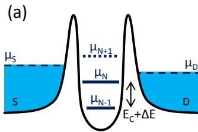</p>
<p>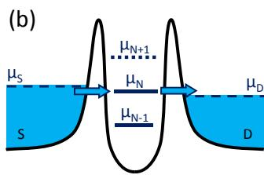<br/>
FIG. 2 (Color online) Schematic diagrams of the electrochemical potential of a single-electron transistor. (a) There is no available level in the bias window between <span class="katex"><span class="katex-html" aria-hidden="true"><span class="base"><span class="strut" style="height:0.625em;vertical-align:-0.1944em;"></span><span class="mord"><span class="mord mathnormal">μ</span><span class="msupsub"><span class="vlist-t vlist-t2"><span class="vlist-r"><span class="vlist" style="height:0.3283em;"><span style="top:-2.55em;margin-left:0em;margin-right:0.05em;"><span class="pstrut" style="height:2.7em;"></span><span class="sizing reset-size6 size3 mtight"><span class="mord mtight"><span class="mord mathnormal mtight" style="margin-right:0.0576em;">S</span></span></span></span></span><span class="vlist-s">​</span></span><span class="vlist-r"><span class="vlist" style="height:0.15em;"><span></span></span></span></span></span></span></span></span></span> and <span class="katex"><span class="katex-html" aria-hidden="true"><span class="base"><span class="strut" style="height:0.625em;vertical-align:-0.1944em;"></span><span class="mord"><span class="mord mathnormal">μ</span><span class="msupsub"><span class="vlist-t vlist-t2"><span class="vlist-r"><span class="vlist" style="height:0.3283em;"><span style="top:-2.55em;margin-left:0em;margin-right:0.05em;"><span class="pstrut" style="height:2.7em;"></span><span class="sizing reset-size6 size3 mtight"><span class="mord mtight"><span class="mord mathnormal mtight" style="margin-right:0.0278em;">D</span></span></span></span></span><span class="vlist-s">​</span></span><span class="vlist-r"><span class="vlist" style="height:0.15em;"><span></span></span></span></span></span></span></span></span></span> , the electrochemical potentials of the source and the drain, so the electron number is fixed at <span class="katex"><span class="katex-html" aria-hidden="true"><span class="base"><span class="strut" style="height:0.6833em;"></span><span class="mord mathnormal" style="margin-right:0.109em;">N</span></span></span></span> due to Coulomb blockade. (b) The <span class="katex"><span class="katex-html" aria-hidden="true"><span class="base"><span class="strut" style="height:0.625em;vertical-align:-0.1944em;"></span><span class="mord"><span class="mord mathnormal">μ</span><span class="msupsub"><span class="vlist-t vlist-t2"><span class="vlist-r"><span class="vlist" style="height:0.3283em;"><span style="top:-2.55em;margin-left:0em;margin-right:0.05em;"><span class="pstrut" style="height:2.7em;"></span><span class="sizing reset-size6 size3 mtight"><span class="mord mtight"><span class="mord mathnormal mtight" style="margin-right:0.109em;">N</span></span></span></span></span><span class="vlist-s">​</span></span><span class="vlist-r"><span class="vlist" style="height:0.15em;"><span></span></span></span></span></span></span></span></span></span> level aligns with source and drain electrochemical potentials, and the number of electrons alternates between <span class="katex"><span class="katex-html" aria-hidden="true"><span class="base"><span class="strut" style="height:0.6833em;"></span><span class="mord mathnormal" style="margin-right:0.109em;">N</span></span></span></span> and <span class="katex"><span class="katex-html" aria-hidden="true"><span class="base"><span class="strut" style="height:0.7667em;vertical-align:-0.0833em;"></span><span class="mord mathnormal" style="margin-right:0.109em;">N</span><span class="mspace" style="margin-right:0.2222em;"></span><span class="mbin">−</span><span class="mspace" style="margin-right:0.2222em;"></span></span><span class="base"><span class="strut" style="height:0.6444em;"></span><span class="mord">1</span></span></span></span> , resulting in a single-electron tunneling current.</p>
<p>SET-island is also coupled capacitively to one or more µ(N+2)gate electrodes, which can be used to tune the electrostatic potential of the well. The discrete levels are spaced by the addition energy <span class="katex"><span class="katex-html" aria-hidden="true"><span class="base"><span class="strut" style="height:1em;vertical-align:-0.25em;"></span><span class="mord"><span class="mord mathnormal" style="margin-right:0.0576em;">E</span><span class="msupsub"><span class="vlist-t vlist-t2"><span class="vlist-r"><span class="vlist" style="height:0.3361em;"><span style="top:-2.55em;margin-left:-0.0576em;margin-right:0.05em;"><span class="pstrut" style="height:2.7em;"></span><span class="sizing reset-size6 size3 mtight"><span class="mord mtight"><span class="mord mtight"><span class="mord mathrm mtight">add</span></span></span></span></span></span><span class="vlist-s">​</span></span><span class="vlist-r"><span class="vlist" style="height:0.15em;"><span></span></span></span></span></span></span><span class="mopen">(</span><span class="mord mathnormal" style="margin-right:0.109em;">N</span><span class="mclose">)</span><span class="mspace" style="margin-right:0.2778em;"></span><span class="mrel">=</span><span class="mspace" style="margin-right:0.2778em;"></span></span><span class="base"><span class="strut" style="height:0.8333em;vertical-align:-0.15em;"></span><span class="mord"><span class="mord mathnormal" style="margin-right:0.0576em;">E</span><span class="msupsub"><span class="vlist-t vlist-t2"><span class="vlist-r"><span class="vlist" style="height:0.3283em;"><span style="top:-2.55em;margin-left:-0.0576em;margin-right:0.05em;"><span class="pstrut" style="height:2.7em;"></span><span class="sizing reset-size6 size3 mtight"><span class="mord mtight"><span class="mord mathnormal mtight" style="margin-right:0.0715em;">C</span></span></span></span></span><span class="vlist-s">​</span></span><span class="vlist-r"><span class="vlist" style="height:0.15em;"><span></span></span></span></span></span></span><span class="mspace" style="margin-right:0.2222em;"></span><span class="mbin">+</span><span class="mspace" style="margin-right:0.2222em;"></span></span><span class="base"><span class="strut" style="height:0.6833em;"></span><span class="mord">Δ</span><span class="mord mathnormal" style="margin-right:0.0576em;">E</span></span></span></span> , which consists of a purely electrostatic part, the charging energy <span class="katex"><span class="katex-html" aria-hidden="true"><span class="base"><span class="strut" style="height:0.8333em;vertical-align:-0.15em;"></span><span class="mord"><span class="mord mathnormal" style="margin-right:0.0576em;">E</span><span class="msupsub"><span class="vlist-t vlist-t2"><span class="vlist-r"><span class="vlist" style="height:0.3283em;"><span style="top:-2.55em;margin-left:-0.0576em;margin-right:0.05em;"><span class="pstrut" style="height:2.7em;"></span><span class="sizing reset-size6 size3 mtight"><span class="mord mtight"><span class="mord mathnormal mtight" style="margin-right:0.0715em;">C</span></span></span></span></span><span class="vlist-s">​</span></span><span class="vlist-r"><span class="vlist" style="height:0.15em;"><span></span></span></span></span></span></span></span></span></span> , plus the energy spacing between two discrete quantum levels, <span class="katex"><span class="katex-html" aria-hidden="true"><span class="base"><span class="strut" style="height:0.6833em;"></span><span class="mord">Δ</span><span class="mord mathnormal" style="margin-right:0.0576em;">E</span></span></span></span> . <span class="katex"><span class="katex-html" aria-hidden="true"><span class="base"><span class="strut" style="height:0.6833em;"></span><span class="mord">Δ</span><span class="mord mathnormal" style="margin-right:0.0576em;">E</span></span></span></span> is zero when two consecutive electrons are added to the same spin-degenerate level. The charging energy <span class="katex"><span class="katex-html" aria-hidden="true"><span class="base"><span class="strut" style="height:0.8333em;vertical-align:-0.15em;"></span><span class="mord"><span class="mord mathnormal" style="margin-right:0.0576em;">E</span><span class="msupsub"><span class="vlist-t vlist-t2"><span class="vlist-r"><span class="vlist" style="height:0.3283em;"><span style="top:-2.55em;margin-left:-0.0576em;margin-right:0.05em;"><span class="pstrut" style="height:2.7em;"></span><span class="sizing reset-size6 size3 mtight"><span class="mord mtight"><span class="mord mathnormal mtight" style="margin-right:0.0715em;">C</span></span></span></span></span><span class="vlist-s">​</span></span><span class="vlist-r"><span class="vlist" style="height:0.15em;"><span></span></span></span></span></span></span><span class="mspace" style="margin-right:0.2778em;"></span><span class="mrel">=</span><span class="mspace" style="margin-right:0.2778em;"></span></span><span class="base"><span class="strut" style="height:1.0641em;vertical-align:-0.25em;"></span><span class="mord"><span class="mord mathnormal">e</span><span class="msupsub"><span class="vlist-t"><span class="vlist-r"><span class="vlist" style="height:0.8141em;"><span style="top:-3.063em;margin-right:0.05em;"><span class="pstrut" style="height:2.7em;"></span><span class="sizing reset-size6 size3 mtight"><span class="mord mtight"><span class="mord mtight">2</span></span></span></span></span></span></span></span></span><span class="mord">/2</span><span class="mord mathnormal" style="margin-right:0.0715em;">C</span></span></span></span> , where <span class="katex"><span class="katex-html" aria-hidden="true"><span class="base"><span class="strut" style="height:0.6833em;"></span><span class="mord mathnormal" style="margin-right:0.0715em;">C</span></span></span></span> is the sum of all capacitances to the SET-island1.</p>
<p>In the limit of low temperature, if we only consider sequential tunneling processes, energy conservation needs to be satisfied for transport to occur. The electrochemical potential <span class="katex"><span class="katex-html" aria-hidden="true"><span class="base"><span class="strut" style="height:0.625em;vertical-align:-0.1944em;"></span><span class="mord"><span class="mord mathnormal">μ</span><span class="msupsub"><span class="vlist-t vlist-t2"><span class="vlist-r"><span class="vlist" style="height:0.3283em;"><span style="top:-2.55em;margin-left:0em;margin-right:0.05em;"><span class="pstrut" style="height:2.7em;"></span><span class="sizing reset-size6 size3 mtight"><span class="mord mtight"><span class="mord mathnormal mtight" style="margin-right:0.109em;">N</span></span></span></span></span><span class="vlist-s">​</span></span><span class="vlist-r"><span class="vlist" style="height:0.15em;"><span></span></span></span></span></span></span></span></span></span> is the energy required for adding the <span class="katex"><span class="katex-html" aria-hidden="true"><span class="base"><span class="strut" style="height:0.6833em;"></span><span class="mord mathnormal" style="margin-right:0.109em;">N</span></span></span></span> th electron to the island. Electrons can only tunnel through the SET when <span class="katex"><span class="katex-html" aria-hidden="true"><span class="base"><span class="strut" style="height:0.625em;vertical-align:-0.1944em;"></span><span class="mord"><span class="mord mathnormal">μ</span><span class="msupsub"><span class="vlist-t vlist-t2"><span class="vlist-r"><span class="vlist" style="height:0.3283em;"><span style="top:-2.55em;margin-left:0em;margin-right:0.05em;"><span class="pstrut" style="height:2.7em;"></span><span class="sizing reset-size6 size3 mtight"><span class="mord mtight"><span class="mord mathnormal mtight" style="margin-right:0.109em;">N</span></span></span></span></span><span class="vlist-s">​</span></span><span class="vlist-r"><span class="vlist" style="height:0.15em;"><span></span></span></span></span></span></span></span></span></span> falls within the bias window (see Fig. 2(b)), i.e. when <span class="katex"><span class="katex-html" aria-hidden="true"><span class="base"><span class="strut" style="height:0.8304em;vertical-align:-0.1944em;"></span><span class="mord"><span class="mord mathnormal">μ</span><span class="msupsub"><span class="vlist-t vlist-t2"><span class="vlist-r"><span class="vlist" style="height:0.3283em;"><span style="top:-2.55em;margin-left:0em;margin-right:0.05em;"><span class="pstrut" style="height:2.7em;"></span><span class="sizing reset-size6 size3 mtight"><span class="mord mtight"><span class="mord mathnormal mtight" style="margin-right:0.0576em;">S</span></span></span></span></span><span class="vlist-s">​</span></span><span class="vlist-r"><span class="vlist" style="height:0.15em;"><span></span></span></span></span></span></span><span class="mspace" style="margin-right:0.2778em;"></span><span class="mrel">≥</span><span class="mspace" style="margin-right:0.2778em;"></span></span><span class="base"><span class="strut" style="height:0.8304em;vertical-align:-0.1944em;"></span><span class="mord"><span class="mord mathnormal">μ</span><span class="msupsub"><span class="vlist-t vlist-t2"><span class="vlist-r"><span class="vlist" style="height:0.3283em;"><span style="top:-2.55em;margin-left:0em;margin-right:0.05em;"><span class="pstrut" style="height:2.7em;"></span><span class="sizing reset-size6 size3 mtight"><span class="mord mtight"><span class="mord mathnormal mtight" style="margin-right:0.109em;">N</span></span></span></span></span><span class="vlist-s">​</span></span><span class="vlist-r"><span class="vlist" style="height:0.15em;"><span></span></span></span></span></span></span><span class="mspace" style="margin-right:0.2778em;"></span><span class="mrel">≥</span><span class="mspace" style="margin-right:0.2778em;"></span></span><span class="base"><span class="strut" style="height:0.625em;vertical-align:-0.1944em;"></span><span class="mord"><span class="mord mathnormal">μ</span><span class="msupsub"><span class="vlist-t vlist-t2"><span class="vlist-r"><span class="vlist" style="height:0.3283em;"><span style="top:-2.55em;margin-left:0em;margin-right:0.05em;"><span class="pstrut" style="height:2.7em;"></span><span class="sizing reset-size6 size3 mtight"><span class="mord mtight"><span class="mord mathnormal mtight" style="margin-right:0.0278em;">D</span></span></span></span></span><span class="vlist-s">​</span></span><span class="vlist-r"><span class="vlist" style="height:0.15em;"><span></span></span></span></span></span></span></span></span></span> . Here <span class="katex"><span class="katex-html" aria-hidden="true"><span class="base"><span class="strut" style="height:0.625em;vertical-align:-0.1944em;"></span><span class="mord"><span class="mord mathnormal">μ</span><span class="msupsub"><span class="vlist-t vlist-t2"><span class="vlist-r"><span class="vlist" style="height:0.3283em;"><span style="top:-2.55em;margin-left:0em;margin-right:0.05em;"><span class="pstrut" style="height:2.7em;"></span><span class="sizing reset-size6 size3 mtight"><span class="mord mtight"><span class="mord mathnormal mtight" style="margin-right:0.0576em;">S</span></span></span></span></span><span class="vlist-s">​</span></span><span class="vlist-r"><span class="vlist" style="height:0.15em;"><span></span></span></span></span></span></span></span></span></span> and <span class="katex"><span class="katex-html" aria-hidden="true"><span class="base"><span class="strut" style="height:0.625em;vertical-align:-0.1944em;"></span><span class="mord"><span class="mord mathnormal">μ</span><span class="msupsub"><span class="vlist-t vlist-t2"><span class="vlist-r"><span class="vlist" style="height:0.3283em;"><span style="top:-2.55em;margin-left:0em;margin-right:0.05em;"><span class="pstrut" style="height:2.7em;"></span><span class="sizing reset-size6 size3 mtight"><span class="mord mtight"><span class="mord mathnormal mtight" style="margin-right:0.0278em;">D</span></span></span></span></span><span class="vlist-s">​</span></span><span class="vlist-r"><span class="vlist" style="height:0.15em;"><span></span></span></span></span></span></span></span></span></span> are the electrochemical potential of the source and the drain respectively. Current cannot flow without an available level in the bias window, and the device is in Coulomb blockade, see Fig. 2(a). A gate voltage can shift the whole ladder of electrochemical potential levels up or down, and thus switch the device from Coulomb blockade to single-electron tunneling mode. By sweeping the gate voltage and measuring the conductance, one obtains Coulomb peaks as shown in Fig. 3(a).</p>
<p>Usually, one measures the conductance versus sourcedrain voltage <span class="katex"><span class="katex-html" aria-hidden="true"><span class="base"><span class="strut" style="height:0.8333em;vertical-align:-0.15em;"></span><span class="mord"><span class="mord mathnormal" style="margin-right:0.2222em;">V</span><span class="msupsub"><span class="vlist-t vlist-t2"><span class="vlist-r"><span class="vlist" style="height:0.3283em;"><span style="top:-2.55em;margin-left:-0.2222em;margin-right:0.05em;"><span class="pstrut" style="height:2.7em;"></span><span class="sizing reset-size6 size3 mtight"><span class="mord mtight"><span class="mord mathnormal mtight" style="margin-right:0.0576em;">S</span><span class="mord mathnormal mtight" style="margin-right:0.0278em;">D</span></span></span></span></span><span class="vlist-s">​</span></span><span class="vlist-r"><span class="vlist" style="height:0.15em;"><span></span></span></span></span></span></span></span></span></span> and gate voltage <span class="katex"><span class="katex-html" aria-hidden="true"><span class="base"><span class="strut" style="height:0.8333em;vertical-align:-0.15em;"></span><span class="mord"><span class="mord mathnormal" style="margin-right:0.2222em;">V</span><span class="msupsub"><span class="vlist-t vlist-t2"><span class="vlist-r"><span class="vlist" style="height:0.3283em;"><span style="top:-2.55em;margin-left:-0.2222em;margin-right:0.05em;"><span class="pstrut" style="height:2.7em;"></span><span class="sizing reset-size6 size3 mtight"><span class="mord mtight"><span class="mord mathnormal mtight">G</span></span></span></span></span><span class="vlist-s">​</span></span><span class="vlist-r"><span class="vlist" style="height:0.15em;"><span></span></span></span></span></span></span></span></span></span> in a bias spectroscopy, as shown in Fig. 3(b). Inside the diamondshaped regions, the current is blocked and the number of electrons is constant. At the edges of these Coulomb diamonds a level is resonant with either source or drain and</p>
<p>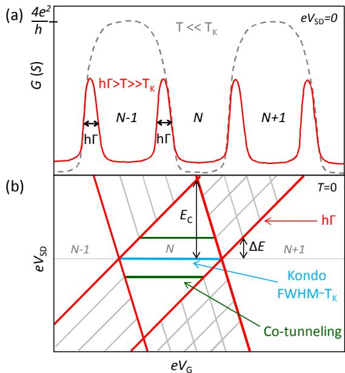<br/>
FIG. 3 (Color online) Zero-bias and finite-bias spectroscopy. (a) Zero-bias conductance <span class="katex"><span class="katex-html" aria-hidden="true"><span class="base"><span class="strut" style="height:0.6833em;"></span><span class="mord mathnormal">G</span></span></span></span> of transport versus gate voltage <span class="katex"><span class="katex-html" aria-hidden="true"><span class="base"><span class="strut" style="height:0.8333em;vertical-align:-0.15em;"></span><span class="mord"><span class="mord mathnormal" style="margin-right:0.2222em;">V</span><span class="msupsub"><span class="vlist-t vlist-t2"><span class="vlist-r"><span class="vlist" style="height:0.3283em;"><span style="top:-2.55em;margin-left:-0.2222em;margin-right:0.05em;"><span class="pstrut" style="height:2.7em;"></span><span class="sizing reset-size6 size3 mtight"><span class="mord mtight"><span class="mord mathnormal mtight">G</span></span></span></span></span><span class="vlist-s">​</span></span><span class="vlist-r"><span class="vlist" style="height:0.15em;"><span></span></span></span></span></span></span></span></span></span> both at <span class="katex"><span class="katex-html" aria-hidden="true"><span class="base"><span class="strut" style="height:0.7224em;vertical-align:-0.0391em;"></span><span class="mord mathnormal" style="margin-right:0.1389em;">T</span><span class="mspace" style="margin-right:0.2778em;"></span><span class="mrel">≫</span><span class="mspace" style="margin-right:0.2778em;"></span></span><span class="base"><span class="strut" style="height:1.0272em;vertical-align:-0.2753em;"></span><span class="mord"><span class="mord mathnormal" style="margin-right:0.1389em;">T</span><span class="msupsub"><span class="vlist-t vlist-t2"><span class="vlist-r"><span class="vlist" style="height:0.7519em;"><span style="top:-2.4247em;margin-left:-0.1389em;margin-right:0.05em;"><span class="pstrut" style="height:2.7em;"></span><span class="sizing reset-size6 size3 mtight"><span class="mord mtight"><span class="mord mathnormal mtight" style="margin-right:0.0715em;">K</span></span></span></span><span style="top:-3.063em;margin-right:0.05em;"><span class="pstrut" style="height:2.7em;"></span><span class="sizing reset-size6 size3 mtight"><span class="mord mtight"><span class="mord mtight">′</span></span></span></span></span><span class="vlist-s">​</span></span><span class="vlist-r"><span class="vlist" style="height:0.2753em;"><span></span></span></span></span></span></span></span></span></span> (solid line) and <span class="katex"><span class="katex-html" aria-hidden="true"><span class="base"><span class="strut" style="height:0.7224em;vertical-align:-0.0391em;"></span><span class="mord mathnormal" style="margin-right:0.1389em;">T</span><span class="mspace" style="margin-right:0.2778em;"></span><span class="mrel">≪</span><span class="mspace" style="margin-right:0.2778em;"></span></span><span class="base"><span class="strut" style="height:0.8333em;vertical-align:-0.15em;"></span><span class="mord"><span class="mord mathnormal" style="margin-right:0.1389em;">T</span><span class="msupsub"><span class="vlist-t vlist-t2"><span class="vlist-r"><span class="vlist" style="height:0.3283em;"><span style="top:-2.55em;margin-left:-0.1389em;margin-right:0.05em;"><span class="pstrut" style="height:2.7em;"></span><span class="sizing reset-size6 size3 mtight"><span class="mord mtight"><span class="mord mathnormal mtight" style="margin-right:0.0715em;">K</span></span></span></span></span><span class="vlist-s">​</span></span><span class="vlist-r"><span class="vlist" style="height:0.15em;"><span></span></span></span></span></span></span></span></span></span> (dashed line). In the first regime, the full width at half maximum (FWHM) of the Coulomb peaks corresponds to the level broadening <span class="katex"><span class="katex-html" aria-hidden="true"><span class="base"><span class="strut" style="height:0.6944em;"></span><span class="mord mathnormal">h</span><span class="mord">Γ</span></span></span></span> . In the Kondo regime ( <span class="katex"><span class="katex-html" aria-hidden="true"><span class="base"><span class="strut" style="height:0.7224em;vertical-align:-0.0391em;"></span><span class="mord mathnormal" style="margin-right:0.1389em;">T</span><span class="mspace" style="margin-right:0.2778em;"></span><span class="mrel">≪</span><span class="mspace" style="margin-right:0.2778em;"></span></span><span class="base"><span class="strut" style="height:0.8333em;vertical-align:-0.15em;"></span><span class="mord"><span class="mord mathnormal" style="margin-right:0.1389em;">T</span><span class="msupsub"><span class="vlist-t vlist-t2"><span class="vlist-r"><span class="vlist" style="height:0.3283em;"><span style="top:-2.55em;margin-left:-0.1389em;margin-right:0.05em;"><span class="pstrut" style="height:2.7em;"></span><span class="sizing reset-size6 size3 mtight"><span class="mord mtight"><span class="mord mathnormal mtight" style="margin-right:0.0715em;">K</span></span></span></span></span><span class="vlist-s">​</span></span><span class="vlist-r"><span class="vlist" style="height:0.15em;"><span></span></span></span></span></span></span></span></span></span> ), Coulomb blockade is overcome by coherent second-order tunneling processes (see main text). (b) Stability diagram showing Coulomb diamonds in differential conductance, <span class="katex"><span class="katex-html" aria-hidden="true"><span class="base"><span class="strut" style="height:1em;vertical-align:-0.25em;"></span><span class="mord mathnormal">d</span><span class="mord mathnormal" style="margin-right:0.0785em;">I</span><span class="mord">/</span><span class="mord mathnormal">d</span><span class="mord"><span class="mord mathnormal" style="margin-right:0.2222em;">V</span><span class="msupsub"><span class="vlist-t vlist-t2"><span class="vlist-r"><span class="vlist" style="height:0.3283em;"><span style="top:-2.55em;margin-left:-0.2222em;margin-right:0.05em;"><span class="pstrut" style="height:2.7em;"></span><span class="sizing reset-size6 size3 mtight"><span class="mord mtight"><span class="mord mathnormal mtight" style="margin-right:0.0576em;">S</span><span class="mord mathnormal mtight" style="margin-right:0.0278em;">D</span></span></span></span></span><span class="vlist-s">​</span></span><span class="vlist-r"><span class="vlist" style="height:0.15em;"><span></span></span></span></span></span></span></span></span></span> , versus <span class="katex"><span class="katex-html" aria-hidden="true"><span class="base"><span class="strut" style="height:0.8333em;vertical-align:-0.15em;"></span><span class="mord mathnormal">e</span><span class="mord"><span class="mord mathnormal" style="margin-right:0.2222em;">V</span><span class="msupsub"><span class="vlist-t vlist-t2"><span class="vlist-r"><span class="vlist" style="height:0.3283em;"><span style="top:-2.55em;margin-left:-0.2222em;margin-right:0.05em;"><span class="pstrut" style="height:2.7em;"></span><span class="sizing reset-size6 size3 mtight"><span class="mord mtight"><span class="mord mathnormal mtight" style="margin-right:0.0576em;">S</span><span class="mord mathnormal mtight" style="margin-right:0.0278em;">D</span></span></span></span></span><span class="vlist-s">​</span></span><span class="vlist-r"><span class="vlist" style="height:0.15em;"><span></span></span></span></span></span></span></span></span></span> and <span class="katex"><span class="katex-html" aria-hidden="true"><span class="base"><span class="strut" style="height:0.8333em;vertical-align:-0.15em;"></span><span class="mord mathnormal">e</span><span class="mord"><span class="mord mathnormal" style="margin-right:0.2222em;">V</span><span class="msupsub"><span class="vlist-t vlist-t2"><span class="vlist-r"><span class="vlist" style="height:0.3283em;"><span style="top:-2.55em;margin-left:-0.2222em;margin-right:0.05em;"><span class="pstrut" style="height:2.7em;"></span><span class="sizing reset-size6 size3 mtight"><span class="mord mtight"><span class="mord mathnormal mtight">G</span></span></span></span></span><span class="vlist-s">​</span></span><span class="vlist-r"><span class="vlist" style="height:0.15em;"><span></span></span></span></span></span></span></span></span></span> at <span class="katex"><span class="katex-html" aria-hidden="true"><span class="base"><span class="strut" style="height:0.6833em;"></span><span class="mord mathnormal" style="margin-right:0.1389em;">T</span><span class="mspace" style="margin-right:0.2778em;"></span><span class="mrel">=</span><span class="mspace" style="margin-right:0.2778em;"></span></span><span class="base"><span class="strut" style="height:0.6833em;"></span><span class="mord">0</span><span class="mord mathnormal" style="margin-right:0.0715em;">K</span></span></span></span> . The edges of the diamondshaped regions (red) correspond to the onset of current. Diagonal lines of increased conductance emanating from the diamonds (gray) indicate transport through excited states. The indicated internal energy scales <span class="katex"><span class="katex-html" aria-hidden="true"><span class="base"><span class="strut" style="height:0.8333em;vertical-align:-0.15em;"></span><span class="mord"><span class="mord mathnormal" style="margin-right:0.0576em;">E</span><span class="msupsub"><span class="vlist-t vlist-t2"><span class="vlist-r"><span class="vlist" style="height:0.3283em;"><span style="top:-2.55em;margin-left:-0.0576em;margin-right:0.05em;"><span class="pstrut" style="height:2.7em;"></span><span class="sizing reset-size6 size3 mtight"><span class="mord mtight"><span class="mord mathnormal mtight" style="margin-right:0.0715em;">C</span></span></span></span></span><span class="vlist-s">​</span></span><span class="vlist-r"><span class="vlist" style="height:0.15em;"><span></span></span></span></span></span></span></span></span></span> , <span class="katex"><span class="katex-html" aria-hidden="true"><span class="base"><span class="strut" style="height:0.6833em;"></span><span class="mord">Δ</span><span class="mord mathnormal" style="margin-right:0.0576em;">E</span></span></span></span> , <span class="katex"><span class="katex-html" aria-hidden="true"><span class="base"><span class="strut" style="height:0.6944em;"></span><span class="mord mathnormal">h</span><span class="mord">Γ</span></span></span></span> and <span class="katex"><span class="katex-html" aria-hidden="true"><span class="base"><span class="strut" style="height:0.8333em;vertical-align:-0.15em;"></span><span class="mord"><span class="mord mathnormal" style="margin-right:0.1389em;">T</span><span class="msupsub"><span class="vlist-t vlist-t2"><span class="vlist-r"><span class="vlist" style="height:0.3283em;"><span style="top:-2.55em;margin-left:-0.1389em;margin-right:0.05em;"><span class="pstrut" style="height:2.7em;"></span><span class="sizing reset-size6 size3 mtight"><span class="mord mtight"><span class="mord mathnormal mtight" style="margin-right:0.0715em;">K</span></span></span></span></span><span class="vlist-s">​</span></span><span class="vlist-r"><span class="vlist" style="height:0.15em;"><span></span></span></span></span></span></span></span></span></span> define the boundaries between different transport regimes. Cotunneling lines can appear when the applied bias exceeds <span class="katex"><span class="katex-html" aria-hidden="true"><span class="base"><span class="strut" style="height:0.6833em;"></span><span class="mord">Δ</span><span class="mord mathnormal" style="margin-right:0.0576em;">E</span></span></span></span> (see main text). Adapted from Lansbergen, 2010.</p>
<p>single-electron tunneling occurs. When an excited state enters the bias window a line of increased conductance can appear parallel to the diamond edges. These resonant tunneling features have other possible physical origins, as described in detail by Escott et al. (2010). From such a bias spectroscopy one can read off the excited-states and the charging energy directly, as indicated in Fig. 3(b).</p>
<p>The simple model described above explains successfully how quantization of charge and energy leads to effects like Coulomb blockade and Coulomb oscillations. Nevertheless, it is too simplified in many respects. Up until now we only worried about the electronic properties of the localized state but not about the physics of the electron transport through that state. In this section, based on Lansbergen, 2010, we will describe the five different regimes of electron transport through a localized stated in a three-terminal-geometry. How electrons traverse a quantum device is strongly dependent on the coherence during the tunneling process and thus depends strongly on <span class="katex"><span class="katex-html" aria-hidden="true"><span class="base"><span class="strut" style="height:0.8333em;vertical-align:-0.15em;"></span><span class="mord mathnormal">e</span><span class="mord"><span class="mord mathnormal" style="margin-right:0.2222em;">V</span><span class="msupsub"><span class="vlist-t vlist-t2"><span class="vlist-r"><span class="vlist" style="height:0.3283em;"><span style="top:-2.55em;margin-left:-0.2222em;margin-right:0.05em;"><span class="pstrut" style="height:2.7em;"></span><span class="sizing reset-size6 size3 mtight"><span class="mord mtight"><span class="mord mathnormal mtight" style="margin-right:0.0576em;">S</span><span class="mord mathnormal mtight" style="margin-right:0.0278em;">D</span></span></span></span></span><span class="vlist-s">​</span></span><span class="vlist-r"><span class="vlist" style="height:0.15em;"><span></span></span></span></span></span></span></span></span></span> and <span class="katex"><span class="katex-html" aria-hidden="true"><span class="base"><span class="strut" style="height:0.8444em;vertical-align:-0.15em;"></span><span class="mord"><span class="mord mathnormal" style="margin-right:0.0315em;">k</span><span class="msupsub"><span class="vlist-t vlist-t2"><span class="vlist-r"><span class="vlist" style="height:0.3283em;"><span style="top:-2.55em;margin-left:-0.0315em;margin-right:0.05em;"><span class="pstrut" style="height:2.7em;"></span><span class="sizing reset-size6 size3 mtight"><span class="mord mtight"><span class="mord mathnormal mtight" style="margin-right:0.0502em;">B</span></span></span></span></span><span class="vlist-s">​</span></span><span class="vlist-r"><span class="vlist" style="height:0.15em;"><span></span></span></span></span></span></span><span class="mord mathnormal" style="margin-right:0.1389em;">T</span></span></span></span> . These external energy scales</p>
<p>should be compared to the internal energy scales of the tunneling geometry that determine the transport regime, namely the charging energy <span class="katex"><span class="katex-html" aria-hidden="true"><span class="base"><span class="strut" style="height:0.8333em;vertical-align:-0.15em;"></span><span class="mord"><span class="mord mathnormal" style="margin-right:0.0576em;">E</span><span class="msupsub"><span class="vlist-t vlist-t2"><span class="vlist-r"><span class="vlist" style="height:0.3283em;"><span style="top:-2.55em;margin-left:-0.0576em;margin-right:0.05em;"><span class="pstrut" style="height:2.7em;"></span><span class="sizing reset-size6 size3 mtight"><span class="mord mtight"><span class="mord mathnormal mtight" style="margin-right:0.0715em;">C</span></span></span></span></span><span class="vlist-s">​</span></span><span class="vlist-r"><span class="vlist" style="height:0.15em;"><span></span></span></span></span></span></span></span></span></span> , the level spacing <span class="katex"><span class="katex-html" aria-hidden="true"><span class="base"><span class="strut" style="height:0.6833em;"></span><span class="mord">Δ</span><span class="mord mathnormal" style="margin-right:0.0576em;">E</span></span></span></span> , the level broadening <span class="katex"><span class="katex-html" aria-hidden="true"><span class="base"><span class="strut" style="height:0.6944em;"></span><span class="mord mathnormal">h</span><span class="mord">Γ</span></span></span></span> and the Kondo temperature <span class="katex"><span class="katex-html" aria-hidden="true"><span class="base"><span class="strut" style="height:0.8333em;vertical-align:-0.15em;"></span><span class="mord"><span class="mord mathnormal" style="margin-right:0.1389em;">T</span><span class="msupsub"><span class="vlist-t vlist-t2"><span class="vlist-r"><span class="vlist" style="height:0.3283em;"><span style="top:-2.55em;margin-left:-0.1389em;margin-right:0.05em;"><span class="pstrut" style="height:2.7em;"></span><span class="sizing reset-size6 size3 mtight"><span class="mord mtight"><span class="mord mathnormal mtight" style="margin-right:0.0715em;">K</span></span></span></span></span><span class="vlist-s">​</span></span><span class="vlist-r"><span class="vlist" style="height:0.15em;"><span></span></span></span></span></span></span></span></span></span> . Here, <span class="katex"><span class="katex-html" aria-hidden="true"><span class="base"><span class="strut" style="height:0.6833em;"></span><span class="mord">Γ</span></span></span></span> is the total tunnel rate to the localized state which can be separated into the tunnel coupling to the source electrode <span class="katex"><span class="katex-html" aria-hidden="true"><span class="base"><span class="strut" style="height:0.8333em;vertical-align:-0.15em;"></span><span class="mord"><span class="mord">Γ</span><span class="msupsub"><span class="vlist-t vlist-t2"><span class="vlist-r"><span class="vlist" style="height:0.3283em;"><span style="top:-2.55em;margin-left:0em;margin-right:0.05em;"><span class="pstrut" style="height:2.7em;"></span><span class="sizing reset-size6 size3 mtight"><span class="mord mtight"><span class="mord mathnormal mtight" style="margin-right:0.0576em;">S</span></span></span></span></span><span class="vlist-s">​</span></span><span class="vlist-r"><span class="vlist" style="height:0.15em;"><span></span></span></span></span></span></span></span></span></span> and to the drain electrode <span class="katex"><span class="katex-html" aria-hidden="true"><span class="base"><span class="strut" style="height:0.8333em;vertical-align:-0.15em;"></span><span class="mord"><span class="mord">Γ</span><span class="msupsub"><span class="vlist-t vlist-t2"><span class="vlist-r"><span class="vlist" style="height:0.3283em;"><span style="top:-2.55em;margin-left:0em;margin-right:0.05em;"><span class="pstrut" style="height:2.7em;"></span><span class="sizing reset-size6 size3 mtight"><span class="mord mtight"><span class="mord mathnormal mtight" style="margin-right:0.0278em;">D</span></span></span></span></span><span class="vlist-s">​</span></span><span class="vlist-r"><span class="vlist" style="height:0.15em;"><span></span></span></span></span></span></span></span></span></span> , i.e. <span class="katex"><span class="katex-html" aria-hidden="true"><span class="base"><span class="strut" style="height:0.6833em;"></span><span class="mord">Γ</span><span class="mspace" style="margin-right:0.2778em;"></span><span class="mrel">=</span><span class="mspace" style="margin-right:0.2778em;"></span></span><span class="base"><span class="strut" style="height:0.8333em;vertical-align:-0.15em;"></span><span class="mord"><span class="mord">Γ</span><span class="msupsub"><span class="vlist-t vlist-t2"><span class="vlist-r"><span class="vlist" style="height:0.3283em;"><span style="top:-2.55em;margin-left:0em;margin-right:0.05em;"><span class="pstrut" style="height:2.7em;"></span><span class="sizing reset-size6 size3 mtight"><span class="mord mtight"><span class="mord mathnormal mtight" style="margin-right:0.0576em;">S</span></span></span></span></span><span class="vlist-s">​</span></span><span class="vlist-r"><span class="vlist" style="height:0.15em;"><span></span></span></span></span></span></span><span class="mspace" style="margin-right:0.2222em;"></span><span class="mbin">+</span><span class="mspace" style="margin-right:0.2222em;"></span></span><span class="base"><span class="strut" style="height:0.8333em;vertical-align:-0.15em;"></span><span class="mord"><span class="mord">Γ</span><span class="msupsub"><span class="vlist-t vlist-t2"><span class="vlist-r"><span class="vlist" style="height:0.3283em;"><span style="top:-2.55em;margin-left:0em;margin-right:0.05em;"><span class="pstrut" style="height:2.7em;"></span><span class="sizing reset-size6 size3 mtight"><span class="mord mtight"><span class="mord mathnormal mtight" style="margin-right:0.0278em;">D</span></span></span></span></span><span class="vlist-s">​</span></span><span class="vlist-r"><span class="vlist" style="height:0.15em;"><span></span></span></span></span></span></span></span></span></span> . The internal energy scales are all fixed by the confinement potential, and the external energy scales reflect the external environment, namely the temperature <span class="katex"><span class="katex-html" aria-hidden="true"><span class="base"><span class="strut" style="height:0.6833em;"></span><span class="mord mathnormal" style="margin-right:0.1389em;">T</span></span></span></span> and the applied bias <span class="katex"><span class="katex-html" aria-hidden="true"><span class="base"><span class="strut" style="height:0.8333em;vertical-align:-0.15em;"></span><span class="mord"><span class="mord mathnormal" style="margin-right:0.2222em;">V</span><span class="msupsub"><span class="vlist-t vlist-t2"><span class="vlist-r"><span class="vlist" style="height:0.3283em;"><span style="top:-2.55em;margin-left:-0.2222em;margin-right:0.05em;"><span class="pstrut" style="height:2.7em;"></span><span class="sizing reset-size6 size3 mtight"><span class="mord mtight"><span class="mord mathnormal mtight" style="margin-right:0.0576em;">S</span><span class="mord mathnormal mtight" style="margin-right:0.0278em;">D</span></span></span></span></span><span class="vlist-s">​</span></span><span class="vlist-r"><span class="vlist" style="height:0.15em;"><span></span></span></span></span></span></span></span></span></span> .</p>
<p>Much literature describes the electronic transport in all possible proportionalities of these energy scales with h4 each other (Alhassid, 2000; Beenakker, 1991; Buttiker, 1988). The internal energy scales are typically related to each other by <span class="katex"><span class="katex-html" aria-hidden="true"><span class="base"><span class="strut" style="height:0.8333em;vertical-align:-0.15em;"></span><span class="mord"><span class="mord mathnormal" style="margin-right:0.1389em;">T</span><span class="msupsub"><span class="vlist-t vlist-t2"><span class="vlist-r"><span class="vlist" style="height:0.3283em;"><span style="top:-2.55em;margin-left:-0.1389em;margin-right:0.05em;"><span class="pstrut" style="height:2.7em;"></span><span class="sizing reset-size6 size3 mtight"><span class="mord mtight"><span class="mord mathnormal mtight" style="margin-right:0.0715em;">K</span></span></span></span></span><span class="vlist-s">​</span></span><span class="vlist-r"><span class="vlist" style="height:0.15em;"><span></span></span></span></span></span></span><span class="mspace" style="margin-right:0.2778em;"></span><span class="mrel">≪</span><span class="mspace" style="margin-right:0.2778em;"></span></span><span class="base"><span class="strut" style="height:0.7335em;vertical-align:-0.0391em;"></span><span class="mord mathnormal">h</span><span class="mord">Γ</span><span class="mspace" style="margin-right:0.2778em;"></span><span class="mrel">≪</span><span class="mspace" style="margin-right:0.2778em;"></span></span><span class="base"><span class="strut" style="height:0.7224em;vertical-align:-0.0391em;"></span><span class="mord">Δ</span><span class="mord mathnormal" style="margin-right:0.0576em;">E</span><span class="mspace" style="margin-right:0.2778em;"></span><span class="mrel">≪</span><span class="mspace" style="margin-right:0.2778em;"></span></span><span class="base"><span class="strut" style="height:0.8333em;vertical-align:-0.15em;"></span><span class="mord"><span class="mord mathnormal" style="margin-right:0.0576em;">E</span><span class="msupsub"><span class="vlist-t vlist-t2"><span class="vlist-r"><span class="vlist" style="height:0.3283em;"><span style="top:-2.55em;margin-left:-0.0576em;margin-right:0.05em;"><span class="pstrut" style="height:2.7em;"></span><span class="sizing reset-size6 size3 mtight"><span class="mord mtight"><span class="mord mathnormal mtight" style="margin-right:0.0715em;">C</span></span></span></span></span><span class="vlist-s">​</span></span><span class="vlist-r"><span class="vlist" style="height:0.15em;"><span></span></span></span></span></span></span></span></span></span> , and occasionally by <span class="katex"><span class="katex-html" aria-hidden="true"><span class="base"><span class="strut" style="height:0.8333em;vertical-align:-0.15em;"></span><span class="mord"><span class="mord mathnormal" style="margin-right:0.1389em;">T</span><span class="msupsub"><span class="vlist-t vlist-t2"><span class="vlist-r"><span class="vlist" style="height:0.3283em;"><span style="top:-2.55em;margin-left:-0.1389em;margin-right:0.05em;"><span class="pstrut" style="height:2.7em;"></span><span class="sizing reset-size6 size3 mtight"><span class="mord mtight"><span class="mord mathnormal mtight" style="margin-right:0.0715em;">K</span></span></span></span></span><span class="vlist-s">​</span></span><span class="vlist-r"><span class="vlist" style="height:0.15em;"><span></span></span></span></span></span></span><span class="mspace" style="margin-right:0.2778em;"></span><span class="mrel">≪</span><span class="mspace" style="margin-right:0.2778em;"></span></span><span class="base"><span class="strut" style="height:0.7224em;vertical-align:-0.0391em;"></span><span class="mord">Δ</span><span class="mord mathnormal" style="margin-right:0.0576em;">E</span><span class="mspace" style="margin-right:0.2778em;"></span><span class="mrel">&lt;</span><span class="mspace" style="margin-right:0.2778em;"></span></span><span class="base"><span class="strut" style="height:0.7335em;vertical-align:-0.0391em;"></span><span class="mord mathnormal">h</span><span class="mord">Γ</span><span class="mspace" style="margin-right:0.2778em;"></span><span class="mrel">≪</span><span class="mspace" style="margin-right:0.2778em;"></span></span><span class="base"><span class="strut" style="height:0.8333em;vertical-align:-0.15em;"></span><span class="mord"><span class="mord mathnormal" style="margin-right:0.0576em;">E</span><span class="msupsub"><span class="vlist-t vlist-t2"><span class="vlist-r"><span class="vlist" style="height:0.3283em;"><span style="top:-2.55em;margin-left:-0.0576em;margin-right:0.05em;"><span class="pstrut" style="height:2.7em;"></span><span class="sizing reset-size6 size3 mtight"><span class="mord mtight"><span class="mord mathnormal mtight" style="margin-right:0.0715em;">C</span></span></span></span></span><span class="vlist-s">​</span></span><span class="vlist-r"><span class="vlist" style="height:0.15em;"><span></span></span></span></span></span></span></span></span></span> , limiting the number of separate transport regimes that we need to consider. Fig. 4(a) is a schematic depiction of transport regimes as a function of <span class="katex"><span class="katex-html" aria-hidden="true"><span class="base"><span class="strut" style="height:0.8333em;vertical-align:-0.15em;"></span><span class="mord mathnormal">e</span><span class="mord"><span class="mord mathnormal" style="margin-right:0.2222em;">V</span><span class="msupsub"><span class="vlist-t vlist-t2"><span class="vlist-r"><span class="vlist" style="height:0.3283em;"><span style="top:-2.55em;margin-left:-0.2222em;margin-right:0.05em;"><span class="pstrut" style="height:2.7em;"></span><span class="sizing reset-size6 size3 mtight"><span class="mord mtight"><span class="mord mathnormal mtight" style="margin-right:0.0576em;">S</span><span class="mord mathnormal mtight" style="margin-right:0.0278em;">D</span></span></span></span></span><span class="vlist-s">​</span></span><span class="vlist-r"><span class="vlist" style="height:0.15em;"><span></span></span></span></span></span></span></span></span></span> and <span class="katex"><span class="katex-html" aria-hidden="true"><span class="base"><span class="strut" style="height:0.8444em;vertical-align:-0.15em;"></span><span class="mord"><span class="mord mathnormal" style="margin-right:0.0315em;">k</span><span class="msupsub"><span class="vlist-t vlist-t2"><span class="vlist-r"><span class="vlist" style="height:0.3283em;"><span style="top:-2.55em;margin-left:-0.0315em;margin-right:0.05em;"><span class="pstrut" style="height:2.7em;"></span><span class="sizing reset-size6 size3 mtight"><span class="mord mtight"><span class="mord mathnormal mtight" style="margin-right:0.0502em;">B</span></span></span></span></span><span class="vlist-s">​</span></span><span class="vlist-r"><span class="vlist" style="height:0.15em;"><span></span></span></span></span></span></span><span class="mord mathnormal" style="margin-right:0.1389em;">T</span></span></span></span> . It should be noted that the boundaries between transport regimes are typically not abrupt transitions. For clarity, internal and external energy scales (except <span class="katex"><span class="katex-html" aria-hidden="true"><span class="base"><span class="strut" style="height:0.8333em;vertical-align:-0.15em;"></span><span class="mord"><span class="mord mathnormal" style="margin-right:0.1389em;">T</span><span class="msupsub"><span class="vlist-t vlist-t2"><span class="vlist-r"><span class="vlist" style="height:0.3283em;"><span style="top:-2.55em;margin-left:-0.1389em;margin-right:0.05em;"><span class="pstrut" style="height:2.7em;"></span><span class="sizing reset-size6 size3 mtight"><span class="mord mtight"><span class="mord mathnormal mtight" style="margin-right:0.0715em;">K</span></span></span></span></span><span class="vlist-s">​</span></span><span class="vlist-r"><span class="vlist" style="height:0.15em;"><span></span></span></span></span></span></span></span></span></span> and <span class="katex"><span class="katex-html" aria-hidden="true"><span class="base"><span class="strut" style="height:0.6944em;"></span><span class="mord mathnormal">h</span><span class="mord">Γ</span></span></span></span> ) are indicated in a schematic representation of our geometry, see Fig. 4(b).</p>
<p>Here, we will not make a distinction between the external energy scales <span class="katex"><span class="katex-html" aria-hidden="true"><span class="base"><span class="strut" style="height:0.8444em;vertical-align:-0.15em;"></span><span class="mord"><span class="mord mathnormal" style="margin-right:0.0315em;">k</span><span class="msupsub"><span class="vlist-t vlist-t2"><span class="vlist-r"><span class="vlist" style="height:0.3283em;"><span style="top:-2.55em;margin-left:-0.0315em;margin-right:0.05em;"><span class="pstrut" style="height:2.7em;"></span><span class="sizing reset-size6 size3 mtight"><span class="mord mtight"><span class="mord mathnormal mtight" style="margin-right:0.0502em;">B</span></span></span></span></span><span class="vlist-s">​</span></span><span class="vlist-r"><span class="vlist" style="height:0.15em;"><span></span></span></span></span></span></span><span class="mord mathnormal" style="margin-right:0.1389em;">T</span></span></span></span> and <span class="katex"><span class="katex-html" aria-hidden="true"><span class="base"><span class="strut" style="height:0.8333em;vertical-align:-0.15em;"></span><span class="mord mathnormal">e</span><span class="mord"><span class="mord mathnormal" style="margin-right:0.2222em;">V</span><span class="msupsub"><span class="vlist-t vlist-t2"><span class="vlist-r"><span class="vlist" style="height:0.3283em;"><span style="top:-2.55em;margin-left:-0.2222em;margin-right:0.05em;"><span class="pstrut" style="height:2.7em;"></span><span class="sizing reset-size6 size3 mtight"><span class="mord mtight"><span class="mord mathnormal mtight" style="margin-right:0.0576em;">S</span><span class="mord mathnormal mtight" style="margin-right:0.0278em;">D</span></span></span></span></span><span class="vlist-s">​</span></span><span class="vlist-r"><span class="vlist" style="height:0.15em;"><span></span></span></span></span></span></span></span></span></span> when we compare them to internal energy scales, as indicated by Fig. 4(a). The reason behind this equality is that both these external energy scales have a very similar effect on the transport characteristics. Their only relevant effect is that they introduce (hot) phonons to the crystal lattice, either directly by temperature or by inelastic tunneling processes induced by the non-equilibrium Fermi energies of the source/drain contacts.</p>
<p>Next, we will describe the five separate tunneling regimes and their corresponding expressions for the source/drain current <span class="katex"><span class="katex-html" aria-hidden="true"><span class="base"><span class="strut" style="height:0.6833em;"></span><span class="mord mathnormal" style="margin-right:0.0785em;">I</span></span></span></span> shortly. These regimes are the socalled multi-electron regime, the sequential multi-level regime, the sequential single level regime, the coherent regime and the Kondo regime, see Fig. 4(a).</p>
<h1 id="1-the-multi-electron-regime">1. The multi-electron regime<a role="anchor" aria-hidden="true" tabindex="-1" data-no-popover="true" href="#1-the-multi-electron-regime" class="internal internal-link"><svg width="18" height="18" viewBox="0 0 24 24" fill="none" stroke="currentColor" stroke-width="2" stroke-linecap="round" stroke-linejoin="round"><path d="M10 13a5 5 0 0 0 7.54.54l3-3a5 5 0 0 0-7.07-7.07l-1.72 1.71"></path><path d="M14 11a5 5 0 0 0-7.54-.54l-3 3a5 5 0 0 0 7.07 7.07l1.71-1.71"></path></svg></a></h1>
<p>Firstly there is the multi-electron regime ( <span class="katex"><span class="katex-html" aria-hidden="true"><span class="base"><span class="strut" style="height:0.8333em;vertical-align:-0.15em;"></span><span class="mord"><span class="mord mathnormal" style="margin-right:0.0576em;">E</span><span class="msupsub"><span class="vlist-t vlist-t2"><span class="vlist-r"><span class="vlist" style="height:0.3283em;"><span style="top:-2.55em;margin-left:-0.0576em;margin-right:0.05em;"><span class="pstrut" style="height:2.7em;"></span><span class="sizing reset-size6 size3 mtight"><span class="mord mtight"><span class="mord mathnormal mtight" style="margin-right:0.0715em;">C</span></span></span></span></span><span class="vlist-s">​</span></span><span class="vlist-r"><span class="vlist" style="height:0.15em;"><span></span></span></span></span></span></span><span class="mord"><span class="mspace nobreak"> </span><span class="mrel">≪</span><span class="mspace nobreak"> </span></span></span></span></span> <span class="katex"><span class="katex-html" aria-hidden="true"><span class="base"><span class="strut" style="height:1em;vertical-align:-0.25em;"></span><span class="mord"><span class="mord mathnormal" style="margin-right:0.0315em;">k</span><span class="msupsub"><span class="vlist-t vlist-t2"><span class="vlist-r"><span class="vlist" style="height:0.3283em;"><span style="top:-2.55em;margin-left:-0.0315em;margin-right:0.05em;"><span class="pstrut" style="height:2.7em;"></span><span class="sizing reset-size6 size3 mtight"><span class="mord mtight"><span class="mord mathnormal mtight" style="margin-right:0.0502em;">B</span></span></span></span></span><span class="vlist-s">​</span></span><span class="vlist-r"><span class="vlist" style="height:0.15em;"><span></span></span></span></span></span></span><span class="mord mathnormal" style="margin-right:0.1389em;">T</span><span class="mpunct">,</span><span class="mspace" style="margin-right:0.1667em;"></span><span class="mord mathnormal">e</span><span class="mord"><span class="mord mathnormal" style="margin-right:0.2222em;">V</span><span class="msupsub"><span class="vlist-t vlist-t2"><span class="vlist-r"><span class="vlist" style="height:0.3283em;"><span style="top:-2.55em;margin-left:-0.2222em;margin-right:0.05em;"><span class="pstrut" style="height:2.7em;"></span><span class="sizing reset-size6 size3 mtight"><span class="mord mtight"><span class="mord mathnormal mtight" style="margin-right:0.0576em;">S</span><span class="mord mathnormal mtight" style="margin-right:0.0278em;">D</span></span></span></span></span><span class="vlist-s">​</span></span><span class="vlist-r"><span class="vlist" style="height:0.15em;"><span></span></span></span></span></span></span><span class="mclose">)</span></span></span></span> where Coulomb blockade does not occur, as mentioned in the start of this chapter. This regime is not relevant for this review.</p>
<h1 id="2-the-sequential-multi-level-regime">2. The sequential multi-level regime<a role="anchor" aria-hidden="true" tabindex="-1" data-no-popover="true" href="#2-the-sequential-multi-level-regime" class="internal internal-link"><svg width="18" height="18" viewBox="0 0 24 24" fill="none" stroke="currentColor" stroke-width="2" stroke-linecap="round" stroke-linejoin="round"><path d="M10 13a5 5 0 0 0 7.54.54l3-3a5 5 0 0 0-7.07-7.07l-1.72 1.71"></path><path d="M14 11a5 5 0 0 0-7.54-.54l-3 3a5 5 0 0 0 7.07 7.07l1.71-1.71"></path></svg></a></h1>
<p>At <span class="katex"><span class="katex-html" aria-hidden="true"><span class="base"><span class="strut" style="height:0.7224em;vertical-align:-0.0391em;"></span><span class="mord">Δ</span><span class="mord mathnormal" style="margin-right:0.0576em;">E</span><span class="mspace" style="margin-right:0.2778em;"></span><span class="mrel">≪</span><span class="mspace" style="margin-right:0.2778em;"></span></span><span class="base"><span class="strut" style="height:0.8889em;vertical-align:-0.1944em;"></span><span class="mord"><span class="mord mathnormal" style="margin-right:0.0315em;">k</span><span class="msupsub"><span class="vlist-t vlist-t2"><span class="vlist-r"><span class="vlist" style="height:0.3283em;"><span style="top:-2.55em;margin-left:-0.0315em;margin-right:0.05em;"><span class="pstrut" style="height:2.7em;"></span><span class="sizing reset-size6 size3 mtight"><span class="mord mtight"><span class="mord mathnormal mtight" style="margin-right:0.0502em;">B</span></span></span></span></span><span class="vlist-s">​</span></span><span class="vlist-r"><span class="vlist" style="height:0.15em;"><span></span></span></span></span></span></span><span class="mord mathnormal" style="margin-right:0.1389em;">T</span><span class="mpunct">,</span><span class="mspace" style="margin-right:0.1667em;"></span><span class="mord mathnormal">e</span><span class="mord"><span class="mord mathnormal" style="margin-right:0.2222em;">V</span><span class="msupsub"><span class="vlist-t vlist-t2"><span class="vlist-r"><span class="vlist" style="height:0.3283em;"><span style="top:-2.55em;margin-left:-0.2222em;margin-right:0.05em;"><span class="pstrut" style="height:2.7em;"></span><span class="sizing reset-size6 size3 mtight"><span class="mord mtight"><span class="mord mathnormal mtight" style="margin-right:0.0576em;">S</span><span class="mord mathnormal mtight" style="margin-right:0.0278em;">D</span></span></span></span></span><span class="vlist-s">​</span></span><span class="vlist-r"><span class="vlist" style="height:0.15em;"><span></span></span></span></span></span></span><span class="mspace" style="margin-right:0.2778em;"></span><span class="mrel">≪</span><span class="mspace" style="margin-right:0.2778em;"></span></span><span class="base"><span class="strut" style="height:0.8333em;vertical-align:-0.15em;"></span><span class="mord"><span class="mord mathnormal" style="margin-right:0.0576em;">E</span><span class="msupsub"><span class="vlist-t vlist-t2"><span class="vlist-r"><span class="vlist" style="height:0.3283em;"><span style="top:-2.55em;margin-left:-0.0576em;margin-right:0.05em;"><span class="pstrut" style="height:2.7em;"></span><span class="sizing reset-size6 size3 mtight"><span class="mord mtight"><span class="mord mathnormal mtight" style="margin-right:0.0715em;">C</span></span></span></span></span><span class="vlist-s">​</span></span><span class="vlist-r"><span class="vlist" style="height:0.15em;"><span></span></span></span></span></span></span></span></span></span> the system is in the sequential multi-level regime. The transport is given by</p>
<p>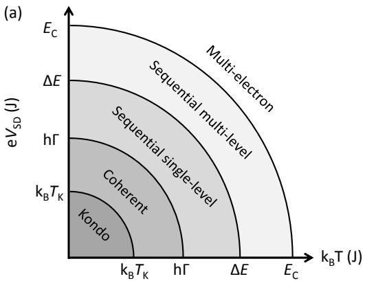</p>
<p>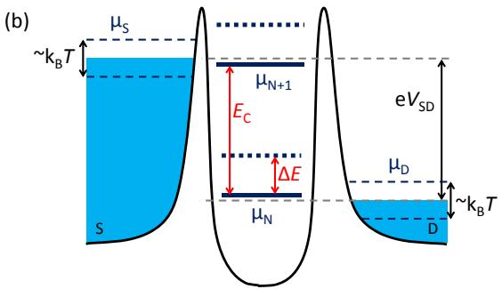<br/>
FIG. 4 (Color online) The five separate transport regimes in a three-terminal quantum device. (a) Schematic depiction of the regimes in which transport through a localized takes place as a function of the external energy scales <span class="katex"><span class="katex-html" aria-hidden="true"><span class="base"><span class="strut" style="height:0.9019em;vertical-align:-0.15em;"></span><span class="mord"><span class="mord mathnormal" style="margin-right:0.0315em;">k</span><span class="msupsub"><span class="vlist-t vlist-t2"><span class="vlist-r"><span class="vlist" style="height:0.3283em;"><span style="top:-2.55em;margin-left:-0.0315em;margin-right:0.05em;"><span class="pstrut" style="height:2.7em;"></span><span class="sizing reset-size6 size3 mtight"><span class="mord mtight"><span class="mord mathnormal mtight" style="margin-right:0.0502em;">B</span></span></span></span></span><span class="vlist-s">​</span></span><span class="vlist-r"><span class="vlist" style="height:0.15em;"><span></span></span></span></span></span></span><span class="mord"><span class="mord mathnormal" style="margin-right:0.1389em;">T</span><span class="msupsub"><span class="vlist-t"><span class="vlist-r"><span class="vlist" style="height:0.7519em;"><span style="top:-3.063em;margin-right:0.05em;"><span class="pstrut" style="height:2.7em;"></span><span class="sizing reset-size6 size3 mtight"><span class="mord mtight"><span class="mord mtight">′</span></span></span></span></span></span></span></span></span></span></span></span> and <span class="katex"><span class="katex-html" aria-hidden="true"><span class="base"><span class="strut" style="height:0.8333em;vertical-align:-0.15em;"></span><span class="mord"><span class="mord mathnormal" style="margin-right:0.2222em;">V</span><span class="msupsub"><span class="vlist-t vlist-t2"><span class="vlist-r"><span class="vlist" style="height:0.3283em;"><span style="top:-2.55em;margin-left:-0.2222em;margin-right:0.05em;"><span class="pstrut" style="height:2.7em;"></span><span class="sizing reset-size6 size3 mtight"><span class="mord mtight"><span class="mord mathnormal mtight" style="margin-right:0.0576em;">S</span><span class="mord mathnormal mtight" style="margin-right:0.0278em;">D</span></span></span></span></span><span class="vlist-s">​</span></span><span class="vlist-r"><span class="vlist" style="height:0.15em;"><span></span></span></span></span></span></span></span></span></span> . The transitions between regimes take place on the order of the internal energy scales <span class="katex"><span class="katex-html" aria-hidden="true"><span class="base"><span class="strut" style="height:0.8333em;vertical-align:-0.15em;"></span><span class="mord"><span class="mord mathnormal" style="margin-right:0.0576em;">E</span><span class="msupsub"><span class="vlist-t vlist-t2"><span class="vlist-r"><span class="vlist" style="height:0.3283em;"><span style="top:-2.55em;margin-left:-0.0576em;margin-right:0.05em;"><span class="pstrut" style="height:2.7em;"></span><span class="sizing reset-size6 size3 mtight"><span class="mord mtight"><span class="mord mathnormal mtight" style="margin-right:0.0715em;">C</span></span></span></span></span><span class="vlist-s">​</span></span><span class="vlist-r"><span class="vlist" style="height:0.15em;"><span></span></span></span></span></span></span></span></span></span> , <span class="katex"><span class="katex-html" aria-hidden="true"><span class="base"><span class="strut" style="height:0.6833em;"></span><span class="mord">Δ</span><span class="mord mathnormal" style="margin-right:0.0576em;">E</span></span></span></span> , hΓ and <span class="katex"><span class="katex-html" aria-hidden="true"><span class="base"><span class="strut" style="height:0.8333em;vertical-align:-0.15em;"></span><span class="mord"><span class="mord mathnormal" style="margin-right:0.1389em;">T</span><span class="msupsub"><span class="vlist-t vlist-t2"><span class="vlist-r"><span class="vlist" style="height:0.3283em;"><span style="top:-2.55em;margin-left:-0.1389em;margin-right:0.05em;"><span class="pstrut" style="height:2.7em;"></span><span class="sizing reset-size6 size3 mtight"><span class="mord mtight"><span class="mord mathnormal mtight" style="margin-right:0.0715em;">K</span></span></span></span></span><span class="vlist-s">​</span></span><span class="vlist-r"><span class="vlist" style="height:0.15em;"><span></span></span></span></span></span></span></span></span></span> . (b) Potential landscape of the three terminal geometry, where the quantum states and the electrochemical potential of the leads are shown together with <span class="katex"><span class="katex-html" aria-hidden="true"><span class="base"><span class="strut" style="height:0.8444em;vertical-align:-0.15em;"></span><span class="mord"><span class="mord mathnormal" style="margin-right:0.0315em;">k</span><span class="msupsub"><span class="vlist-t vlist-t2"><span class="vlist-r"><span class="vlist" style="height:0.3283em;"><span style="top:-2.55em;margin-left:-0.0315em;margin-right:0.05em;"><span class="pstrut" style="height:2.7em;"></span><span class="sizing reset-size6 size3 mtight"><span class="mord mtight"><span class="mord mathnormal mtight" style="margin-right:0.0502em;">B</span></span></span></span></span><span class="vlist-s">​</span></span><span class="vlist-r"><span class="vlist" style="height:0.15em;"><span></span></span></span></span></span></span><span class="mord mathnormal" style="margin-right:0.1389em;">T</span></span></span></span> , <span class="katex"><span class="katex-html" aria-hidden="true"><span class="base"><span class="strut" style="height:0.8333em;vertical-align:-0.15em;"></span><span class="mord"><span class="mord mathnormal" style="margin-right:0.2222em;">V</span><span class="msupsub"><span class="vlist-t vlist-t2"><span class="vlist-r"><span class="vlist" style="height:0.3283em;"><span style="top:-2.55em;margin-left:-0.2222em;margin-right:0.05em;"><span class="pstrut" style="height:2.7em;"></span><span class="sizing reset-size6 size3 mtight"><span class="mord mtight"><span class="mord mathnormal mtight" style="margin-right:0.0576em;">S</span><span class="mord mathnormal mtight" style="margin-right:0.0278em;">D</span></span></span></span></span><span class="vlist-s">​</span></span><span class="vlist-r"><span class="vlist" style="height:0.15em;"><span></span></span></span></span></span></span></span></span></span> and <span class="katex"><span class="katex-html" aria-hidden="true"><span class="base"><span class="strut" style="height:0.8333em;vertical-align:-0.15em;"></span><span class="mord"><span class="mord mathnormal" style="margin-right:0.0576em;">E</span><span class="msupsub"><span class="vlist-t vlist-t2"><span class="vlist-r"><span class="vlist" style="height:0.3283em;"><span style="top:-2.55em;margin-left:-0.0576em;margin-right:0.05em;"><span class="pstrut" style="height:2.7em;"></span><span class="sizing reset-size6 size3 mtight"><span class="mord mtight"><span class="mord mathnormal mtight" style="margin-right:0.0715em;">C</span></span></span></span></span><span class="vlist-s">​</span></span><span class="vlist-r"><span class="vlist" style="height:0.15em;"><span></span></span></span></span></span></span></span></span></span> , <span class="katex"><span class="katex-html" aria-hidden="true"><span class="base"><span class="strut" style="height:0.6833em;"></span><span class="mord">Δ</span><span class="mord mathnormal" style="margin-right:0.0576em;">E</span></span></span></span> .</p>
<p>(Beenakker, 1991; Van der Vaart et al., 1993)</p>
<span class="katex-display"><span class="katex"><span class="katex-html" aria-hidden="true"><span class="base"><span class="strut" style="height:0.6833em;"></span><span class="mord mathnormal" style="margin-right:0.0785em;">I</span><span class="mspace" style="margin-right:0.2778em;"></span><span class="mrel">=</span><span class="mspace" style="margin-right:0.2778em;"></span></span><span class="base"><span class="strut" style="height:2.5587em;vertical-align:-0.9687em;"></span><span class="mord mathnormal">e</span><span class="mord"><span class="mopen nulldelimiter"></span><span class="mfrac"><span class="vlist-t vlist-t2"><span class="vlist-r"><span class="vlist" style="height:1.59em;"><span style="top:-2.314em;"><span class="pstrut" style="height:3em;"></span><span class="mord"><span class="mord"><span class="mord">Γ</span><span class="msupsub"><span class="vlist-t vlist-t2"><span class="vlist-r"><span class="vlist" style="height:0.7959em;"><span style="top:-2.4173em;margin-left:0em;margin-right:0.05em;"><span class="pstrut" style="height:2.7em;"></span><span class="sizing reset-size6 size3 mtight"><span class="mord mtight"><span class="mord mtight"><span class="mord mathrm mtight">in</span></span></span></span></span><span style="top:-3.0448em;margin-right:0.05em;"><span class="pstrut" style="height:2.7em;"></span><span class="sizing reset-size6 size3 mtight"><span class="mord mtight"><span class="mord mtight">1</span></span></span></span></span><span class="vlist-s">​</span></span><span class="vlist-r"><span class="vlist" style="height:0.2827em;"><span></span></span></span></span></span></span><span class="mspace" style="margin-right:0.2222em;"></span><span class="mbin">+</span><span class="mspace" style="margin-right:0.2222em;"></span><span class="mord"><span class="mord">Γ</span><span class="msupsub"><span class="vlist-t vlist-t2"><span class="vlist-r"><span class="vlist" style="height:0.7959em;"><span style="top:-2.4173em;margin-left:0em;margin-right:0.05em;"><span class="pstrut" style="height:2.7em;"></span><span class="sizing reset-size6 size3 mtight"><span class="mord mtight"><span class="mord mtight"><span class="mord mathrm mtight">in</span></span></span></span></span><span style="top:-3.0448em;margin-right:0.05em;"><span class="pstrut" style="height:2.7em;"></span><span class="sizing reset-size6 size3 mtight"><span class="mord mtight"><span class="mord mtight">2</span></span></span></span></span><span class="vlist-s">​</span></span><span class="vlist-r"><span class="vlist" style="height:0.2827em;"><span></span></span></span></span></span></span><span class="mspace" style="margin-right:0.2222em;"></span><span class="mbin">+</span><span class="mspace" style="margin-right:0.2222em;"></span><span class="minner">⋯</span><span class="mspace" style="margin-right:0.2222em;"></span><span class="mbin">+</span><span class="mspace" style="margin-right:0.2222em;"></span><span class="mord"><span class="mord">Γ</span><span class="msupsub"><span class="vlist-t vlist-t2"><span class="vlist-r"><span class="vlist" style="height:0.6462em;"><span style="top:-2.4173em;margin-left:0em;margin-right:0.05em;"><span class="pstrut" style="height:2.7em;"></span><span class="sizing reset-size6 size3 mtight"><span class="mord mtight"><span class="mord mtight"><span class="mord mathrm mtight">in</span></span></span></span></span><span style="top:-3.0448em;margin-right:0.05em;"><span class="pstrut" style="height:2.7em;"></span><span class="sizing reset-size6 size3 mtight"><span class="mord mtight"><span class="mord mathnormal mtight">n</span></span></span></span></span><span class="vlist-s">​</span></span><span class="vlist-r"><span class="vlist" style="height:0.2827em;"><span></span></span></span></span></span></span><span class="mspace" style="margin-right:0.2222em;"></span><span class="mbin">+</span><span class="mspace" style="margin-right:0.2222em;"></span><span class="mord"><span class="mord">Γ</span><span class="msupsub"><span class="vlist-t vlist-t2"><span class="vlist-r"><span class="vlist" style="height:0.7959em;"><span style="top:-2.4542em;margin-left:0em;margin-right:0.05em;"><span class="pstrut" style="height:2.7em;"></span><span class="sizing reset-size6 size3 mtight"><span class="mord mtight"><span class="mord mtight"><span class="mord mathrm mtight">out</span></span></span></span></span><span style="top:-3.0448em;margin-right:0.05em;"><span class="pstrut" style="height:2.7em;"></span><span class="sizing reset-size6 size3 mtight"><span class="mord mtight"><span class="mord mtight">1</span></span></span></span></span><span class="vlist-s">​</span></span><span class="vlist-r"><span class="vlist" style="height:0.2458em;"><span></span></span></span></span></span></span></span></span><span style="top:-3.23em;"><span class="pstrut" style="height:3em;"></span><span class="frac-line" style="border-bottom-width:0.04em;"></span></span><span style="top:-3.74em;"><span class="pstrut" style="height:3em;"></span><span class="mord"><span class="minner"><span class="mopen delimcenter" style="top:0em;"><span class="delimsizing size1">(</span></span><span class="mord"><span class="mord">Γ</span><span class="msupsub"><span class="vlist-t vlist-t2"><span class="vlist-r"><span class="vlist" style="height:0.8141em;"><span style="top:-2.4355em;margin-left:0em;margin-right:0.05em;"><span class="pstrut" style="height:2.7em;"></span><span class="sizing reset-size6 size3 mtight"><span class="mord mtight"><span class="mord mtight"><span class="mord mathrm mtight">in</span></span></span></span></span><span style="top:-3.063em;margin-right:0.05em;"><span class="pstrut" style="height:2.7em;"></span><span class="sizing reset-size6 size3 mtight"><span class="mord mtight"><span class="mord mtight">1</span></span></span></span></span><span class="vlist-s">​</span></span><span class="vlist-r"><span class="vlist" style="height:0.2645em;"><span></span></span></span></span></span></span><span class="mspace" style="margin-right:0.2222em;"></span><span class="mbin">+</span><span class="mspace" style="margin-right:0.2222em;"></span><span class="mord"><span class="mord">Γ</span><span class="msupsub"><span class="vlist-t vlist-t2"><span class="vlist-r"><span class="vlist" style="height:0.8141em;"><span style="top:-2.4355em;margin-left:0em;margin-right:0.05em;"><span class="pstrut" style="height:2.7em;"></span><span class="sizing reset-size6 size3 mtight"><span class="mord mtight"><span class="mord mtight"><span class="mord mathrm mtight">in</span></span></span></span></span><span style="top:-3.063em;margin-right:0.05em;"><span class="pstrut" style="height:2.7em;"></span><span class="sizing reset-size6 size3 mtight"><span class="mord mtight"><span class="mord mtight">2</span></span></span></span></span><span class="vlist-s">​</span></span><span class="vlist-r"><span class="vlist" style="height:0.2645em;"><span></span></span></span></span></span></span><span class="mspace" style="margin-right:0.2222em;"></span><span class="mbin">+</span><span class="mspace" style="margin-right:0.2222em;"></span><span class="minner">⋯</span><span class="mspace" style="margin-right:0.2222em;"></span><span class="mbin">+</span><span class="mspace" style="margin-right:0.2222em;"></span><span class="mord"><span class="mord">Γ</span><span class="msupsub"><span class="vlist-t vlist-t2"><span class="vlist-r"><span class="vlist" style="height:0.6644em;"><span style="top:-2.4355em;margin-left:0em;margin-right:0.05em;"><span class="pstrut" style="height:2.7em;"></span><span class="sizing reset-size6 size3 mtight"><span class="mord mtight"><span class="mord mtight"><span class="mord mathrm mtight">in</span></span></span></span></span><span style="top:-3.063em;margin-right:0.05em;"><span class="pstrut" style="height:2.7em;"></span><span class="sizing reset-size6 size3 mtight"><span class="mord mtight"><span class="mord mathnormal mtight">n</span></span></span></span></span><span class="vlist-s">​</span></span><span class="vlist-r"><span class="vlist" style="height:0.2645em;"><span></span></span></span></span></span></span><span class="mclose delimcenter" style="top:0em;"><span class="delimsizing size1">)</span></span></span><span class="mspace" style="margin-right:0.1667em;"></span><span class="mord"><span class="mord">Γ</span><span class="msupsub"><span class="vlist-t vlist-t2"><span class="vlist-r"><span class="vlist" style="height:0.8141em;"><span style="top:-2.453em;margin-left:0em;margin-right:0.05em;"><span class="pstrut" style="height:2.7em;"></span><span class="sizing reset-size6 size3 mtight"><span class="mord mtight"><span class="mord mtight"><span class="mord mathrm mtight">out</span></span></span></span></span><span style="top:-3.063em;margin-right:0.05em;"><span class="pstrut" style="height:2.7em;"></span><span class="sizing reset-size6 size3 mtight"><span class="mord mtight"><span class="mord mtight">1</span></span></span></span></span><span class="vlist-s">​</span></span><span class="vlist-r"><span class="vlist" style="height:0.247em;"><span></span></span></span></span></span></span></span></span></span><span class="vlist-s">​</span></span><span class="vlist-r"><span class="vlist" style="height:0.9687em;"><span></span></span></span></span></span><span class="mclose nulldelimiter"></span></span><span class="mpunct">,</span></span><span class="tag"><span class="strut" style="height:2.5587em;vertical-align:-0.9687em;"></span><span class="mord text"><span class="mord">(</span><span class="mord"><span class="mord">1</span></span><span class="mord">)</span></span></span></span></span></span>
<p>where the subscript denotes the direction of transport, into or out of the localized state, and the superscript indicates the level, where 1 refers to the ground state and <span class="katex"><span class="katex-html" aria-hidden="true"><span class="base"><span class="strut" style="height:0.4306em;"></span><span class="mord mathnormal">n</span></span></span></span> indicates the highest orbital within the energy window set by <span class="katex"><span class="katex-html" aria-hidden="true"><span class="base"><span class="strut" style="height:0.8333em;vertical-align:-0.15em;"></span><span class="mord mathnormal">e</span><span class="mord"><span class="mord mathnormal" style="margin-right:0.2222em;">V</span><span class="msupsub"><span class="vlist-t vlist-t2"><span class="vlist-r"><span class="vlist" style="height:0.3283em;"><span style="top:-2.55em;margin-left:-0.2222em;margin-right:0.05em;"><span class="pstrut" style="height:2.7em;"></span><span class="sizing reset-size6 size3 mtight"><span class="mord mtight"><span class="mord mathnormal mtight" style="margin-right:0.0576em;">S</span><span class="mord mathnormal mtight" style="margin-right:0.0278em;">D</span></span></span></span></span><span class="vlist-s">​</span></span><span class="vlist-r"><span class="vlist" style="height:0.15em;"><span></span></span></span></span></span></span></span></span></span> . The current thus depends on the ingoing rates of all levels in the bias window and the outgoing rate of only the ground state. Physically, electrons can enter any orbital state that is energetically allowed. Once a single electron is transferred to the localized state, Coulomb blockade prevents another electron from entering. For dopants, the bound electron will relax back to the ground state before it has a chance to tunnel out of the localized state, since the orbital relaxation times ( <span class="katex"><span class="katex-html" aria-hidden="true"><span class="base"><span class="strut" style="height:0.3669em;"></span><span class="mrel">∼</span></span></span></span> ps-ns (Lansbergen et al., 2011)) are typically much faster than the outgoing tunnel rates (∼1 ns). For quantum dots the physics is similar but tunnel rates and orbital relaxation rates are slower, e.g. ∼ 1-10ns‘in GaAs quantum dots (Fujisawa et al., 1998). The inelastic nature of the re-</p>
<p>laxation prohibits coherent transfer of electrons from the source to the drain electrode.</p>
<h1 id="3-the-sequential-single-level-regime">3. The sequential single-level regime<a role="anchor" aria-hidden="true" tabindex="-1" data-no-popover="true" href="#3-the-sequential-single-level-regime" class="internal internal-link"><svg width="18" height="18" viewBox="0 0 24 24" fill="none" stroke="currentColor" stroke-width="2" stroke-linecap="round" stroke-linejoin="round"><path d="M10 13a5 5 0 0 0 7.54.54l3-3a5 5 0 0 0-7.07-7.07l-1.72 1.71"></path><path d="M14 11a5 5 0 0 0-7.54-.54l-3 3a5 5 0 0 0 7.07 7.07l1.71-1.71"></path></svg></a></h1>
<p>The next transport regime is the sequential single-level regime, roughly bounded by <span class="katex"><span class="katex-html" aria-hidden="true"><span class="base"><span class="strut" style="height:0.7335em;vertical-align:-0.0391em;"></span><span class="mord mathnormal">h</span><span class="mord">Γ</span><span class="mspace" style="margin-right:0.2778em;"></span><span class="mrel">≪</span><span class="mspace" style="margin-right:0.2778em;"></span></span><span class="base"><span class="strut" style="height:0.8889em;vertical-align:-0.1944em;"></span><span class="mord"><span class="mord mathnormal" style="margin-right:0.0315em;">k</span><span class="msupsub"><span class="vlist-t vlist-t2"><span class="vlist-r"><span class="vlist" style="height:0.3283em;"><span style="top:-2.55em;margin-left:-0.0315em;margin-right:0.05em;"><span class="pstrut" style="height:2.7em;"></span><span class="sizing reset-size6 size3 mtight"><span class="mord mtight"><span class="mord mathnormal mtight" style="margin-right:0.0502em;">B</span></span></span></span></span><span class="vlist-s">​</span></span><span class="vlist-r"><span class="vlist" style="height:0.15em;"><span></span></span></span></span></span></span><span class="mord mathnormal" style="margin-right:0.1389em;">T</span><span class="mpunct">,</span><span class="mspace" style="margin-right:0.1667em;"></span><span class="mord mathnormal">e</span><span class="mord"><span class="mord mathnormal" style="margin-right:0.2222em;">V</span><span class="msupsub"><span class="vlist-t vlist-t2"><span class="vlist-r"><span class="vlist" style="height:0.3283em;"><span style="top:-2.55em;margin-left:-0.2222em;margin-right:0.05em;"><span class="pstrut" style="height:2.7em;"></span><span class="sizing reset-size6 size3 mtight"><span class="mord mtight"><span class="mord mathnormal mtight" style="margin-right:0.0576em;">S</span><span class="mord mathnormal mtight" style="margin-right:0.0278em;">D</span></span></span></span></span><span class="vlist-s">​</span></span><span class="vlist-r"><span class="vlist" style="height:0.15em;"><span></span></span></span></span></span></span><span class="mspace" style="margin-right:0.2778em;"></span><span class="mrel">≪</span><span class="mspace" style="margin-right:0.2778em;"></span></span><span class="base"><span class="strut" style="height:0.6833em;"></span><span class="mord">Δ</span><span class="mord mathnormal" style="margin-right:0.0576em;">E</span></span></span></span> , where only a single level resides inside the bias window. This regime is a transition between phase-coherent and phase-incoherent transport between source- and drain -electrodes and the tunneling current depends vitally on <span class="katex"><span class="katex-html" aria-hidden="true"><span class="base"><span class="strut" style="height:0.8444em;vertical-align:-0.15em;"></span><span class="mord"><span class="mord mathnormal" style="margin-right:0.0315em;">k</span><span class="msupsub"><span class="vlist-t vlist-t2"><span class="vlist-r"><span class="vlist" style="height:0.3283em;"><span style="top:-2.55em;margin-left:-0.0315em;margin-right:0.05em;"><span class="pstrut" style="height:2.7em;"></span><span class="sizing reset-size6 size3 mtight"><span class="mord mtight"><span class="mord mathnormal mtight" style="margin-right:0.0502em;">B</span></span></span></span></span><span class="vlist-s">​</span></span><span class="vlist-r"><span class="vlist" style="height:0.15em;"><span></span></span></span></span></span></span><span class="mord mathnormal" style="margin-right:0.1389em;">T</span></span></span></span> . For <span class="katex"><span class="katex-html" aria-hidden="true"><span class="base"><span class="strut" style="height:0.8333em;vertical-align:-0.15em;"></span><span class="mord"><span class="mord">∇</span><span class="msupsub"><span class="vlist-t vlist-t2"><span class="vlist-r"><span class="vlist" style="height:0.3283em;"><span style="top:-2.55em;margin-left:0em;margin-right:0.05em;"><span class="pstrut" style="height:2.7em;"></span><span class="sizing reset-size6 size3 mtight"><span class="mord mtight"><span class="mord mathnormal mtight" style="margin-right:0.0576em;">S</span><span class="mord mathnormal mtight" style="margin-right:0.0278em;">D</span></span></span></span></span><span class="vlist-s">​</span></span><span class="vlist-r"><span class="vlist" style="height:0.15em;"><span></span></span></span></span></span></span><span class="mspace nobreak"> </span><span class="mspace" style="margin-right:0.2778em;"></span><span class="mrel">=</span><span class="mspace nobreak"> </span><span class="mspace" style="margin-right:0.2778em;"></span><span class="mord">0</span></span></span></span> the conductance is given by (Beenakker, 1991)</p>
<span class="katex-display"><span class="katex"><span class="katex-html" aria-hidden="true"><span class="base"><span class="strut" style="height:0.6833em;"></span><span class="mord mathnormal">G</span><span class="mspace" style="margin-right:0.2778em;"></span><span class="mrel">=</span><span class="mspace" style="margin-right:0.2778em;"></span></span><span class="base"><span class="strut" style="height:2.4598em;vertical-align:-0.9687em;"></span><span class="mord"><span class="mopen nulldelimiter"></span><span class="mfrac"><span class="vlist-t vlist-t2"><span class="vlist-r"><span class="vlist" style="height:1.4911em;"><span style="top:-2.314em;"><span class="pstrut" style="height:3em;"></span><span class="mord"><span class="mord">4</span><span class="mord"><span class="mord mathnormal" style="margin-right:0.0315em;">k</span><span class="msupsub"><span class="vlist-t vlist-t2"><span class="vlist-r"><span class="vlist" style="height:0.3283em;"><span style="top:-2.55em;margin-left:-0.0315em;margin-right:0.05em;"><span class="pstrut" style="height:2.7em;"></span><span class="sizing reset-size6 size3 mtight"><span class="mord mtight"><span class="mord mathnormal mtight" style="margin-right:0.0502em;">B</span></span></span></span></span><span class="vlist-s">​</span></span><span class="vlist-r"><span class="vlist" style="height:0.15em;"><span></span></span></span></span></span></span><span class="mord mathnormal" style="margin-right:0.1389em;">T</span></span></span><span style="top:-3.23em;"><span class="pstrut" style="height:3em;"></span><span class="frac-line" style="border-bottom-width:0.04em;"></span></span><span style="top:-3.677em;"><span class="pstrut" style="height:3em;"></span><span class="mord"><span class="mord"><span class="mord mathnormal">e</span><span class="msupsub"><span class="vlist-t"><span class="vlist-r"><span class="vlist" style="height:0.8141em;"><span style="top:-3.063em;margin-right:0.05em;"><span class="pstrut" style="height:2.7em;"></span><span class="sizing reset-size6 size3 mtight"><span class="mord mtight"><span class="mord mtight">2</span></span></span></span></span></span></span></span></span></span></span></span><span class="vlist-s">​</span></span><span class="vlist-r"><span class="vlist" style="height:0.836em;"><span></span></span></span></span></span><span class="mclose nulldelimiter"></span></span><span class="mord"><span class="mopen nulldelimiter"></span><span class="mfrac"><span class="vlist-t vlist-t2"><span class="vlist-r"><span class="vlist" style="height:1.4911em;"><span style="top:-2.314em;"><span class="pstrut" style="height:3em;"></span><span class="mord"><span class="mord"><span class="mord">Γ</span><span class="msupsub"><span class="vlist-t vlist-t2"><span class="vlist-r"><span class="vlist" style="height:0.7959em;"><span style="top:-2.4173em;margin-left:0em;margin-right:0.05em;"><span class="pstrut" style="height:2.7em;"></span><span class="sizing reset-size6 size3 mtight"><span class="mord mtight"><span class="mord mtight"><span class="mord mathrm mtight">in</span></span></span></span></span><span style="top:-3.0448em;margin-right:0.05em;"><span class="pstrut" style="height:2.7em;"></span><span class="sizing reset-size6 size3 mtight"><span class="mord mtight"><span class="mord mtight">1</span></span></span></span></span><span class="vlist-s">​</span></span><span class="vlist-r"><span class="vlist" style="height:0.2827em;"><span></span></span></span></span></span></span><span class="mspace" style="margin-right:0.2222em;"></span><span class="mbin">+</span><span class="mspace" style="margin-right:0.2222em;"></span><span class="mord"><span class="mord">Γ</span><span class="msupsub"><span class="vlist-t vlist-t2"><span class="vlist-r"><span class="vlist" style="height:0.7959em;"><span style="top:-2.4542em;margin-left:0em;margin-right:0.05em;"><span class="pstrut" style="height:2.7em;"></span><span class="sizing reset-size6 size3 mtight"><span class="mord mtight"><span class="mord mtight"><span class="mord mathrm mtight">out</span></span></span></span></span><span style="top:-3.0448em;margin-right:0.05em;"><span class="pstrut" style="height:2.7em;"></span><span class="sizing reset-size6 size3 mtight"><span class="mord mtight"><span class="mord mtight">1</span></span></span></span></span><span class="vlist-s">​</span></span><span class="vlist-r"><span class="vlist" style="height:0.2458em;"><span></span></span></span></span></span></span></span></span><span style="top:-3.23em;"><span class="pstrut" style="height:3em;"></span><span class="frac-line" style="border-bottom-width:0.04em;"></span></span><span style="top:-3.677em;"><span class="pstrut" style="height:3em;"></span><span class="mord"><span class="mord"><span class="mord">Γ</span><span class="msupsub"><span class="vlist-t vlist-t2"><span class="vlist-r"><span class="vlist" style="height:0.8141em;"><span style="top:-2.4355em;margin-left:0em;margin-right:0.05em;"><span class="pstrut" style="height:2.7em;"></span><span class="sizing reset-size6 size3 mtight"><span class="mord mtight"><span class="mord mtight"><span class="mord mathrm mtight">in</span></span></span></span></span><span style="top:-3.063em;margin-right:0.05em;"><span class="pstrut" style="height:2.7em;"></span><span class="sizing reset-size6 size3 mtight"><span class="mord mtight"><span class="mord mtight">1</span></span></span></span></span><span class="vlist-s">​</span></span><span class="vlist-r"><span class="vlist" style="height:0.2645em;"><span></span></span></span></span></span></span><span class="mord"><span class="mord">Γ</span><span class="msupsub"><span class="vlist-t vlist-t2"><span class="vlist-r"><span class="vlist" style="height:0.8141em;"><span style="top:-2.453em;margin-left:0em;margin-right:0.05em;"><span class="pstrut" style="height:2.7em;"></span><span class="sizing reset-size6 size3 mtight"><span class="mord mtight"><span class="mord mtight"><span class="mord mathrm mtight">out</span></span></span></span></span><span style="top:-3.063em;margin-right:0.05em;"><span class="pstrut" style="height:2.7em;"></span><span class="sizing reset-size6 size3 mtight"><span class="mord mtight"><span class="mord mtight">1</span></span></span></span></span><span class="vlist-s">​</span></span><span class="vlist-r"><span class="vlist" style="height:0.247em;"><span></span></span></span></span></span></span></span></span></span><span class="vlist-s">​</span></span><span class="vlist-r"><span class="vlist" style="height:0.9687em;"><span></span></span></span></span></span><span class="mclose nulldelimiter"></span></span><span class="mpunct">,</span></span><span class="tag"><span class="strut" style="height:2.4598em;vertical-align:-0.9687em;"></span><span class="mord text"><span class="mord">(</span><span class="mord"><span class="mord">2</span></span><span class="mord">)</span></span></span></span></span></span>
<p>where <span class="katex"><span class="katex-html" aria-hidden="true"><span class="base"><span class="strut" style="height:0.8333em;vertical-align:-0.15em;"></span><span class="mord"><span class="mord">Γ</span><span class="msupsub"><span class="vlist-t vlist-t2"><span class="vlist-r"><span class="vlist" style="height:0.3175em;"><span style="top:-2.55em;margin-left:0em;margin-right:0.05em;"><span class="pstrut" style="height:2.7em;"></span><span class="sizing reset-size6 size3 mtight"><span class="mord mtight"><span class="mord mtight"><span class="mord mathrm mtight">in</span></span></span></span></span></span><span class="vlist-s">​</span></span><span class="vlist-r"><span class="vlist" style="height:0.15em;"><span></span></span></span></span></span></span></span></span></span> is the tunnel rate into the localized state and <span class="katex"><span class="katex-html" aria-hidden="true"><span class="base"><span class="strut" style="height:0.8333em;vertical-align:-0.15em;"></span><span class="mord"><span class="mord">Γ</span><span class="msupsub"><span class="vlist-t vlist-t2"><span class="vlist-r"><span class="vlist" style="height:0.2806em;"><span style="top:-2.55em;margin-left:0em;margin-right:0.05em;"><span class="pstrut" style="height:2.7em;"></span><span class="sizing reset-size6 size3 mtight"><span class="mord mtight"><span class="mord mtight"><span class="mord mathrm mtight">out</span></span></span></span></span></span><span class="vlist-s">​</span></span><span class="vlist-r"><span class="vlist" style="height:0.15em;"><span></span></span></span></span></span></span></span></span></span> is the tunnel rate out. Note that <span class="katex"><span class="katex-html" aria-hidden="true"><span class="base"><span class="strut" style="height:0.8333em;vertical-align:-0.15em;"></span><span class="mord"><span class="mord">Γ</span><span class="msupsub"><span class="vlist-t vlist-t2"><span class="vlist-r"><span class="vlist" style="height:0.3175em;"><span style="top:-2.55em;margin-left:0em;margin-right:0.05em;"><span class="pstrut" style="height:2.7em;"></span><span class="sizing reset-size6 size3 mtight"><span class="mord mtight"><span class="mord mtight"><span class="mord mathrm mtight">in</span></span></span></span></span></span><span class="vlist-s">​</span></span><span class="vlist-r"><span class="vlist" style="height:0.15em;"><span></span></span></span></span></span></span><span class="mspace" style="margin-right:0.2778em;"></span><span class="mrel">=</span><span class="mspace" style="margin-right:0.2778em;"></span></span><span class="base"><span class="strut" style="height:0.8778em;vertical-align:-0.1944em;"></span><span class="mord"><span class="mord">Γ</span><span class="msupsub"><span class="vlist-t vlist-t2"><span class="vlist-r"><span class="vlist" style="height:0.3283em;"><span style="top:-2.55em;margin-left:0em;margin-right:0.05em;"><span class="pstrut" style="height:2.7em;"></span><span class="sizing reset-size6 size3 mtight"><span class="mord mtight"><span class="mord mathnormal mtight" style="margin-right:0.0576em;">S</span></span></span></span></span><span class="vlist-s">​</span></span><span class="vlist-r"><span class="vlist" style="height:0.15em;"><span></span></span></span></span></span></span><span class="mpunct">,</span><span class="mspace" style="margin-right:0.1667em;"></span><span class="mord"><span class="mord">Γ</span><span class="msupsub"><span class="vlist-t vlist-t2"><span class="vlist-r"><span class="vlist" style="height:0.2806em;"><span style="top:-2.55em;margin-left:0em;margin-right:0.05em;"><span class="pstrut" style="height:2.7em;"></span><span class="sizing reset-size6 size3 mtight"><span class="mord mtight"><span class="mord mtight"><span class="mord mathrm mtight">out</span></span></span></span></span></span><span class="vlist-s">​</span></span><span class="vlist-r"><span class="vlist" style="height:0.15em;"><span></span></span></span></span></span></span><span class="mspace" style="margin-right:0.2778em;"></span><span class="mrel">=</span></span></span></span> <span class="katex"><span class="katex-html" aria-hidden="true"><span class="base"><span class="strut" style="height:0.8333em;vertical-align:-0.15em;"></span><span class="mord"><span class="mord">Γ</span><span class="msupsub"><span class="vlist-t vlist-t2"><span class="vlist-r"><span class="vlist" style="height:0.3283em;"><span style="top:-2.55em;margin-left:0em;margin-right:0.05em;"><span class="pstrut" style="height:2.7em;"></span><span class="sizing reset-size6 size3 mtight"><span class="mord mtight"><span class="mord mathnormal mtight" style="margin-right:0.0278em;">D</span></span></span></span></span><span class="vlist-s">​</span></span><span class="vlist-r"><span class="vlist" style="height:0.15em;"><span></span></span></span></span></span></span></span></span></span> for <span class="katex"><span class="katex-html" aria-hidden="true"><span class="base"><span class="strut" style="height:0.8333em;vertical-align:-0.15em;"></span><span class="mord"><span class="mord mathnormal" style="margin-right:0.2222em;">V</span><span class="msupsub"><span class="vlist-t vlist-t2"><span class="vlist-r"><span class="vlist" style="height:0.3283em;"><span style="top:-2.55em;margin-left:-0.2222em;margin-right:0.05em;"><span class="pstrut" style="height:2.7em;"></span><span class="sizing reset-size6 size3 mtight"><span class="mord mtight"><span class="mord mathnormal mtight" style="margin-right:0.0576em;">S</span><span class="mord mathnormal mtight" style="margin-right:0.0278em;">D</span></span></span></span></span><span class="vlist-s">​</span></span><span class="vlist-r"><span class="vlist" style="height:0.15em;"><span></span></span></span></span></span></span><span class="mspace" style="margin-right:0.2778em;"></span><span class="mrel">></span><span class="mspace" style="margin-right:0.2778em;"></span></span><span class="base"><span class="strut" style="height:0.6444em;"></span><span class="mord">0</span></span></span></span> and <span class="katex"><span class="katex-html" aria-hidden="true"><span class="base"><span class="strut" style="height:0.8333em;vertical-align:-0.15em;"></span><span class="mord"><span class="mord">Γ</span><span class="msupsub"><span class="vlist-t vlist-t2"><span class="vlist-r"><span class="vlist" style="height:0.3175em;"><span style="top:-2.55em;margin-left:0em;margin-right:0.05em;"><span class="pstrut" style="height:2.7em;"></span><span class="sizing reset-size6 size3 mtight"><span class="mord mtight"><span class="mord mtight"><span class="mord mathrm mtight">in</span></span></span></span></span></span><span class="vlist-s">​</span></span><span class="vlist-r"><span class="vlist" style="height:0.15em;"><span></span></span></span></span></span></span><span class="mspace" style="margin-right:0.2778em;"></span><span class="mrel">=</span><span class="mspace" style="margin-right:0.2778em;"></span></span><span class="base"><span class="strut" style="height:0.8778em;vertical-align:-0.1944em;"></span><span class="mord"><span class="mord">Γ</span><span class="msupsub"><span class="vlist-t vlist-t2"><span class="vlist-r"><span class="vlist" style="height:0.3283em;"><span style="top:-2.55em;margin-left:0em;margin-right:0.05em;"><span class="pstrut" style="height:2.7em;"></span><span class="sizing reset-size6 size3 mtight"><span class="mord mtight"><span class="mord mathnormal mtight" style="margin-right:0.0278em;">D</span></span></span></span></span><span class="vlist-s">​</span></span><span class="vlist-r"><span class="vlist" style="height:0.15em;"><span></span></span></span></span></span></span><span class="mpunct">,</span><span class="mspace" style="margin-right:0.1667em;"></span><span class="mord"><span class="mord">Γ</span><span class="msupsub"><span class="vlist-t vlist-t2"><span class="vlist-r"><span class="vlist" style="height:0.2806em;"><span style="top:-2.55em;margin-left:0em;margin-right:0.05em;"><span class="pstrut" style="height:2.7em;"></span><span class="sizing reset-size6 size3 mtight"><span class="mord mtight"><span class="mord mtight"><span class="mord mathrm mtight">out</span></span></span></span></span></span><span class="vlist-s">​</span></span><span class="vlist-r"><span class="vlist" style="height:0.15em;"><span></span></span></span></span></span></span><span class="mspace" style="margin-right:0.2778em;"></span><span class="mrel">=</span><span class="mspace" style="margin-right:0.2778em;"></span></span><span class="base"><span class="strut" style="height:0.8333em;vertical-align:-0.15em;"></span><span class="mord"><span class="mord">Γ</span><span class="msupsub"><span class="vlist-t vlist-t2"><span class="vlist-r"><span class="vlist" style="height:0.3283em;"><span style="top:-2.55em;margin-left:0em;margin-right:0.05em;"><span class="pstrut" style="height:2.7em;"></span><span class="sizing reset-size6 size3 mtight"><span class="mord mtight"><span class="mord mathnormal mtight" style="margin-right:0.0576em;">S</span></span></span></span></span><span class="vlist-s">​</span></span><span class="vlist-r"><span class="vlist" style="height:0.15em;"><span></span></span></span></span></span></span></span></span></span> for <span class="katex"><span class="katex-html" aria-hidden="true"><span class="base"><span class="strut" style="height:0.8333em;vertical-align:-0.15em;"></span><span class="mord"><span class="mord mathnormal" style="margin-right:0.2222em;">V</span><span class="msupsub"><span class="vlist-t vlist-t2"><span class="vlist-r"><span class="vlist" style="height:0.3283em;"><span style="top:-2.55em;margin-left:-0.2222em;margin-right:0.05em;"><span class="pstrut" style="height:2.7em;"></span><span class="sizing reset-size6 size3 mtight"><span class="mord mtight"><span class="mord mathnormal mtight" style="margin-right:0.0576em;">S</span><span class="mord mathnormal mtight" style="margin-right:0.0278em;">D</span></span></span></span></span><span class="vlist-s">​</span></span><span class="vlist-r"><span class="vlist" style="height:0.15em;"><span></span></span></span></span></span></span><span class="mspace" style="margin-right:0.2778em;"></span><span class="mrel">&lt;</span><span class="mspace" style="margin-right:0.2778em;"></span></span><span class="base"><span class="strut" style="height:0.6444em;"></span><span class="mord">0</span></span></span></span> .</p>
<p>If the localized state is strongly coupled to the contacts higher-order transport processes become apparent in the Coulomb blocked region, i.e. the so called co-tunneling lines indicated in Fig. 3(b). This is the case when <span class="katex"><span class="katex-html" aria-hidden="true"><span class="base"><span class="strut" style="height:1em;vertical-align:-0.25em;"></span><span class="mord"><span class="mord mathnormal" style="margin-right:0.0576em;">E</span><span class="msupsub"><span class="vlist-t vlist-t2"><span class="vlist-r"><span class="vlist" style="height:0.3283em;"><span style="top:-2.55em;margin-left:-0.0576em;margin-right:0.05em;"><span class="pstrut" style="height:2.7em;"></span><span class="sizing reset-size6 size3 mtight"><span class="mord mtight"><span class="mord mathnormal mtight" style="margin-right:0.0715em;">C</span></span></span></span></span><span class="vlist-s">​</span></span><span class="vlist-r"><span class="vlist" style="height:0.15em;"><span></span></span></span></span></span></span><span class="mord">/Γ</span></span></span></span> approaches unity in the open regime. There is an elastic and inelastic component to the co-tunneling (Averin and Nazarov, 1990; Nazarov and Blanter, 2009). The elastic component leads to a constant background current in the Coulomb diamond. The inelastic component leads to a step in the current when the applied bias exceeds <span class="katex"><span class="katex-html" aria-hidden="true"><span class="base"><span class="strut" style="height:0.6833em;"></span><span class="mord">Δ</span><span class="mord mathnormal" style="margin-right:0.0576em;">E</span></span></span></span> . The current is given by</p>
<span class="katex-display"><span class="katex"><span class="katex-html" aria-hidden="true"><span class="base"><span class="strut" style="height:0.8333em;vertical-align:-0.15em;"></span><span class="mord"><span class="mord mathnormal" style="margin-right:0.0785em;">I</span><span class="msupsub"><span class="vlist-t vlist-t2"><span class="vlist-r"><span class="vlist" style="height:0.3361em;"><span style="top:-2.55em;margin-left:-0.0785em;margin-right:0.05em;"><span class="pstrut" style="height:2.7em;"></span><span class="sizing reset-size6 size3 mtight"><span class="mord mtight"><span class="mord mtight"><span class="mord mathrm mtight">el</span></span></span></span></span></span><span class="vlist-s">​</span></span><span class="vlist-r"><span class="vlist" style="height:0.15em;"><span></span></span></span></span></span></span><span class="mspace" style="margin-right:0.2778em;"></span><span class="mrel">=</span><span class="mspace" style="margin-right:0.2778em;"></span></span><span class="base"><span class="strut" style="height:2.1771em;vertical-align:-0.686em;"></span><span class="mord"><span class="mopen nulldelimiter"></span><span class="mfrac"><span class="vlist-t vlist-t2"><span class="vlist-r"><span class="vlist" style="height:1.4911em;"><span style="top:-2.314em;"><span class="pstrut" style="height:3em;"></span><span class="mord"><span class="mord">8</span><span class="mord"><span class="mord mathnormal" style="margin-right:0.0359em;">π</span><span class="msupsub"><span class="vlist-t"><span class="vlist-r"><span class="vlist" style="height:0.7401em;"><span style="top:-2.989em;margin-right:0.05em;"><span class="pstrut" style="height:2.7em;"></span><span class="sizing reset-size6 size3 mtight"><span class="mord mtight"><span class="mord mtight">2</span></span></span></span></span></span></span></span></span><span class="mord mathnormal">h</span></span></span><span style="top:-3.23em;"><span class="pstrut" style="height:3em;"></span><span class="frac-line" style="border-bottom-width:0.04em;"></span></span><span style="top:-3.677em;"><span class="pstrut" style="height:3em;"></span><span class="mord"><span class="mord"><span class="mord mathnormal">ρ</span><span class="msupsub"><span class="vlist-t"><span class="vlist-r"><span class="vlist" style="height:0.8141em;"><span style="top:-3.063em;margin-right:0.05em;"><span class="pstrut" style="height:2.7em;"></span><span class="sizing reset-size6 size3 mtight"><span class="mord mtight"><span class="mord mtight">2</span></span></span></span></span></span></span></span></span><span class="mord"><span class="mord mathnormal">e</span><span class="msupsub"><span class="vlist-t"><span class="vlist-r"><span class="vlist" style="height:0.8141em;"><span style="top:-3.063em;margin-right:0.05em;"><span class="pstrut" style="height:2.7em;"></span><span class="sizing reset-size6 size3 mtight"><span class="mord mtight"><span class="mord mtight">2</span></span></span></span></span></span></span></span></span></span></span></span><span class="vlist-s">​</span></span><span class="vlist-r"><span class="vlist" style="height:0.686em;"><span></span></span></span></span></span><span class="mclose nulldelimiter"></span></span><span class="mord"><span class="mord">Γ</span><span class="msupsub"><span class="vlist-t vlist-t2"><span class="vlist-r"><span class="vlist" style="height:0.3175em;"><span style="top:-2.55em;margin-left:0em;margin-right:0.05em;"><span class="pstrut" style="height:2.7em;"></span><span class="sizing reset-size6 size3 mtight"><span class="mord mtight"><span class="mord mtight"><span class="mord mathrm mtight">in</span></span></span></span></span></span><span class="vlist-s">​</span></span><span class="vlist-r"><span class="vlist" style="height:0.15em;"><span></span></span></span></span></span></span><span class="mord"><span class="mord">Γ</span><span class="msupsub"><span class="vlist-t vlist-t2"><span class="vlist-r"><span class="vlist" style="height:0.2806em;"><span style="top:-2.55em;margin-left:0em;margin-right:0.05em;"><span class="pstrut" style="height:2.7em;"></span><span class="sizing reset-size6 size3 mtight"><span class="mord mtight"><span class="mord mtight"><span class="mord mathrm mtight">out</span></span></span></span></span></span><span class="vlist-s">​</span></span><span class="vlist-r"><span class="vlist" style="height:0.15em;"><span></span></span></span></span></span></span><span class="mord"><span class="mopen nulldelimiter"></span><span class="mfrac"><span class="vlist-t vlist-t2"><span class="vlist-r"><span class="vlist" style="height:1.3214em;"><span style="top:-2.314em;"><span class="pstrut" style="height:3em;"></span><span class="mord"><span class="mord">Δ</span><span class="mord mathnormal" style="margin-right:0.0576em;">E</span></span></span><span style="top:-3.23em;"><span class="pstrut" style="height:3em;"></span><span class="frac-line" style="border-bottom-width:0.04em;"></span></span><span style="top:-3.677em;"><span class="pstrut" style="height:3em;"></span><span class="mord"><span class="mord">1</span></span></span></span><span class="vlist-s">​</span></span><span class="vlist-r"><span class="vlist" style="height:0.686em;"><span></span></span></span></span></span><span class="mclose nulldelimiter"></span></span><span class="mpunct">,</span></span><span class="tag"><span class="strut" style="height:2.1771em;vertical-align:-0.686em;"></span><span class="mord text"><span class="mord">(</span><span class="mord"><span class="mord">3</span></span><span class="mord">)</span></span></span></span></span></span>
<span class="katex-display"><span class="katex"><span class="katex-html" aria-hidden="true"><span class="base"><span class="strut" style="height:0.8333em;vertical-align:-0.15em;"></span><span class="mord"><span class="mord mathnormal" style="margin-right:0.0785em;">I</span><span class="msupsub"><span class="vlist-t vlist-t2"><span class="vlist-r"><span class="vlist" style="height:0.3175em;"><span style="top:-2.55em;margin-left:-0.0785em;margin-right:0.05em;"><span class="pstrut" style="height:2.7em;"></span><span class="sizing reset-size6 size3 mtight"><span class="mord mtight"><span class="mord mtight"><span class="mord mathrm mtight">in</span></span></span></span></span></span><span class="vlist-s">​</span></span><span class="vlist-r"><span class="vlist" style="height:0.15em;"><span></span></span></span></span></span></span><span class="mspace" style="margin-right:0.2778em;"></span><span class="mrel">=</span><span class="mspace" style="margin-right:0.2778em;"></span></span><span class="base"><span class="strut" style="height:2.4411em;vertical-align:-0.95em;"></span><span class="mord"><span class="mopen nulldelimiter"></span><span class="mfrac"><span class="vlist-t vlist-t2"><span class="vlist-r"><span class="vlist" style="height:1.4911em;"><span style="top:-2.314em;"><span class="pstrut" style="height:3em;"></span><span class="mord"><span class="mord">6</span><span class="mord mathnormal">h</span></span></span><span style="top:-3.23em;"><span class="pstrut" style="height:3em;"></span><span class="frac-line" style="border-bottom-width:0.04em;"></span></span><span style="top:-3.677em;"><span class="pstrut" style="height:3em;"></span><span class="mord"><span class="mord"><span class="mord mathnormal">ρ</span><span class="msupsub"><span class="vlist-t"><span class="vlist-r"><span class="vlist" style="height:0.8141em;"><span style="top:-3.063em;margin-right:0.05em;"><span class="pstrut" style="height:2.7em;"></span><span class="sizing reset-size6 size3 mtight"><span class="mord mtight"><span class="mord mtight">2</span></span></span></span></span></span></span></span></span><span class="mord"><span class="mord mathnormal">e</span><span class="msupsub"><span class="vlist-t"><span class="vlist-r"><span class="vlist" style="height:0.8141em;"><span style="top:-3.063em;margin-right:0.05em;"><span class="pstrut" style="height:2.7em;"></span><span class="sizing reset-size6 size3 mtight"><span class="mord mtight"><span class="mord mtight">2</span></span></span></span></span></span></span></span></span></span></span></span><span class="vlist-s">​</span></span><span class="vlist-r"><span class="vlist" style="height:0.686em;"><span></span></span></span></span></span><span class="mclose nulldelimiter"></span></span><span class="mord"><span class="mord">Γ</span><span class="msupsub"><span class="vlist-t vlist-t2"><span class="vlist-r"><span class="vlist" style="height:0.3175em;"><span style="top:-2.55em;margin-left:0em;margin-right:0.05em;"><span class="pstrut" style="height:2.7em;"></span><span class="sizing reset-size6 size3 mtight"><span class="mord mtight"><span class="mord mtight"><span class="mord mathrm mtight">in</span></span></span></span></span></span><span class="vlist-s">​</span></span><span class="vlist-r"><span class="vlist" style="height:0.15em;"><span></span></span></span></span></span></span><span class="mord"><span class="mord">Γ</span><span class="msupsub"><span class="vlist-t vlist-t2"><span class="vlist-r"><span class="vlist" style="height:0.2806em;"><span style="top:-2.55em;margin-left:0em;margin-right:0.05em;"><span class="pstrut" style="height:2.7em;"></span><span class="sizing reset-size6 size3 mtight"><span class="mord mtight"><span class="mord mtight"><span class="mord mathrm mtight">out</span></span></span></span></span></span><span class="vlist-s">​</span></span><span class="vlist-r"><span class="vlist" style="height:0.15em;"><span></span></span></span></span></span></span><span class="mspace" style="margin-right:0.1667em;"></span><span class="minner"><span class="mopen delimcenter" style="top:0em;"><span class="delimsizing size3">(</span></span><span class="mord"><span class="mopen nulldelimiter"></span><span class="mfrac"><span class="vlist-t vlist-t2"><span class="vlist-r"><span class="vlist" style="height:1.3714em;"><span style="top:-2.314em;"><span class="pstrut" style="height:3em;"></span><span class="mord"><span class="mord"><span class="mord mathnormal" style="margin-right:0.0576em;">E</span><span class="msupsub"><span class="vlist-t vlist-t2"><span class="vlist-r"><span class="vlist" style="height:0.1514em;"><span style="top:-2.55em;margin-left:-0.0576em;margin-right:0.05em;"><span class="pstrut" style="height:2.7em;"></span><span class="sizing reset-size6 size3 mtight"><span class="mord mtight"><span class="mord mathnormal mtight">e</span></span></span></span></span><span class="vlist-s">​</span></span><span class="vlist-r"><span class="vlist" style="height:0.15em;"><span></span></span></span></span></span></span></span></span><span style="top:-3.23em;"><span class="pstrut" style="height:3em;"></span><span class="frac-line" style="border-bottom-width:0.04em;"></span></span><span style="top:-3.677em;"><span class="pstrut" style="height:3em;"></span><span class="mord"><span class="mord"><span class="mord mathnormal" style="margin-right:0.0315em;">k</span><span class="msupsub"><span class="vlist-t vlist-t2"><span class="vlist-r"><span class="vlist" style="height:0.3283em;"><span style="top:-2.55em;margin-left:-0.0315em;margin-right:0.05em;"><span class="pstrut" style="height:2.7em;"></span><span class="sizing reset-size6 size3 mtight"><span class="mord mtight"><span class="mord mathnormal mtight" style="margin-right:0.0502em;">B</span></span></span></span></span><span class="vlist-s">​</span></span><span class="vlist-r"><span class="vlist" style="height:0.15em;"><span></span></span></span></span></span></span><span class="mord mathnormal" style="margin-right:0.1389em;">T</span></span></span></span><span class="vlist-s">​</span></span><span class="vlist-r"><span class="vlist" style="height:0.836em;"><span></span></span></span></span></span><span class="mclose nulldelimiter"></span></span><span class="mspace" style="margin-right:0.2222em;"></span><span class="mbin">+</span><span class="mspace" style="margin-right:0.2222em;"></span><span class="mord"><span class="mopen nulldelimiter"></span><span class="mfrac"><span class="vlist-t vlist-t2"><span class="vlist-r"><span class="vlist" style="height:1.3714em;"><span style="top:-2.314em;"><span class="pstrut" style="height:3em;"></span><span class="mord"><span class="mord"><span class="mord mathnormal" style="margin-right:0.0576em;">E</span><span class="msupsub"><span class="vlist-t vlist-t2"><span class="vlist-r"><span class="vlist" style="height:0.3361em;"><span style="top:-2.55em;margin-left:-0.0576em;margin-right:0.05em;"><span class="pstrut" style="height:2.7em;"></span><span class="sizing reset-size6 size3 mtight"><span class="mord mtight"><span class="mord mathnormal mtight">h</span></span></span></span></span><span class="vlist-s">​</span></span><span class="vlist-r"><span class="vlist" style="height:0.15em;"><span></span></span></span></span></span></span></span></span><span style="top:-3.23em;"><span class="pstrut" style="height:3em;"></span><span class="frac-line" style="border-bottom-width:0.04em;"></span></span><span style="top:-3.677em;"><span class="pstrut" style="height:3em;"></span><span class="mord"><span class="mord"><span class="mord mathnormal" style="margin-right:0.0315em;">k</span><span class="msupsub"><span class="vlist-t vlist-t2"><span class="vlist-r"><span class="vlist" style="height:0.3283em;"><span style="top:-2.55em;margin-left:-0.0315em;margin-right:0.05em;"><span class="pstrut" style="height:2.7em;"></span><span class="sizing reset-size6 size3 mtight"><span class="mord mtight"><span class="mord mathnormal mtight" style="margin-right:0.0502em;">B</span></span></span></span></span><span class="vlist-s">​</span></span><span class="vlist-r"><span class="vlist" style="height:0.15em;"><span></span></span></span></span></span></span><span class="mord mathnormal" style="margin-right:0.1389em;">T</span></span></span></span><span class="vlist-s">​</span></span><span class="vlist-r"><span class="vlist" style="height:0.836em;"><span></span></span></span></span></span><span class="mclose nulldelimiter"></span></span><span class="mclose delimcenter" style="top:0em;"><span class="delimsizing size3">)</span></span></span><span class="mspace" style="margin-right:0.1667em;"></span><span class="mpunct">,</span></span><span class="tag"><span class="strut" style="height:2.4411em;vertical-align:-0.95em;"></span><span class="mord text"><span class="mord">(</span><span class="mord"><span class="mord">4</span></span><span class="mord">)</span></span></span></span></span></span>
<p>for the elastic and inelastic co-tunneling respectively with <span class="katex"><span class="katex-html" aria-hidden="true"><span class="base"><span class="strut" style="height:0.8333em;vertical-align:-0.15em;"></span><span class="mord"><span class="mord mathnormal" style="margin-right:0.0576em;">E</span><span class="msupsub"><span class="vlist-t vlist-t2"><span class="vlist-r"><span class="vlist" style="height:0.1514em;"><span style="top:-2.55em;margin-left:-0.0576em;margin-right:0.05em;"><span class="pstrut" style="height:2.7em;"></span><span class="sizing reset-size6 size3 mtight"><span class="mord mtight"><span class="mord mathnormal mtight">e</span></span></span></span></span><span class="vlist-s">​</span></span><span class="vlist-r"><span class="vlist" style="height:0.15em;"><span></span></span></span></span></span></span><span class="mspace" style="margin-right:0.2222em;"></span><span class="mbin">+</span><span class="mspace" style="margin-right:0.2222em;"></span></span><span class="base"><span class="strut" style="height:0.8333em;vertical-align:-0.15em;"></span><span class="mord"><span class="mord mathnormal" style="margin-right:0.0576em;">E</span><span class="msupsub"><span class="vlist-t vlist-t2"><span class="vlist-r"><span class="vlist" style="height:0.3361em;"><span style="top:-2.55em;margin-left:-0.0576em;margin-right:0.05em;"><span class="pstrut" style="height:2.7em;"></span><span class="sizing reset-size6 size3 mtight"><span class="mord mtight"><span class="mord mathnormal mtight">h</span></span></span></span></span><span class="vlist-s">​</span></span><span class="vlist-r"><span class="vlist" style="height:0.15em;"><span></span></span></span></span></span></span><span class="mspace" style="margin-right:0.2778em;"></span><span class="mrel">=</span><span class="mspace" style="margin-right:0.2778em;"></span></span><span class="base"><span class="strut" style="height:0.8333em;vertical-align:-0.15em;"></span><span class="mord"><span class="mord mathnormal" style="margin-right:0.0576em;">E</span><span class="msupsub"><span class="vlist-t vlist-t2"><span class="vlist-r"><span class="vlist" style="height:0.3283em;"><span style="top:-2.55em;margin-left:-0.0576em;margin-right:0.05em;"><span class="pstrut" style="height:2.7em;"></span><span class="sizing reset-size6 size3 mtight"><span class="mord mtight"><span class="mord mathnormal mtight" style="margin-right:0.0715em;">C</span></span></span></span></span><span class="vlist-s">​</span></span><span class="vlist-r"><span class="vlist" style="height:0.15em;"><span></span></span></span></span></span></span></span></span></span> , where the energies <span class="katex"><span class="katex-html" aria-hidden="true"><span class="base"><span class="strut" style="height:0.8333em;vertical-align:-0.15em;"></span><span class="mord"><span class="mord mathnormal" style="margin-right:0.0576em;">E</span><span class="msupsub"><span class="vlist-t vlist-t2"><span class="vlist-r"><span class="vlist" style="height:0.1514em;"><span style="top:-2.55em;margin-left:-0.0576em;margin-right:0.05em;"><span class="pstrut" style="height:2.7em;"></span><span class="sizing reset-size6 size3 mtight"><span class="mord mtight"><span class="mord mathnormal mtight">e</span></span></span></span></span><span class="vlist-s">​</span></span><span class="vlist-r"><span class="vlist" style="height:0.15em;"><span></span></span></span></span></span></span></span></span></span> and <span class="katex"><span class="katex-html" aria-hidden="true"><span class="base"><span class="strut" style="height:0.8333em;vertical-align:-0.15em;"></span><span class="mord"><span class="mord mathnormal" style="margin-right:0.0576em;">E</span><span class="msupsub"><span class="vlist-t vlist-t2"><span class="vlist-r"><span class="vlist" style="height:0.3361em;"><span style="top:-2.55em;margin-left:-0.0576em;margin-right:0.05em;"><span class="pstrut" style="height:2.7em;"></span><span class="sizing reset-size6 size3 mtight"><span class="mord mtight"><span class="mord mathnormal mtight">h</span></span></span></span></span><span class="vlist-s">​</span></span><span class="vlist-r"><span class="vlist" style="height:0.15em;"><span></span></span></span></span></span></span></span></span></span> denote the distance to the Fermi energy of the filled and empty state and <span class="katex"><span class="katex-html" aria-hidden="true"><span class="base"><span class="strut" style="height:0.625em;vertical-align:-0.1944em;"></span><span class="mord mathnormal">ρ</span></span></span></span> is the density of states. The complex co-tunneling line shape is discussed in depth in Wegewijs and Nazarov, 2001.</p>
<h1 id="4-the-coherent-regime">4. The coherent regime<a role="anchor" aria-hidden="true" tabindex="-1" data-no-popover="true" href="#4-the-coherent-regime" class="internal internal-link"><svg width="18" height="18" viewBox="0 0 24 24" fill="none" stroke="currentColor" stroke-width="2" stroke-linecap="round" stroke-linejoin="round"><path d="M10 13a5 5 0 0 0 7.54.54l3-3a5 5 0 0 0-7.07-7.07l-1.72 1.71"></path><path d="M14 11a5 5 0 0 0-7.54-.54l-3 3a5 5 0 0 0 7.07 7.07l1.71-1.71"></path></svg></a></h1>
<p>As soon as the external energy scales are much smaller then hΓ <span class="katex"><span class="katex-html" aria-hidden="true"><span class="base"><span class="strut" style="height:0.8333em;vertical-align:-0.15em;"></span><span class="mord"><span class="mord mathnormal" style="margin-right:0.1389em;">T</span><span class="msupsub"><span class="vlist-t vlist-t2"><span class="vlist-r"><span class="vlist" style="height:0.3283em;"><span style="top:-2.55em;margin-left:-0.1389em;margin-right:0.05em;"><span class="pstrut" style="height:2.7em;"></span><span class="sizing reset-size6 size3 mtight"><span class="mord mtight"><span class="mord mathnormal mtight" style="margin-right:0.0715em;">K</span></span></span></span></span><span class="vlist-s">​</span></span><span class="vlist-r"><span class="vlist" style="height:0.15em;"><span></span></span></span></span></span></span><span class="mspace" style="margin-right:0.2778em;"></span><span class="mrel">≪</span><span class="mspace" style="margin-right:0.2778em;"></span></span><span class="base"><span class="strut" style="height:0.8889em;vertical-align:-0.1944em;"></span><span class="mord"><span class="mord mathnormal" style="margin-right:0.0315em;">k</span><span class="msupsub"><span class="vlist-t vlist-t2"><span class="vlist-r"><span class="vlist" style="height:0.3283em;"><span style="top:-2.55em;margin-left:-0.0315em;margin-right:0.05em;"><span class="pstrut" style="height:2.7em;"></span><span class="sizing reset-size6 size3 mtight"><span class="mord mtight"><span class="mord mathnormal mtight" style="margin-right:0.0502em;">B</span></span></span></span></span><span class="vlist-s">​</span></span><span class="vlist-r"><span class="vlist" style="height:0.15em;"><span></span></span></span></span></span></span><span class="mord mathnormal" style="margin-right:0.1389em;">T</span><span class="mpunct">,</span><span class="mspace" style="margin-right:0.1667em;"></span><span class="mord mathnormal">e</span><span class="mord"><span class="mord mathnormal" style="margin-right:0.2222em;">V</span><span class="msupsub"><span class="vlist-t vlist-t2"><span class="vlist-r"><span class="vlist" style="height:0.3283em;"><span style="top:-2.55em;margin-left:-0.2222em;margin-right:0.05em;"><span class="pstrut" style="height:2.7em;"></span><span class="sizing reset-size6 size3 mtight"><span class="mord mtight"><span class="mord mathnormal mtight" style="margin-right:0.0576em;">S</span><span class="mord mathnormal mtight" style="margin-right:0.0278em;">D</span></span></span></span></span><span class="vlist-s">​</span></span><span class="vlist-r"><span class="vlist" style="height:0.15em;"><span></span></span></span></span></span></span><span class="mspace" style="margin-right:0.2778em;"></span><span class="mrel">≪</span><span class="mspace" style="margin-right:0.2778em;"></span></span><span class="base"><span class="strut" style="height:0.7335em;vertical-align:-0.0391em;"></span><span class="mord mathnormal">h</span><span class="mord">Γ</span><span class="mspace" style="margin-right:0.2778em;"></span><span class="mrel">≪</span><span class="mspace" style="margin-right:0.2778em;"></span></span><span class="base"><span class="strut" style="height:0.8778em;vertical-align:-0.1944em;"></span><span class="mord">Δ</span><span class="mord mathnormal" style="margin-right:0.0576em;">E</span><span class="mpunct">,</span></span></span></span> ) the system is in the coherent regime, where the conductance is given by Buttiker (1988)</p>
<span class="katex-display"><span class="katex"><span class="katex-html" aria-hidden="true"><span class="base"><span class="strut" style="height:0.6833em;"></span><span class="mord mathnormal">G</span><span class="mspace" style="margin-right:0.2778em;"></span><span class="mrel">=</span><span class="mspace" style="margin-right:0.2778em;"></span></span><span class="base"><span class="strut" style="height:2.4598em;vertical-align:-0.9687em;"></span><span class="mord"><span class="mopen nulldelimiter"></span><span class="mfrac"><span class="vlist-t vlist-t2"><span class="vlist-r"><span class="vlist" style="height:1.4911em;"><span style="top:-2.314em;"><span class="pstrut" style="height:3em;"></span><span class="mord"><span class="mord">ℏ</span></span></span><span style="top:-3.23em;"><span class="pstrut" style="height:3em;"></span><span class="frac-line" style="border-bottom-width:0.04em;"></span></span><span style="top:-3.677em;"><span class="pstrut" style="height:3em;"></span><span class="mord"><span class="mord"><span class="mord mathnormal">e</span><span class="msupsub"><span class="vlist-t"><span class="vlist-r"><span class="vlist" style="height:0.8141em;"><span style="top:-3.063em;margin-right:0.05em;"><span class="pstrut" style="height:2.7em;"></span><span class="sizing reset-size6 size3 mtight"><span class="mord mtight"><span class="mord mtight">2</span></span></span></span></span></span></span></span></span></span></span></span><span class="vlist-s">​</span></span><span class="vlist-r"><span class="vlist" style="height:0.686em;"><span></span></span></span></span></span><span class="mclose nulldelimiter"></span></span><span class="mord"><span class="mopen nulldelimiter"></span><span class="mfrac"><span class="vlist-t vlist-t2"><span class="vlist-r"><span class="vlist" style="height:1.4911em;"><span style="top:-2.314em;"><span class="pstrut" style="height:3em;"></span><span class="mord"><span class="mopen">(</span><span class="mord"><span class="mord">Γ</span><span class="msupsub"><span class="vlist-t vlist-t2"><span class="vlist-r"><span class="vlist" style="height:0.7959em;"><span style="top:-2.4173em;margin-left:0em;margin-right:0.05em;"><span class="pstrut" style="height:2.7em;"></span><span class="sizing reset-size6 size3 mtight"><span class="mord mtight"><span class="mord mtight"><span class="mord mathrm mtight">in</span></span></span></span></span><span style="top:-3.0448em;margin-right:0.05em;"><span class="pstrut" style="height:2.7em;"></span><span class="sizing reset-size6 size3 mtight"><span class="mord mtight"><span class="mord mtight">1</span></span></span></span></span><span class="vlist-s">​</span></span><span class="vlist-r"><span class="vlist" style="height:0.2827em;"><span></span></span></span></span></span></span><span class="mspace" style="margin-right:0.2222em;"></span><span class="mbin">+</span><span class="mspace" style="margin-right:0.2222em;"></span><span class="mord"><span class="mord">Γ</span><span class="msupsub"><span class="vlist-t vlist-t2"><span class="vlist-r"><span class="vlist" style="height:0.7959em;"><span style="top:-2.4542em;margin-left:0em;margin-right:0.05em;"><span class="pstrut" style="height:2.7em;"></span><span class="sizing reset-size6 size3 mtight"><span class="mord mtight"><span class="mord mtight"><span class="mord mathrm mtight">out</span></span></span></span></span><span style="top:-3.0448em;margin-right:0.05em;"><span class="pstrut" style="height:2.7em;"></span><span class="sizing reset-size6 size3 mtight"><span class="mord mtight"><span class="mord mtight">1</span></span></span></span></span><span class="vlist-s">​</span></span><span class="vlist-r"><span class="vlist" style="height:0.2458em;"><span></span></span></span></span></span></span><span class="mclose"><span class="mclose">)</span><span class="msupsub"><span class="vlist-t"><span class="vlist-r"><span class="vlist" style="height:0.7401em;"><span style="top:-2.989em;margin-right:0.05em;"><span class="pstrut" style="height:2.7em;"></span><span class="sizing reset-size6 size3 mtight"><span class="mord mtight"><span class="mord mtight">2</span></span></span></span></span></span></span></span></span></span></span><span style="top:-3.23em;"><span class="pstrut" style="height:3em;"></span><span class="frac-line" style="border-bottom-width:0.04em;"></span></span><span style="top:-3.677em;"><span class="pstrut" style="height:3em;"></span><span class="mord"><span class="mord"><span class="mord">Γ</span><span class="msupsub"><span class="vlist-t vlist-t2"><span class="vlist-r"><span class="vlist" style="height:0.8141em;"><span style="top:-2.4355em;margin-left:0em;margin-right:0.05em;"><span class="pstrut" style="height:2.7em;"></span><span class="sizing reset-size6 size3 mtight"><span class="mord mtight"><span class="mord mtight"><span class="mord mathrm mtight">in</span></span></span></span></span><span style="top:-3.063em;margin-right:0.05em;"><span class="pstrut" style="height:2.7em;"></span><span class="sizing reset-size6 size3 mtight"><span class="mord mtight"><span class="mord mtight">1</span></span></span></span></span><span class="vlist-s">​</span></span><span class="vlist-r"><span class="vlist" style="height:0.2645em;"><span></span></span></span></span></span></span><span class="mord"><span class="mord">Γ</span><span class="msupsub"><span class="vlist-t vlist-t2"><span class="vlist-r"><span class="vlist" style="height:0.8141em;"><span style="top:-2.453em;margin-left:0em;margin-right:0.05em;"><span class="pstrut" style="height:2.7em;"></span><span class="sizing reset-size6 size3 mtight"><span class="mord mtight"><span class="mord mtight"><span class="mord mathrm mtight">out</span></span></span></span></span><span style="top:-3.063em;margin-right:0.05em;"><span class="pstrut" style="height:2.7em;"></span><span class="sizing reset-size6 size3 mtight"><span class="mord mtight"><span class="mord mtight">1</span></span></span></span></span><span class="vlist-s">​</span></span><span class="vlist-r"><span class="vlist" style="height:0.247em;"><span></span></span></span></span></span></span></span></span></span><span class="vlist-s">​</span></span><span class="vlist-r"><span class="vlist" style="height:0.9687em;"><span></span></span></span></span></span><span class="mclose nulldelimiter"></span></span></span><span class="tag"><span class="strut" style="height:2.4598em;vertical-align:-0.9687em;"></span><span class="mord text"><span class="mord">(</span><span class="mord"><span class="mord">5</span></span><span class="mord">)</span></span></span></span></span></span>
<p>The conductance is thus given by the quantum conductance <span class="katex"><span class="katex-html" aria-hidden="true"><span class="base"><span class="strut" style="height:1.0641em;vertical-align:-0.25em;"></span><span class="mord"><span class="mord mathnormal">e</span><span class="msupsub"><span class="vlist-t"><span class="vlist-r"><span class="vlist" style="height:0.8141em;"><span style="top:-3.063em;margin-right:0.05em;"><span class="pstrut" style="height:2.7em;"></span><span class="sizing reset-size6 size3 mtight"><span class="mord mtight"><span class="mord mtight">2</span></span></span></span></span></span></span></span></span><span class="mord">/ℏ</span></span></span></span> multiplied by a factor that only depends on the symmetry between <span class="katex"><span class="katex-html" aria-hidden="true"><span class="base"><span class="strut" style="height:0.8333em;vertical-align:-0.15em;"></span><span class="mord"><span class="mord">Γ</span><span class="msupsub"><span class="vlist-t vlist-t2"><span class="vlist-r"><span class="vlist" style="height:0.3283em;"><span style="top:-2.55em;margin-left:0em;margin-right:0.05em;"><span class="pstrut" style="height:2.7em;"></span><span class="sizing reset-size6 size3 mtight"><span class="mord mtight"><span class="mord mathnormal mtight" style="margin-right:0.0576em;">S</span></span></span></span></span><span class="vlist-s">​</span></span><span class="vlist-r"><span class="vlist" style="height:0.15em;"><span></span></span></span></span></span></span></span></span></span> and <span class="katex"><span class="katex-html" aria-hidden="true"><span class="base"><span class="strut" style="height:0.8333em;vertical-align:-0.15em;"></span><span class="mord"><span class="mord">Γ</span><span class="msupsub"><span class="vlist-t vlist-t2"><span class="vlist-r"><span class="vlist" style="height:0.3283em;"><span style="top:-2.55em;margin-left:0em;margin-right:0.05em;"><span class="pstrut" style="height:2.7em;"></span><span class="sizing reset-size6 size3 mtight"><span class="mord mtight"><span class="mord mathnormal mtight" style="margin-right:0.0278em;">D</span></span></span></span></span><span class="vlist-s">​</span></span><span class="vlist-r"><span class="vlist" style="height:0.15em;"><span></span></span></span></span></span></span></span></span></span> . It has been proven explicitly that this expression, easily derived for resonances in 1D double barrier structures (Ricco and Azbel, 1984), also holds in three dimensions (Kalmeyer and Laughlin, 1987).</p>
<h1 id="5-the-kondo-regime">5. The Kondo regime<a role="anchor" aria-hidden="true" tabindex="-1" data-no-popover="true" href="#5-the-kondo-regime" class="internal internal-link"><svg width="18" height="18" viewBox="0 0 24 24" fill="none" stroke="currentColor" stroke-width="2" stroke-linecap="round" stroke-linejoin="round"><path d="M10 13a5 5 0 0 0 7.54.54l3-3a5 5 0 0 0-7.07-7.07l-1.72 1.71"></path><path d="M14 11a5 5 0 0 0-7.54-.54l-3 3a5 5 0 0 0 7.07 7.07l1.71-1.71"></path></svg></a></h1>
<p>The final transport regime occurs when <span class="katex"><span class="katex-html" aria-hidden="true"><span class="base"><span class="strut" style="height:0.8889em;vertical-align:-0.1944em;"></span><span class="mord mathnormal">e</span><span class="mord"><span class="mord mathnormal" style="margin-right:0.2222em;">V</span><span class="msupsub"><span class="vlist-t vlist-t2"><span class="vlist-r"><span class="vlist" style="height:0.3283em;"><span style="top:-2.55em;margin-left:-0.2222em;margin-right:0.05em;"><span class="pstrut" style="height:2.7em;"></span><span class="sizing reset-size6 size3 mtight"><span class="mord mtight"><span class="mord mathnormal mtight" style="margin-right:0.0576em;">S</span><span class="mord mathnormal mtight" style="margin-right:0.0278em;">D</span></span></span></span></span><span class="vlist-s">​</span></span><span class="vlist-r"><span class="vlist" style="height:0.15em;"><span></span></span></span></span></span></span><span class="mpunct">,</span><span class="mspace" style="margin-right:0.1667em;"></span><span class="mord"><span class="mord mathnormal" style="margin-right:0.0315em;">k</span><span class="msupsub"><span class="vlist-t vlist-t2"><span class="vlist-r"><span class="vlist" style="height:0.3283em;"><span style="top:-2.55em;margin-left:-0.0315em;margin-right:0.05em;"><span class="pstrut" style="height:2.7em;"></span><span class="sizing reset-size6 size3 mtight"><span class="mord mtight"><span class="mord mathnormal mtight" style="margin-right:0.0502em;">B</span></span></span></span></span><span class="vlist-s">​</span></span><span class="vlist-r"><span class="vlist" style="height:0.15em;"><span></span></span></span></span></span></span><span class="mord mathnormal" style="margin-right:0.1389em;">T</span><span class="mspace" style="margin-right:0.2778em;"></span><span class="mrel">≪</span></span></span></span> <span class="katex"><span class="katex-html" aria-hidden="true"><span class="base"><span class="strut" style="height:0.8333em;vertical-align:-0.15em;"></span><span class="mord"><span class="mord mathnormal" style="margin-right:0.1389em;">T</span><span class="msupsub"><span class="vlist-t vlist-t2"><span class="vlist-r"><span class="vlist" style="height:0.3283em;"><span style="top:-2.55em;margin-left:-0.1389em;margin-right:0.05em;"><span class="pstrut" style="height:2.7em;"></span><span class="sizing reset-size6 size3 mtight"><span class="mord mtight"><span class="mord mathnormal mtight" style="margin-right:0.0715em;">K</span></span></span></span></span><span class="vlist-s">​</span></span><span class="vlist-r"><span class="vlist" style="height:0.15em;"><span></span></span></span></span></span></span></span></span></span> . The Kondo temperature is the energy scale below which second-order charge transitions other than cotunneling start to play a role in the transport (Meir and Wingreen, 1993). In first-order transitions, the transferred electrons make a direct transition from their initial to their final state. It should be noted that the constant interaction model only considers first-order charge transitions (Kouwenhoven et al., 1997a). In a second-order transition, the transferred electron goes from the initial to the final state via a virtual state of the atom or dot. A virtual state is an electronic state for which the number operator does not commute with the Hamiltonian of the system and therefore has a finite lifetime. The lifetime of the virtual state is related to the Heisenberg uncertainty principle, as the electron can only reside on the virtual state on a timescale <span class="katex"><span class="katex-html" aria-hidden="true"><span class="base"><span class="strut" style="height:0.6151em;"></span><span class="mord mathnormal">t</span><span class="mspace" style="margin-right:0.2778em;"></span><span class="mrel">∼</span><span class="mspace" style="margin-right:0.2778em;"></span></span><span class="base"><span class="strut" style="height:1.0361em;vertical-align:-0.2861em;"></span><span class="mord">ℏ/</span><span class="mspace" style="margin-right:0.1667em;"></span><span class="minner"><span class="mopen delimcenter" style="top:0em;">(</span><span class="mord"><span class="mord mathnormal">μ</span><span class="msupsub"><span class="vlist-t vlist-t2"><span class="vlist-r"><span class="vlist" style="height:0.3283em;"><span style="top:-2.55em;margin-left:0em;margin-right:0.05em;"><span class="pstrut" style="height:2.7em;"></span><span class="sizing reset-size6 size3 mtight"><span class="mord mtight"><span class="mord mathnormal mtight" style="margin-right:0.109em;">N</span></span></span></span></span><span class="vlist-s">​</span></span><span class="vlist-r"><span class="vlist" style="height:0.15em;"><span></span></span></span></span></span></span><span class="mspace" style="margin-right:0.2222em;"></span><span class="mbin">−</span><span class="mspace" style="margin-right:0.2222em;"></span><span class="mord"><span class="mord mathnormal">μ</span><span class="msupsub"><span class="vlist-t vlist-t2"><span class="vlist-r"><span class="vlist" style="height:0.3283em;"><span style="top:-2.55em;margin-left:0em;margin-right:0.05em;"><span class="pstrut" style="height:2.7em;"></span><span class="sizing reset-size6 size3 mtight"><span class="mord mtight"><span class="mord mathnormal mtight" style="margin-right:0.0576em;">S</span><span class="mpunct mtight">,</span><span class="mord mathnormal mtight" style="margin-right:0.0278em;">D</span></span></span></span></span><span class="vlist-s">​</span></span><span class="vlist-r"><span class="vlist" style="height:0.2861em;"><span></span></span></span></span></span></span><span class="mclose delimcenter" style="top:0em;">)</span></span></span></span></span> , where <span class="katex"><span class="katex-html" aria-hidden="true"><span class="base"><span class="strut" style="height:0.7778em;vertical-align:-0.1944em;"></span><span class="mord"><span class="mord mathnormal">μ</span><span class="msupsub"><span class="vlist-t vlist-t2"><span class="vlist-r"><span class="vlist" style="height:0.3283em;"><span style="top:-2.55em;margin-left:0em;margin-right:0.05em;"><span class="pstrut" style="height:2.7em;"></span><span class="sizing reset-size6 size3 mtight"><span class="mord mtight"><span class="mord mathnormal mtight" style="margin-right:0.109em;">N</span></span></span></span></span><span class="vlist-s">​</span></span><span class="vlist-r"><span class="vlist" style="height:0.15em;"><span></span></span></span></span></span></span><span class="mspace" style="margin-right:0.2222em;"></span><span class="mbin">−</span><span class="mspace" style="margin-right:0.2222em;"></span></span><span class="base"><span class="strut" style="height:0.7167em;vertical-align:-0.2861em;"></span><span class="mord"><span class="mord mathnormal">μ</span><span class="msupsub"><span class="vlist-t vlist-t2"><span class="vlist-r"><span class="vlist" style="height:0.3283em;"><span style="top:-2.55em;margin-left:0em;margin-right:0.05em;"><span class="pstrut" style="height:2.7em;"></span><span class="sizing reset-size6 size3 mtight"><span class="mord mtight"><span class="mord mathnormal mtight" style="margin-right:0.0576em;">S</span><span class="mpunct mtight">,</span><span class="mord mathnormal mtight" style="margin-right:0.0278em;">D</span></span></span></span></span><span class="vlist-s">​</span></span><span class="vlist-r"><span class="vlist" style="height:0.2861em;"><span></span></span></span></span></span></span></span></span></span> is the energy difference between the virtual state and the nearest real state. The main characteristic of this transport regime is a zero-bias resonance inside the Coulomb diamond for <span class="katex"><span class="katex-html" aria-hidden="true"><span class="base"><span class="strut" style="height:0.6833em;"></span><span class="mord mathnormal" style="margin-right:0.109em;">N</span></span></span></span> =odd, as we will explain next, see also Fig. 3(a) and (b).</p>
<p>When <span class="katex"><span class="katex-html" aria-hidden="true"><span class="base"><span class="strut" style="height:0.6833em;"></span><span class="mord mathnormal" style="margin-right:0.109em;">N</span><span class="mord"><span class="mrel">=</span></span><span class="mord"><span class="mord mathrm">even</span></span></span></span></span> , the total localized spin is zero due to the (typical) even-odd filling of the (spin) states, resulting in zero localized magnetic moment. When <span class="katex"><span class="katex-html" aria-hidden="true"><span class="base"><span class="strut" style="height:0.6833em;"></span><span class="mord mathnormal" style="margin-right:0.109em;">N</span><span class="mspace" style="margin-right:0.2778em;"></span><span class="mrel">=</span><span class="mspace" style="margin-right:0.2778em;"></span></span><span class="base"><span class="strut" style="height:0.6944em;"></span><span class="mord"><span class="mord"><span class="mord mathrm">odd</span></span></span></span></span></span> , one electron is unpaired, giving the localized state a net magnetic moment. In contrast to metals doped with magnetic impurities, the conductance of double barrier structures actually increases due the Kondo effect. This is because the density of states in the channel at a <span class="katex"><span class="katex-html" aria-hidden="true"><span class="base"><span class="strut" style="height:0.625em;vertical-align:-0.1944em;"></span><span class="mord"><span class="mord mathnormal">μ</span><span class="msupsub"><span class="vlist-t vlist-t2"><span class="vlist-r"><span class="vlist" style="height:0.3283em;"><span style="top:-2.55em;margin-left:0em;margin-right:0.05em;"><span class="pstrut" style="height:2.7em;"></span><span class="sizing reset-size6 size3 mtight"><span class="mord mtight"><span class="mord mathnormal mtight" style="margin-right:0.0576em;">S</span></span></span></span></span><span class="vlist-s">​</span></span><span class="vlist-r"><span class="vlist" style="height:0.15em;"><span></span></span></span></span></span></span><span class="mpunct">,</span><span class="mspace" style="margin-right:0.1667em;"></span><span class="mord"><span class="mord mathnormal">μ</span><span class="msupsub"><span class="vlist-t vlist-t2"><span class="vlist-r"><span class="vlist" style="height:0.3283em;"><span style="top:-2.55em;margin-left:0em;margin-right:0.05em;"><span class="pstrut" style="height:2.7em;"></span><span class="sizing reset-size6 size3 mtight"><span class="mord mtight"><span class="mord mathnormal mtight" style="margin-right:0.0278em;">D</span></span></span></span></span><span class="vlist-s">​</span></span><span class="vlist-r"><span class="vlist" style="height:0.15em;"><span></span></span></span></span></span></span></span></span></span> (associated with the newly formed Kondo singlet state) acts as a transport channel for electrons, as if it were a “regular” localized state in the channel. The Kondo temperature can be expressed as (Glazman and Pustilnik, 2003)</p>
<span class="katex-display"><span class="katex"><span class="katex-html" aria-hidden="true"><span class="base"><span class="strut" style="height:0.8333em;vertical-align:-0.15em;"></span><span class="mord"><span class="mord mathnormal" style="margin-right:0.1389em;">T</span><span class="msupsub"><span class="vlist-t vlist-t2"><span class="vlist-r"><span class="vlist" style="height:0.3283em;"><span style="top:-2.55em;margin-left:-0.1389em;margin-right:0.05em;"><span class="pstrut" style="height:2.7em;"></span><span class="sizing reset-size6 size3 mtight"><span class="mord mtight"><span class="mord mathnormal mtight" style="margin-right:0.0715em;">K</span></span></span></span></span><span class="vlist-s">​</span></span><span class="vlist-r"><span class="vlist" style="height:0.15em;"><span></span></span></span></span></span></span><span class="mspace" style="margin-right:0.2778em;"></span><span class="mrel">=</span><span class="mspace" style="margin-right:0.2778em;"></span></span><span class="base"><span class="strut" style="height:1.9463em;vertical-align:-0.686em;"></span><span class="mord sqrt"><span class="vlist-t vlist-t2"><span class="vlist-r"><span class="vlist" style="height:1.0005em;"><span class="svg-align" style="top:-3.2em;"><span class="pstrut" style="height:3.2em;"></span><span class="mord" style="padding-left:1em;"><span class="mord"><span class="mord mathnormal" style="margin-right:0.0576em;">E</span><span class="msupsub"><span class="vlist-t vlist-t2"><span class="vlist-r"><span class="vlist" style="height:0.3283em;"><span style="top:-2.55em;margin-left:-0.0576em;margin-right:0.05em;"><span class="pstrut" style="height:2.7em;"></span><span class="sizing reset-size6 size3 mtight"><span class="mord mtight"><span class="mord mathnormal mtight" style="margin-right:0.0715em;">C</span></span></span></span></span><span class="vlist-s">​</span></span><span class="vlist-r"><span class="vlist" style="height:0.15em;"><span></span></span></span></span></span></span><span class="mord">Γ</span></span></span><span style="top:-2.9605em;"><span class="pstrut" style="height:3.2em;"></span><span class="hide-tail" style="min-width:1.02em;height:1.28em;"><svg xmlns="http://www.w3.org/2000/svg" width="400em" height="1.28em" viewBox="0 0 400000 1296" preserveAspectRatio="xMinYMin slice"><path d="M263,681c0.7,0,18,39.7,52,119
c34,79.3,68.167,158.7,102.5,238c34.3,79.3,51.8,119.3,52.5,120
c340,-704.7,510.7,-1060.3,512,-1067
l0 -0
c4.7,-7.3,11,-11,19,-11
H40000v40H1012.3
s-271.3,567,-271.3,567c-38.7,80.7,-84,175,-136,283c-52,108,-89.167,185.3,-111.5,232
c-22.3,46.7,-33.8,70.3,-34.5,71c-4.7,4.7,-12.3,7,-23,7s-12,-1,-12,-1
s-109,-253,-109,-253c-72.7,-168,-109.3,-252,-110,-252c-10.7,8,-22,16.7,-34,26
c-22,17.3,-33.3,26,-34,26s-26,-26,-26,-26s76,-59,76,-59s76,-60,76,-60z
M1001 80h400000v40h-400000z"></path></svg></span></span></span><span class="vlist-s">​</span></span><span class="vlist-r"><span class="vlist" style="height:0.2395em;"><span></span></span></span></span></span><span class="mspace" style="margin-right:0.1667em;"></span><span class="mop">exp</span><span class="mopen">(</span><span class="mord">−</span><span class="mord mathnormal" style="margin-right:0.0359em;">π</span><span class="mord"><span class="mopen nulldelimiter"></span><span class="mfrac"><span class="vlist-t vlist-t2"><span class="vlist-r"><span class="vlist" style="height:1.2603em;"><span style="top:-2.314em;"><span class="pstrut" style="height:3em;"></span><span class="mord"><span class="mord">2Γ</span></span></span><span style="top:-3.23em;"><span class="pstrut" style="height:3em;"></span><span class="frac-line" style="border-bottom-width:0.04em;"></span></span><span style="top:-3.677em;"><span class="pstrut" style="height:3em;"></span><span class="mord"><span class="mord"><span class="mord mathnormal">μ</span><span class="msupsub"><span class="vlist-t vlist-t2"><span class="vlist-r"><span class="vlist" style="height:0.3283em;"><span style="top:-2.55em;margin-left:0em;margin-right:0.05em;"><span class="pstrut" style="height:2.7em;"></span><span class="sizing reset-size6 size3 mtight"><span class="mord mtight"><span class="mord mathnormal mtight" style="margin-right:0.109em;">N</span></span></span></span></span><span class="vlist-s">​</span></span><span class="vlist-r"><span class="vlist" style="height:0.15em;"><span></span></span></span></span></span></span><span class="mspace" style="margin-right:0.2222em;"></span><span class="mbin">−</span><span class="mspace" style="margin-right:0.2222em;"></span><span class="mord"><span class="mord mathnormal">μ</span><span class="msupsub"><span class="vlist-t vlist-t2"><span class="vlist-r"><span class="vlist" style="height:0.3283em;"><span style="top:-2.55em;margin-left:0em;margin-right:0.05em;"><span class="pstrut" style="height:2.7em;"></span><span class="sizing reset-size6 size3 mtight"><span class="mord mtight"><span class="mord mathnormal mtight" style="margin-right:0.0576em;">S</span><span class="mpunct mtight">,</span><span class="mord mathnormal mtight" style="margin-right:0.0278em;">D</span></span></span></span></span><span class="vlist-s">​</span></span><span class="vlist-r"><span class="vlist" style="height:0.2861em;"><span></span></span></span></span></span></span></span></span></span><span class="vlist-s">​</span></span><span class="vlist-r"><span class="vlist" style="height:0.686em;"><span></span></span></span></span></span><span class="mclose nulldelimiter"></span></span><span class="mclose">)</span></span><span class="tag"><span class="strut" style="height:1.9463em;vertical-align:-0.686em;"></span><span class="mord text"><span class="mord">(</span><span class="mord"><span class="mord">6</span></span><span class="mord">)</span></span></span></span></span></span>
<p>assuming <span class="katex"><span class="katex-html" aria-hidden="true"><span class="base"><span class="strut" style="height:0.7778em;vertical-align:-0.1944em;"></span><span class="mord"><span class="mord mathnormal">μ</span><span class="msupsub"><span class="vlist-t vlist-t2"><span class="vlist-r"><span class="vlist" style="height:0.3283em;"><span style="top:-2.55em;margin-left:0em;margin-right:0.05em;"><span class="pstrut" style="height:2.7em;"></span><span class="sizing reset-size6 size3 mtight"><span class="mord mtight"><span class="mord mathnormal mtight" style="margin-right:0.109em;">N</span></span></span></span></span><span class="vlist-s">​</span></span><span class="vlist-r"><span class="vlist" style="height:0.15em;"><span></span></span></span></span></span></span><span class="mspace" style="margin-right:0.2222em;"></span><span class="mbin">−</span><span class="mspace" style="margin-right:0.2222em;"></span></span><span class="base"><span class="strut" style="height:0.8252em;vertical-align:-0.2861em;"></span><span class="mord"><span class="mord mathnormal">μ</span><span class="msupsub"><span class="vlist-t vlist-t2"><span class="vlist-r"><span class="vlist" style="height:0.3283em;"><span style="top:-2.55em;margin-left:0em;margin-right:0.05em;"><span class="pstrut" style="height:2.7em;"></span><span class="sizing reset-size6 size3 mtight"><span class="mord mtight"><span class="mord mathnormal mtight" style="margin-right:0.0576em;">S</span><span class="mpunct mtight">,</span><span class="mord mathnormal mtight" style="margin-right:0.0278em;">D</span></span></span></span></span><span class="vlist-s">​</span></span><span class="vlist-r"><span class="vlist" style="height:0.2861em;"><span></span></span></span></span></span></span><span class="mspace" style="margin-right:0.2778em;"></span><span class="mrel">≪</span><span class="mspace" style="margin-right:0.2778em;"></span></span><span class="base"><span class="strut" style="height:0.7917em;vertical-align:-0.2083em;"></span><span class="mord"><span class="mord mathnormal">μ</span><span class="msupsub"><span class="vlist-t vlist-t2"><span class="vlist-r"><span class="vlist" style="height:0.3283em;"><span style="top:-2.55em;margin-left:0em;margin-right:0.05em;"><span class="pstrut" style="height:2.7em;"></span><span class="sizing reset-size6 size3 mtight"><span class="mord mtight"><span class="mord mathnormal mtight" style="margin-right:0.109em;">N</span><span class="mbin mtight">−</span><span class="mord mtight">1</span></span></span></span></span><span class="vlist-s">​</span></span><span class="vlist-r"><span class="vlist" style="height:0.2083em;"><span></span></span></span></span></span></span><span class="mspace" style="margin-right:0.2222em;"></span><span class="mbin">−</span><span class="mspace" style="margin-right:0.2222em;"></span></span><span class="base"><span class="strut" style="height:0.7167em;vertical-align:-0.2861em;"></span><span class="mord"><span class="mord mathnormal">μ</span><span class="msupsub"><span class="vlist-t vlist-t2"><span class="vlist-r"><span class="vlist" style="height:0.3283em;"><span style="top:-2.55em;margin-left:0em;margin-right:0.05em;"><span class="pstrut" style="height:2.7em;"></span><span class="sizing reset-size6 size3 mtight"><span class="mord mtight"><span class="mord mathnormal mtight" style="margin-right:0.0576em;">S</span><span class="mpunct mtight">,</span><span class="mord mathnormal mtight" style="margin-right:0.0278em;">D</span></span></span></span></span><span class="vlist-s">​</span></span><span class="vlist-r"><span class="vlist" style="height:0.2861em;"><span></span></span></span></span></span></span></span></span></span> . The zero-bias Kondo resonance is furthermore characterized by its temperature and magnetic field dependence. The conductance of the Kondo resonance has a logarithmic temperature dependence, which is described by the phenomeno-</p>
<p>logical relationship (Goldhaber-Gordon et al., 1998)</p>
<span class="katex-display"><span class="katex"><span class="katex-html" aria-hidden="true"><span class="base"><span class="strut" style="height:1em;vertical-align:-0.25em;"></span><span class="mord mathnormal">G</span><span class="mopen">(</span><span class="mord mathnormal" style="margin-right:0.1389em;">T</span><span class="mclose">)</span><span class="mspace" style="margin-right:0.2778em;"></span><span class="mrel">=</span><span class="mspace" style="margin-right:0.2778em;"></span></span><span class="base"><span class="strut" style="height:2.5249em;vertical-align:-0.9795em;"></span><span class="mopen">(</span><span class="mord mathnormal">G</span><span class="mclose"><span class="mclose">)</span><span class="msupsub"><span class="vlist-t vlist-t2"><span class="vlist-r"><span class="vlist" style="height:0.3011em;"><span style="top:-2.55em;margin-left:0em;margin-right:0.05em;"><span class="pstrut" style="height:2.7em;"></span><span class="sizing reset-size6 size3 mtight"><span class="mord mtight"><span class="mord mtight">0</span></span></span></span></span><span class="vlist-s">​</span></span><span class="vlist-r"><span class="vlist" style="height:0.15em;"><span></span></span></span></span></span></span><span class="mspace" style="margin-right:0.1667em;"></span><span class="minner"><span class="minner"><span class="mopen delimcenter" style="top:0em;"><span class="delimsizing size3">(</span></span><span class="mord"><span class="mopen nulldelimiter"></span><span class="mfrac"><span class="vlist-t vlist-t2"><span class="vlist-r"><span class="vlist" style="height:1.4911em;"><span style="top:-2.314em;"><span class="pstrut" style="height:3em;"></span><span class="mord"><span class="mord"><span class="mord mathnormal" style="margin-right:0.1389em;">T</span><span class="msupsub"><span class="vlist-t"><span class="vlist-r"><span class="vlist" style="height:0.7401em;"><span style="top:-2.989em;margin-right:0.05em;"><span class="pstrut" style="height:2.7em;"></span><span class="sizing reset-size6 size3 mtight"><span class="mord mtight"><span class="mord mtight">2</span></span></span></span></span></span></span></span></span><span class="mspace" style="margin-right:0.2222em;"></span><span class="mbin">+</span><span class="mspace" style="margin-right:0.2222em;"></span><span class="mord"><span class="mord mathnormal" style="margin-right:0.1389em;">T</span><span class="msupsub"><span class="vlist-t vlist-t2"><span class="vlist-r"><span class="vlist" style="height:0.7959em;"><span style="top:-2.4065em;margin-left:-0.1389em;margin-right:0.05em;"><span class="pstrut" style="height:2.7em;"></span><span class="sizing reset-size6 size3 mtight"><span class="mord mtight"><span class="mord mathnormal mtight" style="margin-right:0.0715em;">K</span></span></span></span><span style="top:-3.0448em;margin-right:0.05em;"><span class="pstrut" style="height:2.7em;"></span><span class="sizing reset-size6 size3 mtight"><span class="mord mtight"><span class="mord mtight">′2</span></span></span></span></span><span class="vlist-s">​</span></span><span class="vlist-r"><span class="vlist" style="height:0.2935em;"><span></span></span></span></span></span></span></span></span><span style="top:-3.23em;"><span class="pstrut" style="height:3em;"></span><span class="frac-line" style="border-bottom-width:0.04em;"></span></span><span style="top:-3.677em;"><span class="pstrut" style="height:3em;"></span><span class="mord"><span class="mord"><span class="mord mathnormal" style="margin-right:0.1389em;">T</span><span class="msupsub"><span class="vlist-t vlist-t2"><span class="vlist-r"><span class="vlist" style="height:0.8141em;"><span style="top:-2.4247em;margin-left:-0.1389em;margin-right:0.05em;"><span class="pstrut" style="height:2.7em;"></span><span class="sizing reset-size6 size3 mtight"><span class="mord mtight"><span class="mord mathnormal mtight" style="margin-right:0.0715em;">K</span></span></span></span><span style="top:-3.063em;margin-right:0.05em;"><span class="pstrut" style="height:2.7em;"></span><span class="sizing reset-size6 size3 mtight"><span class="mord mtight"><span class="mord mtight">′2</span></span></span></span></span><span class="vlist-s">​</span></span><span class="vlist-r"><span class="vlist" style="height:0.2753em;"><span></span></span></span></span></span></span></span></span></span><span class="vlist-s">​</span></span><span class="vlist-r"><span class="vlist" style="height:0.9795em;"><span></span></span></span></span></span><span class="mclose nulldelimiter"></span></span><span class="mclose delimcenter" style="top:0em;"><span class="delimsizing size3">)</span></span></span><span class="msupsub"><span class="vlist-t"><span class="vlist-r"><span class="vlist" style="height:1.5454em;"><span style="top:-3.944em;margin-right:0.05em;"><span class="pstrut" style="height:2.7em;"></span><span class="sizing reset-size6 size3 mtight"><span class="mord mtight"><span class="mord mathnormal mtight">s</span></span></span></span></span></span></span></span></span></span><span class="tag"><span class="strut" style="height:2.5249em;vertical-align:-0.9795em;"></span><span class="mord text"><span class="mord">(</span><span class="mord"><span class="mord">7</span></span><span class="mord">)</span></span></span></span></span></span>
<p>where <span class="katex"><span class="katex-html" aria-hidden="true"><span class="base"><span class="strut" style="height:1.2178em;vertical-align:-0.2753em;"></span><span class="mord"><span class="mord mathnormal" style="margin-right:0.1389em;">T</span><span class="msupsub"><span class="vlist-t vlist-t2"><span class="vlist-r"><span class="vlist" style="height:0.9425em;"><span style="top:-2.4247em;margin-left:-0.1389em;margin-right:0.05em;"><span class="pstrut" style="height:2.7em;"></span><span class="sizing reset-size6 size3 mtight"><span class="mord mtight"><span class="mord mathnormal mtight" style="margin-right:0.0715em;">K</span></span></span></span><span style="top:-3.063em;margin-right:0.05em;"><span class="pstrut" style="height:2.7em;"></span><span class="sizing reset-size6 size3 mtight"><span class="mord mtight"><span class="mord mtight"><span></span><span class="msupsub"><span class="vlist-t"><span class="vlist-r"><span class="vlist" style="height:0.8278em;"><span style="top:-2.931em;margin-right:0.0714em;"><span class="pstrut" style="height:2.5em;"></span><span class="sizing reset-size3 size1 mtight"><span class="mord mtight"><span class="mord mtight">′</span></span></span></span></span></span></span></span></span></span></span></span></span><span class="vlist-s">​</span></span><span class="vlist-r"><span class="vlist" style="height:0.2753em;"><span></span></span></span></span></span></span><span class="mspace" style="margin-right:0.2778em;"></span><span class="mrel">=</span><span class="mspace" style="margin-right:0.2778em;"></span></span><span class="base"><span class="strut" style="height:1.2003em;vertical-align:-0.25em;"></span><span class="mord"><span class="mord mathnormal" style="margin-right:0.1389em;">T</span><span class="msupsub"><span class="vlist-t vlist-t2"><span class="vlist-r"><span class="vlist" style="height:0.3283em;"><span style="top:-2.55em;margin-left:-0.1389em;margin-right:0.05em;"><span class="pstrut" style="height:2.7em;"></span><span class="sizing reset-size6 size3 mtight"><span class="mord mtight"><span class="mord mathnormal mtight" style="margin-right:0.0715em;">K</span></span></span></span></span><span class="vlist-s">​</span></span><span class="vlist-r"><span class="vlist" style="height:0.15em;"><span></span></span></span></span></span></span><span class="mord">/</span><span class="mord sqrt"><span class="vlist-t vlist-t2"><span class="vlist-r"><span class="vlist" style="height:0.9503em;"><span class="svg-align" style="top:-3em;"><span class="pstrut" style="height:3em;"></span><span class="mord" style="padding-left:0.833em;"><span class="mord"><span class="mord">2</span><span class="msupsub"><span class="vlist-t"><span class="vlist-r"><span class="vlist" style="height:0.814em;"><span style="top:-2.989em;margin-right:0.05em;"><span class="pstrut" style="height:2.7em;"></span><span class="sizing reset-size6 size3 mtight"><span class="mord mtight"><span class="mord mtight">1/</span><span class="mord mathnormal mtight">s</span></span></span></span></span></span></span></span></span><span class="mspace" style="margin-right:0.2222em;"></span><span class="mbin">−</span><span class="mspace" style="margin-right:0.2222em;"></span><span class="mord">1</span></span></span><span style="top:-2.9103em;"><span class="pstrut" style="height:3em;"></span><span class="hide-tail" style="min-width:0.853em;height:1.08em;"><svg xmlns="http://www.w3.org/2000/svg" width="400em" height="1.08em" viewBox="0 0 400000 1080" preserveAspectRatio="xMinYMin slice"><path d="M95,702
c-2.7,0,-7.17,-2.7,-13.5,-8c-5.8,-5.3,-9.5,-10,-9.5,-14
c0,-2,0.3,-3.3,1,-4c1.3,-2.7,23.83,-20.7,67.5,-54
c44.2,-33.3,65.8,-50.3,66.5,-51c1.3,-1.3,3,-2,5,-2c4.7,0,8.7,3.3,12,10
s173,378,173,378c0.7,0,35.3,-71,104,-213c68.7,-142,137.5,-285,206.5,-429
c69,-144,104.5,-217.7,106.5,-221
l0 -0
c5.3,-9.3,12,-14,20,-14
H400000v40H845.2724
s-225.272,467,-225.272,467s-235,486,-235,486c-2.7,4.7,-9,7,-19,7
c-6,0,-10,-1,-12,-3s-194,-422,-194,-422s-65,47,-65,47z
M834 80h400000v40h-400000z"></path></svg></span></span></span><span class="vlist-s">​</span></span><span class="vlist-r"><span class="vlist" style="height:0.0897em;"><span></span></span></span></span></span></span></span></span> , <span class="katex"><span class="katex-html" aria-hidden="true"><span class="base"><span class="strut" style="height:0.8333em;vertical-align:-0.15em;"></span><span class="mord"><span class="mord mathnormal">G</span><span class="msupsub"><span class="vlist-t vlist-t2"><span class="vlist-r"><span class="vlist" style="height:0.3011em;"><span style="top:-2.55em;margin-left:0em;margin-right:0.05em;"><span class="pstrut" style="height:2.7em;"></span><span class="sizing reset-size6 size3 mtight"><span class="mord mtight"><span class="mord mtight">0</span></span></span></span></span><span class="vlist-s">​</span></span><span class="vlist-r"><span class="vlist" style="height:0.15em;"><span></span></span></span></span></span></span></span></span></span> is the zero-temperature Kondo conductance and <span class="katex"><span class="katex-html" aria-hidden="true"><span class="base"><span class="strut" style="height:0.4306em;"></span><span class="mord mathnormal">s</span></span></span></span> is a constant found to be equal to 0.22 (Goldhaber-Gordon et al., 1998).</p>
<h1 id="iii-physics-of-si-nanostructures">III. PHYSICS OF SI NANOSTRUCTURES<a role="anchor" aria-hidden="true" tabindex="-1" data-no-popover="true" href="#iii-physics-of-si-nanostructures" class="internal internal-link"><svg width="18" height="18" viewBox="0 0 24 24" fill="none" stroke="currentColor" stroke-width="2" stroke-linecap="round" stroke-linejoin="round"><path d="M10 13a5 5 0 0 0 7.54.54l3-3a5 5 0 0 0-7.07-7.07l-1.72 1.71"></path><path d="M14 11a5 5 0 0 0-7.54-.54l-3 3a5 5 0 0 0 7.07 7.07l1.71-1.71"></path></svg></a></h1>
<p>Here we describe the fundamental physical properties of Si nanostructures. Some of these arise from the electron confinement into a small region (tens of nanometers or less) and are similar to those of other semiconductors, but other properties are present only in Si. One example arises because Si has multiple degenerate valleys in its conduction band, described in the first section. The valleys play an important role in both dopant and quantum dot devices, although the details of the valley physics in those two systems are different. Moreover, in heterostructures, strain often plays an important role, and the interplay between strain, disorder, and the properties of the valleys are important in determining the low-energy properties of the devices.</p>
<h1 id="a-bulk-silicon-valley-degeneracy">A. Bulk silicon: valley degeneracy<a role="anchor" aria-hidden="true" tabindex="-1" data-no-popover="true" href="#a-bulk-silicon-valley-degeneracy" class="internal internal-link"><svg width="18" height="18" viewBox="0 0 24 24" fill="none" stroke="currentColor" stroke-width="2" stroke-linecap="round" stroke-linejoin="round"><path d="M10 13a5 5 0 0 0 7.54.54l3-3a5 5 0 0 0-7.07-7.07l-1.72 1.71"></path><path d="M14 11a5 5 0 0 0-7.54-.54l-3 3a5 5 0 0 0 7.07 7.07l1.71-1.71"></path></svg></a></h1>
<p>Because silicon is used in many technical applications, methods for manufacturing extremely high purity samples are well-developed. Silicon has several stable nuclear isotopes, with <span class="katex"><span class="katex-html" aria-hidden="true"><span class="base"><span class="strut" style="height:0.8141em;"></span><span class="mord"><span></span><span class="msupsub"><span class="vlist-t"><span class="vlist-r"><span class="vlist" style="height:0.8141em;"><span style="top:-3.063em;margin-right:0.05em;"><span class="pstrut" style="height:2.7em;"></span><span class="sizing reset-size6 size3 mtight"><span class="mord mtight"><span class="mord mtight">28</span></span></span></span></span></span></span></span></span></span></span></span> Si, which has no nuclear spin, being the most abundant (its abundance in natural silicon is 92%). This availability of a spin-zero silicon isotope is useful for applications in which one wishes to preserve the coherence of electron spins, since the absence of hyperfine interaction eliminates a possible decoherence channel for the electron spin, see section VI.A.4.</p>
<p>The properties of electrons in silicon have been studied in great detail for many decades (Cohen and Chelikowsky, 1988; Yu and Cardona, 2001). Here we review aspects of the material that will prove critical in understanding the challenges that arise as one works to create devices with desired properties on the nanoscale. One such aspect is how the effects of multiple valleys present in the conduction band in bulk silicon appear in specific silicon nanodevices. The manifestations of valley physics in quantum dots are different from those in dopant-based devices, and understanding the relevant effects is critical for manipulating the spin degrees of freedom of the electrons in nanodevices. In the following subsections, we first define and discuss the conduction band valleys in bulk silicon, and then the behavior and consequences of valley physics for quantum dots and for dopant devices.</p>
<p>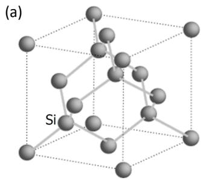</p>
<p>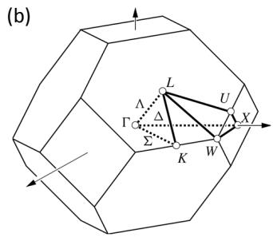<br/>
FIG. 5 Silicon crystal in real and reciprocal space. (a) 3D plot of the unit cell of the bulk silicon crystal in real space, showing the diamond or Face-Centered Cubic lattice, which has cubic symmetry. (b) Silicon crystal in reciprocal space. Brillouin zone of the silicon crystal lattice. It is the Wigner-Seitz cell of the Body-Centered Cubic lattice. Γ is the center of the polyhedron. Figure from Davies (1998).</p>
<p>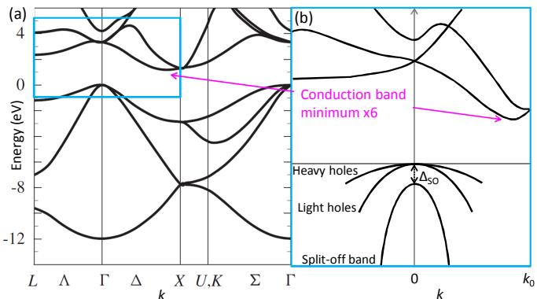<br/>
EFIG. 6 (Color online) Band structure of bulk silicon. (a) Γ X LThe conduction band has six degenerate minima or valleys at <span class="katex"><span class="katex-html" aria-hidden="true"><span class="base"><span class="strut" style="height:0.8444em;vertical-align:-0.15em;"></span><span class="mord">0.85</span><span class="mord"><span class="mord mathnormal" style="margin-right:0.0315em;">k</span><span class="msupsub"><span class="vlist-t vlist-t2"><span class="vlist-r"><span class="vlist" style="height:0.3011em;"><span style="top:-2.55em;margin-left:-0.0315em;margin-right:0.05em;"><span class="pstrut" style="height:2.7em;"></span><span class="sizing reset-size6 size3 mtight"><span class="mord mtight"><span class="mord mtight">0</span></span></span></span></span><span class="vlist-s">​</span></span><span class="vlist-r"><span class="vlist" style="height:0.15em;"><span></span></span></span></span></span></span></span></span></span> Gap EG. Results kindly supplied by G.P. Srivastava, University of Exeter. Figure from Davies (1998). (b) Zoom-in on the bottom of the conduction band and the top of the valence band (schematic, not exact). The bandgap in bulk Si is 1.12 eV at room temperature, increasing to 1.17 eV at 4 K (Green, 1990). The heavy and light hole bands are degenerate for <span class="katex"><span class="katex-html" aria-hidden="true"><span class="base"><span class="strut" style="height:0.6944em;"></span><span class="mord mathnormal" style="margin-right:0.0315em;">k</span><span class="mspace" style="margin-right:0.2778em;"></span><span class="mrel">=</span></span></span></span> 0. The split-off band is separated from the other subbands by the spin-orbit splitting <span class="katex"><span class="katex-html" aria-hidden="true"><span class="base"><span class="strut" style="height:0.8333em;vertical-align:-0.15em;"></span><span class="mord"><span class="mord">Δ</span><span class="msupsub"><span class="vlist-t vlist-t2"><span class="vlist-r"><span class="vlist" style="height:0.1514em;"><span style="top:-2.55em;margin-left:0em;margin-right:0.05em;"><span class="pstrut" style="height:2.7em;"></span><span class="sizing reset-size6 size3 mtight"><span class="mord mtight"><span class="mord mtight"><span class="mord mathrm mtight">so</span></span></span></span></span></span><span class="vlist-s">​</span></span><span class="vlist-r"><span class="vlist" style="height:0.15em;"><span></span></span></span></span></span></span></span></span></span> of 44 meV.</p>
<p>Crystalline silicon is a covalently bonded crystal with a diamond lattice structure, as shown in Fig. 5. The band structure of bulk silicon (Phillips, 1962), shown in Fig. 6, has the property that the energies of electron states in the conduction band is not minimized when the crystal momentum <span class="katex"><span class="katex-html" aria-hidden="true"><span class="base"><span class="strut" style="height:0.6944em;"></span><span class="mord mathnormal" style="margin-right:0.0315em;">k</span><span class="mspace" style="margin-right:0.2778em;"></span><span class="mrel">=</span><span class="mspace" style="margin-right:0.2778em;"></span></span><span class="base"><span class="strut" style="height:0.6444em;"></span><span class="mord">0</span></span></span></span> , but rather at a nonzero value, <span class="katex"><span class="katex-html" aria-hidden="true"><span class="base"><span class="strut" style="height:0.8444em;vertical-align:-0.15em;"></span><span class="mord"><span class="mord mathnormal" style="margin-right:0.0315em;">k</span><span class="msupsub"><span class="vlist-t vlist-t2"><span class="vlist-r"><span class="vlist" style="height:0.3011em;"><span style="top:-2.55em;margin-left:-0.0315em;margin-right:0.05em;"><span class="pstrut" style="height:2.7em;"></span><span class="sizing reset-size6 size3 mtight"><span class="mord mtight"><span class="mord mtight">0</span></span></span></span></span><span class="vlist-s">​</span></span><span class="vlist-r"><span class="vlist" style="height:0.15em;"><span></span></span></span></span></span></span></span></span></span> , that is 85% of the way to the Brillouin zone boundary, as shown in Fig. 6(b). Bulk silicon has cubic symmetry, and there are six equivalent minima. Thus we say that bulk silicon has six degenerate valleys in its conduction band.</p>
<p>In conventional electronic devices, the presence of multiple valleys typically does not affect transport properties in a profound way. However, valley physics plays a critical role in quantum electronics because of interference between different valleys that arises when the elec-</p>
<p>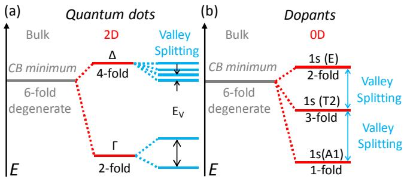<br/>
FIG. 7 (Color online) Valley splitting of of dopants and of quantum dots in silicon quantum wells. (a) For a quantum well, in which a thin silicon layer is sandwiched between two layers of <span class="katex"><span class="katex-html" aria-hidden="true"><span class="base"><span class="strut" style="height:0.8917em;vertical-align:-0.2083em;"></span><span class="mord"><span class="mord"><span class="mord mathrm">Si</span></span><span class="msupsub"><span class="vlist-t vlist-t2"><span class="vlist-r"><span class="vlist" style="height:0.1514em;"><span style="top:-2.55em;margin-right:0.05em;"><span class="pstrut" style="height:2.7em;"></span><span class="sizing reset-size6 size3 mtight"><span class="mord mtight"><span class="mord mathnormal mtight">x</span></span></span></span></span><span class="vlist-s">​</span></span><span class="vlist-r"><span class="vlist" style="height:0.15em;"><span></span></span></span></span></span></span><span class="mord"><span class="mord"><span class="mord mathrm">Ge</span></span><span class="msupsub"><span class="vlist-t vlist-t2"><span class="vlist-r"><span class="vlist" style="height:0.3011em;"><span style="top:-2.55em;margin-right:0.05em;"><span class="pstrut" style="height:2.7em;"></span><span class="sizing reset-size6 size3 mtight"><span class="mord mtight"><span class="mord mtight">1</span><span class="mbin mtight">−</span><span class="mord mathnormal mtight">x</span></span></span></span></span><span class="vlist-s">​</span></span><span class="vlist-r"><span class="vlist" style="height:0.2083em;"><span></span></span></span></span></span></span></span></span></span> , with <span class="katex"><span class="katex-html" aria-hidden="true"><span class="base"><span class="strut" style="height:0.3014em;vertical-align:-0.15em;"></span><span class="mord"><span></span><span class="msupsub"><span class="vlist-t vlist-t2"><span class="vlist-r"><span class="vlist" style="height:0.1514em;"><span style="top:-2.55em;margin-right:0.05em;"><span class="pstrut" style="height:2.7em;"></span><span class="sizing reset-size6 size3 mtight"><span class="mord mathnormal mtight">x</span></span></span></span><span class="vlist-s">​</span></span><span class="vlist-r"><span class="vlist" style="height:0.15em;"><span></span></span></span></span></span></span></span></span></span> typically <span class="katex"><span class="katex-html" aria-hidden="true"><span class="base"><span class="strut" style="height:0.3669em;"></span><span class="mrel">∼</span><span class="mspace" style="margin-right:0.2778em;"></span></span><span class="base"><span class="strut" style="height:0.7278em;vertical-align:-0.0833em;"></span><span class="mord">0.25</span><span class="mspace" style="margin-right:0.2222em;"></span><span class="mbin">−</span><span class="mspace" style="margin-right:0.2222em;"></span></span><span class="base"><span class="strut" style="height:0.6444em;"></span><span class="mord">0.3</span></span></span></span> , the six-fold valley degeneracy of bulk silicon is broken by the large in-plane tensile strain in the quantum well so that two Γ-levels are about <span class="katex"><span class="katex-html" aria-hidden="true"><span class="base"><span class="strut" style="height:0.6833em;"></span><span class="mord">200</span><span class="mspace nobreak"> </span><span class="mord"><span class="mord mathrm" style="margin-right:0.0139em;">meV</span></span></span></span></span> below the four <span class="katex"><span class="katex-html" aria-hidden="true"><span class="base"><span class="strut" style="height:0.6833em;"></span><span class="mord">Δ</span></span></span></span> -levels (Sch¨affler et al., 1992). The remaining two-fold degeneracy is broken by the confinement in the quantum well and by electric fields, with the resulting valley splitting typically ∼ 0.1 − 1 meV. (b) For phosphorus dopants, strong central-cell corrections near the dopant break the six-fold valley degeneracy of bulk silicon so that the lowest-energy valley state is non-degenerate (except for spin degeneracy), lowered by an energy 11.7 meV. The degeneracies of higher-energy levels are broken by lattice strain and by electric fields.</p>
<p>tronic transport is fundamentally quantum. For example, the presence of an additional valley greatly complicates spin manipulation because it can lift Pauli spin blockade, which is fundamental for many strategies for spin manipulation in quantum dot nanodevices (H¨uttel et al., 2003; Johnson et al., 2005a; Koppens et al., 2005; Ono et al., 2002; Rokhinson et al., 2001). In pure bulk silicon, the valleys are degenerate (the energies of the six states related by the cubic symmetry are the same), but in nanodevices this degeneracy can be and usually is broken by various effects that include strain, confinement, and electric fields. When valley degeneracy is lifted, at low temperatures the carriers populate only the lowestenergy valley state, thus eliminating some of the quantum effects that arise when the valleys are degenerate.</p>
<p>Fig. 7 shows a summary of valley splitting in heterostructures and in dopant devices. For strained silicon quantum wells, the large in-plane strain lifts the energies of the in-plane (x and y) valleys. The remaining twofold degeneracy of the z-valleys is broken by electronic <span class="katex"><span class="katex-html" aria-hidden="true"><span class="base"><span class="strut" style="height:0.6833em;"></span><span class="mord"><span class="mord"><span class="mord mathrm">Z</span></span></span></span></span></span> -confinement induced by electric fields and by the quantum well itself, resulting in a valley splitting of order <span class="katex"><span class="katex-html" aria-hidden="true"><span class="base"><span class="strut" style="height:0.7278em;vertical-align:-0.0833em;"></span><span class="mord">0.1</span><span class="mspace" style="margin-right:0.2222em;"></span><span class="mbin">−</span><span class="mspace" style="margin-right:0.2222em;"></span></span><span class="base"><span class="strut" style="height:0.6444em;"></span><span class="mord">1</span></span></span></span> meV. The breaking of the two-fold valley degeneracy is very sensitive to atomic-scale details of the interface, and is discussed in detail in Sec. III.B and in the supplemental material.</p>
<p>For an electron bound to a dopant in silicon, the valley degeneracy of bulk silicon is lifted because of the strong confinement potential from the dopant atom (Kohn and Luttinger, 1955a). For phosphorus donors in silicon, the</p>
<p>electronic ground state is non-degenerate, with an energy gap of ∼ 11.7 meV between the non-degenerate ground state and the excited states (Andresen et al., 2009; Ramdas and Rodriguez, 1981). Thus, additional degeneracy of the electronic ground state is not a concern in dopant devices. However, the fact that the conduction band minimum in silicon is at a large crystal momentum <span class="katex"><span class="katex-html" aria-hidden="true"><span class="base"><span class="strut" style="height:0.8444em;vertical-align:-0.15em;"></span><span class="mord"><span class="mord mathnormal" style="margin-right:0.0315em;">k</span><span class="msupsub"><span class="vlist-t vlist-t2"><span class="vlist-r"><span class="vlist" style="height:0.3011em;"><span style="top:-2.55em;margin-left:-0.0315em;margin-right:0.05em;"><span class="pstrut" style="height:2.7em;"></span><span class="sizing reset-size6 size3 mtight"><span class="mord mtight"><span class="mord mtight">0</span></span></span></span></span><span class="vlist-s">​</span></span><span class="vlist-r"><span class="vlist" style="height:0.15em;"><span></span></span></span></span></span></span></span></span></span> that is near the zone boundary gives rise to other physical effects that are important for quantum electronic devices. One such consequence arises because the wave functions of the electronic states in dopants oscillate in space on the very short length scale <span class="katex"><span class="katex-html" aria-hidden="true"><span class="base"><span class="strut" style="height:0.3669em;"></span><span class="mrel">∼</span><span class="mspace" style="margin-right:0.2778em;"></span></span><span class="base"><span class="strut" style="height:1em;vertical-align:-0.25em;"></span><span class="mord">2</span><span class="mord mathnormal" style="margin-right:0.0359em;">π</span><span class="mord">/</span><span class="mord"><span class="mord mathnormal" style="margin-right:0.0315em;">k</span><span class="msupsub"><span class="vlist-t vlist-t2"><span class="vlist-r"><span class="vlist" style="height:0.3011em;"><span style="top:-2.55em;margin-left:-0.0315em;margin-right:0.05em;"><span class="pstrut" style="height:2.7em;"></span><span class="sizing reset-size6 size3 mtight"><span class="mord mtight"><span class="mord mtight">0</span></span></span></span></span><span class="vlist-s">​</span></span><span class="vlist-r"><span class="vlist" style="height:0.15em;"><span></span></span></span></span></span></span></span></span></span> , which is roughly on the scale of one nanometer. These charge oscillations differ from the electron charge variations due to Bloch oscillations because they can cause the exchange coupling to change sign, and thus have significant implications for the design of quantum electronic devices, as discussed in Section III.C.</p>
<h1 id="b-quantum-wells-and-dots">B. Quantum wells and dots<a role="anchor" aria-hidden="true" tabindex="-1" data-no-popover="true" href="#b-quantum-wells-and-dots" class="internal internal-link"><svg width="18" height="18" viewBox="0 0 24 24" fill="none" stroke="currentColor" stroke-width="2" stroke-linecap="round" stroke-linejoin="round"><path d="M10 13a5 5 0 0 0 7.54.54l3-3a5 5 0 0 0-7.07-7.07l-1.72 1.71"></path><path d="M14 11a5 5 0 0 0-7.54-.54l-3 3a5 5 0 0 0 7.07 7.07l1.71-1.71"></path></svg></a></h1>
<p>In the quantum well devices we discuss here, one starts with a material with a two-dimensional electron gas (2DEG), and then lithographically patterns top gates to which voltages are applied that deplete the 2DEG surrounding the quantum dot. By carefully adjusting the gate voltages, one can achieve dots with occupancy of a single electron, see section IV.D. Moreover, the same gate voltages that are used to define the dot are also used to perform the manipulations required for initialization, gate operations, and readout of charge and spin states (Maune et al., 2012), see section VI.C.4.</p>
<h1 id="1-valley-splitting-in-quantum-dots">1. Valley splitting in quantum dots<a role="anchor" aria-hidden="true" tabindex="-1" data-no-popover="true" href="#1-valley-splitting-in-quantum-dots" class="internal internal-link"><svg width="18" height="18" viewBox="0 0 24 24" fill="none" stroke="currentColor" stroke-width="2" stroke-linecap="round" stroke-linejoin="round"><path d="M10 13a5 5 0 0 0 7.54.54l3-3a5 5 0 0 0-7.07-7.07l-1.72 1.71"></path><path d="M14 11a5 5 0 0 0-7.54-.54l-3 3a5 5 0 0 0 7.07 7.07l1.71-1.71"></path></svg></a></h1>
<p>Understanding the valley degrees of freedom is important for ensuring that the valley splitting is in a regime suitable for spin-based quantum computation. Even in the low-density limit appropriate to single-electron quantum dots, where electron-electron interactions (Ando et al., 1982) are unimportant, valley splitting is complex: the breaking of the valley degeneracy involves physics on the atomic scale, orders of magnitude smaller than the quantum dot itself, so it depends on the detailed properties of alloy and interface disorder. Because the locations of the individual atoms in a given device are not known, statistical approaches to atomistic device modeling or averaging theories like effective mass must be utilized. Theory, modeling, and simulation provide insight into the physical mechanisms giving rise to valley splitting, so that device design and fabrication methods can be developed to yield dots with valley splitting compatible with use in spin-based quantum information processing devices.</p>
<p>In bulk silicon, there are six degenerate conduction band minima in the Brillouin zone (valleys) as depicted in Fig. 5. One modern strategy for fabricating Si devices for quantum electronics applications is to use a biaxially strained thin film of Si grown on a pseudomorphic SixGe <span class="katex"><span class="katex-html" aria-hidden="true"><span class="base"><span class="strut" style="height:0.7778em;vertical-align:-0.0833em;"></span><span class="mord mathbf">l</span><span class="mspace" style="margin-right:0.2222em;"></span><span class="mbin">−</span><span class="mspace" style="margin-right:0.2222em;"></span></span><span class="base"><span class="strut" style="height:0.4444em;"></span><span class="mord mathbf">x</span></span></span></span> substrate. In such devices, the silicon quantum well is under large tensile strain, and the sixfold degeneracy is broken into a two-fold one (Sch¨affler, 1997). Confinement of electrons in the <span class="katex"><span class="katex-html" aria-hidden="true"><span class="base"><span class="strut" style="height:0.4306em;"></span><span class="mord mathnormal" style="margin-right:0.044em;">z</span></span></span></span> -direction in a 2- dimensional electron gas lifts the remaining two-fold valley degeneracy, resulting in four <span class="katex"><span class="katex-html" aria-hidden="true"><span class="base"><span class="strut" style="height:0.6833em;"></span><span class="mord">Δ</span></span></span></span> -valleys with a heavy effective mass parallel to the interface at an energy several tens of meV above the two <span class="katex"><span class="katex-html" aria-hidden="true"><span class="base"><span class="strut" style="height:0.6833em;"></span><span class="mord">Γ</span></span></span></span> -valleys (Ando et al., 1982), as shown in Fig. 7. The sharp and flat interface produces a potential step in the <span class="katex"><span class="katex-html" aria-hidden="true"><span class="base"><span class="strut" style="height:0.4306em;"></span><span class="mord mathnormal" style="margin-right:0.044em;">z</span></span></span></span> -direction and can lift the degeneracy of the <span class="katex"><span class="katex-html" aria-hidden="true"><span class="base"><span class="strut" style="height:0.6833em;"></span><span class="mord">Γ</span></span></span></span> -valleys in two levels separated by the valley splitting <span class="katex"><span class="katex-html" aria-hidden="true"><span class="base"><span class="strut" style="height:0.8333em;vertical-align:-0.15em;"></span><span class="mord"><span class="mord mathnormal" style="margin-right:0.0576em;">E</span><span class="msupsub"><span class="vlist-t vlist-t2"><span class="vlist-r"><span class="vlist" style="height:0.3283em;"><span style="top:-2.55em;margin-left:-0.0576em;margin-right:0.05em;"><span class="pstrut" style="height:2.7em;"></span><span class="sizing reset-size6 size3 mtight"><span class="mord mtight"><span class="mord mathnormal mtight" style="margin-right:0.2222em;">V</span></span></span></span></span><span class="vlist-s">​</span></span><span class="vlist-r"><span class="vlist" style="height:0.15em;"><span></span></span></span></span></span></span></span></span></span> . Built-in or externally applied electric fields break the symmetry of the Hamiltonian and can couple the various valleys and thus lift the valley degeneracy. Theoretical predictions for the valley splitting of flat interfaces are generally on the order of 0.1–0.3 meV (Boykin et al., 2004b; Culcer et al., 2010a; Ohkawa and Uemura, 1977; Saraiva et al., 2011). Experimental values in Si inversion layers mostly vary from 0.3–1.2 meV, but some are substantially smaller (Koester et al., 1997; K¨ohler and Roos, 1979; Lai et al., 2006; Nicholas et al., 1980; Pudalov et al., 1985; Weitz et al., 1996). A giant valley splitting of 23 meV measured in a similar structure (Takashina et al., 2006) is still not completely understood theoretically (Saraiva et al., 2011).</p>
<p>The two main approaches for understanding valley splitting in silicon heterostructures are tight-binding calculations (Boykin et al., 2007, 2004a, 2005; Kharche et al., 2007; Srinivasan et al., 2008) and theories that use an effective mass formalism (Friesen et al., 2007b; Friesen and Coppersmith, 2010; Saraiva et al., 2009). Section I in the supplemental material reviews a simple one-dimensional tight-binding model (Boykin et al., 2004b) that illustrates some of the physical mechanisms that lead the breaking of the valley degeneracy and hence the emergence of valley splitting. A pictorial sketch of the two lowest-energy eigenstates of this one-dimensional model is presented in Fig. 8. The eigenfunctions have very similar envelopes and fast oscillations with a period very close to <span class="katex"><span class="katex-html" aria-hidden="true"><span class="base"><span class="strut" style="height:1em;vertical-align:-0.25em;"></span><span class="mord">2</span><span class="mord mathnormal" style="margin-right:0.0359em;">π</span><span class="mord">/</span><span class="mord"><span class="mord mathnormal" style="margin-right:0.0315em;">k</span><span class="msupsub"><span class="vlist-t vlist-t2"><span class="vlist-r"><span class="vlist" style="height:0.3011em;"><span style="top:-2.55em;margin-left:-0.0315em;margin-right:0.05em;"><span class="pstrut" style="height:2.7em;"></span><span class="sizing reset-size6 size3 mtight"><span class="mord mtight"><span class="mord mtight">0</span></span></span></span></span><span class="vlist-s">​</span></span><span class="vlist-r"><span class="vlist" style="height:0.15em;"><span></span></span></span></span></span></span></span></span></span> , where <span class="katex"><span class="katex-html" aria-hidden="true"><span class="base"><span class="strut" style="height:0.8444em;vertical-align:-0.15em;"></span><span class="mord"><span class="mord mathnormal" style="margin-right:0.0315em;">k</span><span class="msupsub"><span class="vlist-t vlist-t2"><span class="vlist-r"><span class="vlist" style="height:0.3011em;"><span style="top:-2.55em;margin-left:-0.0315em;margin-right:0.05em;"><span class="pstrut" style="height:2.7em;"></span><span class="sizing reset-size6 size3 mtight"><span class="mord mtight"><span class="mord mtight">0</span></span></span></span></span><span class="vlist-s">​</span></span><span class="vlist-r"><span class="vlist" style="height:0.15em;"><span></span></span></span></span></span></span></span></span></span> is the wavevector of the conduction band valley minimum. The different alignments of the phases of the fast oscillations with sharp interfaces cause the energies of the two states to be different, thus giving rise to valley splitting.</p>
<p>Valley splitting has a complicated dependence on environmental and structural conditions. Large-scale atomistic tight-binding calculations can incorporate realistic inhomogeneity in the atomic arrangement, both in terms of alloy disorder and in terms of disorder in the locations of interface steps, as discussed in section III of the supplemental material. Technically well controlled inter-</p>
<p>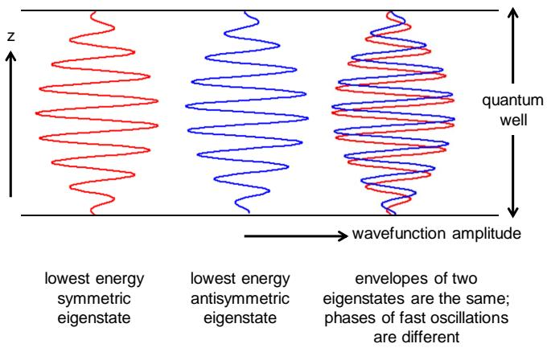<br/>
FIG. 8 (Color online) Sketch of the two lowest energy eigenstates in an infinite square well of the two-band model presented in the supplemental material. The envelopes of the two eigenfunctions are very similar to each other and to the sine behavior obtained in the absence of valley degeneracy; the effects of the valley degeneracy give rise to fast oscillations within this envelope. For a square well, one eigenfunction is symmetric and the other is antisymmetric; the symmetries are different because the fast oscillations have different phases, as measured from the quantum well boundaries. This sensitive dependence of valley splitting on the atomic-scale physics near the well boundary is the source of the sensitive dependence of the valley splitting on disorder at the quantum well interfaces.</p>
<p>faces in Si are buffers of either SiO <span class="katex"><span class="katex-html" aria-hidden="true"><span class="base"><span class="strut" style="height:0.8141em;"></span><span class="mord"><span></span><span class="msupsub"><span class="vlist-t"><span class="vlist-r"><span class="vlist" style="height:0.8141em;"><span style="top:-3.063em;margin-right:0.05em;"><span class="pstrut" style="height:2.7em;"></span><span class="sizing reset-size6 size3 mtight"><span class="mord mtight">2</span></span></span></span></span></span></span></span></span></span></span> or SixGe1−x, which are intrinsically atomistically disordered. Some of the effects of this disorder can be understood qualitatively using effective mass theory, but because of the importance of atomic-scale physics in determining valley splitting, atom-scale theory is required for quantitative understanding. For SixGe <span class="katex"><span class="katex-html" aria-hidden="true"><span class="base"><span class="strut" style="height:0.5094em;vertical-align:-0.2083em;"></span><span class="mord"><span></span><span class="msupsub"><span class="vlist-t vlist-t2"><span class="vlist-r"><span class="vlist" style="height:0.3011em;"><span style="top:-2.55em;margin-right:0.05em;"><span class="pstrut" style="height:2.7em;"></span><span class="sizing reset-size6 size3 mtight"><span class="mord mtight"><span class="mord mtight">1</span><span class="mbin mtight">−</span><span class="mord mathrm mtight">x</span></span></span></span></span><span class="vlist-s">​</span></span><span class="vlist-r"><span class="vlist" style="height:0.2083em;"><span></span></span></span></span></span></span></span></span></span> , there are 3 critical disorder effects to consider: atom-type disorder, atom-position disorder, alloy concentration disorder. A detailed discussion of the characterization of the effects of these different types is presented in section III of the supplemental material.</p>
<p>Many features of the physics that give rise to valley splitting can be understood qualitatively and semiquantitatively using effective mass theories (Kohn and Luttinger, 1955b; Seitz and Turnbull, 1957), if these theories are formulated carefully to incorporate the microscopic effects that give rise to valley splitting (Friesen, 2005; Friesen et al., 2007b; Fritzsche, 1962; Nestoklon et al., 2006; Pantelides, 1978). In the envelope function or effective mass formalism, the theory is written in terms of an envelope function for the wave function, which is well-suited for describing variations on relatively long scales (such as the quantum dot confinement). The effects of the degenerate valleys are incorporated using a valley coupling parameter that is treated as a delta function whose strength is determined by the atomic scale</p>
<p>physics (Chutia et al., 2008; Friesen et al., 2007b; Saraiva et al., 2009). The envelope function formalism has the advantage that one can obtain analytic results for valley splitting in nontrivial geometries (Culcer et al., 2010a,b; Friesen et al., 2007b; Friesen and Coppersmith, 2010). However, the theory must explicitly incorporate information from the atomic scale, either as a valley coupling parameter that is fit to tight-binding results, as the output of a multiscale approach (Chutia et al., 2008; Saraiva et al., 2009), or by explicit atomistic calculation on large scales, as embodied by the NEMO tool suite (Boykin et al., 2004b; Klimeck et al., 2007, 2002; Steiger et al., 2011). More details of effective mass theory treatment of valley splitting are in the supplemental material.</p>
<h1 id="2-mixing-of-valleys-and-orbits">2. Mixing of valleys and orbits<a role="anchor" aria-hidden="true" tabindex="-1" data-no-popover="true" href="#2-mixing-of-valleys-and-orbits" class="internal internal-link"><svg width="18" height="18" viewBox="0 0 24 24" fill="none" stroke="currentColor" stroke-width="2" stroke-linecap="round" stroke-linejoin="round"><path d="M10 13a5 5 0 0 0 7.54.54l3-3a5 5 0 0 0-7.07-7.07l-1.72 1.71"></path><path d="M14 11a5 5 0 0 0-7.54-.54l-3 3a5 5 0 0 0 7.07 7.07l1.71-1.71"></path></svg></a></h1>
<p>When the valley splitting <span class="katex"><span class="katex-html" aria-hidden="true"><span class="base"><span class="strut" style="height:0.8333em;vertical-align:-0.15em;"></span><span class="mord"><span class="mord mathnormal" style="margin-right:0.0576em;">E</span><span class="msupsub"><span class="vlist-t vlist-t2"><span class="vlist-r"><span class="vlist" style="height:0.3283em;"><span style="top:-2.55em;margin-left:-0.0576em;margin-right:0.05em;"><span class="pstrut" style="height:2.7em;"></span><span class="sizing reset-size6 size3 mtight"><span class="mord mtight"><span class="mord mathnormal mtight" style="margin-right:0.2222em;">V</span></span></span></span></span><span class="vlist-s">​</span></span><span class="vlist-r"><span class="vlist" style="height:0.15em;"><span></span></span></span></span></span></span></span></span></span> is much greater than the orbital level spacing <span class="katex"><span class="katex-html" aria-hidden="true"><span class="base"><span class="strut" style="height:0.6833em;"></span><span class="mord">Δ</span><span class="mord mathnormal" style="margin-right:0.0576em;">E</span></span></span></span> , electrons will occupy singleparticle levels with orbital numbers 1, 2, 3, … and valley number <span class="katex"><span class="katex-html" aria-hidden="true"><span class="base"><span class="strut" style="height:0.6833em;"></span><span class="mord mathnormal" style="margin-right:0.2222em;">V</span><span class="mord">1</span></span></span></span> , the lowest valley state (see Fig. 9(a)). Conversely, if <span class="katex"><span class="katex-html" aria-hidden="true"><span class="base"><span class="strut" style="height:0.7224em;vertical-align:-0.0391em;"></span><span class="mord">Δ</span><span class="mord mathnormal" style="margin-right:0.0576em;">E</span><span class="mspace" style="margin-right:0.2778em;"></span><span class="mrel">≫</span><span class="mspace" style="margin-right:0.2778em;"></span></span><span class="base"><span class="strut" style="height:0.8333em;vertical-align:-0.15em;"></span><span class="mord"><span class="mord mathnormal" style="margin-right:0.0576em;">E</span><span class="msupsub"><span class="vlist-t vlist-t2"><span class="vlist-r"><span class="vlist" style="height:0.3283em;"><span style="top:-2.55em;margin-left:-0.0576em;margin-right:0.05em;"><span class="pstrut" style="height:2.7em;"></span><span class="sizing reset-size6 size3 mtight"><span class="mord mtight"><span class="mord mathnormal mtight" style="margin-right:0.2222em;">V</span></span></span></span></span><span class="vlist-s">​</span></span><span class="vlist-r"><span class="vlist" style="height:0.15em;"><span></span></span></span></span></span></span></span></span></span> the first four electrons will occupy the valleys <span class="katex"><span class="katex-html" aria-hidden="true"><span class="base"><span class="strut" style="height:0.6833em;"></span><span class="mord mathnormal" style="margin-right:0.2222em;">V</span><span class="mord">1</span></span></span></span> and <span class="katex"><span class="katex-html" aria-hidden="true"><span class="base"><span class="strut" style="height:0.6833em;"></span><span class="mord mathnormal" style="margin-right:0.2222em;">V</span><span class="mord">2</span></span></span></span> in the lowest orbit before going to the next orbit with <span class="katex"><span class="katex-html" aria-hidden="true"><span class="base"><span class="strut" style="height:0.4306em;"></span><span class="mord mathnormal">n</span><span class="mspace"> </span><span class="mspace" style="margin-right:0.2778em;"></span><span class="mrel">=</span><span class="mspace"> </span><span class="mspace" style="margin-right:0.2778em;"></span></span><span class="base"><span class="strut" style="height:0.6444em;"></span><span class="mord">2</span></span></span></span> , as shown in Fig. 9(b). However, valleys and orbits can also hybridize (Friesen and Coppersmith, 2010), making it inappropriate to define distinct orbital and valley quantum numbers (see Fig. 9(c)). Depending on the degree of mixing, the valley-orbit levels <span class="katex"><span class="katex-html" aria-hidden="true"><span class="base"><span class="strut" style="height:0.6833em;"></span><span class="mord mathnormal" style="margin-right:0.2222em;">V</span><span class="mord mathnormal" style="margin-right:0.0278em;">O</span><span class="mord">1</span></span></span></span> , <span class="katex"><span class="katex-html" aria-hidden="true"><span class="base"><span class="strut" style="height:1em;vertical-align:-0.25em;"></span><span class="mord mathnormal" style="margin-right:0.2222em;">V</span><span class="mopen">(</span><span class="mclose">)</span><span class="mord">2</span></span></span></span> etc, behave mostly like valleys or like orbits. Instead of referring to a pure valley splitting <span class="katex"><span class="katex-html" aria-hidden="true"><span class="base"><span class="strut" style="height:0.8333em;vertical-align:-0.15em;"></span><span class="mord"><span class="mord mathnormal" style="margin-right:0.0576em;">E</span><span class="msupsub"><span class="vlist-t vlist-t2"><span class="vlist-r"><span class="vlist" style="height:0.3283em;"><span style="top:-2.55em;margin-left:-0.0576em;margin-right:0.05em;"><span class="pstrut" style="height:2.7em;"></span><span class="sizing reset-size6 size3 mtight"><span class="mord mtight"><span class="mord mathnormal mtight" style="margin-right:0.2222em;">V</span></span></span></span></span><span class="vlist-s">​</span></span><span class="vlist-r"><span class="vlist" style="height:0.15em;"><span></span></span></span></span></span></span></span></span></span> the term valley-orbit splitting is used, <span class="katex"><span class="katex-html" aria-hidden="true"><span class="base"><span class="strut" style="height:0.8333em;vertical-align:-0.15em;"></span><span class="mord"><span class="mord mathnormal" style="margin-right:0.0576em;">E</span><span class="msupsub"><span class="vlist-t vlist-t2"><span class="vlist-r"><span class="vlist" style="height:0.3283em;"><span style="top:-2.55em;margin-left:-0.0576em;margin-right:0.05em;"><span class="pstrut" style="height:2.7em;"></span><span class="sizing reset-size6 size3 mtight"><span class="mord mtight"><span class="mord mathnormal mtight" style="margin-right:0.2222em;">V</span><span class="mord mathnormal mtight" style="margin-right:0.0278em;">O</span></span></span></span></span><span class="vlist-s">​</span></span><span class="vlist-r"><span class="vlist" style="height:0.15em;"><span></span></span></span></span></span></span><span class="mspace" style="margin-right:0.2778em;"></span><span class="mrel">=</span><span class="mspace" style="margin-right:0.2778em;"></span></span><span class="base"><span class="strut" style="height:0.8333em;vertical-align:-0.15em;"></span><span class="mord"><span class="mord mathnormal" style="margin-right:0.0576em;">E</span><span class="msupsub"><span class="vlist-t vlist-t2"><span class="vlist-r"><span class="vlist" style="height:0.3283em;"><span style="top:-2.55em;margin-left:-0.0576em;margin-right:0.05em;"><span class="pstrut" style="height:2.7em;"></span><span class="sizing reset-size6 size3 mtight"><span class="mord mtight"><span class="mord mathnormal mtight" style="margin-right:0.2222em;">V</span><span class="mord mathnormal mtight" style="margin-right:0.0278em;">O</span><span class="mord mtight">2</span></span></span></span></span><span class="vlist-s">​</span></span><span class="vlist-r"><span class="vlist" style="height:0.15em;"><span></span></span></span></span></span></span><span class="mspace" style="margin-right:0.2222em;"></span><span class="mbin">−</span><span class="mspace" style="margin-right:0.2222em;"></span></span><span class="base"><span class="strut" style="height:0.8333em;vertical-align:-0.15em;"></span><span class="mord"><span class="mord mathnormal" style="margin-right:0.0576em;">E</span><span class="msupsub"><span class="vlist-t vlist-t2"><span class="vlist-r"><span class="vlist" style="height:0.3283em;"><span style="top:-2.55em;margin-left:-0.0576em;margin-right:0.05em;"><span class="pstrut" style="height:2.7em;"></span><span class="sizing reset-size6 size3 mtight"><span class="mord mtight"><span class="mord mathnormal mtight" style="margin-right:0.2222em;">V</span><span class="mord mathnormal mtight" style="margin-right:0.0278em;">O</span><span class="mord mtight">1</span></span></span></span></span><span class="vlist-s">​</span></span><span class="vlist-r"><span class="vlist" style="height:0.15em;"><span></span></span></span></span></span></span></span></span></span> for the difference in energy between the first two single-particle levels, <span class="katex"><span class="katex-html" aria-hidden="true"><span class="base"><span class="strut" style="height:0.8333em;vertical-align:-0.15em;"></span><span class="mord"><span class="mord mathnormal" style="margin-right:0.0576em;">E</span><span class="msupsub"><span class="vlist-t vlist-t2"><span class="vlist-r"><span class="vlist" style="height:0.3283em;"><span style="top:-2.55em;margin-left:-0.0576em;margin-right:0.05em;"><span class="pstrut" style="height:2.7em;"></span><span class="sizing reset-size6 size3 mtight"><span class="mord mtight"><span class="mord mathnormal mtight" style="margin-right:0.2222em;">V</span><span class="mord mathnormal mtight" style="margin-right:0.0278em;">O</span><span class="mord mtight">1</span></span></span></span></span><span class="vlist-s">​</span></span><span class="vlist-r"><span class="vlist" style="height:0.15em;"><span></span></span></span></span></span></span></span></span></span> and <span class="katex"><span class="katex-html" aria-hidden="true"><span class="base"><span class="strut" style="height:0.8333em;vertical-align:-0.15em;"></span><span class="mord"><span class="mord mathnormal" style="margin-right:0.0576em;">E</span><span class="msupsub"><span class="vlist-t vlist-t2"><span class="vlist-r"><span class="vlist" style="height:0.3283em;"><span style="top:-2.55em;margin-left:-0.0576em;margin-right:0.05em;"><span class="pstrut" style="height:2.7em;"></span><span class="sizing reset-size6 size3 mtight"><span class="mord mtight"><span class="mord mathnormal mtight" style="margin-right:0.2222em;">V</span><span class="mord mathnormal mtight" style="margin-right:0.0278em;">O</span><span class="mord mtight">2</span></span></span></span></span><span class="vlist-s">​</span></span><span class="vlist-r"><span class="vlist" style="height:0.15em;"><span></span></span></span></span></span></span></span></span></span> . This is referred to as the ground-state gap (Friesen and Coppersmith, 2010).</p>
<p>The behavior of the valley splitting in real quantum wells is complicated by the fact that in real devices the quantum well interface is not perfectly smooth and oriented perpendicular to <span class="katex"><span class="katex-html" aria-hidden="true"><span class="base"><span class="strut" style="height:0.6944em;"></span><span class="mord accent"><span class="vlist-t"><span class="vlist-r"><span class="vlist" style="height:0.6944em;"><span style="top:-3em;"><span class="pstrut" style="height:3em;"></span><span class="mord mathnormal" style="margin-right:0.044em;">z</span></span><span style="top:-3em;"><span class="pstrut" style="height:3em;"></span><span class="accent-body" style="left:-0.1944em;"><span class="mord">^</span></span></span></span></span></span></span></span></span></span> . The energy difference between the two lowest eigenstates depends on the relationship between the phase of the fast oscillations of the wave function with the heterostructure boundary, and a step in the interface alters this phase relationship. The lowest energy wave function minimizes the energy, and, as shown in Fig. 8, can cause the phase of the fast oscillations to become dependent on the transverse coordinates <span class="katex"><span class="katex-html" aria-hidden="true"><span class="base"><span class="strut" style="height:0.4306em;"></span><span class="mord mathnormal">x</span></span></span></span> and <span class="katex"><span class="katex-html" aria-hidden="true"><span class="base"><span class="strut" style="height:0.625em;vertical-align:-0.1944em;"></span><span class="mord mathnormal" style="margin-right:0.0359em;">y</span></span></span></span> . This coupling between the <span class="katex"><span class="katex-html" aria-hidden="true"><span class="base"><span class="strut" style="height:0.4306em;"></span><span class="mord mathnormal" style="margin-right:0.044em;">z</span></span></span></span> -behavior and the <span class="katex"><span class="katex-html" aria-hidden="true"><span class="base"><span class="strut" style="height:0.4306em;"></span><span class="mord mathnormal">x</span></span></span></span> - <span class="katex"><span class="katex-html" aria-hidden="true"><span class="base"><span class="strut" style="height:0.625em;vertical-align:-0.1944em;"></span><span class="mord mathnormal" style="margin-right:0.0359em;">y</span></span></span></span> behavior is called valley-orbit coupling.</p>
<p>As discussed in subsection III.B.1 above, in a silicon quantum well under tensile strain, there are two lowlying conduction band valleys at wavevectors <span class="katex"><span class="katex-html" aria-hidden="true"><span class="base"><span class="strut" style="height:0.8444em;vertical-align:-0.15em;"></span><span class="mord">+</span><span class="mord"><span class="mord mathnormal" style="margin-right:0.0315em;">k</span><span class="msupsub"><span class="vlist-t vlist-t2"><span class="vlist-r"><span class="vlist" style="height:0.3011em;"><span style="top:-2.55em;margin-left:-0.0315em;margin-right:0.05em;"><span class="pstrut" style="height:2.7em;"></span><span class="sizing reset-size6 size3 mtight"><span class="mord mtight"><span class="mord mtight">0</span></span></span></span></span><span class="vlist-s">​</span></span><span class="vlist-r"><span class="vlist" style="height:0.15em;"><span></span></span></span></span></span></span><span class="mord accent"><span class="vlist-t"><span class="vlist-r"><span class="vlist" style="height:0.6944em;"><span style="top:-3em;"><span class="pstrut" style="height:3em;"></span><span class="mord mathnormal" style="margin-right:0.044em;">z</span></span><span style="top:-3em;"><span class="pstrut" style="height:3em;"></span><span class="accent-body" style="left:-0.1944em;"><span class="mord">^</span></span></span></span></span></span></span></span></span></span> and <span class="katex"><span class="katex-html" aria-hidden="true"><span class="base"><span class="strut" style="height:0.8444em;vertical-align:-0.15em;"></span><span class="mord">−</span><span class="mord"><span class="mord mathnormal" style="margin-right:0.0315em;">k</span><span class="msupsub"><span class="vlist-t vlist-t2"><span class="vlist-r"><span class="vlist" style="height:0.3011em;"><span style="top:-2.55em;margin-left:-0.0315em;margin-right:0.05em;"><span class="pstrut" style="height:2.7em;"></span><span class="sizing reset-size6 size3 mtight"><span class="mord mtight"><span class="mord mtight">0</span></span></span></span></span><span class="vlist-s">​</span></span><span class="vlist-r"><span class="vlist" style="height:0.15em;"><span></span></span></span></span></span></span><span class="mord accent"><span class="vlist-t"><span class="vlist-r"><span class="vlist" style="height:0.6944em;"><span style="top:-3em;"><span class="pstrut" style="height:3em;"></span><span class="mord mathnormal" style="margin-right:0.044em;">z</span></span><span style="top:-3em;"><span class="pstrut" style="height:3em;"></span><span class="accent-body" style="left:-0.1944em;"><span class="mord">^</span></span></span></span></span></span></span></span></span></span> , whose energies are split by the effects of confinement potentials and electric fields perpendicular to <span class="katex"><span class="katex-html" aria-hidden="true"><span class="base"><span class="strut" style="height:0.4306em;"></span><span class="mord mathnormal" style="margin-right:0.044em;">z</span></span></span></span> . In the limit of a perfectly smooth interface aligned perpendicular to <span class="katex"><span class="katex-html" aria-hidden="true"><span class="base"><span class="strut" style="height:0.6944em;"></span><span class="mord accent"><span class="vlist-t"><span class="vlist-r"><span class="vlist" style="height:0.6944em;"><span style="top:-3em;"><span class="pstrut" style="height:3em;"></span><span class="mord mathnormal" style="margin-right:0.044em;">z</span></span><span style="top:-3em;"><span class="pstrut" style="height:3em;"></span><span class="accent-body" style="left:-0.1944em;"><span class="mord">^</span></span></span></span></span></span></span></span></span></span> , the valley splitting of a quantum well</p>
<p>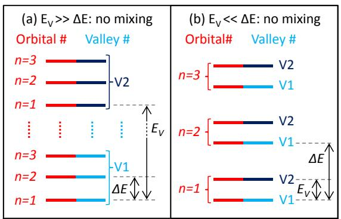</p>
<p>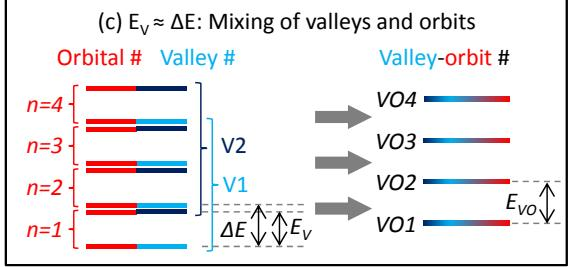<br/>
FIG. 9 (Color online) Valley-orbit mixing. (a,b) If the valley splitting <span class="katex"><span class="katex-html" aria-hidden="true"><span class="base"><span class="strut" style="height:1.0272em;vertical-align:-0.2753em;"></span><span class="mord"><span class="mord mathnormal" style="margin-right:0.0576em;">E</span><span class="msupsub"><span class="vlist-t vlist-t2"><span class="vlist-r"><span class="vlist" style="height:0.7519em;"><span style="top:-2.4247em;margin-left:-0.0576em;margin-right:0.05em;"><span class="pstrut" style="height:2.7em;"></span><span class="sizing reset-size6 size3 mtight"><span class="mord mtight"><span class="mord mathnormal mtight" style="margin-right:0.2222em;">V</span></span></span></span><span style="top:-3.063em;margin-right:0.05em;"><span class="pstrut" style="height:2.7em;"></span><span class="sizing reset-size6 size3 mtight"><span class="mord mtight"><span class="mord mtight">′</span></span></span></span></span><span class="vlist-s">​</span></span><span class="vlist-r"><span class="vlist" style="height:0.2753em;"><span></span></span></span></span></span></span></span></span></span> and orbital level spacing <span class="katex"><span class="katex-html" aria-hidden="true"><span class="base"><span class="strut" style="height:0.6833em;"></span><span class="mord">Δ</span><span class="mord mathnormal" style="margin-right:0.0576em;">E</span></span></span></span> have very different values, the orbital and valley quantum numbers are well-defined and there will be no mixing of orbital and valleylike behavior. (c) When <span class="katex"><span class="katex-html" aria-hidden="true"><span class="base"><span class="strut" style="height:0.8333em;vertical-align:-0.15em;"></span><span class="mord"><span class="mord mathnormal" style="margin-right:0.0576em;">E</span><span class="msupsub"><span class="vlist-t vlist-t2"><span class="vlist-r"><span class="vlist" style="height:0.3283em;"><span style="top:-2.55em;margin-left:-0.0576em;margin-right:0.05em;"><span class="pstrut" style="height:2.7em;"></span><span class="sizing reset-size6 size3 mtight"><span class="mord mtight"><span class="mord mathnormal mtight" style="margin-right:0.2222em;">V</span></span></span></span></span><span class="vlist-s">​</span></span><span class="vlist-r"><span class="vlist" style="height:0.15em;"><span></span></span></span></span></span></span><span class="mord"><span class="mrel">≈</span></span><span class="mord">Δ</span><span class="mord mathnormal" style="margin-right:0.0576em;">E</span></span></span></span> (a) the valleys and orbits can hybridize in single-particle levels separated by the valley-orbit splitting <span class="katex"><span class="katex-html" aria-hidden="true"><span class="base"><span class="strut" style="height:0.8333em;vertical-align:-0.15em;"></span><span class="mord"><span class="mord mathnormal" style="margin-right:0.0576em;">E</span><span class="msupsub"><span class="vlist-t vlist-t2"><span class="vlist-r"><span class="vlist" style="height:0.3283em;"><span style="top:-2.55em;margin-left:-0.0576em;margin-right:0.05em;"><span class="pstrut" style="height:2.7em;"></span><span class="sizing reset-size6 size3 mtight"><span class="mord mtight"><span class="mord mathnormal mtight" style="margin-right:0.2222em;">V</span><span class="mord mathnormal mtight" style="margin-right:0.0278em;">O</span></span></span></span></span><span class="vlist-s">​</span></span><span class="vlist-r"><span class="vlist" style="height:0.15em;"><span></span></span></span></span></span></span></span></span></span> .</p>
<p>with typical width and doping is of order 0.1 meV, a magnitude that can be understood using the simple onedimensional model presented in section I of the supplemental material.</p>
<p>If the step density of the quantum well interface is reasonably high, then the transverse oscillations of the charge density cannot align with the entire interface, and valley splitting is greatly suppressed (Ando, 1979; Friesen et al., 2007b, 2006). The physical picture that emerges from effective mass theory that incorporates valley-orbit coupling is that the envelope function for the wave function in a silicon heterostructure is qualitatively similar to typical wave functions in quantum dots, but that there are also fast oscillations with wave vector <span class="katex"><span class="katex-html" aria-hidden="true"><span class="base"><span class="strut" style="height:0.3669em;"></span><span class="mrel">∼</span><span class="mspace" style="margin-right:0.2778em;"></span></span><span class="base"><span class="strut" style="height:0.8444em;vertical-align:-0.15em;"></span><span class="mord"><span class="mord mathnormal" style="margin-right:0.0315em;">k</span><span class="msupsub"><span class="vlist-t vlist-t2"><span class="vlist-r"><span class="vlist" style="height:0.3011em;"><span style="top:-2.55em;margin-left:-0.0315em;margin-right:0.05em;"><span class="pstrut" style="height:2.7em;"></span><span class="sizing reset-size6 size3 mtight"><span class="mord mtight"><span class="mord mtight">0</span></span></span></span></span><span class="vlist-s">​</span></span><span class="vlist-r"><span class="vlist" style="height:0.15em;"><span></span></span></span></span></span></span></span></span></span> in the z-direction. The fast oscillations of the two valley states have different phases. In the presence of interfacial disorder such as interfacial steps, the value of the valley phase that minimizes the energy becomes position-dependent, so that one fixed value of the phase cannot minimize the energy everywhere, and the energy difference between the two different valley states decreases. This suppression explains measurements performed in Hall bars (Khrapai et al., 2003; Koester et al., 1997; Lai et al., 2004; Weitz et al., 1996) that yield very small values for the valley splitting of only µeV, and also why singlet-triplet splittings in dots with two electrons have been observed with both positive and negative values at non-zero magnetic field (Borselli et al., 2011a) — if the electron wave func-</p>
<p>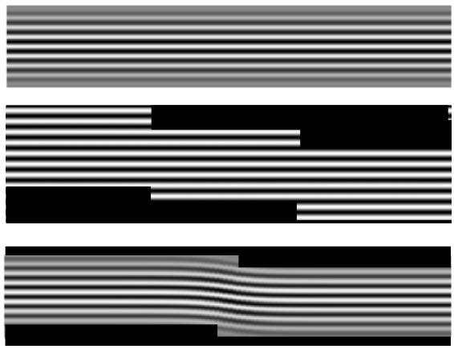<br/>
Valley‐orbitsFIG. 10 Valley-orbit coupling from interface steps. ΔETop: gray-scale visualization of wave function oscillations in the presence of a perfectly smooth interface, oriented perpendicular to <span class="katex"><span class="katex-html" aria-hidden="true"><span class="base"><span class="strut" style="height:0.6944em;"></span><span class="mord accent"><span class="vlist-t"><span class="vlist-r"><span class="vlist" style="height:0.6944em;"><span style="top:-3em;"><span class="pstrut" style="height:3em;"></span><span class="mord mathnormal" style="margin-right:0.044em;">z</span></span><span style="top:-3em;"><span class="pstrut" style="height:3em;"></span><span class="accent-body" style="left:-0.1944em;"><span class="mord">^</span></span></span></span></span></span></span></span></span></span> VO3EV. Middle: The relationship between the phase of the wave function oscillations and the interface is different on the two sides of an interface step. When the steps are close E VO1together, the phase does not adjust to the individual steps, EV &lt;&lt; ΔEand the valley splitting is suppressed. Bottom: When steps are far enough apart, the oscillations line up with the interface location on both sides of the steps, which causes the phase of the oscillations to depend on the transverse coordinate. This ) n=3(c)coupling between the behavior of the wave function in the <span class="katex"><span class="katex-html" aria-hidden="true"><span class="base"><span class="strut" style="height:0.4306em;"></span><span class="mord mathnormal" style="margin-right:0.044em;">z</span></span></span></span> direction and in the <span class="katex"><span class="katex-html" aria-hidden="true"><span class="base"><span class="strut" style="height:0.6667em;vertical-align:-0.0833em;"></span><span class="mord mathnormal">x</span><span class="mspace" style="margin-right:0.2222em;"></span><span class="mbin">−</span><span class="mspace" style="margin-right:0.2222em;"></span></span><span class="base"><span class="strut" style="height:0.625em;vertical-align:-0.1944em;"></span><span class="mord mathnormal" style="margin-right:0.0359em;">y</span></span></span></span> plane, which arises even when the well is atomically thin, is known as valley-orbit coupling.</p>
<p>tion straddles a step, then the valley splitting is small, EVn=1which, together with the effects of electron-electron interactions, causes the triplet state to have lower energy than the singlet state. If an electron is confined to a region small enough that it does not extend over multiple steps, then the valley splitting is not affected by the steps. Over the past several years, measurements of valley splitting in quantum point contacts (Goswami et al., 2007) and of singlet-triplet splittings in quantum dots (Borselli et al., 2011a,b; Simmons et al., 2011; Thalakulam et al., 2011) in Si/SiGe heterostructures demonstrate that these splittings can be relatively large, of order 1 meV, when the electrons are highly confined. These splittings are large enough that valley excitations are frozen out at the relevant temperatures for quantum devices (∼ 100 mK).</p>
<p>There are two different manifestations of valley-orbit coupling. The first, illustrated in the bottom panel of Fig. 10, occurs when the phase of the valley oscillations depends on the transverse coordinate. The second type of valley-orbit coupling can be visualized by considering an interface with a nonuniform step density. A wave function localized in a region with few steps has larger valley splitting and hence lower energy than a wave function localized in a region with many steps (Shi et al., 2011). Therefore, the presence of the valley degree of freedom leads to translation of the wave function in the <span class="katex"><span class="katex-html" aria-hidden="true"><span class="base"><span class="strut" style="height:0.4306em;"></span><span class="mord mathnormal">x</span></span></span></span> - <span class="katex"><span class="katex-html" aria-hidden="true"><span class="base"><span class="strut" style="height:0.625em;vertical-align:-0.1944em;"></span><span class="mord mathnormal" style="margin-right:0.0359em;">y</span></span></span></span> plane. Valley-orbit coupling is important when the scale of the variations of the orbital and valley contributions to the</p>
<p>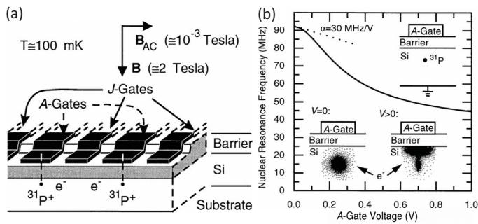<br/>
FIG. 11 A silicon-based nuclear spin quantum computer (a) Schematic of Kane’s proposal for a scalable quantum computer in silicon using a linear array of <span class="katex"><span class="katex-html" aria-hidden="true"><span class="base"><span class="strut" style="height:0.8141em;"></span><span class="mord"><span class="mord"><span></span><span class="msupsub"><span class="vlist-t"><span class="vlist-r"><span class="vlist" style="height:0.8141em;"><span style="top:-3.063em;margin-right:0.05em;"><span class="pstrut" style="height:2.7em;"></span><span class="sizing reset-size6 size3 mtight"><span class="mord mtight"><span class="mord mtight">31</span></span></span></span></span></span></span></span></span><span class="mord mathrm">P</span></span></span></span></span> donors in a silicon host. <span class="katex"><span class="katex-html" aria-hidden="true"><span class="base"><span class="strut" style="height:0.6833em;"></span><span class="mord mathnormal" style="margin-right:0.0962em;">J</span></span></span></span> -gates and <span class="katex"><span class="katex-html" aria-hidden="true"><span class="base"><span class="strut" style="height:0.6833em;"></span><span class="mord mathnormal">A</span></span></span></span> -gates control respectively the exchange interaction <span class="katex"><span class="katex-html" aria-hidden="true"><span class="base"><span class="strut" style="height:0.6833em;"></span><span class="mord mathnormal" style="margin-right:0.0962em;">J</span></span></span></span> and the wave function, as shown in (b). Reproduced from Kane (1998).</p>
<p>energy are similar, a situation that occurs frequently in few-electron quantum dot devices.</p>
<p>Because valley-orbit coupling and valley splitting depend on interface details, the observation of valley splittings that vary substantially between devices (Borselli et al., 2011b) is not unexpected. Understanding and controlling this variability is important for being able to scale up the technology and for the development of devices that exploit the valley degree of freedom (Culcer et al., 2009a, 2012; Li et al., 2010; Shi et al., 2012). Therefore, improved understanding of the physical mechanisms that affect valley splitting in real devices remains an important topic of active research. The valley-orbit coupling also contains phase information, which can be used for quantum computation (Wu and Culcer, 2012).</p>
<h1 id="c-dopants-in-si">C. Dopants in Si<a role="anchor" aria-hidden="true" tabindex="-1" data-no-popover="true" href="#c-dopants-in-si" class="internal internal-link"><svg width="18" height="18" viewBox="0 0 24 24" fill="none" stroke="currentColor" stroke-width="2" stroke-linecap="round" stroke-linejoin="round"><path d="M10 13a5 5 0 0 0 7.54.54l3-3a5 5 0 0 0-7.07-7.07l-1.72 1.71"></path><path d="M14 11a5 5 0 0 0-7.54-.54l-3 3a5 5 0 0 0 7.07 7.07l1.71-1.71"></path></svg></a></h1>
<h1 id="1-wave-function-engineering-of-single-dopant-electron-states">1. Wave function engineering of single dopant electron states<a role="anchor" aria-hidden="true" tabindex="-1" data-no-popover="true" href="#1-wave-function-engineering-of-single-dopant-electron-states" class="internal internal-link"><svg width="18" height="18" viewBox="0 0 24 24" fill="none" stroke="currentColor" stroke-width="2" stroke-linecap="round" stroke-linejoin="round"><path d="M10 13a5 5 0 0 0 7.54.54l3-3a5 5 0 0 0-7.07-7.07l-1.72 1.71"></path><path d="M14 11a5 5 0 0 0-7.54-.54l-3 3a5 5 0 0 0 7.07 7.07l1.71-1.71"></path></svg></a></h1>
<p>The central theme of quantum electronics applications using single dopants is the ability to modify the dopant electron wave function using external electric fields and/or to manipulate the spin degrees of freedom using magnetic fields. In many proposals for dopant based qubits using either electron or nuclear spins as the qubit states, dopant electron wave function engineering is critical to effect single and two qubit gates. Since most work has been done on n-type dopants, this section will focus on donors. The original idea comes from the Kane proposal for a nuclear-spin based quantum computer in silicon (Kane, 2000) where the single qubit operations are implemented by tuning the contact hyperfine interaction to bring the donor electron into resonance with a transverse oscillating magnetic driving field (see Fig. 11). To see this we write the effective spin qubit Hamiltonian of a single donor nucleus-electron system in the presence of a gate potential with strength <span class="katex"><span class="katex-html" aria-hidden="true"><span class="base"><span class="strut" style="height:0.6833em;"></span><span class="mord mathnormal" style="margin-right:0.2222em;">V</span></span></span></span> at the donor position as</p>
<p>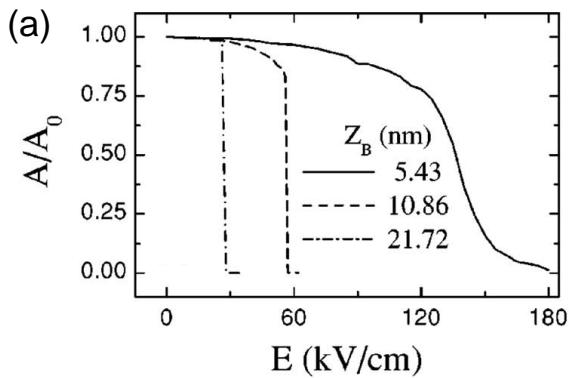</p>
<p>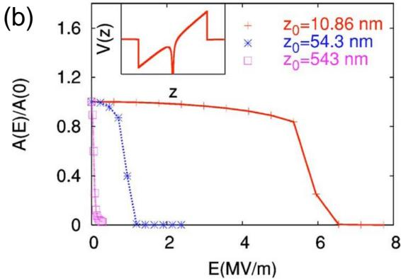<br/>
FIG. 12 (Color online) Relative Stark shift of the contact hyperfine interaction for different donor depths <span class="katex"><span class="katex-html" aria-hidden="true"><span class="base"><span class="strut" style="height:1em;vertical-align:-0.25em;"></span><span class="mopen">(</span><span class="mord mathnormal" style="margin-right:0.044em;">z</span><span class="mclose">)</span></span></span></span> calculated for a uniform field in the z direction. (a) Using the tight-binding approach (Martins et al., 2004), and (b) Direct diagonalization in momentum space (Wellard and Hollenberg, 2005). Agreement in overall trends is reasonable, and for the <span class="katex"><span class="katex-html" aria-hidden="true"><span class="base"><span class="strut" style="height:0.4306em;"></span><span class="mord mathnormal" style="margin-right:0.044em;">z</span><span class="mspace" style="margin-right:0.2778em;"></span><span class="mrel">=</span><span class="mspace" style="margin-right:0.2778em;"></span></span><span class="base"><span class="strut" style="height:0.6444em;"></span><span class="mord">10.86</span><span class="mspace"> </span><span class="mord"><span class="mord mathrm">nm</span></span></span></span></span> case both methods predict ionization at <span class="katex"><span class="katex-html" aria-hidden="true"><span class="base"><span class="strut" style="height:1em;vertical-align:-0.25em;"></span><span class="mord"><span class="mrel">∼</span></span><span class="mord">6</span><span class="mspace nobreak"> </span><span class="mord"><span class="mord mathrm">MV/m</span></span></span></span></span> .</p>
<p>(Goan, 2005; Kane, 1998)</p>
<span class="katex-display"><span class="katex"><span class="katex-html" aria-hidden="true"><span class="base"><span class="strut" style="height:0.9694em;vertical-align:-0.2861em;"></span><span class="mord"><span class="mord mathnormal" style="margin-right:0.0813em;">H</span><span class="msupsub"><span class="vlist-t vlist-t2"><span class="vlist-r"><span class="vlist" style="height:0.3283em;"><span style="top:-2.55em;margin-left:-0.0813em;margin-right:0.05em;"><span class="pstrut" style="height:2.7em;"></span><span class="sizing reset-size6 size3 mtight"><span class="mord mtight"><span class="mord mtight">1</span><span class="mord mathnormal mtight">Q</span></span></span></span></span><span class="vlist-s">​</span></span><span class="vlist-r"><span class="vlist" style="height:0.2861em;"><span></span></span></span></span></span></span><span class="mspace" style="margin-right:0.2778em;"></span><span class="mrel">=</span><span class="mspace" style="margin-right:0.2778em;"></span></span><span class="base"><span class="strut" style="height:0.9614em;vertical-align:-0.247em;"></span><span class="mord"><span class="mord mathnormal">μ</span><span class="msupsub"><span class="vlist-t vlist-t2"><span class="vlist-r"><span class="vlist" style="height:0.3283em;"><span style="top:-2.55em;margin-left:0em;margin-right:0.05em;"><span class="pstrut" style="height:2.7em;"></span><span class="sizing reset-size6 size3 mtight"><span class="mord mtight"><span class="mord mathnormal mtight" style="margin-right:0.0502em;">B</span></span></span></span></span><span class="vlist-s">​</span></span><span class="vlist-r"><span class="vlist" style="height:0.15em;"><span></span></span></span></span></span></span><span class="mord"><span class="mord mathnormal" style="margin-right:0.0502em;">B</span><span class="msupsub"><span class="vlist-t vlist-t2"><span class="vlist-r"><span class="vlist" style="height:0.1514em;"><span style="top:-2.55em;margin-left:-0.0502em;margin-right:0.05em;"><span class="pstrut" style="height:2.7em;"></span><span class="sizing reset-size6 size3 mtight"><span class="mord mtight"><span class="mord mathnormal mtight" style="margin-right:0.044em;">z</span></span></span></span></span><span class="vlist-s">​</span></span><span class="vlist-r"><span class="vlist" style="height:0.15em;"><span></span></span></span></span></span></span><span class="mord"><span class="mord mathnormal" style="margin-right:0.0359em;">σ</span><span class="msupsub"><span class="vlist-t vlist-t2"><span class="vlist-r"><span class="vlist" style="height:0.7144em;"><span style="top:-2.453em;margin-left:-0.0359em;margin-right:0.05em;"><span class="pstrut" style="height:2.7em;"></span><span class="sizing reset-size6 size3 mtight"><span class="mord mtight"><span class="mord mathnormal mtight">e</span></span></span></span><span style="top:-3.113em;margin-right:0.05em;"><span class="pstrut" style="height:2.7em;"></span><span class="sizing reset-size6 size3 mtight"><span class="mord mtight"><span class="mord mathnormal mtight" style="margin-right:0.044em;">z</span></span></span></span></span><span class="vlist-s">​</span></span><span class="vlist-r"><span class="vlist" style="height:0.247em;"><span></span></span></span></span></span></span><span class="mspace" style="margin-right:0.2222em;"></span><span class="mbin">−</span><span class="mspace" style="margin-right:0.2222em;"></span></span><span class="base"><span class="strut" style="height:0.9614em;vertical-align:-0.247em;"></span><span class="mord"><span class="mord mathnormal" style="margin-right:0.0359em;">g</span><span class="msupsub"><span class="vlist-t vlist-t2"><span class="vlist-r"><span class="vlist" style="height:0.1514em;"><span style="top:-2.55em;margin-left:-0.0359em;margin-right:0.05em;"><span class="pstrut" style="height:2.7em;"></span><span class="sizing reset-size6 size3 mtight"><span class="mord mtight"><span class="mord mathnormal mtight">n</span></span></span></span></span><span class="vlist-s">​</span></span><span class="vlist-r"><span class="vlist" style="height:0.15em;"><span></span></span></span></span></span></span><span class="mord"><span class="mord mathnormal">μ</span><span class="msupsub"><span class="vlist-t vlist-t2"><span class="vlist-r"><span class="vlist" style="height:0.1514em;"><span style="top:-2.55em;margin-left:0em;margin-right:0.05em;"><span class="pstrut" style="height:2.7em;"></span><span class="sizing reset-size6 size3 mtight"><span class="mord mtight"><span class="mord mathnormal mtight">n</span></span></span></span></span><span class="vlist-s">​</span></span><span class="vlist-r"><span class="vlist" style="height:0.15em;"><span></span></span></span></span></span></span><span class="mord"><span class="mord mathnormal" style="margin-right:0.0502em;">B</span><span class="msupsub"><span class="vlist-t vlist-t2"><span class="vlist-r"><span class="vlist" style="height:0.1514em;"><span style="top:-2.55em;margin-left:-0.0502em;margin-right:0.05em;"><span class="pstrut" style="height:2.7em;"></span><span class="sizing reset-size6 size3 mtight"><span class="mord mtight"><span class="mord mathnormal mtight" style="margin-right:0.044em;">z</span></span></span></span></span><span class="vlist-s">​</span></span><span class="vlist-r"><span class="vlist" style="height:0.15em;"><span></span></span></span></span></span></span><span class="mord"><span class="mord mathnormal" style="margin-right:0.0359em;">σ</span><span class="msupsub"><span class="vlist-t vlist-t2"><span class="vlist-r"><span class="vlist" style="height:0.7144em;"><span style="top:-2.453em;margin-left:-0.0359em;margin-right:0.05em;"><span class="pstrut" style="height:2.7em;"></span><span class="sizing reset-size6 size3 mtight"><span class="mord mtight"><span class="mord mathnormal mtight">n</span></span></span></span><span style="top:-3.113em;margin-right:0.05em;"><span class="pstrut" style="height:2.7em;"></span><span class="sizing reset-size6 size3 mtight"><span class="mord mtight"><span class="mord mathnormal mtight" style="margin-right:0.044em;">z</span></span></span></span></span><span class="vlist-s">​</span></span><span class="vlist-r"><span class="vlist" style="height:0.247em;"><span></span></span></span></span></span></span><span class="mspace" style="margin-right:0.2222em;"></span><span class="mbin">+</span><span class="mspace" style="margin-right:0.2222em;"></span></span><span class="base"><span class="strut" style="height:1em;vertical-align:-0.25em;"></span><span class="mord mathnormal">A</span><span class="mopen">(</span><span class="mord"><span class="mord mathnormal" style="margin-right:0.2222em;">V</span><span class="msupsub"><span class="vlist-t vlist-t2"><span class="vlist-r"><span class="vlist" style="height:0.3283em;"><span style="top:-2.55em;margin-left:-0.2222em;margin-right:0.05em;"><span class="pstrut" style="height:2.7em;"></span><span class="sizing reset-size6 size3 mtight"><span class="mord mtight"><span class="mord mathnormal mtight">A</span></span></span></span></span><span class="vlist-s">​</span></span><span class="vlist-r"><span class="vlist" style="height:0.15em;"><span></span></span></span></span></span></span><span class="mclose">)</span><span class="mord"><span class="mord accent"><span class="vlist-t"><span class="vlist-r"><span class="vlist" style="height:0.714em;"><span style="top:-3em;"><span class="pstrut" style="height:3em;"></span><span class="mord mathnormal" style="margin-right:0.0359em;">σ</span></span><span style="top:-3em;"><span class="pstrut" style="height:3em;"></span><span class="accent-body" style="left:-0.2355em;"><span class="overlay" style="height:0.714em;width:0.471em;"><svg xmlns="http://www.w3.org/2000/svg" width="0.471em" height="0.714em" style="width:0.471em;" viewBox="0 0 471 714" preserveAspectRatio="xMinYMin"><path d="M377 20c0-5.333 1.833-10 5.5-14S391 0 397 0c4.667 0 8.667 1.667 12 5
3.333 2.667 6.667 9 10 19 6.667 24.667 20.333 43.667 41 57 7.333 4.667 11
10.667 11 18 0 6-1 10-3 12s-6.667 5-14 9c-28.667 14.667-53.667 35.667-75 63
-1.333 1.333-3.167 3.5-5.5 6.5s-4 4.833-5 5.5c-1 .667-2.5 1.333-4.5 2s-4.333 1
-7 1c-4.667 0-9.167-1.833-13.5-5.5S337 184 337 178c0-12.667 15.667-32.333 47-59
H213l-171-1c-8.667-6-13-12.333-13-19 0-4.667 4.333-11.333 13-20h359
c-16-25.333-24-45-24-59z"></path></svg></span></span></span></span></span></span></span><span class="msupsub"><span class="vlist-t vlist-t2"><span class="vlist-r"><span class="vlist" style="height:0.1514em;"><span style="top:-2.55em;margin-left:-0.0359em;margin-right:0.05em;"><span class="pstrut" style="height:2.7em;"></span><span class="sizing reset-size6 size3 mtight"><span class="mord mtight"><span class="mord mathnormal mtight">n</span></span></span></span></span><span class="vlist-s">​</span></span><span class="vlist-r"><span class="vlist" style="height:0.15em;"><span></span></span></span></span></span></span><span class="mord">.</span><span class="mord"><span class="mord accent"><span class="vlist-t"><span class="vlist-r"><span class="vlist" style="height:0.714em;"><span style="top:-3em;"><span class="pstrut" style="height:3em;"></span><span class="mord mathnormal" style="margin-right:0.0359em;">σ</span></span><span style="top:-3em;"><span class="pstrut" style="height:3em;"></span><span class="accent-body" style="left:-0.2355em;"><span class="overlay" style="height:0.714em;width:0.471em;"><svg xmlns="http://www.w3.org/2000/svg" width="0.471em" height="0.714em" style="width:0.471em;" viewBox="0 0 471 714" preserveAspectRatio="xMinYMin"><path d="M377 20c0-5.333 1.833-10 5.5-14S391 0 397 0c4.667 0 8.667 1.667 12 5
3.333 2.667 6.667 9 10 19 6.667 24.667 20.333 43.667 41 57 7.333 4.667 11
10.667 11 18 0 6-1 10-3 12s-6.667 5-14 9c-28.667 14.667-53.667 35.667-75 63
-1.333 1.333-3.167 3.5-5.5 6.5s-4 4.833-5 5.5c-1 .667-2.5 1.333-4.5 2s-4.333 1
-7 1c-4.667 0-9.167-1.833-13.5-5.5S337 184 337 178c0-12.667 15.667-32.333 47-59
H213l-171-1c-8.667-6-13-12.333-13-19 0-4.667 4.333-11.333 13-20h359
c-16-25.333-24-45-24-59z"></path></svg></span></span></span></span></span></span></span><span class="msupsub"><span class="vlist-t vlist-t2"><span class="vlist-r"><span class="vlist" style="height:0.1514em;"><span style="top:-2.55em;margin-left:-0.0359em;margin-right:0.05em;"><span class="pstrut" style="height:2.7em;"></span><span class="sizing reset-size6 size3 mtight"><span class="mord mtight"><span class="mord mathnormal mtight">e</span></span></span></span></span><span class="vlist-s">​</span></span><span class="vlist-r"><span class="vlist" style="height:0.15em;"><span></span></span></span></span></span></span><span class="mpunct">,</span></span><span class="tag"><span class="strut" style="height:1.0361em;vertical-align:-0.2861em;"></span><span class="mord text"><span class="mord">(</span><span class="mord"><span class="mord">8</span></span><span class="mord">)</span></span></span></span></span></span>
<p>where <span class="katex"><span class="katex-html" aria-hidden="true"><span class="base"><span class="strut" style="height:0.625em;vertical-align:-0.1944em;"></span><span class="mord"><span class="mord mathnormal">μ</span><span class="msupsub"><span class="vlist-t vlist-t2"><span class="vlist-r"><span class="vlist" style="height:0.3283em;"><span style="top:-2.55em;margin-left:0em;margin-right:0.05em;"><span class="pstrut" style="height:2.7em;"></span><span class="sizing reset-size6 size3 mtight"><span class="mord mtight"><span class="mord mathnormal mtight" style="margin-right:0.0502em;">B</span></span></span></span></span><span class="vlist-s">​</span></span><span class="vlist-r"><span class="vlist" style="height:0.15em;"><span></span></span></span></span></span></span></span></span></span> is the Bohr magneton, <span class="katex"><span class="katex-html" aria-hidden="true"><span class="base"><span class="strut" style="height:0.625em;vertical-align:-0.1944em;"></span><span class="mord"><span class="mord mathnormal" style="margin-right:0.0359em;">g</span><span class="msupsub"><span class="vlist-t vlist-t2"><span class="vlist-r"><span class="vlist" style="height:0.1514em;"><span style="top:-2.55em;margin-left:-0.0359em;margin-right:0.05em;"><span class="pstrut" style="height:2.7em;"></span><span class="sizing reset-size6 size3 mtight"><span class="mord mtight"><span class="mord mathnormal mtight">n</span></span></span></span></span><span class="vlist-s">​</span></span><span class="vlist-r"><span class="vlist" style="height:0.15em;"><span></span></span></span></span></span></span></span></span></span> the Land´e factor for <span class="katex"><span class="katex-html" aria-hidden="true"><span class="base"><span class="strut" style="height:0.8141em;"></span><span class="mord"><span class="mord"><span></span><span class="msupsub"><span class="vlist-t"><span class="vlist-r"><span class="vlist" style="height:0.8141em;"><span style="top:-3.063em;margin-right:0.05em;"><span class="pstrut" style="height:2.7em;"></span><span class="sizing reset-size6 size3 mtight"><span class="mord mtight"><span class="mord mathrm mtight">31</span></span></span></span></span></span></span></span></span><span class="mord mathrm">P</span></span></span></span></span> , and <span class="katex"><span class="katex-html" aria-hidden="true"><span class="base"><span class="strut" style="height:0.625em;vertical-align:-0.1944em;"></span><span class="mord"><span class="mord mathnormal">μ</span><span class="msupsub"><span class="vlist-t vlist-t2"><span class="vlist-r"><span class="vlist" style="height:0.1514em;"><span style="top:-2.55em;margin-left:0em;margin-right:0.05em;"><span class="pstrut" style="height:2.7em;"></span><span class="sizing reset-size6 size3 mtight"><span class="mord mtight"><span class="mord mathnormal mtight">n</span></span></span></span></span><span class="vlist-s">​</span></span><span class="vlist-r"><span class="vlist" style="height:0.15em;"><span></span></span></span></span></span></span></span></span></span> is the nuclear magneton. The contact hyperfine interaction strength <span class="katex"><span class="katex-html" aria-hidden="true"><span class="base"><span class="strut" style="height:0.6833em;"></span><span class="mord mathnormal">A</span></span></span></span> can be tuned by an applied electric field arising from a bias <span class="katex"><span class="katex-html" aria-hidden="true"><span class="base"><span class="strut" style="height:0.8333em;vertical-align:-0.15em;"></span><span class="mord"><span class="mord mathnormal" style="margin-right:0.2222em;">V</span><span class="msupsub"><span class="vlist-t vlist-t2"><span class="vlist-r"><span class="vlist" style="height:0.3283em;"><span style="top:-2.55em;margin-left:-0.2222em;margin-right:0.05em;"><span class="pstrut" style="height:2.7em;"></span><span class="sizing reset-size6 size3 mtight"><span class="mord mtight"><span class="mord mathnormal mtight">A</span></span></span></span></span><span class="vlist-s">​</span></span><span class="vlist-r"><span class="vlist" style="height:0.15em;"><span></span></span></span></span></span></span></span></span></span> on an <span class="katex"><span class="katex-html" aria-hidden="true"><span class="base"><span class="strut" style="height:0.6833em;"></span><span class="mord mathnormal">A</span></span></span></span> -gate as:</p>
<span class="katex-display"><span class="katex"><span class="katex-html" aria-hidden="true"><span class="base"><span class="strut" style="height:1em;vertical-align:-0.25em;"></span><span class="mord mathnormal">A</span><span class="mopen">(</span><span class="mord"><span class="mord mathnormal" style="margin-right:0.2222em;">V</span><span class="msupsub"><span class="vlist-t vlist-t2"><span class="vlist-r"><span class="vlist" style="height:0.3283em;"><span style="top:-2.55em;margin-left:-0.2222em;margin-right:0.05em;"><span class="pstrut" style="height:2.7em;"></span><span class="sizing reset-size6 size3 mtight"><span class="mord mtight"><span class="mord mathnormal mtight">A</span></span></span></span></span><span class="vlist-s">​</span></span><span class="vlist-r"><span class="vlist" style="height:0.15em;"><span></span></span></span></span></span></span><span class="mclose">)</span><span class="mspace" style="margin-right:0.2778em;"></span><span class="mrel">=</span><span class="mspace" style="margin-right:0.2778em;"></span></span><span class="base"><span class="strut" style="height:2.0074em;vertical-align:-0.686em;"></span><span class="mord"><span class="mopen nulldelimiter"></span><span class="mfrac"><span class="vlist-t vlist-t2"><span class="vlist-r"><span class="vlist" style="height:1.3214em;"><span style="top:-2.314em;"><span class="pstrut" style="height:3em;"></span><span class="mord"><span class="mord">3</span></span></span><span style="top:-3.23em;"><span class="pstrut" style="height:3em;"></span><span class="frac-line" style="border-bottom-width:0.04em;"></span></span><span style="top:-3.677em;"><span class="pstrut" style="height:3em;"></span><span class="mord"><span class="mord">2</span></span></span></span><span class="vlist-s">​</span></span><span class="vlist-r"><span class="vlist" style="height:0.686em;"><span></span></span></span></span></span><span class="mclose nulldelimiter"></span></span><span class="mord">∣</span><span class="mord mathnormal" style="margin-right:0.0359em;">ψ</span><span class="mopen">(</span><span class="mord">0</span><span class="mpunct">,</span><span class="mspace" style="margin-right:0.1667em;"></span><span class="mord"><span class="mord mathnormal" style="margin-right:0.2222em;">V</span><span class="msupsub"><span class="vlist-t vlist-t2"><span class="vlist-r"><span class="vlist" style="height:0.3283em;"><span style="top:-2.55em;margin-left:-0.2222em;margin-right:0.05em;"><span class="pstrut" style="height:2.7em;"></span><span class="sizing reset-size6 size3 mtight"><span class="mord mtight"><span class="mord mathnormal mtight">A</span></span></span></span></span><span class="vlist-s">​</span></span><span class="vlist-r"><span class="vlist" style="height:0.15em;"><span></span></span></span></span></span></span><span class="mclose">)</span><span class="mord"><span class="mord">∣</span><span class="msupsub"><span class="vlist-t"><span class="vlist-r"><span class="vlist" style="height:0.8641em;"><span style="top:-3.113em;margin-right:0.05em;"><span class="pstrut" style="height:2.7em;"></span><span class="sizing reset-size6 size3 mtight"><span class="mord mtight"><span class="mord mtight">2</span></span></span></span></span></span></span></span></span><span class="mord"><span class="mord mathnormal">μ</span><span class="msupsub"><span class="vlist-t vlist-t2"><span class="vlist-r"><span class="vlist" style="height:0.3283em;"><span style="top:-2.55em;margin-left:0em;margin-right:0.05em;"><span class="pstrut" style="height:2.7em;"></span><span class="sizing reset-size6 size3 mtight"><span class="mord mtight"><span class="mord mathnormal mtight" style="margin-right:0.0502em;">B</span></span></span></span></span><span class="vlist-s">​</span></span><span class="vlist-r"><span class="vlist" style="height:0.15em;"><span></span></span></span></span></span></span><span class="mord"><span class="mord mathnormal" style="margin-right:0.0359em;">g</span><span class="msupsub"><span class="vlist-t vlist-t2"><span class="vlist-r"><span class="vlist" style="height:0.1514em;"><span style="top:-2.55em;margin-left:-0.0359em;margin-right:0.05em;"><span class="pstrut" style="height:2.7em;"></span><span class="sizing reset-size6 size3 mtight"><span class="mord mtight"><span class="mord mathnormal mtight">n</span></span></span></span></span><span class="vlist-s">​</span></span><span class="vlist-r"><span class="vlist" style="height:0.15em;"><span></span></span></span></span></span></span><span class="mord"><span class="mord mathnormal">μ</span><span class="msupsub"><span class="vlist-t vlist-t2"><span class="vlist-r"><span class="vlist" style="height:0.1514em;"><span style="top:-2.55em;margin-left:0em;margin-right:0.05em;"><span class="pstrut" style="height:2.7em;"></span><span class="sizing reset-size6 size3 mtight"><span class="mord mtight"><span class="mord mathnormal mtight">n</span></span></span></span></span><span class="vlist-s">​</span></span><span class="vlist-r"><span class="vlist" style="height:0.15em;"><span></span></span></span></span></span></span><span class="mord"><span class="mord mathnormal">μ</span><span class="msupsub"><span class="vlist-t vlist-t2"><span class="vlist-r"><span class="vlist" style="height:0.3011em;"><span style="top:-2.55em;margin-left:0em;margin-right:0.05em;"><span class="pstrut" style="height:2.7em;"></span><span class="sizing reset-size6 size3 mtight"><span class="mord mtight"><span class="mord mtight">0</span></span></span></span></span><span class="vlist-s">​</span></span><span class="vlist-r"><span class="vlist" style="height:0.15em;"><span></span></span></span></span></span></span><span class="mpunct">,</span></span><span class="tag"><span class="strut" style="height:2.0074em;vertical-align:-0.686em;"></span><span class="mord text"><span class="mord">(</span><span class="mord"><span class="mord">9</span></span><span class="mord">)</span></span></span></span></span></span>
<p>where <span class="katex"><span class="katex-html" aria-hidden="true"><span class="base"><span class="strut" style="height:0.625em;vertical-align:-0.1944em;"></span><span class="mord"><span class="mord mathnormal">μ</span><span class="msupsub"><span class="vlist-t vlist-t2"><span class="vlist-r"><span class="vlist" style="height:0.3011em;"><span style="top:-2.55em;margin-left:0em;margin-right:0.05em;"><span class="pstrut" style="height:2.7em;"></span><span class="sizing reset-size6 size3 mtight"><span class="mord mtight"><span class="mord mtight">0</span></span></span></span></span><span class="vlist-s">​</span></span><span class="vlist-r"><span class="vlist" style="height:0.15em;"><span></span></span></span></span></span></span></span></span></span> is the permeability of silicon and <span class="katex"><span class="katex-html" aria-hidden="true"><span class="base"><span class="strut" style="height:1em;vertical-align:-0.25em;"></span><span class="mord mathnormal" style="margin-right:0.0359em;">ψ</span><span class="mopen">(</span><span class="mord">0</span><span class="mpunct">,</span><span class="mspace" style="margin-right:0.1667em;"></span><span class="mord"><span class="mord mathnormal" style="margin-right:0.2222em;">V</span><span class="msupsub"><span class="vlist-t vlist-t2"><span class="vlist-r"><span class="vlist" style="height:0.3283em;"><span style="top:-2.55em;margin-left:-0.2222em;margin-right:0.05em;"><span class="pstrut" style="height:2.7em;"></span><span class="sizing reset-size6 size3 mtight"><span class="mord mtight"><span class="mord mathnormal mtight">A</span></span></span></span></span><span class="vlist-s">​</span></span><span class="vlist-r"><span class="vlist" style="height:0.15em;"><span></span></span></span></span></span></span><span class="mclose">)</span></span></span></span> is the donor electron wave-function evaluated at the nucleus under the <span class="katex"><span class="katex-html" aria-hidden="true"><span class="base"><span class="strut" style="height:0.6833em;"></span><span class="mord mathnormal">A</span></span></span></span> -gate bias <span class="katex"><span class="katex-html" aria-hidden="true"><span class="base"><span class="strut" style="height:0.8333em;vertical-align:-0.15em;"></span><span class="mord"><span class="mord mathnormal" style="margin-right:0.2222em;">V</span><span class="msupsub"><span class="vlist-t vlist-t2"><span class="vlist-r"><span class="vlist" style="height:0.3283em;"><span style="top:-2.55em;margin-left:-0.2222em;margin-right:0.05em;"><span class="pstrut" style="height:2.7em;"></span><span class="sizing reset-size6 size3 mtight"><span class="mord mtight"><span class="mord mathnormal mtight">A</span></span></span></span></span><span class="vlist-s">​</span></span><span class="vlist-r"><span class="vlist" style="height:0.15em;"><span></span></span></span></span></span></span></span></span></span> .</p>
<p>The change in the strength of the contact hyperfine coupling due to the application of a gate bias has been studied by several authors since Kane’s proposal. To determine the change in the contact hyperfine coupling strength it is necessary to calculate the shift in the donor electron wave function at the position of the donor nucleus. Depending on the applied bias polarity, an <span class="katex"><span class="katex-html" aria-hidden="true"><span class="base"><span class="strut" style="height:0.6833em;"></span><span class="mord mathnormal">A</span></span></span></span> -gate control electrode will either draw the wave function toward, or away, from the gate. In either scenario the wave</p>
<p>function at the donor nuclear position is perturbed to some extent. The resulting tuning of <span class="katex"><span class="katex-html" aria-hidden="true"><span class="base"><span class="strut" style="height:0.6833em;"></span><span class="mord mathnormal">A</span></span></span></span> depends critically on device parameters such as the depth of the donor from the interface, and the gate/interface geometry. The level of sophistication of the treatment of the donor electron wave function in these devices has steadily improved since the original calculations following Kane (1998). The earliest approaches used fairly simple hydrogenic wave functions scaled by the dielectric constant of silicon. Larionov et al. (2000) treated the bias potential analytically, and the shift in the hyperfine interaction constant as a function of applied bias voltage was calculated using perturbation theory. Wellard et al. (2002), again using scaled hydrogenic orbitals treated the problem using a more realistic gate potential (modeled using a commercial semi-conductor software package, with built in Poisson solver). The donor electron wave function was expanded in a basis of hydrogenic orbitals in which the Hamiltonian was diagonalized numerically. Kettle et al. (2003) extended these calculations using a basis of nonisotropic scaled hydrogenic orbital states. Smit et al. (2003, 2004) used group theory over the valley manifold and perturbation theory to describe the Stark shift of the donor electron while Martins et al. (2005, 2004) applied tight-binding theory to obtain the first description of the Stark shift of orbital states and the hyperfine interaction incorporating Bloch structure. Meanwhile, the effective mass treatment was further developed in a combined variational approach (Friesen, 2005) and (Calder´on et al., 2009), and in (Debernardi et al., 2006) using a Gaussian expansion of the effective-mass theory (EMT, see section II of the supplemental material) envelope functions. This was followed by the application of direct diagonalization in momentum space (Wellard and Hollenberg, 2005) allowing the potential due to the <span class="katex"><span class="katex-html" aria-hidden="true"><span class="base"><span class="strut" style="height:0.6833em;"></span><span class="mord mathnormal">A</span></span></span></span> -gate to be included at the Hamiltonian level and gave a similar picture of the Stark shift of the hyperfine interaction as a function of external field strength and donor depth as the earlier tight-binding treatment of Martins et al. (2004) (see Fig. 12). Although not optimized computationally, the momentum space diagonalization approach has served as a consistency check against larger scale real-space tightbinding calculations of the Stark shift of the donor hyperfine interaction at low fields (Rahman et al., 2007) in the overall benchmarking against experiment (Bradbury et al., 2006) which shows the theoretical description has converged to a reasonable level in terms of internal consistency and comparison with experiment (see Fig. 13). It should be noted that in such descriptions encompassing the overall donor electron wave function it is the relative change in the contact hyperfine interaction as a function of electric field that is computed since these approaches do not describe well the details of the electron state at the nucleus. Absolute calculations of the contact hyperfine interaction are the domain of ab-initio theories where they have had remarkable success despite the truncation</p>
<p>of the long range part of the donor potential (Gerstmann, 2011; Overhof and Gerstmann, 2004).</p>
<p>In more recent years, the effect of depth and proximity to the interface on donor orbital states (Calder´on et al., 2008, 2006b; Hao et al., 2009; Rahman et al., 2009a) has received more attention as key experimental measurements became available. A turning point was the measurement of donor orbital states through transport in FinFET devices. The observed donor energy levels were very different from the bulk spectrum (see section V.C). Extensive tight-binding calculations were used to explore the space of electric field and donor depth on the quantum confinement conditions of the donor-associated electron, identifying Coulombic, interfacial, and hybridized confinement regimes. These calculations provided an excellent description of the low lying donor states observed and determination of the donor species (Lansbergen et al., 2008). It would appear that the theoretical description of electric field “wave function engineering” of the donor electron across device dimensions is now well understood. The context of the Kane donor qubit has spurred further refinements of the theoretical description of donor states, including the site-specific contact and non-isotropic hyperfine interaction terms (Ivey and Mieher, 1975a,b) for wave function mapping under electric fields (Park et al., 2009), interaction with magnetic fields and gate control of the g-factor (Rahman et al., 2009b; Thilderkvist et al., 1994), dynamics of molecular donor-based systems (Hollenberg et al., 2004; Hu et al., 2005; Rahman et al., 2011b; Wellard et al., 2006), crosstalk in hyperfine control (Kandasamy et al., 2006), coherent single electron transport through chains of ionized donor chains (Rahman et al., 2009b), spin-to-charge readout mechanisms (Fang et al., 2002; Hollenberg et al., 2004), and the calculation of donor levels in the presence of STM-fabricated nanostructures providing modifications to the overall potential in a single-atom transistor, as shown in section V.B.3 (Fuechsle et al., 2012).</p>
<h1 id="2-two-donor-systems-and-exchange-coupling">2. Two-donor systems and exchange coupling<a role="anchor" aria-hidden="true" tabindex="-1" data-no-popover="true" href="#2-two-donor-systems-and-exchange-coupling" class="internal internal-link"><svg width="18" height="18" viewBox="0 0 24 24" fill="none" stroke="currentColor" stroke-width="2" stroke-linecap="round" stroke-linejoin="round"><path d="M10 13a5 5 0 0 0 7.54.54l3-3a5 5 0 0 0-7.07-7.07l-1.72 1.71"></path><path d="M14 11a5 5 0 0 0-7.54-.54l-3 3a5 5 0 0 0 7.07 7.07l1.71-1.71"></path></svg></a></h1>
<p>In the quantum computing context, the two main approaches to directly couple the spins of donor electrons are through the Coulomb-based exchange interaction between proximate donor electrons, or the magnetic dipole interaction. The Kane model uses gate control of the exchange interaction as per the two-qubit effective spin Hamiltonian:</p>
<span class="katex-display"><span class="katex"><span class="katex-html" aria-hidden="true"><span class="base"><span class="strut" style="height:3.6em;vertical-align:-1.55em;"></span><span class="mord"><span class="mtable"><span class="arraycolsep" style="width:0.5em;"></span><span class="col-align-l"><span class="vlist-t vlist-t2"><span class="vlist-r"><span class="vlist" style="height:2.05em;"><span style="top:-4.21em;"><span class="pstrut" style="height:3em;"></span><span class="mord"><span class="mord"><span class="mord mathnormal" style="margin-right:0.0813em;">H</span><span class="msupsub"><span class="vlist-t vlist-t2"><span class="vlist-r"><span class="vlist" style="height:0.3283em;"><span style="top:-2.55em;margin-left:-0.0813em;margin-right:0.05em;"><span class="pstrut" style="height:2.7em;"></span><span class="sizing reset-size6 size3 mtight"><span class="mord mtight"><span class="mord mtight">2</span><span class="mord mathnormal mtight">Q</span></span></span></span></span><span class="vlist-s">​</span></span><span class="vlist-r"><span class="vlist" style="height:0.2861em;"><span></span></span></span></span></span></span><span class="mspace" style="margin-right:0.2778em;"></span><span class="mrel">=</span><span class="mspace" style="margin-right:0.2778em;"></span><span class="mord"><span class="mord mathnormal">μ</span><span class="msupsub"><span class="vlist-t vlist-t2"><span class="vlist-r"><span class="vlist" style="height:0.3283em;"><span style="top:-2.55em;margin-left:0em;margin-right:0.05em;"><span class="pstrut" style="height:2.7em;"></span><span class="sizing reset-size6 size3 mtight"><span class="mord mtight"><span class="mord mathnormal mtight" style="margin-right:0.0502em;">B</span></span></span></span></span><span class="vlist-s">​</span></span><span class="vlist-r"><span class="vlist" style="height:0.15em;"><span></span></span></span></span></span></span><span class="mord"><span class="mord mathnormal" style="margin-right:0.0502em;">B</span><span class="msupsub"><span class="vlist-t vlist-t2"><span class="vlist-r"><span class="vlist" style="height:0.1514em;"><span style="top:-2.55em;margin-left:-0.0502em;margin-right:0.05em;"><span class="pstrut" style="height:2.7em;"></span><span class="sizing reset-size6 size3 mtight"><span class="mord mtight"><span class="mord mathnormal mtight" style="margin-right:0.044em;">z</span></span></span></span></span><span class="vlist-s">​</span></span><span class="vlist-r"><span class="vlist" style="height:0.15em;"><span></span></span></span></span></span></span><span class="mord"><span class="mord mathnormal" style="margin-right:0.0359em;">σ</span><span class="msupsub"><span class="vlist-t vlist-t2"><span class="vlist-r"><span class="vlist" style="height:0.6644em;"><span style="top:-2.453em;margin-left:-0.0359em;margin-right:0.05em;"><span class="pstrut" style="height:2.7em;"></span><span class="sizing reset-size6 size3 mtight"><span class="mord mtight"><span class="mord mtight"><span class="mord mathnormal mtight">e</span><span class="msupsub"><span class="vlist-t vlist-t2"><span class="vlist-r"><span class="vlist" style="height:0.3173em;"><span style="top:-2.357em;margin-left:0em;margin-right:0.0714em;"><span class="pstrut" style="height:2.5em;"></span><span class="sizing reset-size3 size1 mtight"><span class="mord mtight"><span class="mord mtight">1</span></span></span></span></span><span class="vlist-s">​</span></span><span class="vlist-r"><span class="vlist" style="height:0.143em;"><span></span></span></span></span></span></span></span></span></span><span style="top:-3.063em;margin-right:0.05em;"><span class="pstrut" style="height:2.7em;"></span><span class="sizing reset-size6 size3 mtight"><span class="mord mtight"><span class="mord mathnormal mtight" style="margin-right:0.044em;">z</span></span></span></span></span><span class="vlist-s">​</span></span><span class="vlist-r"><span class="vlist" style="height:0.3471em;"><span></span></span></span></span></span></span><span class="mspace" style="margin-right:0.2222em;"></span><span class="mbin">−</span><span class="mspace" style="margin-right:0.2222em;"></span><span class="mord"><span class="mord mathnormal" style="margin-right:0.0359em;">g</span><span class="msupsub"><span class="vlist-t vlist-t2"><span class="vlist-r"><span class="vlist" style="height:0.1514em;"><span style="top:-2.55em;margin-left:-0.0359em;margin-right:0.05em;"><span class="pstrut" style="height:2.7em;"></span><span class="sizing reset-size6 size3 mtight"><span class="mord mtight"><span class="mord mathnormal mtight">n</span></span></span></span></span><span class="vlist-s">​</span></span><span class="vlist-r"><span class="vlist" style="height:0.15em;"><span></span></span></span></span></span></span><span class="mord"><span class="mord mathnormal">μ</span><span class="msupsub"><span class="vlist-t vlist-t2"><span class="vlist-r"><span class="vlist" style="height:0.1514em;"><span style="top:-2.55em;margin-left:0em;margin-right:0.05em;"><span class="pstrut" style="height:2.7em;"></span><span class="sizing reset-size6 size3 mtight"><span class="mord mtight"><span class="mord mathnormal mtight">n</span></span></span></span></span><span class="vlist-s">​</span></span><span class="vlist-r"><span class="vlist" style="height:0.15em;"><span></span></span></span></span></span></span><span class="mord"><span class="mord mathnormal" style="margin-right:0.0502em;">B</span><span class="msupsub"><span class="vlist-t vlist-t2"><span class="vlist-r"><span class="vlist" style="height:0.1514em;"><span style="top:-2.55em;margin-left:-0.0502em;margin-right:0.05em;"><span class="pstrut" style="height:2.7em;"></span><span class="sizing reset-size6 size3 mtight"><span class="mord mtight"><span class="mord mathnormal mtight" style="margin-right:0.044em;">z</span></span></span></span></span><span class="vlist-s">​</span></span><span class="vlist-r"><span class="vlist" style="height:0.15em;"><span></span></span></span></span></span></span><span class="mord"><span class="mord mathnormal" style="margin-right:0.0359em;">σ</span><span class="msupsub"><span class="vlist-t vlist-t2"><span class="vlist-r"><span class="vlist" style="height:0.6644em;"><span style="top:-2.453em;margin-left:-0.0359em;margin-right:0.05em;"><span class="pstrut" style="height:2.7em;"></span><span class="sizing reset-size6 size3 mtight"><span class="mord mtight"><span class="mord mtight"><span class="mord mathnormal mtight">n</span><span class="msupsub"><span class="vlist-t vlist-t2"><span class="vlist-r"><span class="vlist" style="height:0.3173em;"><span style="top:-2.357em;margin-left:0em;margin-right:0.0714em;"><span class="pstrut" style="height:2.5em;"></span><span class="sizing reset-size3 size1 mtight"><span class="mord mtight"><span class="mord mtight">1</span></span></span></span></span><span class="vlist-s">​</span></span><span class="vlist-r"><span class="vlist" style="height:0.143em;"><span></span></span></span></span></span></span></span></span></span><span style="top:-3.063em;margin-right:0.05em;"><span class="pstrut" style="height:2.7em;"></span><span class="sizing reset-size6 size3 mtight"><span class="mord mtight"><span class="mord mathnormal mtight" style="margin-right:0.044em;">z</span></span></span></span></span><span class="vlist-s">​</span></span><span class="vlist-r"><span class="vlist" style="height:0.3471em;"><span></span></span></span></span></span></span><span class="mspace" style="margin-right:0.2222em;"></span><span class="mbin">+</span><span class="mspace" style="margin-right:0.2222em;"></span><span class="mord"><span class="mord mathnormal">A</span><span class="msupsub"><span class="vlist-t vlist-t2"><span class="vlist-r"><span class="vlist" style="height:0.3011em;"><span style="top:-2.55em;margin-left:0em;margin-right:0.05em;"><span class="pstrut" style="height:2.7em;"></span><span class="sizing reset-size6 size3 mtight"><span class="mord mtight"><span class="mord mtight">1</span></span></span></span></span><span class="vlist-s">​</span></span><span class="vlist-r"><span class="vlist" style="height:0.15em;"><span></span></span></span></span></span></span><span class="mspace" style="margin-right:0.1667em;"></span><span class="minner"><span class="mopen delimcenter" style="top:0em;">(</span><span class="mord"><span class="mord mathnormal" style="margin-right:0.2222em;">V</span><span class="msupsub"><span class="vlist-t vlist-t2"><span class="vlist-r"><span class="vlist" style="height:0.3283em;"><span style="top:-2.55em;margin-left:-0.2222em;margin-right:0.05em;"><span class="pstrut" style="height:2.7em;"></span><span class="sizing reset-size6 size3 mtight"><span class="mord mtight"><span class="mord mathnormal mtight">A</span><span class="mord mtight">1</span></span></span></span></span><span class="vlist-s">​</span></span><span class="vlist-r"><span class="vlist" style="height:0.15em;"><span></span></span></span></span></span></span><span class="mclose delimcenter" style="top:0em;">)</span></span><span class="mspace" style="margin-right:0.1667em;"></span><span class="mord"><span class="mord accent"><span class="vlist-t"><span class="vlist-r"><span class="vlist" style="height:0.714em;"><span style="top:-3em;"><span class="pstrut" style="height:3em;"></span><span class="mord mathnormal" style="margin-right:0.0359em;">σ</span></span><span style="top:-3em;"><span class="pstrut" style="height:3em;"></span><span class="accent-body" style="left:-0.2355em;"><span class="overlay" style="height:0.714em;width:0.471em;"><svg xmlns="http://www.w3.org/2000/svg" width="0.471em" height="0.714em" style="width:0.471em;" viewBox="0 0 471 714" preserveAspectRatio="xMinYMin"><path d="M377 20c0-5.333 1.833-10 5.5-14S391 0 397 0c4.667 0 8.667 1.667 12 5
3.333 2.667 6.667 9 10 19 6.667 24.667 20.333 43.667 41 57 7.333 4.667 11
10.667 11 18 0 6-1 10-3 12s-6.667 5-14 9c-28.667 14.667-53.667 35.667-75 63
-1.333 1.333-3.167 3.5-5.5 6.5s-4 4.833-5 5.5c-1 .667-2.5 1.333-4.5 2s-4.333 1
-7 1c-4.667 0-9.167-1.833-13.5-5.5S337 184 337 178c0-12.667 15.667-32.333 47-59
H213l-171-1c-8.667-6-13-12.333-13-19 0-4.667 4.333-11.333 13-20h359
c-16-25.333-24-45-24-59z"></path></svg></span></span></span></span></span></span></span><span class="msupsub"><span class="vlist-t vlist-t2"><span class="vlist-r"><span class="vlist" style="height:0.1514em;"><span style="top:-2.55em;margin-left:-0.0359em;margin-right:0.05em;"><span class="pstrut" style="height:2.7em;"></span><span class="sizing reset-size6 size3 mtight"><span class="mord mtight"><span class="mord mtight"><span class="mord mathnormal mtight">n</span><span class="msupsub"><span class="vlist-t vlist-t2"><span class="vlist-r"><span class="vlist" style="height:0.3173em;"><span style="top:-2.357em;margin-left:0em;margin-right:0.0714em;"><span class="pstrut" style="height:2.5em;"></span><span class="sizing reset-size3 size1 mtight"><span class="mord mtight"><span class="mord mtight">1</span></span></span></span></span><span class="vlist-s">​</span></span><span class="vlist-r"><span class="vlist" style="height:0.143em;"><span></span></span></span></span></span></span></span></span></span></span><span class="vlist-s">​</span></span><span class="vlist-r"><span class="vlist" style="height:0.2501em;"><span></span></span></span></span></span></span><span class="mord">.</span><span class="mord"><span class="mord accent"><span class="vlist-t"><span class="vlist-r"><span class="vlist" style="height:0.714em;"><span style="top:-3em;"><span class="pstrut" style="height:3em;"></span><span class="mord mathnormal" style="margin-right:0.0359em;">σ</span></span><span style="top:-3em;"><span class="pstrut" style="height:3em;"></span><span class="accent-body" style="left:-0.2355em;"><span class="overlay" style="height:0.714em;width:0.471em;"><svg xmlns="http://www.w3.org/2000/svg" width="0.471em" height="0.714em" style="width:0.471em;" viewBox="0 0 471 714" preserveAspectRatio="xMinYMin"><path d="M377 20c0-5.333 1.833-10 5.5-14S391 0 397 0c4.667 0 8.667 1.667 12 5
3.333 2.667 6.667 9 10 19 6.667 24.667 20.333 43.667 41 57 7.333 4.667 11
10.667 11 18 0 6-1 10-3 12s-6.667 5-14 9c-28.667 14.667-53.667 35.667-75 63
-1.333 1.333-3.167 3.5-5.5 6.5s-4 4.833-5 5.5c-1 .667-2.5 1.333-4.5 2s-4.333 1
-7 1c-4.667 0-9.167-1.833-13.5-5.5S337 184 337 178c0-12.667 15.667-32.333 47-59
H213l-171-1c-8.667-6-13-12.333-13-19 0-4.667 4.333-11.333 13-20h359
c-16-25.333-24-45-24-59z"></path></svg></span></span></span></span></span></span></span><span class="msupsub"><span class="vlist-t vlist-t2"><span class="vlist-r"><span class="vlist" style="height:0.1514em;"><span style="top:-2.55em;margin-left:-0.0359em;margin-right:0.05em;"><span class="pstrut" style="height:2.7em;"></span><span class="sizing reset-size6 size3 mtight"><span class="mord mtight"><span class="mord mtight"><span class="mord mathnormal mtight">e</span><span class="msupsub"><span class="vlist-t vlist-t2"><span class="vlist-r"><span class="vlist" style="height:0.3173em;"><span style="top:-2.357em;margin-left:0em;margin-right:0.0714em;"><span class="pstrut" style="height:2.5em;"></span><span class="sizing reset-size3 size1 mtight"><span class="mord mtight"><span class="mord mtight">1</span></span></span></span></span><span class="vlist-s">​</span></span><span class="vlist-r"><span class="vlist" style="height:0.143em;"><span></span></span></span></span></span></span></span></span></span></span><span class="vlist-s">​</span></span><span class="vlist-r"><span class="vlist" style="height:0.2501em;"><span></span></span></span></span></span></span><span class="mopen">(</span><span class="mord">10</span><span class="mclose">)</span></span></span><span style="top:-3.01em;"><span class="pstrut" style="height:3em;"></span><span class="mord"><span class="mord">+</span><span class="mord"><span class="mord mathnormal">μ</span><span class="msupsub"><span class="vlist-t vlist-t2"><span class="vlist-r"><span class="vlist" style="height:0.3283em;"><span style="top:-2.55em;margin-left:0em;margin-right:0.05em;"><span class="pstrut" style="height:2.7em;"></span><span class="sizing reset-size6 size3 mtight"><span class="mord mtight"><span class="mord mathnormal mtight" style="margin-right:0.0502em;">B</span></span></span></span></span><span class="vlist-s">​</span></span><span class="vlist-r"><span class="vlist" style="height:0.15em;"><span></span></span></span></span></span></span><span class="mord"><span class="mord mathnormal" style="margin-right:0.0502em;">B</span><span class="msupsub"><span class="vlist-t vlist-t2"><span class="vlist-r"><span class="vlist" style="height:0.1514em;"><span style="top:-2.55em;margin-left:-0.0502em;margin-right:0.05em;"><span class="pstrut" style="height:2.7em;"></span><span class="sizing reset-size6 size3 mtight"><span class="mord mtight"><span class="mord mathnormal mtight" style="margin-right:0.044em;">z</span></span></span></span></span><span class="vlist-s">​</span></span><span class="vlist-r"><span class="vlist" style="height:0.15em;"><span></span></span></span></span></span></span><span class="mord"><span class="mord mathnormal" style="margin-right:0.0359em;">σ</span><span class="msupsub"><span class="vlist-t vlist-t2"><span class="vlist-r"><span class="vlist" style="height:0.6644em;"><span style="top:-2.453em;margin-left:-0.0359em;margin-right:0.05em;"><span class="pstrut" style="height:2.7em;"></span><span class="sizing reset-size6 size3 mtight"><span class="mord mtight"><span class="mord mtight"><span class="mord mathnormal mtight">e</span><span class="msupsub"><span class="vlist-t vlist-t2"><span class="vlist-r"><span class="vlist" style="height:0.3173em;"><span style="top:-2.357em;margin-left:0em;margin-right:0.0714em;"><span class="pstrut" style="height:2.5em;"></span><span class="sizing reset-size3 size1 mtight"><span class="mord mtight"><span class="mord mtight">2</span></span></span></span></span><span class="vlist-s">​</span></span><span class="vlist-r"><span class="vlist" style="height:0.143em;"><span></span></span></span></span></span></span></span></span></span><span style="top:-3.063em;margin-right:0.05em;"><span class="pstrut" style="height:2.7em;"></span><span class="sizing reset-size6 size3 mtight"><span class="mord mtight"><span class="mord mathnormal mtight" style="margin-right:0.044em;">z</span></span></span></span></span><span class="vlist-s">​</span></span><span class="vlist-r"><span class="vlist" style="height:0.3471em;"><span></span></span></span></span></span></span><span class="mspace" style="margin-right:0.2222em;"></span><span class="mbin">−</span><span class="mspace" style="margin-right:0.2222em;"></span><span class="mord"><span class="mord mathnormal" style="margin-right:0.0359em;">g</span><span class="msupsub"><span class="vlist-t vlist-t2"><span class="vlist-r"><span class="vlist" style="height:0.1514em;"><span style="top:-2.55em;margin-left:-0.0359em;margin-right:0.05em;"><span class="pstrut" style="height:2.7em;"></span><span class="sizing reset-size6 size3 mtight"><span class="mord mtight"><span class="mord mathnormal mtight">n</span></span></span></span></span><span class="vlist-s">​</span></span><span class="vlist-r"><span class="vlist" style="height:0.15em;"><span></span></span></span></span></span></span><span class="mord"><span class="mord mathnormal">μ</span><span class="msupsub"><span class="vlist-t vlist-t2"><span class="vlist-r"><span class="vlist" style="height:0.1514em;"><span style="top:-2.55em;margin-left:0em;margin-right:0.05em;"><span class="pstrut" style="height:2.7em;"></span><span class="sizing reset-size6 size3 mtight"><span class="mord mtight"><span class="mord mathnormal mtight">n</span></span></span></span></span><span class="vlist-s">​</span></span><span class="vlist-r"><span class="vlist" style="height:0.15em;"><span></span></span></span></span></span></span><span class="mord"><span class="mord mathnormal" style="margin-right:0.0502em;">B</span><span class="msupsub"><span class="vlist-t vlist-t2"><span class="vlist-r"><span class="vlist" style="height:0.1514em;"><span style="top:-2.55em;margin-left:-0.0502em;margin-right:0.05em;"><span class="pstrut" style="height:2.7em;"></span><span class="sizing reset-size6 size3 mtight"><span class="mord mtight"><span class="mord mathnormal mtight" style="margin-right:0.044em;">z</span></span></span></span></span><span class="vlist-s">​</span></span><span class="vlist-r"><span class="vlist" style="height:0.15em;"><span></span></span></span></span></span></span><span class="mord"><span class="mord mathnormal" style="margin-right:0.0359em;">σ</span><span class="msupsub"><span class="vlist-t vlist-t2"><span class="vlist-r"><span class="vlist" style="height:0.6644em;"><span style="top:-2.453em;margin-left:-0.0359em;margin-right:0.05em;"><span class="pstrut" style="height:2.7em;"></span><span class="sizing reset-size6 size3 mtight"><span class="mord mtight"><span class="mord mtight"><span class="mord mathnormal mtight">n</span><span class="msupsub"><span class="vlist-t vlist-t2"><span class="vlist-r"><span class="vlist" style="height:0.3173em;"><span style="top:-2.357em;margin-left:0em;margin-right:0.0714em;"><span class="pstrut" style="height:2.5em;"></span><span class="sizing reset-size3 size1 mtight"><span class="mord mtight"><span class="mord mtight">2</span></span></span></span></span><span class="vlist-s">​</span></span><span class="vlist-r"><span class="vlist" style="height:0.143em;"><span></span></span></span></span></span></span></span></span></span><span style="top:-3.063em;margin-right:0.05em;"><span class="pstrut" style="height:2.7em;"></span><span class="sizing reset-size6 size3 mtight"><span class="mord mtight"><span class="mord mathnormal mtight" style="margin-right:0.044em;">z</span></span></span></span></span><span class="vlist-s">​</span></span><span class="vlist-r"><span class="vlist" style="height:0.3471em;"><span></span></span></span></span></span></span><span class="mspace" style="margin-right:0.2222em;"></span><span class="mbin">+</span><span class="mspace" style="margin-right:0.2222em;"></span><span class="mord"><span class="mord mathnormal">A</span><span class="msupsub"><span class="vlist-t vlist-t2"><span class="vlist-r"><span class="vlist" style="height:0.3011em;"><span style="top:-2.55em;margin-left:0em;margin-right:0.05em;"><span class="pstrut" style="height:2.7em;"></span><span class="sizing reset-size6 size3 mtight"><span class="mord mtight"><span class="mord mtight">2</span></span></span></span></span><span class="vlist-s">​</span></span><span class="vlist-r"><span class="vlist" style="height:0.15em;"><span></span></span></span></span></span></span><span class="mopen">(</span><span class="mord"><span class="mord mathnormal" style="margin-right:0.2222em;">V</span><span class="msupsub"><span class="vlist-t vlist-t2"><span class="vlist-r"><span class="vlist" style="height:0.3283em;"><span style="top:-2.55em;margin-left:-0.2222em;margin-right:0.05em;"><span class="pstrut" style="height:2.7em;"></span><span class="sizing reset-size6 size3 mtight"><span class="mord mtight"><span class="mord mathnormal mtight">A</span><span class="mord mtight">2</span></span></span></span></span><span class="vlist-s">​</span></span><span class="vlist-r"><span class="vlist" style="height:0.15em;"><span></span></span></span></span></span></span><span class="mclose">)</span><span class="mord"><span class="mord accent"><span class="vlist-t"><span class="vlist-r"><span class="vlist" style="height:0.714em;"><span style="top:-3em;"><span class="pstrut" style="height:3em;"></span><span class="mord mathnormal" style="margin-right:0.0359em;">σ</span></span><span style="top:-3em;"><span class="pstrut" style="height:3em;"></span><span class="accent-body" style="left:-0.2355em;"><span class="overlay" style="height:0.714em;width:0.471em;"><svg xmlns="http://www.w3.org/2000/svg" width="0.471em" height="0.714em" style="width:0.471em;" viewBox="0 0 471 714" preserveAspectRatio="xMinYMin"><path d="M377 20c0-5.333 1.833-10 5.5-14S391 0 397 0c4.667 0 8.667 1.667 12 5
3.333 2.667 6.667 9 10 19 6.667 24.667 20.333 43.667 41 57 7.333 4.667 11
10.667 11 18 0 6-1 10-3 12s-6.667 5-14 9c-28.667 14.667-53.667 35.667-75 63
-1.333 1.333-3.167 3.5-5.5 6.5s-4 4.833-5 5.5c-1 .667-2.5 1.333-4.5 2s-4.333 1
-7 1c-4.667 0-9.167-1.833-13.5-5.5S337 184 337 178c0-12.667 15.667-32.333 47-59
H213l-171-1c-8.667-6-13-12.333-13-19 0-4.667 4.333-11.333 13-20h359
c-16-25.333-24-45-24-59z"></path></svg></span></span></span></span></span></span></span><span class="msupsub"><span class="vlist-t vlist-t2"><span class="vlist-r"><span class="vlist" style="height:0.1514em;"><span style="top:-2.55em;margin-left:-0.0359em;margin-right:0.05em;"><span class="pstrut" style="height:2.7em;"></span><span class="sizing reset-size6 size3 mtight"><span class="mord mtight"><span class="mord mtight"><span class="mord mathnormal mtight">n</span><span class="msupsub"><span class="vlist-t vlist-t2"><span class="vlist-r"><span class="vlist" style="height:0.3173em;"><span style="top:-2.357em;margin-left:0em;margin-right:0.0714em;"><span class="pstrut" style="height:2.5em;"></span><span class="sizing reset-size3 size1 mtight"><span class="mord mtight"><span class="mord mtight">2</span></span></span></span></span><span class="vlist-s">​</span></span><span class="vlist-r"><span class="vlist" style="height:0.143em;"><span></span></span></span></span></span></span></span></span></span></span><span class="vlist-s">​</span></span><span class="vlist-r"><span class="vlist" style="height:0.2501em;"><span></span></span></span></span></span></span><span class="mord">.</span><span class="mord"><span class="mord mathnormal" style="margin-right:0.0359em;">σ</span><span class="msupsub"><span class="vlist-t vlist-t2"><span class="vlist-r"><span class="vlist" style="height:0.1514em;"><span style="top:-2.55em;margin-left:-0.0359em;margin-right:0.05em;"><span class="pstrut" style="height:2.7em;"></span><span class="sizing reset-size6 size3 mtight"><span class="mord mtight"><span class="mord mtight"><span class="mord mathnormal mtight">e</span><span class="msupsub"><span class="vlist-t vlist-t2"><span class="vlist-r"><span class="vlist" style="height:0.3173em;"><span style="top:-2.357em;margin-left:0em;margin-right:0.0714em;"><span class="pstrut" style="height:2.5em;"></span><span class="sizing reset-size3 size1 mtight"><span class="mord mtight"><span class="mord mtight">2</span></span></span></span></span><span class="vlist-s">​</span></span><span class="vlist-r"><span class="vlist" style="height:0.143em;"><span></span></span></span></span></span></span></span></span></span></span><span class="vlist-s">​</span></span><span class="vlist-r"><span class="vlist" style="height:0.2501em;"><span></span></span></span></span></span></span></span></span><span style="top:-1.81em;"><span class="pstrut" style="height:3em;"></span><span class="mord"><span class="mord">+</span><span class="mord mathnormal" style="margin-right:0.0962em;">J</span><span class="mopen">(</span><span class="mord"><span class="mord mathnormal" style="margin-right:0.2222em;">V</span><span class="msupsub"><span class="vlist-t vlist-t2"><span class="vlist-r"><span class="vlist" style="height:0.3283em;"><span style="top:-2.55em;margin-left:-0.2222em;margin-right:0.05em;"><span class="pstrut" style="height:2.7em;"></span><span class="sizing reset-size6 size3 mtight"><span class="mord mtight"><span class="mord mathnormal mtight" style="margin-right:0.0962em;">J</span></span></span></span></span><span class="vlist-s">​</span></span><span class="vlist-r"><span class="vlist" style="height:0.15em;"><span></span></span></span></span></span></span><span class="mclose">)</span><span class="mord"><span class="mord accent"><span class="vlist-t"><span class="vlist-r"><span class="vlist" style="height:0.714em;"><span style="top:-3em;"><span class="pstrut" style="height:3em;"></span><span class="mord mathnormal" style="margin-right:0.0359em;">σ</span></span><span style="top:-3em;"><span class="pstrut" style="height:3em;"></span><span class="accent-body" style="left:-0.2355em;"><span class="overlay" style="height:0.714em;width:0.471em;"><svg xmlns="http://www.w3.org/2000/svg" width="0.471em" height="0.714em" style="width:0.471em;" viewBox="0 0 471 714" preserveAspectRatio="xMinYMin"><path d="M377 20c0-5.333 1.833-10 5.5-14S391 0 397 0c4.667 0 8.667 1.667 12 5
3.333 2.667 6.667 9 10 19 6.667 24.667 20.333 43.667 41 57 7.333 4.667 11
10.667 11 18 0 6-1 10-3 12s-6.667 5-14 9c-28.667 14.667-53.667 35.667-75 63
-1.333 1.333-3.167 3.5-5.5 6.5s-4 4.833-5 5.5c-1 .667-2.5 1.333-4.5 2s-4.333 1
-7 1c-4.667 0-9.167-1.833-13.5-5.5S337 184 337 178c0-12.667 15.667-32.333 47-59
H213l-171-1c-8.667-6-13-12.333-13-19 0-4.667 4.333-11.333 13-20h359
c-16-25.333-24-45-24-59z"></path></svg></span></span></span></span></span></span></span><span class="msupsub"><span class="vlist-t vlist-t2"><span class="vlist-r"><span class="vlist" style="height:0.1514em;"><span style="top:-2.55em;margin-left:-0.0359em;margin-right:0.05em;"><span class="pstrut" style="height:2.7em;"></span><span class="sizing reset-size6 size3 mtight"><span class="mord mtight"><span class="mord mtight"><span class="mord mathnormal mtight">e</span><span class="msupsub"><span class="vlist-t vlist-t2"><span class="vlist-r"><span class="vlist" style="height:0.3173em;"><span style="top:-2.357em;margin-left:0em;margin-right:0.0714em;"><span class="pstrut" style="height:2.5em;"></span><span class="sizing reset-size3 size1 mtight"><span class="mord mtight"><span class="mord mtight">1</span></span></span></span></span><span class="vlist-s">​</span></span><span class="vlist-r"><span class="vlist" style="height:0.143em;"><span></span></span></span></span></span></span></span></span></span></span><span class="vlist-s">​</span></span><span class="vlist-r"><span class="vlist" style="height:0.2501em;"><span></span></span></span></span></span></span><span class="mord">.</span><span class="mord"><span class="mord mathnormal" style="margin-right:0.0359em;">σ</span><span class="msupsub"><span class="vlist-t vlist-t2"><span class="vlist-r"><span class="vlist" style="height:0.1514em;"><span style="top:-2.55em;margin-left:-0.0359em;margin-right:0.05em;"><span class="pstrut" style="height:2.7em;"></span><span class="sizing reset-size6 size3 mtight"><span class="mord mtight"><span class="mord mtight"><span class="mord mathnormal mtight">e</span><span class="msupsub"><span class="vlist-t vlist-t2"><span class="vlist-r"><span class="vlist" style="height:0.3173em;"><span style="top:-2.357em;margin-left:0em;margin-right:0.0714em;"><span class="pstrut" style="height:2.5em;"></span><span class="sizing reset-size3 size1 mtight"><span class="mord mtight"><span class="mord mtight">2</span></span></span></span></span><span class="vlist-s">​</span></span><span class="vlist-r"><span class="vlist" style="height:0.143em;"><span></span></span></span></span></span></span></span></span></span></span><span class="vlist-s">​</span></span><span class="vlist-r"><span class="vlist" style="height:0.2501em;"><span></span></span></span></span></span></span><span class="mord">.</span></span></span></span><span class="vlist-s">​</span></span><span class="vlist-r"><span class="vlist" style="height:1.55em;"><span></span></span></span></span></span><span class="arraycolsep" style="width:0.5em;"></span></span></span></span></span></span></span>
<p>In this equation we apply equation 8 on two dopants and add the exchange-coupling <span class="katex"><span class="katex-html" aria-hidden="true"><span class="base"><span class="strut" style="height:0.6833em;"></span><span class="mord mathnormal" style="margin-right:0.0962em;">J</span></span></span></span> between the dopants. There have been a number of papers investigating the</p>
<p>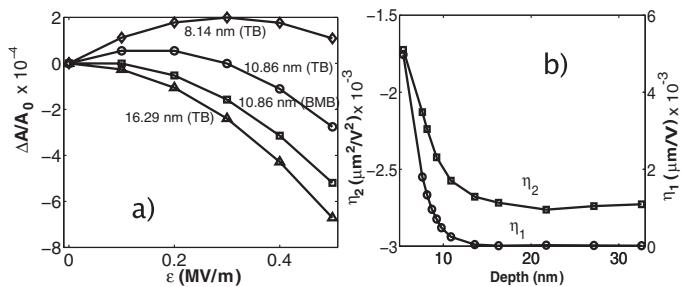</p>
<p>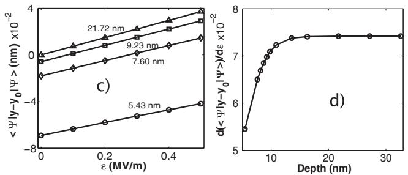<br/>
FIG. 13 Low-field Stark shift of the hyperfine interaction for momentum space diagonalization (BMB) and tight-binding (TB) methods. (a) Electric field response of hyperfine coupling at various donor depths (BMB and TB). (b) Quadratic (lefthand axis) and linear (right-hand axis) Stark coefficients as a function of donor depth (TB). (c) (TB). (d) The electric field gradient of the dipole moments [i.e.,Shift of the ground state electron distribution (dipole mothe slopes of the lines in (c)] with respect to depth (TB).ment) as a function of the electric field (TB). (d) The electric field gradient of the dipole moments as a function of donor Both methods described here are adepth (TB). From Rahman et al. (2007).</p>
<p>but the core corrections need to be adjusted to reflectconstruction and fidelity of two-qubit gates (e.g. such as correct experimental binding energies.the controlled-NOT) from this Hamiltonian (Fang et al., Figure 1 summarizes the effects of the electric field and2005; Fowler et al., 2003; Hill and Goan, 2003, 2004; Kerthe interface on the donor electron. The TB calculationsridge et al., 2006; Tsai et al., 2009; Tsai and Goan, 2008). use a domain of 32 nm  65 nm  32 nm zinc blendeFrom a microscopic physics viewpoint, in general the exlattice with 3:4change energy <span class="katex"><span class="katex-html" aria-hidden="true"><span class="base"><span class="strut" style="height:0.6833em;"></span><span class="mord mathnormal" style="margin-right:0.0962em;">J</span></span></span></span>  106 atoms. The distance between theis stronger than the dipole interaction impurity and the interface is varied parallel to the electricfor smaller separations, however it behaves as (Herring field. The BMB caand Flicker, 1964)</p>
<span class="katex-display"><span class="katex"><span class="katex-html" aria-hidden="true"><span class="base"><span class="strut" style="height:1em;vertical-align:-0.25em;"></span><span class="mord mathnormal" style="margin-right:0.0962em;">J</span><span class="mopen">(</span><span class="mord mathnormal" style="margin-right:0.0077em;">R</span><span class="mclose">)</span><span class="mspace" style="margin-right:0.2778em;"></span><span class="mrel">∼</span><span class="mspace" style="margin-right:0.2778em;"></span></span><span class="base"><span class="strut" style="height:1.188em;vertical-align:-0.25em;"></span><span class="mopen">(</span><span class="mord mathnormal" style="margin-right:0.0077em;">R</span><span class="mord">/</span><span class="mord"><span class="mord mathnormal">a</span><span class="msupsub"><span class="vlist-t"><span class="vlist-r"><span class="vlist" style="height:0.7387em;"><span style="top:-3.113em;margin-right:0.05em;"><span class="pstrut" style="height:2.7em;"></span><span class="sizing reset-size6 size3 mtight"><span class="mord mtight"><span class="mord mtight">∗</span></span></span></span></span></span></span></span></span><span class="mclose"><span class="mclose">)</span><span class="msupsub"><span class="vlist-t"><span class="vlist-r"><span class="vlist" style="height:0.938em;"><span style="top:-3.113em;margin-right:0.05em;"><span class="pstrut" style="height:2.7em;"></span><span class="sizing reset-size6 size3 mtight"><span class="mord mtight"><span class="mord mtight">5/2</span></span></span></span></span></span></span></span></span><span class="mspace" style="margin-right:0.1667em;"></span><span class="mop">exp</span><span class="mopen">(</span><span class="mord">−</span><span class="mord">2</span><span class="mord mathnormal" style="margin-right:0.0077em;">R</span><span class="mord">/</span><span class="mord"><span class="mord mathnormal">a</span><span class="msupsub"><span class="vlist-t"><span class="vlist-r"><span class="vlist" style="height:0.7387em;"><span style="top:-3.113em;margin-right:0.05em;"><span class="pstrut" style="height:2.7em;"></span><span class="sizing reset-size6 size3 mtight"><span class="mord mtight"><span class="mord mtight">∗</span></span></span></span></span></span></span></span></span><span class="mclose">)</span><span class="mpunct">,</span></span><span class="tag"><span class="strut" style="height:1.188em;vertical-align:-0.25em;"></span><span class="mord text"><span class="mord">(</span><span class="mord"><span class="mord">11</span></span><span class="mord">)</span></span></span></span></span></span>
<p>of comwhere <span class="katex"><span class="katex-html" aria-hidden="true"><span class="base"><span class="strut" style="height:0.6833em;"></span><span class="mord mathnormal" style="margin-right:0.0077em;">R</span></span></span></span> tation as it is sufficiently deep is the donor separation and <span class="katex"><span class="katex-html" aria-hidden="true"><span class="base"><span class="strut" style="height:0.6887em;"></span><span class="mord"><span class="mord mathnormal">a</span><span class="msupsub"><span class="vlist-t"><span class="vlist-r"><span class="vlist" style="height:0.6887em;"><span style="top:-3.063em;margin-right:0.05em;"><span class="pstrut" style="height:2.7em;"></span><span class="sizing reset-size6 size3 mtight"><span class="mord mtight"><span class="mord mtight">∗</span></span></span></span></span></span></span></span></span></span></span></span> nullify surfaceis the effective effects while not too deep to make the problem computa-Bohr radius of the electron wave function. The exchange tionally intractable. In TB, a range of depths from 5 tocoupling dominates over dipole coupling for donors that 32 nm have been considered. For each TB data point,are separated by less than approximately 20-30 nm.</p>
<p>pical computation times require about 7 hours onThe valley degeneracy of the silicon conduction band 20 CPUs [30]. Figure 1(a) shows the variation of -gives rise to a far more complicated dependance of <span class="katex"><span class="katex-html" aria-hidden="true"><span class="base"><span class="strut" style="height:0.6833em;"></span><span class="mord mathnormal" style="margin-right:0.0962em;">J</span></span></span></span> ”~on with electric field for various impurity depths. The data arethe donor separation (so-called “exchange oscillations”) fitted to the quadratic equation of (2). As the depth in-as noted in the early work of Cullis and Marko (Cullis creases, the quadratic coefficient -2 approaches a constantand Marko, 1970), and is particularly relevant in the value, while the linear coefficient -1 becomes negligibleKane quantum computer context (Koiller and Hu, 2005; [Fig. 1(b)]. For small impurity depths, -1 is comparable toKoiller et al., 2002a, 2003) (see Fig. 14). The effect -2, which results in a shift of the peak of the parabola inpersisted in effective mass treatments in which the ex-Fig. 1(a) towards a nonzero electric field. If the linear Starkchange integrals over Bloch states were carried out nueffect is negligible, an applied electric field has two effectsmerically (Koiller et al., 2004; Wellard et al., 2003). For on the ground state wave function: (i) a decrease in thesome time these “exchange oscillations” were seen as a peak amplitude of the wave function at the impurity site,fundamental limitation of donor based quantum computreflected by a decrease in A”~ in Fig. 1(a) for highering as it was thought that to achieve a given exchange</p>
<p>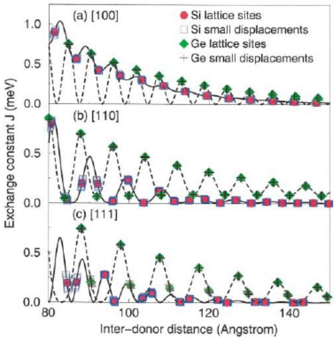<br/>
FIG. 14 (Color online) J-oscillations in the exchange coupling. Calculated exchange coupling between two phos-In effect, the interface behaves like an electric field pushingphorus donors in Si (solid lines) and Ge (dashed lines) along the donor electron away from it. The strength of this fieldhigh-symmetry directions for the diamond structure. Values increases as the impurity is placed closer to the interface.appropriate for impurities at substitutional sites are given by This means that a higher electric field directed away fromthe circles (Si) and diamonds (Ge). Off-lattice displacements the interface is needed to counteract these interface effectsby 10% of the nearest-neighbor distance lead to the perturbed and to restore the decreasing behavior of A”~, as demon-values indicated by the squares (Si) and crosses (Ge). Reproduced from Koiller et al. (2002a).</p>
<p>turbed impurity wave functions f0 g, where m indexescoupling the donors would have to be placed in the latincreasing binding energy (m  0 being the ground state).tice with lattice site precision (Koiller et al., 2002a), al-For an electric field given by q”y, the wave functionthough Koiller et al. (2002b) found that strain could be corrected to first order is expressed asused to lift the valley degeneracy and alleviate the problem to some extent. In these treatments the exchange 1 0 X X hm;ijyj0i 0coupling is calculated in the Heitler-London approxima-0 0  m0 i E00  E0m;i m;i tion (Calder´on et al., 2006a; Koiller et al., 2004) using effective mass wave functions containing a single Bloch where i is the degeneracy index for a state m. The dipolecomponent from each valley minimum, hence it is permoment D  q 0 y 0 is then given byhaps not surprising that the overlap integral results in an oscillatory behavior in the donor separation at the level of the lattice constant. When the exchange integral is computed using a more accurate wave function 00−5 including many such Bloch states to reproduce the ob-−1x|2served donor levels and valley splittings, the interference −2ψ(0,effect is somewhat smeared out (Wellard and Hollenberg, −3,r)|2 ε=0.5 MV/mε=1.0 MV/m2005) over the background Herring-Flicker dependence in −4 |ψequation 11 (see Fig. 15). Nonetheless, the issue remains −5that in fabricating donor devices there will be some level −5 0 5−6of imprecision in the donor atom placement and hence a variation in the (un-gated) value of <span class="katex"><span class="katex-html" aria-hidden="true"><span class="base"><span class="strut" style="height:0.6833em;"></span><span class="mord mathnormal" style="margin-right:0.0962em;">J</span></span></span></span> 0between donor pairs, however, using STM fabrication these errors might FIG. 2 (color online). (a) Electric field-inducedbe constrained to the single lattice site level.</p>
<p>0 0; z j2 shown as a 2D cut through the impurity center at z In any case, all components of a quantum computer 16:29 nm for ”  0:5 MV=m. The electric field is directed alongwill need some form of characterization. For all donor the negative y axis. (b) 1D cut though the center of the impurityqubit logic gates (single and two qubit), considerations parallel to the electric field showing the differential map of theof background noise sources and decoherence also need to probability density for two different electric fields.be taken into account, e.g. see Fowler et al. (2003); Hill</p>
<p>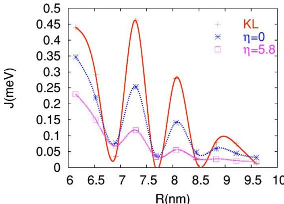<br/>
FIG. 15 (Color online) Smoothing out the exchange oscillations - the exchange coupling <span class="katex"><span class="katex-html" aria-hidden="true"><span class="base"><span class="strut" style="height:0.6833em;"></span><span class="mord mathnormal" style="margin-right:0.0962em;">J</span></span></span></span> as a function of donor separation along [110]. Top curve: Calculation using the effective-mass wave function. Middle curve: Calculation of <span class="katex"><span class="katex-html" aria-hidden="true"><span class="base"><span class="strut" style="height:0.6833em;"></span><span class="mord mathnormal" style="margin-right:0.0962em;">J</span></span></span></span> based on wave functions obtained using direct momentum diagonalization over a large basis of Bloch states (BMB) with no core-correction of the impurity potential <span class="katex"><span class="katex-html" aria-hidden="true"><span class="base"><span class="strut" style="height:0.625em;vertical-align:-0.1944em;"></span><span class="mord"><span class="mord mathnormal" style="margin-right:0.0359em;">η</span></span><span class="mspace" style="margin-right:0.2778em;"></span><span class="mrel">=</span><span class="mspace" style="margin-right:0.2778em;"></span></span><span class="base"><span class="strut" style="height:0.6444em;"></span><span class="mord">0</span></span></span></span> ). Bottom curve: BMB calculation of <span class="katex"><span class="katex-html" aria-hidden="true"><span class="base"><span class="strut" style="height:0.6833em;"></span><span class="mord mathnormal" style="margin-right:0.0962em;">J</span></span></span></span> with a corecorrection <span class="katex"><span class="katex-html" aria-hidden="true"><span class="base"><span class="strut" style="height:0.625em;vertical-align:-0.1944em;"></span><span class="mord mathnormal" style="margin-right:0.0359em;">η</span><span class="mspace" style="margin-right:0.2778em;"></span><span class="mrel">=</span><span class="mspace" style="margin-right:0.2778em;"></span></span><span class="base"><span class="strut" style="height:0.6444em;"></span><span class="mord">5.8</span></span></span></span> ) that reproduces the donor ground-state and valley-splitting. Note that the points refer to substitutional sites in the silicon matrix. Although the donor separations are relatively small in this case, the spatial variation of the exchange interaction appears to be significantly damped compared to the effective mass treatment. All <span class="katex"><span class="katex-html" aria-hidden="true"><span class="base"><span class="strut" style="height:0.6833em;"></span><span class="mord mathnormal" style="margin-right:0.0962em;">J</span></span></span></span> values are calculated in the Heitler-London approximation. Reproduced from Wellard and Hollenberg (2005).</p>
<p>and Goan (2003); Saikin and Fedichkin (2003); Wellard and Hollenberg (2001, 2002) (the decoherence of donor electron spins is covered in Section VI). Robust control techniques have been developed specifically for the eventuality of some level of variation in the exchange coupling (Hill, 2007), which in conjunction with gate characterization protocols (Cole et al., 2006; Devitt et al., 2006) have the potential to produce high fidelity two qubit gates in the Kane scheme (Testolin et al., 2005). Tsai et al. (2009) have applied control techniques to optimize the CNOT gate in the Kane scheme. A more serious impediment to employing the exchange interaction for quantum gates is the effect of charge noise (Hu and Das Sarma, 2006; Vorojtsov et al., 2004). Because the exchange interaction is ultimately derived from an overlap of electronic wave functions, variations in the background potential such as from charge noise in the device can affect the exchange coupling and may require further development of the materials design (Kane, 2005), and/or quantum control techniques.</p>
<p>The control of the exchange interaction <span class="katex"><span class="katex-html" aria-hidden="true"><span class="base"><span class="strut" style="height:0.6833em;"></span><span class="mord mathnormal" style="margin-right:0.0962em;">J</span></span></span></span> has also received considerable attention since the original Kane paper. Early calculations of the dependence of <span class="katex"><span class="katex-html" aria-hidden="true"><span class="base"><span class="strut" style="height:0.6833em;"></span><span class="mord mathnormal" style="margin-right:0.0962em;">J</span></span></span></span> on an external <span class="katex"><span class="katex-html" aria-hidden="true"><span class="base"><span class="strut" style="height:0.6833em;"></span><span class="mord mathnormal" style="margin-right:0.0962em;">J</span></span></span></span> -gate bias were carried out by Fang et al. (2002) using a Gaussian expansion (see Fig. 16). Subsequent calculations of the <span class="katex"><span class="katex-html" aria-hidden="true"><span class="base"><span class="strut" style="height:0.6833em;"></span><span class="mord mathnormal" style="margin-right:0.0962em;">J</span></span></span></span> -gate control in various approaches describing the two-electron physics were carried</p>
<p>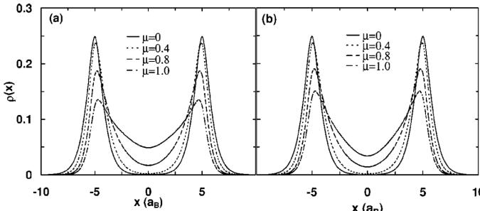<br/>
FIG. 16 Gate control of the two-donor system. Averaged charge distribution along the interdonor axis for various strengths of the <span class="katex"><span class="katex-html" aria-hidden="true"><span class="base"><span class="strut" style="height:0.6833em;"></span><span class="mord mathnormal" style="margin-right:0.0962em;">J</span></span></span></span> -gate potential (µ) for the singlet (a) and triplet (b) states (fixed donor separation at 10 <span class="katex"><span class="katex-html" aria-hidden="true"><span class="base"><span class="strut" style="height:0.5806em;vertical-align:-0.15em;"></span><span class="mord"><span class="mord mathnormal">a</span><span class="msupsub"><span class="vlist-t vlist-t2"><span class="vlist-r"><span class="vlist" style="height:0.3283em;"><span style="top:-2.55em;margin-left:0em;margin-right:0.05em;"><span class="pstrut" style="height:2.7em;"></span><span class="sizing reset-size6 size3 mtight"><span class="mord mtight"><span class="mord mathnormal mtight" style="margin-right:0.0502em;">B</span></span></span></span></span><span class="vlist-s">​</span></span><span class="vlist-r"><span class="vlist" style="height:0.15em;"><span></span></span></span></span></span></span></span></span></span> ). Reproduced from Fang et al. (2002).</p>
<p>out (Calder´on et al., 2007; Fang et al., 2005; Kettle et al., 2006, 2004; Wellard and Hollenberg, 2004) given further insight into the controllability of the exchange interaction. However, the gate modification of the overlap between electron states is a difficult calculation and most likely a full configuration interaction framework incorporating valley physics and Bloch structure is required to obtain quantitative results to compare with experiments once measurements are made. A related problem is the calculation of the two-electron donor state (D−), notoriously difficult in the case of a hydrogen ion in vacuum, but even more so when the non-trivial valley physics is added in to complicate such simple points of reference as Hund’s Rule. In the context of single donor quantum computing Fang et al. (2002) calculated the effect of electric fields on the <span class="katex"><span class="katex-html" aria-hidden="true"><span class="base"><span class="strut" style="height:0.7713em;"></span><span class="mord"><span class="mord mathnormal" style="margin-right:0.0278em;">D</span><span class="msupsub"><span class="vlist-t"><span class="vlist-r"><span class="vlist" style="height:0.7713em;"><span style="top:-3.063em;margin-right:0.05em;"><span class="pstrut" style="height:2.7em;"></span><span class="sizing reset-size6 size3 mtight"><span class="mord mtight"><span class="mord mtight">−</span></span></span></span></span></span></span></span></span></span></span></span> state, which was a key component of the spin-to-charge conversion read-out scheme of Kane. In Hollenberg et al. (2004) time-dependent calculations of the D0 D0 → D+ D <span class="katex"><span class="katex-html" aria-hidden="true"><span class="base"><span class="strut" style="height:0.7713em;"></span><span class="mord"><span></span><span class="msupsub"><span class="vlist-t"><span class="vlist-r"><span class="vlist" style="height:0.7713em;"><span style="top:-3.063em;margin-right:0.05em;"><span class="pstrut" style="height:2.7em;"></span><span class="sizing reset-size6 size3 mtight"><span class="mbin mtight">−</span></span></span></span></span></span></span></span></span></span></span> transition were undertaken in a proposal for resonant based spin-to-charge conversion. More recent calculations have focussed on the complication of valley physics in the <span class="katex"><span class="katex-html" aria-hidden="true"><span class="base"><span class="strut" style="height:0.7713em;"></span><span class="mord"><span class="mord mathrm">D</span><span class="msupsub"><span class="vlist-t"><span class="vlist-r"><span class="vlist" style="height:0.7713em;"><span style="top:-3.063em;margin-right:0.05em;"><span class="pstrut" style="height:2.7em;"></span><span class="sizing reset-size6 size3 mtight"><span class="mord mtight"><span class="mord mtight">−</span></span></span></span></span></span></span></span></span></span></span></span> bound states particularly under electric fields (Calder´on et al., 2010a; Rahman et al., 2011a), with some notable success in comparisons with recent experimental measurements (Fuechsle et al., 2012; Lansbergen et al., 2008).</p>
<h1 id="3-planar-donor-structures-delta-doped-layers-and-nanowires">3. Planar donor structures: delta-doped layers and nanowires<a role="anchor" aria-hidden="true" tabindex="-1" data-no-popover="true" href="#3-planar-donor-structures-delta-doped-layers-and-nanowires" class="internal internal-link"><svg width="18" height="18" viewBox="0 0 24 24" fill="none" stroke="currentColor" stroke-width="2" stroke-linecap="round" stroke-linejoin="round"><path d="M10 13a5 5 0 0 0 7.54.54l3-3a5 5 0 0 0-7.07-7.07l-1.72 1.71"></path><path d="M14 11a5 5 0 0 0-7.54-.54l-3 3a5 5 0 0 0 7.07 7.07l1.71-1.71"></path></svg></a></h1>
<p>The atom-by-atom fabrication of monolayer donor structures using STM techniques represents the stateof-the-art in precision silicon devices (see section V.B.3). From a theoretical point of view these structures present new challenges in order to describe not just their inherent physics (band structure, Fermi level, electronic extent, valley splitting, effect of disorder etc), but their use as in-plane gates in quantum electronic devices, including quantum computing. In understanding the physics of these highly doped monolayer systems ab-initio tech-</p>
<p>niques have been used to good effect. Paradoxically, abinitio techniques whilst being severely limited to relatively small numbers of atoms can handle planar systems with a high degree of symmetry, exploiting periodic boundary conditions of the supercell in the plane of the structure with sufficient silicon “cladding” vertically for convergence. The earliest calculations in this context were by Qian et al. (2005) for the infinite 2D planar (“delta-doped”) ordered layer using a Wannierbased Density Functional Theory (DFT) approach (see Fig. 17(a)). Carter et al. (2009) carried out an extensive DFT calculation of the same Si:P structures using a single zeta polarized basis providing a comprehensive picture of the band structure, effective potential, Fermi energy and electronic width as a function of planar doping density, finding converged results for cladding above 80 layers (see Fig. 17(b)). More recently the effect of disorder on the physics of the delta-doped layer has been investigated both in a DFT approach (Carter et al., 2011, 2009), and in a self-consistent tight-binding approach which can handle much larger supercell sizes and hence more accurately represent instances of disorder (Lee et al., 2011). These calculations indicate that the valley spitting of the sub-Fermi bands is quite sensitive to the degree of disorder and will play an important role in eventual device applications.</p>
<p>The question of convergence between methodologies still remains on important quantities such as valley splitting. Drumm et al. (2012a) have applied distinct DFT approaches based on localized and de-localized basis sets to calculate the properties of delta-doped layers. They obtain convergence in the description of the valley splitting and Fermi level only when the localized basis set is extended to the double zeta polarized level. The DFT calculations of the band structure have informed a selfconsistent effective mass description of Si:P monolayer structures (Drumm et al., 2012b), which has been effective in describing states observed in a STM fabricated 7-donor planar quantum dot (Fuechsle et al., 2010). The self-consistent tight-binding approach has also been employed beyond the delta-doped layer to describe recent STM fabricated devices. In Weber et al. (2012a) the electronic structure of Si:P monolayer wires only four atoms wide was calculated and gave results in terms of the number of conduction modes in good agreement with experiment. The most ambitious calculation to date was a simulation of the single-atom transistor (Fuechsle et al., 2012) where the same self-consistent tight-binding approach was used to determine the effective potential due to planar gates at the channel-donor site and subsequently coupled with a tight-binding description of the donor electronic levels. The agreement of the calculated <span class="katex"><span class="katex-html" aria-hidden="true"><span class="base"><span class="strut" style="height:0.8141em;"></span><span class="mord"><span class="mord mathrm">D</span><span class="msupsub"><span class="vlist-t"><span class="vlist-r"><span class="vlist" style="height:0.8141em;"><span style="top:-3.063em;margin-right:0.05em;"><span class="pstrut" style="height:2.7em;"></span><span class="sizing reset-size6 size3 mtight"><span class="mord mtight"><span class="mord mathrm mtight">0</span></span></span></span></span></span></span></span></span></span></span></span> and D <span class="katex"><span class="katex-html" aria-hidden="true"><span class="base"><span class="strut" style="height:0.6667em;vertical-align:-0.0833em;"></span><span class="mord">−</span></span></span></span> charge transitions with the measurements was indeed remarkable given the complexity of the device and is a strong indication that the theoretical description of donor based quantum electronic devices is well in hand.</p>
<p>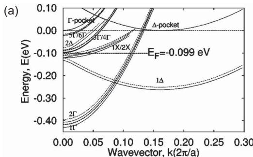</p>
<p>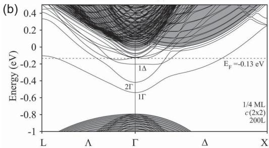<br/>
FIG. 17 Band structure of the 1/4 monolayer phosphorus <span class="katex"><span class="katex-html" aria-hidden="true"><span class="base"><span class="strut" style="height:0.6944em;"></span><span class="mord mathnormal" style="margin-right:0.0379em;">δ</span></span></span></span> -doped layer Top: (a) The calculation by Qian et al. (2005): the solid lines show the band structure without exchange-correlation and short-range effects, while the dotted lines show the band structure obtained in the full model. (b) The DFT calculation in a supercell with 200 cladding layers by Carter et al. (2009). The plane projected bulk band structure of Si is represented by the gray continuum. The Fermi level is indicated by a horizontal dashed line. Reproduced from Qian et al. (2005) and Carter et al. (2009).</p>
<h1 id="iv-quantum-dots-in-si-and-sige">IV. QUANTUM DOTS IN SI AND SIGE<a role="anchor" aria-hidden="true" tabindex="-1" data-no-popover="true" href="#iv-quantum-dots-in-si-and-sige" class="internal internal-link"><svg width="18" height="18" viewBox="0 0 24 24" fill="none" stroke="currentColor" stroke-width="2" stroke-linecap="round" stroke-linejoin="round"><path d="M10 13a5 5 0 0 0 7.54.54l3-3a5 5 0 0 0-7.07-7.07l-1.72 1.71"></path><path d="M14 11a5 5 0 0 0-7.54-.54l-3 3a5 5 0 0 0 7.07 7.07l1.71-1.71"></path></svg></a></h1>
<p>Quantum dots showing Coulomb blockade and displaying single-electron physics can be created in Si and SiGe in many different ways. In this section we first briefly review the early work aimed at the demonstration of Coulomb charging effects in Si and SiGe. An emphasis in this work was the quest to see Coulomb effects at as high a temperature as possible. We then discuss modern approaches to quantum dot fabrication. The application of charge sensing methods is shown to enable a wide range of experiments, including calibration of the absolute electron number, spin-state spectroscopy, and the measurement of spin filling as a function of electron number. We close this section with a discussion of both transport and charge sensing measurements in siliconbased double quantum dots.</p>
<h1 id="a-early-work-coulomb-blockade-in-silicon">A. Early work: Coulomb blockade in silicon<a role="anchor" aria-hidden="true" tabindex="-1" data-no-popover="true" href="#a-early-work-coulomb-blockade-in-silicon" class="internal internal-link"><svg width="18" height="18" viewBox="0 0 24 24" fill="none" stroke="currentColor" stroke-width="2" stroke-linecap="round" stroke-linejoin="round"><path d="M10 13a5 5 0 0 0 7.54.54l3-3a5 5 0 0 0-7.07-7.07l-1.72 1.71"></path><path d="M14 11a5 5 0 0 0-7.54-.54l-3 3a5 5 0 0 0 7.07 7.07l1.71-1.71"></path></svg></a></h1>
<p>In this section we discuss early experiments studying Coulomb blockade in Si devices. Additional background and details can be found in Ahmed (1997); Likharev (1999); Meirav and Foxman (1996); Ono et al. (2005); Takahashi et al. (2002); and Tilke et al. (2001).</p>
<p>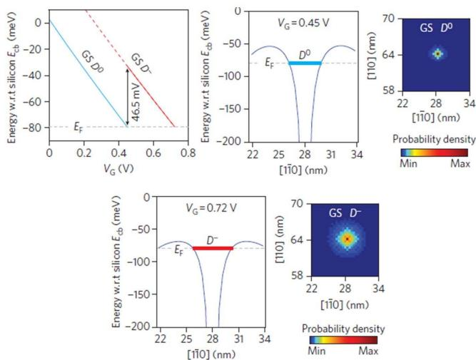<br/>
FIG. 18 (Color online) Calculated electronic spectrum of a single-atom transistor. Top left: Calculated energies of the <span class="katex"><span class="katex-html" aria-hidden="true"><span class="base"><span class="strut" style="height:0.8141em;"></span><span class="mord"><span class="mord mathnormal" style="margin-right:0.0278em;">D</span><span class="msupsub"><span class="vlist-t"><span class="vlist-r"><span class="vlist" style="height:0.8141em;"><span style="top:-3.063em;margin-right:0.05em;"><span class="pstrut" style="height:2.7em;"></span><span class="sizing reset-size6 size3 mtight"><span class="mord mtight"><span class="mord mtight">0</span></span></span></span></span></span></span></span></span></span></span></span> and <span class="katex"><span class="katex-html" aria-hidden="true"><span class="base"><span class="strut" style="height:0.7713em;"></span><span class="mord"><span class="mord mathnormal" style="margin-right:0.0278em;">D</span><span class="msupsub"><span class="vlist-t"><span class="vlist-r"><span class="vlist" style="height:0.7713em;"><span style="top:-3.063em;margin-right:0.05em;"><span class="pstrut" style="height:2.7em;"></span><span class="sizing reset-size6 size3 mtight"><span class="mord mtight"><span class="mord mtight">−</span></span></span></span></span></span></span></span></span></span></span></span> ground states (GS) as a function of the applied gate voltage <span class="katex"><span class="katex-html" aria-hidden="true"><span class="base"><span class="strut" style="height:0.8333em;vertical-align:-0.15em;"></span><span class="mord"><span class="mord mathnormal" style="margin-right:0.2222em;">V</span><span class="msupsub"><span class="vlist-t vlist-t2"><span class="vlist-r"><span class="vlist" style="height:0.3283em;"><span style="top:-2.55em;margin-left:-0.2222em;margin-right:0.05em;"><span class="pstrut" style="height:2.7em;"></span><span class="sizing reset-size6 size3 mtight"><span class="mord mtight"><span class="mord mathnormal mtight">G</span></span></span></span></span><span class="vlist-s">​</span></span><span class="vlist-r"><span class="vlist" style="height:0.15em;"><span></span></span></span></span></span></span></span></span></span> . The difference in the energy of these two ground states gives a charging energy of <span class="katex"><span class="katex-html" aria-hidden="true"><span class="base"><span class="strut" style="height:0.8333em;vertical-align:-0.15em;"></span><span class="mord"><span class="mord mathnormal" style="margin-right:0.0576em;">E</span><span class="msupsub"><span class="vlist-t vlist-t2"><span class="vlist-r"><span class="vlist" style="height:0.3283em;"><span style="top:-2.55em;margin-left:-0.0576em;margin-right:0.05em;"><span class="pstrut" style="height:2.7em;"></span><span class="sizing reset-size6 size3 mtight"><span class="mord mtight"><span class="mord mathnormal mtight" style="margin-right:0.0715em;">C</span></span></span></span></span><span class="vlist-s">​</span></span><span class="vlist-r"><span class="vlist" style="height:0.15em;"><span></span></span></span></span></span></span><span class="mspace" style="margin-right:0.2778em;"></span><span class="mrel">≈</span><span class="mspace" style="margin-right:0.2778em;"></span></span><span class="base"><span class="strut" style="height:0.6833em;"></span><span class="mord">46.5</span><span class="mspace nobreak"> </span><span class="mord"><span class="mord mathrm" style="margin-right:0.0139em;">meV</span></span></span></span></span> , which is in excellent agreement with the measurement in this device. Potential profiles between source and drain electrodes calculated for <span class="katex"><span class="katex-html" aria-hidden="true"><span class="base"><span class="strut" style="height:0.8333em;vertical-align:-0.15em;"></span><span class="mord"><span class="mord mathnormal" style="margin-right:0.2222em;">V</span><span class="msupsub"><span class="vlist-t vlist-t2"><span class="vlist-r"><span class="vlist" style="height:0.3283em;"><span style="top:-2.55em;margin-left:-0.2222em;margin-right:0.05em;"><span class="pstrut" style="height:2.7em;"></span><span class="sizing reset-size6 size3 mtight"><span class="mord mtight"><span class="mord mathnormal mtight">G</span></span></span></span></span><span class="vlist-s">​</span></span><span class="vlist-r"><span class="vlist" style="height:0.15em;"><span></span></span></span></span></span></span><span class="mspace" style="margin-right:0.2778em;"></span><span class="mrel">=</span><span class="mspace" style="margin-right:0.2778em;"></span></span><span class="base"><span class="strut" style="height:0.6833em;"></span><span class="mord">0.45</span><span class="mord"><span class="mspace nobreak"> </span><span class="mord mathrm" style="margin-right:0.0139em;">V</span><span class="mspace nobreak"> </span></span></span></span></span> (top middle) and 0.72 V (bottom left). The calculated orbital probability density of the ground state for the <span class="katex"><span class="katex-html" aria-hidden="true"><span class="base"><span class="strut" style="height:0.8141em;"></span><span class="mord"><span class="mord mathnormal" style="margin-right:0.0278em;">D</span><span class="msupsub"><span class="vlist-t"><span class="vlist-r"><span class="vlist" style="height:0.8141em;"><span style="top:-3.063em;margin-right:0.05em;"><span class="pstrut" style="height:2.7em;"></span><span class="sizing reset-size6 size3 mtight"><span class="mord mtight"><span class="mord mtight">0</span></span></span></span></span></span></span></span></span></span></span></span> potential (top right) is more localized around the donor than for the <span class="katex"><span class="katex-html" aria-hidden="true"><span class="base"><span class="strut" style="height:0.7713em;"></span><span class="mord"><span class="mord mathnormal" style="margin-right:0.0278em;">D</span><span class="msupsub"><span class="vlist-t"><span class="vlist-r"><span class="vlist" style="height:0.7713em;"><span style="top:-3.063em;margin-right:0.05em;"><span class="pstrut" style="height:2.7em;"></span><span class="sizing reset-size6 size3 mtight"><span class="mord mtight"><span class="mord mtight">−</span></span></span></span></span></span></span></span></span></span></span></span> potential (bottom right), which is screened by the bound electron. Reproduced from Fuechsle et al. (2012).</p>
<p>Experiments exploring intentional Coulomb blockade and transport through Si/SiO <span class="katex"><span class="katex-html" aria-hidden="true"><span class="base"><span class="strut" style="height:0.8141em;"></span><span class="mord"><span></span><span class="msupsub"><span class="vlist-t"><span class="vlist-r"><span class="vlist" style="height:0.8141em;"><span style="top:-3.063em;margin-right:0.05em;"><span class="pstrut" style="height:2.7em;"></span><span class="sizing reset-size6 size3 mtight"><span class="mord mtight">2</span></span></span></span></span></span></span></span></span></span></span> and Si/SiGe quantum dots dates to the early 1990s, shortly after the discovery of Coulomb blockade (Field et al., 1990; Fulton and Dolan, 1987; Meirav et al., 1990; Scott-Thomas et al., 1989). The primary requirements for the observation of Coulomb blockade are to isolate a small island while maintaining a weak but nonzero tunnel coupling to the leads. The addition of one or more gates to control the charge on the dot is essential for more complicated experiments.</p>
<p>Coulomb blockade was achieved very early in structures formed by etching delta-doped SiGe or doped silicon-on-insulator (SOI) structures (Ali and Ahmed, 1994; Paul et al., 1993). Ali and Ahmed (1994) made use of two separate lithography and etching steps to modulate the thickness of a patterned silicon-on-insulator layer, resulting in a weakly coupled island between two leads. Coulomb blockade, which was observed in measurements of current versus source-drain voltage that showed a Coulomb gap, persisted up to <span class="katex"><span class="katex-html" aria-hidden="true"><span class="base"><span class="strut" style="height:0.6833em;"></span><span class="mord mathnormal" style="margin-right:0.1389em;">T</span><span class="mspace" style="margin-right:0.2778em;"></span><span class="mrel">=</span><span class="mspace" style="margin-right:0.2778em;"></span></span><span class="base"><span class="strut" style="height:0.6444em;"></span><span class="mord">3.8</span></span></span></span> K. The Coulomb gap could be modulated by an integrated side gate. In this type of highly-doped SOI structure, current in the doped leads was three-dimensional, as the mean free path was smaller than the lead thickness.</p>
<p>Silicon nanowires formed in SOI can be transformed</p>
<p>into a quantum dot by pattern-dependent oxidation (PA-DOX), a process that makes use of the dependence of oxidation in silicon on the exposed surface area and strain (Takahashi et al., 1994, 1995). One of the features of this process is that very small quantum dots can be formed, enabling measurement of Coulomb oscillations at high temperatures, with a demonstration of some modulation persisting to room temperature as early as 1994 (Takahashi et al., 1994). Fujiwara and co-workers studied the few-electron regime in similar devices using photoexcitation techniques (Fujiwara et al., 1997). Electron beam lithography can be used to help control the shape of small silicon dots that show Coulomb effects at temperature above 100 K (Leobandung et al., 1995).Very narrow triangular cross-section wires also can be formed by anisotropic etching on SIMOX, resulting in Coulomb effects at room temperature from disorder-induced dots along the length of each wire (Ishikuro et al., 1996).</p>
<p>Coulomb blockade can in fact be observed in devices that are similar to production FETs, provided a small island of electrons can be isolated in the device. Isolation of such an island of electrons can be accomplished by the use of a gate that does not overlap the source and drain, leading to Coulomb blockade in CMOS devices (Boeuf et al., 2003). This approach has culminated very recently in a single-electron transistor operating at room temperature (Shin et al., 2010, 2011a).</p>
<p>In 1994 Matsuoka and co-workers proposed using “twostory gates” to create single-electron devices (Matsuoka et al., 1994). A single gate was used to form an inversion layer for transport, and an upper gate was reverse-biased to generate barriers and define a quantum dot (Matsuoka and Kimura, 1995). While this structure has only a single gate to control the tunnel barriers and differs in significant ways from later work, it anticipates the use of two layers of gates that would be used more than a decade later for experiments on spin blockade, spin measurement, and spin manipulation (see Sections IV.F.2 and VI).</p>
<h1 id="b-single-quantum-dots">B. Single quantum dots<a role="anchor" aria-hidden="true" tabindex="-1" data-no-popover="true" href="#b-single-quantum-dots" class="internal internal-link"><svg width="18" height="18" viewBox="0 0 24 24" fill="none" stroke="currentColor" stroke-width="2" stroke-linecap="round" stroke-linejoin="round"><path d="M10 13a5 5 0 0 0 7.54.54l3-3a5 5 0 0 0-7.07-7.07l-1.72 1.71"></path><path d="M14 11a5 5 0 0 0-7.54-.54l-3 3a5 5 0 0 0 7.07 7.07l1.71-1.71"></path></svg></a></h1>
<p>This section assesses the experimental analogues of the quantum dot concepts different in silicon nanostructures as explained in section II.A.</p>
<h1 id="1-self-assembled-nanocrystals">1. Self-assembled nanocrystals<a role="anchor" aria-hidden="true" tabindex="-1" data-no-popover="true" href="#1-self-assembled-nanocrystals" class="internal internal-link"><svg width="18" height="18" viewBox="0 0 24 24" fill="none" stroke="currentColor" stroke-width="2" stroke-linecap="round" stroke-linejoin="round"><path d="M10 13a5 5 0 0 0 7.54.54l3-3a5 5 0 0 0-7.07-7.07l-1.72 1.71"></path><path d="M14 11a5 5 0 0 0-7.54-.54l-3 3a5 5 0 0 0 7.07 7.07l1.71-1.71"></path></svg></a></h1>
<p>The material dimensions of nanocrystals can easily be made as small as <span class="katex"><span class="katex-html" aria-hidden="true"><span class="base"><span class="strut" style="height:0.6444em;"></span><span class="mord">10</span><span class="mspace"> </span><span class="mord"><span class="mord mathrm">nm</span></span></span></span></span> , resulting in large and thus easily observable level splittings, even at room temperature (Otobe et al., 1998). On the other hand, those dimensions make electron transport measurements cumbersome because the crystals are not easily connected</p>
<p>to source and drain reservoirs. Self-assembled silicon nanocrystals with diameters varying from 3-12 nm have been grown by chemical vapor deposition techniques (Baron et al., 2000; Steimle et al., 2007). Coulomb oscillations have been observed by electrostatic trapping between Al source and drain electrodes (Dutta et al., 2000). Zaknoon et al. (2008) showed charging energies of ∼ 50 meV using scanning tunneling spectroscopy. Twelve resonances in the conductance versus bias voltage were attributed to the twelve-fold conduction band degeneracy owing to spin and the six-fold valley degeneracy as described in section III.A.</p>
<p>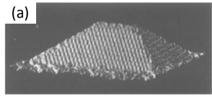</p>
<p>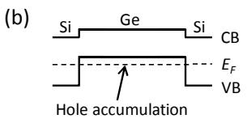</p>
<p>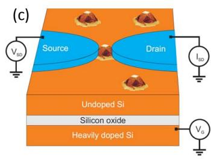</p>
<p>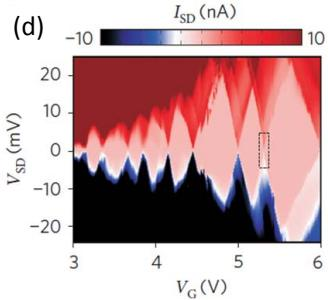<br/>
FIG. 19 (Color online) Self-assembled nanocrystals. (a), STM image of a Ge/Si(001) cluster with a height of 2.8 nm. Scan area is <span class="katex"><span class="katex-html" aria-hidden="true"><span class="base"><span class="strut" style="height:0.7278em;vertical-align:-0.0833em;"></span><span class="mord">40</span><span class="mspace" style="margin-right:0.2222em;"></span><span class="mbin">×</span><span class="mspace" style="margin-right:0.2222em;"></span></span><span class="base"><span class="strut" style="height:0.6444em;"></span><span class="mord">40</span></span></span></span> nm, from (Mo et al., 1990). (b), Band diagram for a Si/Ge/Si heterostructure, showing the accumulation of holes owing to the valence band offset between Ge and Si. (c), Schematic of a quantum-dot device obtained by contacting a single SiGe nanocrystal to aluminum source/drain electrodes. The heavily doped substrate is used as a backgate for the measurements in (d) where <span class="katex"><span class="katex-html" aria-hidden="true"><span class="base"><span class="strut" style="height:0.8333em;vertical-align:-0.15em;"></span><span class="mord"><span class="mord mathnormal" style="margin-right:0.0785em;">I</span><span class="msupsub"><span class="vlist-t vlist-t2"><span class="vlist-r"><span class="vlist" style="height:0.3283em;"><span style="top:-2.55em;margin-left:-0.0785em;margin-right:0.05em;"><span class="pstrut" style="height:2.7em;"></span><span class="sizing reset-size6 size3 mtight"><span class="mord mtight"><span class="mord mtight"><span class="mord mathrm mtight">SD</span></span></span></span></span></span><span class="vlist-s">​</span></span><span class="vlist-r"><span class="vlist" style="height:0.15em;"><span></span></span></span></span></span></span></span></span></span> is plotted as a function of <span class="katex"><span class="katex-html" aria-hidden="true"><span class="base"><span class="strut" style="height:0.8333em;vertical-align:-0.15em;"></span><span class="mord"><span class="mord mathnormal" style="margin-right:0.2222em;">V</span><span class="msupsub"><span class="vlist-t vlist-t2"><span class="vlist-r"><span class="vlist" style="height:0.3283em;"><span style="top:-2.55em;margin-left:-0.2222em;margin-right:0.05em;"><span class="pstrut" style="height:2.7em;"></span><span class="sizing reset-size6 size3 mtight"><span class="mord mtight"><span class="mord mathrm mtight">G</span></span></span></span></span><span class="vlist-s">​</span></span><span class="vlist-r"><span class="vlist" style="height:0.15em;"><span></span></span></span></span></span></span></span></span></span> and <span class="katex"><span class="katex-html" aria-hidden="true"><span class="base"><span class="strut" style="height:0.8333em;vertical-align:-0.15em;"></span><span class="mord"><span class="mord mathnormal" style="margin-right:0.2222em;">V</span><span class="msupsub"><span class="vlist-t vlist-t2"><span class="vlist-r"><span class="vlist" style="height:0.3283em;"><span style="top:-2.55em;margin-left:-0.2222em;margin-right:0.05em;"><span class="pstrut" style="height:2.7em;"></span><span class="sizing reset-size6 size3 mtight"><span class="mord mtight"><span class="mord mtight"><span class="mord mathrm mtight">SD</span></span></span></span></span></span><span class="vlist-s">​</span></span><span class="vlist-r"><span class="vlist" style="height:0.15em;"><span></span></span></span></span></span></span></span></span></span> . (c,d) from Katsaros et al. (2010).</p>
<p>Small Ge islands can be grown on Si(001) via Stranski-Krastanov growth resulting in huts, pyramids and domes with heights of 5-70 nm and lateral dimensions varying from 20-80 nm (Eaglesham and Cerullo, 1990; Katsaros et al., 2008; Medeiros-Ribeiro et al., 1998; Mo et al., 1990; Ross et al., 1999; Stangl et al., 2004), see Fig. 19(a). The group of De Franceschi in Grenoble made Al contacts to Ge domes with an additional 2 nm Si capping layer (Katsaros et al., 2011, 2010), see Fig. 19. In this configuration the SiGe nanocrystal acts as a confining potential for holes due to the valence band offset between Ge and Si at the heterostructure interface (Sch¨affler, 1997; Van de Walle and Martin, 1986). Free holes will accumulate in the Ge when the Fermi level lies below the valence band edge of the Ge center, see Fig. 19(b). Electron transport measurements at 15 mK show Coulomb diamonds with charging energies varying from few to 20 meV as 8 holes leave the quantum dot.</p>
<p>Due to the limited tunability reaching the few-charge regime in self-assembled nanocrystals will be a great challenge.</p>
<h1 id="2-bottom-up-grown-nanowires">2. Bottom-up grown nanowires<a role="anchor" aria-hidden="true" tabindex="-1" data-no-popover="true" href="#2-bottom-up-grown-nanowires" class="internal internal-link"><svg width="18" height="18" viewBox="0 0 24 24" fill="none" stroke="currentColor" stroke-width="2" stroke-linecap="round" stroke-linejoin="round"><path d="M10 13a5 5 0 0 0 7.54.54l3-3a5 5 0 0 0-7.07-7.07l-1.72 1.71"></path><path d="M14 11a5 5 0 0 0-7.54-.54l-3 3a5 5 0 0 0 7.07 7.07l1.71-1.71"></path></svg></a></h1>
<p>Bottom-up grown nanowires are generally synthesized by means of a vapor-liquid-solid process (Wagner and Ellis, 1964), allowing for growth of single-crystal Si and Ge nanowires (Morales and Lieber, 1998) with diameters varying from 3-100 nm and lengths up to tens of microns, Si Si CBsee Fig. 20(a,b). Both n-type and p-type dopants have been incorporated, and their location depends on the di-VBameter (Xie et al., 2009). The doping can be varied dur-Holesing growth: such modulation doping has been used to intersect heavily-doped n-Si regions with two short lightlydoped regions, resulting in single-electron tunneling at 1.5 K (Yang et al., 2005). Within one nanowire heterostructures of different materials can be created both radially and axially, such as core/shell Ge/Si nanowires (Lauhon et al., 2002). In the latter case the valence band offset will induce hole population in the Ge core, see Fig. 19(b).</p>
<p>When metallic contacts are made to nanowires the Schottky tunnel barriers can define the quantum dot length as shown in core/shell Ge/Si nanowires (Lu et al., 2005) and Si nanowires (Zhong et al., 2005), see Fig. 20(c). The Si nanowire quantum dot length can be shortened by silicidation transforming the device into e.g. a NiSi-Si-NiSi nanowire as shown in Fig. 20(d) (Mongillo et al., 2011; Weber et al., 2006; Zwanenburg et al., 2009a).</p>
<p>After the demonstration of Coulomb blockade oscillations in Ge/Si nanowires by the Lieber group from Harvard (Lu et al., 2005), they joined forces with the Marcus group and created double quantum dots with tuneable tunnel barriers, see Section IV.F. Here the source and drain contacts were ohmic, while the tunnel barrier were defined by local top gates (Hu et al., 2007). Roddaro et al. (2008) used the same configuration to create single quantum dots and probe the hole spin states, see section IV.E. Ge/Si nanowires were found to have a strong spin-orbit interaction, which can be tuned by means of an electric field (Hao et al., 2010). Recent spin lifetime measurements (Hu et al., 2011) indicate spin-orbit interaction as the dominant mechanism for spin relaxation. According to the work by Kloeffel et al. (2011), the unusually strong spin-orbit coupling makes them particularly attractive candidates for quantum information processing via electric-dipole induce spin resonance (Golovach et al., 2006; Nadj-Perge et al., 2010; Nowack et al., 2007), and for research on Majorana fermions (Majorana, 1937).</p>
<p>Very recently, Ge/Si nanowires with a triangular cross section and a height of just three unit cells were realized</p>
<p>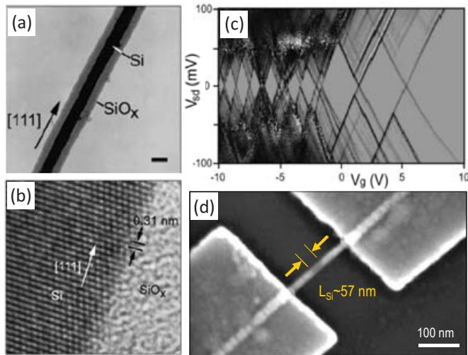<br/>
FIG. 20 (Color online) Bottom-up grown nanowires. (a), TEM image of a Si nanowire; crystalline material (the Si core) appears darker than amorphous material ( <span class="katex"><span class="katex-html" aria-hidden="true"><span class="base"><span class="strut" style="height:0.8333em;vertical-align:-0.15em;"></span><span class="mord"><span class="mord"><span class="mord mathrm">SiO</span></span><span class="msupsub"><span class="vlist-t vlist-t2"><span class="vlist-r"><span class="vlist" style="height:0.1514em;"><span style="top:-2.55em;margin-right:0.05em;"><span class="pstrut" style="height:2.7em;"></span><span class="sizing reset-size6 size3 mtight"><span class="mord mtight"><span class="mord mathnormal mtight">x</span></span></span></span></span><span class="vlist-s">​</span></span><span class="vlist-r"><span class="vlist" style="height:0.15em;"><span></span></span></span></span></span></span></span></span></span> sheath) in this imaging mode. Scale bar, <span class="katex"><span class="katex-html" aria-hidden="true"><span class="base"><span class="strut" style="height:0.6444em;"></span><span class="mord">10</span><span class="mspace nobreak"> </span><span class="mord"><span class="mord mathrm">nm</span></span></span></span></span> . (b) High-resolution TEM image of the crystalline Si core and amorphous <span class="katex"><span class="katex-html" aria-hidden="true"><span class="base"><span class="strut" style="height:0.8333em;vertical-align:-0.15em;"></span><span class="mord"><span class="mord"><span class="mord mathrm">SiO</span></span><span class="msupsub"><span class="vlist-t vlist-t2"><span class="vlist-r"><span class="vlist" style="height:0.1514em;"><span style="top:-2.55em;margin-right:0.05em;"><span class="pstrut" style="height:2.7em;"></span><span class="sizing reset-size6 size3 mtight"><span class="mord mtight"><span class="mord mathnormal mtight">x</span></span></span></span></span><span class="vlist-s">​</span></span><span class="vlist-r"><span class="vlist" style="height:0.15em;"><span></span></span></span></span></span></span></span></span></span> sheath. The (111) planes (black arrows) are oriented perpendicular to the growth direction (white arrow). (a) and (b) adapted from Morales and Lieber (1998). (c) Stability diagram of a p-Si nanowire quantum dot, from Zhong et al. (2005) (d) SEM image of a nanowire quantum dot with NiSi Schottky contacts, taken from Zwanenburg et al. (2009a).</p>
<p>by molecular beam epitaxy (Zhang et al., 2012). These wires are directly grown on planar Si without the use of any catalyst, and preliminary low-temperature measurements show Coulomb blockade.</p>
<h1 id="3-electrostatically-gated-sisige-quantum-dots">3. Electrostatically Gated Si/SiGe quantum dots<a role="anchor" aria-hidden="true" tabindex="-1" data-no-popover="true" href="#3-electrostatically-gated-sisige-quantum-dots" class="internal internal-link"><svg width="18" height="18" viewBox="0 0 24 24" fill="none" stroke="currentColor" stroke-width="2" stroke-linecap="round" stroke-linejoin="round"><path d="M10 13a5 5 0 0 0 7.54.54l3-3a5 5 0 0 0-7.07-7.07l-1.72 1.71"></path><path d="M14 11a5 5 0 0 0-7.54-.54l-3 3a5 5 0 0 0 7.07 7.07l1.71-1.71"></path></svg></a></h1>
<p>A powerful way to achieve tunability of tunnel couplings in quantum dots is to provide confinement in one or more directions through the use of electrostatic gates. Using Si/SiGe heterostructures or MOS structures, it is possible to form high-quality two-dimensional electron systems that can be partitioned into tunable quantum dots using depletion or accumulation gates, a procedure described in detail in this section and the next. In general, at least direction of confinement must be provided by a non-electrostatic method; usually a materials interface is used, the two most common being the interface between single-crystal silicon and its amorphous oxide (in MOS structures, see next section), and the epitaxial interface between single-crystal Si and Si <span class="katex"><span class="katex-html" aria-hidden="true"><span class="base"><span class="strut" style="height:0.5094em;vertical-align:-0.2083em;"></span><span class="mord"><span></span><span class="msupsub"><span class="vlist-t vlist-t2"><span class="vlist-r"><span class="vlist" style="height:0.3011em;"><span style="top:-2.55em;margin-right:0.05em;"><span class="pstrut" style="height:2.7em;"></span><span class="sizing reset-size6 size3 mtight"><span class="mord mtight"><span class="mord mtight">1</span><span class="mbin mtight">−</span><span class="mord mathnormal mtight">x</span></span></span></span></span><span class="vlist-s">​</span></span><span class="vlist-r"><span class="vlist" style="height:0.2083em;"><span></span></span></span></span></span></span></span></span></span> Ge <span class="katex"><span class="katex-html" aria-hidden="true"><span class="base"><span class="strut" style="height:0.3014em;vertical-align:-0.15em;"></span><span class="mord"><span></span><span class="msupsub"><span class="vlist-t vlist-t2"><span class="vlist-r"><span class="vlist" style="height:0.1514em;"><span style="top:-2.55em;margin-right:0.05em;"><span class="pstrut" style="height:2.7em;"></span><span class="sizing reset-size6 size3 mtight"><span class="mord mathnormal mtight">x</span></span></span></span><span class="vlist-s">​</span></span><span class="vlist-r"><span class="vlist" style="height:0.15em;"><span></span></span></span></span></span></span></span></span></span> . When the precise composition <span class="katex"><span class="katex-html" aria-hidden="true"><span class="base"><span class="strut" style="height:0.4306em;"></span><span class="mord mathnormal">x</span></span></span></span> is unimportant and no confusion will arise, we refer to these heterostructures as Si/SiGe. Both MOS devices and Si/SiGe devices have been reviewed extensively: see, for example, (Sze and Ng, 1981; Wolf, 1990) for the former, and (Mooney, 1996; Sch¨affler, 1997) for the latter.</p>
<p>A convenient, if incomplete, figure of merit for twodimensional electron systems is the mobility <span class="katex"><span class="katex-html" aria-hidden="true"><span class="base"><span class="strut" style="height:0.625em;vertical-align:-0.1944em;"></span><span class="mord mathnormal">μ</span></span></span></span> . For Si MOS, mobilities in the range <span class="katex"><span class="katex-html" aria-hidden="true"><span class="base"><span class="strut" style="height:0.8389em;vertical-align:-0.1944em;"></span><span class="mord">5</span><span class="mpunct">,</span><span class="mspace" style="margin-right:0.1667em;"></span><span class="mord">000</span><span class="mspace" style="margin-right:0.2222em;"></span><span class="mbin">−</span><span class="mspace" style="margin-right:0.2222em;"></span></span><span class="base"><span class="strut" style="height:1.0641em;vertical-align:-0.25em;"></span><span class="mord">15</span><span class="mpunct">,</span><span class="mspace" style="margin-right:0.1667em;"></span><span class="mord">000</span><span class="mspace nobreak"> </span><span class="mord"><span class="mord mathrm">c</span><span class="mord"><span class="mord mathrm">m</span><span class="msupsub"><span class="vlist-t"><span class="vlist-r"><span class="vlist" style="height:0.8141em;"><span style="top:-3.063em;margin-right:0.05em;"><span class="pstrut" style="height:2.7em;"></span><span class="sizing reset-size6 size3 mtight"><span class="mord mtight"><span class="mord mathrm mtight">2</span></span></span></span></span></span></span></span></span><span class="mord mathrm">/Vs</span></span></span></span></span> are quite good (see e.g. Eng et al. (2005, 2007)), and mobilities in excess of 40,000 have been reported (Kravchenko and Sarachik, 2004). The low-temperature mobility in Si/SiGe two-dimensional electron gases is not limited by defects at the interface and has been improving rapidly in recent years. In 1995, Ismail and coworkers reported a low-temperature mobility of 520, 000 cm2/Vs in a modulation doped Si/SiGe heterostructure. Even higher mobility 800, 000 cm2/Vs was reported by a group from Hitachi in 1998 (Sugii et al., 1998). Very recently, Si/SiGe two-dimensional electron systems have been formed using undoped structures with a positively-biased accumulation gate. In this approach, an intervening oxide such as Al2O3 (Lai et al., 2005) is used to separate the accumulation gate from the semiconductor surface to avoid injecting current into the heterostructure (Lu et al., 2007). The positively biased accumulation gate removes the need for any doping in the structure, removing a source of background impurities and eliminating the modulation doping layer altogether, both of which cause scattering. Resulting mobilities as high as <span class="katex"><span class="katex-html" aria-hidden="true"><span class="base"><span class="strut" style="height:0.625em;vertical-align:-0.1944em;"></span><span class="mord mathnormal">μ</span><span class="mspace" style="margin-right:0.2778em;"></span><span class="mrel">=</span><span class="mspace" style="margin-right:0.2778em;"></span></span><span class="base"><span class="strut" style="height:0.7278em;vertical-align:-0.0833em;"></span><span class="mord">1.6</span><span class="mspace" style="margin-right:0.2222em;"></span><span class="mbin">×</span><span class="mspace" style="margin-right:0.2222em;"></span></span><span class="base"><span class="strut" style="height:1.0641em;vertical-align:-0.25em;"></span><span class="mord">1</span><span class="mord"><span class="mord">0</span><span class="msupsub"><span class="vlist-t"><span class="vlist-r"><span class="vlist" style="height:0.8141em;"><span style="top:-3.063em;margin-right:0.05em;"><span class="pstrut" style="height:2.7em;"></span><span class="sizing reset-size6 size3 mtight"><span class="mord mtight"><span class="mord mtight">6</span></span></span></span></span></span></span></span></span><span class="mspace nobreak"> </span><span class="mord"><span class="mord mathrm">c</span><span class="mord"><span class="mord mathrm">m</span><span class="msupsub"><span class="vlist-t"><span class="vlist-r"><span class="vlist" style="height:0.8141em;"><span style="top:-3.063em;margin-right:0.05em;"><span class="pstrut" style="height:2.7em;"></span><span class="sizing reset-size6 size3 mtight"><span class="mord mtight"><span class="mord mathrm mtight">2</span></span></span></span></span></span></span></span></span><span class="mord mathrm">/Vs</span></span></span></span></span> have been reported (Lu et al., 2009). Further, the removal of intentional doping appears to significantly reduce lowfrequency charge noise in the devices.</p>
<p>Because both Si and Ge have isotopes with zero nuclear spin, the proposal by Loss and DiVincenzo to use quantum dots as hosts for semiconductor spin qubits (Loss and DiVincenzo, 1998) led to great interest in the development of high-quality quantum dots in Si/SiGe heterostructures (Friesen et al., 2003; Vrijen et al., 2000). The challenge in the early work in this field was to find ways to fabricate such dots with low-leakage gates, sufficient tunability, and in such a way as to yield stable, lownoise devices. As we discuss later in this review, modern Si/SiGe quantum dots have achieved performance that rivals that of any materials system available. In this section we discuss the materials and device research that enabled this advance.</p>
<p>Here we discuss a few critical materials issues relevant to Si/SiGe heterostructures. Interest in Si/SiGe arises because of the inevitability of defects at the interface between crystalline Si and its amorphous oxide. Heterostructures formed from Si and Si <span class="katex"><span class="katex-html" aria-hidden="true"><span class="base"><span class="strut" style="height:0.5094em;vertical-align:-0.2083em;"></span><span class="mord"><span></span><span class="msupsub"><span class="vlist-t vlist-t2"><span class="vlist-r"><span class="vlist" style="height:0.3011em;"><span style="top:-2.55em;margin-right:0.05em;"><span class="pstrut" style="height:2.7em;"></span><span class="sizing reset-size6 size3 mtight"><span class="mord mtight"><span class="mord mtight">1</span><span class="mbin mtight">−</span><span class="mord mathnormal mtight">x</span></span></span></span></span><span class="vlist-s">​</span></span><span class="vlist-r"><span class="vlist" style="height:0.2083em;"><span></span></span></span></span></span></span></span></span></span> Ge <span class="katex"><span class="katex-html" aria-hidden="true"><span class="base"><span class="strut" style="height:0.3014em;vertical-align:-0.15em;"></span><span class="mord"><span></span><span class="msupsub"><span class="vlist-t vlist-t2"><span class="vlist-r"><span class="vlist" style="height:0.1514em;"><span style="top:-2.55em;margin-right:0.05em;"><span class="pstrut" style="height:2.7em;"></span><span class="sizing reset-size6 size3 mtight"><span class="mord mathnormal mtight">x</span></span></span></span><span class="vlist-s">​</span></span><span class="vlist-r"><span class="vlist" style="height:0.15em;"><span></span></span></span></span></span></span></span></span></span> offer a natural alternative with, in principle, no interfacial traps (although other types of disorder, such as atomic steps and strain variation are certainly present).</p>
<p>Although both Ge and Si have the diamond structure, Ge sits one row beneath Si in Group IV of the periodic table, so that the lattice constant of Si1−xGex increases as <span class="katex"><span class="katex-html" aria-hidden="true"><span class="base"><span class="strut" style="height:0.4306em;"></span><span class="mord mathnormal">x</span></span></span></span> increases, achieving a mismatch between pure Si and Ge of approximately 4.17% (Sch¨affler, 1997). Because of this mismatch, pure Ge will grow epitaxially only three monolayers on Si (REF). Beyond this critical thickness,</p>
<p>self-assembled quantum dots or “huts” form (Mo et al., 1990), as discussed in Sec. IV.B.1, preventing the growth of uniform quantum wells.</p>
<p>Because the lattice constant of Si <span class="katex"><span class="katex-html" aria-hidden="true"><span class="base"><span class="strut" style="height:0.5094em;vertical-align:-0.2083em;"></span><span class="mord"><span></span><span class="msupsub"><span class="vlist-t vlist-t2"><span class="vlist-r"><span class="vlist" style="height:0.3011em;"><span style="top:-2.55em;margin-right:0.05em;"><span class="pstrut" style="height:2.7em;"></span><span class="sizing reset-size6 size3 mtight"><span class="mord mtight"><span class="mord mtight">1</span><span class="mbin mtight">−</span><span class="mord mathnormal mtight">x</span></span></span></span></span><span class="vlist-s">​</span></span><span class="vlist-r"><span class="vlist" style="height:0.2083em;"><span></span></span></span></span></span></span></span></span></span> Ge <span class="katex"><span class="katex-html" aria-hidden="true"><span class="base"><span class="strut" style="height:0.3014em;vertical-align:-0.15em;"></span><span class="mord"><span></span><span class="msupsub"><span class="vlist-t vlist-t2"><span class="vlist-r"><span class="vlist" style="height:0.1514em;"><span style="top:-2.55em;margin-right:0.05em;"><span class="pstrut" style="height:2.7em;"></span><span class="sizing reset-size6 size3 mtight"><span class="mord mathnormal mtight">x</span></span></span></span><span class="vlist-s">​</span></span><span class="vlist-r"><span class="vlist" style="height:0.15em;"><span></span></span></span></span></span></span></span></span></span> depends on <span class="katex"><span class="katex-html" aria-hidden="true"><span class="base"><span class="strut" style="height:0.4306em;"></span><span class="mord mathnormal">x</span></span></span></span> , a full description of a heterostructure of these two materials must include the strain of the various layers. For the structures considered here, the layers of interest typically include a Si quantum well with S <span class="katex"><span class="katex-html" aria-hidden="true"><span class="base"><span class="strut" style="height:0.5444em;vertical-align:-0.2083em;"></span><span class="mord"><span></span><span class="msupsub"><span class="vlist-t vlist-t2"><span class="vlist-r"><span class="vlist" style="height:0.3361em;"><span style="top:-2.55em;margin-right:0.05em;"><span class="pstrut" style="height:2.7em;"></span><span class="sizing reset-size6 size3 mtight"><span class="mord mtight"><span class="mrel mtight">⊥</span><span class="mord mtight">−</span><span class="mord mathnormal mtight">x</span></span></span></span></span><span class="vlist-s">​</span></span><span class="vlist-r"><span class="vlist" style="height:0.2083em;"><span></span></span></span></span></span></span></span></span></span> Ge <span class="katex"><span class="katex-html" aria-hidden="true"><span class="base"><span class="strut" style="height:0.3014em;vertical-align:-0.15em;"></span><span class="mord"><span></span><span class="msupsub"><span class="vlist-t vlist-t2"><span class="vlist-r"><span class="vlist" style="height:0.1514em;"><span style="top:-2.55em;margin-right:0.05em;"><span class="pstrut" style="height:2.7em;"></span><span class="sizing reset-size6 size3 mtight"><span class="mord mathnormal mtight">x</span></span></span></span><span class="vlist-s">​</span></span><span class="vlist-r"><span class="vlist" style="height:0.15em;"><span></span></span></span></span></span></span></span></span></span> barriers on either side, as shown in Fig. 21; typically, <span class="katex"><span class="katex-html" aria-hidden="true"><span class="base"><span class="strut" style="height:0.4306em;"></span><span class="mord mathnormal">x</span><span class="mspace" style="margin-right:0.2778em;"></span><span class="mrel">∼</span><span class="mspace" style="margin-right:0.2778em;"></span></span><span class="base"><span class="strut" style="height:0.6444em;"></span><span class="mord">0.3</span></span></span></span> . If the quantum well is below the critical thickness for dislocation formation, the in-plane lattice constant will remain unchanged passing vertically from the Si <span class="katex"><span class="katex-html" aria-hidden="true"><span class="base"><span class="strut" style="height:0.5094em;vertical-align:-0.2083em;"></span><span class="mord"><span></span><span class="msupsub"><span class="vlist-t vlist-t2"><span class="vlist-r"><span class="vlist" style="height:0.3011em;"><span style="top:-2.55em;margin-right:0.05em;"><span class="pstrut" style="height:2.7em;"></span><span class="sizing reset-size6 size3 mtight"><span class="mord mtight"><span class="mord mtight">1</span><span class="mbin mtight">−</span><span class="mord mathnormal mtight">x</span></span></span></span></span><span class="vlist-s">​</span></span><span class="vlist-r"><span class="vlist" style="height:0.2083em;"><span></span></span></span></span></span></span></span></span></span> Ge <span class="katex"><span class="katex-html" aria-hidden="true"><span class="base"><span class="strut" style="height:0.3014em;vertical-align:-0.15em;"></span><span class="mord"><span></span><span class="msupsub"><span class="vlist-t vlist-t2"><span class="vlist-r"><span class="vlist" style="height:0.1514em;"><span style="top:-2.55em;margin-right:0.05em;"><span class="pstrut" style="height:2.7em;"></span><span class="sizing reset-size6 size3 mtight"><span class="mord mathnormal mtight">x</span></span></span></span><span class="vlist-s">​</span></span><span class="vlist-r"><span class="vlist" style="height:0.15em;"><span></span></span></span></span></span></span></span></span></span> through the Si quantum well and into the upper barrier. The band offsets at the Si/Si <span class="katex"><span class="katex-html" aria-hidden="true"><span class="base"><span class="strut" style="height:0.5094em;vertical-align:-0.2083em;"></span><span class="mord"><span></span><span class="msupsub"><span class="vlist-t vlist-t2"><span class="vlist-r"><span class="vlist" style="height:0.3011em;"><span style="top:-2.55em;margin-right:0.05em;"><span class="pstrut" style="height:2.7em;"></span><span class="sizing reset-size6 size3 mtight"><span class="mord mtight"><span class="mord mtight">1</span><span class="mbin mtight">−</span><span class="mord mathnormal mtight">x</span></span></span></span></span><span class="vlist-s">​</span></span><span class="vlist-r"><span class="vlist" style="height:0.2083em;"><span></span></span></span></span></span></span></span></span></span> Ge <span class="katex"><span class="katex-html" aria-hidden="true"><span class="base"><span class="strut" style="height:0.3014em;vertical-align:-0.15em;"></span><span class="mord"><span></span><span class="msupsub"><span class="vlist-t vlist-t2"><span class="vlist-r"><span class="vlist" style="height:0.1514em;"><span style="top:-2.55em;margin-right:0.05em;"><span class="pstrut" style="height:2.7em;"></span><span class="sizing reset-size6 size3 mtight"><span class="mord mathnormal mtight">x</span></span></span></span><span class="vlist-s">​</span></span><span class="vlist-r"><span class="vlist" style="height:0.15em;"><span></span></span></span></span></span></span></span></span></span> interfaces depend on this in-plane lattice constat. For an unstrained, relaxed <span class="katex"><span class="katex-html" aria-hidden="true"><span class="base"><span class="strut" style="height:0.8333em;vertical-align:-0.15em;"></span><span class="mord"><span class="mord mathrm">S</span><span class="mord"><span class="mord mathrm">i</span><span class="msupsub"><span class="vlist-t vlist-t2"><span class="vlist-r"><span class="vlist" style="height:0.3011em;"><span style="top:-2.55em;margin-left:0em;margin-right:0.05em;"><span class="pstrut" style="height:2.7em;"></span><span class="sizing reset-size6 size3 mtight"><span class="mord mtight"><span class="mord mathrm mtight">0.7</span></span></span></span></span><span class="vlist-s">​</span></span><span class="vlist-r"><span class="vlist" style="height:0.15em;"><span></span></span></span></span></span></span><span class="mord mathrm">G</span><span class="mord"><span class="mord mathrm">e</span><span class="msupsub"><span class="vlist-t vlist-t2"><span class="vlist-r"><span class="vlist" style="height:0.3011em;"><span style="top:-2.55em;margin-left:0em;margin-right:0.05em;"><span class="pstrut" style="height:2.7em;"></span><span class="sizing reset-size6 size3 mtight"><span class="mord mtight"><span class="mord mathrm mtight">0.3</span></span></span></span></span><span class="vlist-s">​</span></span><span class="vlist-r"><span class="vlist" style="height:0.15em;"><span></span></span></span></span></span></span></span></span></span></span> barrier layer, the minimum in the conduction band is approximately 160 meV lower inside a Si quantum well compared with the barriers (Sch¨affler, 1997).</p>
<p>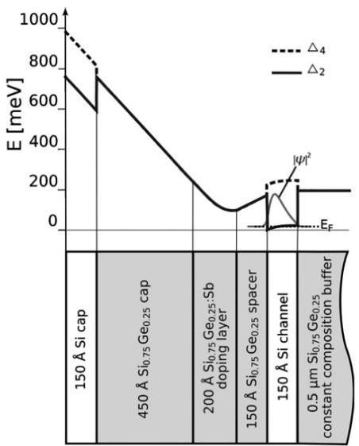<br/>
FIG. 21 Layer design and corresponding band diagram of a Si/SiGe modulation doped heterostructure used to form top-gated quantum dots. Reproduced from Berer et al. (2007).</p>
<p>Because it is very challenging to grow bulk, relaxed <span class="katex"><span class="katex-html" aria-hidden="true"><span class="base"><span class="strut" style="height:0.8917em;vertical-align:-0.2083em;"></span><span class="mord"><span class="mord"><span class="mord"><span class="mord mathrm">Si</span></span></span><span class="msupsub"><span class="vlist-t vlist-t2"><span class="vlist-r"><span class="vlist" style="height:0.3011em;"><span style="top:-2.55em;margin-right:0.05em;"><span class="pstrut" style="height:2.7em;"></span><span class="sizing reset-size6 size3 mtight"><span class="mord mtight"><span class="mord mtight">1</span><span class="mbin mtight">−</span><span class="mord mathnormal mtight">x</span></span></span></span></span><span class="vlist-s">​</span></span><span class="vlist-r"><span class="vlist" style="height:0.2083em;"><span></span></span></span></span></span></span><span class="mord"><span class="mord"><span class="mord"><span class="mord mathrm">Ge</span></span></span><span class="msupsub"><span class="vlist-t vlist-t2"><span class="vlist-r"><span class="vlist" style="height:0.1514em;"><span style="top:-2.55em;margin-right:0.05em;"><span class="pstrut" style="height:2.7em;"></span><span class="sizing reset-size6 size3 mtight"><span class="mord mtight"><span class="mord mathnormal mtight">x</span></span></span></span></span><span class="vlist-s">​</span></span><span class="vlist-r"><span class="vlist" style="height:0.15em;"><span></span></span></span></span></span></span></span></span></span> with even moderately large <span class="katex"><span class="katex-html" aria-hidden="true"><span class="base"><span class="strut" style="height:0.4306em;"></span><span class="mord mathnormal">x</span></span></span></span> , relaxed <span class="katex"><span class="katex-html" aria-hidden="true"><span class="base"><span class="strut" style="height:1.1285em;vertical-align:-0.2083em;"></span><span class="mord"><span class="mord"><span class="mord accent"><span class="vlist-t"><span class="vlist-r"><span class="vlist" style="height:0.9202em;"><span style="top:-3em;"><span class="pstrut" style="height:3em;"></span><span class="mord"><span class="mord mathrm">Δi</span></span></span><span style="top:-3.2523em;"><span class="pstrut" style="height:3em;"></span><span class="accent-body" style="left:-0.25em;"><span class="mord mathrm">¨</span></span></span></span></span></span></span><span class="msupsub"><span class="vlist-t vlist-t2"><span class="vlist-r"><span class="vlist" style="height:0.3011em;"><span style="top:-2.55em;margin-right:0.05em;"><span class="pstrut" style="height:2.7em;"></span><span class="sizing reset-size6 size3 mtight"><span class="mord mtight"><span class="mord mathrm mtight">1</span><span class="mbin mtight">−</span><span class="mord mathrm mtight">x</span></span></span></span></span><span class="vlist-s">​</span></span><span class="vlist-r"><span class="vlist" style="height:0.2083em;"><span></span></span></span></span></span></span><span class="mord mathrm">G</span><span class="mord"><span class="mord mathrm">e</span><span class="msupsub"><span class="vlist-t vlist-t2"><span class="vlist-r"><span class="vlist" style="height:0.1514em;"><span style="top:-2.55em;margin-left:0em;margin-right:0.05em;"><span class="pstrut" style="height:2.7em;"></span><span class="sizing reset-size6 size3 mtight"><span class="mord mtight"><span class="mord mtight"><span class="mord mathit mtight">x</span></span></span></span></span></span><span class="vlist-s">​</span></span><span class="vlist-r"><span class="vlist" style="height:0.15em;"><span></span></span></span></span></span></span></span></span></span></span> substrates conventionally are formed by slowly increasing the Ge concentration <span class="katex"><span class="katex-html" aria-hidden="true"><span class="base"><span class="strut" style="height:0.4306em;"></span><span class="mord mathnormal">x</span></span></span></span> from zero to the desired final value over a thickness of several microns. This procedure induces the formation of misfit dislocations, increasing the overall lattice constant, and can yield lowdefect structures (Mooney, 1996). The relaxation process itself does result in small inhomogeneities, which can be observed with nano-beam x-ray measurements (Evans et al., 2012).</p>
<p>Quantum dots in Si/SiGe demonstrating Coulomb blockade were first formed using a combination of etching and electrostatic gating. Notargiacomo et al. (2003) observed Coulomb blockade oscillations in a gated nanowire</p>
<p>etched into a Si/SiGe heterostructure. This early device had a single overall top gate used to control the number of electrons in the quantum dot. Klein et al. (2004) formed a quantum dot with three separate electrostatic gates. These gates were formed of the same two-dimensional electron gas as the quantum dot, source and drain leads (Eriksson et al., 2004). To avoid current flowing from the gates to the dot, deep trenches were etched between the gates and the dots; the intervening gaps make it difficult to apply local fields and separately gate the quantum dot and the tunnel barriers. This drawback was partially ameliorated by the demonstration that gates could be formed by metal deposited into etched regions surrounding the dot (Sakr et al., 2005), and by the use of extremely small top gates used to break an etched wire into a gated quantum dot (Slinker et al., 2005). The drawback of etching, however, is the potentially large degree of side-wall depletion (Klein et al., 2006).</p>
<p>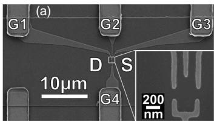</p>
<p>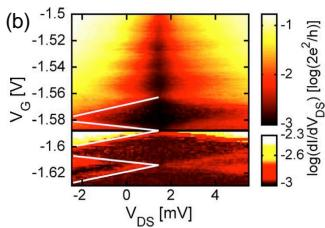<br/>
FIG. 22 (Color online) (a) Scanning electron micrograph of the Schottky gates used to form a gated quantum dot in Si/SiGe. (b) Coulomb diamonds: conductance of the dot as a function of the voltage <span class="katex"><span class="katex-html" aria-hidden="true"><span class="base"><span class="strut" style="height:0.8333em;vertical-align:-0.15em;"></span><span class="mord"><span class="mord mathnormal" style="margin-right:0.2222em;">V</span><span class="msupsub"><span class="vlist-t vlist-t2"><span class="vlist-r"><span class="vlist" style="height:0.3283em;"><span style="top:-2.55em;margin-left:-0.2222em;margin-right:0.05em;"><span class="pstrut" style="height:2.7em;"></span><span class="sizing reset-size6 size3 mtight"><span class="mord mtight"><span class="mord mathrm mtight">G</span></span></span></span></span><span class="vlist-s">​</span></span><span class="vlist-r"><span class="vlist" style="height:0.15em;"><span></span></span></span></span></span></span></span></span></span> applied to gates G1 and G2 and of the drain-source voltage <span class="katex"><span class="katex-html" aria-hidden="true"><span class="base"><span class="strut" style="height:0.8333em;vertical-align:-0.15em;"></span><span class="mord"><span class="mord mathnormal" style="margin-right:0.2222em;">V</span><span class="msupsub"><span class="vlist-t vlist-t2"><span class="vlist-r"><span class="vlist" style="height:0.3283em;"><span style="top:-2.55em;margin-left:-0.2222em;margin-right:0.05em;"><span class="pstrut" style="height:2.7em;"></span><span class="sizing reset-size6 size3 mtight"><span class="mord mtight"><span class="mord mtight"><span class="mord mathrm mtight">DS</span></span></span></span></span></span><span class="vlist-s">​</span></span><span class="vlist-r"><span class="vlist" style="height:0.15em;"><span></span></span></span></span></span></span></span></span></span> . Figure from Berer et al. (2006).</p>
<p>Berer et al. (2006) demonstrated a fully top-gate defined quantum dot formed in a modulation-doped 2DEG, as shown in Fig. 22. They showed that Pd Schottky gates, when fabricated on heterostructures like that shown in Fig. 21, in which care was taken to reduce the dopant density near the surface, enabled low-leakage gates (Berer et al., 2006). There had been great concern about leakage between the top gates and the electrongas, but the Pd Schottky gate approach has proven to be very robust (Klein et al., 2007; Payette et al., 2012; Wild et al., 2010). The Schottky gate approach has also been used successfully to gate heterostructures with enhanced concentration of <span class="katex"><span class="katex-html" aria-hidden="true"><span class="base"><span class="strut" style="height:0.8141em;"></span><span class="mord"><span></span><span class="msupsub"><span class="vlist-t"><span class="vlist-r"><span class="vlist" style="height:0.8141em;"><span style="top:-3.063em;margin-right:0.05em;"><span class="pstrut" style="height:2.7em;"></span><span class="sizing reset-size6 size3 mtight"><span class="mord mtight"><span class="mord mtight">28</span></span></span></span></span></span></span></span></span></span></span></span> Si and <span class="katex"><span class="katex-html" aria-hidden="true"><span class="base"><span class="strut" style="height:0.8141em;"></span><span class="mord"><span></span><span class="msupsub"><span class="vlist-t"><span class="vlist-r"><span class="vlist" style="height:0.8141em;"><span style="top:-3.063em;margin-right:0.05em;"><span class="pstrut" style="height:2.7em;"></span><span class="sizing reset-size6 size3 mtight"><span class="mord mtight"><span class="mord mtight">70</span></span></span></span></span></span></span></span></span></span></span></span> Ge (Sailer et al., 2009). A second approach to eliminating leakage is to use a dielectric material beneath the gates, creating metaloxide-semiconductor split gates to define the quantum dot (Shin et al., 2011b).</p>
<p>The primary advantage of top-gated quantum dots, in which the lateral confinement is entirely provided by adjustable gate voltages, is their extreme tunability. At zero gate voltage in most cases current can flow directly under a gate, enabling a smooth transition from a completely open two-dimensional electron gas to a fully confined quantum dot. This tunability led both to the obser-</p>
<p>vation of the Kondo effect in a Si/SiGe top-gated quantum dot (Klein et al., 2007) and the demonstration of single-electron occupation, as shown in Fig. 28 below.</p>
<h1 id="4-quantum-dots-in-planar-mos-structures">4. Quantum dots in planar MOS structures<a role="anchor" aria-hidden="true" tabindex="-1" data-no-popover="true" href="#4-quantum-dots-in-planar-mos-structures" class="internal internal-link"><svg width="18" height="18" viewBox="0 0 24 24" fill="none" stroke="currentColor" stroke-width="2" stroke-linecap="round" stroke-linejoin="round"><path d="M10 13a5 5 0 0 0 7.54.54l3-3a5 5 0 0 0-7.07-7.07l-1.72 1.71"></path><path d="M14 11a5 5 0 0 0-7.54-.54l-3 3a5 5 0 0 0 7.07 7.07l1.71-1.71"></path></svg></a></h1>
<p>The silicon MOSFET is arguably the world’s most important electronic device, being the basic component of all modern microprocessor chips. Its success has been built on the ability to grow a high-quality SiO <span class="katex"><span class="katex-html" aria-hidden="true"><span class="base"><span class="strut" style="height:0.8141em;"></span><span class="mord"><span></span><span class="msupsub"><span class="vlist-t"><span class="vlist-r"><span class="vlist" style="height:0.8141em;"><span style="top:-3.063em;margin-right:0.05em;"><span class="pstrut" style="height:2.7em;"></span><span class="sizing reset-size6 size3 mtight"><span class="mord mtight">2</span></span></span></span></span></span></span></span></span></span></span> layer on the Si(001) surface by thermal oxidation, forming a high band-gap insulator that isolates the gate from the silicon channel. In current processor chips a SiO <span class="katex"><span class="katex-html" aria-hidden="true"><span class="base"><span class="strut" style="height:0.8141em;"></span><span class="mord"><span></span><span class="msupsub"><span class="vlist-t"><span class="vlist-r"><span class="vlist" style="height:0.8141em;"><span style="top:-3.063em;margin-right:0.05em;"><span class="pstrut" style="height:2.7em;"></span><span class="sizing reset-size6 size3 mtight"><span class="mord mtight">2</span></span></span></span></span></span></span></span></span></span></span> layer of ∼1 nm is sufficient to maintain gate voltages that are a significant fraction of a volt with negligible leakage. The Si/SiO <span class="katex"><span class="katex-html" aria-hidden="true"><span class="base"><span class="strut" style="height:0.8141em;"></span><span class="mord"><span></span><span class="msupsub"><span class="vlist-t"><span class="vlist-r"><span class="vlist" style="height:0.8141em;"><span style="top:-3.063em;margin-right:0.05em;"><span class="pstrut" style="height:2.7em;"></span><span class="sizing reset-size6 size3 mtight"><span class="mord mtight">2</span></span></span></span></span></span></span></span></span></span></span> interface, which confines the electron layer in a MOSFET, can also have relatively low disorder, with reported electron mobilities as high as 40,000 cm2/V s (Kravchenko and Sarachik, 2004), although the imperfect lattice match between the Si and SiO <span class="katex"><span class="katex-html" aria-hidden="true"><span class="base"><span class="strut" style="height:0.8141em;"></span><span class="mord"><span></span><span class="msupsub"><span class="vlist-t"><span class="vlist-r"><span class="vlist" style="height:0.8141em;"><span style="top:-3.063em;margin-right:0.05em;"><span class="pstrut" style="height:2.7em;"></span><span class="sizing reset-size6 size3 mtight"><span class="mord mtight">2</span></span></span></span></span></span></span></span></span></span></span> creates defects at the interface, thus constraining the electron mobilities below those attainable at Si/SiGe interfaces. Despite this, it is possible to form quantum dots in MOS structures that can be controlled down to the single electron level with high tunability.</p>
<p>In this section we focus on quantum dots formed at the Si/SiO <span class="katex"><span class="katex-html" aria-hidden="true"><span class="base"><span class="strut" style="height:0.8141em;"></span><span class="mord"><span></span><span class="msupsub"><span class="vlist-t"><span class="vlist-r"><span class="vlist" style="height:0.8141em;"><span style="top:-3.063em;margin-right:0.05em;"><span class="pstrut" style="height:2.7em;"></span><span class="sizing reset-size6 size3 mtight"><span class="mord mtight">2</span></span></span></span></span></span></span></span></span></span></span> interface via the use of multiple surface gates that provide electrostatic confinement in all three dimensions. In general an upper gate is used to induce an electron layer at the interface (as in a ‘traditional’ MOS-FET), while two or more lower gates provide tunable tunnel barriers between the electron reservoirs and the dot. As already described in Section IV.A, one of the earliest such structures (Matsuoka et al., 1994) exhibited Coulomb blockade oscillations, although these preliminary results were rather irregular.</p>
<p>One of the first well controlled MOS quantum dots was demonstrated by Simmel and co-workers (Simmel et al., 1999), see Fig. 23. In this structure a continuous upper gate was used to induce a 2DEG over a large area, while four lower gates were used to confine the dot and form tunnel barriers. The resulting lower gate structure mimics those used to confine GaAs/AlGaAs quantum dots, although in the latter case the 2DEG is created by modulation doping. The resulting Coulomb oscillations in this MOS device were quite regular (Fig. 23c) and provided promise for future MOS quantum dot studies. The lower gates of the device in Fig. 23 were made using refractory metal, since a high-temperature process was used to deposit the upper oxide isolation layer (Fig. 23a).</p>
<p>This type of architecture, employing a large-area upper gate, has since been used by a number of groups to construct MOS quantum dots. A group at Sandia National Laboratory has demonstrated a range of quantum dot devices in which etched polycrystalline silicon (poly-</p>
<p>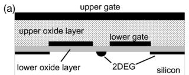</p>
<p>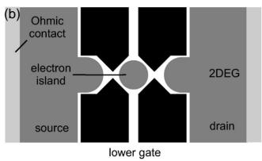</p>
<p>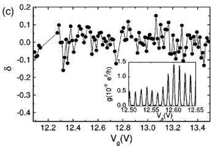<br/>
FIG. 23 Si MOS quantum dot with large-area top gate. (a) Cross-sectional schematic, showing two oxide and two gate layers, formed on a silicon substrate. The lower <span class="katex"><span class="katex-html" aria-hidden="true"><span class="base"><span class="strut" style="height:0.8333em;vertical-align:-0.15em;"></span><span class="mord"><span class="mord mathrm">Si</span><span class="mord"><span class="mord mathrm">O</span><span class="msupsub"><span class="vlist-t vlist-t2"><span class="vlist-r"><span class="vlist" style="height:0.3011em;"><span style="top:-2.55em;margin-left:0em;margin-right:0.05em;"><span class="pstrut" style="height:2.7em;"></span><span class="sizing reset-size6 size3 mtight"><span class="mord mtight"><span class="mord mathrm mtight">2</span></span></span></span></span><span class="vlist-s">​</span></span><span class="vlist-r"><span class="vlist" style="height:0.15em;"><span></span></span></span></span></span></span></span></span></span></span> <span class="katex"><span class="katex-html" aria-hidden="true"><span class="base"><span class="strut" style="height:0.8141em;"></span><span class="mord"><span></span><span class="msupsub"><span class="vlist-t"><span class="vlist-r"><span class="vlist" style="height:0.8141em;"><span style="top:-3.063em;margin-right:0.05em;"><span class="pstrut" style="height:2.7em;"></span><span class="sizing reset-size6 size3 mtight"><span class="mord mtight">2</span></span></span></span></span></span></span></span></span></span></span> layer is thermally grown, while the upper oxide layer is formed using plasma deposition. The large-area upper gate induces a 2DEG at the Si/SiO <span class="katex"><span class="katex-html" aria-hidden="true"><span class="base"><span class="strut" style="height:0.8141em;"></span><span class="mord"><span></span><span class="msupsub"><span class="vlist-t"><span class="vlist-r"><span class="vlist" style="height:0.8141em;"><span style="top:-3.063em;margin-right:0.05em;"><span class="pstrut" style="height:2.7em;"></span><span class="sizing reset-size6 size3 mtight"><span class="mord mtight">2</span></span></span></span></span></span></span></span></span></span></span> interface, while the lower gates locally deplete the 2DEG to form a quantum dot. (b) Top-view schematic, showing lower depletion gates (black) and induced electron layer (grey). (c) Normalized spacings <span class="katex"><span class="katex-html" aria-hidden="true"><span class="base"><span class="strut" style="height:0.6944em;"></span><span class="mord mathnormal" style="margin-right:0.0379em;">δ</span></span></span></span> between Coulomb peaks in dot conductance as a function of upper gate voltage. Inset: Raw Coulomb oscillations in dot conductance as a function of upper gate voltage. Data reproduced from Simmel et al. (1999).</p>
<p>Si) is used for the lower gates, and a large area upper metal gate is used to induce the 2DEG layer (Nordberg et al., 2009a; Tracy et al., 2010). The use of poly-Si gates is appealing from the perspective of future manufacturing, since it opens the way towards the use of CMOS process technologies. Similar MOS quantum dots also have been used to confine single electrons, enabling direct measurement of electron spin relaxation times (Xiao et al., 2010a).</p>
<p>By reducing the upper MOSFET gate to nano-scale dimensions, a group at the University of New South Wales developed a highly compact multi-gate MOS architecture (Angus et al., 2007) that has since been used to construct a wide range of single (Lim et al., 2011, 2009b) and double (Lai et al., 2011; Lim et al., 2009a) quantum dot structures. This architecture uses aluminum (Al) upper and lower gates, with a thin (3-5 nm) Al2O <span class="katex"><span class="katex-html" aria-hidden="true"><span class="base"><span class="strut" style="height:0.8141em;"></span><span class="mord"><span></span><span class="msupsub"><span class="vlist-t"><span class="vlist-r"><span class="vlist" style="height:0.8141em;"><span style="top:-3.063em;margin-right:0.05em;"><span class="pstrut" style="height:2.7em;"></span><span class="sizing reset-size6 size3 mtight"><span class="mord mtight">3</span></span></span></span></span></span></span></span></span></span></span> insulating layer between the gates, formed by thermally oxidizing the lower gates at the relatively low temperature of 150 <span class="katex"><span class="katex-html" aria-hidden="true"><span class="base"><span class="strut" style="height:0.6833em;"></span><span class="mord mathnormal" style="margin-right:0.0715em;">C</span></span></span></span> . Despite being very thin, the Al2O insulator can <span class="katex"><span class="katex-html" aria-hidden="true"><span class="base"><span class="strut" style="height:0.8141em;"></span><span class="mord"><span></span><span class="msupsub"><span class="vlist-t"><span class="vlist-r"><span class="vlist" style="height:0.8141em;"><span style="top:-3.063em;margin-right:0.05em;"><span class="pstrut" style="height:2.7em;"></span><span class="sizing reset-size6 size3 mtight"><span class="mord mtight"><span class="mord mtight">3</span></span></span></span></span></span></span></span></span></span></span></span> maintain inter-gate voltage differentials of up to 4 volts, allowing for high gate tunability and the formation of very small (sub-50 nm) multi-dot structures. Figure 24 shows a quantum dot device based on this technology, in which a third layer of gate metal is used. This allows one upper gate to be used as a ‘plunger’, to control the dot’s electron occupancy, while separate upper gates are used to induce the source and drain electron reservoirs – see Fig. 24(b). In this way the dot occupancy can be reduced to the single electron level, as confirmed by the bias spectroscopy measurements in Fig. 24(c), while maintaining a high density of states in the reservoirs. Such inde-</p>
<p>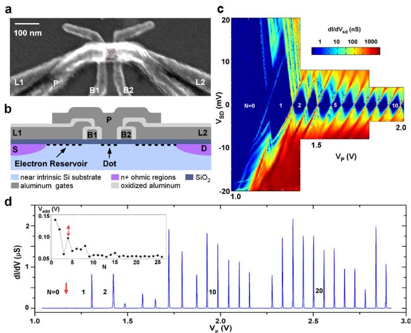<br/>
FIG. 24 (Color online) Si MOS quantum dot with compact multi-layer gate stack. (a) Scanning electron microscope image of device. (b) Cross-sectional schematic, showing three oxide layers and three Al gate layers, formed on a silicon substrate. The SiO <span class="katex"><span class="katex-html" aria-hidden="true"><span class="base"><span class="strut" style="height:0.8141em;"></span><span class="mord"><span></span><span class="msupsub"><span class="vlist-t"><span class="vlist-r"><span class="vlist" style="height:0.8141em;"><span style="top:-3.063em;margin-right:0.05em;"><span class="pstrut" style="height:2.7em;"></span><span class="sizing reset-size6 size3 mtight"><span class="mord mtight">2</span></span></span></span></span></span></span></span></span></span></span> layer is thermally grown in a hightemperature process, while the thin Al2O <span class="katex"><span class="katex-html" aria-hidden="true"><span class="base"><span class="strut" style="height:0.8141em;"></span><span class="mord"><span></span><span class="msupsub"><span class="vlist-t"><span class="vlist-r"><span class="vlist" style="height:0.8141em;"><span style="top:-3.063em;margin-right:0.05em;"><span class="pstrut" style="height:2.7em;"></span><span class="sizing reset-size6 size3 mtight"><span class="mord mtight">3</span></span></span></span></span></span></span></span></span></span></span> layers between the gates are formed by low-temperature oxidation of the aluminum. (c) Stability map obtained by plotting differential conductance through the device as a function of source-drain bias <span class="katex"><span class="katex-html" aria-hidden="true"><span class="base"><span class="strut" style="height:0.8333em;vertical-align:-0.15em;"></span><span class="mord"><span class="mord mathnormal" style="margin-right:0.2222em;">V</span><span class="msupsub"><span class="vlist-t vlist-t2"><span class="vlist-r"><span class="vlist" style="height:0.3283em;"><span style="top:-2.55em;margin-left:-0.2222em;margin-right:0.05em;"><span class="pstrut" style="height:2.7em;"></span><span class="sizing reset-size6 size3 mtight"><span class="mord mtight"><span class="mord mathnormal mtight" style="margin-right:0.0576em;">S</span><span class="mord mathnormal mtight" style="margin-right:0.0278em;">D</span></span></span></span></span><span class="vlist-s">​</span></span><span class="vlist-r"><span class="vlist" style="height:0.15em;"><span></span></span></span></span></span></span></span></span></span> and plunger (P) gate voltage <span class="katex"><span class="katex-html" aria-hidden="true"><span class="base"><span class="strut" style="height:0.8333em;vertical-align:-0.15em;"></span><span class="mord"><span class="mord mathnormal" style="margin-right:0.2222em;">V</span><span class="msupsub"><span class="vlist-t vlist-t2"><span class="vlist-r"><span class="vlist" style="height:0.3283em;"><span style="top:-2.55em;margin-left:-0.2222em;margin-right:0.05em;"><span class="pstrut" style="height:2.7em;"></span><span class="sizing reset-size6 size3 mtight"><span class="mord mtight"><span class="mord mathnormal mtight" style="margin-right:0.1389em;">P</span></span></span></span></span><span class="vlist-s">​</span></span><span class="vlist-r"><span class="vlist" style="height:0.15em;"><span></span></span></span></span></span></span></span></span></span> . The first diamond opens up completely, indicating that the dot has been fully depleted of electrons. (d) Coulomb oscillations as a function of plunger gate voltage <span class="katex"><span class="katex-html" aria-hidden="true"><span class="base"><span class="strut" style="height:0.8333em;vertical-align:-0.15em;"></span><span class="mord"><span class="mord mathnormal" style="margin-right:0.2222em;">V</span><span class="msupsub"><span class="vlist-t vlist-t2"><span class="vlist-r"><span class="vlist" style="height:0.3283em;"><span style="top:-2.55em;margin-left:-0.2222em;margin-right:0.05em;"><span class="pstrut" style="height:2.7em;"></span><span class="sizing reset-size6 size3 mtight"><span class="mord mtight"><span class="mord mathnormal mtight" style="margin-right:0.1389em;">P</span></span></span></span></span><span class="vlist-s">​</span></span><span class="vlist-r"><span class="vlist" style="height:0.15em;"><span></span></span></span></span></span></span></span></span></span> for the first 23 electrons in the dot. Data reproduced from Lim et al. (2011).</p>
<p>pendent tuning of the dot occupancy and the reservoir electron density is not possible when a large-area upper gate is employed.</p>
<p>The metal-oxide-semiconductor techniques just discussed can be applied to Si/SiGe heterostructures, yielding extremely stable and tunable quantum dots (Borselli et al., 2011a; Hayes et al., 2009). The device design, as shown in Fig. 25, uses a Si quantum well surrounded by epitaxial SiGe barriers to provide a clean environment for the electrons in the device. Those electrons are induced by an accumulation gate at the top of the structure. Depletion gates in between the accumulation gate and the heterostructure surface are used to control size and shape of the dot.</p>
<p>MOS-based quantum dots, using architectures like those in Figs. 23 and 24, have since been used in a range of advanced measurements, including single-spin measurement, and spin- and valley-state spectroscopy, as will be discussed in Sections IV.E and IV.F.</p>
<p>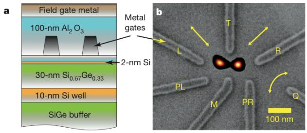<br/>
FIG. 25 (Color online) Gated quantum dot formed from a Si/SiGe heterostructure with a global accumulation gate. (a) Cross-sectional view of the heterostructure and the two layers of gates. (b) Top-view SEM image of the gates with a numerical simulation of the electron density superimposed. Figure from Maune et al. (2012).</p>
<h1 id="5-quantum-dots-in-etched-silicon-nanowires">5. Quantum dots in etched silicon nanowires<a role="anchor" aria-hidden="true" tabindex="-1" data-no-popover="true" href="#5-quantum-dots-in-etched-silicon-nanowires" class="internal internal-link"><svg width="18" height="18" viewBox="0 0 24 24" fill="none" stroke="currentColor" stroke-width="2" stroke-linecap="round" stroke-linejoin="round"><path d="M10 13a5 5 0 0 0 7.54.54l3-3a5 5 0 0 0-7.07-7.07l-1.72 1.71"></path><path d="M14 11a5 5 0 0 0-7.54-.54l-3 3a5 5 0 0 0 7.07 7.07l1.71-1.71"></path></svg></a></h1>
<p>As discussed in Section IV.A, some of the earliest silicon-based single-electron devices (e.g., Takahashi et al. (1994, 1995) were based upon narrow nanowires, patterned using traditional top-down lithographic techniques, and etched from thin (typically &lt; 50 nm) silicon layers that form the upper layer of silicon-on-insulator (SOI) wafers. These early devices used the patterndependent oxidation (PADOX) technique to create additional confinement along the length of the nanowire, but in subsequent structures researchers have incorporated ‘wrap-around’ gates, positioned along the wire to provide additional confinement.</p>
<p>One of the first examples of this type of gated silicon nanowire was demonstrated by a group at NTT in Japan (Fujiwara et al., 2006) – see Fig. 26. Here, confinement in the y and z directions was provided by the narrow wire, of width 20 nm and thickness 20 nm. Confinement along the wire was created by wrap-around lower gates, which in this case were made from poly-Si. Finally, a large-area poly-Si upper gate, isolated from the gates below using SiO <span class="katex"><span class="katex-html" aria-hidden="true"><span class="base"><span class="strut" style="height:0.8141em;"></span><span class="mord"><span></span><span class="msupsub"><span class="vlist-t"><span class="vlist-r"><span class="vlist" style="height:0.8141em;"><span style="top:-3.063em;margin-right:0.05em;"><span class="pstrut" style="height:2.7em;"></span><span class="sizing reset-size6 size3 mtight"><span class="mord mtight">2</span></span></span></span></span></span></span></span></span></span></span> , was patterned above the entire structure to induce carriers in the nominally un-doped nanowire. The resulting structure is entirely CMOS compatible, making it convenient for production using well established manufacturing processes, and also utilizing the high-quality thermally grown SiO <span class="katex"><span class="katex-html" aria-hidden="true"><span class="base"><span class="strut" style="height:0.8141em;"></span><span class="mord"><span></span><span class="msupsub"><span class="vlist-t"><span class="vlist-r"><span class="vlist" style="height:0.8141em;"><span style="top:-3.063em;margin-right:0.05em;"><span class="pstrut" style="height:2.7em;"></span><span class="sizing reset-size6 size3 mtight"><span class="mord mtight">2</span></span></span></span></span></span></span></span></span></span></span> insulator, which is known for having very low charge noise. In subsequent measurements on these devices it was found that they exhibited extremely high charge stability, with a drift of less than 0.01e over several days (Zimmerman et al., 2007).</p>
<p>As seen in Fig. 26(d), a quantum dot could be formed by using the outer gates LGS and LGD to create tunnel barriers, with the central gate LGC acting as a ‘plunger’ to control the dot occupancy. The Coulomb oscillations (Fig. 26d) were highly periodic over a large gate voltage range <span class="katex"><span class="katex-html" aria-hidden="true"><span class="base"><span class="strut" style="height:0.7667em;vertical-align:-0.0833em;"></span><span class="mord">−</span><span class="mord">0.5</span><span class="mord mathnormal" style="margin-right:0.2222em;">V</span><span class="mspace" style="margin-right:0.2778em;"></span><span class="mrel">&lt;</span><span class="mspace" style="margin-right:0.2778em;"></span></span><span class="base"><span class="strut" style="height:0.8333em;vertical-align:-0.15em;"></span><span class="mord"><span class="mord mathnormal" style="margin-right:0.2222em;">V</span><span class="msupsub"><span class="vlist-t vlist-t2"><span class="vlist-r"><span class="vlist" style="height:0.3283em;"><span style="top:-2.55em;margin-left:-0.2222em;margin-right:0.05em;"><span class="pstrut" style="height:2.7em;"></span><span class="sizing reset-size6 size3 mtight"><span class="mord mtight"><span class="mord mathnormal mtight">L</span><span class="mord mathnormal mtight" style="margin-right:0.0715em;">GC</span></span></span></span></span><span class="vlist-s">​</span></span><span class="vlist-r"><span class="vlist" style="height:0.15em;"><span></span></span></span></span></span></span><span class="mspace" style="margin-right:0.2778em;"></span><span class="mrel">&lt;</span><span class="mspace" style="margin-right:0.2778em;"></span></span><span class="base"><span class="strut" style="height:0.6833em;"></span><span class="mord">1.0</span><span class="mord mathnormal" style="margin-right:0.2222em;">V</span></span></span></span> ), with a deviation of less than 1 percent, although the dot occupancy <span class="katex"><span class="katex-html" aria-hidden="true"><span class="base"><span class="strut" style="height:0.8333em;vertical-align:-0.15em;"></span><span class="mord"><span class="mord mathnormal" style="margin-right:0.109em;">N</span><span class="msupsub"><span class="vlist-t vlist-t2"><span class="vlist-r"><span class="vlist" style="height:0.1514em;"><span style="top:-2.55em;margin-left:-0.109em;margin-right:0.05em;"><span class="pstrut" style="height:2.7em;"></span><span class="sizing reset-size6 size3 mtight"><span class="mord mtight"><span class="mord mathnormal mtight">e</span></span></span></span></span><span class="vlist-s">​</span></span><span class="vlist-r"><span class="vlist" style="height:0.15em;"><span></span></span></span></span></span></span></span></span></span> in</p>
<p>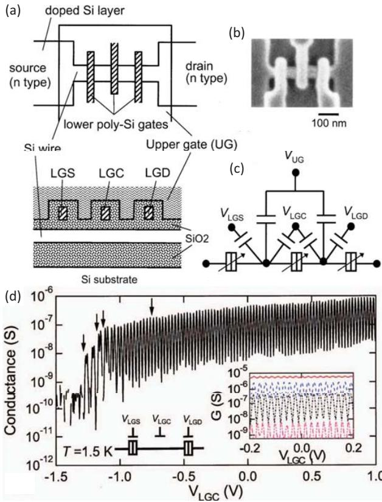<br/>
FIG. 26 (Color online) Multi-gated quantum dot in etched silicon nanowire. (a) Schematic top-view and crosssectional view of the device. Three lower ‘wrap-around’ gates (LGS, LGC, LGD) are used to form tunnel barriers in an etched silicon nanowire. (b) Top-view scanning electron microscope image of the device before the upper gate is deposited. (c) Equivalent circuit of the device. (d) Coulomb blockade oscillations in device conductance as a function of central gate voltage <span class="katex"><span class="katex-html" aria-hidden="true"><span class="base"><span class="strut" style="height:0.8333em;vertical-align:-0.15em;"></span><span class="mord"><span class="mord mathnormal" style="margin-right:0.2222em;">V</span><span class="msupsub"><span class="vlist-t vlist-t2"><span class="vlist-r"><span class="vlist" style="height:0.3283em;"><span style="top:-2.55em;margin-left:-0.2222em;margin-right:0.05em;"><span class="pstrut" style="height:2.7em;"></span><span class="sizing reset-size6 size3 mtight"><span class="mord mtight"><span class="mord mathnormal mtight">L</span><span class="mord mathnormal mtight" style="margin-right:0.0715em;">GC</span></span></span></span></span><span class="vlist-s">​</span></span><span class="vlist-r"><span class="vlist" style="height:0.15em;"><span></span></span></span></span></span></span></span></span></span> when the two outer gates (LGS, LGD) are biased to set each tunnel barrier to <span class="katex"><span class="katex-html" aria-hidden="true"><span class="base"><span class="strut" style="height:0.6833em;"></span><span class="mord mathnormal">G</span><span class="mspace" style="margin-right:0.2778em;"></span><span class="mrel">=</span><span class="mspace" style="margin-right:0.2778em;"></span></span><span class="base"><span class="strut" style="height:0.6444em;"></span><span class="mord">1</span></span></span></span> µS. Inset: Coulomb oscillations for a range of values of barrier conductance from 20 nS to 8 µS. Data reproduced from Fujiwara et al. (2006).</p>
<p>this case was relatively large, with <span class="katex"><span class="katex-html" aria-hidden="true"><span class="base"><span class="strut" style="height:0.8333em;vertical-align:-0.15em;"></span><span class="mord"><span class="mord mathnormal" style="margin-right:0.109em;">N</span><span class="msupsub"><span class="vlist-t vlist-t2"><span class="vlist-r"><span class="vlist" style="height:0.1514em;"><span style="top:-2.55em;margin-left:-0.109em;margin-right:0.05em;"><span class="pstrut" style="height:2.7em;"></span><span class="sizing reset-size6 size3 mtight"><span class="mord mtight"><span class="mord mathnormal mtight">e</span></span></span></span></span><span class="vlist-s">​</span></span><span class="vlist-r"><span class="vlist" style="height:0.15em;"><span></span></span></span></span></span></span><span class="mspace" style="margin-right:0.2778em;"></span><span class="mrel">∼</span><span class="mspace" style="margin-right:0.2778em;"></span></span><span class="base"><span class="strut" style="height:0.6444em;"></span><span class="mord">200</span></span></span></span> electrons at <span class="katex"><span class="katex-html" aria-hidden="true"><span class="base"><span class="strut" style="height:0.8333em;vertical-align:-0.15em;"></span><span class="mord"><span class="mord mathnormal" style="margin-right:0.2222em;">V</span><span class="msupsub"><span class="vlist-t vlist-t2"><span class="vlist-r"><span class="vlist" style="height:0.3283em;"><span style="top:-2.55em;margin-left:-0.2222em;margin-right:0.05em;"><span class="pstrut" style="height:2.7em;"></span><span class="sizing reset-size6 size3 mtight"><span class="mord mtight"><span class="mord mathnormal mtight">L</span><span class="mord mathnormal mtight" style="margin-right:0.0715em;">GC</span></span></span></span></span><span class="vlist-s">​</span></span><span class="vlist-r"><span class="vlist" style="height:0.15em;"><span></span></span></span></span></span></span><span class="mspace nobreak"> </span><span class="mspace" style="margin-right:0.2778em;"></span><span class="mrel">=</span><span class="mspace nobreak"> </span><span class="mspace" style="margin-right:0.2778em;"></span><span class="mord">0</span><span class="mord mathnormal" style="margin-right:0.2222em;">V</span></span></span></span> . The peak conductance could also be tuned over more than three orders of magnitude by varying the barrier gate voltages. For central gate voltages <span class="katex"><span class="katex-html" aria-hidden="true"><span class="base"><span class="strut" style="height:0.8333em;vertical-align:-0.15em;"></span><span class="mord"><span class="mord mathnormal" style="margin-right:0.2222em;">V</span><span class="msupsub"><span class="vlist-t vlist-t2"><span class="vlist-r"><span class="vlist" style="height:0.3283em;"><span style="top:-2.55em;margin-left:-0.2222em;margin-right:0.05em;"><span class="pstrut" style="height:2.7em;"></span><span class="sizing reset-size6 size3 mtight"><span class="mord mtight"><span class="mord mathnormal mtight">L</span><span class="mord mathnormal mtight" style="margin-right:0.0715em;">GC</span></span></span></span></span><span class="vlist-s">​</span></span><span class="vlist-r"><span class="vlist" style="height:0.15em;"><span></span></span></span></span></span></span><span class="mspace" style="margin-right:0.2778em;"></span><span class="mrel">&lt;</span><span class="mspace" style="margin-right:0.2778em;"></span></span><span class="base"><span class="strut" style="height:0.7667em;vertical-align:-0.0833em;"></span><span class="mord">−</span><span class="mord">1.0</span><span class="mord mathnormal" style="margin-right:0.2222em;">V</span></span></span></span> , an additional tunnel barrier was formed, breaking the quantum dot into two dots in series. Using similar device structures this group could therefore operate double quantum dots, demonstrating effects such as Pauli spin blockade (Liu et al., 2008b) – discussed further in Section VI.C.4.</p>
<p>It is also possible to form a quantum dot in a silicon nanowire using just a single gate, by making use of technology that has been developed for the manufacture of FinFET-type MOSFETs. FinFETs are considered likely replacements for planar CMOS technology, due to their ability to operate as FETs with good ON/OFF ratios at much shorter channel lengths. Figure 27(a,b) shows</p>
<p>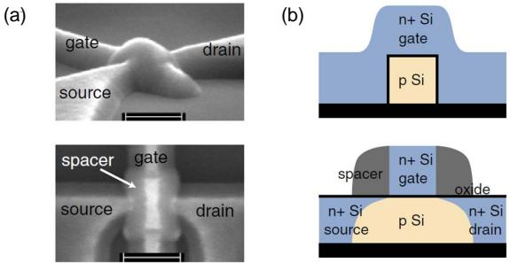</p>
<p>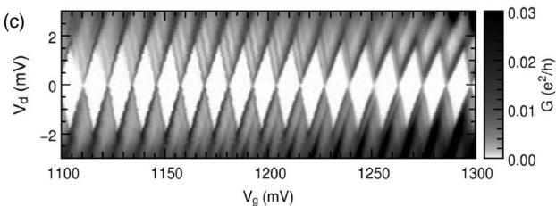<br/>
FIG. 27 (Color online) Single-gated quantum dot in etched silicon nanowire. (a) SEM images and (b) crosssectional schematics taken perpendicular to the nanowire (upper) and along the nanowire (lower). (c) Stability map (Coulomb diamonds) obtained by plotting differential current through the device as a function of source-drain bias <span class="katex"><span class="katex-html" aria-hidden="true"><span class="base"><span class="strut" style="height:0.8333em;vertical-align:-0.15em;"></span><span class="mord"><span class="mord mathnormal" style="margin-right:0.2222em;">V</span><span class="msupsub"><span class="vlist-t vlist-t2"><span class="vlist-r"><span class="vlist" style="height:0.3361em;"><span style="top:-2.55em;margin-left:-0.2222em;margin-right:0.05em;"><span class="pstrut" style="height:2.7em;"></span><span class="sizing reset-size6 size3 mtight"><span class="mord mtight"><span class="mord mathnormal mtight">d</span></span></span></span></span><span class="vlist-s">​</span></span><span class="vlist-r"><span class="vlist" style="height:0.15em;"><span></span></span></span></span></span></span></span></span></span> and wrap-gate voltage <span class="katex"><span class="katex-html" aria-hidden="true"><span class="base"><span class="strut" style="height:0.9694em;vertical-align:-0.2861em;"></span><span class="mord"><span class="mord mathnormal" style="margin-right:0.2222em;">V</span><span class="msupsub"><span class="vlist-t vlist-t2"><span class="vlist-r"><span class="vlist" style="height:0.1514em;"><span style="top:-2.55em;margin-left:-0.2222em;margin-right:0.05em;"><span class="pstrut" style="height:2.7em;"></span><span class="sizing reset-size6 size3 mtight"><span class="mord mtight"><span class="mord mathnormal mtight" style="margin-right:0.0359em;">g</span></span></span></span></span><span class="vlist-s">​</span></span><span class="vlist-r"><span class="vlist" style="height:0.2861em;"><span></span></span></span></span></span></span></span></span></span> . Data reproduced from Sellier et al. (2006) and from Hofheinz et al. (2006b).</p>
<p>a FinFET structure, which is based upon a nanowire (the ‘fin’) that is etched from a SOI wafer, as previously described. A single wrap-around poly-Si gate is encapsulated on either side by an insulating ‘spacer’, made from either SiO <span class="katex"><span class="katex-html" aria-hidden="true"><span class="base"><span class="strut" style="height:0.8141em;"></span><span class="mord"><span></span><span class="msupsub"><span class="vlist-t"><span class="vlist-r"><span class="vlist" style="height:0.8141em;"><span style="top:-3.063em;margin-right:0.05em;"><span class="pstrut" style="height:2.7em;"></span><span class="sizing reset-size6 size3 mtight"><span class="mord mtight">2</span></span></span></span></span></span></span></span></span></span></span> or Si3N <span class="katex"><span class="katex-html" aria-hidden="true"><span class="base"><span class="strut" style="height:0.8141em;"></span><span class="mord"><span></span><span class="msupsub"><span class="vlist-t"><span class="vlist-r"><span class="vlist" style="height:0.8141em;"><span style="top:-3.063em;margin-right:0.05em;"><span class="pstrut" style="height:2.7em;"></span><span class="sizing reset-size6 size3 mtight"><span class="mord mtight">4</span></span></span></span></span></span></span></span></span></span></span> . The gate and spacer act as a mask for subsequent ion implantation of the <span class="katex"><span class="katex-html" aria-hidden="true"><span class="base"><span class="strut" style="height:0.7713em;"></span><span class="mord"><span></span><span class="msupsub"><span class="vlist-t"><span class="vlist-r"><span class="vlist" style="height:0.7713em;"><span style="top:-3.063em;margin-right:0.05em;"><span class="pstrut" style="height:2.7em;"></span><span class="sizing reset-size6 size3 mtight"><span class="mord mtight"><span class="mord mtight"><span class="mord mathrm mtight">n</span><span class="mord mtight">+</span></span></span></span></span></span></span></span></span></span></span></span></span> source and drain regions, which is a standard ‘selfaligned’ gate process used in CMOS production. By applying a positive voltage to the poly-Si gate electrons can be induced below, to form a quantum dot, isolated from the source and drain due to the natural barrier created by the spacer regions – see Fig. 27(b). Such quantum dots can be extremely stable in the many-electron regime, as shown in Fig. 27(c), which demonstrates bias spectroscopy (‘Coulomb diamonds’) taken over a wide range of electron occupancy, with high stability and almost constant charging energy (Hofheinz et al., 2006b). Similar FinFET structures have also been used for single dopant tunneling studies – see Section V.B.2.</p>
<h1 id="c-charge-sensing-techniques">C. Charge sensing techniques<a role="anchor" aria-hidden="true" tabindex="-1" data-no-popover="true" href="#c-charge-sensing-techniques" class="internal internal-link"><svg width="18" height="18" viewBox="0 0 24 24" fill="none" stroke="currentColor" stroke-width="2" stroke-linecap="round" stroke-linejoin="round"><path d="M10 13a5 5 0 0 0 7.54.54l3-3a5 5 0 0 0-7.07-7.07l-1.72 1.71"></path><path d="M14 11a5 5 0 0 0-7.54-.54l-3 3a5 5 0 0 0 7.07 7.07l1.71-1.71"></path></svg></a></h1>
<p>The non-invasive sensing of charge displacements in quantum nanostructures was first demonstrated in a GaAs/AlGaAs heterostructure device (Field et al., 1993), when a quantum point contact (QPC) was used to detect the change in occupancy of a quantum dot. Here, the QPC is biased close to pinch-off, where its transconductance <span class="katex"><span class="katex-html" aria-hidden="true"><span class="base"><span class="strut" style="height:1em;vertical-align:-0.25em;"></span><span class="mord mathnormal">d</span><span class="mord mathnormal" style="margin-right:0.0785em;">I</span><span class="mord">/</span><span class="mord mathnormal">d</span><span class="mord"><span class="mord mathnormal" style="margin-right:0.2222em;">V</span><span class="msupsub"><span class="vlist-t vlist-t2"><span class="vlist-r"><span class="vlist" style="height:0.3283em;"><span style="top:-2.55em;margin-left:-0.2222em;margin-right:0.05em;"><span class="pstrut" style="height:2.7em;"></span><span class="sizing reset-size6 size3 mtight"><span class="mord mtight"><span class="mord mathnormal mtight">G</span></span></span></span></span><span class="vlist-s">​</span></span><span class="vlist-r"><span class="vlist" style="height:0.15em;"><span></span></span></span></span></span></span></span></span></span> can be very large. Any small charge</p>
<p>displacement in the vicinity of the QPC channel can then lead to a significant change in QPC current, via its capacitive coupling. This technique has since been applied widely, enabling the direct probing of single electron charges and the indirect probing of single spins in nanostructures based on a variety of materials systems, including silicon.</p>
<p>Sakr et al. (2005) fabricated a QPC adjacent to a quantum dot in a Si/SiGe heterostructure using a combination of isolation etching and metal gates aligned to the etched trenches. While this structure enabled sensing of the dot’s electron occupancy in the many-electron regime, it did not have sufficient sensitivity to probe down to the last electron. Simmons et al. (2007) used Pd metal surface depletion gates on a Si/SiGe heterostructure to define a similar geometry – see Fig. 28a. By monitoring the differential conductance of the QPC sensor they were able to accurately probe the depopulation of electrons in the adjacent quantum dot, even when the transport current <span class="katex"><span class="katex-html" aria-hidden="true"><span class="base"><span class="strut" style="height:0.8333em;vertical-align:-0.15em;"></span><span class="mord"><span class="mord mathnormal" style="margin-right:0.0785em;">I</span><span class="msupsub"><span class="vlist-t vlist-t2"><span class="vlist-r"><span class="vlist" style="height:0.3283em;"><span style="top:-2.55em;margin-left:-0.0785em;margin-right:0.05em;"><span class="pstrut" style="height:2.7em;"></span><span class="sizing reset-size6 size3 mtight"><span class="mord mtight"><span class="mord mtight"><span class="mord mathrm mtight">Dot</span></span></span></span></span></span><span class="vlist-s">​</span></span><span class="vlist-r"><span class="vlist" style="height:0.15em;"><span></span></span></span></span></span></span></span></span></span> through the dot had fallen below the noise level (Fig. 28b). In this way they were able to track the occupancy of the dot down to the final electron, as shown in Fig. 28(c).</p>
<p>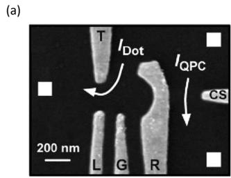</p>
<p>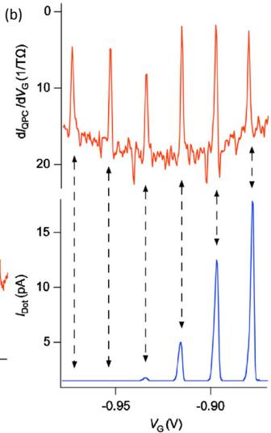</p>
<p>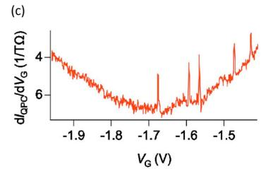<br/>
FIG. 28 (Color online) Non-invasive charge sensing of a Si/SiGe quantum dot using a quantum point contact (QPC) sensor. (a) SEM device image. (b) (Top) Derivative of the QPC current <span class="katex"><span class="katex-html" aria-hidden="true"><span class="base"><span class="strut" style="height:1.0361em;vertical-align:-0.2861em;"></span><span class="mord mathnormal">d</span><span class="mord"><span class="mord mathnormal" style="margin-right:0.0785em;">I</span><span class="msupsub"><span class="vlist-t vlist-t2"><span class="vlist-r"><span class="vlist" style="height:0.3283em;"><span style="top:-2.55em;margin-left:-0.0785em;margin-right:0.05em;"><span class="pstrut" style="height:2.7em;"></span><span class="sizing reset-size6 size3 mtight"><span class="mord mtight"><span class="mord mathnormal mtight" style="margin-right:0.1389em;">QP</span><span class="mord mathnormal mtight" style="margin-right:0.0715em;">C</span></span></span></span></span><span class="vlist-s">​</span></span><span class="vlist-r"><span class="vlist" style="height:0.2861em;"><span></span></span></span></span></span></span><span class="mord">/</span><span class="mord mathnormal">d</span><span class="mord"><span class="mord mathnormal" style="margin-right:0.2222em;">V</span><span class="msupsub"><span class="vlist-t vlist-t2"><span class="vlist-r"><span class="vlist" style="height:0.3283em;"><span style="top:-2.55em;margin-left:-0.2222em;margin-right:0.05em;"><span class="pstrut" style="height:2.7em;"></span><span class="sizing reset-size6 size3 mtight"><span class="mord mtight"><span class="mord mathnormal mtight">G</span></span></span></span></span><span class="vlist-s">​</span></span><span class="vlist-r"><span class="vlist" style="height:0.15em;"><span></span></span></span></span></span></span></span></span></span> as a function of gate voltage <span class="katex"><span class="katex-html" aria-hidden="true"><span class="base"><span class="strut" style="height:0.8333em;vertical-align:-0.15em;"></span><span class="mord"><span class="mord mathnormal" style="margin-right:0.2222em;">V</span><span class="msupsub"><span class="vlist-t vlist-t2"><span class="vlist-r"><span class="vlist" style="height:0.3283em;"><span style="top:-2.55em;margin-left:-0.2222em;margin-right:0.05em;"><span class="pstrut" style="height:2.7em;"></span><span class="sizing reset-size6 size3 mtight"><span class="mord mtight"><span class="mord mathnormal mtight">G</span></span></span></span></span><span class="vlist-s">​</span></span><span class="vlist-r"><span class="vlist" style="height:0.15em;"><span></span></span></span></span></span></span></span></span></span> . The peaks correspond to changes in the number of electrons in the dot. (Bottom) Current <span class="katex"><span class="katex-html" aria-hidden="true"><span class="base"><span class="strut" style="height:0.8333em;vertical-align:-0.15em;"></span><span class="mord"><span class="mord mathnormal" style="margin-right:0.0785em;">I</span><span class="msupsub"><span class="vlist-t vlist-t2"><span class="vlist-r"><span class="vlist" style="height:0.3283em;"><span style="top:-2.55em;margin-left:-0.0785em;margin-right:0.05em;"><span class="pstrut" style="height:2.7em;"></span><span class="sizing reset-size6 size3 mtight"><span class="mord mtight"><span class="mord mathnormal mtight" style="margin-right:0.0278em;">D</span><span class="mord mathnormal mtight">o</span><span class="mord mathnormal mtight">t</span></span></span></span></span><span class="vlist-s">​</span></span><span class="vlist-r"><span class="vlist" style="height:0.15em;"><span></span></span></span></span></span></span></span></span></span> through the quantum dot as a function of <span class="katex"><span class="katex-html" aria-hidden="true"><span class="base"><span class="strut" style="height:0.8333em;vertical-align:-0.15em;"></span><span class="mord"><span class="mord mathnormal" style="margin-right:0.2222em;">V</span><span class="msupsub"><span class="vlist-t vlist-t2"><span class="vlist-r"><span class="vlist" style="height:0.3283em;"><span style="top:-2.55em;margin-left:-0.2222em;margin-right:0.05em;"><span class="pstrut" style="height:2.7em;"></span><span class="sizing reset-size6 size3 mtight"><span class="mord mtight"><span class="mord mathnormal mtight">G</span></span></span></span></span><span class="vlist-s">​</span></span><span class="vlist-r"><span class="vlist" style="height:0.15em;"><span></span></span></span></span></span></span></span></span></span> . (c) QPC sensor output in the fewelectron limit. No further transitions occur for <span class="katex"><span class="katex-html" aria-hidden="true"><span class="base"><span class="strut" style="height:0.8333em;vertical-align:-0.15em;"></span><span class="mord"><span class="mord mathnormal" style="margin-right:0.2222em;">V</span><span class="msupsub"><span class="vlist-t vlist-t2"><span class="vlist-r"><span class="vlist" style="height:0.3283em;"><span style="top:-2.55em;margin-left:-0.2222em;margin-right:0.05em;"><span class="pstrut" style="height:2.7em;"></span><span class="sizing reset-size6 size3 mtight"><span class="mord mtight"><span class="mord mathnormal mtight">G</span></span></span></span></span><span class="vlist-s">​</span></span><span class="vlist-r"><span class="vlist" style="height:0.15em;"><span></span></span></span></span></span></span><span class="mspace nobreak"> </span><span class="mspace" style="margin-right:0.2778em;"></span><span class="mrel">&lt;</span><span class="mspace nobreak"> </span><span class="mspace" style="margin-right:0.2778em;"></span><span class="mord">1.68</span></span></span></span> V, indicating an empty quantum dot. From Simmons et al. (2007).</p>
<p>More recently, QPC sensors have been used with great versatility in both Si/SiGe and Si MOS quantum dots systems for measurement of both charge (Nordberg et al., 2009b) and spin (Hayes et al., 2009; Simmons et al., 2011; Xiao et al., 2010a) states. A technique developed to mea-</p>
<p>sure the spin state of a single electron in a GaAs/AlGaAs quantum dot (Elzerman et al., 2004) has been successfully applied to dots in silicon. This involves loading an electron (of indeterminate spin) into an empty quantum dot and positioning the Fermi level so that only a spinup electron is able to tunnel out, with the charge displacement monitored by a QPC sensor. The technique has been used to measure the spin lifetime of single electrons loaded into Si/SiGe (Hayes et al., 2009; Simmons et al., 2011)and Si MOS (Xiao et al., 2010a) quantum dots. These experiments are discussed in more detail in Section VI.</p>
<p>Single electron transistors (SETs) can also been used as highly sensitive electrometers in nanostructure devices. The most sensitive such electrometers employ Al metal islands, with Al2O <span class="katex"><span class="katex-html" aria-hidden="true"><span class="base"><span class="strut" style="height:0.8141em;"></span><span class="mord"><span></span><span class="msupsub"><span class="vlist-t"><span class="vlist-r"><span class="vlist" style="height:0.8141em;"><span style="top:-3.063em;margin-right:0.05em;"><span class="pstrut" style="height:2.7em;"></span><span class="sizing reset-size6 size3 mtight"><span class="mord mtight"><span class="mord mtight">3</span></span></span></span></span></span></span></span></span></span></span></span> tunnel barriers, which can be integrated with both MOS (Andresen et al., 2007) and Si/SiGe-based quantum dots (Yuan et al., 2011). Integrating such SETs into a radio-frequency (rf) tank circuit forms an rf-SET (Schoelkopf et al., 1998), which can operate at frequencies above 100 MHz with charge sensitivities approaching <span class="katex"><span class="katex-html" aria-hidden="true"><span class="base"><span class="strut" style="height:1.1767em;vertical-align:-0.25em;"></span><span class="mord"><span class="mrel">∼</span></span><span class="mord">1</span><span class="mord"><span class="mord">0</span><span class="msupsub"><span class="vlist-t"><span class="vlist-r"><span class="vlist" style="height:0.8141em;"><span style="top:-3.063em;margin-right:0.05em;"><span class="pstrut" style="height:2.7em;"></span><span class="sizing reset-size6 size3 mtight"><span class="mord mtight"><span class="mord mtight">−</span><span class="mord mtight">6</span></span></span></span></span></span></span></span></span><span class="mspace nobreak"> </span><span class="mord mathnormal">e</span><span class="mord">/</span><span class="mord sqrt"><span class="vlist-t vlist-t2"><span class="vlist-r"><span class="vlist" style="height:0.9267em;"><span class="svg-align" style="top:-3em;"><span class="pstrut" style="height:3em;"></span><span class="mord" style="padding-left:0.833em;"><span class="mord"><span class="mord mathrm">Hz</span></span></span></span><span style="top:-2.8867em;"><span class="pstrut" style="height:3em;"></span><span class="hide-tail" style="min-width:0.853em;height:1.08em;"><svg xmlns="http://www.w3.org/2000/svg" width="400em" height="1.08em" viewBox="0 0 400000 1080" preserveAspectRatio="xMinYMin slice"><path d="M95,702
c-2.7,0,-7.17,-2.7,-13.5,-8c-5.8,-5.3,-9.5,-10,-9.5,-14
c0,-2,0.3,-3.3,1,-4c1.3,-2.7,23.83,-20.7,67.5,-54
c44.2,-33.3,65.8,-50.3,66.5,-51c1.3,-1.3,3,-2,5,-2c4.7,0,8.7,3.3,12,10
s173,378,173,378c0.7,0,35.3,-71,104,-213c68.7,-142,137.5,-285,206.5,-429
c69,-144,104.5,-217.7,106.5,-221
l0 -0
c5.3,-9.3,12,-14,20,-14
H400000v40H845.2724
s-225.272,467,-225.272,467s-235,486,-235,486c-2.7,4.7,-9,7,-19,7
c-6,0,-10,-1,-12,-3s-194,-422,-194,-422s-65,47,-65,47z
M834 80h400000v40h-400000z"></path></svg></span></span></span><span class="vlist-s">​</span></span><span class="vlist-r"><span class="vlist" style="height:0.1133em;"><span></span></span></span></span></span></span></span></span> . Andresen et al. (2007) fabricated such an Al-Al2O <span class="katex"><span class="katex-html" aria-hidden="true"><span class="base"><span class="strut" style="height:0.8141em;"></span><span class="mord"><span></span><span class="msupsub"><span class="vlist-t"><span class="vlist-r"><span class="vlist" style="height:0.8141em;"><span style="top:-3.063em;margin-right:0.05em;"><span class="pstrut" style="height:2.7em;"></span><span class="sizing reset-size6 size3 mtight"><span class="mord mtight"><span class="mord mtight">3</span></span></span></span></span></span></span></span></span></span></span></span> rf-SET on the surface of a phosphorus-doped silicon (Si:P) device to study the gatecontrolled transfer of an electron between two implanted phosphorus donors, with a measurement bandwidth exceeding 1 MHz. They were able to study the charge relaxation rate as a function of gate-induced detuning between the two donor levels, measuring an oscillating relaxation rate consistent with acoustic phonon emission in silicon.</p>
<p>While Al-Al O <span class="katex"><span class="katex-html" aria-hidden="true"><span class="base"><span class="strut" style="height:0.8141em;"></span><span class="mord"><span></span><span class="msupsub"><span class="vlist-t"><span class="vlist-r"><span class="vlist" style="height:0.8141em;"><span style="top:-3.063em;margin-right:0.05em;"><span class="pstrut" style="height:2.7em;"></span><span class="sizing reset-size6 size3 mtight"><span class="mord mtight">3</span></span></span></span></span></span></span></span></span></span></span> rf-SETs are well established as fast charge sensors, it is advantageous to integrate the SET sensor into the silicon device itself, as has been done with silicon-based QPC sensors, since this can improve the capacitive coupling to the system being measured and can also simplify fabrication. Furthermore, the larger charging energies that can be obtained with silicon quantum dots, compared with Al metal islands, provides the potential for increased sensitivity and higher operating temperature. Figure 29 shows an example of a silicon SET integrated adjacent to a Si MOS quantum dot (Yang et al., 2011). In this experiment, Yang and co-workers also employed a dynamic feedback technique to keep the SET sensor at a point of constant sensitivity, allowing for more robust measurements that can tolerate random charge displacement events. Podd and co-workers in Cambridge also demonstrated a capacitively coupled pair of Si MOS quantum dots, in which one of the dots could be used to sense the potential of the other (Podd et al., 2010).</p>
<p>Angus et al. (2007) configured a silicon-based rf-SET by using a double-gate structure to induce a Si-MOS quantum dot and connecting this within a radiofrequency tank-circuit. They demonstrated a charge sensitivity of√ better than <span class="katex"><span class="katex-html" aria-hidden="true"><span class="base"><span class="strut" style="height:1.1767em;vertical-align:-0.25em;"></span><span class="mord">1</span><span class="mord"><span class="mord">0</span><span class="msupsub"><span class="vlist-t"><span class="vlist-r"><span class="vlist" style="height:0.8141em;"><span style="top:-3.063em;margin-right:0.05em;"><span class="pstrut" style="height:2.7em;"></span><span class="sizing reset-size6 size3 mtight"><span class="mord mtight"><span class="mord mtight">−</span><span class="mord mtight">5</span></span></span></span></span></span></span></span></span><span class="mspace nobreak"> </span><span class="mord mathnormal">e</span><span class="mord">/</span><span class="mord sqrt"><span class="vlist-t vlist-t2"><span class="vlist-r"><span class="vlist" style="height:0.9267em;"><span class="svg-align" style="top:-3em;"><span class="pstrut" style="height:3em;"></span><span class="mord" style="padding-left:0.833em;"><span class="mord"><span class="mord mathrm">Hz</span></span></span></span><span style="top:-2.8867em;"><span class="pstrut" style="height:3em;"></span><span class="hide-tail" style="min-width:0.853em;height:1.08em;"><svg xmlns="http://www.w3.org/2000/svg" width="400em" height="1.08em" viewBox="0 0 400000 1080" preserveAspectRatio="xMinYMin slice"><path d="M95,702
c-2.7,0,-7.17,-2.7,-13.5,-8c-5.8,-5.3,-9.5,-10,-9.5,-14
c0,-2,0.3,-3.3,1,-4c1.3,-2.7,23.83,-20.7,67.5,-54
c44.2,-33.3,65.8,-50.3,66.5,-51c1.3,-1.3,3,-2,5,-2c4.7,0,8.7,3.3,12,10
s173,378,173,378c0.7,0,35.3,-71,104,-213c68.7,-142,137.5,-285,206.5,-429
c69,-144,104.5,-217.7,106.5,-221
l0 -0
c5.3,-9.3,12,-14,20,-14
H400000v40H845.2724
s-225.272,467,-225.272,467s-235,486,-235,486c-2.7,4.7,-9,7,-19,7
c-6,0,-10,-1,-12,-3s-194,-422,-194,-422s-65,47,-65,47z
M834 80h400000v40h-400000z"></path></svg></span></span></span><span class="vlist-s">​</span></span><span class="vlist-r"><span class="vlist" style="height:0.1133em;"><span></span></span></span></span></span></span></span></span> at a bandwidth up to 2 MHz, which compares well with metallic rf-SETs. In their device the bandwidth was limited by a high gate resistance,</p>
<p>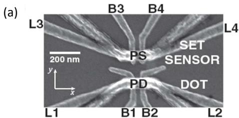</p>
<p>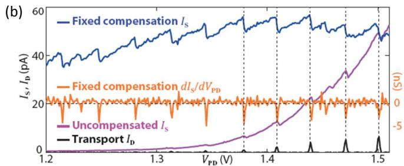<br/>
FIG. 29 Non-invasive charge sensing of a Si MOS quantum dot using a single electron transistor (SET) sensor. (a) SEM device image, showing a Si MOS SET sensor (upper device) that is capacitively coupled to a Si MOS quantum dot (lower device). (b) Transport current <span class="katex"><span class="katex-html" aria-hidden="true"><span class="base"><span class="strut" style="height:0.8333em;vertical-align:-0.15em;"></span><span class="mord"><span class="mord mathnormal" style="margin-right:0.0785em;">I</span><span class="msupsub"><span class="vlist-t vlist-t2"><span class="vlist-r"><span class="vlist" style="height:0.3283em;"><span style="top:-2.55em;margin-left:-0.0785em;margin-right:0.05em;"><span class="pstrut" style="height:2.7em;"></span><span class="sizing reset-size6 size3 mtight"><span class="mord mtight"><span class="mord mathnormal mtight" style="margin-right:0.0278em;">D</span></span></span></span></span><span class="vlist-s">​</span></span><span class="vlist-r"><span class="vlist" style="height:0.15em;"><span></span></span></span></span></span></span></span></span></span> through the quantum dot shows Coulomb peaks as a function of dot plunger gate voltage <span class="katex"><span class="katex-html" aria-hidden="true"><span class="base"><span class="strut" style="height:0.8333em;vertical-align:-0.15em;"></span><span class="mord"><span class="mord mathnormal" style="margin-right:0.2222em;">V</span><span class="msupsub"><span class="vlist-t vlist-t2"><span class="vlist-r"><span class="vlist" style="height:0.3283em;"><span style="top:-2.55em;margin-left:-0.2222em;margin-right:0.05em;"><span class="pstrut" style="height:2.7em;"></span><span class="sizing reset-size6 size3 mtight"><span class="mord mtight"><span class="mord mathnormal mtight" style="margin-right:0.1389em;">P</span><span class="mord mathnormal mtight" style="margin-right:0.0278em;">D</span></span></span></span></span><span class="vlist-s">​</span></span><span class="vlist-r"><span class="vlist" style="height:0.15em;"><span></span></span></span></span></span></span></span></span></span> . The changing potential on the dot is detected by monitoring the uncompensated current <span class="katex"><span class="katex-html" aria-hidden="true"><span class="base"><span class="strut" style="height:0.8333em;vertical-align:-0.15em;"></span><span class="mord"><span class="mord mathnormal" style="margin-right:0.0785em;">I</span><span class="msupsub"><span class="vlist-t vlist-t2"><span class="vlist-r"><span class="vlist" style="height:0.3283em;"><span style="top:-2.55em;margin-left:-0.0785em;margin-right:0.05em;"><span class="pstrut" style="height:2.7em;"></span><span class="sizing reset-size6 size3 mtight"><span class="mord mtight"><span class="mord mathnormal mtight" style="margin-right:0.0576em;">S</span></span></span></span></span><span class="vlist-s">​</span></span><span class="vlist-r"><span class="vlist" style="height:0.15em;"><span></span></span></span></span></span></span></span></span></span> through the SET sensor, which shows charge transfer events superimposed on a rising background, due to the coupling of the SET to <span class="katex"><span class="katex-html" aria-hidden="true"><span class="base"><span class="strut" style="height:0.8333em;vertical-align:-0.15em;"></span><span class="mord"><span class="mord mathnormal" style="margin-right:0.2222em;">V</span><span class="msupsub"><span class="vlist-t vlist-t2"><span class="vlist-r"><span class="vlist" style="height:0.3283em;"><span style="top:-2.55em;margin-left:-0.2222em;margin-right:0.05em;"><span class="pstrut" style="height:2.7em;"></span><span class="sizing reset-size6 size3 mtight"><span class="mord mtight"><span class="mord mathnormal mtight" style="margin-right:0.1389em;">P</span><span class="mord mathnormal mtight" style="margin-right:0.0278em;">D</span></span></span></span></span><span class="vlist-s">​</span></span><span class="vlist-r"><span class="vlist" style="height:0.15em;"><span></span></span></span></span></span></span></span></span></span> . This background can be largely removed by adding a linear correction (fixed compensation) to the SET gate voltage <span class="katex"><span class="katex-html" aria-hidden="true"><span class="base"><span class="strut" style="height:0.8333em;vertical-align:-0.15em;"></span><span class="mord"><span class="mord mathnormal" style="margin-right:0.2222em;">V</span><span class="msupsub"><span class="vlist-t vlist-t2"><span class="vlist-r"><span class="vlist" style="height:0.3283em;"><span style="top:-2.55em;margin-left:-0.2222em;margin-right:0.05em;"><span class="pstrut" style="height:2.7em;"></span><span class="sizing reset-size6 size3 mtight"><span class="mord mtight"><span class="mord mathnormal mtight" style="margin-right:0.1389em;">P</span><span class="mord mathnormal mtight" style="margin-right:0.0576em;">S</span></span></span></span></span><span class="vlist-s">​</span></span><span class="vlist-r"><span class="vlist" style="height:0.15em;"><span></span></span></span></span></span></span></span></span></span> , and then further enhanced by plotting the derivative <span class="katex"><span class="katex-html" aria-hidden="true"><span class="base"><span class="strut" style="height:1em;vertical-align:-0.25em;"></span><span class="mord mathnormal">d</span><span class="mord"><span class="mord mathnormal" style="margin-right:0.0785em;">I</span><span class="msupsub"><span class="vlist-t vlist-t2"><span class="vlist-r"><span class="vlist" style="height:0.3283em;"><span style="top:-2.55em;margin-left:-0.0785em;margin-right:0.05em;"><span class="pstrut" style="height:2.7em;"></span><span class="sizing reset-size6 size3 mtight"><span class="mord mtight"><span class="mord mathnormal mtight" style="margin-right:0.0576em;">S</span></span></span></span></span><span class="vlist-s">​</span></span><span class="vlist-r"><span class="vlist" style="height:0.15em;"><span></span></span></span></span></span></span><span class="mord">/</span><span class="mord mathnormal">d</span><span class="mord"><span class="mord mathnormal" style="margin-right:0.2222em;">V</span><span class="msupsub"><span class="vlist-t vlist-t2"><span class="vlist-r"><span class="vlist" style="height:0.3283em;"><span style="top:-2.55em;margin-left:-0.2222em;margin-right:0.05em;"><span class="pstrut" style="height:2.7em;"></span><span class="sizing reset-size6 size3 mtight"><span class="mord mtight"><span class="mord mathnormal mtight" style="margin-right:0.1389em;">P</span><span class="mord mathnormal mtight" style="margin-right:0.0278em;">D</span></span></span></span></span><span class="vlist-s">​</span></span><span class="vlist-r"><span class="vlist" style="height:0.15em;"><span></span></span></span></span></span></span></span></span></span> . Data reproduced from Yang et al. (2011).</p>
<p>but there is no reason why such a structure could not be designed to operate at bandwidths above 100 MHz. One advantage of a Si-MOS SET compared with its Al-Al2O <span class="katex"><span class="katex-html" aria-hidden="true"><span class="base"><span class="strut" style="height:0.8141em;"></span><span class="mord"><span></span><span class="msupsub"><span class="vlist-t"><span class="vlist-r"><span class="vlist" style="height:0.8141em;"><span style="top:-3.063em;margin-right:0.05em;"><span class="pstrut" style="height:2.7em;"></span><span class="sizing reset-size6 size3 mtight"><span class="mord mtight"><span class="mord mtight">3</span></span></span></span></span></span></span></span></span></span></span></span> counterpart is that the tunnel barriers of the Si-MOS device are gate controlled, meaning that the resonant frequency of the tank circuit can be easily tuned to optimize its operation.</p>
<p>For studies of spin dynamics, which can be orders of magnitude slower than charge dynamics in silicon, the need for high-frequency sensing becomes less critical and standard low-frequency (sub-MHz) SET operation can be used (Hofheinz et al., 2006a). Most notably, Morello et al. (2010) used a Si-MOS SET, similar to the structure used by Angus et al. (2007), to detect charge motion between the SET island and implanted phosphorus dopants, thus enabling single-shot spin readout of an electron bound to a phosphorus donor. This experiment is discussed further in Section VI.C.3.</p>
<h1 id="d-few-electron-quantum-dots">D. Few-electron quantum dots<a role="anchor" aria-hidden="true" tabindex="-1" data-no-popover="true" href="#d-few-electron-quantum-dots" class="internal internal-link"><svg width="18" height="18" viewBox="0 0 24 24" fill="none" stroke="currentColor" stroke-width="2" stroke-linecap="round" stroke-linejoin="round"><path d="M10 13a5 5 0 0 0 7.54.54l3-3a5 5 0 0 0-7.07-7.07l-1.72 1.71"></path><path d="M14 11a5 5 0 0 0-7.54-.54l-3 3a5 5 0 0 0 7.07 7.07l1.71-1.71"></path></svg></a></h1>
<p>For many years it was difficult to achieve singleelectron occupation in gated quantum dots, in spite of the tunability of such dots. The fundamental problem was</p>
<p>the difficulty maintaining reasonably fast tunnel rates between a quantum and nearby charge reservoirs. A common gate design (see, e.g., Waugh et al. (1995)), is shown schematically in Fig. 30(a). As the quantum dot is made smaller, by making the gate voltages more negative, the tunnel barriers to one or both reservoirs must become wider.</p>
<p>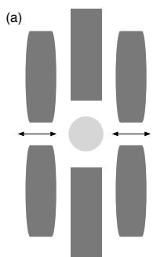</p>
<p>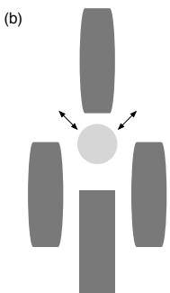<br/>
FIG. 30 Gate design enabling few-electron occupation. The gate design in (a) is a natural way to form a quantum dot tunnel-coupled to two reservoirs, as shown by the arrows. As the dot becomes smaller, however, it is very difficult to maintain a high tunnel rate to both reservoirs. The gate design in panel (b), based on Fig. 1 of Ciorga et al. (2000), enables a small dot to be coupled to both reservoirs.</p>
<p>Fig. 30(b) shows an alternative approach for the formation of few-electron quantum dots in GaAs, developed by the group in Ottawa (Ciorga et al., 2000). The advantage of this gate design is that it enables strong tunnel coupling to both reservoirs even when the quantum dot is small. This gate design is equally useful for gated dots in Si, and it was first implemented in a Si/SiGe heterostructure in Sakr et al. (2005), enabling observation of both Coulomb blockade and charge sensing, but not single-electron occupation.</p>
<p>The challenge to achieving single electron occupation in both single and double one-electron dots in Si/SiGe has been to bring under control instability in the background offset charge of the quantum dots. In 2007 Simmons et al. (2007) demonstrated single-electron occupation in a top-gated, Si/SiGe quantum dot. In that work, care was taken to ensure that the doping of phosphorous in the modulation doping layer was not larger than necessary; limiting the doping in this layer appears to improve the stability of devices. The primary evidence for singleelectron occupation was the absence of additional charge transitions, as shown in Fig. 28, for a change in gate voltage more than 3.5 times as large as that required to add the last observed electron.</p>
<p>Metal-oxide-semiconductor quantum dots can also approximate the few-electron regime (Prati et al., 2011). In the approach of Xiao et al. (2010b), the depletion gates underneath a global accumulation gate form the quantum dot. Using an approach analogous to this type of MOS Si structure, Borselli and collaborators have shown that</p>
<p>single-electron occupation can be achieved in very stable Si/SiGe quantum dots when the doping is removed from the structure (Borselli et al., 2011a), see section IV.B.4.</p>
<p>A novel approach to achieving single-electron occupation was demonstrated by Borselli and colleagues at HRL Laboratories (Borselli et al., 2011b). As shown in Fig. 31, the device structure uses two quantum wells, the lower of which is doped. An air bridge is used to apply a positive voltage to an isolated, circular surface gate, pulling electrons into the upper quantum well. Nearby surface gates are negatively biased, enabling the formation of a charge-sensing channel in the lower electron layer. Such a device forms an extremely symmetric quantum dot that is easily tuned to the one-electron charge state.</p>
<p>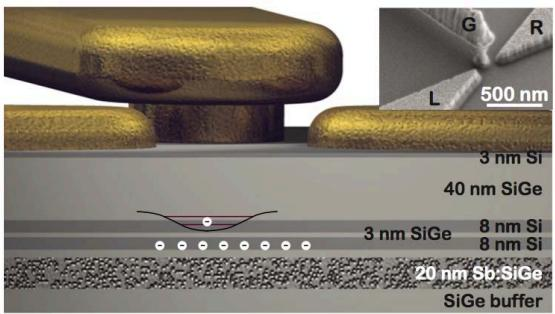<br/>
FIG. 31 (Color online) Schematic diagram of a few-electron quantum dot formed from a Si/SiGe heterostructure with a double quantum well and an accumulation gate contacted by an air bridge. Inset: SEM micrograph of the gate region of a corresponding device. Figure from Borselli et al. (2011b).</p>
<p>Few-carrier occupation can be accomplished even in the absence of charge sensing, as demonstrated in nanowire-based hole quantum dots for which the Coulomb diamonds open to very large gate voltages at sufficiently positive gate voltage (Zhong et al., 2005). Zwanenburg and collaborators have reached the one-hole state in a very small Si quantum dot in a nanowire, enabling them to perform spin spectroscopy (Zwanenburg et al., 2009b). The device made use of NiSi contacts, in which a Schottky barrier defines the quantum dot, as shown in Fig. 32. The few-electron regime was also observed without charge sensing in planar MOS Si quantum dots, thanks to the high degree of tunability of these devices (Lim et al., 2011, 2009b), and in MOSFETs built within a pre-industrial Fully Depleted Silicon On Insulator technology (Prati et al., 2012a).</p>
<h1 id="e-spins-in-single-quantum-dots">E. Spins in single quantum dots<a role="anchor" aria-hidden="true" tabindex="-1" data-no-popover="true" href="#e-spins-in-single-quantum-dots" class="internal internal-link"><svg width="18" height="18" viewBox="0 0 24 24" fill="none" stroke="currentColor" stroke-width="2" stroke-linecap="round" stroke-linejoin="round"><path d="M10 13a5 5 0 0 0 7.54.54l3-3a5 5 0 0 0-7.07-7.07l-1.72 1.71"></path><path d="M14 11a5 5 0 0 0-7.54-.54l-3 3a5 5 0 0 0 7.07 7.07l1.71-1.71"></path></svg></a></h1>
<p>In the previous sections we have established the evolution in recent years from the observation of simple localization and coulomb blockade to few-electron quantum dots in silicon. With the understanding and control of the charge side of electrons one can also probe their spins. In</p>
<p>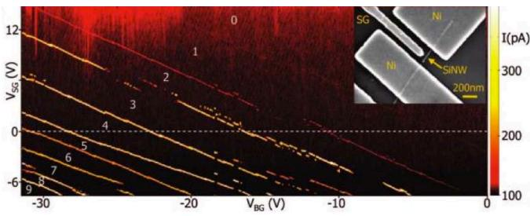<br/>
FIG. 32 (Color online) Transport data showing the last hole in a Si nanowire based quantum dot. Inset: SEM image of the device showing the NiSi contacts and a Cr/Au side gate. device. Figure from Zwanenburg et al. (2009b).</p>
<p>this section we first discuss experiments on ground-state and excited-state magnetospectroscopy in silicon quantum dots. The existence of valleys in silicon make the spin filling non-trivial: the configuration and mixing of valleys and orbits determines how electrons will consecutively occupy the available spin-up or down states.</p>
<h1 id="1-spin-state-spectroscopy">1. Spin-state spectroscopy<a role="anchor" aria-hidden="true" tabindex="-1" data-no-popover="true" href="#1-spin-state-spectroscopy" class="internal internal-link"><svg width="18" height="18" viewBox="0 0 24 24" fill="none" stroke="currentColor" stroke-width="2" stroke-linecap="round" stroke-linejoin="round"><path d="M10 13a5 5 0 0 0 7.54.54l3-3a5 5 0 0 0-7.07-7.07l-1.72 1.71"></path><path d="M14 11a5 5 0 0 0-7.54-.54l-3 3a5 5 0 0 0 7.07 7.07l1.71-1.71"></path></svg></a></h1>
<p>The most straightforward methods of measuring electron spin states in quantum dots are ground-state and excited-state magnetospectroscopy (Hanson et al., 2007). Excited-state magnetospectroscopy allows observation of spin excited states at a fixed magnetic field (Cobden et al., 1998), as long as the Zeeman energy can be resolved. Four experimental demonstrations in silicon systems are bottom-up Si and SiGe nanowires (Hu et al., 2011; Roddaro et al., 2008; Zwanenburg et al., 2009b) and SiGe nanocrystals (Katsaros et al., 2010), see Fig. 33. When the spin-excited state is measured at different magnetic fields, one can extract the g-factor by plotting the Zeeman energy versus magnetic field, see Fig. 33(b). The first two holes in a Si nanowire quantum dot were found to have a g-factor of <span class="katex"><span class="katex-html" aria-hidden="true"><span class="base"><span class="strut" style="height:0.7278em;vertical-align:-0.0833em;"></span><span class="mord">2.3</span><span class="mspace" style="margin-right:0.2222em;"></span><span class="mbin">±</span><span class="mspace" style="margin-right:0.2222em;"></span></span><span class="base"><span class="strut" style="height:0.6444em;"></span><span class="mord">0.2</span></span></span></span> in perpendicular magnetic field. In SiGe nanocrystals and nanowires the g-factor is anisotropic: the results in Fig. 33(c) show g-factors of <span class="katex"><span class="katex-html" aria-hidden="true"><span class="base"><span class="strut" style="height:0.7858em;vertical-align:-0.3552em;"></span><span class="mord"><span class="mord mathnormal" style="margin-right:0.0359em;">g</span><span class="msupsub"><span class="vlist-t vlist-t2"><span class="vlist-r"><span class="vlist" style="height:0.3448em;"><span style="top:-2.5198em;margin-left:-0.0359em;margin-right:0.05em;"><span class="pstrut" style="height:2.7em;"></span><span class="sizing reset-size6 size3 mtight"><span class="mord mtight"><span class="mrel mtight">∥</span></span></span></span></span><span class="vlist-s">​</span></span><span class="vlist-r"><span class="vlist" style="height:0.3552em;"><span></span></span></span></span></span></span><span class="mspace" style="margin-right:0.2778em;"></span><span class="mrel">=</span><span class="mspace" style="margin-right:0.2778em;"></span></span><span class="base"><span class="strut" style="height:0.6444em;"></span><span class="mord">1.21</span></span></span></span> and <span class="katex"><span class="katex-html" aria-hidden="true"><span class="base"><span class="strut" style="height:0.625em;vertical-align:-0.1944em;"></span><span class="mord"><span class="mord mathnormal" style="margin-right:0.0359em;">g</span><span class="msupsub"><span class="vlist-t vlist-t2"><span class="vlist-r"><span class="vlist" style="height:0.3361em;"><span style="top:-2.55em;margin-left:-0.0359em;margin-right:0.05em;"><span class="pstrut" style="height:2.7em;"></span><span class="sizing reset-size6 size3 mtight"><span class="mord mtight"><span class="mrel mtight">⊥</span></span></span></span></span><span class="vlist-s">​</span></span><span class="vlist-r"><span class="vlist" style="height:0.15em;"><span></span></span></span></span></span></span><span class="mspace" style="margin-right:0.2778em;"></span><span class="mrel">=</span><span class="mspace" style="margin-right:0.2778em;"></span></span><span class="base"><span class="strut" style="height:0.6444em;"></span><span class="mord">2.71</span></span></span></span> for respectively parallel and perpendicular field.</p>
<p>In case of ground-state magnetospectroscopy, the spin filling is investigated by measuring the magnetic field dependence of the electrochemical potential <span class="katex"><span class="katex-html" aria-hidden="true"><span class="base"><span class="strut" style="height:0.625em;vertical-align:-0.1944em;"></span><span class="mord"><span class="mord mathnormal">μ</span><span class="msupsub"><span class="vlist-t vlist-t2"><span class="vlist-r"><span class="vlist" style="height:0.3283em;"><span style="top:-2.55em;margin-left:0em;margin-right:0.05em;"><span class="pstrut" style="height:2.7em;"></span><span class="sizing reset-size6 size3 mtight"><span class="mord mtight"><span class="mord mathnormal mtight" style="margin-right:0.109em;">N</span></span></span></span></span><span class="vlist-s">​</span></span><span class="vlist-r"><span class="vlist" style="height:0.15em;"><span></span></span></span></span></span></span></span></span></span> , which is by definition the energy required for adding the <span class="katex"><span class="katex-html" aria-hidden="true"><span class="base"><span class="strut" style="height:0.8491em;"></span><span class="mord"><span class="mord mathnormal" style="margin-right:0.109em;">N</span><span class="msupsub"><span class="vlist-t"><span class="vlist-r"><span class="vlist" style="height:0.8491em;"><span style="top:-3.063em;margin-right:0.05em;"><span class="pstrut" style="height:2.7em;"></span><span class="sizing reset-size6 size3 mtight"><span class="mord mtight"><span class="mord mathnormal mtight">t</span><span class="mord mathnormal mtight">h</span></span></span></span></span></span></span></span></span></span></span></span> electron to the dot. The slope of <span class="katex"><span class="katex-html" aria-hidden="true"><span class="base"><span class="strut" style="height:1em;vertical-align:-0.25em;"></span><span class="mord"><span class="mord mathnormal">μ</span><span class="msupsub"><span class="vlist-t vlist-t2"><span class="vlist-r"><span class="vlist" style="height:0.3283em;"><span style="top:-2.55em;margin-left:0em;margin-right:0.05em;"><span class="pstrut" style="height:2.7em;"></span><span class="sizing reset-size6 size3 mtight"><span class="mord mtight"><span class="mord mathnormal mtight" style="margin-right:0.109em;">N</span></span></span></span></span><span class="vlist-s">​</span></span><span class="vlist-r"><span class="vlist" style="height:0.15em;"><span></span></span></span></span></span></span><span class="mopen">(</span><span class="mord mathnormal" style="margin-right:0.0502em;">B</span><span class="mclose">)</span></span></span></span> is given by <span class="katex"><span class="katex-html" aria-hidden="true"><span class="base"><span class="strut" style="height:1.2922em;vertical-align:-0.3961em;"></span><span class="mord"><span class="mtable"><span class="arraycolsep" style="width:0.5em;"></span><span class="col-align-r"><span class="vlist-t vlist-t2"><span class="vlist-r"><span class="vlist" style="height:0.8961em;"><span style="top:-2.9639em;"><span class="pstrut" style="height:3em;"></span><span class="mord"><span class="mord"><span class="mord"><span class="mopen nulldelimiter"></span><span class="mfrac"><span class="vlist-t vlist-t2"><span class="vlist-r"><span class="vlist" style="height:0.9322em;"><span style="top:-2.655em;"><span class="pstrut" style="height:3em;"></span><span class="sizing reset-size6 size3 mtight"><span class="mord mtight"><span class="mord mtight" style="margin-right:0.0556em;">∂</span><span class="mord mathnormal mtight" style="margin-right:0.0502em;">B</span></span></span></span><span style="top:-3.23em;"><span class="pstrut" style="height:3em;"></span><span class="frac-line" style="border-bottom-width:0.04em;"></span></span><span style="top:-3.4461em;"><span class="pstrut" style="height:3em;"></span><span class="sizing reset-size6 size3 mtight"><span class="mord mtight"><span class="mord mtight" style="margin-right:0.0556em;">∂</span><span class="mord mtight"><span class="mord mathnormal mtight">μ</span><span class="msupsub"><span class="vlist-t vlist-t2"><span class="vlist-r"><span class="vlist" style="height:0.3448em;"><span style="top:-2.3567em;margin-left:0em;margin-right:0.0714em;"><span class="pstrut" style="height:2.5em;"></span><span class="sizing reset-size3 size1 mtight"><span class="mord mtight"><span class="mord mathnormal mtight" style="margin-right:0.109em;">N</span></span></span></span></span><span class="vlist-s">​</span></span><span class="vlist-r"><span class="vlist" style="height:0.1433em;"><span></span></span></span></span></span></span></span></span></span></span><span class="vlist-s">​</span></span><span class="vlist-r"><span class="vlist" style="height:0.345em;"><span></span></span></span></span></span><span class="mclose nulldelimiter"></span></span><span class="mspace"> </span><span class="mspace" style="margin-right:0.2778em;"></span><span class="mrel">=</span><span class="mspace"> </span><span class="mspace" style="margin-right:0.2778em;"></span><span class="mord">−</span><span class="mord mathnormal" style="margin-right:0.0359em;">g</span><span class="mord"><span class="mord mathnormal">μ</span><span class="msupsub"><span class="vlist-t vlist-t2"><span class="vlist-r"><span class="vlist" style="height:0.3283em;"><span style="top:-2.55em;margin-left:0em;margin-right:0.05em;"><span class="pstrut" style="height:2.7em;"></span><span class="sizing reset-size6 size3 mtight"><span class="mord mtight"><span class="mord mathnormal mtight" style="margin-right:0.0502em;">B</span></span></span></span></span><span class="vlist-s">​</span></span><span class="vlist-r"><span class="vlist" style="height:0.15em;"><span></span></span></span></span></span></span><span class="mord">Δ</span><span class="mord"><span class="mord mathnormal" style="margin-right:0.0576em;">S</span><span class="msupsub"><span class="vlist-t vlist-t2"><span class="vlist-r"><span class="vlist" style="height:0.2806em;"><span style="top:-2.55em;margin-left:-0.0576em;margin-right:0.05em;"><span class="pstrut" style="height:2.7em;"></span><span class="sizing reset-size6 size3 mtight"><span class="mord mtight"><span class="mord mtight"><span class="mord mathrm mtight">tot</span></span></span></span></span></span><span class="vlist-s">​</span></span><span class="vlist-r"><span class="vlist" style="height:0.15em;"><span></span></span></span></span></span></span><span class="mopen">(</span><span class="mord mathnormal" style="margin-right:0.109em;">N</span><span class="mclose">)</span></span></span></span></span><span class="vlist-s">​</span></span><span class="vlist-r"><span class="vlist" style="height:0.3961em;"><span></span></span></span></span></span><span class="arraycolsep" style="width:0.5em;"></span></span></span></span></span></span> , where <span class="katex"><span class="katex-html" aria-hidden="true"><span class="base"><span class="strut" style="height:0.625em;vertical-align:-0.1944em;"></span><span class="mord mathnormal" style="margin-right:0.0359em;">g</span></span></span></span> is the g-factor, the Bohr magneton µB = 58 µeV/T and <span class="katex"><span class="katex-html" aria-hidden="true"><span class="base"><span class="strut" style="height:1em;vertical-align:-0.25em;"></span><span class="mord">Δ</span><span class="mord"><span class="mord mathnormal" style="margin-right:0.0576em;">S</span><span class="msupsub"><span class="vlist-t vlist-t2"><span class="vlist-r"><span class="vlist" style="height:0.2806em;"><span style="top:-2.55em;margin-left:-0.0576em;margin-right:0.05em;"><span class="pstrut" style="height:2.7em;"></span><span class="sizing reset-size6 size3 mtight"><span class="mord mtight"><span class="mord mtight"><span class="mord mathrm mtight">tot</span></span></span></span></span></span><span class="vlist-s">​</span></span><span class="vlist-r"><span class="vlist" style="height:0.15em;"><span></span></span></span></span></span></span><span class="mopen">(</span><span class="mord mathnormal" style="margin-right:0.109em;">N</span><span class="mclose">)</span></span></span></span> is the change in total spin of the dot when the <span class="katex"><span class="katex-html" aria-hidden="true"><span class="base"><span class="strut" style="height:0.8491em;"></span><span class="mord"><span class="mord mathnormal" style="margin-right:0.109em;">N</span><span class="msupsub"><span class="vlist-t"><span class="vlist-r"><span class="vlist" style="height:0.8491em;"><span style="top:-3.063em;margin-right:0.05em;"><span class="pstrut" style="height:2.7em;"></span><span class="sizing reset-size6 size3 mtight"><span class="mord mtight"><span class="mord mtight"><span class="mord mathrm mtight">th</span></span></span></span></span></span></span></span></span></span></span></span></span> electron is added (Hada and Eto, 2003). The electrochemical potential has a slope of <span class="katex"><span class="katex-html" aria-hidden="true"><span class="base"><span class="strut" style="height:1em;vertical-align:-0.25em;"></span><span class="mord">+</span><span class="mord mathnormal" style="margin-right:0.0359em;">g</span><span class="mord"><span class="mord mathnormal">μ</span><span class="msupsub"><span class="vlist-t vlist-t2"><span class="vlist-r"><span class="vlist" style="height:0.3283em;"><span style="top:-2.55em;margin-left:0em;margin-right:0.05em;"><span class="pstrut" style="height:2.7em;"></span><span class="sizing reset-size6 size3 mtight"><span class="mord mtight"><span class="mord mathnormal mtight" style="margin-right:0.0502em;">B</span></span></span></span></span><span class="vlist-s">​</span></span><span class="vlist-r"><span class="vlist" style="height:0.15em;"><span></span></span></span></span></span></span><span class="mord">/2</span></span></span></span> when a spin-up electron is added, whereas addition of a spin-down electron results in a slope of <span class="katex"><span class="katex-html" aria-hidden="true"><span class="base"><span class="strut" style="height:1em;vertical-align:-0.25em;"></span><span class="mord">−</span><span class="mord mathnormal" style="margin-right:0.0359em;">g</span><span class="mord"><span class="mord mathnormal">μ</span><span class="msupsub"><span class="vlist-t vlist-t2"><span class="vlist-r"><span class="vlist" style="height:0.3283em;"><span style="top:-2.55em;margin-left:0em;margin-right:0.05em;"><span class="pstrut" style="height:2.7em;"></span><span class="sizing reset-size6 size3 mtight"><span class="mord mtight"><span class="mord mathnormal mtight" style="margin-right:0.0502em;">B</span></span></span></span></span><span class="vlist-s">​</span></span><span class="vlist-r"><span class="vlist" style="height:0.15em;"><span></span></span></span></span></span></span><span class="mord">/2</span></span></span></span> . The rate at which <span class="katex"><span class="katex-html" aria-hidden="true"><span class="base"><span class="strut" style="height:0.625em;vertical-align:-0.1944em;"></span><span class="mord"><span class="mord mathnormal">μ</span><span class="msupsub"><span class="vlist-t vlist-t2"><span class="vlist-r"><span class="vlist" style="height:0.3283em;"><span style="top:-2.55em;margin-left:0em;margin-right:0.05em;"><span class="pstrut" style="height:2.7em;"></span><span class="sizing reset-size6 size3 mtight"><span class="mord mtight"><span class="mord mathnormal mtight" style="margin-right:0.109em;">N</span></span></span></span></span><span class="vlist-s">​</span></span><span class="vlist-r"><span class="vlist" style="height:0.15em;"><span></span></span></span></span></span></span></span></span></span> changes with magnetic field thus reveals the sign of the added spin.</p>
<p>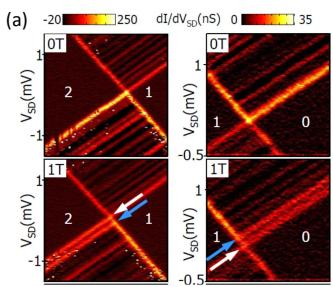</p>
<p></p>
<p></p>
<p><br/>
FIG. 33 (Color online) Excited-state magnetospectroscopy in Si quantum dots. (a) Zeeman splitting at the 0-1 and 1-2 transition in a few-hole Si nanowire quantum dot and (b) the corresponding magnetic field dependence of the Zeeman energy, data from Zwanenburg et al. (2009b) (c), Anisotropic g-factors in SiGe nanocrystals, and (d) the corresponding excited-state magnetospectroscopy, data from Katsaros et al. (2010).</p>
<p>Rokhinson et al. (2000) were the first to observe the theoretically expected slopes in multiples of <span class="katex"><span class="katex-html" aria-hidden="true"><span class="base"><span class="strut" style="height:1em;vertical-align:-0.25em;"></span><span class="mord mathnormal" style="margin-right:0.0359em;">g</span><span class="mord"><span class="mord mathnormal">μ</span><span class="msupsub"><span class="vlist-t vlist-t2"><span class="vlist-r"><span class="vlist" style="height:0.3283em;"><span style="top:-2.55em;margin-left:0em;margin-right:0.05em;"><span class="pstrut" style="height:2.7em;"></span><span class="sizing reset-size6 size3 mtight"><span class="mord mtight"><span class="mord mathnormal mtight" style="margin-right:0.0502em;">B</span></span></span></span></span><span class="vlist-s">​</span></span><span class="vlist-r"><span class="vlist" style="height:0.15em;"><span></span></span></span></span></span></span><span class="mord">/2</span></span></span></span> in an n-type Si quantum dot. They show the peak shift with magnetic field of 29 electrons entering the dot, and more detailed measurements on two sets of Coulomb peaks with slopes of <span class="katex"><span class="katex-html" aria-hidden="true"><span class="base"><span class="strut" style="height:1em;vertical-align:-0.25em;"></span><span class="mord">±</span><span class="mord">1/2</span><span class="mord mathnormal" style="margin-right:0.0359em;">g</span><span class="mord"><span class="mord mathnormal">μ</span><span class="msupsub"><span class="vlist-t vlist-t2"><span class="vlist-r"><span class="vlist" style="height:0.3283em;"><span style="top:-2.55em;margin-left:0em;margin-right:0.05em;"><span class="pstrut" style="height:2.7em;"></span><span class="sizing reset-size6 size3 mtight"><span class="mord mtight"><span class="mord mathnormal mtight" style="margin-right:0.0502em;">B</span></span></span></span></span><span class="vlist-s">​</span></span><span class="vlist-r"><span class="vlist" style="height:0.15em;"><span></span></span></span></span></span></span></span></span></span> and <span class="katex"><span class="katex-html" aria-hidden="true"><span class="base"><span class="strut" style="height:1em;vertical-align:-0.25em;"></span><span class="mord">±</span><span class="mord">3/2</span><span class="mord mathnormal" style="margin-right:0.0359em;">g</span><span class="mord"><span class="mord mathnormal">μ</span><span class="msupsub"><span class="vlist-t vlist-t2"><span class="vlist-r"><span class="vlist" style="height:0.3283em;"><span style="top:-2.55em;margin-left:0em;margin-right:0.05em;"><span class="pstrut" style="height:2.7em;"></span><span class="sizing reset-size6 size3 mtight"><span class="mord mtight"><span class="mord mathnormal mtight" style="margin-right:0.0502em;">B</span></span></span></span></span><span class="vlist-s">​</span></span><span class="vlist-r"><span class="vlist" style="height:0.15em;"><span></span></span></span></span></span></span></span></span></span> . The charge transitions display an unexpected large number of kinks at which the slope changes sign, and thus the spin state as well. They conclude that the spin filling is inconsistent with a simple picture of non-interacting electrons in four single-particle levels. Later reports are more straightforward to interpret and will be discussed below.</p>
<p>The spin filling of holes has been investigated in nanowire quantum dots. In 2005, Zhong et al. (2005) found alternating spin-up and spin-down holes in a manyhole quantum dot. The magnetic field evolution of the positions of eight consecutive Coulomb peaks in Fig. 34(a) reveals alternating slopes of <span class="katex"><span class="katex-html" aria-hidden="true"><span class="base"><span class="strut" style="height:1em;vertical-align:-0.25em;"></span><span class="mord">±</span><span class="mord mathnormal" style="margin-right:0.0359em;">g</span><span class="mord"><span class="mord mathnormal">μ</span><span class="msupsub"><span class="vlist-t vlist-t2"><span class="vlist-r"><span class="vlist" style="height:0.3283em;"><span style="top:-2.55em;margin-left:0em;margin-right:0.05em;"><span class="pstrut" style="height:2.7em;"></span><span class="sizing reset-size6 size3 mtight"><span class="mord mtight"><span class="mord mathnormal mtight" style="margin-right:0.0502em;">B</span></span></span></span></span><span class="vlist-s">​</span></span><span class="vlist-r"><span class="vlist" style="height:0.15em;"><span></span></span></span></span></span></span><span class="mord">/2</span></span></span></span> , with an extracted g-factor of 2±0.2. The few-hole regime displayed similar spin filling of the first four holes in an empty dot (Zwanenburg et al., 2009b), see Fig. 34(b). The even-odd filling suggests that the degeneracy of heavy and light holes is lifted due to strain and confinement effects; see, for example, calculations based on density functional theory (Leu et al., 2006; Sorokin et al., 2008) and tight-binding models (Buin et al., 2008; Niquet et al., 2006). SiGe nanowires have been shown to exhibit the same spin filling, see (Roddaro et al., 2008) and Fig. 34(c).</p>
<p></p>
<p></p>
<p><br/>
FIG. 34 (Color online) Ground-state magnetospectroscopy. Three examples of even-odd hole spin filling in (a) a many-hole Si nanowire quantum dot (Zhong et al., 2005) (b), a few-hole Si nanowire quantum dot (Zwanenburg et al., 2009b) and (c), a many-hole Ge/Si nanowire quantum dot (Roddaro et al., 2008).</p>
<h1 id="2-spin-filling-in-valleys-and-orbits">2. Spin filling in valleys and orbits<a role="anchor" aria-hidden="true" tabindex="-1" data-no-popover="true" href="#2-spin-filling-in-valleys-and-orbits" class="internal internal-link"><svg width="18" height="18" viewBox="0 0 24 24" fill="none" stroke="currentColor" stroke-width="2" stroke-linecap="round" stroke-linejoin="round"><path d="M10 13a5 5 0 0 0 7.54.54l3-3a5 5 0 0 0-7.07-7.07l-1.72 1.71"></path><path d="M14 11a5 5 0 0 0-7.54-.54l-3 3a5 5 0 0 0 7.07 7.07l1.71-1.71"></path></svg></a></h1>
<p>The even-odd spin filling as observed in p-type silicon quantum dots (see Section IV.E.1) is not very different from similar devices in other material systems. However, the valleys in the silicon conduction band make the spin filling of electrons non-trivial. Valley physics in silicon has been studied extensively both theoretically (Culcer et al., 2010a,b; Friesen and Coppersmith, 2010; Saraiva et al., 2009, 2011) and experimentally (Fuechsle et al., 2010; Goswami et al., 2007; Koester et al., 1997; K¨ohler and Roos, 1979; McGuire et al., 2010; Nicholas et al., 1980; Pudalov et al., 1985; Takashina et al., 2006).</p>
<p>As discussed in Section III.B.2 a 2-dimensional electron gas has two Γ-valleys, separated by the valley splitting <span class="katex"><span class="katex-html" aria-hidden="true"><span class="base"><span class="strut" style="height:0.8333em;vertical-align:-0.15em;"></span><span class="mord"><span class="mord mathnormal" style="margin-right:0.0576em;">E</span><span class="msupsub"><span class="vlist-t vlist-t2"><span class="vlist-r"><span class="vlist" style="height:0.3283em;"><span style="top:-2.55em;margin-left:-0.0576em;margin-right:0.05em;"><span class="pstrut" style="height:2.7em;"></span><span class="sizing reset-size6 size3 mtight"><span class="mord mtight"><span class="mord mathnormal mtight" style="margin-right:0.2222em;">V</span></span></span></span></span><span class="vlist-s">​</span></span><span class="vlist-r"><span class="vlist" style="height:0.15em;"><span></span></span></span></span></span></span></span></span></span> , see Fig. 7. A finite valley splitting influences the spin filling as observed in ground-state magnetospectroscopy (Hada and Eto, 2003): the first electron is always a spin-down, yielding a slope of the corresponding Coulomb peak of <span class="katex"><span class="katex-html" aria-hidden="true"><span class="base"><span class="strut" style="height:1em;vertical-align:-0.25em;"></span><span class="mord">−</span><span class="mord mathnormal" style="margin-right:0.0359em;">g</span><span class="mord"><span class="mord mathnormal">μ</span><span class="msupsub"><span class="vlist-t vlist-t2"><span class="vlist-r"><span class="vlist" style="height:0.3283em;"><span style="top:-2.55em;margin-left:0em;margin-right:0.05em;"><span class="pstrut" style="height:2.7em;"></span><span class="sizing reset-size6 size3 mtight"><span class="mord mtight"><span class="mord mathnormal mtight" style="margin-right:0.0502em;">B</span></span></span></span></span><span class="vlist-s">​</span></span><span class="vlist-r"><span class="vlist" style="height:0.15em;"><span></span></span></span></span></span></span><span class="mord">/2</span></span></span></span> , see the experiment by Lim et al. (2011) in Fig. 35b. The kink in the second Coulomb peak (marked 2a) at ∼0.86 T is caused by a sign change of the <span class="katex"><span class="katex-html" aria-hidden="true"><span class="base"><span class="strut" style="height:0.6833em;"></span><span class="mord mathnormal" style="margin-right:0.109em;">N</span><span class="mspace" style="margin-right:0.2778em;"></span><span class="mrel">=</span><span class="mspace" style="margin-right:0.2778em;"></span></span><span class="base"><span class="strut" style="height:0.6444em;"></span><span class="mord">2</span></span></span></span> ground-state spin: at low magnetic field (before the kink), the second electron fills the quantum dot with a spin-up. As the magnetic field is increased, the sign of the second electron spin changes from up to down at <span class="katex"><span class="katex-html" aria-hidden="true"><span class="base"><span class="strut" style="height:0.6833em;"></span><span class="mord mathnormal" style="margin-right:0.0502em;">B</span><span class="mspace" style="margin-right:0.2778em;"></span><span class="mrel">∼</span><span class="mspace" style="margin-right:0.2778em;"></span></span><span class="base"><span class="strut" style="height:0.6444em;"></span><span class="mord">0.86</span></span></span></span> T.</p>
<p>When the valleys and orbits are mixed (section III.B.2), there are no pure valleys or pure orbits, and the lowest available levels are referred to as valley-orbits. The sign change can then be explained with a simple model where the two lowest valley-orbit levels are separated by the valley-orbit splitting <span class="katex"><span class="katex-html" aria-hidden="true"><span class="base"><span class="strut" style="height:0.8333em;vertical-align:-0.15em;"></span><span class="mord">Δ</span><span class="mord"><span class="mord mathnormal" style="margin-right:0.0576em;">E</span><span class="msupsub"><span class="vlist-t vlist-t2"><span class="vlist-r"><span class="vlist" style="height:0.3283em;"><span style="top:-2.55em;margin-left:-0.0576em;margin-right:0.05em;"><span class="pstrut" style="height:2.7em;"></span><span class="sizing reset-size6 size3 mtight"><span class="mord mtight"><span class="mord mtight"><span class="mord mathrm mtight">VO</span></span></span></span></span></span><span class="vlist-s">​</span></span><span class="vlist-r"><span class="vlist" style="height:0.15em;"><span></span></span></span></span></span></span></span></span></span> , see Fig. 35(b).</p>
<p></p>
<p><br/>
FIG. 35 (Color online) Spin filling in valleys in a planar MOS Si quantum dot. (a) Magnetospectroscopy of the first two electrons entering the quantum dot. The circle 2a marks a kink in the second Coulomb peak at <span class="katex"><span class="katex-html" aria-hidden="true"><span class="base"><span class="strut" style="height:0.6833em;"></span><span class="mord"><span class="mrel">∼</span></span><span class="mord">0.86</span><span class="mord"><span class="mspace nobreak"> </span><span class="mord mathrm">T</span><span class="mspace nobreak"> </span></span></span></span></span> . The arrows in the boxes (VO <span class="katex"><span class="katex-html" aria-hidden="true"><span class="base"><span class="strut" style="height:0.6944em;"></span><span class="mord">⊥</span></span></span></span> for valley-orbit 1 and VO2 for valley-(b) (c)orbit 2) represent the spin filling of electrons in the quantum dot. (b) For <span class="katex"><span class="katex-html" aria-hidden="true"><span class="base"><span class="strut" style="height:0.7224em;vertical-align:-0.0391em;"></span><span class="mord mathnormal" style="margin-right:0.0502em;">B</span><span class="mspace"> </span><span class="mspace" style="margin-right:0.2778em;"></span><span class="mrel">&lt;</span><span class="mspace"> </span><span class="mspace" style="margin-right:0.2778em;"></span></span><span class="base"><span class="strut" style="height:0.6444em;"></span><span class="mord">0.86</span></span></span></span> T, the first two electrons fill with opposite spins in the same valley-orbit level (left panel). The Zeeman energy at the kink is equal to the valley-orbit splitting (0.10 meV). Data reproduced from Lim et al. (2011)</p>
<p>At zero magnetic field, the first two electrons fill with opposite spins in valley-orbit level 1. When a magnetic field is applied, the spin-down and spin-up states are split by the Zeeman energy <span class="katex"><span class="katex-html" aria-hidden="true"><span class="base"><span class="strut" style="height:0.8333em;vertical-align:-0.15em;"></span><span class="mord"><span class="mord mathnormal" style="margin-right:0.0576em;">E</span><span class="msupsub"><span class="vlist-t vlist-t2"><span class="vlist-r"><span class="vlist" style="height:0.3283em;"><span style="top:-2.55em;margin-left:-0.0576em;margin-right:0.05em;"><span class="pstrut" style="height:2.7em;"></span><span class="sizing reset-size6 size3 mtight"><span class="mord mtight"><span class="mord mathnormal mtight" style="margin-right:0.0715em;">Z</span></span></span></span></span><span class="vlist-s">​</span></span><span class="vlist-r"><span class="vlist" style="height:0.15em;"><span></span></span></span></span></span></span></span></span></span> . Above 0.86 T the spin-up state of valley-orbit level 1 (VO <span class="katex"><span class="katex-html" aria-hidden="true"><span class="base"><span class="strut" style="height:0.6944em;"></span><span class="mord">⊥</span></span></span></span> ) is higher in energy than the spin-down state of valley-orbit level 2 (VO <span class="katex"><span class="katex-html" aria-hidden="true"><span class="base"><span class="strut" style="height:0.8141em;"></span><span class="mord"><span></span><span class="msupsub"><span class="vlist-t"><span class="vlist-r"><span class="vlist" style="height:0.8141em;"><span style="top:-3.063em;margin-right:0.05em;"><span class="pstrut" style="height:2.7em;"></span><span class="sizing reset-size6 size3 mtight"><span class="mord mtight">2</span></span></span></span></span></span></span></span></span></span></span> ) and it becomes energetically favored for the second electron to occupy the latter, i.e. VO <span class="katex"><span class="katex-html" aria-hidden="true"><span class="base"><span class="strut" style="height:0.8141em;"></span><span class="mord"><span></span><span class="msupsub"><span class="vlist-t"><span class="vlist-r"><span class="vlist" style="height:0.8141em;"><span style="top:-3.063em;margin-right:0.05em;"><span class="pstrut" style="height:2.7em;"></span><span class="sizing reset-size6 size3 mtight"><span class="mord mtight">2</span></span></span></span></span></span></span></span></span></span></span> . At the kink the valley-orbit splitting equals the Zeeman energy, which is 0.10 meV at 0.86 T. Comparable kinks were reported simultaneously in accumulation mode Si/SiGe quantum dots, yielding valley splittings of 0.12 and 0.27 meV (Borselli et al., 2011b). In 2010, the absence of kinks in the groundstate magnetospectroscopy of a planar MOS Si quantum dot was explained as a result of a large exchange energy and an unusually large valley splitting of 0.77 meV (Xiao et al., 2010b).</p>
<h1 id="f-double-quantum-dots">F. Double quantum dots<a role="anchor" aria-hidden="true" tabindex="-1" data-no-popover="true" href="#f-double-quantum-dots" class="internal internal-link"><svg width="18" height="18" viewBox="0 0 24 24" fill="none" stroke="currentColor" stroke-width="2" stroke-linecap="round" stroke-linejoin="round"><path d="M10 13a5 5 0 0 0 7.54.54l3-3a5 5 0 0 0-7.07-7.07l-1.72 1.71"></path><path d="M14 11a5 5 0 0 0-7.54-.54l-3 3a5 5 0 0 0 7.07 7.07l1.71-1.71"></path></svg></a></h1>
<p>Like their counterparts in the Ga-AlGaAs material system, double quantum dots in silicon represent the natural extension from a semiconductor ‘artificial atom’ to an ‘artificial molecule’. As outlined in the previous sections, it took until around 2006 for low-disorder silicon-based quantum dots to be produced with reasonable repeatability. Correspondingly, this is also when the first demonstrations of double quantum dots in silicon began to be reported.</p>
<h1 id="1-charge-state-control">1. Charge-state control<a role="anchor" aria-hidden="true" tabindex="-1" data-no-popover="true" href="#1-charge-state-control" class="internal internal-link"><svg width="18" height="18" viewBox="0 0 24 24" fill="none" stroke="currentColor" stroke-width="2" stroke-linecap="round" stroke-linejoin="round"><path d="M10 13a5 5 0 0 0 7.54.54l3-3a5 5 0 0 0-7.07-7.07l-1.72 1.71"></path><path d="M14 11a5 5 0 0 0-7.54-.54l-3 3a5 5 0 0 0 7.07 7.07l1.71-1.71"></path></svg></a></h1>
<p>One of the earliest reports of silicon double dot operation was by Gorman et al. (2005), who formed an isolated double dot by etching a thin (35 nm) layer of bulkphosphorus-doped silicon (Si:P) in a SOI substrate. They also integrated a nearby SET, again formed by etching the Si:P layer, which they used to monitor charge transfer in the double dot. By rapidly pulsing a nearby control gate they observed oscillations in the charge state of the double dot, as a function of pulse length, which they interpreted as coherent oscillations between the (n, m) and (n-1, m+1) charge states of the double dot. Because of the high electron numbers in the dots resulting from the degenerative doping, and the difficulty of controlling the dots size via the etching process, this type of dot structure has not progressed significantly since this time, and most studies of silicon quantum dots are now based on dots induced in undoped silicon layers.</p>
<p>The starting point for any experimental study of a double quantum dot is the determination of its charge state ( <span class="katex"><span class="katex-html" aria-hidden="true"><span class="base"><span class="strut" style="height:0.8333em;vertical-align:-0.15em;"></span><span class="mord"><span class="mord mathnormal" style="margin-right:0.109em;">N</span><span class="msupsub"><span class="vlist-t vlist-t2"><span class="vlist-r"><span class="vlist" style="height:0.3011em;"><span style="top:-2.55em;margin-left:-0.109em;margin-right:0.05em;"><span class="pstrut" style="height:2.7em;"></span><span class="sizing reset-size6 size3 mtight"><span class="mord mtight"><span class="mord mtight">1</span></span></span></span></span><span class="vlist-s">​</span></span><span class="vlist-r"><span class="vlist" style="height:0.15em;"><span></span></span></span></span></span></span></span></span></span> , <span class="katex"><span class="katex-html" aria-hidden="true"><span class="base"><span class="strut" style="height:0.8333em;vertical-align:-0.15em;"></span><span class="mord"><span class="mord mathnormal" style="margin-right:0.109em;">N</span><span class="msupsub"><span class="vlist-t vlist-t2"><span class="vlist-r"><span class="vlist" style="height:0.3011em;"><span style="top:-2.55em;margin-left:-0.109em;margin-right:0.05em;"><span class="pstrut" style="height:2.7em;"></span><span class="sizing reset-size6 size3 mtight"><span class="mord mtight"><span class="mord mtight">2</span></span></span></span></span><span class="vlist-s">​</span></span><span class="vlist-r"><span class="vlist" style="height:0.15em;"><span></span></span></span></span></span></span></span></span></span> ) as a function of at least two gate voltages <span class="katex"><span class="katex-html" aria-hidden="true"><span class="base"><span class="strut" style="height:0.9694em;vertical-align:-0.2861em;"></span><span class="mord"><span class="mord mathnormal" style="margin-right:0.2222em;">V</span><span class="msupsub"><span class="vlist-t vlist-t2"><span class="vlist-r"><span class="vlist" style="height:0.3011em;"><span style="top:-2.55em;margin-left:-0.2222em;margin-right:0.05em;"><span class="pstrut" style="height:2.7em;"></span><span class="sizing reset-size6 size3 mtight"><span class="mord mtight"><span class="mord mathnormal mtight" style="margin-right:0.0359em;">g</span><span class="mord mtight">1</span></span></span></span></span><span class="vlist-s">​</span></span><span class="vlist-r"><span class="vlist" style="height:0.2861em;"><span></span></span></span></span></span></span></span></span></span> and <span class="katex"><span class="katex-html" aria-hidden="true"><span class="base"><span class="strut" style="height:0.9694em;vertical-align:-0.2861em;"></span><span class="mord"><span class="mord mathnormal" style="margin-right:0.2222em;">V</span><span class="msupsub"><span class="vlist-t vlist-t2"><span class="vlist-r"><span class="vlist" style="height:0.3011em;"><span style="top:-2.55em;margin-left:-0.2222em;margin-right:0.05em;"><span class="pstrut" style="height:2.7em;"></span><span class="sizing reset-size6 size3 mtight"><span class="mord mtight"><span class="mord mathnormal mtight" style="margin-right:0.0359em;">g</span><span class="mord mtight">2</span></span></span></span></span><span class="vlist-s">​</span></span><span class="vlist-r"><span class="vlist" style="height:0.2861em;"><span></span></span></span></span></span></span></span></span></span> controlling the system. Here <span class="katex"><span class="katex-html" aria-hidden="true"><span class="base"><span class="strut" style="height:0.8333em;vertical-align:-0.15em;"></span><span class="mord"><span class="mord mathnormal" style="margin-right:0.109em;">N</span><span class="msupsub"><span class="vlist-t vlist-t2"><span class="vlist-r"><span class="vlist" style="height:0.3011em;"><span style="top:-2.55em;margin-left:-0.109em;margin-right:0.05em;"><span class="pstrut" style="height:2.7em;"></span><span class="sizing reset-size6 size3 mtight"><span class="mord mtight"><span class="mord mtight">1</span></span></span></span></span><span class="vlist-s">​</span></span><span class="vlist-r"><span class="vlist" style="height:0.15em;"><span></span></span></span></span></span></span></span></span></span> , ( <span class="katex"><span class="katex-html" aria-hidden="true"><span class="base"><span class="strut" style="height:0.8333em;vertical-align:-0.15em;"></span><span class="mord"><span class="mord mathnormal" style="margin-right:0.109em;">N</span><span class="msupsub"><span class="vlist-t vlist-t2"><span class="vlist-r"><span class="vlist" style="height:0.3011em;"><span style="top:-2.55em;margin-left:-0.109em;margin-right:0.05em;"><span class="pstrut" style="height:2.7em;"></span><span class="sizing reset-size6 size3 mtight"><span class="mord mtight"><span class="mord mtight">2</span></span></span></span></span><span class="vlist-s">​</span></span><span class="vlist-r"><span class="vlist" style="height:0.15em;"><span></span></span></span></span></span></span></span></span></span> ) is the electron occupancy of dot-1 (dot-2). By directly measuring the transport current <span class="katex"><span class="katex-html" aria-hidden="true"><span class="base"><span class="strut" style="height:0.6833em;"></span><span class="mord mathnormal" style="margin-right:0.0785em;">I</span></span></span></span> through the dot, or by measuring the local electrostatic potential of the system using a nearby QPC or SET charge sensor, one can plot a charge stability map as a function of <span class="katex"><span class="katex-html" aria-hidden="true"><span class="base"><span class="strut" style="height:0.9694em;vertical-align:-0.2861em;"></span><span class="mord"><span class="mord mathnormal" style="margin-right:0.2222em;">V</span><span class="msupsub"><span class="vlist-t vlist-t2"><span class="vlist-r"><span class="vlist" style="height:0.3011em;"><span style="top:-2.55em;margin-left:-0.2222em;margin-right:0.05em;"><span class="pstrut" style="height:2.7em;"></span><span class="sizing reset-size6 size3 mtight"><span class="mord mtight"><span class="mord mathnormal mtight" style="margin-right:0.0359em;">g</span><span class="mord mtight">1</span></span></span></span></span><span class="vlist-s">​</span></span><span class="vlist-r"><span class="vlist" style="height:0.2861em;"><span></span></span></span></span></span></span></span></span></span> and <span class="katex"><span class="katex-html" aria-hidden="true"><span class="base"><span class="strut" style="height:0.9694em;vertical-align:-0.2861em;"></span><span class="mord"><span class="mord mathnormal" style="margin-right:0.2222em;">V</span><span class="msupsub"><span class="vlist-t vlist-t2"><span class="vlist-r"><span class="vlist" style="height:0.3011em;"><span style="top:-2.55em;margin-left:-0.2222em;margin-right:0.05em;"><span class="pstrut" style="height:2.7em;"></span><span class="sizing reset-size6 size3 mtight"><span class="mord mtight"><span class="mord mathnormal mtight" style="margin-right:0.0359em;">g</span><span class="mord mtight">2</span></span></span></span></span><span class="vlist-s">​</span></span><span class="vlist-r"><span class="vlist" style="height:0.2861em;"><span></span></span></span></span></span></span></span></span></span> . Van der Wiel et al. (2003) provide an excellent review of semiconductor double quantum dots and Fig. 36(a-c) taken from this review depicts the charge stability maps expected for different inter-dot coupling strengths. Figure 36(b) shows a map at intermediate inter-dot coupling, where one observes a characteristic ‘honeycomb’ like structure. The points on the map where three different charge states are degenerate in energy are known as ‘triple points’ and it is only at these points where a transport current <span class="katex"><span class="katex-html" aria-hidden="true"><span class="base"><span class="strut" style="height:0.6833em;"></span><span class="mord mathnormal" style="margin-right:0.0785em;">I</span></span></span></span> can flow through the system, from source to drain (Fig. 36d). If we then apply a source-drain bias <span class="katex"><span class="katex-html" aria-hidden="true"><span class="base"><span class="strut" style="height:0.8333em;vertical-align:-0.15em;"></span><span class="mord"><span class="mord mathnormal" style="margin-right:0.2222em;">V</span><span class="msupsub"><span class="vlist-t vlist-t2"><span class="vlist-r"><span class="vlist" style="height:0.3283em;"><span style="top:-2.55em;margin-left:-0.2222em;margin-right:0.05em;"><span class="pstrut" style="height:2.7em;"></span><span class="sizing reset-size6 size3 mtight"><span class="mord mtight"><span class="mord mathnormal mtight" style="margin-right:0.0576em;">S</span><span class="mord mathnormal mtight" style="margin-right:0.0278em;">D</span></span></span></span></span><span class="vlist-s">​</span></span><span class="vlist-r"><span class="vlist" style="height:0.15em;"><span></span></span></span></span></span></span></span></span></span> across the double dot these triple points expand to take on a triangular shape, as shown in Fig. 36(e). It should be noted that while in a transport measurement only the triple points (or bias triangles) can be observed, when charge sensing is employed one can also directly detect the transition lines between charge states. Das Sarma et al. (2011) have recently applied a Hubbard model approach to determine the charge stability diagrams for silicon double dots, showing excellent agreement with experiments (Lai et al., 2011; Simmons et al., 2009).</p>
<p>The first clear demonstration of a double quantum dot in nominally undoped silicon (Fujiwara et al., 2006) used a double-gated silicon nanowire formed from a SOI substrate, with three independently controlled barrier gates. This device structure was previous described in Section IV.B.5 and is depicted in Fig. 26(a,b). By varying the voltage <span class="katex"><span class="katex-html" aria-hidden="true"><span class="base"><span class="strut" style="height:0.8333em;vertical-align:-0.15em;"></span><span class="mord"><span class="mord mathnormal" style="margin-right:0.2222em;">V</span><span class="msupsub"><span class="vlist-t vlist-t2"><span class="vlist-r"><span class="vlist" style="height:0.3283em;"><span style="top:-2.55em;margin-left:-0.2222em;margin-right:0.05em;"><span class="pstrut" style="height:2.7em;"></span><span class="sizing reset-size6 size3 mtight"><span class="mord mtight"><span class="mord mathnormal mtight">L</span><span class="mord mathnormal mtight" style="margin-right:0.0715em;">GC</span></span></span></span></span><span class="vlist-s">​</span></span><span class="vlist-r"><span class="vlist" style="height:0.15em;"><span></span></span></span></span></span></span></span></span></span> on the central barrier gate, Fujiwara and</p>
<p></p>
<p></p>
<p><br/>
FIG. 36 Schematic stability diagrams for a double dot system. Maps are shown for (a) small, (b) intermediate, and (c) large inter-dot coupling. The equilibrium charge on each dot in each domain is denoted by (N1 ,N2). (e) Region within the dotted square of (b), corresponding to the unit cell of the double dot stability diagram, at finite bias voltage. The solid lines separate the charge domains. Classically, the regions of the stability diagram where current flows are given by the gray triangles. Reproduced from Van der Wiel et al. (2003).</p>
<p>co-workers were able to gradually tune the system from one large dot to two well-isolated dots, as evidenced by the charge stability plots shown in Fig. 37(b-e). In Fig. 37(b) the central gate voltage <span class="katex"><span class="katex-html" aria-hidden="true"><span class="base"><span class="strut" style="height:0.8333em;vertical-align:-0.15em;"></span><span class="mord"><span class="mord mathnormal" style="margin-right:0.2222em;">V</span><span class="msupsub"><span class="vlist-t vlist-t2"><span class="vlist-r"><span class="vlist" style="height:0.3283em;"><span style="top:-2.55em;margin-left:-0.2222em;margin-right:0.05em;"><span class="pstrut" style="height:2.7em;"></span><span class="sizing reset-size6 size3 mtight"><span class="mord mtight"><span class="mord mathnormal mtight">L</span><span class="mord mathnormal mtight" style="margin-right:0.0715em;">GC</span></span></span></span></span><span class="vlist-s">​</span></span><span class="vlist-r"><span class="vlist" style="height:0.15em;"><span></span></span></span></span></span></span></span></span></span> is tuned to minimize the tunnel barrier between the dots, forming one large dot. As the outer barrier gate voltages <span class="katex"><span class="katex-html" aria-hidden="true"><span class="base"><span class="strut" style="height:0.8333em;vertical-align:-0.15em;"></span><span class="mord"><span class="mord mathnormal" style="margin-right:0.2222em;">V</span><span class="msupsub"><span class="vlist-t vlist-t2"><span class="vlist-r"><span class="vlist" style="height:0.3283em;"><span style="top:-2.55em;margin-left:-0.2222em;margin-right:0.05em;"><span class="pstrut" style="height:2.7em;"></span><span class="sizing reset-size6 size3 mtight"><span class="mord mtight"><span class="mord mathnormal mtight">L</span><span class="mord mathnormal mtight" style="margin-right:0.0576em;">GS</span></span></span></span></span><span class="vlist-s">​</span></span><span class="vlist-r"><span class="vlist" style="height:0.15em;"><span></span></span></span></span></span></span></span></span></span> and <span class="katex"><span class="katex-html" aria-hidden="true"><span class="base"><span class="strut" style="height:0.8333em;vertical-align:-0.15em;"></span><span class="mord"><span class="mord mathnormal" style="margin-right:0.2222em;">V</span><span class="msupsub"><span class="vlist-t vlist-t2"><span class="vlist-r"><span class="vlist" style="height:0.3283em;"><span style="top:-2.55em;margin-left:-0.2222em;margin-right:0.05em;"><span class="pstrut" style="height:2.7em;"></span><span class="sizing reset-size6 size3 mtight"><span class="mord mtight"><span class="mord mathnormal mtight">L</span><span class="mord mathnormal mtight">G</span><span class="mord mathnormal mtight" style="margin-right:0.0278em;">D</span></span></span></span></span><span class="vlist-s">​</span></span><span class="vlist-r"><span class="vlist" style="height:0.15em;"><span></span></span></span></span></span></span></span></span></span> are varied, the transport current I plotted in Fig. 37(b) shows Coulomb blockade oscillations as a function of the addition voltage <span class="katex"><span class="katex-html" aria-hidden="true"><span class="base"><span class="strut" style="height:0.8333em;vertical-align:-0.15em;"></span><span class="mord"><span class="mord mathnormal" style="margin-right:0.2222em;">V</span><span class="msupsub"><span class="vlist-t vlist-t2"><span class="vlist-r"><span class="vlist" style="height:0.3283em;"><span style="top:-2.55em;margin-left:-0.2222em;margin-right:0.05em;"><span class="pstrut" style="height:2.7em;"></span><span class="sizing reset-size6 size3 mtight"><span class="mord mtight"><span class="mord mathnormal mtight">L</span><span class="mord mathnormal mtight" style="margin-right:0.0576em;">GS</span></span></span></span></span><span class="vlist-s">​</span></span><span class="vlist-r"><span class="vlist" style="height:0.15em;"><span></span></span></span></span></span></span><span class="mspace" style="margin-right:0.2222em;"></span><span class="mbin">+</span><span class="mspace" style="margin-right:0.2222em;"></span></span><span class="base"><span class="strut" style="height:0.8778em;vertical-align:-0.1944em;"></span><span class="mord"><span class="mord mathnormal" style="margin-right:0.2222em;">V</span><span class="msupsub"><span class="vlist-t vlist-t2"><span class="vlist-r"><span class="vlist" style="height:0.3283em;"><span style="top:-2.55em;margin-left:-0.2222em;margin-right:0.05em;"><span class="pstrut" style="height:2.7em;"></span><span class="sizing reset-size6 size3 mtight"><span class="mord mtight"><span class="mord mathnormal mtight">L</span><span class="mord mathnormal mtight">G</span><span class="mord mathnormal mtight" style="margin-right:0.0278em;">D</span></span></span></span></span><span class="vlist-s">​</span></span><span class="vlist-r"><span class="vlist" style="height:0.15em;"><span></span></span></span></span></span></span><span class="mord"><span class="mspace nobreak"> </span><span class="mpunct">,</span><span class="mspace nobreak"> </span></span></span></span></span> ), which can be compared with Fig. 36(c), indicating that one large dot is present. However, as the tunnel barrier height is increased by tuning <span class="katex"><span class="katex-html" aria-hidden="true"><span class="base"><span class="strut" style="height:0.8333em;vertical-align:-0.15em;"></span><span class="mord"><span class="mord mathnormal" style="margin-right:0.2222em;">V</span><span class="msupsub"><span class="vlist-t vlist-t2"><span class="vlist-r"><span class="vlist" style="height:0.3283em;"><span style="top:-2.55em;margin-left:-0.2222em;margin-right:0.05em;"><span class="pstrut" style="height:2.7em;"></span><span class="sizing reset-size6 size3 mtight"><span class="mord mtight"><span class="mord mathnormal mtight">L</span><span class="mord mathnormal mtight" style="margin-right:0.0715em;">GC</span></span></span></span></span><span class="vlist-s">​</span></span><span class="vlist-r"><span class="vlist" style="height:0.15em;"><span></span></span></span></span></span></span></span></span></span> , two separate dots form, as</p>
<p><br/>
FIG. 37 (Color online) Evolution from a single dot to a double quantum dot in a gated silicon nanowire device. (a) Equivalent circuit. (b-e) Contour plots of the drain current as a function of the outer barrier gate voltages <span class="katex"><span class="katex-html" aria-hidden="true"><span class="base"><span class="strut" style="height:0.8333em;vertical-align:-0.15em;"></span><span class="mord"><span class="mord mathnormal" style="margin-right:0.2222em;">V</span><span class="msupsub"><span class="vlist-t vlist-t2"><span class="vlist-r"><span class="vlist" style="height:0.3283em;"><span style="top:-2.55em;margin-left:-0.2222em;margin-right:0.05em;"><span class="pstrut" style="height:2.7em;"></span><span class="sizing reset-size6 size3 mtight"><span class="mord mtight"><span class="mord mathnormal mtight">L</span><span class="mord mathnormal mtight" style="margin-right:0.0576em;">GS</span></span></span></span></span><span class="vlist-s">​</span></span><span class="vlist-r"><span class="vlist" style="height:0.15em;"><span></span></span></span></span></span></span></span></span></span> and <span class="katex"><span class="katex-html" aria-hidden="true"><span class="base"><span class="strut" style="height:0.8333em;vertical-align:-0.15em;"></span><span class="mord"><span class="mord mathnormal" style="margin-right:0.2222em;">V</span><span class="msupsub"><span class="vlist-t vlist-t2"><span class="vlist-r"><span class="vlist" style="height:0.3283em;"><span style="top:-2.55em;margin-left:-0.2222em;margin-right:0.05em;"><span class="pstrut" style="height:2.7em;"></span><span class="sizing reset-size6 size3 mtight"><span class="mord mtight"><span class="mord mathnormal mtight">L</span><span class="mord mathnormal mtight">G</span><span class="mord mathnormal mtight" style="margin-right:0.0278em;">D</span></span></span></span></span><span class="vlist-s">​</span></span><span class="vlist-r"><span class="vlist" style="height:0.15em;"><span></span></span></span></span></span></span></span></span></span> . The central barrier gate voltages used were <span class="katex"><span class="katex-html" aria-hidden="true"><span class="base"><span class="strut" style="height:0.8333em;vertical-align:-0.15em;"></span><span class="mord"><span class="mord mathnormal" style="margin-right:0.2222em;">V</span><span class="msupsub"><span class="vlist-t vlist-t2"><span class="vlist-r"><span class="vlist" style="height:0.3283em;"><span style="top:-2.55em;margin-left:-0.2222em;margin-right:0.05em;"><span class="pstrut" style="height:2.7em;"></span><span class="sizing reset-size6 size3 mtight"><span class="mord mtight"><span class="mord mathnormal mtight">L</span><span class="mord mathnormal mtight" style="margin-right:0.0715em;">GC</span></span></span></span></span><span class="vlist-s">​</span></span><span class="vlist-r"><span class="vlist" style="height:0.15em;"><span></span></span></span></span></span></span><span class="mspace" style="margin-right:0.2778em;"></span><span class="mrel">=</span><span class="mspace" style="margin-right:0.2778em;"></span></span><span class="base"><span class="strut" style="height:0.7278em;vertical-align:-0.0833em;"></span><span class="mord">−</span><span class="mord">0.75</span></span></span></span> (b), <span class="katex"><span class="katex-html" aria-hidden="true"><span class="base"><span class="strut" style="height:0.7278em;vertical-align:-0.0833em;"></span><span class="mord">−</span><span class="mord">1.13</span></span></span></span> (c), −1.18 (d), and −1.284 V (e). Data reproduced from Fujiwara et al. (2006).</p>
<p>revealed in Figs. 37(c-e) with the gradual formation of a honeycomb-shaped map of <span class="katex"><span class="katex-html" aria-hidden="true"><span class="base"><span class="strut" style="height:1em;vertical-align:-0.25em;"></span><span class="mord mathnormal" style="margin-right:0.0785em;">I</span><span class="mopen">(</span><span class="mord"><span class="mord mathnormal" style="margin-right:0.2222em;">V</span><span class="msupsub"><span class="vlist-t vlist-t2"><span class="vlist-r"><span class="vlist" style="height:0.3283em;"><span style="top:-2.55em;margin-left:-0.2222em;margin-right:0.05em;"><span class="pstrut" style="height:2.7em;"></span><span class="sizing reset-size6 size3 mtight"><span class="mord mtight"><span class="mord mathnormal mtight">L</span><span class="mord mathnormal mtight" style="margin-right:0.0576em;">GS</span></span></span></span></span><span class="vlist-s">​</span></span><span class="vlist-r"><span class="vlist" style="height:0.15em;"><span></span></span></span></span></span></span><span class="mpunct">,</span><span class="mspace" style="margin-right:0.1667em;"></span><span class="mord"><span class="mord mathnormal" style="margin-right:0.2222em;">V</span><span class="msupsub"><span class="vlist-t vlist-t2"><span class="vlist-r"><span class="vlist" style="height:0.3283em;"><span style="top:-2.55em;margin-left:-0.2222em;margin-right:0.05em;"><span class="pstrut" style="height:2.7em;"></span><span class="sizing reset-size6 size3 mtight"><span class="mord mtight"><span class="mord mathnormal mtight">L</span><span class="mord mathnormal mtight">G</span><span class="mord mathnormal mtight" style="margin-right:0.0278em;">D</span></span></span></span></span><span class="vlist-s">​</span></span><span class="vlist-r"><span class="vlist" style="height:0.15em;"><span></span></span></span></span></span></span><span class="mclose">)</span></span></span></span> , consistent with that in Fig. 36(b). Gate-tuneable double quantum dots based on etched silicon nanowires have since also been reported by other groups (e.g. Pierre et al. (2010)).</p>
<p>Epitaxially grown nanowires have also been configured as double quantum dots. Hu and co-workers from Harvard (Hu et al., 2007) used a Ge/Si core/shell nanowire, as described in Section IV.B.1, with a number of surface metal gates to demonstrate a highly-tunable double dot device, as shown in Fig. 38. Figs. 38(b, c) show the evolution of the charge stability map from a strongly coupled single dot to a double dot as the central barrier gate is tuned.</p>
<p>Using a gated etched nanowire device, Liu et al. (2008a) were able to explore the excited state energy levels within a double quantum dot, which in this case was formed using two barrier gates and the presence of a third barrier created by local disorder. Figure 39(a) shows the charge stability diagram for this double dot in the presence of a source-drain bias, which transforms each triple point into a ‘bias triangle’, as described in Fig. 36(e). By mapping the bias triangle in more detail, Liu and co-workers were able to observe resonant tunnelling through excited states of the double dots. Using a planar MOS structure, similar to that in Fig. 24(a,b), Lim et al. (2009a) were also able to observe excited state transport through a double quantum dot, this time con-</p>
<p><br/>
(a)</p>
<p><br/>
(b)</p>
<p><br/>
(c)</p>
<p><br/>
(d)</p>
<p></p>
<p>(f)</p>
<p><br/>
FIG. 38 (Color online) Gate tunable double quantum dots. (a) SEM image of a Ge/Si nanowire-based hole quantum dot. The Ge/Si nanowire at top (white in image) is gated by metal gates to form a double dot. (b,c) Charge stability maps of the conductance as a function of plunger gate voltages. (d) SEM image of an electron quantum dot defined by electrostatic top gates in a Si/SiGe heterostructure. (e) Charge sensing measurement showing the difference in the charge detection signal from the dot furthest from the QPC (4 small steps in <span class="katex"><span class="katex-html" aria-hidden="true"><span class="base"><span class="strut" style="height:0.9694em;vertical-align:-0.2861em;"></span><span class="mord"><span class="mord mathnormal" style="margin-right:0.0785em;">I</span><span class="msupsub"><span class="vlist-t vlist-t2"><span class="vlist-r"><span class="vlist" style="height:0.3283em;"><span style="top:-2.55em;margin-left:-0.0785em;margin-right:0.05em;"><span class="pstrut" style="height:2.7em;"></span><span class="sizing reset-size6 size3 mtight"><span class="mord mtight"><span class="mord mtight"><span class="mord mathrm mtight">QPC</span></span></span></span></span></span><span class="vlist-s">​</span></span><span class="vlist-r"><span class="vlist" style="height:0.2861em;"><span></span></span></span></span></span></span></span></span></span> ) and the dot closest to the QPC (single large step) as a function of gate voltage. (e) Two-dimensional plot of the charge sensing current showing the sequential addition of electrons to the left and right dots. Data in (a-c) reproduced from Hu et al. (2007); data in (d-f) reproduced from Simmons et al. (2009).</p>
<p>trolled using three independent barrier gates. Figure 39(b) shows a pair of bias triangles for two triple points, each showing structure in the source-drain current <span class="katex"><span class="katex-html" aria-hidden="true"><span class="base"><span class="strut" style="height:0.8333em;vertical-align:-0.15em;"></span><span class="mord"><span class="mord mathnormal" style="margin-right:0.0785em;">I</span><span class="msupsub"><span class="vlist-t vlist-t2"><span class="vlist-r"><span class="vlist" style="height:0.3283em;"><span style="top:-2.55em;margin-left:-0.0785em;margin-right:0.05em;"><span class="pstrut" style="height:2.7em;"></span><span class="sizing reset-size6 size3 mtight"><span class="mord mtight"><span class="mord mathnormal mtight" style="margin-right:0.0576em;">S</span><span class="mord mathnormal mtight" style="margin-right:0.0278em;">D</span></span></span></span></span><span class="vlist-s">​</span></span><span class="vlist-r"><span class="vlist" style="height:0.15em;"><span></span></span></span></span></span></span></span></span></span> , that is further revealed in Fig. 39(c), which shows a line trace of <span class="katex"><span class="katex-html" aria-hidden="true"><span class="base"><span class="strut" style="height:0.8333em;vertical-align:-0.15em;"></span><span class="mord"><span class="mord mathnormal" style="margin-right:0.0785em;">I</span><span class="msupsub"><span class="vlist-t vlist-t2"><span class="vlist-r"><span class="vlist" style="height:0.3283em;"><span style="top:-2.55em;margin-left:-0.0785em;margin-right:0.05em;"><span class="pstrut" style="height:2.7em;"></span><span class="sizing reset-size6 size3 mtight"><span class="mord mtight"><span class="mord mathnormal mtight" style="margin-right:0.0576em;">S</span><span class="mord mathnormal mtight" style="margin-right:0.0278em;">D</span></span></span></span></span><span class="vlist-s">​</span></span><span class="vlist-r"><span class="vlist" style="height:0.15em;"><span></span></span></span></span></span></span></span></span></span> along the detuning axis <span class="katex"><span class="katex-html" aria-hidden="true"><span class="base"><span class="strut" style="height:0.4306em;"></span><span class="mord mathnormal">ϵ</span></span></span></span> .</p>
<p><br/>
(b)</p>
<p></p>
<p><br/>
(c)<br/>
FIG. 39 (Color online) Bias spectroscopy of silicon double quantum dots. (a) Stability map with a source-drain bias <span class="katex"><span class="katex-html" aria-hidden="true"><span class="base"><span class="strut" style="height:0.8333em;vertical-align:-0.15em;"></span><span class="mord"><span class="mord mathnormal" style="margin-right:0.2222em;">V</span><span class="msupsub"><span class="vlist-t vlist-t2"><span class="vlist-r"><span class="vlist" style="height:0.3283em;"><span style="top:-2.55em;margin-left:-0.2222em;margin-right:0.05em;"><span class="pstrut" style="height:2.7em;"></span><span class="sizing reset-size6 size3 mtight"><span class="mord mtight"><span class="mord mathnormal mtight" style="margin-right:0.0576em;">S</span><span class="mord mathnormal mtight" style="margin-right:0.0278em;">D</span></span></span></span></span><span class="vlist-s">​</span></span><span class="vlist-r"><span class="vlist" style="height:0.15em;"><span></span></span></span></span></span></span><span class="mspace" style="margin-right:0.2778em;"></span><span class="mrel">=</span><span class="mspace" style="margin-right:0.2778em;"></span></span><span class="base"><span class="strut" style="height:0.6444em;"></span><span class="mord">1</span></span></span></span> mV for a silicon nanowire double dot, depicted in Fig. 26, obtained by plotting source-drain current <span class="katex"><span class="katex-html" aria-hidden="true"><span class="base"><span class="strut" style="height:0.6833em;"></span><span class="mord mathnormal" style="margin-right:0.0785em;">I</span></span></span></span> as a function of two barrier gate voltages. The triple points have clearly evolved into bias triangles. (b) Bias triangles for two triple points at <span class="katex"><span class="katex-html" aria-hidden="true"><span class="base"><span class="strut" style="height:0.8333em;vertical-align:-0.15em;"></span><span class="mord"><span class="mord mathnormal" style="margin-right:0.2222em;">V</span><span class="msupsub"><span class="vlist-t vlist-t2"><span class="vlist-r"><span class="vlist" style="height:0.3283em;"><span style="top:-2.55em;margin-left:-0.2222em;margin-right:0.05em;"><span class="pstrut" style="height:2.7em;"></span><span class="sizing reset-size6 size3 mtight"><span class="mord mtight"><span class="mord mathnormal mtight" style="margin-right:0.0576em;">S</span><span class="mord mathnormal mtight" style="margin-right:0.0278em;">D</span></span></span></span></span><span class="vlist-s">​</span></span><span class="vlist-r"><span class="vlist" style="height:0.15em;"><span></span></span></span></span></span></span><span class="mspace" style="margin-right:0.2778em;"></span><span class="mrel">=</span><span class="mspace" style="margin-right:0.2778em;"></span></span><span class="base"><span class="strut" style="height:0.6833em;"></span><span class="mord">1</span><span class="mspace nobreak"> </span><span class="mord"><span class="mord mathrm" style="margin-right:0.0139em;">mV</span></span></span></span></span> , obtained in a Si MOS double dot. (c) Line trace of <span class="katex"><span class="katex-html" aria-hidden="true"><span class="base"><span class="strut" style="height:0.8333em;vertical-align:-0.15em;"></span><span class="mord"><span class="mord mathnormal" style="margin-right:0.0785em;">I</span><span class="msupsub"><span class="vlist-t vlist-t2"><span class="vlist-r"><span class="vlist" style="height:0.3283em;"><span style="top:-2.55em;margin-left:-0.0785em;margin-right:0.05em;"><span class="pstrut" style="height:2.7em;"></span><span class="sizing reset-size6 size3 mtight"><span class="mord mtight"><span class="mord mathnormal mtight" style="margin-right:0.0576em;">S</span><span class="mord mathnormal mtight" style="margin-right:0.0278em;">D</span></span></span></span></span><span class="vlist-s">​</span></span><span class="vlist-r"><span class="vlist" style="height:0.15em;"><span></span></span></span></span></span></span></span></span></span> , taken along arrow in (b), showing resonances corresponding to excited states in the double dot. Data reproduced from Liu et al. (2008a) and Lim et al. (2009a).</p>
<p>Simmons et al. (2009) demonstrated one of the first</p>
<p>highly tunable double quantum dots in a gated Si/SiGe device. The device structure shown in Fig. 38(d) also incorporated a QPC charge sensor, which enabled mapping of the double dot charge stability as a function of the gate voltages <span class="katex"><span class="katex-html" aria-hidden="true"><span class="base"><span class="strut" style="height:0.8333em;vertical-align:-0.15em;"></span><span class="mord"><span class="mord mathnormal" style="margin-right:0.2222em;">V</span><span class="msupsub"><span class="vlist-t vlist-t2"><span class="vlist-r"><span class="vlist" style="height:0.3283em;"><span style="top:-2.55em;margin-left:-0.2222em;margin-right:0.05em;"><span class="pstrut" style="height:2.7em;"></span><span class="sizing reset-size6 size3 mtight"><span class="mord mtight"><span class="mord mathnormal mtight">L</span></span></span></span></span><span class="vlist-s">​</span></span><span class="vlist-r"><span class="vlist" style="height:0.15em;"><span></span></span></span></span></span></span></span></span></span> and <span class="katex"><span class="katex-html" aria-hidden="true"><span class="base"><span class="strut" style="height:0.8333em;vertical-align:-0.15em;"></span><span class="mord"><span class="mord mathnormal" style="margin-right:0.2222em;">V</span><span class="msupsub"><span class="vlist-t vlist-t2"><span class="vlist-r"><span class="vlist" style="height:0.3283em;"><span style="top:-2.55em;margin-left:-0.2222em;margin-right:0.05em;"><span class="pstrut" style="height:2.7em;"></span><span class="sizing reset-size6 size3 mtight"><span class="mord mtight"><span class="mord mathnormal mtight" style="margin-right:0.0077em;">R</span></span></span></span></span><span class="vlist-s">​</span></span><span class="vlist-r"><span class="vlist" style="height:0.15em;"><span></span></span></span></span></span></span></span></span></span> controlling the two dots (see Fig. 38(e,f)). They were able to tune the inter-dot coupling by control of the central gate voltage <span class="katex"><span class="katex-html" aria-hidden="true"><span class="base"><span class="strut" style="height:0.8333em;vertical-align:-0.15em;"></span><span class="mord"><span class="mord mathnormal" style="margin-right:0.2222em;">V</span><span class="msupsub"><span class="vlist-t vlist-t2"><span class="vlist-r"><span class="vlist" style="height:0.3283em;"><span style="top:-2.55em;margin-left:-0.2222em;margin-right:0.05em;"><span class="pstrut" style="height:2.7em;"></span><span class="sizing reset-size6 size3 mtight"><span class="mord mtight"><span class="mord mathnormal mtight" style="margin-right:0.109em;">M</span></span></span></span></span><span class="vlist-s">​</span></span><span class="vlist-r"><span class="vlist" style="height:0.15em;"><span></span></span></span></span></span></span></span></span></span> . The same group were able to demonstrate depletion of a double quantum dot to the single electron level (Thalakulam et al., 2010). The data in Fig. 40(b) shows a charge stability map of the double dot, measured using the QPC sensor. The lack of charge transitions in the lower left quadrant of this map demonstrates control of electron number down to the <span class="katex"><span class="katex-html" aria-hidden="true"><span class="base"><span class="strut" style="height:1em;vertical-align:-0.25em;"></span><span class="mopen">(</span><span class="mord">0</span><span class="mpunct">,</span><span class="mspace" style="margin-right:0.1667em;"></span><span class="mord">0</span><span class="mclose">)</span></span></span></span> charge state.</p>
<p>Occupation down to the (0,0) charge state in a double dot has also been recently demonstrated in an undoped Si/SiGe heterostructure device (Borselli et al., 2011b), in which a two-layer gate structure analogous to that used for Si MOS dots (see Fig. 23a,b) was used, resulting in a very stable system. Very recently, a few-electron double dot has been demonstrated in an isotopically-enriched <span class="katex"><span class="katex-html" aria-hidden="true"><span class="base"><span class="strut" style="height:0.8141em;"></span><span class="mord"><span></span><span class="msupsub"><span class="vlist-t"><span class="vlist-r"><span class="vlist" style="height:0.8141em;"><span style="top:-3.063em;margin-right:0.05em;"><span class="pstrut" style="height:2.7em;"></span><span class="sizing reset-size6 size3 mtight"><span class="mord mtight"><span class="mord mtight">28</span></span></span></span></span></span></span></span></span></span></span></span> Si quantum well (Wild et al., 2012).</p>
<p><br/>
(a)</p>
<p><br/>
(<br/>
FIG. 40 Single-electron occupancy in a Si/SiGe double quantum dot. (a) SEM of the device. (b) Charge stability map of the double dot, obtained by plotting the QPC charge sensor output as a function of the control gate voltages <span class="katex"><span class="katex-html" aria-hidden="true"><span class="base"><span class="strut" style="height:0.8333em;vertical-align:-0.15em;"></span><span class="mord"><span class="mord mathnormal" style="margin-right:0.2222em;">V</span><span class="msupsub"><span class="vlist-t vlist-t2"><span class="vlist-r"><span class="vlist" style="height:0.3283em;"><span style="top:-2.55em;margin-left:-0.2222em;margin-right:0.05em;"><span class="pstrut" style="height:2.7em;"></span><span class="sizing reset-size6 size3 mtight"><span class="mord mtight"><span class="mord mathnormal mtight">L</span></span></span></span></span><span class="vlist-s">​</span></span><span class="vlist-r"><span class="vlist" style="height:0.15em;"><span></span></span></span></span></span></span></span></span></span> and <span class="katex"><span class="katex-html" aria-hidden="true"><span class="base"><span class="strut" style="height:0.8333em;vertical-align:-0.15em;"></span><span class="mord"><span class="mord mathnormal" style="margin-right:0.2222em;">V</span><span class="msupsub"><span class="vlist-t vlist-t2"><span class="vlist-r"><span class="vlist" style="height:0.3283em;"><span style="top:-2.55em;margin-left:-0.2222em;margin-right:0.05em;"><span class="pstrut" style="height:2.7em;"></span><span class="sizing reset-size6 size3 mtight"><span class="mord mtight"><span class="mord mathnormal mtight" style="margin-right:0.0077em;">R</span></span></span></span></span><span class="vlist-s">​</span></span><span class="vlist-r"><span class="vlist" style="height:0.15em;"><span></span></span></span></span></span></span></span></span></span> . The charge configurations <span class="katex"><span class="katex-html" aria-hidden="true"><span class="base"><span class="strut" style="height:1em;vertical-align:-0.25em;"></span><span class="mopen">(</span><span class="mord mathnormal">n</span><span class="mpunct">,</span><span class="mspace" style="margin-right:0.1667em;"></span><span class="mord mathnormal">m</span><span class="mclose">)</span></span></span></span> are marked, showing depletion to the <span class="katex"><span class="katex-html" aria-hidden="true"><span class="base"><span class="strut" style="height:1em;vertical-align:-0.25em;"></span><span class="mopen">(</span><span class="mord">0</span><span class="mpunct">,</span><span class="mspace" style="margin-right:0.1667em;"></span><span class="mord">0</span><span class="mclose">)</span></span></span></span> state. Data reproduced from Thalakulam et al. (2010).</p>
<h1 id="2-spin-transport-in-double-quantum-dots">2. Spin transport in double quantum dots<a role="anchor" aria-hidden="true" tabindex="-1" data-no-popover="true" href="#2-spin-transport-in-double-quantum-dots" class="internal internal-link"><svg width="18" height="18" viewBox="0 0 24 24" fill="none" stroke="currentColor" stroke-width="2" stroke-linecap="round" stroke-linejoin="round"><path d="M10 13a5 5 0 0 0 7.54.54l3-3a5 5 0 0 0-7.07-7.07l-1.72 1.71"></path><path d="M14 11a5 5 0 0 0-7.54-.54l-3 3a5 5 0 0 0 7.07 7.07l1.71-1.71"></path></svg></a></h1>
<p>As discussed in Section V.D, in tightly-confined quantum dots the singlet-triplet exchange energy for an electron pair can become appreciable. In a double quantum dot system this can lead to an effect known as Pauli spin blockade, where transport through the double dot is dependent upon the spin state of the electron. This phenomenon was first observed in 2002 in a GaAs/AlGaAs double quantum dot (Ono et al., 2002). In 2008 Liu and co-workers observed Pauli blockade in a silicon nanowire device similar to that shown in Fig. 26(a,b), in which a double quantum dot was formed using two barrier gates</p>
<p>and a third barrier created by local disorder (Liu et al., 2008b).</p>
<p></p>
<p></p>
<p></p>
<p></p>
<p><br/>
FIG. 41 (Color online) Pauli spin blockade in a silicon MOS double quantum dot. (a) SEM image and (b) cross-sectional schematic of the Si MOS device. Gates L1 and L2 induce electron reservoirs at the Si/SiO <span class="katex"><span class="katex-html" aria-hidden="true"><span class="base"><span class="strut" style="height:0.8141em;"></span><span class="mord"><span></span><span class="msupsub"><span class="vlist-t"><span class="vlist-r"><span class="vlist" style="height:0.8141em;"><span style="top:-3.063em;margin-right:0.05em;"><span class="pstrut" style="height:2.7em;"></span><span class="sizing reset-size6 size3 mtight"><span class="mord mtight">2</span></span></span></span></span></span></span></span></span></span></span> interface, while barrier gates B1-B3 define the double dot potential. Plunger gates P1 and P2 control the occupancy of each dot. (c,d) Current <span class="katex"><span class="katex-html" aria-hidden="true"><span class="base"><span class="strut" style="height:0.8333em;vertical-align:-0.15em;"></span><span class="mord"><span class="mord mathnormal" style="margin-right:0.0785em;">I</span><span class="msupsub"><span class="vlist-t vlist-t2"><span class="vlist-r"><span class="vlist" style="height:0.3283em;"><span style="top:-2.55em;margin-left:-0.0785em;margin-right:0.05em;"><span class="pstrut" style="height:2.7em;"></span><span class="sizing reset-size6 size3 mtight"><span class="mord mtight"><span class="mord mathnormal mtight" style="margin-right:0.0576em;">S</span><span class="mord mathnormal mtight" style="margin-right:0.0278em;">D</span></span></span></span></span><span class="vlist-s">​</span></span><span class="vlist-r"><span class="vlist" style="height:0.15em;"><span></span></span></span></span></span></span></span></span></span> as a function of <span class="katex"><span class="katex-html" aria-hidden="true"><span class="base"><span class="strut" style="height:0.8333em;vertical-align:-0.15em;"></span><span class="mord"><span class="mord mathnormal" style="margin-right:0.2222em;">V</span><span class="msupsub"><span class="vlist-t vlist-t2"><span class="vlist-r"><span class="vlist" style="height:0.3283em;"><span style="top:-2.55em;margin-left:-0.2222em;margin-right:0.05em;"><span class="pstrut" style="height:2.7em;"></span><span class="sizing reset-size6 size3 mtight"><span class="mord mtight"><span class="mord mathnormal mtight" style="margin-right:0.1389em;">P</span><span class="mord mtight">1</span></span></span></span></span><span class="vlist-s">​</span></span><span class="vlist-r"><span class="vlist" style="height:0.15em;"><span></span></span></span></span></span></span></span></span></span> and <span class="katex"><span class="katex-html" aria-hidden="true"><span class="base"><span class="strut" style="height:0.8333em;vertical-align:-0.15em;"></span><span class="mord"><span class="mord mathnormal" style="margin-right:0.2222em;">V</span><span class="msupsub"><span class="vlist-t vlist-t2"><span class="vlist-r"><span class="vlist" style="height:0.3283em;"><span style="top:-2.55em;margin-left:-0.2222em;margin-right:0.05em;"><span class="pstrut" style="height:2.7em;"></span><span class="sizing reset-size6 size3 mtight"><span class="mord mtight"><span class="mord mathnormal mtight" style="margin-right:0.1389em;">P</span><span class="mord mtight">2</span></span></span></span></span><span class="vlist-s">​</span></span><span class="vlist-r"><span class="vlist" style="height:0.15em;"><span></span></span></span></span></span></span></span></span></span> for <span class="katex"><span class="katex-html" aria-hidden="true"><span class="base"><span class="strut" style="height:0.6833em;"></span><span class="mord mathnormal" style="margin-right:0.0502em;">B</span><span class="mspace" style="margin-right:0.2778em;"></span><span class="mrel">=</span><span class="mspace" style="margin-right:0.2778em;"></span></span><span class="base"><span class="strut" style="height:0.6444em;"></span><span class="mord">0</span></span></span></span> T. (c) For <span class="katex"><span class="katex-html" aria-hidden="true"><span class="base"><span class="strut" style="height:0.8333em;vertical-align:-0.15em;"></span><span class="mord"><span class="mord mathnormal" style="margin-right:0.2222em;">V</span><span class="msupsub"><span class="vlist-t vlist-t2"><span class="vlist-r"><span class="vlist" style="height:0.3283em;"><span style="top:-2.55em;margin-left:-0.2222em;margin-right:0.05em;"><span class="pstrut" style="height:2.7em;"></span><span class="sizing reset-size6 size3 mtight"><span class="mord mtight"><span class="mord mathnormal mtight" style="margin-right:0.0576em;">S</span><span class="mord mathnormal mtight" style="margin-right:0.0278em;">D</span></span></span></span></span><span class="vlist-s">​</span></span><span class="vlist-r"><span class="vlist" style="height:0.15em;"><span></span></span></span></span></span></span><span class="mspace" style="margin-right:0.2778em;"></span><span class="mrel">=</span><span class="mspace" style="margin-right:0.2778em;"></span></span><span class="base"><span class="strut" style="height:0.7278em;vertical-align:-0.0833em;"></span><span class="mord">+</span><span class="mord">2.5</span><span class="mord"><span class="mord"><span class="mspace nobreak"> </span><span class="mord mathrm">m</span></span><span class="msupsub"><span class="vlist-t"><span class="vlist-r"><span class="vlist" style="height:0.363em;"><span style="top:-2.363em;margin-right:0.05em;"><span class="pstrut" style="height:2em;"></span><span class="sizing reset-size6 size3 mtight"><span class="mord mtight"></span></span></span></span></span></span></span></span></span></span></span> V, the ground state and excited states of a full bias triangle are observed. The current flows freely at the S(0,2)–S(1,1) transition, as illustrated in the box marked by the dot. (b) The same configuration at <span class="katex"><span class="katex-html" aria-hidden="true"><span class="base"><span class="strut" style="height:0.8333em;vertical-align:-0.15em;"></span><span class="mord"><span class="mord mathnormal" style="margin-right:0.2222em;">V</span><span class="msupsub"><span class="vlist-t vlist-t2"><span class="vlist-r"><span class="vlist" style="height:0.3283em;"><span style="top:-2.55em;margin-left:-0.2222em;margin-right:0.05em;"><span class="pstrut" style="height:2.7em;"></span><span class="sizing reset-size6 size3 mtight"><span class="mord mtight"><span class="mord mathnormal mtight" style="margin-right:0.0576em;">S</span><span class="mord mathnormal mtight" style="margin-right:0.0278em;">D</span></span></span></span></span><span class="vlist-s">​</span></span><span class="vlist-r"><span class="vlist" style="height:0.15em;"><span></span></span></span></span></span></span><span class="mspace" style="margin-right:0.2778em;"></span><span class="mrel">=</span><span class="mspace" style="margin-right:0.2778em;"></span></span><span class="base"><span class="strut" style="height:0.7278em;vertical-align:-0.0833em;"></span><span class="mord">−</span><span class="mord">2.5</span><span class="mord"><span class="mspace nobreak"> </span><span class="mord mathrm">m</span><span class="mspace nobreak"> </span></span></span></span></span> V. Here the current between the singlet and triplet states is fully suppressed by spin blockade (box marked by star). (e) The measured singlet-triplet splitting <span class="katex"><span class="katex-html" aria-hidden="true"><span class="base"><span class="strut" style="height:0.8333em;vertical-align:-0.15em;"></span><span class="mord"><span class="mord">Δ</span><span class="msupsub"><span class="vlist-t vlist-t2"><span class="vlist-r"><span class="vlist" style="height:0.3283em;"><span style="top:-2.55em;margin-left:0em;margin-right:0.05em;"><span class="pstrut" style="height:2.7em;"></span><span class="sizing reset-size6 size3 mtight"><span class="mord mtight"><span class="mord mathnormal mtight" style="margin-right:0.0576em;">S</span><span class="mord mathnormal mtight" style="margin-right:0.1389em;">T</span></span></span></span></span><span class="vlist-s">​</span></span><span class="vlist-r"><span class="vlist" style="height:0.15em;"><span></span></span></span></span></span></span></span></span></span> , plotted as a function of magnetic field <span class="katex"><span class="katex-html" aria-hidden="true"><span class="base"><span class="strut" style="height:0.6833em;"></span><span class="mord mathnormal" style="margin-right:0.0502em;">B</span></span></span></span> . Figure from Lai et al. (2011).</p>
<p>Lai et al. (2011) demonstrated Pauli blockade in a Si MOS double quantum dot formed using an Al-Al2O3 multi-layer gate stack, similar to that discussed in Section IV.B.4. Their device structure, shown in Fig. 41(a,b), incorporated three barrier gates (B1, B2, B3) and two ‘plunger’ gates (P1, P2) which controlled the occupancy of the two dots. Pauli blockade occurs in one bias direction only, as depicted in Fig. 41. The phenomenon is revealed experimentally via the difference between the bias triangles for positive and negative source-drain bias</p>
<p><span class="katex"><span class="katex-html" aria-hidden="true"><span class="base"><span class="strut" style="height:0.8333em;vertical-align:-0.15em;"></span><span class="mord"><span class="mord mathnormal" style="margin-right:0.2222em;">V</span><span class="msupsub"><span class="vlist-t vlist-t2"><span class="vlist-r"><span class="vlist" style="height:0.3283em;"><span style="top:-2.55em;margin-left:-0.2222em;margin-right:0.05em;"><span class="pstrut" style="height:2.7em;"></span><span class="sizing reset-size6 size3 mtight"><span class="mord mtight"><span class="mord mathnormal mtight" style="margin-right:0.0576em;">S</span><span class="mord mathnormal mtight" style="margin-right:0.0278em;">D</span></span></span></span></span><span class="vlist-s">​</span></span><span class="vlist-r"><span class="vlist" style="height:0.15em;"><span></span></span></span></span></span></span></span></span></span> , observed in the charge stability map as a function of the two plunger gate voltages.</p>
<p>For <span class="katex"><span class="katex-html" aria-hidden="true"><span class="base"><span class="strut" style="height:0.8333em;vertical-align:-0.15em;"></span><span class="mord"><span class="mord mathnormal" style="margin-right:0.2222em;">V</span><span class="msupsub"><span class="vlist-t vlist-t2"><span class="vlist-r"><span class="vlist" style="height:0.3283em;"><span style="top:-2.55em;margin-left:-0.2222em;margin-right:0.05em;"><span class="pstrut" style="height:2.7em;"></span><span class="sizing reset-size6 size3 mtight"><span class="mord mtight"><span class="mord mathnormal mtight" style="margin-right:0.0576em;">S</span><span class="mord mathnormal mtight" style="margin-right:0.0278em;">D</span></span></span></span></span><span class="vlist-s">​</span></span><span class="vlist-r"><span class="vlist" style="height:0.15em;"><span></span></span></span></span></span></span><span class="mspace" style="margin-right:0.2778em;"></span><span class="mrel">></span><span class="mspace" style="margin-right:0.2778em;"></span></span><span class="base"><span class="strut" style="height:0.6444em;"></span><span class="mord">0</span></span></span></span> (Fig. 41c) a pair of overlapping complete bias triangles are observed. Resonant transport through the ground and the excited states in the double dot occurs when the states within the dots are aligned, leading to current peaks that appear as lines parallel to the triangle base. The non-resonant background current in the triangle is due to inelastic tunneling. The non-zero current throughout the triangular region indicates that electrons from the reservoir can tunnel freely from the <span class="katex"><span class="katex-html" aria-hidden="true"><span class="base"><span class="strut" style="height:1em;vertical-align:-0.25em;"></span><span class="mord mathnormal" style="margin-right:0.0576em;">S</span><span class="mopen">(</span><span class="mord">0</span><span class="mpunct">,</span><span class="mspace" style="margin-right:0.1667em;"></span><span class="mord">2</span><span class="mclose">)</span></span></span></span> singlet state to the <span class="katex"><span class="katex-html" aria-hidden="true"><span class="base"><span class="strut" style="height:1em;vertical-align:-0.25em;"></span><span class="mord mathnormal" style="margin-right:0.0576em;">S</span><span class="mopen">(</span><span class="mord">1</span><span class="mpunct">,</span><span class="mspace" style="margin-right:0.1667em;"></span><span class="mord">1</span><span class="mclose">)</span></span></span></span> singlet state, as depicted in the cartoon (red box in Fig. 41). For <span class="katex"><span class="katex-html" aria-hidden="true"><span class="base"><span class="strut" style="height:0.8333em;vertical-align:-0.15em;"></span><span class="mord"><span class="mord mathnormal" style="margin-right:0.2222em;">V</span><span class="msupsub"><span class="vlist-t vlist-t2"><span class="vlist-r"><span class="vlist" style="height:0.3283em;"><span style="top:-2.55em;margin-left:-0.2222em;margin-right:0.05em;"><span class="pstrut" style="height:2.7em;"></span><span class="sizing reset-size6 size3 mtight"><span class="mord mtight"><span class="mord mathnormal mtight" style="margin-right:0.0576em;">S</span><span class="mord mathnormal mtight" style="margin-right:0.0278em;">D</span></span></span></span></span><span class="vlist-s">​</span></span><span class="vlist-r"><span class="vlist" style="height:0.15em;"><span></span></span></span></span></span></span><span class="mspace" style="margin-right:0.2778em;"></span><span class="mrel">&lt;</span><span class="mspace" style="margin-right:0.2778em;"></span></span><span class="base"><span class="strut" style="height:0.6444em;"></span><span class="mord">0</span></span></span></span> the current is suppressed in the region bounded by the dashed lines in Fig. 41(d). The suppression arises because the transition from <span class="katex"><span class="katex-html" aria-hidden="true"><span class="base"><span class="strut" style="height:1em;vertical-align:-0.25em;"></span><span class="mord mathnormal" style="margin-right:0.1389em;">T</span><span class="mopen">(</span><span class="mord">1</span><span class="mpunct">,</span><span class="mspace" style="margin-right:0.1667em;"></span><span class="mord">1</span><span class="mclose">)</span></span></span></span> to <span class="katex"><span class="katex-html" aria-hidden="true"><span class="base"><span class="strut" style="height:1em;vertical-align:-0.25em;"></span><span class="mord mathnormal" style="margin-right:0.0576em;">S</span><span class="mopen">(</span><span class="mord">0</span><span class="mpunct">,</span><span class="mspace" style="margin-right:0.1667em;"></span><span class="mord">2</span><span class="mclose">)</span></span></span></span> is forbidden by spin conservation during electron tunneling. Once the <span class="katex"><span class="katex-html" aria-hidden="true"><span class="base"><span class="strut" style="height:1em;vertical-align:-0.25em;"></span><span class="mord mathnormal" style="margin-right:0.1389em;">T</span><span class="mopen">(</span><span class="mord">1</span><span class="mpunct">,</span><span class="mspace" style="margin-right:0.1667em;"></span><span class="mord">1</span><span class="mclose">)</span></span></span></span> triplet state is occupied, further current flow is blocked until the electron spin on one dot reverses its orientation via a relaxation process (green box in Fig. 41).</p>
<p>In Fig. 41(d) it is possible to discern some non-zero current at the bottom of the bias triangle. This ‘leakage current” in the spin-blockade regions has been identified as resulting from a spin-flip co-tunneling mechanism (Coish and Qassemi, 2011; Lai et al., 2011; Qassemi et al., 2009), where a spin-up electron from one of the reservoirs swaps with a spin-down electron in one of the dots. This effect has also been observed in a double dot formed from an etched silicon nanowire device (Yamahata et al., 2012).</p>
<p>Note that in this experiment (Lai et al., 2011), and also that performed in the nanowire device (Liu et al., 2008b), the electron occupancy in each dot was of order 10 or more, and so the labels (1,1) and (0,2) refer to the effective electron occupancy, whereas the true electron occupancy is <span class="katex"><span class="katex-html" aria-hidden="true"><span class="base"><span class="strut" style="height:1em;vertical-align:-0.25em;"></span><span class="mopen">(</span><span class="mord mathnormal">m</span><span class="mspace" style="margin-right:0.2222em;"></span><span class="mbin">+</span><span class="mspace" style="margin-right:0.2222em;"></span></span><span class="base"><span class="strut" style="height:0.7778em;vertical-align:-0.1944em;"></span><span class="mord"><span class="mord mathnormal">m</span><span class="msupsub"><span class="vlist-t vlist-t2"><span class="vlist-r"><span class="vlist" style="height:0.3011em;"><span style="top:-2.55em;margin-left:0em;margin-right:0.05em;"><span class="pstrut" style="height:2.7em;"></span><span class="sizing reset-size6 size3 mtight"><span class="mord mtight"><span class="mord mtight">0</span></span></span></span></span><span class="vlist-s">​</span></span><span class="vlist-r"><span class="vlist" style="height:0.15em;"><span></span></span></span></span></span></span><span class="mpunct">,</span><span class="mspace" style="margin-right:0.1667em;"></span><span class="mord mathnormal">n</span><span class="mspace" style="margin-right:0.2222em;"></span><span class="mbin">+</span><span class="mspace" style="margin-right:0.2222em;"></span></span><span class="base"><span class="strut" style="height:1em;vertical-align:-0.25em;"></span><span class="mord"><span class="mord mathnormal">n</span><span class="msupsub"><span class="vlist-t vlist-t2"><span class="vlist-r"><span class="vlist" style="height:0.3011em;"><span style="top:-2.55em;margin-left:0em;margin-right:0.05em;"><span class="pstrut" style="height:2.7em;"></span><span class="sizing reset-size6 size3 mtight"><span class="mord mtight"><span class="mord mtight">0</span></span></span></span></span><span class="vlist-s">​</span></span><span class="vlist-r"><span class="vlist" style="height:0.15em;"><span></span></span></span></span></span></span><span class="mclose">)</span></span></span></span> . Pauli blockade for twoelectron singlet and triplet states therefore occurs when the total electron spin of each dot is zero in the <span class="katex"><span class="katex-html" aria-hidden="true"><span class="base"><span class="strut" style="height:1em;vertical-align:-0.25em;"></span><span class="mopen">(</span><span class="mord"><span class="mord mathnormal">m</span><span class="msupsub"><span class="vlist-t vlist-t2"><span class="vlist-r"><span class="vlist" style="height:0.3011em;"><span style="top:-2.55em;margin-left:0em;margin-right:0.05em;"><span class="pstrut" style="height:2.7em;"></span><span class="sizing reset-size6 size3 mtight"><span class="mord mtight"><span class="mord mtight">0</span></span></span></span></span><span class="vlist-s">​</span></span><span class="vlist-r"><span class="vlist" style="height:0.15em;"><span></span></span></span></span></span></span><span class="mpunct">,</span><span class="mspace" style="margin-right:0.1667em;"></span><span class="mord"><span class="mord mathnormal">n</span><span class="msupsub"><span class="vlist-t vlist-t2"><span class="vlist-r"><span class="vlist" style="height:0.3011em;"><span style="top:-2.55em;margin-left:0em;margin-right:0.05em;"><span class="pstrut" style="height:2.7em;"></span><span class="sizing reset-size6 size3 mtight"><span class="mord mtight"><span class="mord mtight">0</span></span></span></span></span><span class="vlist-s">​</span></span><span class="vlist-r"><span class="vlist" style="height:0.15em;"><span></span></span></span></span></span></span><span class="mclose">)</span></span></span></span> state. More recently, Borselli et al. (2011a) have demonstrated a Si/SiGe double dot that exhibits Pauli blockade in the true (1,1)-(0,2) limit. The same group have since used this structure to demonstrate coherent oscillations between singlet and triplet states of the double dot system (Maune et al., 2012), as discussed further in Section VI.C.4.</p>
<p>By applying a magnetic field <span class="katex"><span class="katex-html" aria-hidden="true"><span class="base"><span class="strut" style="height:0.6833em;"></span><span class="mord mathnormal" style="margin-right:0.0502em;">B</span></span></span></span> , it is possible to modify the singlet-triplet splitting <span class="katex"><span class="katex-html" aria-hidden="true"><span class="base"><span class="strut" style="height:0.8333em;vertical-align:-0.15em;"></span><span class="mord"><span class="mord">Δ</span><span class="msupsub"><span class="vlist-t vlist-t2"><span class="vlist-r"><span class="vlist" style="height:0.3283em;"><span style="top:-2.55em;margin-left:0em;margin-right:0.05em;"><span class="pstrut" style="height:2.7em;"></span><span class="sizing reset-size6 size3 mtight"><span class="mord mtight"><span class="mord mathnormal mtight" style="margin-right:0.0576em;">S</span><span class="mord mathnormal mtight" style="margin-right:0.1389em;">T</span></span></span></span></span><span class="vlist-s">​</span></span><span class="vlist-r"><span class="vlist" style="height:0.15em;"><span></span></span></span></span></span></span></span></span></span> , defined as the energy difference between the blockaded ground state <span class="katex"><span class="katex-html" aria-hidden="true"><span class="base"><span class="strut" style="height:1em;vertical-align:-0.25em;"></span><span class="mord mathnormal" style="margin-right:0.0576em;">S</span><span class="mopen">(</span><span class="mord">0</span><span class="mpunct">,</span><span class="mspace" style="margin-right:0.1667em;"></span><span class="mord">2</span><span class="mclose">)</span></span></span></span> and the excited state <span class="katex"><span class="katex-html" aria-hidden="true"><span class="base"><span class="strut" style="height:1em;vertical-align:-0.25em;"></span><span class="mord"><span class="mord mathnormal" style="margin-right:0.1389em;">T</span><span class="msupsub"><span class="vlist-t vlist-t2"><span class="vlist-r"><span class="vlist" style="height:0.2583em;"><span style="top:-2.55em;margin-left:-0.1389em;margin-right:0.05em;"><span class="pstrut" style="height:2.7em;"></span><span class="sizing reset-size6 size3 mtight"><span class="mord mtight"><span class="mord mtight">−</span></span></span></span></span><span class="vlist-s">​</span></span><span class="vlist-r"><span class="vlist" style="height:0.2083em;"><span></span></span></span></span></span></span><span class="mopen">(</span><span class="mord">0</span><span class="mpunct">,</span><span class="mspace" style="margin-right:0.1667em;"></span><span class="mord">2</span><span class="mclose">)</span></span></span></span> . In a magnetic field there are four accessible spin states: the singlet S; and three triplets <span class="katex"><span class="katex-html" aria-hidden="true"><span class="base"><span class="strut" style="height:0.8917em;vertical-align:-0.2083em;"></span><span class="mord"><span class="mord mathnormal" style="margin-right:0.1389em;">T</span><span class="msupsub"><span class="vlist-t vlist-t2"><span class="vlist-r"><span class="vlist" style="height:0.2583em;"><span style="top:-2.55em;margin-left:-0.1389em;margin-right:0.05em;"><span class="pstrut" style="height:2.7em;"></span><span class="sizing reset-size6 size3 mtight"><span class="mord mtight"><span class="mord mtight">−</span></span></span></span></span><span class="vlist-s">​</span></span><span class="vlist-r"><span class="vlist" style="height:0.2083em;"><span></span></span></span></span></span></span></span></span></span> , <span class="katex"><span class="katex-html" aria-hidden="true"><span class="base"><span class="strut" style="height:0.8333em;vertical-align:-0.15em;"></span><span class="mord"><span class="mord mathnormal" style="margin-right:0.1389em;">T</span><span class="msupsub"><span class="vlist-t vlist-t2"><span class="vlist-r"><span class="vlist" style="height:0.3011em;"><span style="top:-2.55em;margin-left:-0.1389em;margin-right:0.05em;"><span class="pstrut" style="height:2.7em;"></span><span class="sizing reset-size6 size3 mtight"><span class="mord mtight"><span class="mord mtight">0</span></span></span></span></span><span class="vlist-s">​</span></span><span class="vlist-r"><span class="vlist" style="height:0.15em;"><span></span></span></span></span></span></span></span></span></span> and <span class="katex"><span class="katex-html" aria-hidden="true"><span class="base"><span class="strut" style="height:0.8917em;vertical-align:-0.2083em;"></span><span class="mord"><span class="mord mathnormal" style="margin-right:0.1389em;">T</span><span class="msupsub"><span class="vlist-t vlist-t2"><span class="vlist-r"><span class="vlist" style="height:0.2583em;"><span style="top:-2.55em;margin-left:-0.1389em;margin-right:0.05em;"><span class="pstrut" style="height:2.7em;"></span><span class="sizing reset-size6 size3 mtight"><span class="mord mtight"><span class="mord mtight">+</span></span></span></span></span><span class="vlist-s">​</span></span><span class="vlist-r"><span class="vlist" style="height:0.2083em;"><span></span></span></span></span></span></span></span></span></span> , corresponding to <span class="katex"><span class="katex-html" aria-hidden="true"><span class="base"><span class="strut" style="height:0.8333em;vertical-align:-0.15em;"></span><span class="mord"><span class="mord mathnormal" style="margin-right:0.0576em;">S</span><span class="msupsub"><span class="vlist-t vlist-t2"><span class="vlist-r"><span class="vlist" style="height:0.1514em;"><span style="top:-2.55em;margin-left:-0.0576em;margin-right:0.05em;"><span class="pstrut" style="height:2.7em;"></span><span class="sizing reset-size6 size3 mtight"><span class="mord mtight"><span class="mord mathnormal mtight" style="margin-right:0.044em;">z</span></span></span></span></span><span class="vlist-s">​</span></span><span class="vlist-r"><span class="vlist" style="height:0.15em;"><span></span></span></span></span></span></span><span class="mspace" style="margin-right:0.2778em;"></span><span class="mrel">=</span><span class="mspace" style="margin-right:0.2778em;"></span></span><span class="base"><span class="strut" style="height:0.7278em;vertical-align:-0.0833em;"></span><span class="mord">−</span><span class="mord">1</span></span></span></span> , <span class="katex"><span class="katex-html" aria-hidden="true"><span class="base"><span class="strut" style="height:0.6444em;"></span><span class="mord">0</span></span></span></span> , <span class="katex"><span class="katex-html" aria-hidden="true"><span class="base"><span class="strut" style="height:0.7278em;vertical-align:-0.0833em;"></span><span class="mord">+</span><span class="mord">1</span></span></span></span> . Lai et al. (2011) studied the singlet-triplet splitting by mapping the bias triangles in the spin blockade regime at increasing magnetic fields <span class="katex"><span class="katex-html" aria-hidden="true"><span class="base"><span class="strut" style="height:0.6833em;"></span><span class="mord mathnormal" style="margin-right:0.0502em;">B</span><span class="mspace" style="margin-right:0.2778em;"></span><span class="mrel">=</span><span class="mspace" style="margin-right:0.2778em;"></span></span><span class="base"><span class="strut" style="height:0.7278em;vertical-align:-0.0833em;"></span><span class="mord">0</span><span class="mspace" style="margin-right:0.2222em;"></span><span class="mbin">−</span><span class="mspace" style="margin-right:0.2222em;"></span></span><span class="base"><span class="strut" style="height:0.6833em;"></span><span class="mord">8</span><span class="mord mathnormal" style="margin-right:0.1389em;">T</span></span></span></span> . They found that the splitting <span class="katex"><span class="katex-html" aria-hidden="true"><span class="base"><span class="strut" style="height:0.8333em;vertical-align:-0.15em;"></span><span class="mord"><span class="mord">Δ</span><span class="msupsub"><span class="vlist-t vlist-t2"><span class="vlist-r"><span class="vlist" style="height:0.3283em;"><span style="top:-2.55em;margin-left:0em;margin-right:0.05em;"><span class="pstrut" style="height:2.7em;"></span><span class="sizing reset-size6 size3 mtight"><span class="mord mtight"><span class="mord mathnormal mtight" style="margin-right:0.0576em;">S</span><span class="mord mathnormal mtight" style="margin-right:0.1389em;">T</span></span></span></span></span><span class="vlist-s">​</span></span><span class="vlist-r"><span class="vlist" style="height:0.15em;"><span></span></span></span></span></span></span></span></span></span> decreased linearly with increasing <span class="katex"><span class="katex-html" aria-hidden="true"><span class="base"><span class="strut" style="height:0.6833em;"></span><span class="mord mathnormal" style="margin-right:0.0502em;">B</span></span></span></span> [Fig. 41(e)], as expected, since the triplet states split linearly by the Zeeman energy, <span class="katex"><span class="katex-html" aria-hidden="true"><span class="base"><span class="strut" style="height:0.8333em;vertical-align:-0.15em;"></span><span class="mord"><span class="mord mathnormal" style="margin-right:0.0576em;">E</span><span class="msupsub"><span class="vlist-t vlist-t2"><span class="vlist-r"><span class="vlist" style="height:0.3283em;"><span style="top:-2.55em;margin-left:-0.0576em;margin-right:0.05em;"><span class="pstrut" style="height:2.7em;"></span><span class="sizing reset-size6 size3 mtight"><span class="mord mtight"><span class="mord mathnormal mtight" style="margin-right:0.0715em;">Z</span></span></span></span></span><span class="vlist-s">​</span></span><span class="vlist-r"><span class="vlist" style="height:0.15em;"><span></span></span></span></span></span></span><span class="mspace" style="margin-right:0.2778em;"></span><span class="mrel">=</span><span class="mspace" style="margin-right:0.2778em;"></span></span><span class="base"><span class="strut" style="height:0.8778em;vertical-align:-0.1944em;"></span><span class="mord">±</span><span class="mord"><span class="mord mathnormal" style="margin-right:0.0576em;">S</span><span class="msupsub"><span class="vlist-t vlist-t2"><span class="vlist-r"><span class="vlist" style="height:0.1514em;"><span style="top:-2.55em;margin-left:-0.0576em;margin-right:0.05em;"><span class="pstrut" style="height:2.7em;"></span><span class="sizing reset-size6 size3 mtight"><span class="mord mtight"><span class="mord mathnormal mtight" style="margin-right:0.044em;">z</span></span></span></span></span><span class="vlist-s">​</span></span><span class="vlist-r"><span class="vlist" style="height:0.15em;"><span></span></span></span></span></span></span><span class="mord mathnormal" style="margin-right:0.0359em;">g</span><span class="mord"><span class="mord mathnormal">μ</span><span class="msupsub"><span class="vlist-t vlist-t2"><span class="vlist-r"><span class="vlist" style="height:0.3283em;"><span style="top:-2.55em;margin-left:0em;margin-right:0.05em;"><span class="pstrut" style="height:2.7em;"></span><span class="sizing reset-size6 size3 mtight"><span class="mord mtight"><span class="mord mathnormal mtight" style="margin-right:0.0502em;">B</span></span></span></span></span><span class="vlist-s">​</span></span><span class="vlist-r"><span class="vlist" style="height:0.15em;"><span></span></span></span></span></span></span><span class="mord mathnormal" style="margin-right:0.0502em;">B</span></span></span></span> , where</p>
<p><span class="katex"><span class="katex-html" aria-hidden="true"><span class="base"><span class="strut" style="height:0.625em;vertical-align:-0.1944em;"></span><span class="mord"><span class="mord mathnormal">μ</span><span class="msupsub"><span class="vlist-t vlist-t2"><span class="vlist-r"><span class="vlist" style="height:0.3283em;"><span style="top:-2.55em;margin-left:0em;margin-right:0.05em;"><span class="pstrut" style="height:2.7em;"></span><span class="sizing reset-size6 size3 mtight"><span class="mord mtight"><span class="mord mathnormal mtight" style="margin-right:0.0502em;">B</span></span></span></span></span><span class="vlist-s">​</span></span><span class="vlist-r"><span class="vlist" style="height:0.15em;"><span></span></span></span></span></span></span></span></span></span> is the Bohr magneton and <span class="katex"><span class="katex-html" aria-hidden="true"><span class="base"><span class="strut" style="height:0.8333em;vertical-align:-0.15em;"></span><span class="mord"><span class="mord mathnormal" style="margin-right:0.0576em;">S</span><span class="msupsub"><span class="vlist-t vlist-t2"><span class="vlist-r"><span class="vlist" style="height:0.3283em;"><span style="top:-2.55em;margin-left:-0.0576em;margin-right:0.05em;"><span class="pstrut" style="height:2.7em;"></span><span class="sizing reset-size6 size3 mtight"><span class="mord mtight"><span class="mord mathnormal mtight" style="margin-right:0.0715em;">Z</span></span></span></span></span><span class="vlist-s">​</span></span><span class="vlist-r"><span class="vlist" style="height:0.15em;"><span></span></span></span></span></span></span></span></span></span> is -1, <span class="katex"><span class="katex-html" aria-hidden="true"><span class="base"><span class="strut" style="height:0.6444em;"></span><span class="mord">0</span></span></span></span> , <span class="katex"><span class="katex-html" aria-hidden="true"><span class="base"><span class="strut" style="height:0.7278em;vertical-align:-0.0833em;"></span><span class="mord">+</span><span class="mord">1</span></span></span></span> . Here, a linear fit through <span class="katex"><span class="katex-html" aria-hidden="true"><span class="base"><span class="strut" style="height:1em;vertical-align:-0.25em;"></span><span class="mord"><span class="mord">Δ</span><span class="msupsub"><span class="vlist-t vlist-t2"><span class="vlist-r"><span class="vlist" style="height:0.3283em;"><span style="top:-2.55em;margin-left:0em;margin-right:0.05em;"><span class="pstrut" style="height:2.7em;"></span><span class="sizing reset-size6 size3 mtight"><span class="mord mtight"><span class="mord mathnormal mtight" style="margin-right:0.0576em;">S</span><span class="mord mathnormal mtight" style="margin-right:0.1389em;">T</span></span></span></span></span><span class="vlist-s">​</span></span><span class="vlist-r"><span class="vlist" style="height:0.15em;"><span></span></span></span></span></span></span><span class="mopen">(</span><span class="mord mathnormal" style="margin-right:0.0502em;">B</span><span class="mclose">)</span></span></span></span> yielded a Land´e g-factor of <span class="katex"><span class="katex-html" aria-hidden="true"><span class="base"><span class="strut" style="height:0.7278em;vertical-align:-0.0833em;"></span><span class="mord">2.1</span><span class="mspace" style="margin-right:0.2222em;"></span><span class="mbin">±</span><span class="mspace" style="margin-right:0.2222em;"></span></span><span class="base"><span class="strut" style="height:0.6444em;"></span><span class="mord">0.2</span></span></span></span> , consistent with electrons in silicon.</p>
<p></p>
<p></p>
<p></p>
<p></p>
<p></p>
<p><br/>
FIG. 42 (Color online) Spin blockade and lifetime enhanced transport in a Si/SiGe double quantum dot. (a) Measured, and (b) schematic, charge stability map of current <span class="katex"><span class="katex-html" aria-hidden="true"><span class="base"><span class="strut" style="height:0.6833em;"></span><span class="mord mathnormal" style="margin-right:0.0785em;">I</span></span></span></span> through the double dot, with a source-drain bias of <span class="katex"><span class="katex-html" aria-hidden="true"><span class="base"><span class="strut" style="height:0.8333em;vertical-align:-0.15em;"></span><span class="mord"><span class="mord mathnormal" style="margin-right:0.2222em;">V</span><span class="msupsub"><span class="vlist-t vlist-t2"><span class="vlist-r"><span class="vlist" style="height:0.3283em;"><span style="top:-2.55em;margin-left:-0.2222em;margin-right:0.05em;"><span class="pstrut" style="height:2.7em;"></span><span class="sizing reset-size6 size3 mtight"><span class="mord mtight"><span class="mord mathnormal mtight" style="margin-right:0.0576em;">S</span><span class="mord mathnormal mtight" style="margin-right:0.0278em;">D</span></span></span></span></span><span class="vlist-s">​</span></span><span class="vlist-r"><span class="vlist" style="height:0.15em;"><span></span></span></span></span></span></span><span class="mspace" style="margin-right:0.2778em;"></span><span class="mrel">=</span><span class="mspace" style="margin-right:0.2778em;"></span></span><span class="base"><span class="strut" style="height:0.7667em;vertical-align:-0.0833em;"></span><span class="mord">+</span><span class="mord">0.2</span><span class="mspace nobreak"> </span><span class="mord"><span class="mord mathrm" style="margin-right:0.0139em;">mV</span></span></span></span></span> . The dotted trapezoids in (a) and (b) mark the zero current regions due to spin blockade, as depicted in the schematics in (c). (d) Measured, and (e) schematic, charge stability map of current <span class="katex"><span class="katex-html" aria-hidden="true"><span class="base"><span class="strut" style="height:0.6833em;"></span><span class="mord mathnormal" style="margin-right:0.0785em;">I</span></span></span></span> with a source-drain bias of <span class="katex"><span class="katex-html" aria-hidden="true"><span class="base"><span class="strut" style="height:0.8333em;vertical-align:-0.15em;"></span><span class="mord"><span class="mord mathnormal" style="margin-right:0.2222em;">V</span><span class="msupsub"><span class="vlist-t vlist-t2"><span class="vlist-r"><span class="vlist" style="height:0.3283em;"><span style="top:-2.55em;margin-left:-0.2222em;margin-right:0.05em;"><span class="pstrut" style="height:2.7em;"></span><span class="sizing reset-size6 size3 mtight"><span class="mord mtight"><span class="mord mathnormal mtight" style="margin-right:0.0576em;">S</span><span class="mord mathnormal mtight" style="margin-right:0.0278em;">D</span></span></span></span></span><span class="vlist-s">​</span></span><span class="vlist-r"><span class="vlist" style="height:0.15em;"><span></span></span></span></span></span></span><span class="mspace" style="margin-right:0.2778em;"></span><span class="mrel">=</span><span class="mspace" style="margin-right:0.2778em;"></span></span><span class="base"><span class="strut" style="height:0.7667em;vertical-align:-0.0833em;"></span><span class="mord">−</span><span class="mord">0.3</span><span class="mspace nobreak"> </span><span class="mord"><span class="mord mathrm" style="margin-right:0.0139em;">mV</span></span></span></span></span> . In this bias direction there is no blockade and current flows throughout the entire bias triangle, however, additional tails are observed due to lifetime enhanced transport, as depicted schematically in (f) and described in the text. Figure from Shaji et al. (2008).</p>
<p>Spin transport in silicon double quantum dots can also be strongly affected by the relative values of the spin lifetimes and the various tunnel rates of the system. For example, it is sometimes possible to observe transport through a double dot in gate-space regions where current would normally be blockaded, a phenomenon that has been termed lifetime enhanced transport (LET), observed in a Si/SiGe quantum dot structure (Shaji et al., 2008). Shaji and co-workers observed this effect in a device similar to that depicted in Fig. 28, which was originally configured to operate as a single quantum dot. Under certain gate bias conditions a double quantum dot could be formed that exhibited a charge stability map consistent with occupancies down to the single electron level, in particular providing access to the <span class="katex"><span class="katex-html" aria-hidden="true"><span class="base"><span class="strut" style="height:1em;vertical-align:-0.25em;"></span><span class="mopen">(</span><span class="mord">1</span><span class="mpunct">,</span><span class="mspace" style="margin-right:0.1667em;"></span><span class="mord">1</span><span class="mclose">)</span></span></span></span> and <span class="katex"><span class="katex-html" aria-hidden="true"><span class="base"><span class="strut" style="height:1em;vertical-align:-0.25em;"></span><span class="mopen">(</span><span class="mord">0</span><span class="mpunct">,</span><span class="mspace" style="margin-right:0.1667em;"></span><span class="mord">2</span><span class="mclose">)</span></span></span></span> states. In the vicinity of the <span class="katex"><span class="katex-html" aria-hidden="true"><span class="base"><span class="strut" style="height:1em;vertical-align:-0.25em;"></span><span class="mopen">(</span><span class="mord">1</span><span class="mpunct">,</span><span class="mspace" style="margin-right:0.1667em;"></span><span class="mord">1</span><span class="mclose">)</span><span class="mspace" style="margin-right:0.2222em;"></span><span class="mbin">−</span><span class="mspace" style="margin-right:0.2222em;"></span></span><span class="base"><span class="strut" style="height:1em;vertical-align:-0.25em;"></span><span class="mopen">(</span><span class="mord">0</span><span class="mpunct">,</span><span class="mspace" style="margin-right:0.1667em;"></span><span class="mord">2</span><span class="mclose">)</span></span></span></span> charge transition, a positive source-drain bias ( <span class="katex"><span class="katex-html" aria-hidden="true"><span class="base"><span class="strut" style="height:0.8333em;vertical-align:-0.15em;"></span><span class="mord"><span class="mord mathnormal" style="margin-right:0.2222em;">V</span><span class="msupsub"><span class="vlist-t vlist-t2"><span class="vlist-r"><span class="vlist" style="height:0.3283em;"><span style="top:-2.55em;margin-left:-0.2222em;margin-right:0.05em;"><span class="pstrut" style="height:2.7em;"></span><span class="sizing reset-size6 size3 mtight"><span class="mord mtight"><span class="mord mathnormal mtight" style="margin-right:0.0576em;">S</span><span class="mord mathnormal mtight" style="margin-right:0.0278em;">D</span></span></span></span></span><span class="vlist-s">​</span></span><span class="vlist-r"><span class="vlist" style="height:0.15em;"><span></span></span></span></span></span></span><span class="mspace" style="margin-right:0.2778em;"></span><span class="mrel">=</span><span class="mspace" style="margin-right:0.2778em;"></span></span><span class="base"><span class="strut" style="height:0.7667em;vertical-align:-0.0833em;"></span><span class="mord">+</span><span class="mord">0.2</span><span class="mspace nobreak"> </span><span class="mord"><span class="mord mathrm" style="margin-right:0.0139em;">mV</span></span></span></span></span> ) led to bias triangles that exhibited a zero current region due to Pauli blockade (see Figs. 42(a,b)), similar to that observed in Fig. 41.</p>
<p>Under negative bias ( <span class="katex"><span class="katex-html" aria-hidden="true"><span class="base"><span class="strut" style="height:0.8333em;vertical-align:-0.15em;"></span><span class="mord"><span class="mord mathnormal" style="margin-right:0.2222em;">V</span><span class="msupsub"><span class="vlist-t vlist-t2"><span class="vlist-r"><span class="vlist" style="height:0.3283em;"><span style="top:-2.55em;margin-left:-0.2222em;margin-right:0.05em;"><span class="pstrut" style="height:2.7em;"></span><span class="sizing reset-size6 size3 mtight"><span class="mord mtight"><span class="mord mathnormal mtight" style="margin-right:0.0576em;">S</span><span class="mord mathnormal mtight" style="margin-right:0.0278em;">D</span></span></span></span></span><span class="vlist-s">​</span></span><span class="vlist-r"><span class="vlist" style="height:0.15em;"><span></span></span></span></span></span></span><span class="mspace" style="margin-right:0.2778em;"></span><span class="mrel">=</span><span class="mspace" style="margin-right:0.2778em;"></span></span><span class="base"><span class="strut" style="height:0.7667em;vertical-align:-0.0833em;"></span><span class="mord">−</span><span class="mord">0.3</span><span class="mord"><span class="mspace nobreak"> </span><span class="mord mathrm" style="margin-right:0.0139em;">mV</span></span></span></span></span> ) the entire bias triangle exhibited a transport current, as expected, but outside the bias triangles additional “tail” regions of non-</p>
<p>zero current were also observed (see Figs. 42(d,e)). These can be understood with reference to the green box in the schematic diagram in Fig. 42(f) and by considering the tunnel rates to the relevant states in the double dot (Simmons et al., 2010). Typically, once the <span class="katex"><span class="katex-html" aria-hidden="true"><span class="base"><span class="strut" style="height:1em;vertical-align:-0.25em;"></span><span class="mord mathnormal" style="margin-right:0.0576em;">S</span><span class="mopen">(</span><span class="mord">2</span><span class="mpunct">,</span><span class="mspace" style="margin-right:0.1667em;"></span><span class="mord">0</span><span class="mclose">)</span></span></span></span> state is loaded from the source reservoir (with rate <span class="katex"><span class="katex-html" aria-hidden="true"><span class="base"><span class="strut" style="height:0.8333em;vertical-align:-0.15em;"></span><span class="mord"><span class="mord">Γ</span><span class="msupsub"><span class="vlist-t vlist-t2"><span class="vlist-r"><span class="vlist" style="height:0.3283em;"><span style="top:-2.55em;margin-left:0em;margin-right:0.05em;"><span class="pstrut" style="height:2.7em;"></span><span class="sizing reset-size6 size3 mtight"><span class="mord mtight"><span class="mord mathnormal mtight">L</span><span class="mord mathnormal mtight" style="margin-right:0.0576em;">S</span></span></span></span></span><span class="vlist-s">​</span></span><span class="vlist-r"><span class="vlist" style="height:0.15em;"><span></span></span></span></span></span></span></span></span></span> ), it would remained locked in position due to Coulomb blockade, and an electron could only pass to the drain via a cotunneling process (with unloading rate <span class="katex"><span class="katex-html" aria-hidden="true"><span class="base"><span class="strut" style="height:0.8333em;vertical-align:-0.15em;"></span><span class="mord"><span class="mord">Γ</span><span class="msupsub"><span class="vlist-t vlist-t2"><span class="vlist-r"><span class="vlist" style="height:0.3283em;"><span style="top:-2.55em;margin-left:0em;margin-right:0.05em;"><span class="pstrut" style="height:2.7em;"></span><span class="sizing reset-size6 size3 mtight"><span class="mord mtight"><span class="mord mathnormal mtight" style="margin-right:0.0576em;">S</span></span></span></span></span><span class="vlist-s">​</span></span><span class="vlist-r"><span class="vlist" style="height:0.15em;"><span></span></span></span></span></span></span></span></span></span> ). If, however, the <span class="katex"><span class="katex-html" aria-hidden="true"><span class="base"><span class="strut" style="height:1em;vertical-align:-0.25em;"></span><span class="mord mathnormal" style="margin-right:0.0576em;">S</span><span class="mopen">(</span><span class="mord">2</span><span class="mpunct">,</span><span class="mspace" style="margin-right:0.1667em;"></span><span class="mord">0</span><span class="mclose">)</span></span></span></span> loading rate is much slower than the unloading rate <span class="katex"><span class="katex-html" aria-hidden="true"><span class="base"><span class="strut" style="height:0.8333em;vertical-align:-0.15em;"></span><span class="mord"><span class="mord"><span class="mord">Γ</span></span><span class="msupsub"><span class="vlist-t vlist-t2"><span class="vlist-r"><span class="vlist" style="height:0.3283em;"><span style="top:-2.55em;margin-right:0.05em;"><span class="pstrut" style="height:2.7em;"></span><span class="sizing reset-size6 size3 mtight"><span class="mord mtight"><span class="mord mathnormal mtight">L</span><span class="mord mathnormal mtight" style="margin-right:0.0576em;">S</span></span></span></span></span><span class="vlist-s">​</span></span><span class="vlist-r"><span class="vlist" style="height:0.15em;"><span></span></span></span></span></span></span><span class="mspace" style="margin-right:0.2778em;"></span><span class="mrel">&lt;&lt;</span><span class="mspace" style="margin-right:0.2778em;"></span></span><span class="base"><span class="strut" style="height:1em;vertical-align:-0.25em;"></span><span class="mord"><span class="mord"><span class="mord">Γ</span><span class="msupsub"><span class="vlist-t vlist-t2"><span class="vlist-r"><span class="vlist" style="height:0.3283em;"><span style="top:-2.55em;margin-left:0em;margin-right:0.05em;"><span class="pstrut" style="height:2.7em;"></span><span class="sizing reset-size6 size3 mtight"><span class="mord mtight"><span class="mord mathnormal mtight" style="margin-right:0.0576em;">S</span></span></span></span></span><span class="vlist-s">​</span></span><span class="vlist-r"><span class="vlist" style="height:0.15em;"><span></span></span></span></span></span></span></span><span class="mclose">)</span></span></span></span> and the triplet-singlet relaxation rate <span class="katex"><span class="katex-html" aria-hidden="true"><span class="base"><span class="strut" style="height:0.8333em;vertical-align:-0.15em;"></span><span class="mord"><span class="mord">Γ</span><span class="msupsub"><span class="vlist-t vlist-t2"><span class="vlist-r"><span class="vlist" style="height:0.3283em;"><span style="top:-2.55em;margin-left:0em;margin-right:0.05em;"><span class="pstrut" style="height:2.7em;"></span><span class="sizing reset-size6 size3 mtight"><span class="mord mtight"><span class="mord mathnormal mtight" style="margin-right:0.1389em;">T</span><span class="mord mathnormal mtight" style="margin-right:0.0576em;">S</span></span></span></span></span><span class="vlist-s">​</span></span><span class="vlist-r"><span class="vlist" style="height:0.15em;"><span></span></span></span></span></span></span></span></span></span> from <span class="katex"><span class="katex-html" aria-hidden="true"><span class="base"><span class="strut" style="height:1em;vertical-align:-0.25em;"></span><span class="mord mathnormal" style="margin-right:0.1389em;">T</span><span class="mopen">(</span><span class="mord">2</span><span class="mpunct">,</span><span class="mspace" style="margin-right:0.1667em;"></span><span class="mord">0</span><span class="mclose">)</span></span></span></span> to <span class="katex"><span class="katex-html" aria-hidden="true"><span class="base"><span class="strut" style="height:1em;vertical-align:-0.25em;"></span><span class="mord mathnormal" style="margin-right:0.0576em;">S</span><span class="mopen">(</span><span class="mord">2</span><span class="mpunct">,</span><span class="mspace" style="margin-right:0.1667em;"></span><span class="mord">0</span><span class="mclose">)</span></span></span></span> is also much slower than <span class="katex"><span class="katex-html" aria-hidden="true"><span class="base"><span class="strut" style="height:0.8333em;vertical-align:-0.15em;"></span><span class="mord"><span class="mord">Γ</span><span class="msupsub"><span class="vlist-t vlist-t2"><span class="vlist-r"><span class="vlist" style="height:0.3283em;"><span style="top:-2.55em;margin-left:0em;margin-right:0.05em;"><span class="pstrut" style="height:2.7em;"></span><span class="sizing reset-size6 size3 mtight"><span class="mord mtight"><span class="mord mathnormal mtight" style="margin-right:0.0576em;">S</span></span></span></span></span><span class="vlist-s">​</span></span><span class="vlist-r"><span class="vlist" style="height:0.15em;"><span></span></span></span></span></span></span></span></span></span> , then the most likely transport pathway is via the <span class="katex"><span class="katex-html" aria-hidden="true"><span class="base"><span class="strut" style="height:1em;vertical-align:-0.25em;"></span><span class="mord mathnormal" style="margin-right:0.1389em;">T</span><span class="mopen">(</span><span class="mord">2</span><span class="mpunct">,</span><span class="mspace" style="margin-right:0.1667em;"></span><span class="mord">0</span><span class="mclose">)</span></span></span></span> and <span class="katex"><span class="katex-html" aria-hidden="true"><span class="base"><span class="strut" style="height:1em;vertical-align:-0.25em;"></span><span class="mord mathnormal" style="margin-right:0.1389em;">T</span><span class="mopen">(</span><span class="mord">1</span><span class="mpunct">,</span><span class="mspace" style="margin-right:0.1667em;"></span><span class="mord">1</span><span class="mclose">)</span></span></span></span> triplets, as shown in Fig. 42(f), leading to a non-zero current. The upper triangle in the data and schematic diagram, known as the hole triangle, also shows LET behavior. The direction of the “tail” in gate voltage space for the hole triangle is different than that for the electron triangle, a phenomenon that can be explained by a spin-flip co-tunneling process (Koh et al., 2011). This type of spin-lifetime enhanced transport can occur in silicon quantum dots in part because of the very long spin lifetimes present, as discussed further in Section VI.A.</p>
<h1 id="v-dopants-in-silicon">V. DOPANTS IN SILICON<a role="anchor" aria-hidden="true" tabindex="-1" data-no-popover="true" href="#v-dopants-in-silicon" class="internal internal-link"><svg width="18" height="18" viewBox="0 0 24 24" fill="none" stroke="currentColor" stroke-width="2" stroke-linecap="round" stroke-linejoin="round"><path d="M10 13a5 5 0 0 0 7.54.54l3-3a5 5 0 0 0-7.07-7.07l-1.72 1.71"></path><path d="M14 11a5 5 0 0 0-7.54-.54l-3 3a5 5 0 0 0 7.07 7.07l1.71-1.71"></path></svg></a></h1>
<h1 id="a-dopants-in-silicon-transistors">A. Dopants in silicon transistors<a role="anchor" aria-hidden="true" tabindex="-1" data-no-popover="true" href="#a-dopants-in-silicon-transistors" class="internal internal-link"><svg width="18" height="18" viewBox="0 0 24 24" fill="none" stroke="currentColor" stroke-width="2" stroke-linecap="round" stroke-linejoin="round"><path d="M10 13a5 5 0 0 0 7.54.54l3-3a5 5 0 0 0-7.07-7.07l-1.72 1.71"></path><path d="M14 11a5 5 0 0 0-7.54-.54l-3 3a5 5 0 0 0 7.07 7.07l1.71-1.71"></path></svg></a></h1>
<h1 id="1-early-work-mesoscopic-silicon-transistors">1. Early work: mesoscopic silicon transistors<a role="anchor" aria-hidden="true" tabindex="-1" data-no-popover="true" href="#1-early-work-mesoscopic-silicon-transistors" class="internal internal-link"><svg width="18" height="18" viewBox="0 0 24 24" fill="none" stroke="currentColor" stroke-width="2" stroke-linecap="round" stroke-linejoin="round"><path d="M10 13a5 5 0 0 0 7.54.54l3-3a5 5 0 0 0-7.07-7.07l-1.72 1.71"></path><path d="M14 11a5 5 0 0 0-7.54-.54l-3 3a5 5 0 0 0 7.07 7.07l1.71-1.71"></path></svg></a></h1>
<p>Low temperature transport experiments in silicon transistors have been used since the 1980’s to perform spectroscopic measurements of dopants and defect states. Devices reached a sufficiently small length scale about 25 years ago to observe mesoscopic transport phenomenon, see the review by Fowler et al. (1988). In these devices the conductance, <span class="katex"><span class="katex-html" aria-hidden="true"><span class="base"><span class="strut" style="height:0.6833em;"></span><span class="mord mathnormal">G</span></span></span></span> , was found to fluctuate as a function of the gate voltage, <span class="katex"><span class="katex-html" aria-hidden="true"><span class="base"><span class="strut" style="height:0.8333em;vertical-align:-0.15em;"></span><span class="mord"><span class="mord mathnormal" style="margin-right:0.2222em;">V</span><span class="msupsub"><span class="vlist-t vlist-t2"><span class="vlist-r"><span class="vlist" style="height:0.3283em;"><span style="top:-2.55em;margin-left:-0.2222em;margin-right:0.05em;"><span class="pstrut" style="height:2.7em;"></span><span class="sizing reset-size6 size3 mtight"><span class="mord mtight"><span class="mord mathnormal mtight">G</span></span></span></span></span><span class="vlist-s">​</span></span><span class="vlist-r"><span class="vlist" style="height:0.15em;"><span></span></span></span></span></span></span></span></span></span> around the threshold, as shown in Fig. 43a. The strongly fluctuating pattern, reproducible within the same cooling cycle, did not originate from electrical noise but from the presence of a finite number of dopant or defect states in the channel. The important length scales needed to understand this phenomenon are the localization length, <span class="katex"><span class="katex-html" aria-hidden="true"><span class="base"><span class="strut" style="height:0.8889em;vertical-align:-0.1944em;"></span><span class="mord mathnormal" style="margin-right:0.0738em;">ζ</span></span></span></span> and the device dimensions (channel length <span class="katex"><span class="katex-html" aria-hidden="true"><span class="base"><span class="strut" style="height:0.6833em;"></span><span class="mord mathnormal">L</span></span></span></span> and channel width <span class="katex"><span class="katex-html" aria-hidden="true"><span class="base"><span class="strut" style="height:0.6833em;"></span><span class="mord mathnormal" style="margin-right:0.1389em;">W</span></span></span></span> ). As device dimensions approached <span class="katex"><span class="katex-html" aria-hidden="true"><span class="base"><span class="strut" style="height:0.6444em;"></span><span class="mord"><span class="mrel">∼</span></span><span class="mord">100</span></span></span></span> nm in size, comparable or less than the localization length, only a limited number of defect or dopant states contributed to the current in contrast to the much larger device dimensions before the 1980’s where these fluctuations were always averaged out.</p>
<p>Three major conduction processes are known to contribute to the conductance of such small transistors, as shown in Fig. 43b. Firstly, there is thermally activated</p>
<p>hopping conduction, where the transported electrons hop via several dopant states from source to drain. This type of transport decreases exponentially with temperature <span class="katex"><span class="katex-html" aria-hidden="true"><span class="base"><span class="strut" style="height:0.6833em;"></span><span class="mord mathnormal" style="margin-right:0.1389em;">T</span></span></span></span> , i.e. <span class="katex"><span class="katex-html" aria-hidden="true"><span class="base"><span class="strut" style="height:0.6833em;"></span><span class="mord mathnormal">G</span><span class="mspace" style="margin-right:0.2778em;"></span><span class="mrel">∝</span><span class="mspace" style="margin-right:0.2778em;"></span></span><span class="base"><span class="strut" style="height:1em;vertical-align:-0.25em;"></span><span class="mop">exp</span><span class="mopen">(</span><span class="mord">−</span><span class="mord">Δ</span><span class="mord mathnormal" style="margin-right:0.0576em;">E</span><span class="mord">/</span><span class="mord"><span class="mord mathnormal" style="margin-right:0.0315em;">k</span><span class="msupsub"><span class="vlist-t vlist-t2"><span class="vlist-r"><span class="vlist" style="height:0.3283em;"><span style="top:-2.55em;margin-left:-0.0315em;margin-right:0.05em;"><span class="pstrut" style="height:2.7em;"></span><span class="sizing reset-size6 size3 mtight"><span class="mord mtight"><span class="mord mathrm mtight">B</span></span></span></span></span><span class="vlist-s">​</span></span><span class="vlist-r"><span class="vlist" style="height:0.15em;"><span></span></span></span></span></span></span><span class="mord mathnormal" style="margin-right:0.1389em;">T</span><span class="mclose">)</span></span></span></span> , where <span class="katex"><span class="katex-html" aria-hidden="true"><span class="base"><span class="strut" style="height:0.6833em;"></span><span class="mord">Δ</span><span class="mord mathnormal" style="margin-right:0.0576em;">E</span></span></span></span> is the energy difference between the localized states of the dominant (most resistant) hop and <span class="katex"><span class="katex-html" aria-hidden="true"><span class="base"><span class="strut" style="height:0.8444em;vertical-align:-0.15em;"></span><span class="mord"><span class="mord mathnormal" style="margin-right:0.0315em;">k</span><span class="msupsub"><span class="vlist-t vlist-t2"><span class="vlist-r"><span class="vlist" style="height:0.3283em;"><span style="top:-2.55em;margin-left:-0.0315em;margin-right:0.05em;"><span class="pstrut" style="height:2.7em;"></span><span class="sizing reset-size6 size3 mtight"><span class="mord mtight"><span class="mord mathrm mtight">B</span></span></span></span></span><span class="vlist-s">​</span></span><span class="vlist-r"><span class="vlist" style="height:0.15em;"><span></span></span></span></span></span></span></span></span></span> is the Boltzmann constant. The second process is direct tunneling, which scales with the barrier height <span class="katex"><span class="katex-html" aria-hidden="true"><span class="base"><span class="strut" style="height:0.8333em;vertical-align:-0.15em;"></span><span class="mord"><span class="mord mathnormal" style="margin-right:0.0576em;">E</span><span class="msupsub"><span class="vlist-t vlist-t2"><span class="vlist-r"><span class="vlist" style="height:0.3283em;"><span style="top:-2.55em;margin-left:-0.0576em;margin-right:0.05em;"><span class="pstrut" style="height:2.7em;"></span><span class="sizing reset-size6 size3 mtight"><span class="mord mtight"><span class="mord mathrm mtight">B</span></span></span></span></span><span class="vlist-s">​</span></span><span class="vlist-r"><span class="vlist" style="height:0.15em;"><span></span></span></span></span></span></span></span></span></span> and <span class="katex"><span class="katex-html" aria-hidden="true"><span class="base"><span class="strut" style="height:0.6833em;"></span><span class="mord mathnormal">L</span></span></span></span> roughly as <span class="katex"><span class="katex-html" aria-hidden="true"><span class="base"><span class="strut" style="height:0.6833em;"></span><span class="mord mathnormal">G</span><span class="mspace" style="margin-right:0.2778em;"></span><span class="mrel">∝</span><span class="mspace" style="margin-right:0.2778em;"></span></span><span class="base"><span class="strut" style="height:1.24em;vertical-align:-0.305em;"></span><span class="mop">exp</span><span class="mspace" style="margin-right:0.1667em;"></span><span class="mord"><span class="mord">−</span><span class="mord sqrt"><span class="vlist-t vlist-t2"><span class="vlist-r"><span class="vlist" style="height:0.935em;"><span class="svg-align" style="top:-3.2em;"><span class="pstrut" style="height:3.2em;"></span><span class="mord" style="padding-left:1em;"><span class="mord">2</span><span class="mord"><span class="mord mathnormal">m</span><span class="msupsub"><span class="vlist-t"><span class="vlist-r"><span class="vlist" style="height:0.6147em;"><span style="top:-2.989em;margin-right:0.05em;"><span class="pstrut" style="height:2.7em;"></span><span class="sizing reset-size6 size3 mtight"><span class="mord mtight"><span class="mord mtight">∗</span></span></span></span></span></span></span></span></span><span class="mord"><span class="mord mathnormal" style="margin-right:0.0576em;">E</span><span class="msupsub"><span class="vlist-t vlist-t2"><span class="vlist-r"><span class="vlist" style="height:0.3283em;"><span style="top:-2.55em;margin-left:-0.0576em;margin-right:0.05em;"><span class="pstrut" style="height:2.7em;"></span><span class="sizing reset-size6 size3 mtight"><span class="mord mtight"><span class="mord mathrm mtight">B</span></span></span></span></span><span class="vlist-s">​</span></span><span class="vlist-r"><span class="vlist" style="height:0.15em;"><span></span></span></span></span></span></span><span class="mord mathnormal">L</span><span class="mord">/</span><span class="mord"><span class="mord">ℏ</span><span class="msupsub"><span class="vlist-t"><span class="vlist-r"><span class="vlist" style="height:0.7401em;"><span style="top:-2.989em;margin-right:0.05em;"><span class="pstrut" style="height:2.7em;"></span><span class="sizing reset-size6 size3 mtight"><span class="mord mtight"><span class="mord mtight">2</span></span></span></span></span></span></span></span></span></span></span><span style="top:-2.895em;"><span class="pstrut" style="height:3.2em;"></span><span class="hide-tail" style="min-width:1.02em;height:1.28em;"><svg xmlns="http://www.w3.org/2000/svg" width="400em" height="1.28em" viewBox="0 0 400000 1296" preserveAspectRatio="xMinYMin slice"><path d="M263,681c0.7,0,18,39.7,52,119
c34,79.3,68.167,158.7,102.5,238c34.3,79.3,51.8,119.3,52.5,120
c340,-704.7,510.7,-1060.3,512,-1067
l0 -0
c4.7,-7.3,11,-11,19,-11
H40000v40H1012.3
s-271.3,567,-271.3,567c-38.7,80.7,-84,175,-136,283c-52,108,-89.167,185.3,-111.5,232
c-22.3,46.7,-33.8,70.3,-34.5,71c-4.7,4.7,-12.3,7,-23,7s-12,-1,-12,-1
s-109,-253,-109,-253c-72.7,-168,-109.3,-252,-110,-252c-10.7,8,-22,16.7,-34,26
c-22,17.3,-33.3,26,-34,26s-26,-26,-26,-26s76,-59,76,-59s76,-60,76,-60z
M1001 80h400000v40h-400000z"></path></svg></span></span></span><span class="vlist-s">​</span></span><span class="vlist-r"><span class="vlist" style="height:0.305em;"><span></span></span></span></span></span></span></span></span></span> . Although typically irrelevant in the early 1980’s, his conduction mechanism is playing an increasingly important role in today’s nano-scale transistor operation. The last and increasingly important conduction mechanism is tunneling through a single defect. Due to the large number of conductance fluctuations, as depicted in Fig. 43a, the identification of each state with a particular defect or dopants in the channel region was not possible. Dopants are not the only sources of disorder that cause localized states in MOS-FETs as discussed in Peters et al. (1998) and Sanquer et al. (2000). However, these early measurements represent the first observation of mesoscopic physics in silicon MOSFET devices, and show how low temperature transport data offer a tool to electrically access dopant states in the channel region.</p>
<p><br/>
a</p>
<p><br/>
b<br/>
FIG. 43 Conductance in micron-scale silicon MOS-FETs. (a) Typical low-temperature conductance pattern of a 1980’s generation MOSFET around the threshold regime. The strongly oscillating but chaotic pattern that appears at low temperature is associated with localized states in the channel region. (b) Schematic representation of the three major conduction mechanisms through the channel. From Fowler et al., 1988.</p>
<h1 id="2-nano-scale-transistors">2. Nano-scale transistors<a role="anchor" aria-hidden="true" tabindex="-1" data-no-popover="true" href="#2-nano-scale-transistors" class="internal internal-link"><svg width="18" height="18" viewBox="0 0 24 24" fill="none" stroke="currentColor" stroke-width="2" stroke-linecap="round" stroke-linejoin="round"><path d="M10 13a5 5 0 0 0 7.54.54l3-3a5 5 0 0 0-7.07-7.07l-1.72 1.71"></path><path d="M14 11a5 5 0 0 0-7.54-.54l-3 3a5 5 0 0 0 7.07 7.07l1.71-1.71"></path></svg></a></h1>
<p>Following this early work the purity of silicon MOS-FETs steadily continued to improve with a concomitant decrease in device size, until the point where discrete impurities clearly started to show up in device transport properties as they reached the nano-scale (Mizuno et al., 1994). Here, fluctuations in the threshold volt-</p>
<p>age were observed, caused by the statistical fluctuation in the number of dopants in the channel as a result of the random Poisson distribution during doping. These results challenged the conventional understanding and modeling of micron-silicon devices where continuous ionized dopant charge with smooth boundaries and interfaces had previously been assumed. Now the granularity of the electric charge and the atomicity of matter introduced substantial variation in individual device characteristics, as shown in Fig. 44 (Asenov et al., 2003). In particular the variation in number and position of the individual dopant atoms in the active region of MOSFETs were found to make each transistor microscopically different, introducing significant variations from device to device.</p>
<p></p>
<p><br/>
(b)<br/>
FIG. 44 The importance of discrete dopants in nanoscale MOSFETs. (a) The transition from continuously ionized dopant charge and smooth boundaries and interfaces to (b) a 4-nm MOSFET where there are less than 10 Si atoms along the channel. From Asenov et al., 2003.</p>
<p>Recent advances in single ion implantation using a focussed ion beam source have shown that device to device fluctuations can be suppressed by ordering the dopants within the channel. (Shinada et al., 2005). The benefit of ordering the dopants was to create a homogeneous potential distribution in the channel resulting in the formation of a uniform current path. The uniformity in the channel lowers the voltage required to open the channel from the source to the drain allowing for an earlier turn on and reduction of the threshold voltage. This contrasted to devices with a random distribution of dopants where the non-homogeneous potential could lead to a block in the current path.</p>
<h1 id="b-single-dopant-transistors">B. Single dopant transistors<a role="anchor" aria-hidden="true" tabindex="-1" data-no-popover="true" href="#b-single-dopant-transistors" class="internal internal-link"><svg width="18" height="18" viewBox="0 0 24 24" fill="none" stroke="currentColor" stroke-width="2" stroke-linecap="round" stroke-linejoin="round"><path d="M10 13a5 5 0 0 0 7.54.54l3-3a5 5 0 0 0-7.07-7.07l-1.72 1.71"></path><path d="M14 11a5 5 0 0 0-7.54-.54l-3 3a5 5 0 0 0 7.07 7.07l1.71-1.71"></path></svg></a></h1>
<h1 id="1-the-demand-for-single-dopant-architectures">1. The demand for single dopant architectures<a role="anchor" aria-hidden="true" tabindex="-1" data-no-popover="true" href="#1-the-demand-for-single-dopant-architectures" class="internal internal-link"><svg width="18" height="18" viewBox="0 0 24 24" fill="none" stroke="currentColor" stroke-width="2" stroke-linecap="round" stroke-linejoin="round"><path d="M10 13a5 5 0 0 0 7.54.54l3-3a5 5 0 0 0-7.07-7.07l-1.72 1.71"></path><path d="M14 11a5 5 0 0 0-7.54-.54l-3 3a5 5 0 0 0 7.07 7.07l1.71-1.71"></path></svg></a></h1>
<p>In parallel with the increasingly important role of individual dopants in classical silicon CMOS devices has been the advent of their importance in quantum computation. In 1998 Bruce Kane introduced the concept of using the nuclear spins of individual donor atoms in doped silicon electronic devices as quantum bits or qubits (Kane, 1998). Originally Kane envisioned that the quantum information could be stored in the state of the 31P</p>
<p>nuclear spin and accessed by the electron-nuclear hyperfine coupling. Figure 11(a) shows the basic two qubit unit cell of the Kane proposal based on an arrays of <span class="katex"><span class="katex-html" aria-hidden="true"><span class="base"><span class="strut" style="height:0.6833em;"></span><span class="mord mathrm">P</span></span></span></span> donors beneath the silicon surface. The addition of a group V phosphorus donor to the silicon crystal results in electron states close in energy to the conduction band but weakly bound to the donor site at low temperatures. The electron has spin <span class="katex"><span class="katex-html" aria-hidden="true"><span class="base"><span class="strut" style="height:0.6833em;"></span><span class="mord mathnormal" style="margin-right:0.0576em;">S</span><span class="mspace" style="margin-right:0.2778em;"></span><span class="mrel">=</span><span class="mspace" style="margin-right:0.2778em;"></span></span><span class="base"><span class="strut" style="height:1em;vertical-align:-0.25em;"></span><span class="mord">1/2</span></span></span></span> , whilst the host silicon has stable <span class="katex"><span class="katex-html" aria-hidden="true"><span class="base"><span class="strut" style="height:0.6833em;"></span><span class="mord mathnormal" style="margin-right:0.0785em;">I</span><span class="mspace" style="margin-right:0.2778em;"></span><span class="mrel">=</span><span class="mspace" style="margin-right:0.2778em;"></span></span><span class="base"><span class="strut" style="height:0.6444em;"></span><span class="mord">0</span></span></span></span> isotopes. It is important to isolate the qubits from any degrees of freedom that may lead to decoherence. Recent results have shown that <span class="katex"><span class="katex-html" aria-hidden="true"><span class="base"><span class="strut" style="height:0.8141em;"></span><span class="mord"><span></span><span class="msupsub"><span class="vlist-t"><span class="vlist-r"><span class="vlist" style="height:0.8141em;"><span style="top:-3.063em;margin-right:0.05em;"><span class="pstrut" style="height:2.7em;"></span><span class="sizing reset-size6 size3 mtight"><span class="mord mtight"><span class="mord mtight">28</span></span></span></span></span></span></span></span></span></span></span></span> Si can be isotopically refined to a level of 99.98% (Tezuka et al., 2010) making it a good choice for the host material.</p>
<p>Any proposal for a quantum computer must meet the so-called DiVincenzo criteria (DiVincenzo, 2000), including the ability to operate on individual qubits, couple qubits into quantum logic gates, read-out the information encoded on the qubit, and to be free of environmental effects that destroy qubit entanglement. In Kane’s architecture control of the qubit states is achieved by a combination of gates and globally applied a.c. magnetic field. The gates above the donors, labeled <span class="katex"><span class="katex-html" aria-hidden="true"><span class="base"><span class="strut" style="height:0.6833em;"></span><span class="mord mathnormal">A</span></span></span></span> gates control the strength of the hyperfine interaction and therefore the resonance frequency of the nuclear spins beneath them. The <span class="katex"><span class="katex-html" aria-hidden="true"><span class="base"><span class="strut" style="height:0.6833em;"></span><span class="mord mathnormal" style="margin-right:0.0962em;">J</span></span></span></span> gates are used to turn on and off the electronmediated coupling between the nuclear spins. Finally the nuclear spins can be flipped by a resonant globally applied a.c. magnetic field. Read-out of the final spin state is achieved by spin-to-charge conversion and detection through spin-dependent tunneling to a doubly occupied donor state. This donor state is a singlet with a second electron binding energy of 1.7 meV (Larsen, 1981; Larsen and McCann, 1992). Consequently by applying a differential voltage between the <span class="katex"><span class="katex-html" aria-hidden="true"><span class="base"><span class="strut" style="height:0.6833em;"></span><span class="mord mathnormal">A</span></span></span></span> gates charge motion between the donors can only occur if the electrons are in a singlet state. This charge motion can then be detected using a sensitive electrometer nearby, such as a single-electron transistor (SET).</p>
<p>Subsequently a number of proposals for encoding and manipulating quantum information based on donor spin (De Sousa et al., 2004; Hill et al., 2005; Hollenberg et al., 2006; Larionov et al., 2001; Skinner et al., 2003; Stoneham et al., 2003; Vrijen et al., 2000) or charge degrees of freedom (Hollenberg et al., 2004) have been put forward. Electron spins bound to donor nuclei are particularly attractive since they have exceptionally long coherence times and relaxation times relative to the time scales for the control of the quantum state (Hill et al., 2005). The electron spin coherence time of a P donor is <span class="katex"><span class="katex-html" aria-hidden="true"><span class="base"><span class="strut" style="height:0.8333em;vertical-align:-0.15em;"></span><span class="mord"><span class="mord mathnormal" style="margin-right:0.1389em;">T</span><span class="msupsub"><span class="vlist-t vlist-t2"><span class="vlist-r"><span class="vlist" style="height:0.3011em;"><span style="top:-2.55em;margin-left:-0.1389em;margin-right:0.05em;"><span class="pstrut" style="height:2.7em;"></span><span class="sizing reset-size6 size3 mtight"><span class="mord mtight"><span class="mord mtight">2</span></span></span></span></span><span class="vlist-s">​</span></span><span class="vlist-r"><span class="vlist" style="height:0.15em;"><span></span></span></span></span></span></span><span class="mspace" style="margin-right:0.2778em;"></span><span class="mrel">></span><span class="mspace" style="margin-right:0.2778em;"></span></span><span class="base"><span class="strut" style="height:0.6444em;"></span><span class="mord">60</span></span></span></span> ms at <span class="katex"><span class="katex-html" aria-hidden="true"><span class="base"><span class="strut" style="height:0.6833em;"></span><span class="mord mathnormal" style="margin-right:0.1389em;">T</span><span class="mspace" style="margin-right:0.2778em;"></span><span class="mrel">=</span><span class="mspace" style="margin-right:0.2778em;"></span></span><span class="base"><span class="strut" style="height:0.6444em;"></span><span class="mord">6.9</span></span></span></span> K in isotopically pure <span class="katex"><span class="katex-html" aria-hidden="true"><span class="base"><span class="strut" style="height:0.8141em;"></span><span class="mord"><span></span><span class="msupsub"><span class="vlist-t"><span class="vlist-r"><span class="vlist" style="height:0.8141em;"><span style="top:-3.063em;margin-right:0.05em;"><span class="pstrut" style="height:2.7em;"></span><span class="sizing reset-size6 size3 mtight"><span class="mord mtight"><span class="mord mtight">28</span></span></span></span></span></span></span></span></span></span></span></span> Si (Tyryshkin et al., 2003). These times are currently limited by the presence of <span class="katex"><span class="katex-html" aria-hidden="true"><span class="base"><span class="strut" style="height:0.8141em;"></span><span class="mord"><span></span><span class="msupsub"><span class="vlist-t"><span class="vlist-r"><span class="vlist" style="height:0.8141em;"><span style="top:-3.063em;margin-right:0.05em;"><span class="pstrut" style="height:2.7em;"></span><span class="sizing reset-size6 size3 mtight"><span class="mord mtight"><span class="mord mtight">29</span></span></span></span></span></span></span></span></span></span></span></span> Si which causes spectral diffusion due to the dipolar fluctuations of nuclear spins (Witzel et al., 2005). Dipolar fluctuations in the nuclear spins give rise to a temporally random effective magnetic field at the localized electron spin leading to irreversible decoherence</p>
<p>(i.e a T <span class="katex"><span class="katex-html" aria-hidden="true"><span class="base"><span class="strut" style="height:0.8141em;"></span><span class="mord"><span></span><span class="msupsub"><span class="vlist-t"><span class="vlist-r"><span class="vlist" style="height:0.8141em;"><span style="top:-3.063em;margin-right:0.05em;"><span class="pstrut" style="height:2.7em;"></span><span class="sizing reset-size6 size3 mtight"><span class="mord mtight">2</span></span></span></span></span></span></span></span></span></span></span> process). Isotopic purification in silicon systems can in principle overcome this limiting process.</p>
<p>These developments have lead to the proposal of a complete 2D donor-based architecture, incorporating transport, for a truly scalable design in silicon (Hollenberg et al., 2006). This design has considered the limitations and constraints posed by the sensitivity of the exchange interaction due to donor placement (Koiller et al., 2002a), high gate densities required (Copsey et al., 2003), spin read-out based on spin-charge conversion (Kane, 1998) and the communication bottleneck for linear nearest neighbor qubit arrays. A buried array of ionized donors provide pathways for coherent transport of electron spins for in-plane horizontal and vertical shuttling (dashed border sections) of qubit states into and out of the interaction zones. The overall gate density is low compared to the original Kane version since coherent spin transport is achieved adiabatically, lowering the barriers between donors in a well defined sequence to effect coherent transport by adiabatic passage (CTAP) without populating the intervening donors(Greentree et al., 2004; Rahman et al., 2010). Logic gates are carried out in interaction zones with the A and J gates for electron spin qubit control and these are distinct from the qubit storage regions. The design allows space for local B-field antennae and SET read-out devices. The introduction of coherent spin transport to donor quantum computing provides a means to consider scalable, fault tolerant architectures.</p>
<p>The use of single donor atoms in silicon as qubits has demanded tremendous advances in single atom fabrication and engineering. Donor separations of order <span class="katex"><span class="katex-html" aria-hidden="true"><span class="base"><span class="strut" style="height:0.7278em;vertical-align:-0.0833em;"></span><span class="mrel">∼</span><span class="mspace nobreak"> </span><span class="mspace" style="margin-right:0.2778em;"></span><span class="mord">10</span><span class="mspace nobreak"> </span><span class="mspace" style="margin-right:0.2222em;"></span><span class="mbin">−</span><span class="mspace nobreak"> </span><span class="mspace" style="margin-right:0.2222em;"></span><span class="mord">20</span><span class="mspace nobreak"> </span></span></span></span> nm are required to ensure significant coupling between neighboring spins. Currently this is at the limit of what is technologically achievable. Indeed in the original critique of Kane’s paper by DiVincenzo (1998) he recognized that the fundamental and engineering obstacles to implementing the scheme were vast stating “At the time no existing materials-preparation technology will place an array of individual phosphorus atoms at desired spots in the interior of a perfect crystal, let alone systems free from defects in the semiconductor and the overlying oxide layer”. Despite these concerns there have been concentrated efforts internationally to realize a donor-based qubit architecture resulting in a plethora of experiments of transport in nano-scale doped quantum dots and donors. Significant to these results has been the different technologies developed to fabricate donor-based devices.</p>
<h1 id="2-single-dopants-in-mos-based-architectures">2. Single dopants in MOS-based architectures<a role="anchor" aria-hidden="true" tabindex="-1" data-no-popover="true" href="#2-single-dopants-in-mos-based-architectures" class="internal internal-link"><svg width="18" height="18" viewBox="0 0 24 24" fill="none" stroke="currentColor" stroke-width="2" stroke-linecap="round" stroke-linejoin="round"><path d="M10 13a5 5 0 0 0 7.54.54l3-3a5 5 0 0 0-7.07-7.07l-1.72 1.71"></path><path d="M14 11a5 5 0 0 0-7.54-.54l-3 3a5 5 0 0 0 7.07 7.07l1.71-1.71"></path></svg></a></h1>
<p>In this sub-section we discuss single dopant transport in ultra-scaled MOSFET structures based on randomly and deterministically doped devices. The Kane (1998)</p>
<p>proposal sparked the interest in single dopants and small MOSFETs were quickly identified as devices that should easily allow observation of single dopant transport. Tabe et al. (2010) confirmed the impact of dopants on the potential landscape of a FET and discussed the evolution from many dopant to single dopant transport. In the newer generation of CMOS devices the issue of random device fluctuations is circumvented in a more straightforward approach, namely by the use of undoped channel FETs. However even in these newest generation of prototype FETs, fluctuations in device characteristics are still evident due to the presence of only a few down to a single unintentional dopant(s) in the channel region (Colinge et al., 2007). By now, several groups have reported transport through a random, single dopant in a three terminal configuration (Calvet et al., 2007a,b; Pierre et al., 2010; Sellier et al., 2006), including microwave assisted transport (Prati et al., 2009). Recently this work has been extended to double gate structures and 28Si devices (Lo et al., 2009; Roche et al., 2012). Roche et al., 2012 even demonstrated controlled sequential tunneling through two donors. In all these experiments, the number of electrons bound to the dopant atom could be controlled by the gate electrode. Such spectroscopic transport experiments reveal vital information on the orbital levels, the charging energy and the binding energy of the dopant atom and the spin configuration of the bound electron(s) (Lansbergen et al., 2011, 2008). They thus form a powerful characterization tool in the development of single-dopant structures in parallel with the development of precision controlled single dopant devices (Fuechsle et al., 2012).</p>
<p>These experiments all relied on the in-diffusion of dopant atoms into nano-scale transistors from the source and drain regions. However several groups have concentrated on adapting the industry standard technique of ion implantation to implant single dopants into a silicon device in a controlled manner (Batra et al., 2007; Bielejec et al., 2010; Jamieson et al., 2005; Schenkel et al., 2003; Seamons et al., 2008; Shinada et al., 2008; Weis et al., 2008). There are three main limitations to applying the technique to scalable single atom architectures: the ability to register individual ion strikes, the overall spatial registration of the ion implant site and subsequent straggling of the ion due to the statistical nature of the stopping process. Once the dopants are implanted a rapid thermal anneal at high temperature is needed to repair the damage and activate the donors, causing diffusion and segregation of dopants (Park et al., 2004). Despite these concerns silicon nanoscale transistors have been fabricated with a low density of local area implants where it has been possible to tune individual dopants into resonance and observe transport spectroscopy through a single dopant, such as a <span class="katex"><span class="katex-html" aria-hidden="true"><span class="base"><span class="strut" style="height:0.6833em;"></span><span class="mord mathrm">P</span></span></span></span> donor in Fig. 45 (Tan et al., 2010). More recently single dopant implantation has been demonstrated into the channel of a silicon nanoscale</p>
<p></p>
<p><br/>
FIG. 45 (Color online) Transport through dopants ionimplanted in a nanoFET. (a) Schematic of a nanoFET where roughly 3 donors have been implanted into the <span class="katex"><span class="katex-html" aria-hidden="true"><span class="base"><span class="strut" style="height:0.7278em;vertical-align:-0.0833em;"></span><span class="mord">50</span><span class="mspace" style="margin-right:0.2222em;"></span><span class="mbin">×</span><span class="mspace" style="margin-right:0.2222em;"></span></span><span class="base"><span class="strut" style="height:0.6444em;"></span><span class="mord">30</span></span></span></span> nm active area of the device. (b) The stability diagram showing the differential conductance as a function of the barrier gate and dc source-drain bias, highlighting the resonant tunneling peaks <span class="katex"><span class="katex-html" aria-hidden="true"><span class="base"><span class="strut" style="height:0.6444em;"></span><span class="mord mathnormal">a</span><span class="mord">1</span></span></span></span> , <span class="katex"><span class="katex-html" aria-hidden="true"><span class="base"><span class="strut" style="height:0.8444em;vertical-align:-0.15em;"></span><span class="mord"><span class="mord mathnormal">b</span><span class="msupsub"><span class="vlist-t vlist-t2"><span class="vlist-r"><span class="vlist" style="height:0.3011em;"><span style="top:-2.55em;margin-left:0em;margin-right:0.05em;"><span class="pstrut" style="height:2.7em;"></span><span class="sizing reset-size6 size3 mtight"><span class="mord mtight"><span class="mord mtight">1</span></span></span></span></span><span class="vlist-s">​</span></span><span class="vlist-r"><span class="vlist" style="height:0.15em;"><span></span></span></span></span></span></span></span></span></span> and <span class="katex"><span class="katex-html" aria-hidden="true"><span class="base"><span class="strut" style="height:0.5806em;vertical-align:-0.15em;"></span><span class="mord"><span class="mord mathnormal">c</span><span class="msupsub"><span class="vlist-t vlist-t2"><span class="vlist-r"><span class="vlist" style="height:0.3011em;"><span style="top:-2.55em;margin-left:0em;margin-right:0.05em;"><span class="pstrut" style="height:2.7em;"></span><span class="sizing reset-size6 size3 mtight"><span class="mord mtight"><span class="mord mtight">1</span></span></span></span></span><span class="vlist-s">​</span></span><span class="vlist-r"><span class="vlist" style="height:0.15em;"><span></span></span></span></span></span></span></span></span></span> of the three donors. From Tan et al., 2010.</p>
<p>metal-oxide-semiconductor field-effect-transistor (Johnson et al., 2010; Prati et al., 2012b). In the work by Johnson et al. (2010) FinFET devices were fabricated using SOI with 20nm of Si on a 145nm thick buried oxide, giving nominal channel dimensions of <span class="katex"><span class="katex-html" aria-hidden="true"><span class="base"><span class="strut" style="height:0.7278em;vertical-align:-0.0833em;"></span><span class="mord">25</span><span class="mspace" style="margin-right:0.2222em;"></span><span class="mbin">×</span><span class="mspace" style="margin-right:0.2222em;"></span></span><span class="base"><span class="strut" style="height:0.7278em;vertical-align:-0.0833em;"></span><span class="mord">70</span><span class="mspace" style="margin-right:0.2222em;"></span><span class="mbin">×</span><span class="mspace" style="margin-right:0.2222em;"></span></span><span class="base"><span class="strut" style="height:0.6444em;"></span><span class="mord">20</span></span></span></span> nm. Using 14 keV there was a 57% chance of a <span class="katex"><span class="katex-html" aria-hidden="true"><span class="base"><span class="strut" style="height:0.7713em;"></span><span class="mord"><span class="mord mathnormal" style="margin-right:0.1389em;">P</span><span class="msupsub"><span class="vlist-t"><span class="vlist-r"><span class="vlist" style="height:0.7713em;"><span style="top:-3.063em;margin-right:0.05em;"><span class="pstrut" style="height:2.7em;"></span><span class="sizing reset-size6 size3 mtight"><span class="mord mtight"><span class="mord mtight">+</span></span></span></span></span></span></span></span></span></span></span></span> ion stopping within the channel region. The implant resulted in an increase in charge in the buried oxide, causing a shift in threshold voltage and an increase in series resistance consistent with the introduction of Frenkel pairs in the channel. In the more recent work of Prati et al. (2012b) donors were placed in a 1D array allowing the regime between single electron tunneling and Hubbard band formation due to inter-dot coupling to be investigated.</p>
<p>There are 3 different regimes for single dopant transport experiments, as shown in Fig. 47. In the first the channel current is influenced by the presence of a neutral or charged dopant. Ono et al. (2007) identified a single acceptor that modified the current through a FET depending on it’s charge state and refined this technique with a dual gate device to realize acceptor mapping (Khalafalla et al., 2009; Ono et al., 2008). In the second regime there is direct transport through a dopant in the access region to a FET channel (Calvet et al., 2007a,b; Hofheinz et al., 2006a). This allowed the study of electric field and strain effects on the acceptor (Calvet et al., 2007a,b) and the Zeeman splitting (Hofheinz et al., 2006a) of the donor ground state. The third regime, representing the</p>
<p>most direct way to access information about the properties of a dopant and its environment, is direct transport through the dopant states in the sub-threshold extreme of a transistor. Due to the progress in device scaling this was recently realized in ultra-scaled MOSFET devices by (Pierre et al., 2010; Prati et al., 2009; Sellier et al., 2006; Tan et al., 2010). All three transport regimes are illustrated in Fig. 46 and will be discussed in more detail in the remaining part of the sub-section.</p>
<p></p>
<p></p>
<p><br/>
FIG. 46 (Color online) Three examples of device layouts that illustrate different transport regimes for the detection of a single dopant. (a) Capacitive coupling to the channel which leads to a modification of the channel current due to the charge state of a dopant. (b) Tunneling through a dopant in the access region in series with transport through the channel. (c) Direct tunneling through a dopant in the channel in the sub-threshold regime. From (a) Ono et al., 2007, (b) Hofheinz et al., 2006a, (c) Sellier et al., 2006.</p>
<p>Sellier et al. (2006) demonstrated transport through a donor in a nano-FET and identified excited states as well as the doubly occupied <span class="katex"><span class="katex-html" aria-hidden="true"><span class="base"><span class="strut" style="height:0.7713em;"></span><span class="mord"><span class="mord mathnormal" style="margin-right:0.0278em;">D</span><span class="msupsub"><span class="vlist-t"><span class="vlist-r"><span class="vlist" style="height:0.7713em;"><span style="top:-3.063em;margin-right:0.05em;"><span class="pstrut" style="height:2.7em;"></span><span class="sizing reset-size6 size3 mtight"><span class="mord mtight"><span class="mord mtight">−</span></span></span></span></span></span></span></span></span></span></span></span> state confirmed by magneto transport (regime 3). The ionization energy observed in this work was consistent with As as expected from indif-</p>
<p>fusion from the source and drain region. In contrast to the ionization energy of the <span class="katex"><span class="katex-html" aria-hidden="true"><span class="base"><span class="strut" style="height:0.8141em;"></span><span class="mord"><span class="mord mathnormal" style="margin-right:0.0278em;">D</span><span class="msupsub"><span class="vlist-t"><span class="vlist-r"><span class="vlist" style="height:0.8141em;"><span style="top:-3.063em;margin-right:0.05em;"><span class="pstrut" style="height:2.7em;"></span><span class="sizing reset-size6 size3 mtight"><span class="mord mtight"><span class="mord mtight">0</span></span></span></span></span></span></span></span></span></span></span></span> state, which was similar to bulk, the ionization energy of the <span class="katex"><span class="katex-html" aria-hidden="true"><span class="base"><span class="strut" style="height:0.7713em;"></span><span class="mord"><span class="mord mathnormal" style="margin-right:0.0278em;">D</span><span class="msupsub"><span class="vlist-t"><span class="vlist-r"><span class="vlist" style="height:0.7713em;"><span style="top:-3.063em;margin-right:0.05em;"><span class="pstrut" style="height:2.7em;"></span><span class="sizing reset-size6 size3 mtight"><span class="mord mtight"><span class="mord mtight">−</span></span></span></span></span></span></span></span></span></span></span></span> state was enhanced. This reduction in the charging energy, i.e. an increase in <span class="katex"><span class="katex-html" aria-hidden="true"><span class="base"><span class="strut" style="height:0.7713em;"></span><span class="mord"><span class="mord mathnormal" style="margin-right:0.0278em;">D</span><span class="msupsub"><span class="vlist-t"><span class="vlist-r"><span class="vlist" style="height:0.7713em;"><span style="top:-3.063em;margin-right:0.05em;"><span class="pstrut" style="height:2.7em;"></span><span class="sizing reset-size6 size3 mtight"><span class="mord mtight"><span class="mord mtight">−</span></span></span></span></span></span></span></span></span></span></span></span> ionization energy at an unchanged <span class="katex"><span class="katex-html" aria-hidden="true"><span class="base"><span class="strut" style="height:0.8141em;"></span><span class="mord"><span class="mord mathnormal" style="margin-right:0.0278em;">D</span><span class="msupsub"><span class="vlist-t"><span class="vlist-r"><span class="vlist" style="height:0.8141em;"><span style="top:-3.063em;margin-right:0.05em;"><span class="pstrut" style="height:2.7em;"></span><span class="sizing reset-size6 size3 mtight"><span class="mord mtight"><span class="mord mtight">0</span></span></span></span></span></span></span></span></span></span></span></span> ionization energy, is discussed in comparison to several experiments in Sec. V.C.2. Lansbergen et al. (2008) analyzed the orbital spectrum based on nonlinear transport and studied the impact of the electric field and gate interface on the donor state. They analyzed the data in comparison to a large scale atomistic model and found good agreement even though the spectrum is strongly altered from the bulk. Tan et al. (2010) demonstrated transport spectroscopy on a transistor that was implanted with 3 donors based on a timed exposure, thus the first experiment on an intentionally placed group of donors. The intentional placement is confirmed by a sample that was not implanted and did not show any resonances. As expected the donor peaks show a paramagnetic Zeeman shift of the <span class="katex"><span class="katex-html" aria-hidden="true"><span class="base"><span class="strut" style="height:0.8141em;"></span><span class="mord"><span class="mord mathnormal" style="margin-right:0.0278em;">D</span><span class="msupsub"><span class="vlist-t"><span class="vlist-r"><span class="vlist" style="height:0.8141em;"><span style="top:-3.063em;margin-right:0.05em;"><span class="pstrut" style="height:2.7em;"></span><span class="sizing reset-size6 size3 mtight"><span class="mord mtight"><span class="mord mtight">0</span></span></span></span></span></span></span></span></span></span></span></span> state and the opposite for the <span class="katex"><span class="katex-html" aria-hidden="true"><span class="base"><span class="strut" style="height:0.7713em;"></span><span class="mord"><span class="mord mathnormal" style="margin-right:0.0278em;">D</span><span class="msupsub"><span class="vlist-t"><span class="vlist-r"><span class="vlist" style="height:0.7713em;"><span style="top:-3.063em;margin-right:0.05em;"><span class="pstrut" style="height:2.7em;"></span><span class="sizing reset-size6 size3 mtight"><span class="mord mtight"><span class="mord mtight">−</span></span></span></span></span></span></span></span></span></span></span></span> state. Spectroscopic measurements combined with device based modeling led to a detailed understanding of the valleyorbit coupling of donor or dot states (Rahman et al., 2011c) and the two electron state of a donor (Lansbergen et al., 2011; Rahman et al., 2011a) which are discussed in detail in the next section. Recently, Pierre et al. (2010) linked low temperature resonant transport through donor states to the room temperature performance of a MOSFET. They performed a statistical analysis of the threshold voltage of ultra-short channel Fin-FETs (less than 20 nm). Transistors with a threshold voltage far below the average display resonant transport at low temperature due to a donor in the middle of the channel, as shown in Fig. 48. This direct link between the room temperature variability and the low temperature spectroscopy represents an important contribution to device engineering (Wacquez et al., 2010).</p>
<p>Hofheinz et al. (2006a) reported transport through a donor in the access region of a small MOSFET (regime 2). The access region is part of the channel that has a weaker coupling to the gate which leads to a barrier in the band structure, as shown in Fig. 46b. They observed sequential transport through the donor and through a localized state between the two barriers of the access region which has a much lower charging energy. Magnetotransport revealed a Zeeman shift of the resonance consistent with a paramagnetic trap. The complex interaction between a single electron transistor and a dopant was only recently explained in detail (Golovach et al., 2011). Calvet et al. investigated acceptors in the barrier of a Schottky FET. They observed a Zeeman shift of the acceptor and analyzed the impact of the electric field on the acceptor (Calvet et al., 2007b) and the effect of local strain (Calvet et al., 2007a).</p>
<p>As mentioned before, single dopants can not only be detected by passing current through them but also by</p>
<p></p>
<p></p>
<p><br/>
FIG. 47 (Color online) Three-dopant transport regimes in a transistor geometry. (a) An example of the dopant detection regime based on the capacitive coupling the the channel for an undoped (left) and doped (right) double gate sample. The signature of a single acceptor charging event is evident in the doped sample. From Ono et al. (2007). (b) An example of the second regime where the dopant is in the barrier of the access region in series with a quantum dot, reproduced from Hofheinz et al., 2006a with kind permission of The European Physical Journal. Top line represents the room temperature FET characteristics and the line below the low-temperature Coulomb peaks. (c) The third regime with direct transport through a dopant in the sub-threshold limit, taken from (Sellier et al., 2006).</p>
<p>their electrostatic coupling to free electrons in the channel (regime 1). Khalafalla et al. (2009) developed earlier single gate experiments (Ono et al., 2007) to a multigate configuration. Two overlapping top-gates allowed the modulation of the channel potential profile. This made it possible to define the position of a donor along the length of the channel which led to the observation that an acceptor close to the source has the largest impact on transport. This device geometry has been further developed to allow for charge pumping based on a small number of dopants which is attractive due to the large</p>
<p></p>
<p></p>
<p><br/>
FIG. 48 (Color online) Direct tunneling through a dopant in a short-channel FET. (a) Illustration of a Monte Carlo simulation of the doping profile in a 20nm channel where some dopants diffused into the channel region from the source and drain. (b) The dashed curve shows the current averaged over many devices where the black line indicates the threshold. Two devices show a drastically lower threshold linked to resonant transport at low temperature as indicated in (c) for the device with the lowest <span class="katex"><span class="katex-html" aria-hidden="true"><span class="base"><span class="strut" style="height:0.8333em;vertical-align:-0.15em;"></span><span class="mord"><span class="mord mathnormal" style="margin-right:0.2222em;">V</span><span class="msupsub"><span class="vlist-t vlist-t2"><span class="vlist-r"><span class="vlist" style="height:0.3361em;"><span style="top:-2.55em;margin-left:-0.2222em;margin-right:0.05em;"><span class="pstrut" style="height:2.7em;"></span><span class="sizing reset-size6 size3 mtight"><span class="mord mtight"><span class="mord mtight"><span class="mord mathrm mtight">th</span></span></span></span></span></span><span class="vlist-s">​</span></span><span class="vlist-r"><span class="vlist" style="height:0.15em;"><span></span></span></span></span></span></span></span></span></span> . From Pierre et al., 2010. This data shows the clear connection between the low threshold of these devices at room temperature and the resonant transport at low temperature, both mediated by a single dopant.</p>
<p>charging energy of the dopant and its potential for high accuracy as current standard (Lansbergen et al., 2012). A double gate study of n-type channels revealed a clear difference between doped and undoped devices. In undoped devices the back gate simply shifts the threshold voltage of the device. Devices of the same geometry with <span class="katex"><span class="katex-html" aria-hidden="true"><span class="base"><span class="strut" style="height:0.7278em;vertical-align:-0.0833em;"></span><span class="mord">2</span><span class="mspace" style="margin-right:0.2222em;"></span><span class="mbin">×</span><span class="mspace" style="margin-right:0.2222em;"></span></span><span class="base"><span class="strut" style="height:0.8141em;"></span><span class="mord">1</span><span class="mord"><span class="mord">0</span><span class="msupsub"><span class="vlist-t"><span class="vlist-r"><span class="vlist" style="height:0.8141em;"><span style="top:-3.063em;margin-right:0.05em;"><span class="pstrut" style="height:2.7em;"></span><span class="sizing reset-size6 size3 mtight"><span class="mord mtight"><span class="mord mtight">18</span></span></span></span></span></span></span></span></span><span class="mord"><span class="mord mathrm">Pc</span><span class="mord"><span class="mord mathrm">m</span><span class="msupsub"><span class="vlist-t"><span class="vlist-r"><span class="vlist" style="height:0.8141em;"><span style="top:-3.063em;margin-right:0.05em;"><span class="pstrut" style="height:2.7em;"></span><span class="sizing reset-size6 size3 mtight"><span class="mord mtight"><span class="mord mtight">−</span><span class="mord mathrm mtight">3</span></span></span></span></span></span></span></span></span></span></span></span></span> show many sub-threshold resonances with a large charging energy and a different coupling to the top gate. Furthermore, coupling between some of these is observed. These observations close the loop between the randomly- and deterministically-doped devices.</p>
<p>Until recently single donor transport was focused on sequential tunneling to probe the spectrum of a donor. Re-</p>
<p>cently, several coherent transport experiments with single donor and double donor systems have been reported. Strong coupling to the contacts leads to the formation of a Kondo ground state where the parametric donor state is screened leading to transport in the traditional Coulomb blocked one electron region (Lansbergen et al., 2010). The valleys play a key role in Si Kondo physics as theoretically predicted (Shiau and Joynt, 2007; Shiau et al., 2007) and experimentally confirmed for donors by the presence of spin and orbital Kondo and their combination (Lansbergen et al., 2010; Tettamanzi et al., 2012). Furthermore, quantum interference between two tunneling paths has been discussed in the context of a Fano resonance (Calvet et al., 2011; Verduijn et al., 2010). Dopants present an ideal platform to investigate the crossover from scale-less mesoscopic effects to atomistic transport.</p>
<h1 id="3-single-dopants-in-crystalline-silicon">3. Single dopants in crystalline silicon<a role="anchor" aria-hidden="true" tabindex="-1" data-no-popover="true" href="#3-single-dopants-in-crystalline-silicon" class="internal internal-link"><svg width="18" height="18" viewBox="0 0 24 24" fill="none" stroke="currentColor" stroke-width="2" stroke-linecap="round" stroke-linejoin="round"><path d="M10 13a5 5 0 0 0 7.54.54l3-3a5 5 0 0 0-7.07-7.07l-1.72 1.71"></path><path d="M14 11a5 5 0 0 0-7.54-.54l-3 3a5 5 0 0 0 7.07 7.07l1.71-1.71"></path></svg></a></h1>
<p>An alternative technology has been developed to place dopants in silicon with atomic precision using a scanning probe microscope. Ever since its invention in 1981 by Binnig and Rohrer, the scanning tunnelling microscope (STM) has gained international recognition by not only its capability to image surfaces with unprecedented resolution but also by its potential to modify and pattern crystalline surfaces at the atomic scale. Amongst the most notable examples are the formation of the letters IBM with individual xenon atoms on a nickel surface by Eigler’s group (Eigler and Schweizer, 1990).</p>
<p>The translation of this technology to manipulate atoms in silicon was, however, not simple due to the strong, covalent nature of silicon bonds. To position atoms in silicon it was necessary to use a lithographic process, analogous to conventional optical/e-beam lithography. Here a monolayer of hydrogen resist is patterned using the tip of the STM to create an atomic-scale template. In the early 1990s Lyo and Avouris (1990) and Lyding et al. (1994) proposed the use of such a template to create a pattern of highly reactive dangling bonds sites on the silicon surface which could subsequently be functionalized with various atomic and molecular species.</p>
<p>The process of STM hydrogen lithography has since been adapted to realize a complete fabrication strategy for atomic-scale silicon device fabrication (Ruess et al., 2005, 2004; Simmons et al., 2005). Here dopants are placed in the silicon crystal with atomic precision laterally using scanning probe techniques and atomic precision vertically with molecular beam epitaxy (MBE). The important feature of these devices is that, in contrast to modern CMOS devices and almost all quantum semiconductor devices, which use many materials and have heterogeneous interfaces, STM-patterned devices are formed in single crystal silicon. Confinement of electrons is thus achieved by atomically abrupt changes in the density of</p>
<p>dopant atoms within the silicon crystal. The doped regions can have very high planar electron densities in the range <span class="katex"><span class="katex-html" aria-hidden="true"><span class="base"><span class="strut" style="height:0.6331em;vertical-align:-0.15em;"></span><span class="mord"><span class="mord mathnormal">n</span><span class="msupsub"><span class="vlist-t vlist-t2"><span class="vlist-r"><span class="vlist" style="height:0.3283em;"><span style="top:-2.55em;margin-left:0em;margin-right:0.05em;"><span class="pstrut" style="height:2.7em;"></span><span class="sizing reset-size6 size3 mtight"><span class="mord mtight"><span class="mord mtight">2</span><span class="mord mathnormal mtight" style="margin-right:0.0278em;">D</span></span></span></span></span><span class="vlist-s">​</span></span><span class="vlist-r"><span class="vlist" style="height:0.15em;"><span></span></span></span></span></span></span><span class="mspace" style="margin-right:0.2778em;"></span><span class="mrel">≈</span><span class="mspace" style="margin-right:0.2778em;"></span></span><span class="base"><span class="strut" style="height:0.7278em;vertical-align:-0.0833em;"></span><span class="mord">2.5</span><span class="mspace" style="margin-right:0.2222em;"></span><span class="mbin">×</span><span class="mspace" style="margin-right:0.2222em;"></span></span><span class="base"><span class="strut" style="height:0.8141em;"></span><span class="mord">1</span><span class="mord"><span class="mord">0</span><span class="msupsub"><span class="vlist-t"><span class="vlist-r"><span class="vlist" style="height:0.8141em;"><span style="top:-3.063em;margin-right:0.05em;"><span class="pstrut" style="height:2.7em;"></span><span class="sizing reset-size6 size3 mtight"><span class="mord mtight"><span class="mord mtight">14</span></span></span></span></span></span></span></span></span><span class="mspace nobreak"> </span><span class="mord"><span class="mord mathrm">c</span><span class="mord"><span class="mord mathrm">m</span><span class="msupsub"><span class="vlist-t"><span class="vlist-r"><span class="vlist" style="height:0.8141em;"><span style="top:-3.063em;margin-right:0.05em;"><span class="pstrut" style="height:2.7em;"></span><span class="sizing reset-size6 size3 mtight"><span class="mord mtight"><span class="mord mtight">−</span><span class="mord mathrm mtight">2</span></span></span></span></span></span></span></span></span></span></span></span></span> . In three dimensions this density corresponds to a value <span class="katex"><span class="katex-html" aria-hidden="true"><span class="base"><span class="strut" style="height:0.4831em;"></span><span class="mrel">≈</span><span class="mspace" style="margin-right:0.2778em;"></span></span><span class="base"><span class="strut" style="height:0.8141em;"></span><span class="mord">1</span><span class="mord"><span class="mord">0</span><span class="msupsub"><span class="vlist-t"><span class="vlist-r"><span class="vlist" style="height:0.8141em;"><span style="top:-3.063em;margin-right:0.05em;"><span class="pstrut" style="height:2.7em;"></span><span class="sizing reset-size6 size3 mtight"><span class="mord mtight"><span class="mord mtight">21</span></span></span></span></span></span></span></span></span><span class="mspace nobreak"> </span><span class="mord"><span class="mord mathrm">c</span><span class="mord"><span class="mord mathrm">m</span><span class="msupsub"><span class="vlist-t"><span class="vlist-r"><span class="vlist" style="height:0.8141em;"><span style="top:-3.063em;margin-right:0.05em;"><span class="pstrut" style="height:2.7em;"></span><span class="sizing reset-size6 size3 mtight"><span class="mord mtight"><span class="mord mtight">−</span><span class="mord mathrm mtight">2</span></span></span></span></span></span></span></span></span></span></span></span></span> , three orders of magnitude above the Mott metal-insulator transition. At these high carrier densities one in every four silicon atoms is substituted with a phosphorus atom, so that the average separation of phosphorus atoms is <span class="katex"><span class="katex-html" aria-hidden="true"><span class="base"><span class="strut" style="height:0.5782em;vertical-align:-0.0391em;"></span><span class="mrel">&lt;</span><span class="mspace" style="margin-right:0.2778em;"></span></span><span class="base"><span class="strut" style="height:0.6444em;"></span><span class="mord">1</span></span></span></span> nm, much smaller than the single dopant Bohr radii ( <span class="katex"><span class="katex-html" aria-hidden="true"><span class="base"><span class="strut" style="height:0.6331em;vertical-align:-0.15em;"></span><span class="mord"><span class="mord mathnormal">a</span><span class="msupsub"><span class="vlist-t vlist-t2"><span class="vlist-r"><span class="vlist" style="height:0.3283em;"><span style="top:-2.55em;margin-left:0em;margin-right:0.05em;"><span class="pstrut" style="height:2.7em;"></span><span class="sizing reset-size6 size3 mtight"><span class="mord mtight"><span class="mord mathnormal mtight" style="margin-right:0.0502em;">B</span></span></span></span></span><span class="vlist-s">​</span></span><span class="vlist-r"><span class="vlist" style="height:0.15em;"><span></span></span></span></span></span></span><span class="mspace" style="margin-right:0.2778em;"></span><span class="mrel">≈</span><span class="mspace" style="margin-right:0.2778em;"></span></span><span class="base"><span class="strut" style="height:0.6444em;"></span><span class="mord">2.5</span></span></span></span> nm). As a consequence the doped regions are highly conducting and behave like a disordered metal. Electron transport has been studied in these highly doped single crystal donor-based quantum wires (Ruess et al., 2008, 2007a,b) and recently this technique has been used to realize conducting wires in silicon with Ohmic behavior down to the atomic-scale (Weber et al., 2012a).</p>
<p>It is also possible to pattern more complex devices, such atomically abrupt, epitaxial quantum dots with 1D source and drain leads (Fuechsle et al., 2010; Fuhrer et al., 2009). These studies have allowed the impact of vertical and lateral confinement on silicon quantum dots to be investigated. In such abruptly confined quantum dots very small energy level splittings of <span class="katex"><span class="katex-html" aria-hidden="true"><span class="base"><span class="strut" style="height:0.4831em;"></span><span class="mrel">≈</span><span class="mspace" style="margin-right:0.2778em;"></span></span><span class="base"><span class="strut" style="height:0.8778em;vertical-align:-0.1944em;"></span><span class="mord">100</span><span class="mord mathnormal">μ</span><span class="mord mathnormal">e</span><span class="mord mathnormal" style="margin-right:0.2222em;">V</span></span></span></span> have been observed in electron transport and attributed to transport through the valley states of a few-electron quantum dot, as shown in Fig. 49 (Fuechsle et al., 2010). STM images of the device in Fig. 49(a,b) show the central region of the device into which <span class="katex"><span class="katex-html" aria-hidden="true"><span class="base"><span class="strut" style="height:0.7667em;vertical-align:-0.0833em;"></span><span class="mord"><span class="mord mathrm">6</span><span class="mspace" style="margin-right:0.2222em;"></span><span class="mbin">±</span><span class="mspace" style="margin-right:0.2222em;"></span><span class="mord mathrm">3</span><span class="mord"><span class="mspace nobreak"> </span><span class="mord mathrm">P</span></span></span></span></span></span> atoms are laterally confined with the STM. These dopants are also strongly vertically confined by low temperature silicon molecular beam epitaxy. The corresponding stability diagram shown in Fig. 49(c,d) reveals spacing in the energy spectrum of order ≈ 100µeV. This very small energy level splitting was surprising given the ultra-small size ( <span class="katex"><span class="katex-html" aria-hidden="true"><span class="base"><span class="strut" style="height:0.3669em;"></span><span class="mrel">∼</span><span class="mspace" style="margin-right:0.2778em;"></span></span><span class="base"><span class="strut" style="height:0.6444em;"></span><span class="mord">4</span></span></span></span> <span class="katex"><span class="katex-html" aria-hidden="true"><span class="base"><span class="strut" style="height:0.8141em;"></span><span class="mord"><span class="mord mathrm">n</span><span class="mord"><span class="mord mathrm">m</span><span class="msupsub"><span class="vlist-t"><span class="vlist-r"><span class="vlist" style="height:0.8141em;"><span style="top:-3.063em;margin-right:0.05em;"><span class="pstrut" style="height:2.7em;"></span><span class="sizing reset-size6 size3 mtight"><span class="mord mtight"><span class="mord mathrm mtight">2</span></span></span></span></span></span></span></span></span></span></span></span></span> ) of the quantum dot. However it is well known that strong lateral and vertical confinement breaks the degeneracy of silicon valley states.</p>
<p>This is illustrated in Fig. 49(e) where electrons strongly confined in a two-dimensional plane result in splitting of the 6 bulk valleys into 4 degenerate <span class="katex"><span class="katex-html" aria-hidden="true"><span class="base"><span class="strut" style="height:0.6833em;"></span><span class="mord">Δ</span></span></span></span> -pockets as well as two <span class="katex"><span class="katex-html" aria-hidden="true"><span class="base"><span class="strut" style="height:0.6833em;"></span><span class="mord">Γ</span></span></span></span> -pockets at <span class="katex"><span class="katex-html" aria-hidden="true"><span class="base"><span class="strut" style="height:0.6944em;"></span><span class="mord mathnormal" style="margin-right:0.0315em;">k</span><span class="mspace" style="margin-right:0.2778em;"></span><span class="mrel">=</span><span class="mspace" style="margin-right:0.2778em;"></span></span><span class="base"><span class="strut" style="height:0.6444em;"></span><span class="mord">0</span></span></span></span> . The remaining degeneracies can be broken in the presence of sharp lateral or vertical confinement. In these highly doped <span class="katex"><span class="katex-html" aria-hidden="true"><span class="base"><span class="strut" style="height:0.6944em;"></span><span class="mord mathnormal" style="margin-right:0.0379em;">δ</span></span></span></span> -layers strong, abrupt quantum confinement in <span class="katex"><span class="katex-html" aria-hidden="true"><span class="base"><span class="strut" style="height:0.6861em;"></span><span class="mord mathbf">Z</span></span></span></span> -direction splits the degeneracy of the out-of-plane <span class="katex"><span class="katex-html" aria-hidden="true"><span class="base"><span class="strut" style="height:0.6833em;"></span><span class="mord">Γ</span></span></span></span> -bands to give the lower energy <span class="katex"><span class="katex-html" aria-hidden="true"><span class="base"><span class="strut" style="height:0.8333em;vertical-align:-0.15em;"></span><span class="mord"><span class="mord">Γ</span><span class="msupsub"><span class="vlist-t vlist-t2"><span class="vlist-r"><span class="vlist" style="height:0.3011em;"><span style="top:-2.55em;margin-left:0em;margin-right:0.05em;"><span class="pstrut" style="height:2.7em;"></span><span class="sizing reset-size6 size3 mtight"><span class="mord mtight"><span class="mord mtight">1</span></span></span></span></span><span class="vlist-s">​</span></span><span class="vlist-r"><span class="vlist" style="height:0.15em;"><span></span></span></span></span></span></span></span></span></span> and <span class="katex"><span class="katex-html" aria-hidden="true"><span class="base"><span class="strut" style="height:0.8333em;vertical-align:-0.15em;"></span><span class="mord"><span class="mord">Γ</span><span class="msupsub"><span class="vlist-t vlist-t2"><span class="vlist-r"><span class="vlist" style="height:0.3011em;"><span style="top:-2.55em;margin-left:0em;margin-right:0.05em;"><span class="pstrut" style="height:2.7em;"></span><span class="sizing reset-size6 size3 mtight"><span class="mord mtight"><span class="mord mtight">2</span></span></span></span></span><span class="vlist-s">​</span></span><span class="vlist-r"><span class="vlist" style="height:0.15em;"><span></span></span></span></span></span></span></span></span></span> bands. The four <span class="katex"><span class="katex-html" aria-hidden="true"><span class="base"><span class="strut" style="height:0.6833em;"></span><span class="mord">Δ</span></span></span></span> -valleys, two each in the x and y directions, are usually degenerate in 2D devices. However, since the quantum dot device is also confined laterally on the nm-scale valley splitting of these states is also observed. It is this valley splitting that gives rise to the <span class="katex"><span class="katex-html" aria-hidden="true"><span class="base"><span class="strut" style="height:0.4831em;"></span><span class="mrel">≈</span><span class="mspace" style="margin-right:0.2778em;"></span></span><span class="base"><span class="strut" style="height:0.8778em;vertical-align:-0.1944em;"></span><span class="mord">100</span><span class="mord mathnormal">μ</span><span class="mord"><span class="mord mathrm" style="margin-right:0.0139em;">eV</span></span></span></span></span> energy level separation observed experimentally in STM-patterned few-electron quantum dots. This contrasts to studies of other few-electron quantum dot systems, where it is the large size of the dot itself that gives rise to <span class="katex"><span class="katex-html" aria-hidden="true"><span class="base"><span class="strut" style="height:0.4831em;"></span><span class="mrel">≈</span><span class="mspace" style="margin-right:0.2778em;"></span></span><span class="base"><span class="strut" style="height:0.8778em;vertical-align:-0.1944em;"></span><span class="mord">100</span><span class="mord mathnormal">μ</span><span class="mord"><span class="mord mathrm" style="margin-right:0.0139em;">eV</span></span></span></span></span> (Beenakker, 1991).</p>
<p>The source and drain leads to these quantum dots are</p>
<p></p>
<p></p>
<p></p>
<p><br/>
(d)</p>
<p></p>
<p>FIG. 49 (Color online) Few-electron quantum dot. (a) An STM image of the central device region of a few-electron single-crystal quantum dot acquired during hydrogen lithography, showing a four terminal device with source (S), drain (D) and two in-plane gates (G1,G2). The bright regions correspond to areas where phosphorus donors will be incorporated. (b) A close-up showing the central quantum dot containing <span class="katex"><span class="katex-html" aria-hidden="true"><span class="base"><span class="strut" style="height:0.7278em;vertical-align:-0.0833em;"></span><span class="mord">6</span><span class="mspace" style="margin-right:0.2222em;"></span><span class="mbin">±</span><span class="mspace" style="margin-right:0.2222em;"></span></span><span class="base"><span class="strut" style="height:0.6444em;"></span><span class="mord">3</span></span></span></span> donors. (c) Stability diagram showing the conductance, <span class="katex"><span class="katex-html" aria-hidden="true"><span class="base"><span class="strut" style="height:1em;vertical-align:-0.25em;"></span><span class="mord mathnormal">d</span><span class="mord mathnormal" style="margin-right:0.0785em;">I</span><span class="mord">/</span><span class="mord mathnormal">d</span><span class="mord"><span class="mord mathnormal" style="margin-right:0.2222em;">V</span><span class="msupsub"><span class="vlist-t vlist-t2"><span class="vlist-r"><span class="vlist" style="height:0.3283em;"><span style="top:-2.55em;margin-left:-0.2222em;margin-right:0.05em;"><span class="pstrut" style="height:2.7em;"></span><span class="sizing reset-size6 size3 mtight"><span class="mord mtight"><span class="mord mathnormal mtight" style="margin-right:0.0576em;">S</span><span class="mord mathnormal mtight" style="margin-right:0.0278em;">D</span></span></span></span></span><span class="vlist-s">​</span></span><span class="vlist-r"><span class="vlist" style="height:0.15em;"><span></span></span></span></span></span></span></span></span></span> through the dot as a function of gate voltage, <span class="katex"><span class="katex-html" aria-hidden="true"><span class="base"><span class="strut" style="height:0.8333em;vertical-align:-0.15em;"></span><span class="mord"><span class="mord mathnormal" style="margin-right:0.2222em;">V</span><span class="msupsub"><span class="vlist-t vlist-t2"><span class="vlist-r"><span class="vlist" style="height:0.3283em;"><span style="top:-2.55em;margin-left:-0.2222em;margin-right:0.05em;"><span class="pstrut" style="height:2.7em;"></span><span class="sizing reset-size6 size3 mtight"><span class="mord mtight"><span class="mord mathnormal mtight">G</span></span></span></span></span><span class="vlist-s">​</span></span><span class="vlist-r"><span class="vlist" style="height:0.15em;"><span></span></span></span></span></span></span></span></span></span> and bias voltage <span class="katex"><span class="katex-html" aria-hidden="true"><span class="base"><span class="strut" style="height:0.8333em;vertical-align:-0.15em;"></span><span class="mord"><span class="mord mathnormal" style="margin-right:0.2222em;">V</span><span class="msupsub"><span class="vlist-t vlist-t2"><span class="vlist-r"><span class="vlist" style="height:0.3283em;"><span style="top:-2.55em;margin-left:-0.2222em;margin-right:0.05em;"><span class="pstrut" style="height:2.7em;"></span><span class="sizing reset-size6 size3 mtight"><span class="mord mtight"><span class="mord mathnormal mtight" style="margin-right:0.0576em;">S</span><span class="mord mathnormal mtight" style="margin-right:0.0278em;">D</span></span></span></span></span><span class="vlist-s">​</span></span><span class="vlist-r"><span class="vlist" style="height:0.15em;"><span></span></span></span></span></span></span></span></span></span> . (d) A close-up of the transition (white square in (c)) reveals a high density of conduction resonances with an average energy spacing of <span class="katex"><span class="katex-html" aria-hidden="true"><span class="base"><span class="strut" style="height:0.4831em;"></span><span class="mrel">≈</span><span class="mspace" style="margin-right:0.2778em;"></span></span><span class="base"><span class="strut" style="height:0.8778em;vertical-align:-0.1944em;"></span><span class="mord">100</span><span class="mord mathnormal">μ</span><span class="mord mathnormal">e</span><span class="mord mathnormal" style="margin-right:0.2222em;">V</span></span></span></span> . (e) The 6-fold degeneracy of the conduction band minima of bulk silicon is lifted by confining the electrons vertically to two dimensions and is then split again by abrupt, lateral confinement. From Fuechsle et al., 2010.</p>
<p>not 2D reservoirs but 1D leads. This results in the formation of resonant tunneling features due to the presence of 1D subbands. The energy separation of these subbands depends on the width of the 1D leads and for this device was found to be ∼10 meV. Such 1D states have also been observed in other silicon-based quantum dots (Lim et al., 2009b; M¨ott¨onen et al., 2010) and a recent review discusses how to distinguish these in electron transport (Escott et al., 2010).</p>
<p>Using such a technology it is also possible to pattern individual dopants in silicon with atomic precision(Schofield et al., 2003; Wilson et al., 2004) to realize single dopant atom transistors, as shown in Fig. 50(a) (Fuechsle et al., 2012). The critical features of this device</p>
<p><br/>
(a)</p>
<p></p>
<p><br/>
(c)</p>
<p></p>
<p></p>
<p>FIG. 50 (Color online) A single-atom transistor. (a) 3D perspective STM image of a hydrogenated silicon surface. Phosphorus will incorporate in the red shaded regions selectively desorbed with an STM tip to form electrical leads to a single phosphorus atom patterned precisely in the centre. (b) the source (S), drain (D) and two gate leads (G1, G2) to the central donor, which is incorporated into the dotted square region. (c) The electronic spectrum of the single-atom transistor, showing the drain current <span class="katex"><span class="katex-html" aria-hidden="true"><span class="base"><span class="strut" style="height:0.8333em;vertical-align:-0.15em;"></span><span class="mord"><span class="mord mathnormal" style="margin-right:0.0785em;">I</span><span class="msupsub"><span class="vlist-t vlist-t2"><span class="vlist-r"><span class="vlist" style="height:0.3283em;"><span style="top:-2.55em;margin-left:-0.0785em;margin-right:0.05em;"><span class="pstrut" style="height:2.7em;"></span><span class="sizing reset-size6 size3 mtight"><span class="mord mtight"><span class="mord mathnormal mtight" style="margin-right:0.0576em;">S</span><span class="mord mathnormal mtight" style="margin-right:0.0278em;">D</span></span></span></span></span><span class="vlist-s">​</span></span><span class="vlist-r"><span class="vlist" style="height:0.15em;"><span></span></span></span></span></span></span></span></span></span> as a function of source-drain bias <span class="katex"><span class="katex-html" aria-hidden="true"><span class="base"><span class="strut" style="height:0.8333em;vertical-align:-0.15em;"></span><span class="mord"><span class="mord mathnormal" style="margin-right:0.2222em;">V</span><span class="msupsub"><span class="vlist-t vlist-t2"><span class="vlist-r"><span class="vlist" style="height:0.3283em;"><span style="top:-2.55em;margin-left:-0.2222em;margin-right:0.05em;"><span class="pstrut" style="height:2.7em;"></span><span class="sizing reset-size6 size3 mtight"><span class="mord mtight"><span class="mord mathnormal mtight" style="margin-right:0.0576em;">S</span><span class="mord mathnormal mtight" style="margin-right:0.0278em;">D</span></span></span></span></span><span class="vlist-s">​</span></span><span class="vlist-r"><span class="vlist" style="height:0.15em;"><span></span></span></span></span></span></span></span></span></span> and gate voltage <span class="katex"><span class="katex-html" aria-hidden="true"><span class="base"><span class="strut" style="height:0.8333em;vertical-align:-0.15em;"></span><span class="mord"><span class="mord mathnormal" style="margin-right:0.2222em;">V</span><span class="msupsub"><span class="vlist-t vlist-t2"><span class="vlist-r"><span class="vlist" style="height:0.3283em;"><span style="top:-2.55em;margin-left:-0.2222em;margin-right:0.05em;"><span class="pstrut" style="height:2.7em;"></span><span class="sizing reset-size6 size3 mtight"><span class="mord mtight"><span class="mord mathnormal mtight">G</span></span></span></span></span><span class="vlist-s">​</span></span><span class="vlist-r"><span class="vlist" style="height:0.15em;"><span></span></span></span></span></span></span></span></span></span> applied to both gates. (d) The differential conductance <span class="katex"><span class="katex-html" aria-hidden="true"><span class="base"><span class="strut" style="height:1em;vertical-align:-0.25em;"></span><span class="mord mathnormal">d</span><span class="mord"><span class="mord mathnormal" style="margin-right:0.0785em;">I</span><span class="msupsub"><span class="vlist-t vlist-t2"><span class="vlist-r"><span class="vlist" style="height:0.3283em;"><span style="top:-2.55em;margin-left:-0.0785em;margin-right:0.05em;"><span class="pstrut" style="height:2.7em;"></span><span class="sizing reset-size6 size3 mtight"><span class="mord mtight"><span class="mord mathnormal mtight" style="margin-right:0.0576em;">S</span><span class="mord mathnormal mtight" style="margin-right:0.0278em;">D</span></span></span></span></span><span class="vlist-s">​</span></span><span class="vlist-r"><span class="vlist" style="height:0.15em;"><span></span></span></span></span></span></span><span class="mord">/</span><span class="mord mathnormal">d</span><span class="mord"><span class="mord mathnormal" style="margin-right:0.2222em;">V</span><span class="msupsub"><span class="vlist-t vlist-t2"><span class="vlist-r"><span class="vlist" style="height:0.3283em;"><span style="top:-2.55em;margin-left:-0.2222em;margin-right:0.05em;"><span class="pstrut" style="height:2.7em;"></span><span class="sizing reset-size6 size3 mtight"><span class="mord mtight"><span class="mord mathnormal mtight" style="margin-right:0.0576em;">S</span><span class="mord mathnormal mtight" style="margin-right:0.0278em;">D</span></span></span></span></span><span class="vlist-s">​</span></span><span class="vlist-r"><span class="vlist" style="height:0.15em;"><span></span></span></span></span></span></span></span></span></span> as a function of <span class="katex"><span class="katex-html" aria-hidden="true"><span class="base"><span class="strut" style="height:0.8333em;vertical-align:-0.15em;"></span><span class="mord"><span class="mord mathnormal" style="margin-right:0.2222em;">V</span><span class="msupsub"><span class="vlist-t vlist-t2"><span class="vlist-r"><span class="vlist" style="height:0.3283em;"><span style="top:-2.55em;margin-left:-0.2222em;margin-right:0.05em;"><span class="pstrut" style="height:2.7em;"></span><span class="sizing reset-size6 size3 mtight"><span class="mord mtight"><span class="mord mathnormal mtight" style="margin-right:0.0576em;">S</span><span class="mord mathnormal mtight" style="margin-right:0.0278em;">D</span></span></span></span></span><span class="vlist-s">​</span></span><span class="vlist-r"><span class="vlist" style="height:0.15em;"><span></span></span></span></span></span></span></span></span></span> and <span class="katex"><span class="katex-html" aria-hidden="true"><span class="base"><span class="strut" style="height:0.8333em;vertical-align:-0.15em;"></span><span class="mord"><span class="mord mathnormal" style="margin-right:0.2222em;">V</span><span class="msupsub"><span class="vlist-t vlist-t2"><span class="vlist-r"><span class="vlist" style="height:0.3283em;"><span style="top:-2.55em;margin-left:-0.2222em;margin-right:0.05em;"><span class="pstrut" style="height:2.7em;"></span><span class="sizing reset-size6 size3 mtight"><span class="mord mtight"><span class="mord mathnormal mtight">G</span></span></span></span></span><span class="vlist-s">​</span></span><span class="vlist-r"><span class="vlist" style="height:0.15em;"><span></span></span></span></span></span></span></span></span></span> in the region of the <span class="katex"><span class="katex-html" aria-hidden="true"><span class="base"><span class="strut" style="height:0.8141em;"></span><span class="mord"><span class="mord mathnormal" style="margin-right:0.0278em;">D</span><span class="msupsub"><span class="vlist-t"><span class="vlist-r"><span class="vlist" style="height:0.8141em;"><span style="top:-3.063em;margin-right:0.05em;"><span class="pstrut" style="height:2.7em;"></span><span class="sizing reset-size6 size3 mtight"><span class="mord mtight"><span class="mord mtight">0</span></span></span></span></span></span></span></span></span></span></span></span> diamond shown in (c). (e) A comparison of the potential profile between the source and drain electrodes in this device (straight line) to an isolated bulk phosphorus donor (dashed line), where the <span class="katex"><span class="katex-html" aria-hidden="true"><span class="base"><span class="strut" style="height:0.8141em;"></span><span class="mord"><span class="mord mathnormal" style="margin-right:0.0278em;">D</span><span class="msupsub"><span class="vlist-t"><span class="vlist-r"><span class="vlist" style="height:0.8141em;"><span style="top:-3.063em;margin-right:0.05em;"><span class="pstrut" style="height:2.7em;"></span><span class="sizing reset-size6 size3 mtight"><span class="mord mtight"><span class="mord mtight">0</span></span></span></span></span></span></span></span></span></span></span></span> state resides 45.6 meV below <span class="katex"><span class="katex-html" aria-hidden="true"><span class="base"><span class="strut" style="height:0.8333em;vertical-align:-0.15em;"></span><span class="mord"><span class="mord mathnormal" style="margin-right:0.0576em;">E</span><span class="msupsub"><span class="vlist-t vlist-t2"><span class="vlist-r"><span class="vlist" style="height:0.3361em;"><span style="top:-2.55em;margin-left:-0.0576em;margin-right:0.05em;"><span class="pstrut" style="height:2.7em;"></span><span class="sizing reset-size6 size3 mtight"><span class="mord mtight"><span class="mord mtight"><span class="mord mathrm mtight">cb</span></span></span></span></span></span><span class="vlist-s">​</span></span><span class="vlist-r"><span class="vlist" style="height:0.15em;"><span></span></span></span></span></span></span></span></span></span> . In contrast, the <span class="katex"><span class="katex-html" aria-hidden="true"><span class="base"><span class="strut" style="height:0.8141em;"></span><span class="mord"><span class="mord mathnormal" style="margin-right:0.0278em;">D</span><span class="msupsub"><span class="vlist-t"><span class="vlist-r"><span class="vlist" style="height:0.8141em;"><span style="top:-3.063em;margin-right:0.05em;"><span class="pstrut" style="height:2.7em;"></span><span class="sizing reset-size6 size3 mtight"><span class="mord mtight"><span class="mord mtight">0</span></span></span></span></span></span></span></span></span></span></span></span> state in the single-atom transistor resides closer to the top of the potential barrier. From Fuechsle et al., 2012.</p>
<p>are that the dopant, the source-drain leads and the control gates are crystalline and all exist within one plane of the silicon crystal, as shown in Fig. 50(b). The encapsulation of this device in epitaxial silicon removes the confined dopant states away from the influence of surfaces and interfaces. However transport devices by definition also contain electrodes, and these electrodes are known to have profound effects on the energetics of the single</p>
<p>dopant atom. In these epitaxial architectures the electrostatic potential at the dopant could be tuned using two in-plane gates G1 and G2 patterned either side of the transport channel defined by the S and D leads.</p>
<p>Fig. 50(c) presents the measured stability diagram of the single donor, in which the three charge states of the donor can easily be identified: the ionized <span class="katex"><span class="katex-html" aria-hidden="true"><span class="base"><span class="strut" style="height:0.7713em;"></span><span class="mord"><span class="mord mathnormal" style="margin-right:0.0278em;">D</span><span class="msupsub"><span class="vlist-t"><span class="vlist-r"><span class="vlist" style="height:0.7713em;"><span style="top:-3.063em;margin-right:0.05em;"><span class="pstrut" style="height:2.7em;"></span><span class="sizing reset-size6 size3 mtight"><span class="mord mtight"><span class="mord mtight">+</span></span></span></span></span></span></span></span></span></span></span></span> state, the neutral <span class="katex"><span class="katex-html" aria-hidden="true"><span class="base"><span class="strut" style="height:0.8141em;"></span><span class="mord"><span class="mord mathnormal" style="margin-right:0.0278em;">D</span><span class="msupsub"><span class="vlist-t"><span class="vlist-r"><span class="vlist" style="height:0.8141em;"><span style="top:-3.063em;margin-right:0.05em;"><span class="pstrut" style="height:2.7em;"></span><span class="sizing reset-size6 size3 mtight"><span class="mord mtight"><span class="mord mtight">0</span></span></span></span></span></span></span></span></span></span></span></span> state and the negatively charged <span class="katex"><span class="katex-html" aria-hidden="true"><span class="base"><span class="strut" style="height:0.7713em;"></span><span class="mord"><span class="mord mathnormal" style="margin-right:0.0278em;">D</span><span class="msupsub"><span class="vlist-t"><span class="vlist-r"><span class="vlist" style="height:0.7713em;"><span style="top:-3.063em;margin-right:0.05em;"><span class="pstrut" style="height:2.7em;"></span><span class="sizing reset-size6 size3 mtight"><span class="mord mtight"><span class="mord mtight">−</span></span></span></span></span></span></span></span></span></span></span></span> state. The diamond below <span class="katex"><span class="katex-html" aria-hidden="true"><span class="base"><span class="strut" style="height:0.8333em;vertical-align:-0.15em;"></span><span class="mord"><span class="mord mathnormal" style="margin-right:0.2222em;">V</span><span class="msupsub"><span class="vlist-t vlist-t2"><span class="vlist-r"><span class="vlist" style="height:0.3283em;"><span style="top:-2.55em;margin-left:-0.2222em;margin-right:0.05em;"><span class="pstrut" style="height:2.7em;"></span><span class="sizing reset-size6 size3 mtight"><span class="mord mtight"><span class="mord mathnormal mtight">G</span></span></span></span></span><span class="vlist-s">​</span></span><span class="vlist-r"><span class="vlist" style="height:0.15em;"><span></span></span></span></span></span></span><span class="mspace" style="margin-right:0.2778em;"></span><span class="mrel">≈</span><span class="mspace" style="margin-right:0.2778em;"></span></span><span class="base"><span class="strut" style="height:0.6833em;"></span><span class="mord">0.45</span><span class="mord mathnormal" style="margin-right:0.2222em;">V</span></span></span></span> does not close, as expected for the ionized <span class="katex"><span class="katex-html" aria-hidden="true"><span class="base"><span class="strut" style="height:0.7713em;"></span><span class="mord"><span class="mord mathnormal" style="margin-right:0.0278em;">D</span><span class="msupsub"><span class="vlist-t"><span class="vlist-r"><span class="vlist" style="height:0.7713em;"><span style="top:-3.063em;margin-right:0.05em;"><span class="pstrut" style="height:2.7em;"></span><span class="sizing reset-size6 size3 mtight"><span class="mord mtight"><span class="mord mtight">+</span></span></span></span></span></span></span></span></span></span></span></span> state, because a donor cannot lose more than its one valence electrons. The conductance remains high (on the order of microsiemens) down to the lower end of the gating range, making the possibility of additional charge transitions unlikely. The <span class="katex"><span class="katex-html" aria-hidden="true"><span class="base"><span class="strut" style="height:0.8141em;"></span><span class="mord"><span class="mord mathnormal" style="margin-right:0.0278em;">D</span><span class="msupsub"><span class="vlist-t"><span class="vlist-r"><span class="vlist" style="height:0.7713em;"><span style="top:-3.063em;margin-right:0.05em;"><span class="pstrut" style="height:2.7em;"></span><span class="sizing reset-size6 size3 mtight"><span class="mord mtight"><span class="mord mtight">+</span></span></span></span></span></span></span></span></span><span class="mspace nobreak"> </span><span class="mspace" style="margin-right:0.2778em;"></span><span class="mrel">→</span><span class="mspace nobreak"> </span><span class="mspace" style="margin-right:0.2778em;"></span><span class="mord"><span class="mord mathnormal" style="margin-right:0.0278em;">D</span><span class="msupsub"><span class="vlist-t"><span class="vlist-r"><span class="vlist" style="height:0.8141em;"><span style="top:-3.063em;margin-right:0.05em;"><span class="pstrut" style="height:2.7em;"></span><span class="sizing reset-size6 size3 mtight"><span class="mord mtight"><span class="mord mtight">0</span></span></span></span></span></span></span></span></span></span></span></span> charge transition occurred reproducibly at <span class="katex"><span class="katex-html" aria-hidden="true"><span class="base"><span class="strut" style="height:0.8333em;vertical-align:-0.15em;"></span><span class="mord"><span class="mord mathnormal" style="margin-right:0.2222em;">V</span><span class="msupsub"><span class="vlist-t vlist-t2"><span class="vlist-r"><span class="vlist" style="height:0.3283em;"><span style="top:-2.55em;margin-left:-0.2222em;margin-right:0.05em;"><span class="pstrut" style="height:2.7em;"></span><span class="sizing reset-size6 size3 mtight"><span class="mord mtight"><span class="mord mathnormal mtight">G</span></span></span></span></span><span class="vlist-s">​</span></span><span class="vlist-r"><span class="vlist" style="height:0.15em;"><span></span></span></span></span></span></span><span class="mspace" style="margin-right:0.2778em;"></span><span class="mrel">∼</span><span class="mspace" style="margin-right:0.2778em;"></span></span><span class="base"><span class="strut" style="height:0.7278em;vertical-align:-0.0833em;"></span><span class="mord">0.45</span><span class="mspace" style="margin-right:0.2222em;"></span><span class="mbin">±</span><span class="mspace" style="margin-right:0.2222em;"></span></span><span class="base"><span class="strut" style="height:0.6833em;"></span><span class="mord">0.03</span><span class="mord mathnormal" style="margin-right:0.2222em;">V</span></span></span></span> , as shown in Fig. 50(d) for multiple cool-downs and is attributed to the high stability of the device and the inherent influence of the nearby electrodes on the position of the donor eigenstates relative to the Fermi level of the leads.</p>
<p>To understand quantitatively how the nearby transport electrodes affected the electronic properties of the donor, the electrostatic potential landscape of the innermost part of the device was calculated, treating the heavily doped gate regions in a self-consistent atomistic approach using a Thomas-Fermi approximation. Having established the electrostatic potential of the device, the donor electronic states were then calculated using a tight-binding approach (Lansbergen et al., 2008). The position of the resulting one-electron ground state <span class="katex"><span class="katex-html" aria-hidden="true"><span class="base"><span class="strut" style="height:0.8141em;"></span><span class="mord"><span class="mord mathnormal" style="margin-right:0.0278em;">D</span><span class="msupsub"><span class="vlist-t"><span class="vlist-r"><span class="vlist" style="height:0.8141em;"><span style="top:-3.063em;margin-right:0.05em;"><span class="pstrut" style="height:2.7em;"></span><span class="sizing reset-size6 size3 mtight"><span class="mord mtight"><span class="mord mtight">0</span></span></span></span></span></span></span></span></span></span></span></span> for the solitary phosphorus dopant is depicted in Fig. 50(e) (blue line). As expected, due to the electrostatic environment, the energy levels of the device are raised significantly from the bulk case (dashed grey line), where the unperturbed Coulombic donor potential asymptotically approaches the silicon conduction band minimum <span class="katex"><span class="katex-html" aria-hidden="true"><span class="base"><span class="strut" style="height:0.8333em;vertical-align:-0.15em;"></span><span class="mord"><span class="mord mathnormal" style="margin-right:0.0576em;">E</span><span class="msupsub"><span class="vlist-t vlist-t2"><span class="vlist-r"><span class="vlist" style="height:0.3361em;"><span style="top:-2.55em;margin-left:-0.0576em;margin-right:0.05em;"><span class="pstrut" style="height:2.7em;"></span><span class="sizing reset-size6 size3 mtight"><span class="mord mtight"><span class="mord mathnormal mtight">c</span><span class="mord mathnormal mtight">b</span></span></span></span></span><span class="vlist-s">​</span></span><span class="vlist-r"><span class="vlist" style="height:0.15em;"><span></span></span></span></span></span></span></span></span></span> (red dashed line) and <span class="katex"><span class="katex-html" aria-hidden="true"><span class="base"><span class="strut" style="height:0.8141em;"></span><span class="mord"><span class="mord mathnormal" style="margin-right:0.0278em;">D</span><span class="msupsub"><span class="vlist-t"><span class="vlist-r"><span class="vlist" style="height:0.8141em;"><span style="top:-3.063em;margin-right:0.05em;"><span class="pstrut" style="height:2.7em;"></span><span class="sizing reset-size6 size3 mtight"><span class="mord mtight"><span class="mord mtight">0</span></span></span></span></span></span></span></span></span></span></span></span> has a binding energy of <span class="katex"><span class="katex-html" aria-hidden="true"><span class="base"><span class="strut" style="height:0.8333em;vertical-align:-0.15em;"></span><span class="mord"><span class="mord mathnormal" style="margin-right:0.0576em;">E</span><span class="msupsub"><span class="vlist-t vlist-t2"><span class="vlist-r"><span class="vlist" style="height:0.3283em;"><span style="top:-2.55em;margin-left:-0.0576em;margin-right:0.05em;"><span class="pstrut" style="height:2.7em;"></span><span class="sizing reset-size6 size3 mtight"><span class="mord mtight"><span class="mord mathnormal mtight" style="margin-right:0.0502em;">B</span></span></span></span></span><span class="vlist-s">​</span></span><span class="vlist-r"><span class="vlist" style="height:0.15em;"><span></span></span></span></span></span></span><span class="mspace" style="margin-right:0.2778em;"></span><span class="mrel">≈</span><span class="mspace" style="margin-right:0.2778em;"></span></span><span class="base"><span class="strut" style="height:0.7278em;vertical-align:-0.0833em;"></span><span class="mord">−</span><span class="mord">45.6</span></span></span></span> meV. In contrast, <span class="katex"><span class="katex-html" aria-hidden="true"><span class="base"><span class="strut" style="height:0.8141em;"></span><span class="mord"><span class="mord mathnormal" style="margin-right:0.0278em;">D</span><span class="msupsub"><span class="vlist-t"><span class="vlist-r"><span class="vlist" style="height:0.8141em;"><span style="top:-3.063em;margin-right:0.05em;"><span class="pstrut" style="height:2.7em;"></span><span class="sizing reset-size6 size3 mtight"><span class="mord mtight"><span class="mord mtight">0</span></span></span></span></span></span></span></span></span></span></span></span> in the effective donor potential of the single donor transport device resides much closer to the top of the barrier (solid line) along the S-D transport direction. Despite this, the charging energy <span class="katex"><span class="katex-html" aria-hidden="true"><span class="base"><span class="strut" style="height:0.8333em;vertical-align:-0.15em;"></span><span class="mord"><span class="mord mathnormal" style="margin-right:0.0576em;">E</span><span class="msupsub"><span class="vlist-t vlist-t2"><span class="vlist-r"><span class="vlist" style="height:0.3283em;"><span style="top:-2.55em;margin-left:-0.0576em;margin-right:0.05em;"><span class="pstrut" style="height:2.7em;"></span><span class="sizing reset-size6 size3 mtight"><span class="mord mtight"><span class="mord mathnormal mtight" style="margin-right:0.0715em;">C</span></span></span></span></span><span class="vlist-s">​</span></span><span class="vlist-r"><span class="vlist" style="height:0.15em;"><span></span></span></span></span></span></span></span></span></span> could be extracted from the transport data and was found to be <span class="katex"><span class="katex-html" aria-hidden="true"><span class="base"><span class="strut" style="height:0.7278em;vertical-align:-0.0833em;"></span><span class="mord">47</span><span class="mspace" style="margin-right:0.2222em;"></span><span class="mbin">±</span><span class="mspace" style="margin-right:0.2222em;"></span></span><span class="base"><span class="strut" style="height:0.6444em;"></span><span class="mord">3</span></span></span></span> meV, remarkably similar to the value expected for isolated phosphorus donors in bulk silicon (≈ 44 meV)(Ramdas and Rodriguez, 1981).</p>
<p>These results are in sharp contrast to previous experiments on single dopant in silicon transport devices, which have reported charging energies that significantly differ from the bulk case (Lansbergen et al., 2008; Pierre et al., 2010; Rahman et al., 2011a). There, the difference was attributed either to screening effects resulting from strong capacitive coupling to a nearby gate (Lansbergen et al., 2008) or strong electric fields (Rahman et al., 2011a), or to an enhanced donor ionization energy in the proximity of a dielectric interface (Pierre et al., 2010). Importantly, these effects are small for a single phospho-</p>
<p>rus dopant, which is symmetrically positioned between two gates, encapsulated deep within an epitaxial silicon environment.</p>
<h1 id="c-discussion">C. Discussion<a role="anchor" aria-hidden="true" tabindex="-1" data-no-popover="true" href="#c-discussion" class="internal internal-link"><svg width="18" height="18" viewBox="0 0 24 24" fill="none" stroke="currentColor" stroke-width="2" stroke-linecap="round" stroke-linejoin="round"><path d="M10 13a5 5 0 0 0 7.54.54l3-3a5 5 0 0 0-7.07-7.07l-1.72 1.71"></path><path d="M14 11a5 5 0 0 0-7.54-.54l-3 3a5 5 0 0 0 7.07 7.07l1.71-1.71"></path></svg></a></h1>
<p>A dopant in a semiconductor represents the ultimate limit of a quantum dot. In contrast to a quantum dot the confinement potential is given by the three dimensional Coulomb potential of the dopant ion (see section II) and not by external gates. In quantum dots the orbital energy is small and mainly probed as the energy difference between the triplet and single sates in the two electron problem. The dopant has hydrogenic level spectrum with splittings in excess of 10meV. The valleys in Si lead to interesting corrections due to the restricted momentum space of these states. Again in strong contrast to a quantum dot, the confinement potential of a dopant is strongly altered by the amount of charge on the dopant. A shallow impurity can only bind two electrons where the 2nd charging energy for the 2nd electron is almost the ionization energy of the first, i.e. <span class="katex"><span class="katex-html" aria-hidden="true"><span class="base"><span class="strut" style="height:0.7713em;"></span><span class="mord"><span class="mord mathnormal" style="margin-right:0.0813em;">H</span><span class="msupsub"><span class="vlist-t"><span class="vlist-r"><span class="vlist" style="height:0.7713em;"><span style="top:-3.063em;margin-right:0.05em;"><span class="pstrut" style="height:2.7em;"></span><span class="sizing reset-size6 size3 mtight"><span class="mord mtight"><span class="mord mtight">−</span></span></span></span></span></span></span></span></span></span></span></span> like the two electron state is very close in energy to the continuum. Here we compare the physical properties of the dopant confined states for the different devices. The orbital spectrum of a gated donor is illustrated followed by a discussion of the charging energy between the one and two electron state. Finally, we look at the interaction between the donor and the leads and the interaction between two donors.</p>
<h1 id="1-orbital-structure-of-a-dopant-in-a-nanostructure">1. Orbital structure of a dopant in a nanostructure<a role="anchor" aria-hidden="true" tabindex="-1" data-no-popover="true" href="#1-orbital-structure-of-a-dopant-in-a-nanostructure" class="internal internal-link"><svg width="18" height="18" viewBox="0 0 24 24" fill="none" stroke="currentColor" stroke-width="2" stroke-linecap="round" stroke-linejoin="round"><path d="M10 13a5 5 0 0 0 7.54.54l3-3a5 5 0 0 0-7.07-7.07l-1.72 1.71"></path><path d="M14 11a5 5 0 0 0-7.54-.54l-3 3a5 5 0 0 0 7.07 7.07l1.71-1.71"></path></svg></a></h1>
<p>Section III.C discussed the spectrum and orbital structure of a bulk dopant. A dopant in a nanostructure possesses not necessarily these properties as already calculated by Macmillen and Landman (1984). The environment in a nanodevice has a large impact on the orbital spectrum of a donor. An electric field will lift degeneracies (Friesen, 2005; Smit et al., 2004) and a triangular well, e.g. due to a gate, lowers the excited states of the dopant due to the interaction with the interface well (Calder´on et al., 2007; Martins et al., 2004). These theoretical predictions have been experimentally confirmed in the interface (Lansbergen et al., 2008) as well as the bulk regime (Fuechsle et al., 2012). Critically important for the ability to model the devices and obtain metrology data with respect to impurity type and depth, was the ability to compute the excited state spectra as well as the ground state spectra in NEMO3D, see section III of the supplemental material. The effective mass models offer key physical insight into the problem and go hand in hand with the tight-binding work which generates accurate predictions to interpret the experimental data.</p>
<p>The environment, i.e. the leads, an interface to a gate,</p>
<p>or an electrical field, can drastically alter the orbitals of a dopant in comparison to the unperturbed bulk condition. Lansbergen et al. (2008) measured the energy spectrum of single donors, located in the channel of Fin-FETs by transport spectroscopy, as shown in Fig. 51(a). They were not bulk like but agreed well with a multimillion atom simulations of the complete system. In conjunction with the data, the theoretical analysis allowed the authors to identify the species of the donors (As) and furthermore provided an explicit determination of the degree of gate-controlled quantum confinement in each device. Figure 51(b) shows the 3 confinement regimes that can be distinguished: Coulomb, hybridized, and interfacial confinement with the charge density and schematic potential landscape for these three regimes. At low electric fields the electron is located at the donor site and its ground state corresponds to a donor in bulk (thus full lattice symmetry). At high electric fields the electron is pulled inside the triangular potential well at the interface reducing the symmetry of the system. The electron is still localized near the donor site in the lateral directions though, in correspondence with the results of Calder´on et al. (2007). At the crossover between these regimes, the electron is delocalized over the donor- and well-sites.</p>
<p>Donors in devices fabricated with the STM, as discussed in sub-section V.B.3, exhibit a more bulk like orbital spectrum (Fuechsle et al., 2012). This is due to the fact that in these devices the donor is far away from a dielectric interface and the gate does not create large fields in comparison with MOSFET structures (Lansbergen et al., 2008). Fuechsle et al. (2012) also showed that the charging energy of a dopant in an STM fabricated device is comparable to the bulk value. This is to be expected for an environment that is close to bulk besides the source and drain electrodes with a cross-section of only a few square nanometers.</p>
<h1 id="2-charging-energy-of-a-dopant-in-a-nanostructure">2. Charging energy of a dopant in a nanostructure<a role="anchor" aria-hidden="true" tabindex="-1" data-no-popover="true" href="#2-charging-energy-of-a-dopant-in-a-nanostructure" class="internal internal-link"><svg width="18" height="18" viewBox="0 0 24 24" fill="none" stroke="currentColor" stroke-width="2" stroke-linecap="round" stroke-linejoin="round"><path d="M10 13a5 5 0 0 0 7.54.54l3-3a5 5 0 0 0-7.07-7.07l-1.72 1.71"></path><path d="M14 11a5 5 0 0 0-7.54-.54l-3 3a5 5 0 0 0 7.07 7.07l1.71-1.71"></path></svg></a></h1>
<p>In the constant-interaction model (Beenakker, 1991) the charging energy of a Coulomb island is independent of the number of electrons <span class="katex"><span class="katex-html" aria-hidden="true"><span class="base"><span class="strut" style="height:0.6833em;"></span><span class="mord mathnormal" style="margin-right:0.109em;">N</span></span></span></span> localized on the charge island. This assumption is valid as long as the confinement potential is not affected by <span class="katex"><span class="katex-html" aria-hidden="true"><span class="base"><span class="strut" style="height:0.6833em;"></span><span class="mord mathnormal" style="margin-right:0.109em;">N</span></span></span></span> which is not at all the case for isolated donors. For shallow donors, only a single charge transition ( <span class="katex"><span class="katex-html" aria-hidden="true"><span class="base"><span class="strut" style="height:0.6833em;"></span><span class="mord mathnormal" style="margin-right:0.109em;">N</span><span class="mspace" style="margin-right:0.2778em;"></span><span class="mrel">=</span><span class="mspace" style="margin-right:0.2778em;"></span></span><span class="base"><span class="strut" style="height:0.6833em;"></span><span class="mord">1</span><span class="mord mathnormal" style="margin-right:0.109em;">N</span><span class="mspace" style="margin-right:0.2778em;"></span><span class="mrel">=</span><span class="mspace" style="margin-right:0.2778em;"></span></span><span class="base"><span class="strut" style="height:0.6444em;"></span><span class="mord">2</span></span></span></span> ) plays a role since it is not possible to bind a 3rd electron. The addition of a single electron to an ionized donor site will screen the positive nucleus and thus strongly alter the confinement potential for an additional electron. The Coulomb interaction between an electron on the donor and all other electrons in its environment can still be parameterized by a single capacitance <span class="katex"><span class="katex-html" aria-hidden="true"><span class="base"><span class="strut" style="height:0.6833em;"></span><span class="mord mathnormal" style="margin-right:0.0715em;">C</span></span></span></span> , which is specific to <span class="katex"><span class="katex-html" aria-hidden="true"><span class="base"><span class="strut" style="height:0.6833em;"></span><span class="mord mathnormal" style="margin-right:0.109em;">N</span></span></span></span> and the donor environment. The charging energy, represented by <span class="katex"><span class="katex-html" aria-hidden="true"><span class="base"><span class="strut" style="height:1.0641em;vertical-align:-0.25em;"></span><span class="mord"><span class="mord mathnormal">e</span><span class="msupsub"><span class="vlist-t"><span class="vlist-r"><span class="vlist" style="height:0.8141em;"><span style="top:-3.063em;margin-right:0.05em;"><span class="pstrut" style="height:2.7em;"></span><span class="sizing reset-size6 size3 mtight"><span class="mord mtight"><span class="mord mtight">2</span></span></span></span></span></span></span></span></span><span class="mord">/2</span><span class="mord mathnormal" style="margin-right:0.0715em;">C</span></span></span></span> , of donors close to a gate interface is modified due</p>
<p></p>
<p><br/>
FIG. 51 (Color online) Excited-state spectroscopy of single gated donors. (a) Differential conductance of a dopant in a FET. Excited states are indicated by the dots and arrows. Inset in (a) shows current <span class="katex"><span class="katex-html" aria-hidden="true"><span class="base"><span class="strut" style="height:0.8333em;vertical-align:-0.15em;"></span><span class="mord"><span class="mord mathnormal" style="margin-right:0.0785em;">I</span><span class="msupsub"><span class="vlist-t vlist-t2"><span class="vlist-r"><span class="vlist" style="height:0.3283em;"><span style="top:-2.55em;margin-left:-0.0785em;margin-right:0.05em;"><span class="pstrut" style="height:2.7em;"></span><span class="sizing reset-size6 size3 mtight"><span class="mord mtight"><span class="mord mtight"><span class="mord mathrm mtight">SD</span></span></span></span></span></span><span class="vlist-s">​</span></span><span class="vlist-r"><span class="vlist" style="height:0.15em;"><span></span></span></span></span></span></span></span></span></span> as a function of gate voltage at <span class="katex"><span class="katex-html" aria-hidden="true"><span class="base"><span class="strut" style="height:0.8333em;vertical-align:-0.15em;"></span><span class="mord"><span class="mord mathrm" style="margin-right:0.0139em;">V</span><span class="msupsub"><span class="vlist-t vlist-t2"><span class="vlist-r"><span class="vlist" style="height:0.3361em;"><span style="top:-2.55em;margin-left:-0.0139em;margin-right:0.05em;"><span class="pstrut" style="height:2.7em;"></span><span class="sizing reset-size6 size3 mtight"><span class="mord mtight"><span class="mord mathrm mtight">b</span></span></span></span></span><span class="vlist-s">​</span></span><span class="vlist-r"><span class="vlist" style="height:0.15em;"><span></span></span></span></span></span></span><span class="mspace" style="margin-right:0.2778em;"></span><span class="mrel">=</span><span class="mspace" style="margin-right:0.2778em;"></span></span><span class="base"><span class="strut" style="height:0.6833em;"></span><span class="mord">40</span><span class="mord"><span class="mord mathrm" style="margin-right:0.0139em;">mV</span></span></span></span></span> where each plateau indicates addition of a quantum channel due to an orbital. (b) Simulations of the gated donors eigenstates: wave function density of the <span class="katex"><span class="katex-html" aria-hidden="true"><span class="base"><span class="strut" style="height:0.8141em;"></span><span class="mord"><span class="mord mathnormal" style="margin-right:0.0278em;">D</span><span class="msupsub"><span class="vlist-t"><span class="vlist-r"><span class="vlist" style="height:0.8141em;"><span style="top:-3.063em;margin-right:0.05em;"><span class="pstrut" style="height:2.7em;"></span><span class="sizing reset-size6 size3 mtight"><span class="mord mtight"><span class="mord mtight">0</span></span></span></span></span></span></span></span></span></span></span></span> -ground state <span class="katex"><span class="katex-html" aria-hidden="true"><span class="base"><span class="strut" style="height:1.2em;vertical-align:-0.35em;"></span><span class="minner"><span class="mopen delimcenter" style="top:0em;"><span class="delimsizing size1">(</span></span><span class="mord">∣</span><span class="mord"><span class="mord">Ψ</span><span class="msupsub"><span class="vlist-t vlist-t2"><span class="vlist-r"><span class="vlist" style="height:0.3283em;"><span style="top:-2.55em;margin-left:0em;margin-right:0.05em;"><span class="pstrut" style="height:2.7em;"></span><span class="sizing reset-size6 size3 mtight"><span class="mord mtight"><span class="mord mtight"><span class="mord mathrm mtight">GS</span></span></span></span></span></span><span class="vlist-s">​</span></span><span class="vlist-r"><span class="vlist" style="height:0.15em;"><span></span></span></span></span></span></span><span class="mord"><span class="mord">∣</span><span class="msupsub"><span class="vlist-t"><span class="vlist-r"><span class="vlist" style="height:0.8141em;"><span style="top:-3.063em;margin-right:0.05em;"><span class="pstrut" style="height:2.7em;"></span><span class="sizing reset-size6 size3 mtight"><span class="mord mtight"><span class="mord mtight">2</span></span></span></span></span></span></span></span></span><span class="mclose delimcenter" style="top:0em;"><span class="delimsizing size1">)</span></span></span></span></span></span> located 4.3 nm below the interface in three different electric field regimes: Coulomb confinement regime, <span class="katex"><span class="katex-html" aria-hidden="true"><span class="base"><span class="strut" style="height:0.8141em;"></span><span class="mord">0</span><span class="mord"><span class="mord mathrm" style="margin-right:0.0139em;">MV</span></span><span class="mord"><span class="mord mathrm">m</span><span class="msupsub"><span class="vlist-t"><span class="vlist-r"><span class="vlist" style="height:0.8141em;"><span style="top:-3.063em;margin-right:0.05em;"><span class="pstrut" style="height:2.7em;"></span><span class="sizing reset-size6 size3 mtight"><span class="mord mtight"><span class="mord mtight">−</span><span class="mord mtight">1</span></span></span></span></span></span></span></span></span></span></span></span> (left), hybridized regime, <span class="katex"><span class="katex-html" aria-hidden="true"><span class="base"><span class="strut" style="height:0.8141em;"></span><span class="mord"><span class="mord mathrm" style="margin-right:0.0139em;">20MV</span><span class="mord"><span class="mord mathrm">m</span><span class="msupsub"><span class="vlist-t"><span class="vlist-r"><span class="vlist" style="height:0.8141em;"><span style="top:-3.063em;margin-right:0.05em;"><span class="pstrut" style="height:2.7em;"></span><span class="sizing reset-size6 size3 mtight"><span class="mord mtight"><span class="mord mtight">−</span><span class="mord mathrm mtight">1</span></span></span></span></span></span></span></span></span></span></span></span></span> (middle) and interfacial confinement regime, <span class="katex"><span class="katex-html" aria-hidden="true"><span class="base"><span class="strut" style="height:0.8141em;"></span><span class="mord">40</span><span class="mord"><span class="mord mathrm" style="margin-right:0.0139em;">MV</span></span><span class="mord"><span class="mord mathrm">m</span><span class="msupsub"><span class="vlist-t"><span class="vlist-r"><span class="vlist" style="height:0.8141em;"><span style="top:-3.063em;margin-right:0.05em;"><span class="pstrut" style="height:2.7em;"></span><span class="sizing reset-size6 size3 mtight"><span class="mord mtight"><span class="mord mtight">−</span><span class="mord mtight">1</span></span></span></span></span></span></span></span></span></span></span></span> (right). The grey plane indicates the Si/SiO <span class="katex"><span class="katex-html" aria-hidden="true"><span class="base"><span class="strut" style="height:0.8141em;"></span><span class="mord"><span></span><span class="msupsub"><span class="vlist-t"><span class="vlist-r"><span class="vlist" style="height:0.8141em;"><span style="top:-3.063em;margin-right:0.05em;"><span class="pstrut" style="height:2.7em;"></span><span class="sizing reset-size6 size3 mtight"><span class="mord mtight">2</span></span></span></span></span></span></span></span></span></span></span> interface. From Lansbergen et al., 2008.</p>
<p>to the screening at the interface as well as the applied electric field which was experimentally demonstrated by Lansbergen et al. (2008). Fuechsle et al. (2012) showed that an STM fabricated single dopant device displays an unaltered charging energy consistent with the bulklike environment. Recent theoretical work addresses this problem and progress has been made using effective mass (Calder´on et al., 2010b; Fang et al., 2002; Hao et al., 2011; Hollenberg et al., 2004) and self-consistent field tightbinding (Rahman et al., 2011a) treatments.</p>
<h1 id="3-interactions-between-donors">3. Interactions between donors<a role="anchor" aria-hidden="true" tabindex="-1" data-no-popover="true" href="#3-interactions-between-donors" class="internal internal-link"><svg width="18" height="18" viewBox="0 0 24 24" fill="none" stroke="currentColor" stroke-width="2" stroke-linecap="round" stroke-linejoin="round"><path d="M10 13a5 5 0 0 0 7.54.54l3-3a5 5 0 0 0-7.07-7.07l-1.72 1.71"></path><path d="M14 11a5 5 0 0 0-7.54-.54l-3 3a5 5 0 0 0 7.07 7.07l1.71-1.71"></path></svg></a></h1>
<p>The interaction between donors plays a central role in quantum information science. The goal is to achieve tunable interaction that preserves coherence (Kane, 1998). This has not been achieved yet but it is within reach. Initial experiments have focused on the study of capacitive coupling as well as the coherent coupling between dopants. A detailed understanding of tunnel coupling as well as capacitive coupling between a donor and a SET is a key issue since this is the central read-out mechanism for qubits (Morello et al., 2009). This complex coupling between a dopant and a quantum dot, i.e. a semiconductor SET, has been analyzed in detail in an experimental and theoretical effort by Golovach et al. (2011). Coherent coupling between dopants has been achieved in the limit of weakly coupled dopants (Verduijn et al., 2010) and strongly coupled dopants (Calvet et al., 2011). Both rely on the interference between two coherent transport channels which leads to a specific line shape (Fano, 1961) that is sensitive to the phase difference between the two transport paths. This phase difference can be modified by changing the magnetic flux that is enclosed in the loop of the transport paths. Verduijn et al. (2010) studied two As atoms in a nano MOSFET and showed that the distance between the dopants is about 30 nm based on the magnetic field dependence. Calvet et al. (2011) studied acceptors in a Schottky FET and also observed a Fano resonance which proofs coherent exchange of electrons. The lack of magnetic field dependence confirms their expectation that the acceptors studied are strongly coupled in these devices.</p>
<h1 id="d-double-dopant-quantum-dots">D. Double dopant quantum dots<a role="anchor" aria-hidden="true" tabindex="-1" data-no-popover="true" href="#d-double-dopant-quantum-dots" class="internal internal-link"><svg width="18" height="18" viewBox="0 0 24 24" fill="none" stroke="currentColor" stroke-width="2" stroke-linecap="round" stroke-linejoin="round"><path d="M10 13a5 5 0 0 0 7.54.54l3-3a5 5 0 0 0-7.07-7.07l-1.72 1.71"></path><path d="M14 11a5 5 0 0 0-7.54-.54l-3 3a5 5 0 0 0 7.07 7.07l1.71-1.71"></path></svg></a></h1>
<p>The study of transport and interactions in donor-based double quantum dots has been motivated by their potential for solid state quantum computing applications (Loss and DiVincenzo, 1998; Taylor et al., 2005). Initial studies concentrated on ion-implanted devices, where both independent gate control (Hudson et al., 2008) on the dot occupancies and charge detection using surface aluminum SETs were demonstrated (Mitic et al., 2008) in multi-donor devices which contained hundreds of dopants in each dot. Characteristic honeycomb structures (see section IV.F) were observed in the charge stability maps. However difficulty was encountered going to smaller dot sizes due to the inherent straggling in the ion implantation process. Non the less, sequential transport through a stochastically doped FinFET structure has been demonstrated by (Roche et al., 2012). They used a split gate geometry to independently control the chemical potential of two dopants and probe the excited states by tunneling spectroscopy in a similar manner to a double quantum dot, as shown in Fig. 52.</p>
<p><br/>
FIG. 52 (Color online) Sequential transport through a double donor device with independent gate control. The left panel shows the two opposing gates similar to a conventional FinFET geometry but with a split gate. The channel received a background doping of <span class="katex"><span class="katex-html" aria-hidden="true"><span class="base"><span class="strut" style="height:1.1599em;vertical-align:-0.25em;"></span><span class="mord">1</span><span class="mord"><span class="mord">0</span><span class="msupsub"><span class="vlist-t"><span class="vlist-r"><span class="vlist" style="height:0.8141em;"><span style="top:-3.063em;margin-right:0.05em;"><span class="pstrut" style="height:2.7em;"></span><span class="sizing reset-size6 size3 mtight"><span class="mord mtight"><span class="mord mtight">18</span></span></span></span></span></span></span></span></span><span class="mord"><span class="mspace"> </span><span class="mrel">:</span><span class="mspace" style="margin-right:0.2778em;"></span><span class="mord mathrm">P/c</span><span class="mord"><span class="mord mathrm">m</span><span class="msupsub"><span class="vlist-t"><span class="vlist-r"><span class="vlist" style="height:0.9099em;"><span style="top:-3.063em;margin-right:0.05em;"><span class="pstrut" style="height:2.7em;"></span><span class="sizing reset-size6 size3 mtight"><span class="mord mtight"><span class="mord accent mtight"><span class="vlist-t"><span class="vlist-r"><span class="vlist" style="height:0.7812em;"><span style="top:-2.7em;"><span class="pstrut" style="height:2.7em;"></span><span class="mord mathrm mtight">3</span></span><span style="top:-2.9134em;"><span class="pstrut" style="height:2.7em;"></span><span class="accent-body" style="left:-0.25em;"><span class="mord mathrm mtight">ˉ</span></span></span></span></span></span></span></span></span></span></span></span></span></span></span></span></span></span></span> and this device demonstrates independent gate control of two dopants. The right panel shows a finite bias stability diagram revealing bulk-like excited states of the dopant. From Roche et al., 2012.</p>
<p>Few-electron single-crystal quantum dots have recently been realized using STM-patterned devices, as shown in Fig. 53. Here independent electrostatic control of the ultra-small dots was achieved by careful modeling and optimization using the capacitance modeling tool FAST-CAP (Nabors and White, 1991) and a single-electronics modeling tool (SIMON) (Wasshuber et al., 1997). This is quite remarkable given the small physical size of the dots ( <span class="katex"><span class="katex-html" aria-hidden="true"><span class="base"><span class="strut" style="height:0.3669em;"></span><span class="mrel">∼</span></span></span></span> 4nm in diameter) and their close spacing ( <span class="katex"><span class="katex-html" aria-hidden="true"><span class="base"><span class="strut" style="height:0.6444em;"></span><span class="mord"><span class="mrel">∼</span></span><span class="mord">10</span></span></span></span> nm). At such small dimensions cross-capacitances between the quantum dots become considerable and the dots need to be positioned at an angle, <span class="katex"><span class="katex-html" aria-hidden="true"><span class="base"><span class="strut" style="height:0.4306em;"></span><span class="mord mathnormal" style="margin-right:0.0037em;">α</span><span class="mspace" style="margin-right:0.2778em;"></span><span class="mrel">∼</span><span class="mspace" style="margin-right:0.2778em;"></span></span><span class="base"><span class="strut" style="height:0.6644em;"></span><span class="mord">6</span><span class="mord"><span class="mord">0</span><span class="msupsub"><span class="vlist-t"><span class="vlist-r"><span class="vlist" style="height:0.6644em;"><span style="top:-3.063em;margin-right:0.05em;"><span class="pstrut" style="height:2.7em;"></span><span class="sizing reset-size6 size3 mtight"><span class="mord mtight"><span class="mord mathnormal mtight">o</span></span></span></span></span></span></span></span></span></span></span></span> with respect to one another to achieve independent electrostatic control. One of the advantages with donor-based quantum dots is that this combination of device modeling and precision lithography using scanning probe microscopy allows reliable predictive device design, an important tool as devices scale to the single donor level.</p>
<h1 id="e-charge-sensing-in-few-electron-dopants">E. Charge sensing in few-electron dopants<a role="anchor" aria-hidden="true" tabindex="-1" data-no-popover="true" href="#e-charge-sensing-in-few-electron-dopants" class="internal internal-link"><svg width="18" height="18" viewBox="0 0 24 24" fill="none" stroke="currentColor" stroke-width="2" stroke-linecap="round" stroke-linejoin="round"><path d="M10 13a5 5 0 0 0 7.54.54l3-3a5 5 0 0 0-7.07-7.07l-1.72 1.71"></path><path d="M14 11a5 5 0 0 0-7.54-.54l-3 3a5 5 0 0 0 7.07 7.07l1.71-1.71"></path></svg></a></h1>
<p>Following the principal work by Field et al. (1993) on remote sensing of charge using a quantum point contact in a AlGaAs/GaAs system, Elzerman et al. (2004) adapted this technique to perform single shot detection of spin dependent single electron tunneling events in a single electron quantum dot. Real time sensing of single electron tunneling is fundamental to electrical read-out of qubit states in spin quantum computing. In these experiments (Elzerman et al., 2004) a quantum point contact was capacitively coupled to the qubit. However the visibility, and therefore fidelity of spin read-out, of these charge detectors is greatly enhanced when a single electron transistor rather then quantum point contact is used as a charge detector (Morello et al., 2009). Here the SET is additionally tunnel-coupled to the qubit and electrons can be loaded from the SET-island itself, thus eliminating the need for a separate electron reservoir.</p>
<p></p>
<p><br/>
(b)</p>
<p><br/>
(c)</p>
<p><br/>
)transport data:<br/>
FIG. 53 (Color online) A donor-based double quantum dot in silicon. (a) An overview STM-image of the device showing the two quantum dots, tunnel-coupled to the source and drain (S/D) leads and capacitively coupled to the gates <span class="katex"><span class="katex-html" aria-hidden="true"><span class="base"><span class="strut" style="height:1.0385em;vertical-align:-0.3552em;"></span><span class="mord"><span class="mord"><span class="mord mathrm">G</span></span><span class="msupsub"><span class="vlist-t vlist-t2"><span class="vlist-r"><span class="vlist" style="height:0.3448em;"><span style="top:-2.5198em;margin-right:0.05em;"><span class="pstrut" style="height:2.7em;"></span><span class="sizing reset-size6 size3 mtight"><span class="mord mtight"><span class="mord mtight">1</span><span class="mopen mtight">(</span><span class="mord mtight">2</span><span class="mclose mtight">)</span></span></span></span></span><span class="vlist-s">​</span></span><span class="vlist-r"><span class="vlist" style="height:0.3552em;"><span></span></span></span></span></span></span></span></span></span> . (b) Close-up of the two quantum dots, <span class="katex"><span class="katex-html" aria-hidden="true"><span class="base"><span class="strut" style="height:0.6444em;"></span><span class="mord"><span class="mrel">∼</span></span><span class="mord">4</span></span></span></span> nm in diameter. The DQD angle <span class="katex"><span class="katex-html" aria-hidden="true"><span class="base"><span class="strut" style="height:0.7477em;vertical-align:-0.0833em;"></span><span class="mord mathnormal" style="margin-right:0.0037em;">α</span><span class="mord"><span class="mrel">=</span></span><span class="mord">60</span><span class="mord"><span class="mord">±</span></span><span class="mord"><span class="mord">3</span><span class="msupsub"><span class="vlist-t"><span class="vlist-r"><span class="vlist" style="height:0.6644em;"><span style="top:-3.063em;margin-right:0.05em;"><span class="pstrut" style="height:2.7em;"></span><span class="sizing reset-size6 size3 mtight"><span class="mord mtight"><span class="mord mathrm mtight">o</span></span></span></span></span></span></span></span></span></span></span></span> has been optimized for maximum electrostatic control whilst suppressing parallel leakage through the dots. The modeled (c) and measured (d) charge stability diagrams show excellent agreement, demonstrating independent electrostatic control of the individual dots. From Weber et al. (2012b).</p>
<p>High-fidelity spin read-out of a P-donor-bound electron in Si has recently been demonstrated within this architecture (Morello et al., 2010) by implanting a small number of P donors in the vicinity of an electrostatically induced SET, at the Si-SiO <span class="katex"><span class="katex-html" aria-hidden="true"><span class="base"><span class="strut" style="height:0.8141em;"></span><span class="mord"><span></span><span class="msupsub"><span class="vlist-t"><span class="vlist-r"><span class="vlist" style="height:0.8141em;"><span style="top:-3.063em;margin-right:0.05em;"><span class="pstrut" style="height:2.7em;"></span><span class="sizing reset-size6 size3 mtight"><span class="mord mtight">2</span></span></span></span></span></span></span></span></span></span></span> interface. This has established the feasibility of fiducial detection of P-donor-based spins qubits, however the uncertainty in the number and position of the donors relative to the SET is of concern for scaling up to a practical 2D Si:P quantum computer with multiple donor arrays. To reproducibly achieve sufficient charge sensitivity and electron tunnel rates, it is important to precisely situate the SET with respect to deterministically positioned array of Si:P qubits. Towards this end STM-lithography has recently developed a charge detection device lay-out, wherein a SET charge sensor and an ultra-small quantum dot are both patterned on the same plane of a Si crystal, at an atomically-precise separation, as shown in Fig. 54.</p>
<p>In this way two of the key design parameters, i.e., the sensitivity of charge detection and electron tunnel rates can be made sufficiently high to enable projective spin readout of individual P donors in Si. Since the fabrication technique is essentially identical to the established approach for deterministic placement of P donors in Si, this charge sensing layout can be readily integrated in scalable Si:P spin quantum computing architectures. Recent re-</p>
<p><br/>
a</p>
<p></p>
<p><br/>
c)<br/>
FIG. 54 (Color online) Charge sensing using a donorbased single electron transistor coupled to a small donor dot. (a) Filled-state STM image of the overall device pattern, showing (in lighter contrast) the regions where the hydrogen resist monolayer has been desorbed to create the source (S) and drain (D) contacts of the single-electron transistor, and the two gates (G1, G2). (b) High-resolution image of the device pattern within the white box in (a), showing the SET-island (D1) and the quantum dot (D2) (c) Charge stability plot showing the dependence of <span class="katex"><span class="katex-html" aria-hidden="true"><span class="base"><span class="strut" style="height:0.8333em;vertical-align:-0.15em;"></span><span class="mord"><span class="mord mathnormal" style="margin-right:0.0785em;">I</span><span class="msupsub"><span class="vlist-t vlist-t2"><span class="vlist-r"><span class="vlist" style="height:0.3283em;"><span style="top:-2.55em;margin-left:-0.0785em;margin-right:0.05em;"><span class="pstrut" style="height:2.7em;"></span><span class="sizing reset-size6 size3 mtight"><span class="mord mtight"><span class="mord mathnormal mtight" style="margin-right:0.0576em;">S</span><span class="mord mathnormal mtight" style="margin-right:0.0278em;">D</span></span></span></span></span><span class="vlist-s">​</span></span><span class="vlist-r"><span class="vlist" style="height:0.15em;"><span></span></span></span></span></span></span></span></span></span> on the gate voltages ( <span class="katex"><span class="katex-html" aria-hidden="true"><span class="base"><span class="strut" style="height:0.8333em;vertical-align:-0.15em;"></span><span class="mord"><span class="mord mathnormal" style="margin-right:0.2222em;">V</span><span class="msupsub"><span class="vlist-t vlist-t2"><span class="vlist-r"><span class="vlist" style="height:0.3283em;"><span style="top:-2.55em;margin-left:-0.2222em;margin-right:0.05em;"><span class="pstrut" style="height:2.7em;"></span><span class="sizing reset-size6 size3 mtight"><span class="mord mtight"><span class="mord mathnormal mtight">G</span><span class="mord mtight">1</span></span></span></span></span><span class="vlist-s">​</span></span><span class="vlist-r"><span class="vlist" style="height:0.15em;"><span></span></span></span></span></span></span></span></span></span> , <span class="katex"><span class="katex-html" aria-hidden="true"><span class="base"><span class="strut" style="height:0.8333em;vertical-align:-0.15em;"></span><span class="mord"><span class="mord mathnormal" style="margin-right:0.2222em;">V</span><span class="msupsub"><span class="vlist-t vlist-t2"><span class="vlist-r"><span class="vlist" style="height:0.3283em;"><span style="top:-2.55em;margin-left:-0.2222em;margin-right:0.05em;"><span class="pstrut" style="height:2.7em;"></span><span class="sizing reset-size6 size3 mtight"><span class="mord mtight"><span class="mord mathnormal mtight">G</span><span class="mord mtight">2</span></span></span></span></span><span class="vlist-s">​</span></span><span class="vlist-r"><span class="vlist" style="height:0.15em;"><span></span></span></span></span></span></span></span></span></span> ), for a constant <span class="katex"><span class="katex-html" aria-hidden="true"><span class="base"><span class="strut" style="height:0.8333em;vertical-align:-0.15em;"></span><span class="mord"><span class="mord mathnormal" style="margin-right:0.2222em;">V</span><span class="msupsub"><span class="vlist-t vlist-t2"><span class="vlist-r"><span class="vlist" style="height:0.3283em;"><span style="top:-2.55em;margin-left:-0.2222em;margin-right:0.05em;"><span class="pstrut" style="height:2.7em;"></span><span class="sizing reset-size6 size3 mtight"><span class="mord mtight"><span class="mord mathnormal mtight" style="margin-right:0.0576em;">S</span><span class="mord mathnormal mtight" style="margin-right:0.0278em;">D</span></span></span></span></span><span class="vlist-s">​</span></span><span class="vlist-r"><span class="vlist" style="height:0.15em;"><span></span></span></span></span></span></span><span class="mspace" style="margin-right:0.2778em;"></span><span class="mrel">=</span><span class="mspace" style="margin-right:0.2778em;"></span></span><span class="base"><span class="strut" style="height:0.8778em;vertical-align:-0.1944em;"></span><span class="mord">−</span><span class="mord">50</span><span class="mspace nobreak"> </span><span class="mord mathnormal">μ</span><span class="mord mathrm" style="margin-right:0.0139em;">V</span></span></span></span> . The high current lines correspond to the Coulomb peaks of the SET. Inset: High resolution map of a small section of (c) showing discontinuity of a current line, due to a particular charge transition of D2. The triangles in the main map indicate a total of 7 such transitions of D2. From Mahapatra et al., 2011.</p>
<p>sults demonstrate that single electron tunneling between the quantum dot and the SET island occurred on a timescale ( <span class="katex"><span class="katex-html" aria-hidden="true"><span class="base"><span class="strut" style="height:0.625em;vertical-align:-0.1944em;"></span><span class="mord mathnormal" style="margin-right:0.0556em;">γ</span><span class="mspace" style="margin-right:0.2778em;"></span><span class="mrel">∼</span></span></span></span> ms) two-orders-of-magnitude faster than the spin-lattice relaxation time of a P donor in Si and suitable for projective readout of Si:P spin qubits (Mahapatra et al., 2011). Another work by Mazzeo et al. (2012) reported on the charge dynamics of a single donor coupled to a few-electron silicon quantum dot. Single-spin sensitivity is discussed in more detail in section VI.A.</p>
<h1 id="vi-relaxation-coherence-and-measurements">VI. RELAXATION, COHERENCE AND MEASUREMENTS<a role="anchor" aria-hidden="true" tabindex="-1" data-no-popover="true" href="#vi-relaxation-coherence-and-measurements" class="internal internal-link"><svg width="18" height="18" viewBox="0 0 24 24" fill="none" stroke="currentColor" stroke-width="2" stroke-linecap="round" stroke-linejoin="round"><path d="M10 13a5 5 0 0 0 7.54.54l3-3a5 5 0 0 0-7.07-7.07l-1.72 1.71"></path><path d="M14 11a5 5 0 0 0-7.54-.54l-3 3a5 5 0 0 0 7.07 7.07l1.71-1.71"></path></svg></a></h1>
<p>In the previous sections we have reviewed the quantum electronic properties of silicon, and how such properties can be harnessed in nanoscale structures. That field of research is fairly mature, partly thanks to its technological links with classical silicon nanoelectronics.</p>
<p>Once the confinement of a single electron in silicon has</p>
<p>been achieved, it is possible to start exploring the properties of the electron spin. An exciting possible application is quantum computing (Ladd et al., 2010), where the electron spin is used as a quantum bit (Morton et al., 2011). Another vast field of research is spin transport (Appelbaum et al., 2007; Dash et al., 2009) and spintronics (Awschalom and Flatt´e, 2007; Jansen, 2012; Zuti´c ˇ et al., 2004), which we will not discuss in this review.</p>
<p>In this section we present a theoretical introduction to the behavior of electron spins confined in silicon, and a snapshot of the current state of experimental progress. The discussion below is meant to provide the reader with an outlook on the future direction of the field. A thorough review of spin control in silicon will only be possible several years from now.</p>
<h1 id="a-spin-relaxation-and-decoherence">A. Spin relaxation and decoherence<a role="anchor" aria-hidden="true" tabindex="-1" data-no-popover="true" href="#a-spin-relaxation-and-decoherence" class="internal internal-link"><svg width="18" height="18" viewBox="0 0 24 24" fill="none" stroke="currentColor" stroke-width="2" stroke-linecap="round" stroke-linejoin="round"><path d="M10 13a5 5 0 0 0 7.54.54l3-3a5 5 0 0 0-7.07-7.07l-1.72 1.71"></path><path d="M14 11a5 5 0 0 0-7.54-.54l-3 3a5 5 0 0 0 7.07 7.07l1.71-1.71"></path></svg></a></h1>
<p>The suitability of a physical system to encode and preserve quantum information is quantified by parameters such as the relaxation and coherence times. The first, called <span class="katex"><span class="katex-html" aria-hidden="true"><span class="base"><span class="strut" style="height:0.8333em;vertical-align:-0.15em;"></span><span class="mord"><span class="mord mathnormal" style="margin-right:0.1389em;">T</span><span class="msupsub"><span class="vlist-t vlist-t2"><span class="vlist-r"><span class="vlist" style="height:0.3011em;"><span style="top:-2.55em;margin-left:-0.1389em;margin-right:0.05em;"><span class="pstrut" style="height:2.7em;"></span><span class="sizing reset-size6 size3 mtight"><span class="mord mtight"><span class="mord mtight">1</span></span></span></span></span><span class="vlist-s">​</span></span><span class="vlist-r"><span class="vlist" style="height:0.15em;"><span></span></span></span></span></span></span></span></span></span> , describes the timescale over which an energyexcited state decays to the ground state. The second, called <span class="katex"><span class="katex-html" aria-hidden="true"><span class="base"><span class="strut" style="height:0.8333em;vertical-align:-0.15em;"></span><span class="mord"><span class="mord mathnormal" style="margin-right:0.1389em;">T</span><span class="msupsub"><span class="vlist-t vlist-t2"><span class="vlist-r"><span class="vlist" style="height:0.3011em;"><span style="top:-2.55em;margin-left:-0.1389em;margin-right:0.05em;"><span class="pstrut" style="height:2.7em;"></span><span class="sizing reset-size6 size3 mtight"><span class="mord mtight"><span class="mord mtight">2</span></span></span></span></span><span class="vlist-s">​</span></span><span class="vlist-r"><span class="vlist" style="height:0.15em;"><span></span></span></span></span></span></span></span></span></span> , describes the timescale over which the phase coherence between different branches of a quantum superposition can be preserved.</p>
<p>A spin <span class="katex"><span class="katex-html" aria-hidden="true"><span class="base"><span class="strut" style="height:0.6833em;"></span><span class="mord mathnormal" style="margin-right:0.0576em;">S</span><span class="mspace" style="margin-right:0.2778em;"></span><span class="mrel">=</span><span class="mspace" style="margin-right:0.2778em;"></span></span><span class="base"><span class="strut" style="height:1em;vertical-align:-0.25em;"></span><span class="mord">1/2</span></span></span></span> , such as an electron spin confined in a Si structure by a natural or artificial potential, can be described by a <span class="katex"><span class="katex-html" aria-hidden="true"><span class="base"><span class="strut" style="height:0.7278em;vertical-align:-0.0833em;"></span><span class="mord">2</span><span class="mspace" style="margin-right:0.2222em;"></span><span class="mbin">×</span><span class="mspace" style="margin-right:0.2222em;"></span></span><span class="base"><span class="strut" style="height:0.6444em;"></span><span class="mord">2</span></span></span></span> density matrix <span class="katex"><span class="katex-html" aria-hidden="true"><span class="base"><span class="strut" style="height:0.625em;vertical-align:-0.1944em;"></span><span class="mord mathnormal">ρ</span><span class="mspace" style="margin-right:0.2778em;"></span><span class="mrel">=</span><span class="mspace" style="margin-right:0.2778em;"></span></span><span class="base"><span class="strut" style="height:1em;vertical-align:-0.25em;"></span><span class="mord">∣</span><span class="mord mathnormal" style="margin-right:0.0359em;">ψ</span><span class="mclose">⟩</span><span class="mopen">⟨</span><span class="mord mathnormal" style="margin-right:0.0359em;">ψ</span><span class="mord">∣</span></span></span></span> . The state vector <span class="katex"><span class="katex-html" aria-hidden="true"><span class="base"><span class="strut" style="height:1em;vertical-align:-0.25em;"></span><span class="mord">∣</span><span class="mord mathnormal" style="margin-right:0.0359em;">ψ</span><span class="mclose">⟩</span></span></span></span> belongs to a 2-dimensional Hilbert space with basis vectors <span class="katex"><span class="katex-html" aria-hidden="true"><span class="base"><span class="strut" style="height:1em;vertical-align:-0.25em;"></span><span class="mrel">∣↓</span></span><span class="base"><span class="strut" style="height:1em;vertical-align:-0.25em;"></span><span class="mclose">⟩</span></span></span></span> , <span class="katex"><span class="katex-html" aria-hidden="true"><span class="base"><span class="strut" style="height:1em;vertical-align:-0.25em;"></span><span class="minner"><span class="mopen delimcenter" style="top:0em;">∣</span><span class="mrel">↑</span><span class="mclose nulldelimiter"></span></span></span></span></span> , normally chosen as the eigenstates of the spin operator <span class="katex"><span class="katex-html" aria-hidden="true"><span class="base"><span class="strut" style="height:0.8333em;vertical-align:-0.15em;"></span><span class="mord"><span class="mord mathnormal" style="margin-right:0.0576em;">S</span><span class="msupsub"><span class="vlist-t vlist-t2"><span class="vlist-r"><span class="vlist" style="height:0.1514em;"><span style="top:-2.55em;margin-left:-0.0576em;margin-right:0.05em;"><span class="pstrut" style="height:2.7em;"></span><span class="sizing reset-size6 size3 mtight"><span class="mord mtight"><span class="mord mathnormal mtight" style="margin-right:0.044em;">z</span></span></span></span></span><span class="vlist-s">​</span></span><span class="vlist-r"><span class="vlist" style="height:0.15em;"><span></span></span></span></span></span></span></span></span></span> if a static magnetic field <span class="katex"><span class="katex-html" aria-hidden="true"><span class="base"><span class="strut" style="height:1em;vertical-align:-0.25em;"></span><span class="mord"><span class="mord"><span class="mord"><span class="mord boldsymbol" style="margin-right:0.0483em;">B</span></span></span><span class="msupsub"><span class="vlist-t vlist-t2"><span class="vlist-r"><span class="vlist" style="height:0.3011em;"><span style="top:-2.55em;margin-right:0.05em;"><span class="pstrut" style="height:2.7em;"></span><span class="sizing reset-size6 size3 mtight"><span class="mord mtight"><span class="mord mtight">0</span></span></span></span></span><span class="vlist-s">​</span></span><span class="vlist-r"><span class="vlist" style="height:0.15em;"><span></span></span></span></span></span></span><span class="mspace" style="margin-right:0.2778em;"></span><span class="mrel">∥</span><span class="mspace" style="margin-right:0.2778em;"></span></span><span class="base"><span class="strut" style="height:0.7079em;"></span><span class="mord accent"><span class="vlist-t"><span class="vlist-r"><span class="vlist" style="height:0.7079em;"><span style="top:-3em;"><span class="pstrut" style="height:3em;"></span><span class="mord"><span class="mord"><span class="mord boldsymbol" style="margin-right:0.0421em;">z</span></span></span></span><span style="top:-3.0134em;"><span class="pstrut" style="height:3em;"></span><span class="accent-body" style="left:-0.25em;"><span class="mord">^</span></span></span></span></span></span></span></span></span></span> is applied. At thermal equilibrium, the diagonal elements of the density matrix are related by a Boltzmann factor <span class="katex"><span class="katex-html" aria-hidden="true"><span class="base"><span class="strut" style="height:1.0972em;vertical-align:-0.2481em;"></span><span class="mord"><span class="mord mathnormal">ρ</span><span class="msupsub"><span class="vlist-t vlist-t2"><span class="vlist-r"><span class="vlist" style="height:0.8491em;"><span style="top:-2.4519em;margin-left:0em;margin-right:0.05em;"><span class="pstrut" style="height:2.7em;"></span><span class="sizing reset-size6 size3 mtight"><span class="mord mtight"><span class="mord mtight">11</span></span></span></span><span style="top:-3.063em;margin-right:0.05em;"><span class="pstrut" style="height:2.7em;"></span><span class="sizing reset-size6 size3 mtight"><span class="mord mtight"><span class="mord mathnormal mtight">t</span><span class="mord mathnormal mtight">h</span></span></span></span></span><span class="vlist-s">​</span></span><span class="vlist-r"><span class="vlist" style="height:0.2481em;"><span></span></span></span></span></span></span><span class="mspace" style="margin-right:0.2778em;"></span><span class="mrel">=</span><span class="mspace" style="margin-right:0.2778em;"></span></span><span class="base"><span class="strut" style="height:1.0991em;vertical-align:-0.25em;"></span><span class="mop">exp</span><span class="mopen">(</span><span class="mord">−</span><span class="mord"><span class="mord mathnormal" style="margin-right:0.0576em;">E</span><span class="msupsub"><span class="vlist-t vlist-t2"><span class="vlist-r"><span class="vlist" style="height:0.3283em;"><span style="top:-2.55em;margin-left:-0.0576em;margin-right:0.05em;"><span class="pstrut" style="height:2.7em;"></span><span class="sizing reset-size6 size3 mtight"><span class="mord mtight"><span class="mord mathnormal mtight" style="margin-right:0.0715em;">Z</span></span></span></span></span><span class="vlist-s">​</span></span><span class="vlist-r"><span class="vlist" style="height:0.15em;"><span></span></span></span></span></span></span><span class="mord">/</span><span class="mord"><span class="mord mathnormal" style="margin-right:0.0315em;">k</span><span class="msupsub"><span class="vlist-t vlist-t2"><span class="vlist-r"><span class="vlist" style="height:0.3283em;"><span style="top:-2.55em;margin-left:-0.0315em;margin-right:0.05em;"><span class="pstrut" style="height:2.7em;"></span><span class="sizing reset-size6 size3 mtight"><span class="mord mtight"><span class="mord mathnormal mtight" style="margin-right:0.0502em;">B</span></span></span></span></span><span class="vlist-s">​</span></span><span class="vlist-r"><span class="vlist" style="height:0.15em;"><span></span></span></span></span></span></span><span class="mord mathnormal" style="margin-right:0.1389em;">T</span><span class="mclose">)</span><span class="mord"><span class="mord mathnormal">ρ</span><span class="msupsub"><span class="vlist-t vlist-t2"><span class="vlist-r"><span class="vlist" style="height:0.8491em;"><span style="top:-2.4519em;margin-left:0em;margin-right:0.05em;"><span class="pstrut" style="height:2.7em;"></span><span class="sizing reset-size6 size3 mtight"><span class="mord mtight"><span class="mord mtight">22</span></span></span></span><span style="top:-3.063em;margin-right:0.05em;"><span class="pstrut" style="height:2.7em;"></span><span class="sizing reset-size6 size3 mtight"><span class="mord mtight"><span class="mord mathnormal mtight">t</span><span class="mord mathnormal mtight">h</span></span></span></span></span><span class="vlist-s">​</span></span><span class="vlist-r"><span class="vlist" style="height:0.2481em;"><span></span></span></span></span></span></span></span></span></span> , where <span class="katex"><span class="katex-html" aria-hidden="true"><span class="base"><span class="strut" style="height:0.8333em;vertical-align:-0.15em;"></span><span class="mord"><span class="mord mathnormal" style="margin-right:0.0576em;">E</span><span class="msupsub"><span class="vlist-t vlist-t2"><span class="vlist-r"><span class="vlist" style="height:0.3283em;"><span style="top:-2.55em;margin-left:-0.0576em;margin-right:0.05em;"><span class="pstrut" style="height:2.7em;"></span><span class="sizing reset-size6 size3 mtight"><span class="mord mtight"><span class="mord mathnormal mtight" style="margin-right:0.0715em;">Z</span></span></span></span></span><span class="vlist-s">​</span></span><span class="vlist-r"><span class="vlist" style="height:0.15em;"><span></span></span></span></span></span></span><span class="mspace" style="margin-right:0.2778em;"></span><span class="mrel">=</span><span class="mspace" style="margin-right:0.2778em;"></span></span><span class="base"><span class="strut" style="height:0.8778em;vertical-align:-0.1944em;"></span><span class="mord mathnormal" style="margin-right:0.0359em;">g</span><span class="mord"><span class="mord mathnormal">μ</span><span class="msupsub"><span class="vlist-t vlist-t2"><span class="vlist-r"><span class="vlist" style="height:0.3283em;"><span style="top:-2.55em;margin-left:0em;margin-right:0.05em;"><span class="pstrut" style="height:2.7em;"></span><span class="sizing reset-size6 size3 mtight"><span class="mord mtight"><span class="mord mathnormal mtight" style="margin-right:0.0502em;">B</span></span></span></span></span><span class="vlist-s">​</span></span><span class="vlist-r"><span class="vlist" style="height:0.15em;"><span></span></span></span></span></span></span><span class="mord"><span class="mord mathnormal" style="margin-right:0.0502em;">B</span><span class="msupsub"><span class="vlist-t vlist-t2"><span class="vlist-r"><span class="vlist" style="height:0.3011em;"><span style="top:-2.55em;margin-left:-0.0502em;margin-right:0.05em;"><span class="pstrut" style="height:2.7em;"></span><span class="sizing reset-size6 size3 mtight"><span class="mord mtight"><span class="mord mtight">0</span></span></span></span></span><span class="vlist-s">​</span></span><span class="vlist-r"><span class="vlist" style="height:0.15em;"><span></span></span></span></span></span></span></span></span></span> is the Zeeman splitting. Therefore, the diagonal elements of <span class="katex"><span class="katex-html" aria-hidden="true"><span class="base"><span class="strut" style="height:0.625em;vertical-align:-0.1944em;"></span><span class="mord mathnormal">ρ</span></span></span></span> are related to the degree of spin polarization. After a perturbation involving exchange of energy with an external field or reservoir, the spin returns to equilibrium in a typical time scale <span class="katex"><span class="katex-html" aria-hidden="true"><span class="base"><span class="strut" style="height:0.8333em;vertical-align:-0.15em;"></span><span class="mord"><span class="mord mathnormal" style="margin-right:0.1389em;">T</span><span class="msupsub"><span class="vlist-t vlist-t2"><span class="vlist-r"><span class="vlist" style="height:0.3011em;"><span style="top:-2.55em;margin-left:-0.1389em;margin-right:0.05em;"><span class="pstrut" style="height:2.7em;"></span><span class="sizing reset-size6 size3 mtight"><span class="mord mtight"><span class="mord mtight">1</span></span></span></span></span><span class="vlist-s">​</span></span><span class="vlist-r"><span class="vlist" style="height:0.15em;"><span></span></span></span></span></span></span></span></span></span> , e.g. <span class="katex"><span class="katex-html" aria-hidden="true"><span class="base"><span class="strut" style="height:1em;vertical-align:-0.25em;"></span><span class="mord"><span class="mord mathnormal">ρ</span><span class="msupsub"><span class="vlist-t vlist-t2"><span class="vlist-r"><span class="vlist" style="height:0.3011em;"><span style="top:-2.55em;margin-left:0em;margin-right:0.05em;"><span class="pstrut" style="height:2.7em;"></span><span class="sizing reset-size6 size3 mtight"><span class="mord mtight"><span class="mord mtight">11</span></span></span></span></span><span class="vlist-s">​</span></span><span class="vlist-r"><span class="vlist" style="height:0.15em;"><span></span></span></span></span></span></span><span class="mopen">(</span><span class="mord mathnormal">t</span><span class="mclose">)</span><span class="mspace" style="margin-right:0.2222em;"></span><span class="mbin">−</span><span class="mspace" style="margin-right:0.2222em;"></span></span><span class="base"><span class="strut" style="height:1.0972em;vertical-align:-0.2481em;"></span><span class="mord"><span class="mord mathnormal">ρ</span><span class="msupsub"><span class="vlist-t vlist-t2"><span class="vlist-r"><span class="vlist" style="height:0.8491em;"><span style="top:-2.4519em;margin-left:0em;margin-right:0.05em;"><span class="pstrut" style="height:2.7em;"></span><span class="sizing reset-size6 size3 mtight"><span class="mord mtight"><span class="mord mtight">11</span></span></span></span><span style="top:-3.063em;margin-right:0.05em;"><span class="pstrut" style="height:2.7em;"></span><span class="sizing reset-size6 size3 mtight"><span class="mord mtight"><span class="mord mathnormal mtight">t</span><span class="mord mathnormal mtight">h</span></span></span></span></span><span class="vlist-s">​</span></span><span class="vlist-r"><span class="vlist" style="height:0.2481em;"><span></span></span></span></span></span></span><span class="mspace" style="margin-right:0.2778em;"></span><span class="mrel">∝</span><span class="mspace" style="margin-right:0.2778em;"></span></span><span class="base"><span class="strut" style="height:1em;vertical-align:-0.25em;"></span><span class="mop">exp</span><span class="mopen">(</span><span class="mord">−</span><span class="mord mathnormal">t</span><span class="mord">/</span><span class="mord"><span class="mord mathnormal" style="margin-right:0.1389em;">T</span><span class="msupsub"><span class="vlist-t vlist-t2"><span class="vlist-r"><span class="vlist" style="height:0.3011em;"><span style="top:-2.55em;margin-left:-0.1389em;margin-right:0.05em;"><span class="pstrut" style="height:2.7em;"></span><span class="sizing reset-size6 size3 mtight"><span class="mord mtight"><span class="mord mtight">1</span></span></span></span></span><span class="vlist-s">​</span></span><span class="vlist-r"><span class="vlist" style="height:0.15em;"><span></span></span></span></span></span></span><span class="mclose">)</span></span></span></span> . <span class="katex"><span class="katex-html" aria-hidden="true"><span class="base"><span class="strut" style="height:1.1205em;vertical-align:-0.2663em;"></span><span class="mord"><span class="mord mathnormal" style="margin-right:0.1389em;">T</span><span class="msupsub"><span class="vlist-t vlist-t2"><span class="vlist-r"><span class="vlist" style="height:0.8542em;"><span style="top:-2.4337em;margin-left:-0.1389em;margin-right:0.05em;"><span class="pstrut" style="height:2.7em;"></span><span class="sizing reset-size6 size3 mtight"><span class="mord mtight"><span class="mord mtight">1</span></span></span></span><span style="top:-3.1031em;margin-right:0.05em;"><span class="pstrut" style="height:2.7em;"></span><span class="sizing reset-size6 size3 mtight"><span class="mord mtight"><span class="mord mtight">−</span><span class="mord mtight">1</span></span></span></span></span><span class="vlist-s">​</span></span><span class="vlist-r"><span class="vlist" style="height:0.2663em;"><span></span></span></span></span></span></span></span></span></span> represents the spin-lattice relaxation rate. <span class="katex"><span class="katex-html" aria-hidden="true"><span class="base"><span class="strut" style="height:0.8333em;vertical-align:-0.15em;"></span><span class="mord"><span class="mord mathnormal" style="margin-right:0.1389em;">T</span><span class="msupsub"><span class="vlist-t vlist-t2"><span class="vlist-r"><span class="vlist" style="height:0.3011em;"><span style="top:-2.55em;margin-left:-0.1389em;margin-right:0.05em;"><span class="pstrut" style="height:2.7em;"></span><span class="sizing reset-size6 size3 mtight"><span class="mord mtight"><span class="mord mtight">1</span></span></span></span></span><span class="vlist-s">​</span></span><span class="vlist-r"><span class="vlist" style="height:0.15em;"><span></span></span></span></span></span></span></span></span></span> measurements in bulk samples are performed by observing the timescale over which the thermal equilibrium is recovered after either an ‘inversion pulse’, which swaps the populations of the ground and excited spin states, or a ‘saturation comb’, which equalizes the populations. Section VI.C.3 discusses how to obtain the <span class="katex"><span class="katex-html" aria-hidden="true"><span class="base"><span class="strut" style="height:0.8333em;vertical-align:-0.15em;"></span><span class="mord"><span class="mord mathnormal" style="margin-right:0.1389em;">T</span><span class="msupsub"><span class="vlist-t vlist-t2"><span class="vlist-r"><span class="vlist" style="height:0.3011em;"><span style="top:-2.55em;margin-left:-0.1389em;margin-right:0.05em;"><span class="pstrut" style="height:2.7em;"></span><span class="sizing reset-size6 size3 mtight"><span class="mord mtight"><span class="mord mtight">1</span></span></span></span></span><span class="vlist-s">​</span></span><span class="vlist-r"><span class="vlist" style="height:0.15em;"><span></span></span></span></span></span></span></span></span></span> of a single spin in a nanostructure from a measurement of the probability of detecting the spin excited state as a function of the waiting time after the excited state preparation.</p>
<p>A coherent superposition of the <span class="katex"><span class="katex-html" aria-hidden="true"><span class="base"><span class="strut" style="height:1em;vertical-align:-0.25em;"></span><span class="minner"><span class="mopen delimcenter" style="top:0em;">∣</span><span class="mrel">↑</span><span class="mclose nulldelimiter"></span></span><span class="mspace" style="margin-right:0.1667em;"></span><span class="mpunct">,</span><span class="mspace" style="margin-right:0.1667em;"></span><span class="minner"><span class="mopen delimcenter" style="top:0em;">∣</span><span class="mrel">↓</span><span class="mclose nulldelimiter"></span></span></span></span></span> basis states results in nonzero off-diagonal elements (‘coherences’) <span class="katex"><span class="katex-html" aria-hidden="true"><span class="base"><span class="strut" style="height:0.625em;vertical-align:-0.1944em;"></span><span class="mord"><span class="mord mathnormal">ρ</span><span class="msupsub"><span class="vlist-t vlist-t2"><span class="vlist-r"><span class="vlist" style="height:0.3011em;"><span style="top:-2.55em;margin-left:0em;margin-right:0.05em;"><span class="pstrut" style="height:2.7em;"></span><span class="sizing reset-size6 size3 mtight"><span class="mord mtight"><span class="mord mtight">12</span></span></span></span></span><span class="vlist-s">​</span></span><span class="vlist-r"><span class="vlist" style="height:0.15em;"><span></span></span></span></span></span></span><span class="mspace" style="margin-right:0.2778em;"></span><span class="mrel">=</span><span class="mspace" style="margin-right:0.2778em;"></span></span><span class="base"><span class="strut" style="height:0.9368em;vertical-align:-0.2481em;"></span><span class="mord"><span class="mord mathnormal">ρ</span><span class="msupsub"><span class="vlist-t vlist-t2"><span class="vlist-r"><span class="vlist" style="height:0.6887em;"><span style="top:-2.4519em;margin-left:0em;margin-right:0.05em;"><span class="pstrut" style="height:2.7em;"></span><span class="sizing reset-size6 size3 mtight"><span class="mord mtight"><span class="mord mtight">21</span></span></span></span><span style="top:-3.063em;margin-right:0.05em;"><span class="pstrut" style="height:2.7em;"></span><span class="sizing reset-size6 size3 mtight"><span class="mord mtight"><span class="mord mtight">∗</span></span></span></span></span><span class="vlist-s">​</span></span><span class="vlist-r"><span class="vlist" style="height:0.2481em;"><span></span></span></span></span></span></span></span></span></span> . The preparation and manipulation of such coherent superpositions is at the heart of quantum information technology (Nielsen and Chuang, 2000), and</p>
<p>relies on well-established techniques that belong to the vast field of magnetic resonance (Slichter, 1990). Even in the absence of energy exchange with the environment, the coherence may decay in time like <span class="katex"><span class="katex-html" aria-hidden="true"><span class="base"><span class="strut" style="height:1em;vertical-align:-0.25em;"></span><span class="mord"><span class="mord mathnormal">ρ</span><span class="msupsub"><span class="vlist-t vlist-t2"><span class="vlist-r"><span class="vlist" style="height:0.3011em;"><span style="top:-2.55em;margin-left:0em;margin-right:0.05em;"><span class="pstrut" style="height:2.7em;"></span><span class="sizing reset-size6 size3 mtight"><span class="mord mtight"><span class="mord mtight">12</span></span></span></span></span><span class="vlist-s">​</span></span><span class="vlist-r"><span class="vlist" style="height:0.15em;"><span></span></span></span></span></span></span><span class="mopen">(</span><span class="mord mathnormal">t</span><span class="mclose">)</span><span class="mspace" style="margin-right:0.2778em;"></span><span class="mrel">∝</span><span class="mspace" style="margin-right:0.2778em;"></span></span><span class="base"><span class="strut" style="height:1em;vertical-align:-0.25em;"></span><span class="mop">exp</span><span class="mopen">[</span><span class="mord">−</span><span class="mopen">(</span><span class="mord mathnormal">t</span><span class="mord">/</span><span class="mord"><span class="mord mathnormal" style="margin-right:0.1389em;">T</span><span class="msupsub"><span class="vlist-t vlist-t2"><span class="vlist-r"><span class="vlist" style="height:0.3011em;"><span style="top:-2.55em;margin-left:-0.1389em;margin-right:0.05em;"><span class="pstrut" style="height:2.7em;"></span><span class="sizing reset-size6 size3 mtight"><span class="mord mtight"><span class="mord mtight">2</span></span></span></span></span><span class="vlist-s">​</span></span><span class="vlist-r"><span class="vlist" style="height:0.15em;"><span></span></span></span></span></span></span><span class="mclose"><span class="mclose">)</span><span class="msupsub"><span class="vlist-t"><span class="vlist-r"><span class="vlist" style="height:0.6644em;"><span style="top:-3.063em;margin-right:0.05em;"><span class="pstrut" style="height:2.7em;"></span><span class="sizing reset-size6 size3 mtight"><span class="mord mtight"><span class="mord mathnormal mtight" style="margin-right:0.0037em;">α</span></span></span></span></span></span></span></span></span><span class="mclose">]</span></span></span></span> , where <span class="katex"><span class="katex-html" aria-hidden="true"><span class="base"><span class="strut" style="height:1.1205em;vertical-align:-0.2663em;"></span><span class="mord"><span class="mord mathnormal" style="margin-right:0.1389em;">T</span><span class="msupsub"><span class="vlist-t vlist-t2"><span class="vlist-r"><span class="vlist" style="height:0.8542em;"><span style="top:-2.4337em;margin-left:-0.1389em;margin-right:0.05em;"><span class="pstrut" style="height:2.7em;"></span><span class="sizing reset-size6 size3 mtight"><span class="mord mtight"><span class="mord mtight">2</span></span></span></span><span style="top:-3.1031em;margin-right:0.05em;"><span class="pstrut" style="height:2.7em;"></span><span class="sizing reset-size6 size3 mtight"><span class="mord mtight"><span class="mord mtight">−</span><span class="mord mtight">1</span></span></span></span></span><span class="vlist-s">​</span></span><span class="vlist-r"><span class="vlist" style="height:0.2663em;"><span></span></span></span></span></span></span></span></span></span> is the decoherence rate, and <span class="katex"><span class="katex-html" aria-hidden="true"><span class="base"><span class="strut" style="height:0.4306em;"></span><span class="mord mathnormal" style="margin-right:0.0037em;">α</span></span></span></span> is an exponent that depends on the details and the dynamics of the environment coupled to the spin. For electron spins in solid state, a major contribution to decoherence is given by the hyperfine coupling between the electron and the surrounding nuclear spins. The nuclear spins exhibit complex dynamics, driven by the interplay of their mutual interactions and the coupling with the electron. The time fluctuations of the hyperfine field randomize the electron spin precession frequency and destroy its coherence.</p>
<p>Even in the presence of a perfectly static nuclear spin bath, a macroscopic ensemble of spins would exhibit a spread of precession frequencies as a consequence of inhomogeneity in the local magnetic field, caused e.g. by the difference in the instantaneous value of the local hyperfine field at every electron site. The resulting dephasing time <span class="katex"><span class="katex-html" aria-hidden="true"><span class="base"><span class="strut" style="height:0.9368em;vertical-align:-0.2481em;"></span><span class="mord"><span class="mord mathnormal" style="margin-right:0.1389em;">T</span><span class="msupsub"><span class="vlist-t vlist-t2"><span class="vlist-r"><span class="vlist" style="height:0.6887em;"><span style="top:-2.4519em;margin-left:-0.1389em;margin-right:0.05em;"><span class="pstrut" style="height:2.7em;"></span><span class="sizing reset-size6 size3 mtight"><span class="mord mtight"><span class="mord mtight">2</span></span></span></span><span style="top:-3.063em;margin-right:0.05em;"><span class="pstrut" style="height:2.7em;"></span><span class="sizing reset-size6 size3 mtight"><span class="mord mtight"><span class="mord mtight">∗</span></span></span></span></span><span class="vlist-s">​</span></span><span class="vlist-r"><span class="vlist" style="height:0.2481em;"><span></span></span></span></span></span></span></span></span></span> represents the timescale over which a free induction decay occurs, i.e. the vector sum of all the spins in the ensemble averages to zero. For a single spin, the free precession cannot be observed in a single experiment, and must be obtained through repetition averaging. Therefore, a <span class="katex"><span class="katex-html" aria-hidden="true"><span class="base"><span class="strut" style="height:0.9368em;vertical-align:-0.2481em;"></span><span class="mord"><span class="mord mathnormal" style="margin-right:0.1389em;">T</span><span class="msupsub"><span class="vlist-t vlist-t2"><span class="vlist-r"><span class="vlist" style="height:0.6887em;"><span style="top:-2.4519em;margin-left:-0.1389em;margin-right:0.05em;"><span class="pstrut" style="height:2.7em;"></span><span class="sizing reset-size6 size3 mtight"><span class="mord mtight"><span class="mord mtight">2</span></span></span></span><span style="top:-3.063em;margin-right:0.05em;"><span class="pstrut" style="height:2.7em;"></span><span class="sizing reset-size6 size3 mtight"><span class="mord mtight"><span class="mord mtight">∗</span></span></span></span></span><span class="vlist-s">​</span></span><span class="vlist-r"><span class="vlist" style="height:0.2481em;"><span></span></span></span></span></span></span></span></span></span> -process arises when the quasi-static value of the local magnetic field changes from one repetition to the next. The ‘true’ decoherence time <span class="katex"><span class="katex-html" aria-hidden="true"><span class="base"><span class="strut" style="height:0.8333em;vertical-align:-0.15em;"></span><span class="mord"><span class="mord mathnormal" style="margin-right:0.1389em;">T</span><span class="msupsub"><span class="vlist-t vlist-t2"><span class="vlist-r"><span class="vlist" style="height:0.3011em;"><span style="top:-2.55em;margin-left:-0.1389em;margin-right:0.05em;"><span class="pstrut" style="height:2.7em;"></span><span class="sizing reset-size6 size3 mtight"><span class="mord mtight"><span class="mord mtight">2</span></span></span></span></span><span class="vlist-s">​</span></span><span class="vlist-r"><span class="vlist" style="height:0.15em;"><span></span></span></span></span></span></span></span></span></span> is obtained in the experiments by ‘refocusing’ the quasi-static inhomogeneity (in space, for a spin ensemble, or in time, for a single spin) of the magnetic field through a Hahn echo technique (Slichter, 1990).</p>
<p>The definitions and discussion above can be readapted to the case where a two-level system is obtained from the truncation of the Hilbert space of two exchangecoupled spins (Levy, 2002; Petta et al., 2005). The basis states then become the singlet and triplet states, <span class="katex"><span class="katex-html" aria-hidden="true"><span class="base"><span class="strut" style="height:1em;vertical-align:-0.25em;"></span><span class="mord">∣</span><span class="mord mathnormal" style="margin-right:0.0576em;">S</span><span class="mclose">⟩</span><span class="mspace" style="margin-right:0.2778em;"></span><span class="mrel">=</span><span class="mspace" style="margin-right:0.2778em;"></span></span><span class="base"><span class="strut" style="height:1em;vertical-align:-0.25em;"></span><span class="mopen">(</span><span class="mord">∣</span><span class="mord"><span class="mrel">↑</span></span><span class="mord"><span class="mrel">↓</span></span><span class="mclose">⟩</span><span class="mspace" style="margin-right:0.2222em;"></span><span class="mbin">−</span><span class="mspace" style="margin-right:0.2222em;"></span></span><span class="base"><span class="strut" style="height:1.1572em;vertical-align:-0.25em;"></span><span class="mord">∣</span><span class="mord"><span class="mrel">↓</span></span><span class="mord"><span class="mrel">↑</span></span><span class="mclose">⟩)</span><span class="mord">/</span><span class="mord sqrt"><span class="vlist-t vlist-t2"><span class="vlist-r"><span class="vlist" style="height:0.9072em;"><span class="svg-align" style="top:-3em;"><span class="pstrut" style="height:3em;"></span><span class="mord" style="padding-left:0.833em;"><span class="mord">2</span></span></span><span style="top:-2.8672em;"><span class="pstrut" style="height:3em;"></span><span class="hide-tail" style="min-width:0.853em;height:1.08em;"><svg xmlns="http://www.w3.org/2000/svg" width="400em" height="1.08em" viewBox="0 0 400000 1080" preserveAspectRatio="xMinYMin slice"><path d="M95,702
c-2.7,0,-7.17,-2.7,-13.5,-8c-5.8,-5.3,-9.5,-10,-9.5,-14
c0,-2,0.3,-3.3,1,-4c1.3,-2.7,23.83,-20.7,67.5,-54
c44.2,-33.3,65.8,-50.3,66.5,-51c1.3,-1.3,3,-2,5,-2c4.7,0,8.7,3.3,12,10
s173,378,173,378c0.7,0,35.3,-71,104,-213c68.7,-142,137.5,-285,206.5,-429
c69,-144,104.5,-217.7,106.5,-221
l0 -0
c5.3,-9.3,12,-14,20,-14
H400000v40H845.2724
s-225.272,467,-225.272,467s-235,486,-235,486c-2.7,4.7,-9,7,-19,7
c-6,0,-10,-1,-12,-3s-194,-422,-194,-422s-65,47,-65,47z
M834 80h400000v40h-400000z"></path></svg></span></span></span><span class="vlist-s">​</span></span><span class="vlist-r"><span class="vlist" style="height:0.1328em;"><span></span></span></span></span></span></span></span></span> and <span class="katex"><span class="katex-html" aria-hidden="true"><span class="base"><span class="strut" style="height:1em;vertical-align:-0.25em;"></span><span class="mord">∣</span><span class="mord"><span class="mord mathnormal" style="margin-right:0.1389em;">T</span><span class="msupsub"><span class="vlist-t vlist-t2"><span class="vlist-r"><span class="vlist" style="height:0.3011em;"><span style="top:-2.55em;margin-left:-0.1389em;margin-right:0.05em;"><span class="pstrut" style="height:2.7em;"></span><span class="sizing reset-size6 size3 mtight"><span class="mord mtight"><span class="mord mtight">0</span></span></span></span></span><span class="vlist-s">​</span></span><span class="vlist-r"><span class="vlist" style="height:0.15em;"><span></span></span></span></span></span></span><span class="mclose">⟩</span><span class="mspace" style="margin-right:0.2778em;"></span><span class="mrel">=</span><span class="mspace" style="margin-right:0.2778em;"></span></span><span class="base"><span class="strut" style="height:1em;vertical-align:-0.25em;"></span><span class="mopen">(</span><span class="mord">∣</span><span class="mord"><span class="mrel">↑</span></span><span class="mord"><span class="mrel">↓</span></span><span class="mclose">⟩</span><span class="mspace" style="margin-right:0.2222em;"></span><span class="mbin">+</span><span class="mspace" style="margin-right:0.2222em;"></span></span><span class="base"><span class="strut" style="height:1.1572em;vertical-align:-0.25em;"></span><span class="mord">∣</span><span class="mord"><span class="mrel">↓</span></span><span class="mord"><span class="mrel">↑</span></span><span class="mclose">⟩)</span><span class="mord">/</span><span class="mord sqrt"><span class="vlist-t vlist-t2"><span class="vlist-r"><span class="vlist" style="height:0.9072em;"><span class="svg-align" style="top:-3em;"><span class="pstrut" style="height:3em;"></span><span class="mord" style="padding-left:0.833em;"><span class="mord">2</span></span></span><span style="top:-2.8672em;"><span class="pstrut" style="height:3em;"></span><span class="hide-tail" style="min-width:0.853em;height:1.08em;"><svg xmlns="http://www.w3.org/2000/svg" width="400em" height="1.08em" viewBox="0 0 400000 1080" preserveAspectRatio="xMinYMin slice"><path d="M95,702
c-2.7,0,-7.17,-2.7,-13.5,-8c-5.8,-5.3,-9.5,-10,-9.5,-14
c0,-2,0.3,-3.3,1,-4c1.3,-2.7,23.83,-20.7,67.5,-54
c44.2,-33.3,65.8,-50.3,66.5,-51c1.3,-1.3,3,-2,5,-2c4.7,0,8.7,3.3,12,10
s173,378,173,378c0.7,0,35.3,-71,104,-213c68.7,-142,137.5,-285,206.5,-429
c69,-144,104.5,-217.7,106.5,-221
l0 -0
c5.3,-9.3,12,-14,20,-14
H400000v40H845.2724
s-225.272,467,-225.272,467s-235,486,-235,486c-2.7,4.7,-9,7,-19,7
c-6,0,-10,-1,-12,-3s-194,-422,-194,-422s-65,47,-65,47z
M834 80h400000v40h-400000z"></path></svg></span></span></span><span class="vlist-s">​</span></span><span class="vlist-r"><span class="vlist" style="height:0.1328em;"><span></span></span></span></span></span></span></span></span> , and the energy splitting caused by the exchange interaction <span class="katex"><span class="katex-html" aria-hidden="true"><span class="base"><span class="strut" style="height:0.6833em;"></span><span class="mord mathnormal" style="margin-right:0.0962em;">J</span></span></span></span> replaces <span class="katex"><span class="katex-html" aria-hidden="true"><span class="base"><span class="strut" style="height:0.8333em;vertical-align:-0.15em;"></span><span class="mord"><span class="mord mathnormal" style="margin-right:0.0576em;">E</span><span class="msupsub"><span class="vlist-t vlist-t2"><span class="vlist-r"><span class="vlist" style="height:0.3283em;"><span style="top:-2.55em;margin-left:-0.0576em;margin-right:0.05em;"><span class="pstrut" style="height:2.7em;"></span><span class="sizing reset-size6 size3 mtight"><span class="mord mtight"><span class="mord mathnormal mtight" style="margin-right:0.0715em;">Z</span></span></span></span></span><span class="vlist-s">​</span></span><span class="vlist-r"><span class="vlist" style="height:0.15em;"><span></span></span></span></span></span></span></span></span></span> in the expressions above. This way to define spin-based two-level systems has been proposed to allow the control of the qubit purely by electrical means, i.e. without resorting to magnetic resonance techniques.</p>
<p>Relaxation and decoherence of spins in semiconductors has been the subject of intense research, and an accessible review is given in (Hanson et al., 2007). Here we highlight the specific phenomena that arise in silicon, in particular due to the valley degeneracy of the conduction band.</p>
<p>The spin-lattice relaxation, i.e. the return of the diagonal elements of the spin density matrix to their equilibrium value, requires the coupling of the spin to a phonon reservoir. Silicon lacks piezoelectric effect, which is often the dominant source of spin-phonon coupling in III-V materials. The only type of phonons present in Si is the “deformation potential”, i.e. a local change in lattice spacing which propagates with wave vector <span class="katex"><span class="katex-html" aria-hidden="true"><span class="base"><span class="strut" style="height:0.625em;vertical-align:-0.1944em;"></span><span class="mord mathnormal" style="margin-right:0.0359em;">q</span></span></span></span> . A defor-</p>
<p>mation potential phonon alters the band gap in an inhomogeneous and time-dependent way, with repercussions on the exact mixture of spin, valley and orbital nature of the electronic wave functions.</p>
<p>The relaxation rate <span class="katex"><span class="katex-html" aria-hidden="true"><span class="base"><span class="strut" style="height:1.1205em;vertical-align:-0.2663em;"></span><span class="mord"><span class="mord mathnormal" style="margin-right:0.1389em;">T</span><span class="msupsub"><span class="vlist-t vlist-t2"><span class="vlist-r"><span class="vlist" style="height:0.8542em;"><span style="top:-2.4337em;margin-left:-0.1389em;margin-right:0.05em;"><span class="pstrut" style="height:2.7em;"></span><span class="sizing reset-size6 size3 mtight"><span class="mord mtight"><span class="mord mtight">1</span></span></span></span><span style="top:-3.1031em;margin-right:0.05em;"><span class="pstrut" style="height:2.7em;"></span><span class="sizing reset-size6 size3 mtight"><span class="mord mtight"><span class="mord mtight">−</span><span class="mord mtight">1</span></span></span></span></span><span class="vlist-s">​</span></span><span class="vlist-r"><span class="vlist" style="height:0.2663em;"><span></span></span></span></span></span></span></span></span></span> is obtained in a ’Fermi golden rule’ approach as:</p>
<span class="katex-display"><span class="katex"><span class="katex-html" aria-hidden="true"><span class="base"><span class="strut" style="height:1.1205em;vertical-align:-0.2564em;"></span><span class="mord"><span class="mord mathnormal" style="margin-right:0.1389em;">T</span><span class="msupsub"><span class="vlist-t vlist-t2"><span class="vlist-r"><span class="vlist" style="height:0.8641em;"><span style="top:-2.4436em;margin-left:-0.1389em;margin-right:0.05em;"><span class="pstrut" style="height:2.7em;"></span><span class="sizing reset-size6 size3 mtight"><span class="mord mtight"><span class="mord mtight">1</span></span></span></span><span style="top:-3.113em;margin-right:0.05em;"><span class="pstrut" style="height:2.7em;"></span><span class="sizing reset-size6 size3 mtight"><span class="mord mtight"><span class="mord mtight">−</span><span class="mord mtight">1</span></span></span></span></span><span class="vlist-s">​</span></span><span class="vlist-r"><span class="vlist" style="height:0.2564em;"><span></span></span></span></span></span></span><span class="mspace" style="margin-right:0.2778em;"></span><span class="mrel">≈</span><span class="mspace" style="margin-right:0.2778em;"></span></span><span class="base"><span class="strut" style="height:2.0074em;vertical-align:-0.686em;"></span><span class="mord"><span class="mopen nulldelimiter"></span><span class="mfrac"><span class="vlist-t vlist-t2"><span class="vlist-r"><span class="vlist" style="height:1.3214em;"><span style="top:-2.314em;"><span class="pstrut" style="height:3em;"></span><span class="mord"><span class="mord">ℏ</span></span></span><span style="top:-3.23em;"><span class="pstrut" style="height:3em;"></span><span class="frac-line" style="border-bottom-width:0.04em;"></span></span><span style="top:-3.677em;"><span class="pstrut" style="height:3em;"></span><span class="mord"><span class="mord">2</span><span class="mord mathnormal" style="margin-right:0.0359em;">π</span></span></span></span><span class="vlist-s">​</span></span><span class="vlist-r"><span class="vlist" style="height:0.686em;"><span></span></span></span></span></span><span class="mclose nulldelimiter"></span></span><span class="mord">∣</span><span class="mopen">⟨</span><span class="mrel">↑</span><span class="mspace" style="margin-right:0.2778em;"></span></span><span class="base"><span class="strut" style="height:1.0361em;vertical-align:-0.2861em;"></span><span class="mord">∣</span><span class="mord"><span class="mord mathcal" style="margin-right:0.0097em;">H</span><span class="msupsub"><span class="vlist-t vlist-t2"><span class="vlist-r"><span class="vlist" style="height:0.3361em;"><span style="top:-2.55em;margin-left:-0.0097em;margin-right:0.05em;"><span class="pstrut" style="height:2.7em;"></span><span class="sizing reset-size6 size3 mtight"><span class="mord mtight"><span class="mord mathnormal mtight">e</span><span class="mbin mtight">−</span><span class="mord mathnormal mtight">p</span><span class="mord mathnormal mtight">h</span><span class="mpunct mtight">;</span><span class="mord mathnormal mtight" style="margin-right:0.0576em;">S</span><span class="mord mathnormal mtight" style="margin-right:0.0278em;">O</span></span></span></span></span><span class="vlist-s">​</span></span><span class="vlist-r"><span class="vlist" style="height:0.2861em;"><span></span></span></span></span></span></span><span class="mord">∣</span><span class="mspace" style="margin-right:0.2778em;"></span><span class="mrel">↓</span></span><span class="base"><span class="strut" style="height:1.1141em;vertical-align:-0.25em;"></span><span class="mclose">⟩</span><span class="mord"><span class="mord">∣</span><span class="msupsub"><span class="vlist-t"><span class="vlist-r"><span class="vlist" style="height:0.8641em;"><span style="top:-3.113em;margin-right:0.05em;"><span class="pstrut" style="height:2.7em;"></span><span class="sizing reset-size6 size3 mtight"><span class="mord mtight"><span class="mord mtight">2</span></span></span></span></span></span></span></span></span><span class="mord mathnormal" style="margin-right:0.109em;">N</span><span class="mopen">(</span><span class="mord"><span class="mord mathnormal" style="margin-right:0.0576em;">E</span><span class="msupsub"><span class="vlist-t vlist-t2"><span class="vlist-r"><span class="vlist" style="height:0.3283em;"><span style="top:-2.55em;margin-left:-0.0576em;margin-right:0.05em;"><span class="pstrut" style="height:2.7em;"></span><span class="sizing reset-size6 size3 mtight"><span class="mord mtight"><span class="mord mathnormal mtight" style="margin-right:0.0715em;">Z</span></span></span></span></span><span class="vlist-s">​</span></span><span class="vlist-r"><span class="vlist" style="height:0.15em;"><span></span></span></span></span></span></span><span class="mclose">)</span></span><span class="tag"><span class="strut" style="height:2.0074em;vertical-align:-0.686em;"></span><span class="mord text"><span class="mord">(</span><span class="mord"><span class="mord">12</span></span><span class="mord">)</span></span></span></span></span></span>
<p>where <span class="katex"><span class="katex-html" aria-hidden="true"><span class="base"><span class="strut" style="height:1em;vertical-align:-0.25em;"></span><span class="mord mathnormal" style="margin-right:0.109em;">N</span><span class="mopen">(</span><span class="mord"><span class="mord mathnormal" style="margin-right:0.0576em;">E</span><span class="msupsub"><span class="vlist-t vlist-t2"><span class="vlist-r"><span class="vlist" style="height:0.3283em;"><span style="top:-2.55em;margin-left:-0.0576em;margin-right:0.05em;"><span class="pstrut" style="height:2.7em;"></span><span class="sizing reset-size6 size3 mtight"><span class="mord mtight"><span class="mord mathnormal mtight" style="margin-right:0.0715em;">Z</span></span></span></span></span><span class="vlist-s">​</span></span><span class="vlist-r"><span class="vlist" style="height:0.15em;"><span></span></span></span></span></span></span><span class="mclose">)</span><span class="mspace" style="margin-right:0.2778em;"></span><span class="mrel">∝</span><span class="mspace" style="margin-right:0.2778em;"></span></span><span class="base"><span class="strut" style="height:1.0894em;vertical-align:-0.2753em;"></span><span class="mord"><span class="mord mathnormal" style="margin-right:0.0576em;">E</span><span class="msupsub"><span class="vlist-t vlist-t2"><span class="vlist-r"><span class="vlist" style="height:0.8141em;"><span style="top:-2.4247em;margin-left:-0.0576em;margin-right:0.05em;"><span class="pstrut" style="height:2.7em;"></span><span class="sizing reset-size6 size3 mtight"><span class="mord mtight"><span class="mord mathnormal mtight" style="margin-right:0.0715em;">Z</span></span></span></span><span style="top:-3.063em;margin-right:0.05em;"><span class="pstrut" style="height:2.7em;"></span><span class="sizing reset-size6 size3 mtight"><span class="mord mtight"><span class="mord mtight">2</span></span></span></span></span><span class="vlist-s">​</span></span><span class="vlist-r"><span class="vlist" style="height:0.2753em;"><span></span></span></span></span></span></span></span></span></span> is the density of phonon states at the energy splitting <span class="katex"><span class="katex-html" aria-hidden="true"><span class="base"><span class="strut" style="height:0.8333em;vertical-align:-0.15em;"></span><span class="mord"><span class="mord mathnormal" style="margin-right:0.0576em;">E</span><span class="msupsub"><span class="vlist-t vlist-t2"><span class="vlist-r"><span class="vlist" style="height:0.3283em;"><span style="top:-2.55em;margin-left:-0.0576em;margin-right:0.05em;"><span class="pstrut" style="height:2.7em;"></span><span class="sizing reset-size6 size3 mtight"><span class="mord mtight"><span class="mord mathnormal mtight" style="margin-right:0.0715em;">Z</span></span></span></span></span><span class="vlist-s">​</span></span><span class="vlist-r"><span class="vlist" style="height:0.15em;"><span></span></span></span></span></span></span></span></span></span> , and <span class="katex"><span class="katex-html" aria-hidden="true"><span class="base"><span class="strut" style="height:0.9694em;vertical-align:-0.2861em;"></span><span class="mord"><span class="mord mathcal" style="margin-right:0.0097em;">H</span><span class="msupsub"><span class="vlist-t vlist-t2"><span class="vlist-r"><span class="vlist" style="height:0.3361em;"><span style="top:-2.55em;margin-left:-0.0097em;margin-right:0.05em;"><span class="pstrut" style="height:2.7em;"></span><span class="sizing reset-size6 size3 mtight"><span class="mord mtight"><span class="mord mathnormal mtight">e</span><span class="mbin mtight">−</span><span class="mord mathnormal mtight">p</span><span class="mord mathnormal mtight">h</span><span class="mpunct mtight">;</span><span class="mord mathnormal mtight" style="margin-right:0.0576em;">S</span><span class="mord mathnormal mtight" style="margin-right:0.0278em;">O</span></span></span></span></span><span class="vlist-s">​</span></span><span class="vlist-r"><span class="vlist" style="height:0.2861em;"><span></span></span></span></span></span></span></span></span></span> is a Hamiltonian term that includes the electron-phonon interaction and the spin-orbit coupling. It should be noted that the electronphonon interaction does not directly couple Zeeman-split pure spin states. However, a nonzero coupling is obtained if the true eigenstates contain admixtures of other orbital or valley states, mixed in by the spin-orbit interaction.</p>
<p>Another way to look at the problem – more familiar to the spin resonance community – is to think of the spin as being subject to an effective magnetic field, whose magnitude and direction can be modulated by a lattice phonon. Then <span class="katex"><span class="katex-html" aria-hidden="true"><span class="base"><span class="strut" style="height:1.1205em;vertical-align:-0.2663em;"></span><span class="mord"><span class="mord mathnormal" style="margin-right:0.1389em;">T</span><span class="msupsub"><span class="vlist-t vlist-t2"><span class="vlist-r"><span class="vlist" style="height:0.8542em;"><span style="top:-2.4337em;margin-left:-0.1389em;margin-right:0.05em;"><span class="pstrut" style="height:2.7em;"></span><span class="sizing reset-size6 size3 mtight"><span class="mord mtight"><span class="mord mtight">1</span></span></span></span><span style="top:-3.1031em;margin-right:0.05em;"><span class="pstrut" style="height:2.7em;"></span><span class="sizing reset-size6 size3 mtight"><span class="mord mtight"><span class="mord mtight">−</span><span class="mord mtight">1</span></span></span></span></span><span class="vlist-s">​</span></span><span class="vlist-r"><span class="vlist" style="height:0.2663em;"><span></span></span></span></span></span></span></span></span></span> is proportional to the spectral density, at frequency <span class="katex"><span class="katex-html" aria-hidden="true"><span class="base"><span class="strut" style="height:0.5806em;vertical-align:-0.15em;"></span><span class="mord"><span class="mord mathnormal" style="margin-right:0.0359em;">ω</span><span class="msupsub"><span class="vlist-t vlist-t2"><span class="vlist-r"><span class="vlist" style="height:0.1514em;"><span style="top:-2.55em;margin-left:-0.0359em;margin-right:0.05em;"><span class="pstrut" style="height:2.7em;"></span><span class="sizing reset-size6 size3 mtight"><span class="mord mtight"><span class="mord mathnormal mtight">e</span></span></span></span></span><span class="vlist-s">​</span></span><span class="vlist-r"><span class="vlist" style="height:0.15em;"><span></span></span></span></span></span></span><span class="mspace" style="margin-right:0.2778em;"></span><span class="mrel">=</span><span class="mspace" style="margin-right:0.2778em;"></span></span><span class="base"><span class="strut" style="height:1em;vertical-align:-0.25em;"></span><span class="mord"><span class="mord mathnormal" style="margin-right:0.0576em;">E</span><span class="msupsub"><span class="vlist-t vlist-t2"><span class="vlist-r"><span class="vlist" style="height:0.3283em;"><span style="top:-2.55em;margin-left:-0.0576em;margin-right:0.05em;"><span class="pstrut" style="height:2.7em;"></span><span class="sizing reset-size6 size3 mtight"><span class="mord mtight"><span class="mord mathnormal mtight" style="margin-right:0.0715em;">Z</span></span></span></span></span><span class="vlist-s">​</span></span><span class="vlist-r"><span class="vlist" style="height:0.15em;"><span></span></span></span></span></span></span><span class="mord">/ℏ</span></span></span></span> , of the component of the phonon-induced fluctuating local field perpendicular to the spin quantization axis.</p>
<p>Let us recall a simple expression for the electron <span class="katex"><span class="katex-html" aria-hidden="true"><span class="base"><span class="strut" style="height:0.625em;vertical-align:-0.1944em;"></span><span class="mord mathnormal" style="margin-right:0.0359em;">g</span></span></span></span> - factor in a semiconductor (Kittel, 1963; Roth, 1960):</p>
<span class="katex-display"><span class="katex"><span class="katex-html" aria-hidden="true"><span class="base"><span class="strut" style="height:0.6776em;vertical-align:-0.1944em;"></span><span class="mord mathnormal" style="margin-right:0.0359em;">g</span><span class="mspace" style="margin-right:0.2778em;"></span><span class="mrel">≈</span><span class="mspace" style="margin-right:0.2778em;"></span></span><span class="base"><span class="strut" style="height:0.7278em;vertical-align:-0.0833em;"></span><span class="mord">2</span><span class="mspace" style="margin-right:0.2222em;"></span><span class="mbin">−</span><span class="mspace" style="margin-right:0.2222em;"></span></span><span class="base"><span class="strut" style="height:2.4221em;vertical-align:-0.9721em;"></span><span class="mord"><span class="mopen nulldelimiter"></span><span class="mfrac"><span class="vlist-t vlist-t2"><span class="vlist-r"><span class="vlist" style="height:1.1076em;"><span style="top:-2.314em;"><span class="pstrut" style="height:3em;"></span><span class="mord"><span class="mord"><span class="mord mathnormal">m</span><span class="msupsub"><span class="vlist-t"><span class="vlist-r"><span class="vlist" style="height:0.6147em;"><span style="top:-2.989em;margin-right:0.05em;"><span class="pstrut" style="height:2.7em;"></span><span class="sizing reset-size6 size3 mtight"><span class="mord mtight"><span class="mord mtight">∗</span></span></span></span></span></span></span></span></span></span></span><span style="top:-3.23em;"><span class="pstrut" style="height:3em;"></span><span class="frac-line" style="border-bottom-width:0.04em;"></span></span><span style="top:-3.677em;"><span class="pstrut" style="height:3em;"></span><span class="mord"><span class="mord mathnormal">m</span></span></span></span><span class="vlist-s">​</span></span><span class="vlist-r"><span class="vlist" style="height:0.686em;"><span></span></span></span></span></span><span class="mclose nulldelimiter"></span></span><span class="mspace" style="margin-right:0.1667em;"></span><span class="minner"><span class="mopen delimcenter" style="top:0em;"><span class="delimsizing size3">(</span></span><span class="mord"><span class="mopen nulldelimiter"></span><span class="mfrac"><span class="vlist-t vlist-t2"><span class="vlist-r"><span class="vlist" style="height:1.3603em;"><span style="top:-2.314em;"><span class="pstrut" style="height:3em;"></span><span class="mord"><span class="mord">3</span><span class="mord"><span class="mord mathnormal" style="margin-right:0.0576em;">E</span><span class="msupsub"><span class="vlist-t vlist-t2"><span class="vlist-r"><span class="vlist" style="height:0.1514em;"><span style="top:-2.55em;margin-left:-0.0576em;margin-right:0.05em;"><span class="pstrut" style="height:2.7em;"></span><span class="sizing reset-size6 size3 mtight"><span class="mord mtight"><span class="mord mathnormal mtight" style="margin-right:0.0359em;">g</span></span></span></span></span><span class="vlist-s">​</span></span><span class="vlist-r"><span class="vlist" style="height:0.2861em;"><span></span></span></span></span></span></span><span class="mspace" style="margin-right:0.2222em;"></span><span class="mbin">+</span><span class="mspace" style="margin-right:0.2222em;"></span><span class="mord">2</span><span class="mord"><span class="mord">Δ</span><span class="msupsub"><span class="vlist-t vlist-t2"><span class="vlist-r"><span class="vlist" style="height:0.3283em;"><span style="top:-2.55em;margin-left:0em;margin-right:0.05em;"><span class="pstrut" style="height:2.7em;"></span><span class="sizing reset-size6 size3 mtight"><span class="mord mtight"><span class="mord mtight"><span class="mord mathrm mtight">SO</span><span class="mpunct mtight">,</span><span class="mord mathrm mtight">VB</span></span></span></span></span></span><span class="vlist-s">​</span></span><span class="vlist-r"><span class="vlist" style="height:0.2861em;"><span></span></span></span></span></span></span></span></span><span style="top:-3.23em;"><span class="pstrut" style="height:3em;"></span><span class="frac-line" style="border-bottom-width:0.04em;"></span></span><span style="top:-3.677em;"><span class="pstrut" style="height:3em;"></span><span class="mord"><span class="mord">2</span><span class="mord"><span class="mord">Δ</span><span class="msupsub"><span class="vlist-t vlist-t2"><span class="vlist-r"><span class="vlist" style="height:0.3283em;"><span style="top:-2.55em;margin-left:0em;margin-right:0.05em;"><span class="pstrut" style="height:2.7em;"></span><span class="sizing reset-size6 size3 mtight"><span class="mord mtight"><span class="mord mtight"><span class="mord mathrm mtight">SO</span><span class="mpunct mtight">,</span><span class="mord mathrm mtight">VB</span></span></span></span></span></span><span class="vlist-s">​</span></span><span class="vlist-r"><span class="vlist" style="height:0.2861em;"><span></span></span></span></span></span></span></span></span></span><span class="vlist-s">​</span></span><span class="vlist-r"><span class="vlist" style="height:0.9721em;"><span></span></span></span></span></span><span class="mclose nulldelimiter"></span></span><span class="mclose delimcenter" style="top:0em;"><span class="delimsizing size3">)</span></span></span><span class="mspace" style="margin-right:0.1667em;"></span><span class="mpunct">,</span></span><span class="tag"><span class="strut" style="height:2.4221em;vertical-align:-0.9721em;"></span><span class="mord text"><span class="mord">(</span><span class="mord"><span class="mord">13</span></span><span class="mord">)</span></span></span></span></span></span>
<p>where <span class="katex"><span class="katex-html" aria-hidden="true"><span class="base"><span class="strut" style="height:0.9694em;vertical-align:-0.2861em;"></span><span class="mord"><span class="mord">Δ</span><span class="msupsub"><span class="vlist-t vlist-t2"><span class="vlist-r"><span class="vlist" style="height:0.3283em;"><span style="top:-2.55em;margin-left:0em;margin-right:0.05em;"><span class="pstrut" style="height:2.7em;"></span><span class="sizing reset-size6 size3 mtight"><span class="mord mtight"><span class="mord mtight"><span class="mord mathrm mtight">SO</span></span><span class="mpunct mtight">,</span><span class="mord mtight"><span class="mord mathrm mtight">VB</span></span></span></span></span></span><span class="vlist-s">​</span></span><span class="vlist-r"><span class="vlist" style="height:0.2861em;"><span></span></span></span></span></span></span></span></span></span> is the spin-orbit splitting of the valence band, <span class="katex"><span class="katex-html" aria-hidden="true"><span class="base"><span class="strut" style="height:0.9694em;vertical-align:-0.2861em;"></span><span class="mord"><span class="mord mathnormal" style="margin-right:0.0576em;">E</span><span class="msupsub"><span class="vlist-t vlist-t2"><span class="vlist-r"><span class="vlist" style="height:0.1514em;"><span style="top:-2.55em;margin-left:-0.0576em;margin-right:0.05em;"><span class="pstrut" style="height:2.7em;"></span><span class="sizing reset-size6 size3 mtight"><span class="mord mtight"><span class="mord mathnormal mtight" style="margin-right:0.0359em;">g</span></span></span></span></span><span class="vlist-s">​</span></span><span class="vlist-r"><span class="vlist" style="height:0.2861em;"><span></span></span></span></span></span></span></span></span></span> is the band gap, <span class="katex"><span class="katex-html" aria-hidden="true"><span class="base"><span class="strut" style="height:0.4306em;"></span><span class="mord mathnormal">m</span></span></span></span> and <span class="katex"><span class="katex-html" aria-hidden="true"><span class="base"><span class="strut" style="height:0.6887em;"></span><span class="mord"><span class="mord mathnormal">m</span><span class="msupsub"><span class="vlist-t"><span class="vlist-r"><span class="vlist" style="height:0.6887em;"><span style="top:-3.063em;margin-right:0.05em;"><span class="pstrut" style="height:2.7em;"></span><span class="sizing reset-size6 size3 mtight"><span class="mord mtight"><span class="mord mtight">∗</span></span></span></span></span></span></span></span></span></span></span></span> are the free electron and the effective mass, respectively. In Si, <span class="katex"><span class="katex-html" aria-hidden="true"><span class="base"><span class="strut" style="height:0.9694em;vertical-align:-0.2861em;"></span><span class="mord"><span class="mord">Δ</span><span class="msupsub"><span class="vlist-t vlist-t2"><span class="vlist-r"><span class="vlist" style="height:0.3283em;"><span style="top:-2.55em;margin-left:0em;margin-right:0.05em;"><span class="pstrut" style="height:2.7em;"></span><span class="sizing reset-size6 size3 mtight"><span class="mord mtight"><span class="mord mtight"><span class="mord mathrm mtight">SO</span><span class="mpunct mtight">,</span><span class="mord mathrm mtight">VB</span></span></span></span></span></span><span class="vlist-s">​</span></span><span class="vlist-r"><span class="vlist" style="height:0.2861em;"><span></span></span></span></span></span></span><span class="mspace" style="margin-right:0.2778em;"></span><span class="mrel">∼</span></span></span></span> 40 meV is relatively small, due to the small atomic number. The large band gap <span class="katex"><span class="katex-html" aria-hidden="true"><span class="base"><span class="strut" style="height:0.9694em;vertical-align:-0.2861em;"></span><span class="mord"><span class="mord mathnormal" style="margin-right:0.0576em;">E</span><span class="msupsub"><span class="vlist-t vlist-t2"><span class="vlist-r"><span class="vlist" style="height:0.1514em;"><span style="top:-2.55em;margin-left:-0.0576em;margin-right:0.05em;"><span class="pstrut" style="height:2.7em;"></span><span class="sizing reset-size6 size3 mtight"><span class="mord mtight"><span class="mord mathnormal mtight" style="margin-right:0.0359em;">g</span></span></span></span></span><span class="vlist-s">​</span></span><span class="vlist-r"><span class="vlist" style="height:0.2861em;"><span></span></span></span></span></span></span><span class="mspace" style="margin-right:0.2778em;"></span><span class="mrel">=</span><span class="mspace" style="margin-right:0.2778em;"></span></span><span class="base"><span class="strut" style="height:0.6833em;"></span><span class="mord">1.12</span><span class="mord"><span class="mord mathrm" style="margin-right:0.0139em;">eV</span></span></span></span></span> results in electron <span class="katex"><span class="katex-html" aria-hidden="true"><span class="base"><span class="strut" style="height:0.625em;vertical-align:-0.1944em;"></span><span class="mord mathnormal" style="margin-right:0.0359em;">g</span></span></span></span> -factors very close to 2. Accordingly, spin relaxation in Si is relatively slow, since the modulation of the <span class="katex"><span class="katex-html" aria-hidden="true"><span class="base"><span class="strut" style="height:0.625em;vertical-align:-0.1944em;"></span><span class="mord mathnormal" style="margin-right:0.0359em;">g</span></span></span></span> -factor due to phonon scattering is very small.</p>
<p>There are four main differences in the spin relaxation behavior between Si and III-V semiconductors such as GaAs (Blakemore, 1982): (i) Si has no piezoelectric effect, therefore only deformation potential phonons are present; (ii) Si has no bulk inversion asymmetry, therefore is immune from Dresselhaus spin-orbit coupling effects (Dresselhaus, 1955; Hanson et al., 2007); (iii) The small atomic number and large band gap of Si produce a weak spin-orbit coupling; (iv) The physical mechanism and the magnetic field dependence of <span class="katex"><span class="katex-html" aria-hidden="true"><span class="base"><span class="strut" style="height:1.1205em;vertical-align:-0.2663em;"></span><span class="mord"><span class="mord mathnormal" style="margin-right:0.1389em;">T</span><span class="msupsub"><span class="vlist-t vlist-t2"><span class="vlist-r"><span class="vlist" style="height:0.8542em;"><span style="top:-2.4337em;margin-left:-0.1389em;margin-right:0.05em;"><span class="pstrut" style="height:2.7em;"></span><span class="sizing reset-size6 size3 mtight"><span class="mord mtight"><span class="mord mtight">1</span></span></span></span><span style="top:-3.1031em;margin-right:0.05em;"><span class="pstrut" style="height:2.7em;"></span><span class="sizing reset-size6 size3 mtight"><span class="mord mtight"><span class="mord mtight">−</span><span class="mord mtight">1</span></span></span></span></span><span class="vlist-s">​</span></span><span class="vlist-r"><span class="vlist" style="height:0.2663em;"><span></span></span></span></span></span></span></span></span></span> depends on the nature (valley or orbital) and the details of the excited states above the valley-orbit ground state.</p>
<h1 id="1-electron-spin-relaxation-in-donors">1. Electron spin relaxation in donors<a role="anchor" aria-hidden="true" tabindex="-1" data-no-popover="true" href="#1-electron-spin-relaxation-in-donors" class="internal internal-link"><svg width="18" height="18" viewBox="0 0 24 24" fill="none" stroke="currentColor" stroke-width="2" stroke-linecap="round" stroke-linejoin="round"><path d="M10 13a5 5 0 0 0 7.54.54l3-3a5 5 0 0 0-7.07-7.07l-1.72 1.71"></path><path d="M14 11a5 5 0 0 0-7.54-.54l-3 3a5 5 0 0 0 7.07 7.07l1.71-1.71"></path></svg></a></h1>
<p>Let us consider first the case of a shallow donor such as P, As or Sb, where doublet and triplet valley-orbit excited states (see section III.B.2) lie <span class="katex"><span class="katex-html" aria-hidden="true"><span class="base"><span class="strut" style="height:0.3669em;"></span><span class="mrel">∼</span><span class="mspace" style="margin-right:0.2778em;"></span></span><span class="base"><span class="strut" style="height:0.7278em;vertical-align:-0.0833em;"></span><span class="mord">10</span><span class="mspace" style="margin-right:0.2222em;"></span><span class="mbin">−</span><span class="mspace" style="margin-right:0.2222em;"></span></span><span class="base"><span class="strut" style="height:0.6444em;"></span><span class="mord">15</span></span></span></span> meV above</p>
<p>the singlet (spin-degenerate) ground state. All of these 6 states share the same hydrogenic <span class="katex"><span class="katex-html" aria-hidden="true"><span class="base"><span class="strut" style="height:0.4511em;vertical-align:-0.15em;"></span><span class="mord"><span></span><span class="msupsub"><span class="vlist-t vlist-t2"><span class="vlist-r"><span class="vlist" style="height:0.3011em;"><span style="top:-2.55em;margin-right:0.05em;"><span class="pstrut" style="height:2.7em;"></span><span class="sizing reset-size6 size3 mtight"><span class="mord mtight"><span class="mord mtight">1</span><span class="mord mathnormal mtight">s</span></span></span></span></span><span class="vlist-s">​</span></span><span class="vlist-r"><span class="vlist" style="height:0.15em;"><span></span></span></span></span></span></span></span></span></span> orbital nature, and lie well below the <span class="katex"><span class="katex-html" aria-hidden="true"><span class="base"><span class="strut" style="height:0.8389em;vertical-align:-0.1944em;"></span><span class="mord">2</span><span class="mord mathnormal">p</span></span></span></span> orbital states. In this situation, the dominant contribution to spin relaxation arises from valley effects, which can take two forms: (i) “valley repopulation” or (ii) “one-valley” mechanisms.</p>
<p>(i) “Valley repopulation”: within one valley, the <span class="katex"><span class="katex-html" aria-hidden="true"><span class="base"><span class="strut" style="height:0.625em;vertical-align:-0.1944em;"></span><span class="mord mathnormal" style="margin-right:0.0359em;">g</span></span></span></span> - factor of an electron is slightly different (anisotropic) for magnetic field parallel (gk) or perpendicular (g⊥) to the valley axis. In the unperturbed 1s singlet ground state of a donor, all 6 valleys contribute equally, and the overall <span class="katex"><span class="katex-html" aria-hidden="true"><span class="base"><span class="strut" style="height:0.625em;vertical-align:-0.1944em;"></span><span class="mord mathnormal" style="margin-right:0.0359em;">g</span></span></span></span> -factor of the donor-bound electron is isotropic. However, the local strain produced by a phonon has the effect of disrupting the symmetry of the 6 valleys, lowering certain valleys with respect to others. Now the <span class="katex"><span class="katex-html" aria-hidden="true"><span class="base"><span class="strut" style="height:0.625em;vertical-align:-0.1944em;"></span><span class="mord mathnormal" style="margin-right:0.0359em;">g</span></span></span></span> -factor may assume an anisotropic character, which can be interpreted as a phonon-induced modulation of the effective local field, with a component perpendicular to the spin quantization axis. The resulting relaxation rate becomes (Hasegawa, 1960):</p>
<span class="katex-display"><span class="katex"><span class="katex-html" aria-hidden="true"><span class="base"><span class="strut" style="height:5.2081em;vertical-align:-2.354em;"></span><span class="mord"><span class="mtable"><span class="arraycolsep" style="width:0.5em;"></span><span class="col-align-l"><span class="vlist-t vlist-t2"><span class="vlist-r"><span class="vlist" style="height:2.854em;"><span style="top:-4.854em;"><span class="pstrut" style="height:3.354em;"></span><span class="mord"><span class="mord"><span class="mord mathnormal" style="margin-right:0.1389em;">T</span><span class="msupsub"><span class="vlist-t vlist-t2"><span class="vlist-r"><span class="vlist" style="height:0.8542em;"><span style="top:-2.4337em;margin-left:-0.1389em;margin-right:0.05em;"><span class="pstrut" style="height:2.7em;"></span><span class="sizing reset-size6 size3 mtight"><span class="mord mtight"><span class="mord mtight">1</span></span></span></span><span style="top:-3.1031em;margin-right:0.05em;"><span class="pstrut" style="height:2.7em;"></span><span class="sizing reset-size6 size3 mtight"><span class="mord mtight"><span class="mord mtight">−</span><span class="mord mtight">1</span></span></span></span></span><span class="vlist-s">​</span></span><span class="vlist-r"><span class="vlist" style="height:0.2663em;"><span></span></span></span></span></span></span><span class="mopen">(</span><span class="mord mathnormal" style="margin-right:0.0502em;">B</span><span class="mpunct">,</span><span class="mspace" style="margin-right:0.1667em;"></span><span class="mord mathnormal" style="margin-right:0.1389em;">T</span><span class="mclose">)</span><span class="mspace" style="margin-right:0.2778em;"></span><span class="mrel">=</span><span class="mspace" style="margin-right:0.2778em;"></span><span class="mord"><span class="mord mathnormal" style="margin-right:0.1076em;">f</span><span class="msupsub"><span class="vlist-t vlist-t2"><span class="vlist-r"><span class="vlist" style="height:0.3283em;"><span style="top:-2.55em;margin-left:-0.1076em;margin-right:0.05em;"><span class="pstrut" style="height:2.7em;"></span><span class="sizing reset-size6 size3 mtight"><span class="mord mtight"><span class="mord mtight"><span class="mord mathrm mtight">Si</span></span></span></span></span></span><span class="vlist-s">​</span></span><span class="vlist-r"><span class="vlist" style="height:0.15em;"><span></span></span></span></span></span></span><span class="mopen">(</span><span class="mord mathnormal" style="margin-right:0.0278em;">θ</span><span class="mpunct">,</span><span class="mspace" style="margin-right:0.1667em;"></span><span class="mord mathnormal">ϕ</span><span class="mclose">)</span><span class="mord"><span class="mopen nulldelimiter"></span><span class="mfrac"><span class="vlist-t vlist-t2"><span class="vlist-r"><span class="vlist" style="height:0.8451em;"><span style="top:-2.655em;"><span class="pstrut" style="height:3em;"></span><span class="sizing reset-size6 size3 mtight"><span class="mord mtight"><span class="mord mtight">5</span><span class="mord mathnormal mtight" style="margin-right:0.0359em;">π</span></span></span></span><span style="top:-3.23em;"><span class="pstrut" style="height:3em;"></span><span class="frac-line" style="border-bottom-width:0.04em;"></span></span><span style="top:-3.394em;"><span class="pstrut" style="height:3em;"></span><span class="sizing reset-size6 size3 mtight"><span class="mord mtight"><span class="mord mtight">6</span></span></span></span></span><span class="vlist-s">​</span></span><span class="vlist-r"><span class="vlist" style="height:0.345em;"><span></span></span></span></span></span><span class="mclose nulldelimiter"></span></span><span class="mspace" style="margin-right:0.1667em;"></span><span class="minner"><span class="minner"><span class="mopen delimcenter" style="top:0em;"><span class="delimsizing size2">(</span></span><span class="mord"><span class="mopen nulldelimiter"></span><span class="mfrac"><span class="vlist-t vlist-t2"><span class="vlist-r"><span class="vlist" style="height:1.0256em;"><span style="top:-2.655em;"><span class="pstrut" style="height:3em;"></span><span class="sizing reset-size6 size3 mtight"><span class="mord mtight"><span class="mord mtight">3</span><span class="mord mathnormal mtight" style="margin-right:0.0359em;">g</span><span class="mord mtight"><span class="mord mathnormal mtight" style="margin-right:0.0576em;">E</span><span class="msupsub"><span class="vlist-t vlist-t2"><span class="vlist-r"><span class="vlist" style="height:0.1645em;"><span style="top:-2.357em;margin-left:-0.0576em;margin-right:0.0714em;"><span class="pstrut" style="height:2.5em;"></span><span class="sizing reset-size3 size1 mtight"><span class="mord mtight"><span class="mord mathnormal mtight" style="margin-right:0.0359em;">v</span><span class="mord mathnormal mtight">o</span></span></span></span></span><span class="vlist-s">​</span></span><span class="vlist-r"><span class="vlist" style="height:0.143em;"><span></span></span></span></span></span></span></span></span></span><span style="top:-3.23em;"><span class="pstrut" style="height:3em;"></span><span class="frac-line" style="border-bottom-width:0.04em;"></span></span><span style="top:-3.4461em;"><span class="pstrut" style="height:3em;"></span><span class="sizing reset-size6 size3 mtight"><span class="mord mtight"><span class="mord mtight"><span class="mord mathnormal mtight" style="margin-right:0.0359em;">g</span><span class="msupsub"><span class="vlist-t"><span class="vlist-r"><span class="vlist" style="height:0.8278em;"><span style="top:-2.931em;margin-right:0.0714em;"><span class="pstrut" style="height:2.5em;"></span><span class="sizing reset-size3 size1 mtight"><span class="mord mtight"><span class="mord mtight">′</span></span></span></span></span></span></span></span></span><span class="mord mtight">Ξ</span></span></span></span></span><span class="vlist-s">​</span></span><span class="vlist-r"><span class="vlist" style="height:0.4811em;"><span></span></span></span></span></span><span class="mclose nulldelimiter"></span></span><span class="mclose delimcenter" style="top:0em;"><span class="delimsizing size2">)</span></span></span><span class="msupsub"><span class="vlist-t"><span class="vlist-r"><span class="vlist" style="height:1.354em;"><span style="top:-3.6029em;margin-right:0.05em;"><span class="pstrut" style="height:2.7em;"></span><span class="sizing reset-size6 size3 mtight"><span class="mord mtight"><span class="mord mtight">2</span></span></span></span></span></span></span></span></span><span class="mspace" style="margin-right:0.1667em;"></span><span class="mord">×</span></span></span><span style="top:-2.85em;"><span class="pstrut" style="height:3.354em;"></span><span class="mord"><span class="mord">×</span><span class="mspace" style="margin-right:0.1667em;"></span><span class="minner"><span class="mopen delimcenter" style="top:0em;"><span class="delimsizing size2">(</span></span><span class="mord"><span class="mopen nulldelimiter"></span><span class="mfrac"><span class="vlist-t vlist-t2"><span class="vlist-r"><span class="vlist" style="height:0.8451em;"><span style="top:-2.6264em;"><span class="pstrut" style="height:3em;"></span><span class="sizing reset-size6 size3 mtight"><span class="mord mtight"><span class="mord mathnormal mtight">ρ</span><span class="mord mtight"><span class="mord mathnormal mtight" style="margin-right:0.0637em;">ν</span><span class="msupsub"><span class="vlist-t vlist-t2"><span class="vlist-r"><span class="vlist" style="height:0.8051em;"><span style="top:-2.2095em;margin-left:-0.0637em;margin-right:0.0714em;"><span class="pstrut" style="height:2.5em;"></span><span class="sizing reset-size3 size1 mtight"><span class="mord mtight"><span class="mord mathnormal mtight">t</span></span></span></span><span style="top:-2.8448em;margin-right:0.0714em;"><span class="pstrut" style="height:2.5em;"></span><span class="sizing reset-size3 size1 mtight"><span class="mord mtight"><span class="mord mtight">5</span></span></span></span></span><span class="vlist-s">​</span></span><span class="vlist-r"><span class="vlist" style="height:0.2905em;"><span></span></span></span></span></span></span></span></span></span><span style="top:-3.23em;"><span class="pstrut" style="height:3em;"></span><span class="frac-line" style="border-bottom-width:0.04em;"></span></span><span style="top:-3.394em;"><span class="pstrut" style="height:3em;"></span><span class="sizing reset-size6 size3 mtight"><span class="mord mtight"><span class="mord mtight">1</span></span></span></span></span><span class="vlist-s">​</span></span><span class="vlist-r"><span class="vlist" style="height:0.577em;"><span></span></span></span></span></span><span class="mclose nulldelimiter"></span></span><span class="mspace" style="margin-right:0.2222em;"></span><span class="mbin">+</span><span class="mspace" style="margin-right:0.2222em;"></span><span class="mord"><span class="mopen nulldelimiter"></span><span class="mfrac"><span class="vlist-t vlist-t2"><span class="vlist-r"><span class="vlist" style="height:0.8451em;"><span style="top:-2.6264em;"><span class="pstrut" style="height:3em;"></span><span class="sizing reset-size6 size3 mtight"><span class="mord mtight"><span class="mord mtight">3</span><span class="mord mathnormal mtight">ρ</span><span class="mord mtight"><span class="mord mathnormal mtight" style="margin-right:0.0637em;">ν</span><span class="msupsub"><span class="vlist-t vlist-t2"><span class="vlist-r"><span class="vlist" style="height:0.8051em;"><span style="top:-2.1528em;margin-left:-0.0637em;margin-right:0.0714em;"><span class="pstrut" style="height:2.5em;"></span><span class="sizing reset-size3 size1 mtight"><span class="mord mtight"><span class="mord mathnormal mtight" style="margin-right:0.0197em;">l</span></span></span></span><span style="top:-2.8448em;margin-right:0.0714em;"><span class="pstrut" style="height:2.5em;"></span><span class="sizing reset-size3 size1 mtight"><span class="mord mtight"><span class="mord mtight">5</span></span></span></span></span><span class="vlist-s">​</span></span><span class="vlist-r"><span class="vlist" style="height:0.3472em;"><span></span></span></span></span></span></span></span></span></span><span style="top:-3.23em;"><span class="pstrut" style="height:3em;"></span><span class="frac-line" style="border-bottom-width:0.04em;"></span></span><span style="top:-3.394em;"><span class="pstrut" style="height:3em;"></span><span class="sizing reset-size6 size3 mtight"><span class="mord mtight"><span class="mord mtight">2</span></span></span></span></span><span class="vlist-s">​</span></span><span class="vlist-r"><span class="vlist" style="height:0.6166em;"><span></span></span></span></span></span><span class="mclose nulldelimiter"></span></span><span class="mclose delimcenter" style="top:0em;"><span class="delimsizing size2">)</span></span></span><span class="mspace" style="margin-right:0.1667em;"></span><span class="minner"><span class="minner"><span class="mopen delimcenter" style="top:0em;"><span class="delimsizing size2">(</span></span><span class="mord"><span class="mopen nulldelimiter"></span><span class="mfrac"><span class="vlist-t vlist-t2"><span class="vlist-r"><span class="vlist" style="height:0.9244em;"><span style="top:-2.655em;"><span class="pstrut" style="height:3em;"></span><span class="sizing reset-size6 size3 mtight"><span class="mord mtight"><span class="mord mtight">ℏ</span></span></span></span><span style="top:-3.23em;"><span class="pstrut" style="height:3em;"></span><span class="frac-line" style="border-bottom-width:0.04em;"></span></span><span style="top:-3.4461em;"><span class="pstrut" style="height:3em;"></span><span class="sizing reset-size6 size3 mtight"><span class="mord mtight"><span class="mord mathnormal mtight" style="margin-right:0.0359em;">g</span><span class="mord mtight"><span class="mord mathnormal mtight">μ</span><span class="msupsub"><span class="vlist-t vlist-t2"><span class="vlist-r"><span class="vlist" style="height:0.3448em;"><span style="top:-2.3567em;margin-left:0em;margin-right:0.0714em;"><span class="pstrut" style="height:2.5em;"></span><span class="sizing reset-size3 size1 mtight"><span class="mord mtight"><span class="mord mathrm mtight">B</span></span></span></span></span><span class="vlist-s">​</span></span><span class="vlist-r"><span class="vlist" style="height:0.1433em;"><span></span></span></span></span></span></span><span class="mord mathnormal mtight" style="margin-right:0.0502em;">B</span></span></span></span></span><span class="vlist-s">​</span></span><span class="vlist-r"><span class="vlist" style="height:0.345em;"><span></span></span></span></span></span><span class="mclose nulldelimiter"></span></span><span class="mclose delimcenter" style="top:0em;"><span class="delimsizing size2">)</span></span></span><span class="msupsub"><span class="vlist-t"><span class="vlist-r"><span class="vlist" style="height:1.354em;"><span style="top:-3.6029em;margin-right:0.05em;"><span class="pstrut" style="height:2.7em;"></span><span class="sizing reset-size6 size3 mtight"><span class="mord mtight"><span class="mord mtight">4</span></span></span></span></span></span></span></span></span><span class="mspace" style="margin-right:0.1667em;"></span><span class="mord"><span class="mord mathnormal" style="margin-right:0.0315em;">k</span><span class="msupsub"><span class="vlist-t vlist-t2"><span class="vlist-r"><span class="vlist" style="height:0.3283em;"><span style="top:-2.55em;margin-left:-0.0315em;margin-right:0.05em;"><span class="pstrut" style="height:2.7em;"></span><span class="sizing reset-size6 size3 mtight"><span class="mord mtight"><span class="mord mathrm mtight">B</span></span></span></span></span><span class="vlist-s">​</span></span><span class="vlist-r"><span class="vlist" style="height:0.15em;"><span></span></span></span></span></span></span><span class="mord mathnormal" style="margin-right:0.1389em;">T</span><span class="mpunct">,</span><span class="mspace" style="margin-right:0.1667em;"></span><span class="mopen">(</span><span class="mord">14</span><span class="mclose">)</span></span></span><span style="top:-1.36em;"><span class="pstrut" style="height:3.354em;"></span><span class="mord"><span class="mrel">=</span><span class="mspace" style="margin-right:0.2778em;"></span><span class="mord"><span class="mord mathnormal" style="margin-right:0.0715em;">K</span><span class="msupsub"><span class="vlist-t vlist-t2"><span class="vlist-r"><span class="vlist" style="height:0.3011em;"><span style="top:-2.55em;margin-left:-0.0715em;margin-right:0.05em;"><span class="pstrut" style="height:2.7em;"></span><span class="sizing reset-size6 size3 mtight"><span class="mord mtight"><span class="mord mtight">4</span></span></span></span></span><span class="vlist-s">​</span></span><span class="vlist-r"><span class="vlist" style="height:0.15em;"><span></span></span></span></span></span></span><span class="mord"><span class="mord mathnormal" style="margin-right:0.0502em;">B</span><span class="msupsub"><span class="vlist-t"><span class="vlist-r"><span class="vlist" style="height:0.8141em;"><span style="top:-3.063em;margin-right:0.05em;"><span class="pstrut" style="height:2.7em;"></span><span class="sizing reset-size6 size3 mtight"><span class="mord mtight"><span class="mord mtight">4</span></span></span></span></span></span></span></span></span><span class="mord mathnormal" style="margin-right:0.1389em;">T</span><span class="mord">.</span><span class="mopen">(</span><span class="mord">15</span><span class="mclose">)</span></span></span></span><span class="vlist-s">​</span></span><span class="vlist-r"><span class="vlist" style="height:2.354em;"><span></span></span></span></span></span><span class="arraycolsep" style="width:0.5em;"></span></span></span></span></span></span></span>
<p>Here <span class="katex"><span class="katex-html" aria-hidden="true"><span class="base"><span class="strut" style="height:0.6833em;"></span><span class="mord">Ξ</span></span></span></span> is the deformation potential parameter (Bardeen and Shockley, 1950; Herring and Vogt, 1956), representing the energy shift of the valleys due to a deformation of the crystal lattice. <span class="katex"><span class="katex-html" aria-hidden="true"><span class="base"><span class="strut" style="height:1.0019em;vertical-align:-0.25em;"></span><span class="mord"><span class="mord mathnormal" style="margin-right:0.0359em;">g</span><span class="msupsub"><span class="vlist-t"><span class="vlist-r"><span class="vlist" style="height:0.7519em;"><span style="top:-3.063em;margin-right:0.05em;"><span class="pstrut" style="height:2.7em;"></span><span class="sizing reset-size6 size3 mtight"><span class="mord mtight"><span class="mord mtight">′</span></span></span></span></span></span></span></span></span><span class="mspace nobreak"> </span><span class="mspace" style="margin-right:0.2778em;"></span><span class="mrel">=</span><span class="mspace nobreak"> </span><span class="mspace" style="margin-right:0.2778em;"></span><span class="mopen">(</span><span class="mord"><span class="mord mathnormal" style="margin-right:0.0359em;">g</span><span class="msupsub"><span class="vlist-t vlist-t2"><span class="vlist-r"><span class="vlist" style="height:0.3361em;"><span style="top:-2.55em;margin-left:-0.0359em;margin-right:0.05em;"><span class="pstrut" style="height:2.7em;"></span><span class="sizing reset-size6 size3 mtight"><span class="mord mtight"><span class="mord mathnormal mtight" style="margin-right:0.0197em;">l</span></span></span></span></span><span class="vlist-s">​</span></span><span class="vlist-r"><span class="vlist" style="height:0.15em;"><span></span></span></span></span></span></span><span class="mspace" style="margin-right:0.2222em;"></span><span class="mbin">−</span><span class="mspace" style="margin-right:0.2222em;"></span></span><span class="base"><span class="strut" style="height:1em;vertical-align:-0.25em;"></span><span class="mord"><span class="mord mathnormal" style="margin-right:0.0359em;">g</span><span class="msupsub"><span class="vlist-t vlist-t2"><span class="vlist-r"><span class="vlist" style="height:0.2806em;"><span style="top:-2.55em;margin-left:-0.0359em;margin-right:0.05em;"><span class="pstrut" style="height:2.7em;"></span><span class="sizing reset-size6 size3 mtight"><span class="mord mtight"><span class="mord mathnormal mtight">t</span></span></span></span></span><span class="vlist-s">​</span></span><span class="vlist-r"><span class="vlist" style="height:0.15em;"><span></span></span></span></span></span></span><span class="mclose">)</span><span class="mord">/3</span></span></span></span> describes the anisotropy of the <span class="katex"><span class="katex-html" aria-hidden="true"><span class="base"><span class="strut" style="height:0.625em;vertical-align:-0.1944em;"></span><span class="mord mathnormal" style="margin-right:0.0359em;">g</span></span></span></span> -factor along the principal axes of the effective mass tensor for each valley, <span class="katex"><span class="katex-html" aria-hidden="true"><span class="base"><span class="strut" style="height:0.8333em;vertical-align:-0.15em;"></span><span class="mord"><span class="mord mathnormal" style="margin-right:0.0576em;">E</span><span class="msupsub"><span class="vlist-t vlist-t2"><span class="vlist-r"><span class="vlist" style="height:0.1514em;"><span style="top:-2.55em;margin-left:-0.0576em;margin-right:0.05em;"><span class="pstrut" style="height:2.7em;"></span><span class="sizing reset-size6 size3 mtight"><span class="mord mtight"><span class="mord mathnormal mtight" style="margin-right:0.0359em;">v</span><span class="mord mathnormal mtight">o</span></span></span></span></span><span class="vlist-s">​</span></span><span class="vlist-r"><span class="vlist" style="height:0.15em;"><span></span></span></span></span></span></span></span></span></span> is the energy difference between the first excited valley-orbit state and the ground state, <span class="katex"><span class="katex-html" aria-hidden="true"><span class="base"><span class="strut" style="height:0.625em;vertical-align:-0.1944em;"></span><span class="mord mathnormal">ρ</span><span class="mspace" style="margin-right:0.2778em;"></span><span class="mrel">=</span><span class="mspace" style="margin-right:0.2778em;"></span></span><span class="base"><span class="strut" style="height:1.0641em;vertical-align:-0.25em;"></span><span class="mord">2330</span><span class="mord"><span class="mord mathrm">kg/</span><span class="mord"><span class="mord mathrm">m</span><span class="msupsub"><span class="vlist-t"><span class="vlist-r"><span class="vlist" style="height:0.8141em;"><span style="top:-3.063em;margin-right:0.05em;"><span class="pstrut" style="height:2.7em;"></span><span class="sizing reset-size6 size3 mtight"><span class="mord mtight"><span class="mord mathrm mtight">3</span></span></span></span></span></span></span></span></span></span></span></span></span> is the density of Si, and <span class="katex"><span class="katex-html" aria-hidden="true"><span class="base"><span class="strut" style="height:0.5806em;vertical-align:-0.15em;"></span><span class="mord"><span class="mord mathnormal" style="margin-right:0.0637em;">ν</span><span class="msupsub"><span class="vlist-t vlist-t2"><span class="vlist-r"><span class="vlist" style="height:0.2806em;"><span style="top:-2.55em;margin-left:-0.0637em;margin-right:0.05em;"><span class="pstrut" style="height:2.7em;"></span><span class="sizing reset-size6 size3 mtight"><span class="mord mtight"><span class="mord mathnormal mtight">t</span></span></span></span></span><span class="vlist-s">​</span></span><span class="vlist-r"><span class="vlist" style="height:0.15em;"><span></span></span></span></span></span></span><span class="mspace" style="margin-right:0.2778em;"></span><span class="mrel">=</span><span class="mspace" style="margin-right:0.2778em;"></span></span><span class="base"><span class="strut" style="height:1em;vertical-align:-0.25em;"></span><span class="mord">5860</span><span class="mord mathrm">m</span><span class="mord">/</span><span class="mord mathrm">s</span></span></span></span> and <span class="katex"><span class="katex-html" aria-hidden="true"><span class="base"><span class="strut" style="height:0.5806em;vertical-align:-0.15em;"></span><span class="mord"><span class="mord mathnormal" style="margin-right:0.0637em;">ν</span><span class="msupsub"><span class="vlist-t vlist-t2"><span class="vlist-r"><span class="vlist" style="height:0.3361em;"><span style="top:-2.55em;margin-left:-0.0637em;margin-right:0.05em;"><span class="pstrut" style="height:2.7em;"></span><span class="sizing reset-size6 size3 mtight"><span class="mord mtight"><span class="mord mathnormal mtight" style="margin-right:0.0197em;">l</span></span></span></span></span><span class="vlist-s">​</span></span><span class="vlist-r"><span class="vlist" style="height:0.15em;"><span></span></span></span></span></span></span><span class="mspace" style="margin-right:0.2778em;"></span><span class="mrel">=</span><span class="mspace" style="margin-right:0.2778em;"></span></span><span class="base"><span class="strut" style="height:1em;vertical-align:-0.25em;"></span><span class="mord">8480</span><span class="mspace nobreak"> </span><span class="mord"><span class="mord mathrm">m/s</span></span></span></span></span> are the transverse and longitudinal sound velocities, respectively. <span class="katex"><span class="katex-html" aria-hidden="true"><span class="base"><span class="strut" style="height:1em;vertical-align:-0.25em;"></span><span class="mord"><span class="mord mathnormal" style="margin-right:0.1076em;">f</span><span class="msupsub"><span class="vlist-t vlist-t2"><span class="vlist-r"><span class="vlist" style="height:0.3283em;"><span style="top:-2.55em;margin-left:-0.1076em;margin-right:0.05em;"><span class="pstrut" style="height:2.7em;"></span><span class="sizing reset-size6 size3 mtight"><span class="mord mtight"><span class="mord mtight"><span class="mord mathrm mtight">Si</span></span></span></span></span></span><span class="vlist-s">​</span></span><span class="vlist-r"><span class="vlist" style="height:0.15em;"><span></span></span></span></span></span></span><span class="mopen">(</span><span class="mord mathnormal" style="margin-right:0.0278em;">θ</span><span class="mpunct">,</span><span class="mspace" style="margin-right:0.1667em;"></span><span class="mord mathnormal">ϕ</span><span class="mclose">)</span></span></span></span> is an angular factor that goes to zero for <span class="katex"><span class="katex-html" aria-hidden="true"><span class="base"><span class="strut" style="height:0.6944em;"></span><span class="mord mathnormal" style="margin-right:0.0278em;">θ</span><span class="mspace" style="margin-right:0.2778em;"></span><span class="mrel">=</span><span class="mspace" style="margin-right:0.2778em;"></span></span><span class="base"><span class="strut" style="height:0.6444em;"></span><span class="mord">0</span></span></span></span> (B k [001]), and is maximum for <span class="katex"><span class="katex-html" aria-hidden="true"><span class="base"><span class="strut" style="height:1em;vertical-align:-0.25em;"></span><span class="mord mathnormal" style="margin-right:0.0502em;">B</span><span class="mspace" style="margin-right:0.2778em;"></span><span class="mrel">∥</span></span></span></span> [111].</p>
<p>Eq. 14 was derived in the high- <span class="katex"><span class="katex-html" aria-hidden="true"><span class="base"><span class="strut" style="height:0.6833em;"></span><span class="mord mathnormal" style="margin-right:0.1389em;">T</span></span></span></span> limit, appropriate for typical X-band (∼ 10 GHz) ESR experiments at <span class="katex"><span class="katex-html" aria-hidden="true"><span class="base"><span class="strut" style="height:0.7224em;vertical-align:-0.0391em;"></span><span class="mord mathnormal" style="margin-right:0.1389em;">T</span><span class="mspace nobreak"> </span><span class="mspace" style="margin-right:0.2778em;"></span><span class="mrel">></span><span class="mspace nobreak"> </span><span class="mspace" style="margin-right:0.2778em;"></span><span class="mord">1</span><span class="mspace nobreak"> </span><span class="mord mathrm">K</span></span></span></span> (Feher and Gere, 1959). The full expression contains the term <span class="katex"><span class="katex-html" aria-hidden="true"><span class="base"><span class="strut" style="height:1em;vertical-align:-0.25em;"></span><span class="mopen">(</span><span class="mord">1</span><span class="mspace" style="margin-right:0.2222em;"></span><span class="mbin">+</span><span class="mspace" style="margin-right:0.2222em;"></span></span><span class="base"><span class="strut" style="height:1.0361em;vertical-align:-0.2861em;"></span><span class="mord"><span class="mord mathnormal">n</span><span class="msupsub"><span class="vlist-t vlist-t2"><span class="vlist-r"><span class="vlist" style="height:0.3361em;"><span style="top:-2.55em;margin-left:0em;margin-right:0.05em;"><span class="pstrut" style="height:2.7em;"></span><span class="sizing reset-size6 size3 mtight"><span class="mord mtight"><span class="mord mathnormal mtight">p</span><span class="mord mathnormal mtight">h</span></span></span></span></span><span class="vlist-s">​</span></span><span class="vlist-r"><span class="vlist" style="height:0.2861em;"><span></span></span></span></span></span></span><span class="mclose">)</span><span class="mspace" style="margin-right:0.2778em;"></span><span class="mrel">≈</span><span class="mspace" style="margin-right:0.2778em;"></span></span><span class="base"><span class="strut" style="height:1em;vertical-align:-0.25em;"></span><span class="mord"><span class="mord mathnormal" style="margin-right:0.0315em;">k</span><span class="msupsub"><span class="vlist-t vlist-t2"><span class="vlist-r"><span class="vlist" style="height:0.3283em;"><span style="top:-2.55em;margin-left:-0.0315em;margin-right:0.05em;"><span class="pstrut" style="height:2.7em;"></span><span class="sizing reset-size6 size3 mtight"><span class="mord mtight"><span class="mord mathnormal mtight" style="margin-right:0.0502em;">B</span></span></span></span></span><span class="vlist-s">​</span></span><span class="vlist-r"><span class="vlist" style="height:0.15em;"><span></span></span></span></span></span></span><span class="mord mathnormal" style="margin-right:0.1389em;">T</span><span class="mord">/</span><span class="mord mathnormal" style="margin-right:0.0359em;">g</span><span class="mord"><span class="mord mathnormal">μ</span><span class="msupsub"><span class="vlist-t vlist-t2"><span class="vlist-r"><span class="vlist" style="height:0.3283em;"><span style="top:-2.55em;margin-left:0em;margin-right:0.05em;"><span class="pstrut" style="height:2.7em;"></span><span class="sizing reset-size6 size3 mtight"><span class="mord mtight"><span class="mord mathnormal mtight" style="margin-right:0.0502em;">B</span></span></span></span></span><span class="vlist-s">​</span></span><span class="vlist-r"><span class="vlist" style="height:0.15em;"><span></span></span></span></span></span></span><span class="mord mathnormal" style="margin-right:0.0502em;">B</span></span></span></span> , where <span class="katex"><span class="katex-html" aria-hidden="true"><span class="base"><span class="strut" style="height:0.7167em;vertical-align:-0.2861em;"></span><span class="mord"><span class="mord mathnormal">n</span><span class="msupsub"><span class="vlist-t vlist-t2"><span class="vlist-r"><span class="vlist" style="height:0.3361em;"><span style="top:-2.55em;margin-left:0em;margin-right:0.05em;"><span class="pstrut" style="height:2.7em;"></span><span class="sizing reset-size6 size3 mtight"><span class="mord mtight"><span class="mord mathnormal mtight">p</span><span class="mord mathnormal mtight">h</span></span></span></span></span><span class="vlist-s">​</span></span><span class="vlist-r"><span class="vlist" style="height:0.2861em;"><span></span></span></span></span></span></span><span class="mspace" style="margin-right:0.2778em;"></span><span class="mrel">=</span><span class="mspace" style="margin-right:0.2778em;"></span></span><span class="base"><span class="strut" style="height:1.204em;vertical-align:-0.25em;"></span><span class="minner"><span class="minner"><span class="mopen delimcenter" style="top:0em;">(</span><span class="mop">exp</span><span class="mopen">(</span><span class="mord mathnormal" style="margin-right:0.0359em;">g</span><span class="mord"><span class="mord mathnormal">μ</span><span class="msupsub"><span class="vlist-t vlist-t2"><span class="vlist-r"><span class="vlist" style="height:0.3283em;"><span style="top:-2.55em;margin-left:0em;margin-right:0.05em;"><span class="pstrut" style="height:2.7em;"></span><span class="sizing reset-size6 size3 mtight"><span class="mord mtight"><span class="mord mathnormal mtight" style="margin-right:0.0502em;">B</span></span></span></span></span><span class="vlist-s">​</span></span><span class="vlist-r"><span class="vlist" style="height:0.15em;"><span></span></span></span></span></span></span><span class="mord mathnormal" style="margin-right:0.0502em;">B</span><span class="mord">/</span><span class="mord"><span class="mord mathnormal" style="margin-right:0.0315em;">k</span><span class="msupsub"><span class="vlist-t vlist-t2"><span class="vlist-r"><span class="vlist" style="height:0.3283em;"><span style="top:-2.55em;margin-left:-0.0315em;margin-right:0.05em;"><span class="pstrut" style="height:2.7em;"></span><span class="sizing reset-size6 size3 mtight"><span class="mord mtight"><span class="mord mathnormal mtight" style="margin-right:0.0502em;">B</span></span></span></span></span><span class="vlist-s">​</span></span><span class="vlist-r"><span class="vlist" style="height:0.15em;"><span></span></span></span></span></span></span><span class="mord mathnormal" style="margin-right:0.1389em;">T</span><span class="mclose">)</span><span class="mspace" style="margin-right:0.2222em;"></span><span class="mbin">−</span><span class="mspace" style="margin-right:0.2222em;"></span><span class="mord">1</span><span class="mclose delimcenter" style="top:0em;">)</span></span><span class="msupsub"><span class="vlist-t"><span class="vlist-r"><span class="vlist" style="height:0.954em;"><span style="top:-3.2029em;margin-right:0.05em;"><span class="pstrut" style="height:2.7em;"></span><span class="sizing reset-size6 size3 mtight"><span class="mord mtight"><span class="mord mtight">−</span><span class="mord mtight">1</span></span></span></span></span></span></span></span></span></span></span></span> is the Bose occupation factor of the phonon mode at the Zeeman energy. For this reason, <span class="katex"><span class="katex-html" aria-hidden="true"><span class="base"><span class="strut" style="height:1.1205em;vertical-align:-0.2663em;"></span><span class="mord"><span class="mord mathnormal" style="margin-right:0.1389em;">T</span><span class="msupsub"><span class="vlist-t vlist-t2"><span class="vlist-r"><span class="vlist" style="height:0.8542em;"><span style="top:-2.4337em;margin-left:-0.1389em;margin-right:0.05em;"><span class="pstrut" style="height:2.7em;"></span><span class="sizing reset-size6 size3 mtight"><span class="mord mtight"><span class="mord mtight">1</span></span></span></span><span style="top:-3.1031em;margin-right:0.05em;"><span class="pstrut" style="height:2.7em;"></span><span class="sizing reset-size6 size3 mtight"><span class="mord mtight"><span class="mord mtight">−</span><span class="mord mtight">1</span></span></span></span></span><span class="vlist-s">​</span></span><span class="vlist-r"><span class="vlist" style="height:0.2663em;"><span></span></span></span></span></span></span><span class="mspace" style="margin-right:0.2778em;"></span><span class="mrel">∝</span><span class="mspace" style="margin-right:0.2778em;"></span></span><span class="base"><span class="strut" style="height:0.6833em;"></span><span class="mord mathnormal" style="margin-right:0.1389em;">T</span></span></span></span> in the high- <span class="katex"><span class="katex-html" aria-hidden="true"><span class="base"><span class="strut" style="height:0.6833em;"></span><span class="mord mathnormal" style="margin-right:0.1389em;">T</span></span></span></span> limit. Conversely, singlespin experiments in nanostructures (Morello et al., 2010) are conducted in the low- <span class="katex"><span class="katex-html" aria-hidden="true"><span class="base"><span class="strut" style="height:0.6833em;"></span><span class="mord mathnormal" style="margin-right:0.1389em;">T</span></span></span></span> limit, where <span class="katex"><span class="katex-html" aria-hidden="true"><span class="base"><span class="strut" style="height:1em;vertical-align:-0.25em;"></span><span class="mopen">(</span><span class="mord">1</span><span class="mspace" style="margin-right:0.2222em;"></span><span class="mbin">+</span><span class="mspace" style="margin-right:0.2222em;"></span></span><span class="base"><span class="strut" style="height:1.0361em;vertical-align:-0.2861em;"></span><span class="mord"><span class="mord mathnormal">n</span><span class="msupsub"><span class="vlist-t vlist-t2"><span class="vlist-r"><span class="vlist" style="height:0.3361em;"><span style="top:-2.55em;margin-left:0em;margin-right:0.05em;"><span class="pstrut" style="height:2.7em;"></span><span class="sizing reset-size6 size3 mtight"><span class="mord mtight"><span class="mord mathnormal mtight">p</span><span class="mord mathnormal mtight">h</span></span></span></span></span><span class="vlist-s">​</span></span><span class="vlist-r"><span class="vlist" style="height:0.2861em;"><span></span></span></span></span></span></span><span class="mclose">)</span><span class="mspace" style="margin-right:0.2778em;"></span><span class="mrel">≈</span><span class="mspace" style="margin-right:0.2778em;"></span></span><span class="base"><span class="strut" style="height:0.6444em;"></span><span class="mord">1</span></span></span></span> . This indicates that only spontaneous emission of phonons can take place. Eq. (15) becomes:</p>
<span class="katex-display"><span class="katex"><span class="katex-html" aria-hidden="true"><span class="base"><span class="strut" style="height:1.3221em;vertical-align:-0.458em;"></span><span class="minner"><span class="minner"><span class="mopen nulldelimiter"></span><span class="mord"><span class="mord mathnormal" style="margin-right:0.1389em;">T</span><span class="msupsub"><span class="vlist-t vlist-t2"><span class="vlist-r"><span class="vlist" style="height:0.8641em;"><span style="top:-2.4436em;margin-left:-0.1389em;margin-right:0.05em;"><span class="pstrut" style="height:2.7em;"></span><span class="sizing reset-size6 size3 mtight"><span class="mord mtight"><span class="mord mtight">1</span></span></span></span><span style="top:-3.113em;margin-right:0.05em;"><span class="pstrut" style="height:2.7em;"></span><span class="sizing reset-size6 size3 mtight"><span class="mord mtight"><span class="mord mtight">−</span><span class="mord mtight">1</span></span></span></span></span><span class="vlist-s">​</span></span><span class="vlist-r"><span class="vlist" style="height:0.2564em;"><span></span></span></span></span></span></span><span class="mopen">(</span><span class="mord mathnormal" style="margin-right:0.0502em;">B</span><span class="mclose">)</span><span class="mclose"><span class="delimsizing mult"><span class="vlist-t vlist-t2"><span class="vlist-r"><span class="vlist" style="height:0.85em;"><span style="top:-2.85em;"><span class="pstrut" style="height:3.2em;"></span><span style="width:0.333em;height:1.2em;"><svg xmlns="http://www.w3.org/2000/svg" width="0.333em" height="1.2em" viewBox="0 0 333 1200"><path d="M145 15 v585 v0 v585 c2.667,10,9.667,15,21,15
c10,0,16.667,-5,20,-15 v-585 v0 v-585 c-2.667,-10,-9.667,-15,-21,-15
c-10,0,-16.667,5,-20,15z M188 15 H145 v585 v0 v585 h43z"></path></svg></span></span></span><span class="vlist-s">​</span></span><span class="vlist-r"><span class="vlist" style="height:0.35em;"><span></span></span></span></span></span></span></span><span class="msupsub"><span class="vlist-t vlist-t2"><span class="vlist-r"><span class="vlist" style="height:0.0864em;"><span style="top:-2.3003em;margin-right:0.05em;"><span class="pstrut" style="height:2.7em;"></span><span class="sizing reset-size6 size3 mtight"><span class="mord mtight"><span class="mord text mtight"><span class="mord mtight">l o w</span></span><span class="mbin mtight">−</span><span class="mord mathnormal mtight" style="margin-right:0.1389em;">T</span></span></span></span></span><span class="vlist-s">​</span></span><span class="vlist-r"><span class="vlist" style="height:0.458em;"><span></span></span></span></span></span></span><span class="mspace" style="margin-right:0.2778em;"></span><span class="mrel">=</span><span class="mspace" style="margin-right:0.2778em;"></span></span><span class="base"><span class="strut" style="height:2.1963em;vertical-align:-0.836em;"></span><span class="mord"><span class="mord mathnormal" style="margin-right:0.0715em;">K</span><span class="msupsub"><span class="vlist-t vlist-t2"><span class="vlist-r"><span class="vlist" style="height:0.3011em;"><span style="top:-2.55em;margin-left:-0.0715em;margin-right:0.05em;"><span class="pstrut" style="height:2.7em;"></span><span class="sizing reset-size6 size3 mtight"><span class="mord mtight"><span class="mord mtight">4</span></span></span></span></span><span class="vlist-s">​</span></span><span class="vlist-r"><span class="vlist" style="height:0.15em;"><span></span></span></span></span></span></span><span class="mord"><span class="mopen nulldelimiter"></span><span class="mfrac"><span class="vlist-t vlist-t2"><span class="vlist-r"><span class="vlist" style="height:1.3603em;"><span style="top:-2.314em;"><span class="pstrut" style="height:3em;"></span><span class="mord"><span class="mord"><span class="mord mathnormal" style="margin-right:0.0315em;">k</span><span class="msupsub"><span class="vlist-t vlist-t2"><span class="vlist-r"><span class="vlist" style="height:0.3283em;"><span style="top:-2.55em;margin-left:-0.0315em;margin-right:0.05em;"><span class="pstrut" style="height:2.7em;"></span><span class="sizing reset-size6 size3 mtight"><span class="mord mtight"><span class="mord mathrm mtight">B</span></span></span></span></span><span class="vlist-s">​</span></span><span class="vlist-r"><span class="vlist" style="height:0.15em;"><span></span></span></span></span></span></span><span class="mord mathnormal" style="margin-right:0.1389em;">T</span></span></span><span style="top:-3.23em;"><span class="pstrut" style="height:3em;"></span><span class="frac-line" style="border-bottom-width:0.04em;"></span></span><span style="top:-3.677em;"><span class="pstrut" style="height:3em;"></span><span class="mord"><span class="mord mathnormal" style="margin-right:0.0359em;">g</span><span class="mord"><span class="mord mathnormal">μ</span><span class="msupsub"><span class="vlist-t vlist-t2"><span class="vlist-r"><span class="vlist" style="height:0.3283em;"><span style="top:-2.55em;margin-left:0em;margin-right:0.05em;"><span class="pstrut" style="height:2.7em;"></span><span class="sizing reset-size6 size3 mtight"><span class="mord mtight"><span class="mord mathrm mtight">B</span></span></span></span></span><span class="vlist-s">​</span></span><span class="vlist-r"><span class="vlist" style="height:0.15em;"><span></span></span></span></span></span></span><span class="mord mathnormal" style="margin-right:0.0502em;">B</span></span></span></span><span class="vlist-s">​</span></span><span class="vlist-r"><span class="vlist" style="height:0.836em;"><span></span></span></span></span></span><span class="mclose nulldelimiter"></span></span><span class="mord"><span class="mord mathnormal" style="margin-right:0.0502em;">B</span><span class="msupsub"><span class="vlist-t"><span class="vlist-r"><span class="vlist" style="height:0.8641em;"><span style="top:-3.113em;margin-right:0.05em;"><span class="pstrut" style="height:2.7em;"></span><span class="sizing reset-size6 size3 mtight"><span class="mord mtight"><span class="mord mtight">4</span></span></span></span></span></span></span></span></span><span class="mord mathnormal" style="margin-right:0.1389em;">T</span><span class="mspace" style="margin-right:0.2778em;"></span><span class="mrel">=</span><span class="mspace" style="margin-right:0.2778em;"></span></span><span class="base"><span class="strut" style="height:1.0141em;vertical-align:-0.15em;"></span><span class="mord"><span class="mord mathnormal" style="margin-right:0.0715em;">K</span><span class="msupsub"><span class="vlist-t vlist-t2"><span class="vlist-r"><span class="vlist" style="height:0.3011em;"><span style="top:-2.55em;margin-left:-0.0715em;margin-right:0.05em;"><span class="pstrut" style="height:2.7em;"></span><span class="sizing reset-size6 size3 mtight"><span class="mord mtight"><span class="mord mtight">5</span></span></span></span></span><span class="vlist-s">​</span></span><span class="vlist-r"><span class="vlist" style="height:0.15em;"><span></span></span></span></span></span></span><span class="mord"><span class="mord mathnormal" style="margin-right:0.0502em;">B</span><span class="msupsub"><span class="vlist-t"><span class="vlist-r"><span class="vlist" style="height:0.8641em;"><span style="top:-3.113em;margin-right:0.05em;"><span class="pstrut" style="height:2.7em;"></span><span class="sizing reset-size6 size3 mtight"><span class="mord mtight"><span class="mord mtight">5</span></span></span></span></span></span></span></span></span><span class="mord">.</span></span><span class="tag"><span class="strut" style="height:2.1963em;vertical-align:-0.836em;"></span><span class="mord text"><span class="mord">(</span><span class="mord"><span class="mord">16</span></span><span class="mord">)</span></span></span></span></span></span>
<p>The <span class="katex"><span class="katex-html" aria-hidden="true"><span class="base"><span class="strut" style="height:1.1205em;vertical-align:-0.2663em;"></span><span class="mord"><span class="mord mathnormal" style="margin-right:0.1389em;">T</span><span class="msupsub"><span class="vlist-t vlist-t2"><span class="vlist-r"><span class="vlist" style="height:0.8542em;"><span style="top:-2.4337em;margin-left:-0.1389em;margin-right:0.05em;"><span class="pstrut" style="height:2.7em;"></span><span class="sizing reset-size6 size3 mtight"><span class="mord mtight"><span class="mord mtight">1</span></span></span></span><span style="top:-3.1031em;margin-right:0.05em;"><span class="pstrut" style="height:2.7em;"></span><span class="sizing reset-size6 size3 mtight"><span class="mord mtight"><span class="mord mtight">−</span><span class="mord mtight">1</span></span></span></span></span><span class="vlist-s">​</span></span><span class="vlist-r"><span class="vlist" style="height:0.2663em;"><span></span></span></span></span></span></span><span class="mspace" style="margin-right:0.2778em;"></span><span class="mrel">∝</span><span class="mspace" style="margin-right:0.2778em;"></span></span><span class="base"><span class="strut" style="height:0.8141em;"></span><span class="mord"><span class="mord mathnormal" style="margin-right:0.0502em;">B</span><span class="msupsub"><span class="vlist-t"><span class="vlist-r"><span class="vlist" style="height:0.8141em;"><span style="top:-3.063em;margin-right:0.05em;"><span class="pstrut" style="height:2.7em;"></span><span class="sizing reset-size6 size3 mtight"><span class="mord mtight"><span class="mord mtight">5</span></span></span></span></span></span></span></span></span></span></span></span> dependence arises from the following factors: (i) The density of phonon states <span class="katex"><span class="katex-html" aria-hidden="true"><span class="base"><span class="strut" style="height:1em;vertical-align:-0.25em;"></span><span class="mord mathnormal" style="margin-right:0.109em;">N</span><span class="mopen">(</span><span class="mord"><span class="mord mathnormal" style="margin-right:0.0576em;">E</span><span class="msupsub"><span class="vlist-t vlist-t2"><span class="vlist-r"><span class="vlist" style="height:0.3283em;"><span style="top:-2.55em;margin-left:-0.0576em;margin-right:0.05em;"><span class="pstrut" style="height:2.7em;"></span><span class="sizing reset-size6 size3 mtight"><span class="mord mtight"><span class="mord mathnormal mtight" style="margin-right:0.0715em;">Z</span></span></span></span></span><span class="vlist-s">​</span></span><span class="vlist-r"><span class="vlist" style="height:0.15em;"><span></span></span></span></span></span></span><span class="mclose">)</span></span></span></span> is proportional to <span class="katex"><span class="katex-html" aria-hidden="true"><span class="base"><span class="strut" style="height:0.8141em;"></span><span class="mord"><span class="mord mathnormal" style="margin-right:0.0502em;">B</span><span class="msupsub"><span class="vlist-t"><span class="vlist-r"><span class="vlist" style="height:0.8141em;"><span style="top:-3.063em;margin-right:0.05em;"><span class="pstrut" style="height:2.7em;"></span><span class="sizing reset-size6 size3 mtight"><span class="mord mtight"><span class="mord mtight">2</span></span></span></span></span></span></span></span></span></span></span></span> ; (ii) In the matrix element <span class="katex"><span class="katex-html" aria-hidden="true"><span class="base"><span class="strut" style="height:1em;vertical-align:-0.25em;"></span><span class="mopen">⟨</span><span class="mrel">↑</span><span class="mspace" style="margin-right:0.2778em;"></span></span><span class="base"><span class="strut" style="height:1.0361em;vertical-align:-0.2861em;"></span><span class="mord">∣</span><span class="mord"><span class="mord mathcal" style="margin-right:0.0097em;">H</span><span class="msupsub"><span class="vlist-t vlist-t2"><span class="vlist-r"><span class="vlist" style="height:0.3361em;"><span style="top:-2.55em;margin-left:-0.0097em;margin-right:0.05em;"><span class="pstrut" style="height:2.7em;"></span><span class="sizing reset-size6 size3 mtight"><span class="mord mtight"><span class="mord mathnormal mtight">e</span><span class="mbin mtight">−</span><span class="mord mathnormal mtight">p</span><span class="mord mathnormal mtight">h</span><span class="mpunct mtight">;</span><span class="mord mathnormal mtight" style="margin-right:0.0576em;">S</span><span class="mord mathnormal mtight" style="margin-right:0.0278em;">O</span></span></span></span></span><span class="vlist-s">​</span></span><span class="vlist-r"><span class="vlist" style="height:0.2861em;"><span></span></span></span></span></span></span><span class="mord">∣</span><span class="mspace" style="margin-right:0.2778em;"></span><span class="mrel">↓</span></span><span class="base"><span class="strut" style="height:1em;vertical-align:-0.25em;"></span><span class="mclose">⟩</span></span></span></span> ,</p>
<p>a factor proportional to <span class="katex"><span class="katex-html" aria-hidden="true"><span class="base"><span class="strut" style="height:0.6833em;"></span><span class="mord mathnormal" style="margin-right:0.0502em;">B</span></span></span></span> accounts for the need to break time-reversal symmetry, while another factor propor-√ tional to <span class="katex"><span class="katex-html" aria-hidden="true"><span class="base"><span class="strut" style="height:1.04em;vertical-align:-0.1133em;"></span><span class="mord sqrt"><span class="vlist-t vlist-t2"><span class="vlist-r"><span class="vlist" style="height:0.9267em;"><span class="svg-align" style="top:-3em;"><span class="pstrut" style="height:3em;"></span><span class="mord" style="padding-left:0.833em;"><span class="mord mathnormal" style="margin-right:0.0502em;">B</span></span></span><span style="top:-2.8867em;"><span class="pstrut" style="height:3em;"></span><span class="hide-tail" style="min-width:0.853em;height:1.08em;"><svg xmlns="http://www.w3.org/2000/svg" width="400em" height="1.08em" viewBox="0 0 400000 1080" preserveAspectRatio="xMinYMin slice"><path d="M95,702
c-2.7,0,-7.17,-2.7,-13.5,-8c-5.8,-5.3,-9.5,-10,-9.5,-14
c0,-2,0.3,-3.3,1,-4c1.3,-2.7,23.83,-20.7,67.5,-54
c44.2,-33.3,65.8,-50.3,66.5,-51c1.3,-1.3,3,-2,5,-2c4.7,0,8.7,3.3,12,10
s173,378,173,378c0.7,0,35.3,-71,104,-213c68.7,-142,137.5,-285,206.5,-429
c69,-144,104.5,-217.7,106.5,-221
l0 -0
c5.3,-9.3,12,-14,20,-14
H400000v40H845.2724
s-225.272,467,-225.272,467s-235,486,-235,486c-2.7,4.7,-9,7,-19,7
c-6,0,-10,-1,-12,-3s-194,-422,-194,-422s-65,47,-65,47z
M834 80h400000v40h-400000z"></path></svg></span></span></span><span class="vlist-s">​</span></span><span class="vlist-r"><span class="vlist" style="height:0.1133em;"><span></span></span></span></span></span></span></span></span> arises from the <span class="katex"><span class="katex-html" aria-hidden="true"><span class="base"><span class="strut" style="height:1.04em;vertical-align:-0.3369em;"></span><span class="mord sqrt"><span class="vlist-t vlist-t2"><span class="vlist-r"><span class="vlist" style="height:0.7031em;"><span class="svg-align" style="top:-3em;"><span class="pstrut" style="height:3em;"></span><span class="mord" style="padding-left:0.833em;"><span class="mord mathnormal" style="margin-right:0.0359em;">q</span></span></span><span style="top:-2.6631em;"><span class="pstrut" style="height:3em;"></span><span class="hide-tail" style="min-width:0.853em;height:1.08em;"><svg xmlns="http://www.w3.org/2000/svg" width="400em" height="1.08em" viewBox="0 0 400000 1080" preserveAspectRatio="xMinYMin slice"><path d="M95,702
c-2.7,0,-7.17,-2.7,-13.5,-8c-5.8,-5.3,-9.5,-10,-9.5,-14
c0,-2,0.3,-3.3,1,-4c1.3,-2.7,23.83,-20.7,67.5,-54
c44.2,-33.3,65.8,-50.3,66.5,-51c1.3,-1.3,3,-2,5,-2c4.7,0,8.7,3.3,12,10
s173,378,173,378c0.7,0,35.3,-71,104,-213c68.7,-142,137.5,-285,206.5,-429
c69,-144,104.5,-217.7,106.5,-221
l0 -0
c5.3,-9.3,12,-14,20,-14
H400000v40H845.2724
s-225.272,467,-225.272,467s-235,486,-235,486c-2.7,4.7,-9,7,-19,7
c-6,0,-10,-1,-12,-3s-194,-422,-194,-422s-65,47,-65,47z
M834 80h400000v40h-400000z"></path></svg></span></span></span><span class="vlist-s">​</span></span><span class="vlist-r"><span class="vlist" style="height:0.3369em;"><span></span></span></span></span></span></span></span></span> dependence of the strain caused by a deformation potential phonon, where <span class="katex"><span class="katex-html" aria-hidden="true"><span class="base"><span class="strut" style="height:0.625em;vertical-align:-0.1944em;"></span><span class="mord mathnormal" style="margin-right:0.0359em;">q</span><span class="mspace" style="margin-right:0.2778em;"></span><span class="mrel">∝</span></span></span></span> <span class="katex"><span class="katex-html" aria-hidden="true"><span class="base"><span class="strut" style="height:0.8778em;vertical-align:-0.1944em;"></span><span class="mord mathnormal" style="margin-right:0.0359em;">g</span><span class="mord"><span class="mord mathnormal">μ</span><span class="msupsub"><span class="vlist-t vlist-t2"><span class="vlist-r"><span class="vlist" style="height:0.3283em;"><span style="top:-2.55em;margin-left:0em;margin-right:0.05em;"><span class="pstrut" style="height:2.7em;"></span><span class="sizing reset-size6 size3 mtight"><span class="mord mtight"><span class="mord mathnormal mtight" style="margin-right:0.0502em;">B</span></span></span></span></span><span class="vlist-s">​</span></span><span class="vlist-r"><span class="vlist" style="height:0.15em;"><span></span></span></span></span></span></span><span class="mord mathnormal" style="margin-right:0.0502em;">B</span></span></span></span> is the wave number. Therefore, <span class="katex"><span class="katex-html" aria-hidden="true"><span class="base"><span class="strut" style="height:1em;vertical-align:-0.25em;"></span><span class="mord">∣</span><span class="mopen">⟨</span><span class="mrel">↑</span><span class="mspace" style="margin-right:0.2778em;"></span></span><span class="base"><span class="strut" style="height:1.0361em;vertical-align:-0.2861em;"></span><span class="mord">∣</span><span class="mord"><span class="mord mathcal" style="margin-right:0.0097em;">H</span><span class="msupsub"><span class="vlist-t vlist-t2"><span class="vlist-r"><span class="vlist" style="height:0.3361em;"><span style="top:-2.55em;margin-left:-0.0097em;margin-right:0.05em;"><span class="pstrut" style="height:2.7em;"></span><span class="sizing reset-size6 size3 mtight"><span class="mord mtight"><span class="mord mathnormal mtight">e</span><span class="mbin mtight">−</span><span class="mord mathnormal mtight">p</span><span class="mord mathnormal mtight">h</span><span class="mpunct mtight">;</span><span class="mord mathnormal mtight" style="margin-right:0.0576em;">S</span><span class="mord mathnormal mtight" style="margin-right:0.0278em;">O</span></span></span></span></span><span class="vlist-s">​</span></span><span class="vlist-r"><span class="vlist" style="height:0.2861em;"><span></span></span></span></span></span></span><span class="mord">∣</span><span class="mspace" style="margin-right:0.2778em;"></span><span class="mrel">↓</span></span><span class="base"><span class="strut" style="height:1.0641em;vertical-align:-0.25em;"></span><span class="mclose">⟩</span><span class="mord"><span class="mord">∣</span><span class="msupsub"><span class="vlist-t"><span class="vlist-r"><span class="vlist" style="height:0.8141em;"><span style="top:-3.063em;margin-right:0.05em;"><span class="pstrut" style="height:2.7em;"></span><span class="sizing reset-size6 size3 mtight"><span class="mord mtight"><span class="mord mtight">2</span></span></span></span></span></span></span></span></span></span></span></span> is proportional to <span class="katex"><span class="katex-html" aria-hidden="true"><span class="base"><span class="strut" style="height:0.8141em;"></span><span class="mord"><span class="mord mathnormal" style="margin-right:0.0502em;">B</span><span class="msupsub"><span class="vlist-t"><span class="vlist-r"><span class="vlist" style="height:0.8141em;"><span style="top:-3.063em;margin-right:0.05em;"><span class="pstrut" style="height:2.7em;"></span><span class="sizing reset-size6 size3 mtight"><span class="mord mtight"><span class="mord mtight">3</span></span></span></span></span></span></span></span></span></span></span></span> .</p>
<p>(ii) “One-valley” mechanism: A phonon-induced strain introduces a coupling between the <span class="katex"><span class="katex-html" aria-hidden="true"><span class="base"><span class="strut" style="height:0.6833em;"></span><span class="mord">Γ</span></span></span></span> band and the nearest <span class="katex"><span class="katex-html" aria-hidden="true"><span class="base"><span class="strut" style="height:0.6833em;"></span><span class="mord">Δ</span></span></span></span> band (see section III.B.2). This yields an anisotropic modulation of the <span class="katex"><span class="katex-html" aria-hidden="true"><span class="base"><span class="strut" style="height:0.625em;vertical-align:-0.1944em;"></span><span class="mord mathnormal" style="margin-right:0.0359em;">g</span></span></span></span> -factor even for an electron confined to a single valley. This one-valley mechanism also yields <span class="katex"><span class="katex-html" aria-hidden="true"><span class="base"><span class="strut" style="height:1.1205em;vertical-align:-0.2663em;"></span><span class="mord"><span class="mord mathnormal" style="margin-right:0.1389em;">T</span><span class="msupsub"><span class="vlist-t vlist-t2"><span class="vlist-r"><span class="vlist" style="height:0.8542em;"><span style="top:-2.4337em;margin-left:-0.1389em;margin-right:0.05em;"><span class="pstrut" style="height:2.7em;"></span><span class="sizing reset-size6 size3 mtight"><span class="mord mtight"><span class="mord mtight">1</span></span></span></span><span style="top:-3.1031em;margin-right:0.05em;"><span class="pstrut" style="height:2.7em;"></span><span class="sizing reset-size6 size3 mtight"><span class="mord mtight"><span class="mord mtight">−</span><span class="mord mtight">1</span></span></span></span></span><span class="vlist-s">​</span></span><span class="vlist-r"><span class="vlist" style="height:0.2663em;"><span></span></span></span></span></span></span><span class="mspace" style="margin-right:0.2778em;"></span><span class="mrel">∝</span><span class="mspace" style="margin-right:0.2778em;"></span></span><span class="base"><span class="strut" style="height:0.8141em;"></span><span class="mord"><span class="mord mathnormal" style="margin-right:0.0502em;">B</span><span class="msupsub"><span class="vlist-t"><span class="vlist-r"><span class="vlist" style="height:0.8141em;"><span style="top:-3.063em;margin-right:0.05em;"><span class="pstrut" style="height:2.7em;"></span><span class="sizing reset-size6 size3 mtight"><span class="mord mtight"><span class="mord mtight">5</span></span></span></span></span></span></span></span></span></span></span></span> in the low- <span class="katex"><span class="katex-html" aria-hidden="true"><span class="base"><span class="strut" style="height:0.6833em;"></span><span class="mord mathnormal" style="margin-right:0.1389em;">T</span></span></span></span> limit, but has a different angular dependence, with fastest relaxation for <span class="katex"><span class="katex-html" aria-hidden="true"><span class="base"><span class="strut" style="height:1em;vertical-align:-0.25em;"></span><span class="mord mathnormal" style="margin-right:0.0502em;">B</span><span class="mspace" style="margin-right:0.2778em;"></span><span class="mrel">∥</span></span></span></span> [001] and slowest along [111]. Unlike the valley repopulation, the one-valley mechanism always produces a nonzero relaxation rate.</p>
<p>A detailed discussion and experimental study of these relaxation channels for Si:P was given by Wilson and Feher (1961), in the high- <span class="katex"><span class="katex-html" aria-hidden="true"><span class="base"><span class="strut" style="height:0.6833em;"></span><span class="mord mathnormal" style="margin-right:0.1389em;">T</span></span></span></span> limit (see Fig. 55(a)). Since both the valley repopulation and the one-valley mechanism are generally active at the same time and have a comparable strength, Wilson and Feher (1961) included the analysis of the angular dependence of <span class="katex"><span class="katex-html" aria-hidden="true"><span class="base"><span class="strut" style="height:1.1205em;vertical-align:-0.2663em;"></span><span class="mord"><span class="mord mathnormal" style="margin-right:0.1389em;">T</span><span class="msupsub"><span class="vlist-t vlist-t2"><span class="vlist-r"><span class="vlist" style="height:0.8542em;"><span style="top:-2.4337em;margin-left:-0.1389em;margin-right:0.05em;"><span class="pstrut" style="height:2.7em;"></span><span class="sizing reset-size6 size3 mtight"><span class="mord mtight"><span class="mord mtight">1</span></span></span></span><span style="top:-3.1031em;margin-right:0.05em;"><span class="pstrut" style="height:2.7em;"></span><span class="sizing reset-size6 size3 mtight"><span class="mord mtight"><span class="mord mtight">−</span><span class="mord mtight">1</span></span></span></span></span><span class="vlist-s">​</span></span><span class="vlist-r"><span class="vlist" style="height:0.2663em;"><span></span></span></span></span></span></span></span></span></span> to unravel the different contributions. The low- <span class="katex"><span class="katex-html" aria-hidden="true"><span class="base"><span class="strut" style="height:0.6833em;"></span><span class="mord mathnormal" style="margin-right:0.1389em;">T</span></span></span></span> limit has been investigated in the single-shot spin readout experiments of Morello et al. (2010), where the <span class="katex"><span class="katex-html" aria-hidden="true"><span class="base"><span class="strut" style="height:1.1205em;vertical-align:-0.2663em;"></span><span class="mord"><span class="mord mathnormal" style="margin-right:0.1389em;">T</span><span class="msupsub"><span class="vlist-t vlist-t2"><span class="vlist-r"><span class="vlist" style="height:0.8542em;"><span style="top:-2.4337em;margin-left:-0.1389em;margin-right:0.05em;"><span class="pstrut" style="height:2.7em;"></span><span class="sizing reset-size6 size3 mtight"><span class="mord mtight"><span class="mord mtight">1</span></span></span></span><span style="top:-3.1031em;margin-right:0.05em;"><span class="pstrut" style="height:2.7em;"></span><span class="sizing reset-size6 size3 mtight"><span class="mord mtight"><span class="mord mtight">−</span><span class="mord mtight">1</span></span></span></span></span><span class="vlist-s">​</span></span><span class="vlist-r"><span class="vlist" style="height:0.2663em;"><span></span></span></span></span></span></span><span class="mspace" style="margin-right:0.2778em;"></span><span class="mrel">∝</span><span class="mspace" style="margin-right:0.2778em;"></span></span><span class="base"><span class="strut" style="height:0.8141em;"></span><span class="mord"><span class="mord mathnormal" style="margin-right:0.0502em;">B</span><span class="msupsub"><span class="vlist-t"><span class="vlist-r"><span class="vlist" style="height:0.8141em;"><span style="top:-3.063em;margin-right:0.05em;"><span class="pstrut" style="height:2.7em;"></span><span class="sizing reset-size6 size3 mtight"><span class="mord mtight"><span class="mord mtight">5</span></span></span></span></span></span></span></span></span></span></span></span> law was verified, and the experimental values of <span class="katex"><span class="katex-html" aria-hidden="true"><span class="base"><span class="strut" style="height:1.1205em;vertical-align:-0.2663em;"></span><span class="mord"><span class="mord mathnormal" style="margin-right:0.1389em;">T</span><span class="msupsub"><span class="vlist-t vlist-t2"><span class="vlist-r"><span class="vlist" style="height:0.8542em;"><span style="top:-2.4337em;margin-left:-0.1389em;margin-right:0.05em;"><span class="pstrut" style="height:2.7em;"></span><span class="sizing reset-size6 size3 mtight"><span class="mord mtight"><span class="mord mtight">1</span></span></span></span><span style="top:-3.1031em;margin-right:0.05em;"><span class="pstrut" style="height:2.7em;"></span><span class="sizing reset-size6 size3 mtight"><span class="mord mtight"><span class="mord mtight">−</span><span class="mord mtight">1</span></span></span></span></span><span class="vlist-s">​</span></span><span class="vlist-r"><span class="vlist" style="height:0.2663em;"><span></span></span></span></span></span></span></span></span></span> were found to be in quantitative agreement with the prediction of Eq. 16 to within factors <span class="katex"><span class="katex-html" aria-hidden="true"><span class="base"><span class="strut" style="height:0.3669em;"></span><span class="mrel">∼</span><span class="mspace" style="margin-right:0.2778em;"></span></span><span class="base"><span class="strut" style="height:0.6444em;"></span><span class="mord">2</span></span></span></span> (see Fig. 55(b)). The longest observed relaxation time for a single spin was <span class="katex"><span class="katex-html" aria-hidden="true"><span class="base"><span class="strut" style="height:0.8333em;vertical-align:-0.15em;"></span><span class="mord"><span class="mord mathnormal" style="margin-right:0.1389em;">T</span><span class="msupsub"><span class="vlist-t vlist-t2"><span class="vlist-r"><span class="vlist" style="height:0.3011em;"><span style="top:-2.55em;margin-left:-0.1389em;margin-right:0.05em;"><span class="pstrut" style="height:2.7em;"></span><span class="sizing reset-size6 size3 mtight"><span class="mord mtight"><span class="mord mtight">1</span></span></span></span></span><span class="vlist-s">​</span></span><span class="vlist-r"><span class="vlist" style="height:0.15em;"><span></span></span></span></span></span></span><span class="mspace" style="margin-right:0.2778em;"></span><span class="mrel">≈</span><span class="mspace" style="margin-right:0.2778em;"></span></span><span class="base"><span class="strut" style="height:0.6444em;"></span><span class="mord">6</span></span></span></span> s at <span class="katex"><span class="katex-html" aria-hidden="true"><span class="base"><span class="strut" style="height:0.6833em;"></span><span class="mord mathnormal" style="margin-right:0.0502em;">B</span><span class="mspace" style="margin-right:0.2778em;"></span><span class="mrel">=</span><span class="mspace" style="margin-right:0.2778em;"></span></span><span class="base"><span class="strut" style="height:0.6444em;"></span><span class="mord">1.5</span></span></span></span> T. Because of the very strong field dependence of <span class="katex"><span class="katex-html" aria-hidden="true"><span class="base"><span class="strut" style="height:0.8333em;vertical-align:-0.15em;"></span><span class="mord"><span class="mord mathnormal" style="margin-right:0.1389em;">T</span><span class="msupsub"><span class="vlist-t vlist-t2"><span class="vlist-r"><span class="vlist" style="height:0.3011em;"><span style="top:-2.55em;margin-left:-0.1389em;margin-right:0.05em;"><span class="pstrut" style="height:2.7em;"></span><span class="sizing reset-size6 size3 mtight"><span class="mord mtight"><span class="mord mtight">1</span></span></span></span></span><span class="vlist-s">​</span></span><span class="vlist-r"><span class="vlist" style="height:0.15em;"><span></span></span></span></span></span></span></span></span></span> , Feher and Gere (1959) were able to observe <span class="katex"><span class="katex-html" aria-hidden="true"><span class="base"><span class="strut" style="height:0.8333em;vertical-align:-0.15em;"></span><span class="mord"><span class="mord mathnormal" style="margin-right:0.1389em;">T</span><span class="msupsub"><span class="vlist-t vlist-t2"><span class="vlist-r"><span class="vlist" style="height:0.3011em;"><span style="top:-2.55em;margin-left:-0.1389em;margin-right:0.05em;"><span class="pstrut" style="height:2.7em;"></span><span class="sizing reset-size6 size3 mtight"><span class="mord mtight"><span class="mord mtight">1</span></span></span></span></span><span class="vlist-s">​</span></span><span class="vlist-r"><span class="vlist" style="height:0.15em;"><span></span></span></span></span></span></span><span class="mspace" style="margin-right:0.2778em;"></span><span class="mrel">≈</span><span class="mspace" style="margin-right:0.2778em;"></span></span><span class="base"><span class="strut" style="height:0.6444em;"></span><span class="mord">5000</span></span></span></span> s at <span class="katex"><span class="katex-html" aria-hidden="true"><span class="base"><span class="strut" style="height:0.6833em;"></span><span class="mord mathnormal" style="margin-right:0.1389em;">T</span><span class="mspace" style="margin-right:0.2778em;"></span><span class="mrel">=</span><span class="mspace" style="margin-right:0.2778em;"></span></span><span class="base"><span class="strut" style="height:0.6833em;"></span><span class="mord">1.25</span><span class="mord"><span class="mspace nobreak"> </span><span class="mord mathrm">K</span><span class="mspace nobreak"> </span></span></span></span></span> and B = 0.32 T in a bulk sample.</p>
<h1 id="2-electron-spin-relaxation-in-quantum-dots">2. Electron spin relaxation in quantum dots<a role="anchor" aria-hidden="true" tabindex="-1" data-no-popover="true" href="#2-electron-spin-relaxation-in-quantum-dots" class="internal internal-link"><svg width="18" height="18" viewBox="0 0 24 24" fill="none" stroke="currentColor" stroke-width="2" stroke-linecap="round" stroke-linejoin="round"><path d="M10 13a5 5 0 0 0 7.54.54l3-3a5 5 0 0 0-7.07-7.07l-1.72 1.71"></path><path d="M14 11a5 5 0 0 0-7.54-.54l-3 3a5 5 0 0 0 7.07 7.07l1.71-1.71"></path></svg></a></h1>
<p>The spin relaxation mechanisms for an electron confined to a quantum dot obtained differ slightly from those in a donor, due to the different valley and orbital nature of the electron states (see section III.B and Fig. 7). The ground and first excited electron wave functions are symmetric or antisymmetric combination of the <span class="katex"><span class="katex-html" aria-hidden="true"><span class="base"><span class="strut" style="height:0.6667em;vertical-align:-0.0833em;"></span><span class="mord">±</span><span class="mord mathnormal" style="margin-right:0.044em;">z</span></span></span></span> valleys, because of the strong vertical confinement in the quantum well from which the dot is formed. It can be shown that, under this circumstance, the “valley repopulation” mechanism does not contribute to spin relaxation (Glavin and Kim, 2003; Tahan, 2007).</p>
<p>The “one-valley” mechanism, on the contrary, is active and yields a relaxation rate <span class="katex"><span class="katex-html" aria-hidden="true"><span class="base"><span class="strut" style="height:1.1205em;vertical-align:-0.2663em;"></span><span class="mord"><span class="mord mathnormal" style="margin-right:0.1389em;">T</span><span class="msupsub"><span class="vlist-t vlist-t2"><span class="vlist-r"><span class="vlist" style="height:0.8542em;"><span style="top:-2.4337em;margin-left:-0.1389em;margin-right:0.05em;"><span class="pstrut" style="height:2.7em;"></span><span class="sizing reset-size6 size3 mtight"><span class="mord mtight"><span class="mord mtight">1</span></span></span></span><span style="top:-3.1031em;margin-right:0.05em;"><span class="pstrut" style="height:2.7em;"></span><span class="sizing reset-size6 size3 mtight"><span class="mord mtight"><span class="mord mtight">−</span><span class="mord mtight">1</span></span></span></span></span><span class="vlist-s">​</span></span><span class="vlist-r"><span class="vlist" style="height:0.2663em;"><span></span></span></span></span></span></span><span class="mspace" style="margin-right:0.2778em;"></span><span class="mrel">∝</span><span class="mspace" style="margin-right:0.2778em;"></span></span><span class="base"><span class="strut" style="height:0.8141em;"></span><span class="mord"><span class="mord mathnormal" style="margin-right:0.0502em;">B</span><span class="msupsub"><span class="vlist-t"><span class="vlist-r"><span class="vlist" style="height:0.8141em;"><span style="top:-3.063em;margin-right:0.05em;"><span class="pstrut" style="height:2.7em;"></span><span class="sizing reset-size6 size3 mtight"><span class="mord mtight"><span class="mord mtight">5</span></span></span></span></span></span></span></span></span></span></span></span> (Glavin and Kim, 2003). Notice that, unlike in the donor case, the onevalley mechanism in dots obtained from a [001] quantum well gives vanishing relaxation for <span class="katex"><span class="katex-html" aria-hidden="true"><span class="base"><span class="strut" style="height:0.6833em;"></span><span class="mord mathnormal" style="margin-right:0.0502em;">B</span></span></span></span> <span class="katex"><span class="katex-html" aria-hidden="true"><span class="base"><span class="strut" style="height:1em;vertical-align:-0.25em;"></span><span class="mrel">∥</span></span></span></span> [001] and [110] (Tahan, 2007).</p>
<p>An additional mechanism for spin relaxation in quan-</p>
<p>TABLE I Summary of the magnetic field dependence of the spin relaxation rates <span class="katex"><span class="katex-html" aria-hidden="true"><span class="base"><span class="strut" style="height:1.1205em;vertical-align:-0.2663em;"></span><span class="mord"><span class="mord mathnormal" style="margin-right:0.1389em;">T</span><span class="msupsub"><span class="vlist-t vlist-t2"><span class="vlist-r"><span class="vlist" style="height:0.8542em;"><span style="top:-2.4337em;margin-left:-0.1389em;margin-right:0.05em;"><span class="pstrut" style="height:2.7em;"></span><span class="sizing reset-size6 size3 mtight"><span class="mord mtight"><span class="mord mtight">1</span></span></span></span><span style="top:-3.1031em;margin-right:0.05em;"><span class="pstrut" style="height:2.7em;"></span><span class="sizing reset-size6 size3 mtight"><span class="mord mtight"><span class="mord mtight">−</span><span class="mord mtight">1</span></span></span></span></span><span class="vlist-s">​</span></span><span class="vlist-r"><span class="vlist" style="height:0.2663em;"><span></span></span></span></span></span></span><span class="mopen">(</span><span class="mord mathnormal" style="margin-right:0.0502em;">B</span><span class="mclose">)</span></span></span></span> , for different mechanisms applicable to donors and quantum dots in Si. It is assumed that the dots are formed from [001] quantum wells.</p>
<div class="table-container"><table><tbody><tr><td></td><td>Donors</td><td>Quantum dots</td></tr><tr><td>Valley Repopulation</td><td>T1-1 ∝ B5max || [111]0 || [001]</td><td>negligible</td></tr><tr><td>One-valley</td><td>T1-1 ∝ B5max || [001]min || [111]</td><td>T1-1 ∝ B5max || [100],[010]0 || [001],[110]</td></tr><tr><td>Rashba spin-orbit coupling</td><td>negligible</td><td>T1-1 ∝ B7max || [100],[010]min || [001]</td></tr></tbody></table></div>
<p>tum dots arises from the structural inversion asymmetry of the quantum well in which the dot in confined, known as Rashba spin-orbit coupling (SOC) (Hanson et al., 2007; Khaetskii and Nazarov, 2000; Rashba, 1960; Tahan and Joynt, 2005). Spin relaxation due to Rashba SOC can become dominant in Si quantum dots if the dot geometry gives rise to low-lying excited states of different orbital symmetry as compared to the ground state, or when the “one-valley” mechanism vanishes due to B k [001] or [110]. The magnetic field dependence of the Rashba-SOC spin relaxation channel is <span class="katex"><span class="katex-html" aria-hidden="true"><span class="base"><span class="strut" style="height:1.1205em;vertical-align:-0.2663em;"></span><span class="mord"><span class="mord mathnormal" style="margin-right:0.1389em;">T</span><span class="msupsub"><span class="vlist-t vlist-t2"><span class="vlist-r"><span class="vlist" style="height:0.8542em;"><span style="top:-2.4337em;margin-left:-0.1389em;margin-right:0.05em;"><span class="pstrut" style="height:2.7em;"></span><span class="sizing reset-size6 size3 mtight"><span class="mord mtight"><span class="mord mtight">1</span></span></span></span><span style="top:-3.1031em;margin-right:0.05em;"><span class="pstrut" style="height:2.7em;"></span><span class="sizing reset-size6 size3 mtight"><span class="mord mtight"><span class="mord mtight">−</span><span class="mord mtight">1</span></span></span></span></span><span class="vlist-s">​</span></span><span class="vlist-r"><span class="vlist" style="height:0.2663em;"><span></span></span></span></span></span></span><span class="mspace" style="margin-right:0.2778em;"></span><span class="mrel">∝</span><span class="mspace" style="margin-right:0.2778em;"></span></span><span class="base"><span class="strut" style="height:0.8141em;"></span><span class="mord"><span class="mord mathnormal" style="margin-right:0.0502em;">B</span><span class="msupsub"><span class="vlist-t"><span class="vlist-r"><span class="vlist" style="height:0.8141em;"><span style="top:-3.063em;margin-right:0.05em;"><span class="pstrut" style="height:2.7em;"></span><span class="sizing reset-size6 size3 mtight"><span class="mord mtight"><span class="mord mtight">7</span></span></span></span></span></span></span></span></span></span></span></span> for deformation potential phonons (Hanson et al., 2007; Raith et al., 2011; Tahan, 2007), the only ones present in Si. The additional factor <span class="katex"><span class="katex-html" aria-hidden="true"><span class="base"><span class="strut" style="height:0.8141em;"></span><span class="mord"><span class="mord mathnormal" style="margin-right:0.0502em;">B</span><span class="msupsub"><span class="vlist-t"><span class="vlist-r"><span class="vlist" style="height:0.8141em;"><span style="top:-3.063em;margin-right:0.05em;"><span class="pstrut" style="height:2.7em;"></span><span class="sizing reset-size6 size3 mtight"><span class="mord mtight"><span class="mord mtight">2</span></span></span></span></span></span></span></span></span></span></span></span> as compared to the valleyrelated mechanisms, arises from the linear dependence on <span class="katex"><span class="katex-html" aria-hidden="true"><span class="base"><span class="strut" style="height:0.625em;vertical-align:-0.1944em;"></span><span class="mord mathnormal" style="margin-right:0.0359em;">q</span></span></span></span> of the matrix element for deformation potential phonons to couple states of different orbital nature. Two experiments (Hayes et al., 2009; Xiao et al., 2010a) have indeed found a behavior consistent with <span class="katex"><span class="katex-html" aria-hidden="true"><span class="base"><span class="strut" style="height:1.1205em;vertical-align:-0.2663em;"></span><span class="mord"><span class="mord mathnormal" style="margin-right:0.1389em;">T</span><span class="msupsub"><span class="vlist-t vlist-t2"><span class="vlist-r"><span class="vlist" style="height:0.8542em;"><span style="top:-2.4337em;margin-left:-0.1389em;margin-right:0.05em;"><span class="pstrut" style="height:2.7em;"></span><span class="sizing reset-size6 size3 mtight"><span class="mord mtight"><span class="mord mtight">1</span></span></span></span><span style="top:-3.1031em;margin-right:0.05em;"><span class="pstrut" style="height:2.7em;"></span><span class="sizing reset-size6 size3 mtight"><span class="mord mtight"><span class="mord mtight">−</span><span class="mord mtight">1</span></span></span></span></span><span class="vlist-s">​</span></span><span class="vlist-r"><span class="vlist" style="height:0.2663em;"><span></span></span></span></span></span></span><span class="mspace" style="margin-right:0.2778em;"></span><span class="mrel">∝</span><span class="mspace" style="margin-right:0.2778em;"></span></span><span class="base"><span class="strut" style="height:0.8141em;"></span><span class="mord"><span class="mord mathnormal" style="margin-right:0.0502em;">B</span><span class="msupsub"><span class="vlist-t"><span class="vlist-r"><span class="vlist" style="height:0.8141em;"><span style="top:-3.063em;margin-right:0.05em;"><span class="pstrut" style="height:2.7em;"></span><span class="sizing reset-size6 size3 mtight"><span class="mord mtight"><span class="mord mtight">7</span></span></span></span></span></span></span></span></span></span></span></span> in gate-defined Si dots (see Fig. 55(c,d)). Relaxation times as long as <span class="katex"><span class="katex-html" aria-hidden="true"><span class="base"><span class="strut" style="height:0.8333em;vertical-align:-0.15em;"></span><span class="mord"><span class="mord mathnormal" style="margin-right:0.1389em;">T</span><span class="msupsub"><span class="vlist-t vlist-t2"><span class="vlist-r"><span class="vlist" style="height:0.3011em;"><span style="top:-2.55em;margin-left:-0.1389em;margin-right:0.05em;"><span class="pstrut" style="height:2.7em;"></span><span class="sizing reset-size6 size3 mtight"><span class="mord mtight"><span class="mord mtight">1</span></span></span></span></span><span class="vlist-s">​</span></span><span class="vlist-r"><span class="vlist" style="height:0.15em;"><span></span></span></span></span></span></span><span class="mspace" style="margin-right:0.2778em;"></span><span class="mrel">≈</span><span class="mspace" style="margin-right:0.2778em;"></span></span><span class="base"><span class="strut" style="height:0.6444em;"></span><span class="mord">2.8</span></span></span></span> s at <span class="katex"><span class="katex-html" aria-hidden="true"><span class="base"><span class="strut" style="height:0.6833em;"></span><span class="mord mathnormal" style="margin-right:0.0502em;">B</span><span class="mspace" style="margin-right:0.2778em;"></span><span class="mrel">=</span><span class="mspace" style="margin-right:0.2778em;"></span></span><span class="base"><span class="strut" style="height:0.6444em;"></span><span class="mord">1.85</span></span></span></span> T have been measured in a Si/SiGe dot (Simmons et al., 2011). The relaxation rate depends on the size and shape of the dot, and is inversely proportional to the square of the orbital level spacing, producing longer <span class="katex"><span class="katex-html" aria-hidden="true"><span class="base"><span class="strut" style="height:0.8333em;vertical-align:-0.15em;"></span><span class="mord"><span class="mord mathnormal" style="margin-right:0.1389em;">T</span><span class="msupsub"><span class="vlist-t vlist-t2"><span class="vlist-r"><span class="vlist" style="height:0.3011em;"><span style="top:-2.55em;margin-left:-0.1389em;margin-right:0.05em;"><span class="pstrut" style="height:2.7em;"></span><span class="sizing reset-size6 size3 mtight"><span class="mord mtight"><span class="mord mtight">1</span></span></span></span></span><span class="vlist-s">​</span></span><span class="vlist-r"><span class="vlist" style="height:0.15em;"><span></span></span></span></span></span></span></span></span></span> for smaller dots. Importantly, the Rashba SOC relaxation channel gives nonzero contribution for any magnetic field direction. A summary of the magnetic field dependencies of the spin relaxation mechanism for donors and dots in Si is given in Table I.</p>
<h1 id="3-singlet-triplet-relaxation">3. Singlet-triplet relaxation<a role="anchor" aria-hidden="true" tabindex="-1" data-no-popover="true" href="#3-singlet-triplet-relaxation" class="internal internal-link"><svg width="18" height="18" viewBox="0 0 24 24" fill="none" stroke="currentColor" stroke-width="2" stroke-linecap="round" stroke-linejoin="round"><path d="M10 13a5 5 0 0 0 7.54.54l3-3a5 5 0 0 0-7.07-7.07l-1.72 1.71"></path><path d="M14 11a5 5 0 0 0-7.54-.54l-3 3a5 5 0 0 0 7.07 7.07l1.71-1.71"></path></svg></a></h1>
<p>The Zeeman-split states of a single electron bound to a donor or a dot constitute a natural qubit. An alternative scheme has been proposed, where the logical qubit is obtained from the two-electron singlet and triplet (S/T) spin states of a double quantum dot (Levy, 2002). Coherent manipulation of S/T qubits has been pioneered</p>
<p></p>
<p></p>
<p></p>
<p><br/>
FIG. 55 (Color online) (a) Spin-lattice relaxation rate <span class="katex"><span class="katex-html" aria-hidden="true"><span class="base"><span class="strut" style="height:1.1205em;vertical-align:-0.2663em;"></span><span class="mord"><span class="mord mathnormal" style="margin-right:0.1389em;">T</span><span class="msupsub"><span class="vlist-t vlist-t2"><span class="vlist-r"><span class="vlist" style="height:0.8542em;"><span style="top:-2.4337em;margin-left:-0.1389em;margin-right:0.05em;"><span class="pstrut" style="height:2.7em;"></span><span class="sizing reset-size6 size3 mtight"><span class="mord mtight"><span class="mord mtight">1</span></span></span></span><span style="top:-3.1031em;margin-right:0.05em;"><span class="pstrut" style="height:2.7em;"></span><span class="sizing reset-size6 size3 mtight"><span class="mord mtight"><span class="mord mtight">−</span><span class="mord mtight">1</span></span></span></span></span><span class="vlist-s">​</span></span><span class="vlist-r"><span class="vlist" style="height:0.2663em;"><span></span></span></span></span></span></span></span></span></span> of P donors in bulk Si, at <span class="katex"><span class="katex-html" aria-hidden="true"><span class="base"><span class="strut" style="height:0.6833em;"></span><span class="mord mathnormal" style="margin-right:0.0502em;">B</span><span class="mspace" style="margin-right:0.2778em;"></span><span class="mrel">≈</span><span class="mspace" style="margin-right:0.2778em;"></span></span><span class="base"><span class="strut" style="height:0.6444em;"></span><span class="mord">0.3</span></span></span></span> T and <span class="katex"><span class="katex-html" aria-hidden="true"><span class="base"><span class="strut" style="height:0.7519em;"></span><span class="mord"><span class="mord mathnormal" style="margin-right:0.1389em;">T</span><span class="msupsub"><span class="vlist-t"><span class="vlist-r"><span class="vlist" style="height:0.7519em;"><span style="top:-3.063em;margin-right:0.05em;"><span class="pstrut" style="height:2.7em;"></span><span class="sizing reset-size6 size3 mtight"><span class="mord mtight"><span class="mord mtight">′</span></span></span></span></span></span></span></span></span><span class="mspace" style="margin-right:0.2778em;"></span><span class="mrel">=</span><span class="mspace" style="margin-right:0.2778em;"></span></span><span class="base"><span class="strut" style="height:0.6833em;"></span><span class="mord">1.2</span><span class="mord text"><span class="mord textrm"> K </span></span></span></span></span> , as a function of the field orientation. The angular dependence allows the separation of “valley repopulation” and “single valley” contributions. From Wilson and Feher (1961). (b) <span class="katex"><span class="katex-html" aria-hidden="true"><span class="base"><span class="strut" style="height:1.1205em;vertical-align:-0.2663em;"></span><span class="mord"><span class="mord mathnormal" style="margin-right:0.1389em;">T</span><span class="msupsub"><span class="vlist-t vlist-t2"><span class="vlist-r"><span class="vlist" style="height:0.8542em;"><span style="top:-2.4337em;margin-left:-0.1389em;margin-right:0.05em;"><span class="pstrut" style="height:2.7em;"></span><span class="sizing reset-size6 size3 mtight"><span class="mord mtight"><span class="mord mtight">1</span></span></span></span><span style="top:-3.1031em;margin-right:0.05em;"><span class="pstrut" style="height:2.7em;"></span><span class="sizing reset-size6 size3 mtight"><span class="mord mtight"><span class="mord mtight">−</span><span class="mord mtight">1</span></span></span></span></span><span class="vlist-s">​</span></span><span class="vlist-r"><span class="vlist" style="height:0.2663em;"><span></span></span></span></span></span></span><span class="mopen">(</span><span class="mord mathnormal" style="margin-right:0.0502em;">B</span><span class="mclose">)</span></span></span></span> for single P donors in two different devices. Both show a <span class="katex"><span class="katex-html" aria-hidden="true"><span class="base"><span class="strut" style="height:1.1205em;vertical-align:-0.2663em;"></span><span class="mord"><span class="mord mathnormal" style="margin-right:0.1389em;">T</span><span class="msupsub"><span class="vlist-t vlist-t2"><span class="vlist-r"><span class="vlist" style="height:0.8542em;"><span style="top:-2.4337em;margin-left:-0.1389em;margin-right:0.05em;"><span class="pstrut" style="height:2.7em;"></span><span class="sizing reset-size6 size3 mtight"><span class="mord mtight"><span class="mord mtight">1</span></span></span></span><span style="top:-3.1031em;margin-right:0.05em;"><span class="pstrut" style="height:2.7em;"></span><span class="sizing reset-size6 size3 mtight"><span class="mord mtight"><span class="mord mtight">−</span><span class="mord mtight">1</span></span></span></span></span><span class="vlist-s">​</span></span><span class="vlist-r"><span class="vlist" style="height:0.2663em;"><span></span></span></span></span></span></span><span class="mspace" style="margin-right:0.2778em;"></span><span class="mrel">∝</span><span class="mspace" style="margin-right:0.2778em;"></span></span><span class="base"><span class="strut" style="height:0.8141em;"></span><span class="mord"><span class="mord mathnormal" style="margin-right:0.0502em;">B</span><span class="msupsub"><span class="vlist-t"><span class="vlist-r"><span class="vlist" style="height:0.8141em;"><span style="top:-3.063em;margin-right:0.05em;"><span class="pstrut" style="height:2.7em;"></span><span class="sizing reset-size6 size3 mtight"><span class="mord mtight"><span class="mord mtight">5</span></span></span></span></span></span></span></span></span></span></span></span> contribution, but Device A also exhibits a <span class="katex"><span class="katex-html" aria-hidden="true"><span class="base"><span class="strut" style="height:0.6833em;"></span><span class="mord mathnormal" style="margin-right:0.0502em;">B</span></span></span></span> -independent plateau, attributed to dipolar flip-flops with nearby donors. Also shown is <span class="katex"><span class="katex-html" aria-hidden="true"><span class="base"><span class="strut" style="height:1.1205em;vertical-align:-0.2663em;"></span><span class="mord"><span class="mord mathnormal" style="margin-right:0.1389em;">T</span><span class="msupsub"><span class="vlist-t vlist-t2"><span class="vlist-r"><span class="vlist" style="height:0.8542em;"><span style="top:-2.4337em;margin-left:-0.1389em;margin-right:0.05em;"><span class="pstrut" style="height:2.7em;"></span><span class="sizing reset-size6 size3 mtight"><span class="mord mtight"><span class="mord mtight">1</span></span></span></span><span style="top:-3.1031em;margin-right:0.05em;"><span class="pstrut" style="height:2.7em;"></span><span class="sizing reset-size6 size3 mtight"><span class="mord mtight"><span class="mord mtight">−</span><span class="mord mtight">1</span></span></span></span></span><span class="vlist-s">​</span></span><span class="vlist-r"><span class="vlist" style="height:0.2663em;"><span></span></span></span></span></span></span><span class="mopen">(</span><span class="mord">3.3</span><span class="mord mathrm">T</span><span class="mclose">)</span></span></span></span> in bulk Si:P. From Morello et al. (2010). (c) <span class="katex"><span class="katex-html" aria-hidden="true"><span class="base"><span class="strut" style="height:1.1205em;vertical-align:-0.2663em;"></span><span class="mord"><span class="mord mathnormal" style="margin-right:0.1389em;">T</span><span class="msupsub"><span class="vlist-t vlist-t2"><span class="vlist-r"><span class="vlist" style="height:0.8542em;"><span style="top:-2.4337em;margin-left:-0.1389em;margin-right:0.05em;"><span class="pstrut" style="height:2.7em;"></span><span class="sizing reset-size6 size3 mtight"><span class="mord mtight"><span class="mord mtight">1</span></span></span></span><span style="top:-3.1031em;margin-right:0.05em;"><span class="pstrut" style="height:2.7em;"></span><span class="sizing reset-size6 size3 mtight"><span class="mord mtight"><span class="mord mtight">−</span><span class="mord mtight">1</span></span></span></span></span><span class="vlist-s">​</span></span><span class="vlist-r"><span class="vlist" style="height:0.2663em;"><span></span></span></span></span></span></span><span class="mopen">(</span><span class="mord mathnormal" style="margin-right:0.0502em;">B</span><span class="mclose">)</span></span></span></span> in a gate-defined Si/SiGe dot <span class="katex"><span class="katex-html" aria-hidden="true"><span class="base"><span class="strut" style="height:1em;vertical-align:-0.25em;"></span><span class="mopen">(</span><span class="mord">∙</span><span class="mclose">)</span></span></span></span> , compared to data for a InGaAs dot <span class="katex"><span class="katex-html" aria-hidden="true"><span class="base"><span class="strut" style="height:1em;vertical-align:-0.25em;"></span><span class="mopen">(</span><span class="mord" style="text-shadow:0.02em 0.01em 0.04px;"><span class="mord">▽</span></span><span class="mpunct">,</span><span class="mspace" style="margin-right:0.1667em;"></span><span class="mord" style="text-shadow:0.02em 0.01em 0.04px;"><span class="mord">⋄</span></span><span class="mclose">)</span></span></span></span> . From Hayes et al. (2009). (d) <span class="katex"><span class="katex-html" aria-hidden="true"><span class="base"><span class="strut" style="height:1em;vertical-align:-0.25em;"></span><span class="mord"><span class="mord mathnormal" style="margin-right:0.1389em;">T</span><span class="msupsub"><span class="vlist-t vlist-t2"><span class="vlist-r"><span class="vlist" style="height:0.3011em;"><span style="top:-2.55em;margin-left:-0.1389em;margin-right:0.05em;"><span class="pstrut" style="height:2.7em;"></span><span class="sizing reset-size6 size3 mtight"><span class="mord mtight"><span class="mord mtight">1</span></span></span></span></span><span class="vlist-s">​</span></span><span class="vlist-r"><span class="vlist" style="height:0.15em;"><span></span></span></span></span></span></span><span class="mopen">(</span><span class="mord mathnormal" style="margin-right:0.0502em;">B</span><span class="mclose">)</span></span></span></span> in a gate-defined Si MOS dot, for the 1-electron () and 2-electron (◦) states. From Xiao et al. (2010a).</p>
<p>in GaAs double dots (Petta et al., 2005), and has recently been demonstrated in Si/SiGe double dots as well (Maune et al., 2012). A ‘digital’ scheme applicable to donors in Si has also been proposed (Skinner et al., 2003). The first measurement of S/T relaxation in a Si double quantum dot (Prance et al., 2012), discussed in Section VI.C.4, gave a value of <span class="katex"><span class="katex-html" aria-hidden="true"><span class="base"><span class="strut" style="height:1.0385em;vertical-align:-0.3552em;"></span><span class="mord"><span class="mord mathnormal" style="margin-right:0.1389em;">T</span><span class="msupsub"><span class="vlist-t vlist-t2"><span class="vlist-r"><span class="vlist" style="height:0.3448em;"><span style="top:-2.5198em;margin-left:-0.1389em;margin-right:0.05em;"><span class="pstrut" style="height:2.7em;"></span><span class="sizing reset-size6 size3 mtight"><span class="mord mtight"><span class="mord mtight"><span class="mord mathrm mtight">1</span><span class="mpunct mtight">,</span><span class="mord mathrm mtight">S/T</span></span></span></span></span></span><span class="vlist-s">​</span></span><span class="vlist-r"><span class="vlist" style="height:0.3552em;"><span></span></span></span></span></span></span><span class="mspace" style="margin-right:0.2778em;"></span><span class="mrel">∼</span><span class="mspace" style="margin-right:0.2778em;"></span></span><span class="base"><span class="strut" style="height:0.6444em;"></span><span class="mord"><span class="mord mathrm">10</span></span></span></span></span> ms at <span class="katex"><span class="katex-html" aria-hidden="true"><span class="base"><span class="strut" style="height:0.6833em;"></span><span class="mord mathnormal" style="margin-right:0.0502em;">B</span><span class="mspace" style="margin-right:0.2778em;"></span><span class="mrel">=</span><span class="mspace" style="margin-right:0.2778em;"></span></span><span class="base"><span class="strut" style="height:0.6444em;"></span><span class="mord">0</span></span></span></span> , two orders of magnitude longer than in GaAs dots (Johnson et al., 2005b). In an applied magnetic field, the spin lifetime of the <span class="katex"><span class="katex-html" aria-hidden="true"><span class="base"><span class="strut" style="height:0.8917em;vertical-align:-0.2083em;"></span><span class="mord"><span class="mord mathnormal" style="margin-right:0.1389em;">T</span><span class="msupsub"><span class="vlist-t vlist-t2"><span class="vlist-r"><span class="vlist" style="height:0.2583em;"><span style="top:-2.55em;margin-left:-0.1389em;margin-right:0.05em;"><span class="pstrut" style="height:2.7em;"></span><span class="sizing reset-size6 size3 mtight"><span class="mord mtight"><span class="mord mtight">−</span></span></span></span></span><span class="vlist-s">​</span></span><span class="vlist-r"><span class="vlist" style="height:0.2083em;"><span></span></span></span></span></span></span></span></span></span> state grows up to values of order 3 s at <span class="katex"><span class="katex-html" aria-hidden="true"><span class="base"><span class="strut" style="height:0.6833em;"></span><span class="mord mathnormal" style="margin-right:0.0502em;">B</span><span class="mspace" style="margin-right:0.2778em;"></span><span class="mrel">=</span><span class="mspace" style="margin-right:0.2778em;"></span></span><span class="base"><span class="strut" style="height:0.6444em;"></span><span class="mord">1</span></span></span></span> T. The theory of S/T spin relaxation in the (1,1) charge configuration of double dots in Si/SiGe was discussed in (Raith et al., 2012; Wang and Wu, 2011), while two groups (Prada et al., 2008; Wang et al., 2010) have analyzed the relaxation mechanisms in a two-electron single dot, which is relevant for the understanding of lifetime-enhanced transport (Shaji et al., 2008) or the direct measurement of spin relaxation in a 2-electron dot (Xiao et al., 2010a).</p>
<p>A theory for exchange-coupled donor pairs exists (Borhani and Hu, 2010), and predicts a complicated dependence of the triplet singlet relaxation rate on the exchange interaction <span class="katex"><span class="katex-html" aria-hidden="true"><span class="base"><span class="strut" style="height:0.6833em;"></span><span class="mord mathnormal" style="margin-right:0.0962em;">J</span></span></span></span> , ranging from <span class="katex"><span class="katex-html" aria-hidden="true"><span class="base"><span class="strut" style="height:0.4306em;"></span><span class="mrel">∝</span><span class="mspace" style="margin-right:0.2778em;"></span></span><span class="base"><span class="strut" style="height:0.6833em;"></span><span class="mord mathnormal" style="margin-right:0.0962em;">J</span></span></span></span> to <span class="katex"><span class="katex-html" aria-hidden="true"><span class="base"><span class="strut" style="height:0.4306em;"></span><span class="mrel">∝</span><span class="mspace" style="margin-right:0.2778em;"></span></span><span class="base"><span class="strut" style="height:0.8141em;"></span><span class="mord"><span class="mord mathnormal" style="margin-right:0.0962em;">J</span><span class="msupsub"><span class="vlist-t"><span class="vlist-r"><span class="vlist" style="height:0.8141em;"><span style="top:-3.063em;margin-right:0.05em;"><span class="pstrut" style="height:2.7em;"></span><span class="sizing reset-size6 size3 mtight"><span class="mord mtight"><span class="mord mtight">3</span></span></span></span></span></span></span></span></span></span></span></span> . Val-</p>
<p>ley interference plays a crucial role, since <span class="katex"><span class="katex-html" aria-hidden="true"><span class="base"><span class="strut" style="height:0.6833em;"></span><span class="mord mathnormal" style="margin-right:0.0962em;">J</span></span></span></span> can vary over orders of magnitude by simply changing the direction of the axis joining two donors.</p>
<h1 id="4-spin-decoherence">4. Spin decoherence<a role="anchor" aria-hidden="true" tabindex="-1" data-no-popover="true" href="#4-spin-decoherence" class="internal internal-link"><svg width="18" height="18" viewBox="0 0 24 24" fill="none" stroke="currentColor" stroke-width="2" stroke-linecap="round" stroke-linejoin="round"><path d="M10 13a5 5 0 0 0 7.54.54l3-3a5 5 0 0 0-7.07-7.07l-1.72 1.71"></path><path d="M14 11a5 5 0 0 0-7.54-.54l-3 3a5 5 0 0 0 7.07 7.07l1.71-1.71"></path></svg></a></h1>
<p>The attractiveness of silicon for quantum computing applications arises in large part because of the predicted weakness of the decoherence mechanisms (De Sousa and Das Sarma, 2003; Tahan et al., 2002; Tahan and Joynt, 2005). The main source of decoherence for electron spins in solid state is the coupling to the bath of nuclear spins in the host material. In the spin resonance literature this goes under the name of “spectral diffusion”, to indicate that the time evolution of the state of a bath of nuclear spins coupled to an electron spin causes the electron spin resonance frequency (the “spectrum”) to “diffuse” over a certain range (Klauder and Anderson, 1962). Natural silicon has only a 4.7% concentration of spincarrying ( <span class="katex"><span class="katex-html" aria-hidden="true"><span class="base"><span class="strut" style="height:0.6833em;"></span><span class="mord mathnormal" style="margin-right:0.0785em;">I</span><span class="mspace" style="margin-right:0.2778em;"></span><span class="mrel">=</span><span class="mspace" style="margin-right:0.2778em;"></span></span><span class="base"><span class="strut" style="height:1em;vertical-align:-0.25em;"></span><span class="mord">1/2</span></span></span></span> ) <span class="katex"><span class="katex-html" aria-hidden="true"><span class="base"><span class="strut" style="height:0.8141em;"></span><span class="mord"><span></span><span class="msupsub"><span class="vlist-t"><span class="vlist-r"><span class="vlist" style="height:0.8141em;"><span style="top:-3.063em;margin-right:0.05em;"><span class="pstrut" style="height:2.7em;"></span><span class="sizing reset-size6 size3 mtight"><span class="mord mtight"><span class="mord mtight">29</span></span></span></span></span></span></span></span></span></span></span></span> Si isotope, greatly reducing the effects of nuclear fields compared to GaAs devices (Witzel and Das Sarma, 2006). The isotopic purification to silicon consisting of only spinless <span class="katex"><span class="katex-html" aria-hidden="true"><span class="base"><span class="strut" style="height:0.8141em;"></span><span class="mord"><span></span><span class="msupsub"><span class="vlist-t"><span class="vlist-r"><span class="vlist" style="height:0.8141em;"><span style="top:-3.063em;margin-right:0.05em;"><span class="pstrut" style="height:2.7em;"></span><span class="sizing reset-size6 size3 mtight"><span class="mord mtight"><span class="mord mtight">28</span></span></span></span></span></span></span></span></span></span></span></span> Si has been demonstrated for some time (Ager et al., 2005), and further pursued to extreme levels in the context of the Avogadro project (Andreas et al., 2011), where a <span class="katex"><span class="katex-html" aria-hidden="true"><span class="base"><span class="strut" style="height:0.8141em;"></span><span class="mord"><span></span><span class="msupsub"><span class="vlist-t"><span class="vlist-r"><span class="vlist" style="height:0.8141em;"><span style="top:-3.063em;margin-right:0.05em;"><span class="pstrut" style="height:2.7em;"></span><span class="sizing reset-size6 size3 mtight"><span class="mord mtight"><span class="mord mtight">28</span></span></span></span></span></span></span></span></span></span></span></span> Si sphere with less than <span class="katex"><span class="katex-html" aria-hidden="true"><span class="base"><span class="strut" style="height:0.7278em;vertical-align:-0.0833em;"></span><span class="mord">5</span><span class="mspace" style="margin-right:0.2222em;"></span><span class="mbin">×</span><span class="mspace" style="margin-right:0.2222em;"></span></span><span class="base"><span class="strut" style="height:0.8141em;"></span><span class="mord">1</span><span class="mord"><span class="mord">0</span><span class="msupsub"><span class="vlist-t"><span class="vlist-r"><span class="vlist" style="height:0.8141em;"><span style="top:-3.063em;margin-right:0.05em;"><span class="pstrut" style="height:2.7em;"></span><span class="sizing reset-size6 size3 mtight"><span class="mord mtight"><span class="mord mtight">−</span><span class="mord mtight">5</span></span></span></span></span></span></span></span></span></span></span></span> <span class="katex"><span class="katex-html" aria-hidden="true"><span class="base"><span class="strut" style="height:0.8141em;"></span><span class="mord"><span></span><span class="msupsub"><span class="vlist-t"><span class="vlist-r"><span class="vlist" style="height:0.8141em;"><span style="top:-3.063em;margin-right:0.05em;"><span class="pstrut" style="height:2.7em;"></span><span class="sizing reset-size6 size3 mtight"><span class="mord mtight"><span class="mord mtight">29</span></span></span></span></span></span></span></span></span></span></span></span> Si concentration has been produced with the goal of redefining the kilogram. Purified material originating from the Avogadro project has been used to demonstrate exceptional electron spin coherence times <span class="katex"><span class="katex-html" aria-hidden="true"><span class="base"><span class="strut" style="height:0.8333em;vertical-align:-0.15em;"></span><span class="mord"><span class="mord mathnormal" style="margin-right:0.1389em;">T</span><span class="msupsub"><span class="vlist-t vlist-t2"><span class="vlist-r"><span class="vlist" style="height:0.3011em;"><span style="top:-2.55em;margin-left:-0.1389em;margin-right:0.05em;"><span class="pstrut" style="height:2.7em;"></span><span class="sizing reset-size6 size3 mtight"><span class="mord mtight"><span class="mord mtight">2</span></span></span></span></span><span class="vlist-s">​</span></span><span class="vlist-r"><span class="vlist" style="height:0.15em;"><span></span></span></span></span></span></span><span class="mspace" style="margin-right:0.2778em;"></span><span class="mrel">></span><span class="mspace" style="margin-right:0.2778em;"></span></span><span class="base"><span class="strut" style="height:0.6444em;"></span><span class="mord">10</span></span></span></span> s (Tyryshkin et al., 2011). Natural germanium contains 7.7% <span class="katex"><span class="katex-html" aria-hidden="true"><span class="base"><span class="strut" style="height:0.8141em;"></span><span class="mord"><span></span><span class="msupsub"><span class="vlist-t"><span class="vlist-r"><span class="vlist" style="height:0.8141em;"><span style="top:-3.063em;margin-right:0.05em;"><span class="pstrut" style="height:2.7em;"></span><span class="sizing reset-size6 size3 mtight"><span class="mord mtight"><span class="mord mtight">73</span></span></span></span></span></span></span></span></span></span></span></span> Ge ( <span class="katex"><span class="katex-html" aria-hidden="true"><span class="base"><span class="strut" style="height:0.6833em;"></span><span class="mord mathnormal" style="margin-right:0.0785em;">I</span><span class="mspace" style="margin-right:0.2778em;"></span><span class="mrel">=</span><span class="mspace" style="margin-right:0.2778em;"></span></span><span class="base"><span class="strut" style="height:1em;vertical-align:-0.25em;"></span><span class="mord">9/2</span></span></span></span> ), all other isotopes being spinless. An isotopically purified Si/SiGe heterostructure has been demonstrated (Sailer et al., 2009). Even with unenriched Ge, the effects of the Ge nuclear spins are greatly suppressed because in the typical heterostructures used for Si/SiGe qubits, only about 0.6% of the electron density resides in the SiGe barrier (Shi et al., 2012).</p>
<p>The theory of electron spin decoherence arising from nuclear spins in Si is well understood. The correct order of magnitude of the decoherence time <span class="katex"><span class="katex-html" aria-hidden="true"><span class="base"><span class="strut" style="height:0.8333em;vertical-align:-0.15em;"></span><span class="mord"><span class="mord mathnormal" style="margin-right:0.1389em;">T</span><span class="msupsub"><span class="vlist-t vlist-t2"><span class="vlist-r"><span class="vlist" style="height:0.3011em;"><span style="top:-2.55em;margin-left:-0.1389em;margin-right:0.05em;"><span class="pstrut" style="height:2.7em;"></span><span class="sizing reset-size6 size3 mtight"><span class="mord mtight"><span class="mord mtight">2</span></span></span></span></span><span class="vlist-s">​</span></span><span class="vlist-r"><span class="vlist" style="height:0.15em;"><span></span></span></span></span></span></span></span></span></span> was already predicted by early studies, where the dynamics of the nuclear spin bath was approximated as Markovian, i.e. neglecting time correlations (De Sousa and Das Sarma, 2003). Full agreement with experimental data in bulk Si:P (Tyryshkin et al., 2003) requires a more sophisticated treatment of the spin bath dynamics, where non-Markovian time correlations are taken into account. Quantum mechanical solutions of the dynamics of electron spins in a nuclear bath included nuclear spin pair correlations (Yao et al., 2006), all the way to higher-order cluster-expansion techniques (Witzel and Das Sarma, 2006; Witzel et al., 2005). The echo decay</p>
<p>takes the form:</p>
<span class="katex-display"><span class="katex"><span class="katex-html" aria-hidden="true"><span class="base"><span class="strut" style="height:1em;vertical-align:-0.25em;"></span><span class="mord mathnormal" style="margin-right:0.2222em;">V</span><span class="mopen">(</span><span class="mord">2</span><span class="mord mathnormal" style="margin-right:0.1132em;">τ</span><span class="mclose">)</span><span class="mspace" style="margin-right:0.2778em;"></span><span class="mrel">∝</span><span class="mspace" style="margin-right:0.2778em;"></span></span><span class="base"><span class="strut" style="height:1em;vertical-align:-0.25em;"></span><span class="mop">exp</span><span class="mopen">(</span><span class="mord">−</span><span class="mord">2</span><span class="mord mathnormal" style="margin-right:0.1132em;">τ</span><span class="mord">/</span><span class="mord"><span class="mord mathnormal" style="margin-right:0.1389em;">T</span><span class="msupsub"><span class="vlist-t vlist-t2"><span class="vlist-r"><span class="vlist" style="height:0.3283em;"><span style="top:-2.55em;margin-left:-0.1389em;margin-right:0.05em;"><span class="pstrut" style="height:2.7em;"></span><span class="sizing reset-size6 size3 mtight"><span class="mord mtight"><span class="mord mathrm mtight">R</span></span></span></span></span><span class="vlist-s">​</span></span><span class="vlist-r"><span class="vlist" style="height:0.15em;"><span></span></span></span></span></span></span><span class="mspace" style="margin-right:0.2222em;"></span><span class="mbin">×</span><span class="mspace" style="margin-right:0.2222em;"></span></span><span class="base"><span class="strut" style="height:1em;vertical-align:-0.25em;"></span><span class="mop">exp</span><span class="mopen">[</span><span class="mord">−</span><span class="mopen">(</span><span class="mord">2</span><span class="mord mathnormal" style="margin-right:0.1132em;">τ</span><span class="mord">/</span><span class="mord"><span class="mord mathnormal" style="margin-right:0.1389em;">T</span><span class="msupsub"><span class="vlist-t vlist-t2"><span class="vlist-r"><span class="vlist" style="height:0.3283em;"><span style="top:-2.55em;margin-left:-0.1389em;margin-right:0.05em;"><span class="pstrut" style="height:2.7em;"></span><span class="sizing reset-size6 size3 mtight"><span class="mord mtight"><span class="mord mtight"><span class="mord mathrm mtight">SD</span></span></span></span></span></span><span class="vlist-s">​</span></span><span class="vlist-r"><span class="vlist" style="height:0.15em;"><span></span></span></span></span></span></span><span class="mclose"><span class="mclose">)</span><span class="msupsub"><span class="vlist-t"><span class="vlist-r"><span class="vlist" style="height:0.7144em;"><span style="top:-3.113em;margin-right:0.05em;"><span class="pstrut" style="height:2.7em;"></span><span class="sizing reset-size6 size3 mtight"><span class="mord mtight"><span class="mord mathnormal mtight" style="margin-right:0.0037em;">α</span></span></span></span></span></span></span></span></span><span class="mclose">]</span></span><span class="tag"><span class="strut" style="height:1em;vertical-align:-0.25em;"></span><span class="mord text"><span class="mord">(</span><span class="mord"><span class="mord">17</span></span><span class="mord">)</span></span></span></span></span></span>
<p>where <span class="katex"><span class="katex-html" aria-hidden="true"><span class="base"><span class="strut" style="height:0.4306em;"></span><span class="mord mathnormal" style="margin-right:0.1132em;">τ</span></span></span></span> is the time interval before and after the refocusing <span class="katex"><span class="katex-html" aria-hidden="true"><span class="base"><span class="strut" style="height:0.4306em;"></span><span class="mord mathnormal" style="margin-right:0.0359em;">π</span></span></span></span> -pulse in the Hahn-echo sequence (Slichter, 1990), <span class="katex"><span class="katex-html" aria-hidden="true"><span class="base"><span class="strut" style="height:0.8333em;vertical-align:-0.15em;"></span><span class="mord"><span class="mord mathnormal" style="margin-right:0.1389em;">T</span><span class="msupsub"><span class="vlist-t vlist-t2"><span class="vlist-r"><span class="vlist" style="height:0.3283em;"><span style="top:-2.55em;margin-left:-0.1389em;margin-right:0.05em;"><span class="pstrut" style="height:2.7em;"></span><span class="sizing reset-size6 size3 mtight"><span class="mord mtight"><span class="mord mathrm mtight">R</span></span></span></span></span><span class="vlist-s">​</span></span><span class="vlist-r"><span class="vlist" style="height:0.15em;"><span></span></span></span></span></span></span></span></span></span> is a relaxation time that accounts for both instantaneous diffusion and <span class="katex"><span class="katex-html" aria-hidden="true"><span class="base"><span class="strut" style="height:0.8333em;vertical-align:-0.15em;"></span><span class="mord"><span class="mord mathnormal" style="margin-right:0.1389em;">T</span><span class="msupsub"><span class="vlist-t vlist-t2"><span class="vlist-r"><span class="vlist" style="height:0.3011em;"><span style="top:-2.55em;margin-left:-0.1389em;margin-right:0.05em;"><span class="pstrut" style="height:2.7em;"></span><span class="sizing reset-size6 size3 mtight"><span class="mord mtight"><span class="mord mtight">1</span></span></span></span></span><span class="vlist-s">​</span></span><span class="vlist-r"><span class="vlist" style="height:0.15em;"><span></span></span></span></span></span></span></span></span></span> processes, <span class="katex"><span class="katex-html" aria-hidden="true"><span class="base"><span class="strut" style="height:0.8333em;vertical-align:-0.15em;"></span><span class="mord"><span class="mord mathnormal" style="margin-right:0.1389em;">T</span><span class="msupsub"><span class="vlist-t vlist-t2"><span class="vlist-r"><span class="vlist" style="height:0.3283em;"><span style="top:-2.55em;margin-left:-0.1389em;margin-right:0.05em;"><span class="pstrut" style="height:2.7em;"></span><span class="sizing reset-size6 size3 mtight"><span class="mord mtight"><span class="mord mtight"><span class="mord mathrm mtight">SD</span></span></span></span></span></span><span class="vlist-s">​</span></span><span class="vlist-r"><span class="vlist" style="height:0.15em;"><span></span></span></span></span></span></span></span></span></span> is the spectral diffusion time, which depends on the internal dynamics of the nuclear bath, and the exponent <span class="katex"><span class="katex-html" aria-hidden="true"><span class="base"><span class="strut" style="height:0.4306em;"></span><span class="mord mathnormal" style="margin-right:0.0037em;">α</span></span></span></span> takes the value 2.3 (Witzel et al., 2007). Full matching between cluster expansion theory and experimental data (Tyryshkin et al., 2003) (see Fig. 56(a)) was obtained by including the Electron Spin Echo Envelope Modulation (ES-EEM) effect (Rowan et al., 1965), which arises from the anisotropic component of the hyperfine coupling to the <span class="katex"><span class="katex-html" aria-hidden="true"><span class="base"><span class="strut" style="height:0.8141em;"></span><span class="mord"><span></span><span class="msupsub"><span class="vlist-t"><span class="vlist-r"><span class="vlist" style="height:0.8141em;"><span style="top:-3.063em;margin-right:0.05em;"><span class="pstrut" style="height:2.7em;"></span><span class="sizing reset-size6 size3 mtight"><span class="mord mtight"><span class="mord mtight">29</span></span></span></span></span></span></span></span></span></span></span></span> Si nuclei(Ivey and Mieher, 1975b; Park et al., 2009; Saikin and Fedichkin, 2003).</p>
<p>The cluster expansion technique has been extended to the study of decoherence upon isotopic purification (Witzel et al., 2010) (Fig. 56(b)). An interesting phenomenon that must be taken into account to match Si:P bulk data is the interplay between <span class="katex"><span class="katex-html" aria-hidden="true"><span class="base"><span class="strut" style="height:0.8141em;"></span><span class="mord"><span></span><span class="msupsub"><span class="vlist-t"><span class="vlist-r"><span class="vlist" style="height:0.8141em;"><span style="top:-3.063em;margin-right:0.05em;"><span class="pstrut" style="height:2.7em;"></span><span class="sizing reset-size6 size3 mtight"><span class="mord mtight"><span class="mord mtight">29</span></span></span></span></span></span></span></span></span></span></span></span> Si spectral diffusion and dipole-dipole coupling among electron spins. The latter gives an additional contribution to decoherence, which is always present because any realistic Si crystal contains some level of background doping. The dipolar coupling between donor electron spins contains terms of the form <span class="katex"><span class="katex-html" aria-hidden="true"><span class="base"><span class="strut" style="height:1.0778em;vertical-align:-0.2663em;"></span><span class="mord"><span class="mord mathnormal" style="margin-right:0.0576em;">S</span><span class="msupsub"><span class="vlist-t vlist-t2"><span class="vlist-r"><span class="vlist" style="height:0.8115em;"><span style="top:-2.4337em;margin-left:-0.0576em;margin-right:0.05em;"><span class="pstrut" style="height:2.7em;"></span><span class="sizing reset-size6 size3 mtight"><span class="mord mtight"><span class="mord mtight">1</span></span></span></span><span style="top:-3.1031em;margin-right:0.05em;"><span class="pstrut" style="height:2.7em;"></span><span class="sizing reset-size6 size3 mtight"><span class="mord mtight"><span class="mord mtight">+</span></span></span></span></span><span class="vlist-s">​</span></span><span class="vlist-r"><span class="vlist" style="height:0.2663em;"><span></span></span></span></span></span></span><span class="mord"><span class="mord mathnormal" style="margin-right:0.0576em;">S</span><span class="msupsub"><span class="vlist-t vlist-t2"><span class="vlist-r"><span class="vlist" style="height:0.8115em;"><span style="top:-2.4337em;margin-left:-0.0576em;margin-right:0.05em;"><span class="pstrut" style="height:2.7em;"></span><span class="sizing reset-size6 size3 mtight"><span class="mord mtight"><span class="mord mtight">2</span></span></span></span><span style="top:-3.1031em;margin-right:0.05em;"><span class="pstrut" style="height:2.7em;"></span><span class="sizing reset-size6 size3 mtight"><span class="mord mtight"><span class="mord mtight">−</span></span></span></span></span><span class="vlist-s">​</span></span><span class="vlist-r"><span class="vlist" style="height:0.2663em;"><span></span></span></span></span></span></span><span class="mspace" style="margin-right:0.2222em;"></span><span class="mbin">+</span><span class="mspace" style="margin-right:0.2222em;"></span></span><span class="base"><span class="strut" style="height:1.0778em;vertical-align:-0.2663em;"></span><span class="mord"><span class="mord mathnormal" style="margin-right:0.0576em;">S</span><span class="msupsub"><span class="vlist-t vlist-t2"><span class="vlist-r"><span class="vlist" style="height:0.8115em;"><span style="top:-2.4337em;margin-left:-0.0576em;margin-right:0.05em;"><span class="pstrut" style="height:2.7em;"></span><span class="sizing reset-size6 size3 mtight"><span class="mord mtight"><span class="mord mtight">1</span></span></span></span><span style="top:-3.1031em;margin-right:0.05em;"><span class="pstrut" style="height:2.7em;"></span><span class="sizing reset-size6 size3 mtight"><span class="mord mtight"><span class="mord mtight">−</span></span></span></span></span><span class="vlist-s">​</span></span><span class="vlist-r"><span class="vlist" style="height:0.2663em;"><span></span></span></span></span></span></span><span class="mord"><span class="mord mathnormal" style="margin-right:0.0576em;">S</span><span class="msupsub"><span class="vlist-t vlist-t2"><span class="vlist-r"><span class="vlist" style="height:0.8115em;"><span style="top:-2.4337em;margin-left:-0.0576em;margin-right:0.05em;"><span class="pstrut" style="height:2.7em;"></span><span class="sizing reset-size6 size3 mtight"><span class="mord mtight"><span class="mord mtight">2</span></span></span></span><span style="top:-3.1031em;margin-right:0.05em;"><span class="pstrut" style="height:2.7em;"></span><span class="sizing reset-size6 size3 mtight"><span class="mord mtight"><span class="mord mtight">+</span></span></span></span></span><span class="vlist-s">​</span></span><span class="vlist-r"><span class="vlist" style="height:0.2663em;"><span></span></span></span></span></span></span></span></span></span> , which allow the excitation of spin 1 and de-excitation of spin 2 (“flip-flop” process) or vice-versa, while conserving total energy to within the strength of the coupling term. This process produces additional magnetic noise on a spin qubit. However the presence of some <span class="katex"><span class="katex-html" aria-hidden="true"><span class="base"><span class="strut" style="height:0.8141em;"></span><span class="mord"><span></span><span class="msupsub"><span class="vlist-t"><span class="vlist-r"><span class="vlist" style="height:0.8141em;"><span style="top:-3.063em;margin-right:0.05em;"><span class="pstrut" style="height:2.7em;"></span><span class="sizing reset-size6 size3 mtight"><span class="mord mtight"><span class="mord mtight">29</span></span></span></span></span></span></span></span></span></span></span></span> Si nuclei may actually be beneficial in this context. When the inhomogeneity of the local hyperfine fields is stronger than the electron dipole-dipole coupling, flip-flop processes are suppressed by energy conservation. The concept can be extended to any source of local field inhomogeneity, and the field inhomogeneity does not degrade the potential implementation of exchange gates (De Sousa et al., 2001; Hu et al., 2001). On this basis, Tyryshkin et al. (2011) have measured <span class="katex"><span class="katex-html" aria-hidden="true"><span class="base"><span class="strut" style="height:0.8333em;vertical-align:-0.15em;"></span><span class="mord"><span class="mord mathnormal" style="margin-right:0.1389em;">T</span><span class="msupsub"><span class="vlist-t vlist-t2"><span class="vlist-r"><span class="vlist" style="height:0.3011em;"><span style="top:-2.55em;margin-left:-0.1389em;margin-right:0.05em;"><span class="pstrut" style="height:2.7em;"></span><span class="sizing reset-size6 size3 mtight"><span class="mord mtight"><span class="mord mtight">2</span></span></span></span></span><span class="vlist-s">​</span></span><span class="vlist-r"><span class="vlist" style="height:0.15em;"><span></span></span></span></span></span></span><span class="mspace" style="margin-right:0.2778em;"></span><span class="mrel">></span><span class="mspace" style="margin-right:0.2778em;"></span></span><span class="base"><span class="strut" style="height:0.6444em;"></span><span class="mord">10</span></span></span></span> s by using a highly purified <span class="katex"><span class="katex-html" aria-hidden="true"><span class="base"><span class="strut" style="height:0.8141em;"></span><span class="mord"><span></span><span class="msupsub"><span class="vlist-t"><span class="vlist-r"><span class="vlist" style="height:0.8141em;"><span style="top:-3.063em;margin-right:0.05em;"><span class="pstrut" style="height:2.7em;"></span><span class="sizing reset-size6 size3 mtight"><span class="mord mtight"><span class="mord mtight">28</span></span></span></span></span></span></span></span></span></span></span></span> Si:P crystal, and deliberately introducing a magnetic field gradient across the sample to prevent neighboring spins from undergoing energy-conserving flip-flop processes. Another way to suppress flip-flop is lowering the temperature such that <span class="katex"><span class="katex-html" aria-hidden="true"><span class="base"><span class="strut" style="height:0.8778em;vertical-align:-0.1944em;"></span><span class="mord mathnormal" style="margin-right:0.0359em;">g</span><span class="mord"><span class="mord mathnormal">μ</span><span class="msupsub"><span class="vlist-t vlist-t2"><span class="vlist-r"><span class="vlist" style="height:0.3283em;"><span style="top:-2.55em;margin-left:0em;margin-right:0.05em;"><span class="pstrut" style="height:2.7em;"></span><span class="sizing reset-size6 size3 mtight"><span class="mord mtight"><span class="mord mathrm mtight">B</span></span></span></span></span><span class="vlist-s">​</span></span><span class="vlist-r"><span class="vlist" style="height:0.15em;"><span></span></span></span></span></span></span><span class="mord mathnormal" style="margin-right:0.0502em;">B</span><span class="mspace" style="margin-right:0.2778em;"></span><span class="mrel">≫</span><span class="mspace" style="margin-right:0.2778em;"></span></span><span class="base"><span class="strut" style="height:0.8444em;vertical-align:-0.15em;"></span><span class="mord"><span class="mord mathnormal" style="margin-right:0.0315em;">k</span><span class="msupsub"><span class="vlist-t vlist-t2"><span class="vlist-r"><span class="vlist" style="height:0.3283em;"><span style="top:-2.55em;margin-left:-0.0315em;margin-right:0.05em;"><span class="pstrut" style="height:2.7em;"></span><span class="sizing reset-size6 size3 mtight"><span class="mord mtight"><span class="mord mathrm mtight">B</span></span></span></span></span><span class="vlist-s">​</span></span><span class="vlist-r"><span class="vlist" style="height:0.15em;"><span></span></span></span></span></span></span><span class="mord mathnormal" style="margin-right:0.1389em;">T</span></span></span></span> , thereby polarizing the electron spins. This would lead to an exponential suppression of the dipolar decoherence channel (Morello et al., 2006; Witzel et al., 2010) because of the scarcity of spins in an excited state.</p>
<p>Once the nuclear spin and dipole-dipole decoherence mechanisms have been thoroughly suppressed, one may expect the remaining dominant decoherence channel to be charge noise, particularly in the case where exchange coupling is used to implement quantum logic gates (Culcer et al., 2009b; Gamble et al., 2012). Dephasing from</p>
<p></p>
<p><br/>
FIG. 56 (Color online) (a) Experimental echo decay (black) and cluster expansion theory (orange) for <span class="katex"><span class="katex-html" aria-hidden="true"><span class="base"><span class="strut" style="height:0.6151em;"></span><span class="mord"><span class="mspace"> </span><span class="mord mathrm">nat</span></span></span></span></span> Si:P at different angles of the magnetic field with respect to the crystallographic [001] axis. Notice the echo envelope modulation arising from anisotropic hyperfine coupling between donor electron and <span class="katex"><span class="katex-html" aria-hidden="true"><span class="base"><span class="strut" style="height:0.8141em;"></span><span class="mord"><span></span><span class="msupsub"><span class="vlist-t"><span class="vlist-r"><span class="vlist" style="height:0.8141em;"><span style="top:-3.063em;margin-right:0.05em;"><span class="pstrut" style="height:2.7em;"></span><span class="sizing reset-size6 size3 mtight"><span class="mord mtight"><span class="mord mtight">29</span></span></span></span></span></span></span></span></span></span></span></span> Si nuclei. From (Witzel et al., 2007). (b) Decoherence time <span class="katex"><span class="katex-html" aria-hidden="true"><span class="base"><span class="strut" style="height:0.8333em;vertical-align:-0.15em;"></span><span class="mord"><span class="mord mathnormal" style="margin-right:0.1389em;">T</span><span class="msupsub"><span class="vlist-t vlist-t2"><span class="vlist-r"><span class="vlist" style="height:0.3011em;"><span style="top:-2.55em;margin-left:-0.1389em;margin-right:0.05em;"><span class="pstrut" style="height:2.7em;"></span><span class="sizing reset-size6 size3 mtight"><span class="mord mtight"><span class="mord mtight">2</span></span></span></span></span><span class="vlist-s">​</span></span><span class="vlist-r"><span class="vlist" style="height:0.15em;"><span></span></span></span></span></span></span></span></span></span> for Si:P as a function of <span class="katex"><span class="katex-html" aria-hidden="true"><span class="base"><span class="strut" style="height:0.8141em;"></span><span class="mord"><span></span><span class="msupsub"><span class="vlist-t"><span class="vlist-r"><span class="vlist" style="height:0.8141em;"><span style="top:-3.063em;margin-right:0.05em;"><span class="pstrut" style="height:2.7em;"></span><span class="sizing reset-size6 size3 mtight"><span class="mord mtight"><span class="mord mtight">29</span></span></span></span></span></span></span></span></span></span></span></span> Si concentration, <span class="katex"><span class="katex-html" aria-hidden="true"><span class="base"><span class="strut" style="height:0.8333em;vertical-align:-0.15em;"></span><span class="mord"><span class="mord mathnormal" style="margin-right:0.0715em;">C</span><span class="msupsub"><span class="vlist-t vlist-t2"><span class="vlist-r"><span class="vlist" style="height:0.3283em;"><span style="top:-2.55em;margin-left:-0.0715em;margin-right:0.05em;"><span class="pstrut" style="height:2.7em;"></span><span class="sizing reset-size6 size3 mtight"><span class="mord mtight"><span class="mord mathrm mtight">N</span></span></span></span></span><span class="vlist-s">​</span></span><span class="vlist-r"><span class="vlist" style="height:0.15em;"><span></span></span></span></span></span></span></span></span></span> , for different dopant concentrations, <span class="katex"><span class="katex-html" aria-hidden="true"><span class="base"><span class="strut" style="height:0.8333em;vertical-align:-0.15em;"></span><span class="mord"><span class="mord mathnormal" style="margin-right:0.0715em;">C</span><span class="msupsub"><span class="vlist-t vlist-t2"><span class="vlist-r"><span class="vlist" style="height:0.3283em;"><span style="top:-2.55em;margin-left:-0.0715em;margin-right:0.05em;"><span class="pstrut" style="height:2.7em;"></span><span class="sizing reset-size6 size3 mtight"><span class="mord mtight"><span class="mord mathrm mtight">E</span></span></span></span></span><span class="vlist-s">​</span></span><span class="vlist-r"><span class="vlist" style="height:0.15em;"><span></span></span></span></span></span></span></span></span></span> . Symbols are experimental data points. From (Witzel et al., 2010).</p>
<p>charge noise is expected to be more pronounced in quantum dot qubits than in donor qubits, but less pronounced than in superconducting qubits, because the characteristic size of quantum dot qubits is intermediate between the sizes of impurity qubits and superconducting qubits.</p>
<h1 id="b-orbital-and-valley-relaxation">B. Orbital and valley relaxation<a role="anchor" aria-hidden="true" tabindex="-1" data-no-popover="true" href="#b-orbital-and-valley-relaxation" class="internal internal-link"><svg width="18" height="18" viewBox="0 0 24 24" fill="none" stroke="currentColor" stroke-width="2" stroke-linecap="round" stroke-linejoin="round"><path d="M10 13a5 5 0 0 0 7.54.54l3-3a5 5 0 0 0-7.07-7.07l-1.72 1.71"></path><path d="M14 11a5 5 0 0 0-7.54-.54l-3 3a5 5 0 0 0 7.07 7.07l1.71-1.71"></path></svg></a></h1>
<p>So far we have discussed the relaxation processes for the electron spin confined to a donor or a gate-defined dot, with the intention of describing the lifetime of an excited qubit state encoded in the spin Hilbert space. Excited orbital or valley states then act as intermedi-</p>
<p>ate states for perturbations involving lattice phonons and spin-orbit coupling to cause spin relaxation.</p>
<p>However, the orbital and valley excited states can also be used actively, for instance to mediate strong interaction between nearby donors. An early proposal suggested the use of the excited <span class="katex"><span class="katex-html" aria-hidden="true"><span class="base"><span class="strut" style="height:0.8389em;vertical-align:-0.1944em;"></span><span class="mord">2</span><span class="mord mathnormal">p</span></span></span></span> orbital states of a deep donor to induce a superexchange interaction between pairs of shallow donors placed on either sides of the central one (Stoneham et al., 2003). This involves the coherent manipulation of hydrogenic Rydberg states, a well established practice in atomic physics. The <span class="katex"><span class="katex-html" aria-hidden="true"><span class="base"><span class="strut" style="height:0.8389em;vertical-align:-0.1944em;"></span><span class="mord">2</span><span class="mord mathnormal">p</span></span></span></span> Rydberg state lifetime for P donors in Si was found to be <span class="katex"><span class="katex-html" aria-hidden="true"><span class="base"><span class="strut" style="height:0.8333em;vertical-align:-0.15em;"></span><span class="mord"><span class="mord mathnormal" style="margin-right:0.1389em;">T</span><span class="msupsub"><span class="vlist-t vlist-t2"><span class="vlist-r"><span class="vlist" style="height:0.3011em;"><span style="top:-2.55em;margin-left:-0.1389em;margin-right:0.05em;"><span class="pstrut" style="height:2.7em;"></span><span class="sizing reset-size6 size3 mtight"><span class="mord mtight"><span class="mord mtight">1</span></span></span></span></span><span class="vlist-s">​</span></span><span class="vlist-r"><span class="vlist" style="height:0.15em;"><span></span></span></span></span></span></span><span class="mspace" style="margin-right:0.2778em;"></span><span class="mrel">≈</span><span class="mspace" style="margin-right:0.2778em;"></span></span><span class="base"><span class="strut" style="height:0.6444em;"></span><span class="mord">200</span></span></span></span> ps, attributed to the spontaneous emission of phonons (Vinh et al., 2008). Coherent control of the Rydberg states has also been achieved, with an orbital coherence time <span class="katex"><span class="katex-html" aria-hidden="true"><span class="base"><span class="strut" style="height:0.8333em;vertical-align:-0.15em;"></span><span class="mord"><span class="mord mathnormal" style="margin-right:0.1389em;">T</span><span class="msupsub"><span class="vlist-t vlist-t2"><span class="vlist-r"><span class="vlist" style="height:0.3011em;"><span style="top:-2.55em;margin-left:-0.1389em;margin-right:0.05em;"><span class="pstrut" style="height:2.7em;"></span><span class="sizing reset-size6 size3 mtight"><span class="mord mtight"><span class="mord mtight">2</span></span></span></span></span><span class="vlist-s">​</span></span><span class="vlist-r"><span class="vlist" style="height:0.15em;"><span></span></span></span></span></span></span><span class="mspace" style="margin-right:0.2778em;"></span><span class="mrel">≈</span><span class="mspace" style="margin-right:0.2778em;"></span></span><span class="base"><span class="strut" style="height:0.6444em;"></span><span class="mord">28</span></span></span></span> ps (Greenland et al., 2010).</p>
<p>Valley states are expected to have much longer lifetimes and coherence, due to the unlikelihood of processes that cause inter-valley transitions. A recent proposal describes the use of singlet and triplet valley states of a double quantum dot to encode and manipulate quantum information with reduced sensitivity to noise (Culcer et al., 2012). Recent experiments have shed light on the valley physics and its effect on electronic states. Through transport spectroscopy measurements of donor states in FinFETs, Lansbergen et al. (2011) showed that under certain conditions relaxation of excited states into lower manifolds is suppressed due to a combination of both spin and valley blockade. This enhanced lifetime results in an additional transport path through the excited state, and appears as a current step in the stability diagram. The phenomena dubbed as ‘lifetime enhanced transport’ (LET) was first observed in a silicon double quantum dot (Shaji et al., 2008) due to a blocked relaxation of a spin triplet into a ground state spin singlet, arising from the long spin relaxation times in silicon (see section IV.F.2). In the experiment, LET enabled Lansbergen et al. (2011) to identify a blocked transition between states that have different valley symmetries. They confirm this observation (i) by extracting the tunnel rates in and out of the donor states through a temperature dependent measurement and analysis, and (ii) by computing the low-energy two-electron spectrum of the system from a multimillion atom tight-binding method to compare and identify the measured excited manifolds.</p>
<h1 id="c-control-and-readout-of-spins-in-silicon">C. Control and readout of spins in silicon<a role="anchor" aria-hidden="true" tabindex="-1" data-no-popover="true" href="#c-control-and-readout-of-spins-in-silicon" class="internal internal-link"><svg width="18" height="18" viewBox="0 0 24 24" fill="none" stroke="currentColor" stroke-width="2" stroke-linecap="round" stroke-linejoin="round"><path d="M10 13a5 5 0 0 0 7.54.54l3-3a5 5 0 0 0-7.07-7.07l-1.72 1.71"></path><path d="M14 11a5 5 0 0 0-7.54-.54l-3 3a5 5 0 0 0 7.07 7.07l1.71-1.71"></path></svg></a></h1>
<h1 id="1-bulk-spin-resonance">1. Bulk spin resonance<a role="anchor" aria-hidden="true" tabindex="-1" data-no-popover="true" href="#1-bulk-spin-resonance" class="internal internal-link"><svg width="18" height="18" viewBox="0 0 24 24" fill="none" stroke="currentColor" stroke-width="2" stroke-linecap="round" stroke-linejoin="round"><path d="M10 13a5 5 0 0 0 7.54.54l3-3a5 5 0 0 0-7.07-7.07l-1.72 1.71"></path><path d="M14 11a5 5 0 0 0-7.54-.54l-3 3a5 5 0 0 0 7.07 7.07l1.71-1.71"></path></svg></a></h1>
<p>The dynamics of spins in bulk materials has been traditionally studied by electron spin resonance (ESR) and nuclear magnetic resonance (NMR) techniques. Pioneering experiments on ESR of donors in Si by Feher and Gere (1959) measured exceptionally long electron spin-lattice</p>
<p>relaxation times at low temperature, with a longest measured <span class="katex"><span class="katex-html" aria-hidden="true"><span class="base"><span class="strut" style="height:0.8333em;vertical-align:-0.15em;"></span><span class="mord"><span class="mord mathnormal" style="margin-right:0.1389em;">T</span><span class="msupsub"><span class="vlist-t vlist-t2"><span class="vlist-r"><span class="vlist" style="height:0.3011em;"><span style="top:-2.55em;margin-left:-0.1389em;margin-right:0.05em;"><span class="pstrut" style="height:2.7em;"></span><span class="sizing reset-size6 size3 mtight"><span class="mord mtight"><span class="mord mtight">1</span><span class="mord mathnormal mtight">e</span></span></span></span></span><span class="vlist-s">​</span></span><span class="vlist-r"><span class="vlist" style="height:0.15em;"><span></span></span></span></span></span></span><span class="mspace" style="margin-right:0.2778em;"></span><span class="mrel">≈</span><span class="mspace" style="margin-right:0.2778em;"></span></span><span class="base"><span class="strut" style="height:0.6444em;"></span><span class="mord">1.4</span></span></span></span> hours at 1.25 K and 0.3 T. These experiments were crucial in the development of the general theory of spin relaxation in semiconductors, as well as for the understanding of the electronic structure of donors (Feher, 1959).</p>
<p>Bulk spin resonance has also been used to study electron gases in modulation-doped Si/SiGe quantum wells (Jantsch et al., 1998; Tyryshkin et al., 2005), and the paramagnetic defects that occur at Si/SiO <span class="katex"><span class="katex-html" aria-hidden="true"><span class="base"><span class="strut" style="height:0.8141em;"></span><span class="mord"><span></span><span class="msupsub"><span class="vlist-t"><span class="vlist-r"><span class="vlist" style="height:0.8141em;"><span style="top:-3.063em;margin-right:0.05em;"><span class="pstrut" style="height:2.7em;"></span><span class="sizing reset-size6 size3 mtight"><span class="mord mtight">2</span></span></span></span></span></span></span></span></span></span></span> interfaces (Brower, 1989; Poindexter and Caplan, 1983) and in amorphous silicon (Askew et al., 1984; Stutzmann and Biegelsen, 1983). The temperature dependence of <span class="katex"><span class="katex-html" aria-hidden="true"><span class="base"><span class="strut" style="height:0.8333em;vertical-align:-0.15em;"></span><span class="mord"><span class="mord mathnormal" style="margin-right:0.1389em;">T</span><span class="msupsub"><span class="vlist-t vlist-t2"><span class="vlist-r"><span class="vlist" style="height:0.3011em;"><span style="top:-2.55em;margin-left:-0.1389em;margin-right:0.05em;"><span class="pstrut" style="height:2.7em;"></span><span class="sizing reset-size6 size3 mtight"><span class="mord mtight"><span class="mord mtight">1</span></span></span></span></span><span class="vlist-s">​</span></span><span class="vlist-r"><span class="vlist" style="height:0.15em;"><span></span></span></span></span></span></span></span></span></span> in paramagnetic dangling bonds points to a relaxation mechanism where the electron spin is coupled to the charge fluctuations of the defect, which acts as a tunneling 2-level system (Askew et al., 1984; De Sousa, 2007). Thus, ESR can be used as a non-invasive diagnostic tool to characterize the distribution of tunneling energies of defects in or near amorphous interfaces.</p>
<p>The possibility of enhancing the electron spin coherence of donors in Si by reducing the concentration of the spin-1/2 <span class="katex"><span class="katex-html" aria-hidden="true"><span class="base"><span class="strut" style="height:0.8141em;"></span><span class="mord"><span></span><span class="msupsub"><span class="vlist-t"><span class="vlist-r"><span class="vlist" style="height:0.8141em;"><span style="top:-3.063em;margin-right:0.05em;"><span class="pstrut" style="height:2.7em;"></span><span class="sizing reset-size6 size3 mtight"><span class="mord mtight"><span class="mord mtight">29</span></span></span></span></span></span></span></span></span></span></span></span> Si isotope (Abe et al., 2010) was demonstrated as early as 1958 (Gordon and Bowers, 1958). More recently, the quality of isotopic purification has been further improved (Ager et al., 2005) and reached a pinnacle with the Avogadro project (Becker et al., 2010), to redefine the kilogram as a sphere of pure <span class="katex"><span class="katex-html" aria-hidden="true"><span class="base"><span class="strut" style="height:0.8141em;"></span><span class="mord"><span></span><span class="msupsub"><span class="vlist-t"><span class="vlist-r"><span class="vlist" style="height:0.8141em;"><span style="top:-3.063em;margin-right:0.05em;"><span class="pstrut" style="height:2.7em;"></span><span class="sizing reset-size6 size3 mtight"><span class="mord mtight"><span class="mord mtight">28</span></span></span></span></span></span></span></span></span></span></span></span> Si. Tyryshkin et al. (2003) showed that a <span class="katex"><span class="katex-html" aria-hidden="true"><span class="base"><span class="strut" style="height:0.8141em;"></span><span class="mord"><span></span><span class="msupsub"><span class="vlist-t"><span class="vlist-r"><span class="vlist" style="height:0.8141em;"><span style="top:-3.063em;margin-right:0.05em;"><span class="pstrut" style="height:2.7em;"></span><span class="sizing reset-size6 size3 mtight"><span class="mord mtight"><span class="mord mtight">28</span></span></span></span></span></span></span></span></span></span></span></span> Si:P sample with P doping concentration <span class="katex"><span class="katex-html" aria-hidden="true"><span class="base"><span class="strut" style="height:0.4831em;"></span><span class="mord mathnormal">n</span><span class="mspace" style="margin-right:0.2778em;"></span><span class="mrel">≈</span><span class="mspace" style="margin-right:0.2778em;"></span></span><span class="base"><span class="strut" style="height:0.8141em;"></span><span class="mord">1</span><span class="mord"><span class="mord">0</span><span class="msupsub"><span class="vlist-t"><span class="vlist-r"><span class="vlist" style="height:0.8141em;"><span style="top:-3.063em;margin-right:0.05em;"><span class="pstrut" style="height:2.7em;"></span><span class="sizing reset-size6 size3 mtight"><span class="mord mtight"><span class="mord mtight">15</span></span></span></span></span></span></span></span></span></span></span></span> cm−3 exhibits a coherence time <span class="katex"><span class="katex-html" aria-hidden="true"><span class="base"><span class="strut" style="height:0.8333em;vertical-align:-0.15em;"></span><span class="mord"><span class="mord mathnormal" style="margin-right:0.1389em;">T</span><span class="msupsub"><span class="vlist-t vlist-t2"><span class="vlist-r"><span class="vlist" style="height:0.3011em;"><span style="top:-2.55em;margin-left:-0.1389em;margin-right:0.05em;"><span class="pstrut" style="height:2.7em;"></span><span class="sizing reset-size6 size3 mtight"><span class="mord mtight"><span class="mord mtight">2</span><span class="mord mathnormal mtight">e</span></span></span></span></span><span class="vlist-s">​</span></span><span class="vlist-r"><span class="vlist" style="height:0.15em;"><span></span></span></span></span></span></span><span class="mspace" style="margin-right:0.2778em;"></span><span class="mrel">=</span><span class="mspace" style="margin-right:0.2778em;"></span></span><span class="base"><span class="strut" style="height:0.6444em;"></span><span class="mord">60</span></span></span></span> ms, by using a conventional Hahn-echo technique (Slichter, 1990), but accounting for the effect of instantaneous diffusion. In bulk experiments, the dipoledipole coupling between the spins introduces an artefact whereby the refocusing pulse has the effect of flipping the coupled spins, therefore instantaneously changing the local magnetic field and artificially suppressing the echo. The “true” <span class="katex"><span class="katex-html" aria-hidden="true"><span class="base"><span class="strut" style="height:0.8333em;vertical-align:-0.15em;"></span><span class="mord"><span class="mord mathnormal" style="margin-right:0.1389em;">T</span><span class="msupsub"><span class="vlist-t vlist-t2"><span class="vlist-r"><span class="vlist" style="height:0.3011em;"><span style="top:-2.55em;margin-left:-0.1389em;margin-right:0.05em;"><span class="pstrut" style="height:2.7em;"></span><span class="sizing reset-size6 size3 mtight"><span class="mord mtight"><span class="mord mtight">2</span></span></span></span></span><span class="vlist-s">​</span></span><span class="vlist-r"><span class="vlist" style="height:0.15em;"><span></span></span></span></span></span></span></span></span></span> must be obtained by extrapolating the echo decay time constant in the limit <span class="katex"><span class="katex-html" aria-hidden="true"><span class="base"><span class="strut" style="height:0.8444em;vertical-align:-0.15em;"></span><span class="mord"><span class="mord mathnormal" style="margin-right:0.0278em;">θ</span><span class="msupsub"><span class="vlist-t vlist-t2"><span class="vlist-r"><span class="vlist" style="height:0.3011em;"><span style="top:-2.55em;margin-left:-0.0278em;margin-right:0.05em;"><span class="pstrut" style="height:2.7em;"></span><span class="sizing reset-size6 size3 mtight"><span class="mord mtight"><span class="mord mtight">2</span></span></span></span></span><span class="vlist-s">​</span></span><span class="vlist-r"><span class="vlist" style="height:0.15em;"><span></span></span></span></span></span></span><span class="mspace" style="margin-right:0.2778em;"></span><span class="mrel">→</span><span class="mspace" style="margin-right:0.2778em;"></span></span><span class="base"><span class="strut" style="height:0.6444em;"></span><span class="mord">0</span></span></span></span> . This extrapolation method, however, does not eliminate the dynamical effect of dipole-dipole coupling (Witzel et al., 2010) during the wait time <span class="katex"><span class="katex-html" aria-hidden="true"><span class="base"><span class="strut" style="height:0.4306em;"></span><span class="mord mathnormal" style="margin-right:0.1132em;">τ</span></span></span></span> . The decoherence due to dipolar interaction can be suppressed by introducing a magnetic field gradient across the sample, of magnitude larger than the spin-spin coupling strength. With this method, and using a bulk sample with extreme isotopic purity (&lt; 50 ppm 29Si) and low doping ( <span class="katex"><span class="katex-html" aria-hidden="true"><span class="base"><span class="strut" style="height:0.4306em;"></span><span class="mord mathnormal">n</span><span class="mspace" style="margin-right:0.2778em;"></span><span class="mrel">∼</span><span class="mspace" style="margin-right:0.2778em;"></span></span><span class="base"><span class="strut" style="height:1.0641em;vertical-align:-0.25em;"></span><span class="mord">1</span><span class="mord"><span class="mord">0</span><span class="msupsub"><span class="vlist-t"><span class="vlist-r"><span class="vlist" style="height:0.8141em;"><span style="top:-3.063em;margin-right:0.05em;"><span class="pstrut" style="height:2.7em;"></span><span class="sizing reset-size6 size3 mtight"><span class="mord mtight"><span class="mord mtight">14</span></span></span></span></span></span></span></span></span><span class="mspace nobreak"> </span><span class="mord"><span class="mord mathrm">c</span><span class="mord"><span class="mord mathrm">m</span><span class="msupsub"><span class="vlist-t"><span class="vlist-r"><span class="vlist" style="height:0.8141em;"><span style="top:-3.063em;margin-right:0.05em;"><span class="pstrut" style="height:2.7em;"></span><span class="sizing reset-size6 size3 mtight"><span class="mord mtight"><span class="mord mtight">−</span><span class="mord mathrm mtight">3</span></span></span></span></span></span></span></span></span></span><span class="mclose">)</span></span></span></span> ), Tyryshkin et al. (2011) obtained a record value of <span class="katex"><span class="katex-html" aria-hidden="true"><span class="base"><span class="strut" style="height:0.8333em;vertical-align:-0.15em;"></span><span class="mord"><span class="mord mathnormal" style="margin-right:0.1389em;">T</span><span class="msupsub"><span class="vlist-t vlist-t2"><span class="vlist-r"><span class="vlist" style="height:0.3011em;"><span style="top:-2.55em;margin-left:-0.1389em;margin-right:0.05em;"><span class="pstrut" style="height:2.7em;"></span><span class="sizing reset-size6 size3 mtight"><span class="mord mtight"><span class="mord mtight">2</span><span class="mord mathnormal mtight">e</span></span></span></span></span><span class="vlist-s">​</span></span><span class="vlist-r"><span class="vlist" style="height:0.15em;"><span></span></span></span></span></span></span><span class="mspace" style="margin-right:0.2778em;"></span><span class="mrel">≈</span><span class="mspace" style="margin-right:0.2778em;"></span></span><span class="base"><span class="strut" style="height:0.6444em;"></span><span class="mord">10</span></span></span></span> s. The combination of narrow ESR absorption lines, very long spin coherence and the presence of a nuclear spin with <span class="katex"><span class="katex-html" aria-hidden="true"><span class="base"><span class="strut" style="height:0.6833em;"></span><span class="mord mathnormal" style="margin-right:0.0785em;">I</span><span class="mspace" style="margin-right:0.2778em;"></span><span class="mrel">=</span><span class="mspace" style="margin-right:0.2778em;"></span></span><span class="base"><span class="strut" style="height:1em;vertical-align:-0.25em;"></span><span class="mord">1/2</span></span></span></span> , make the <span class="katex"><span class="katex-html" aria-hidden="true"><span class="base"><span class="strut" style="height:0.8141em;"></span><span class="mord"><span></span><span class="msupsub"><span class="vlist-t"><span class="vlist-r"><span class="vlist" style="height:0.8141em;"><span style="top:-3.063em;margin-right:0.05em;"><span class="pstrut" style="height:2.7em;"></span><span class="sizing reset-size6 size3 mtight"><span class="mord mtight"><span class="mord mtight">28</span></span></span></span></span></span></span></span></span></span></span></span> Si:P system an ideal candidate to explore sophisticated techniques to encode, retrieve and manipulate non-trivial quantum states. Morton et al. (2008) demonstrated the ability to store and retrieve an arbitrary quantum state of the P electron onto the <span class="katex"><span class="katex-html" aria-hidden="true"><span class="base"><span class="strut" style="height:0.7944em;vertical-align:-0.15em;"></span><span class="mord"><span class="mord"><span class="mord mathrm">31</span></span><span class="msupsub"><span class="vlist-t vlist-t2"><span class="vlist-r"><span class="vlist" style="height:0.3283em;"><span style="top:-2.55em;margin-right:0.05em;"><span class="pstrut" style="height:2.7em;"></span><span class="sizing reset-size6 size3 mtight"><span class="mord mtight"><span class="mord mathrm mtight">P</span></span></span></span></span><span class="vlist-s">​</span></span><span class="vlist-r"><span class="vlist" style="height:0.15em;"><span></span></span></span></span></span></span></span></span></span> nucleus, obtaining a quan-</p>
<p>tum memory with coherence time <span class="katex"><span class="katex-html" aria-hidden="true"><span class="base"><span class="strut" style="height:0.8333em;vertical-align:-0.15em;"></span><span class="mord"><span class="mord mathnormal" style="margin-right:0.1389em;">T</span><span class="msupsub"><span class="vlist-t vlist-t2"><span class="vlist-r"><span class="vlist" style="height:0.3011em;"><span style="top:-2.55em;margin-left:-0.1389em;margin-right:0.05em;"><span class="pstrut" style="height:2.7em;"></span><span class="sizing reset-size6 size3 mtight"><span class="mord mtight"><span class="mord mtight">2</span><span class="mord mathnormal mtight">n</span></span></span></span></span><span class="vlist-s">​</span></span><span class="vlist-r"><span class="vlist" style="height:0.15em;"><span></span></span></span></span></span></span><span class="mspace" style="margin-right:0.2778em;"></span><span class="mrel">></span><span class="mspace" style="margin-right:0.2778em;"></span></span><span class="base"><span class="strut" style="height:0.6444em;"></span><span class="mord">1</span></span></span></span> s.</p>
<h1 id="2-electrically-detected-magnetic-resonance">2. Electrically-detected magnetic resonance<a role="anchor" aria-hidden="true" tabindex="-1" data-no-popover="true" href="#2-electrically-detected-magnetic-resonance" class="internal internal-link"><svg width="18" height="18" viewBox="0 0 24 24" fill="none" stroke="currentColor" stroke-width="2" stroke-linecap="round" stroke-linejoin="round"><path d="M10 13a5 5 0 0 0 7.54.54l3-3a5 5 0 0 0-7.07-7.07l-1.72 1.71"></path><path d="M14 11a5 5 0 0 0-7.54-.54l-3 3a5 5 0 0 0 7.07 7.07l1.71-1.71"></path></svg></a></h1>
<p>In a bulk spin resonance experiment, the precession of a spin ensemble is detected through the electromotive force induced in a cavity or pick-up coil. In this way, one can only detect a macroscopic number of spins, typically <span class="katex"><span class="katex-html" aria-hidden="true"><span class="base"><span class="strut" style="height:0.5782em;vertical-align:-0.0391em;"></span><span class="mrel">></span><span class="mspace" style="margin-right:0.2778em;"></span></span><span class="base"><span class="strut" style="height:0.8141em;"></span><span class="mord">1</span><span class="mord"><span class="mord">0</span><span class="msupsub"><span class="vlist-t"><span class="vlist-r"><span class="vlist" style="height:0.8141em;"><span style="top:-3.063em;margin-right:0.05em;"><span class="pstrut" style="height:2.7em;"></span><span class="sizing reset-size6 size3 mtight"><span class="mord mtight"><span class="mord mtight">15</span></span></span></span></span></span></span></span></span></span></span></span> . In semiconductors, however, it is possible to make localized spins and mobile electrons coexist. This allows the detection of spin resonance by electrical means, and yields a significant improvement in detection sensitivity. Electrically-detected magnetic resonance (EDMR) exploits spin-dependent scattering between free carriers and localized spins. A change in the current (or the conductance) of a suitably designed nanostructure is observed when a resonant oscillating magnetic field alters the equilibrium magnetization of localized spins onto which the free carriers are made to scatter (De Sousa et al., 2009). The free carriers can be generated either by illumination (Boehme and Lips, 2003) or by electrostatically inducing an electron layer in a MOSFET structure (van Beveren et al., 2008; Ghosh and Silsbee, 1992; Lo et al., 2007). EDMR has been successfully applied to the detection of spin resonance and coherent control of 31P dopant spins in Si (Huebl et al., 2008; Lu et al., 2011; Stegner et al., 2006) (Fig. 57), and to demonstrate a very long-lived classical spin memory (McCamey et al., 2010). The detection sensitivity has been pushed to the level of 100 donors in ion-implanted nanostructures (McCamey et al., 2006), and it has been proposed that reaching the single-spin limit is possible, and would yield a quantum nondemolition measurement of the donor nuclear spin (Sarovar et al., 2008).</p>
<h1 id="3-single-shot-readout-of-a-single-electron-spin">3. Single-shot readout of a single electron spin<a role="anchor" aria-hidden="true" tabindex="-1" data-no-popover="true" href="#3-single-shot-readout-of-a-single-electron-spin" class="internal internal-link"><svg width="18" height="18" viewBox="0 0 24 24" fill="none" stroke="currentColor" stroke-width="2" stroke-linecap="round" stroke-linejoin="round"><path d="M10 13a5 5 0 0 0 7.54.54l3-3a5 5 0 0 0-7.07-7.07l-1.72 1.71"></path><path d="M14 11a5 5 0 0 0-7.54-.54l-3 3a5 5 0 0 0 7.07 7.07l1.71-1.71"></path></svg></a></h1>
<p>To reach single-spin sensitivity, it is necessary to integrate single-charge detection with a spin-dependent displacement of the charge. This idea was already incorporated in the Kane proposal for a Si:P quantum computer (Kane, 1998), where the readout of the electron spin state would take place by detecting the transfer of an electron from the <span class="katex"><span class="katex-html" aria-hidden="true"><span class="base"><span class="strut" style="height:0.8141em;"></span><span class="mord"><span class="mord mathnormal" style="margin-right:0.0278em;">D</span><span class="msupsub"><span class="vlist-t"><span class="vlist-r"><span class="vlist" style="height:0.8141em;"><span style="top:-3.063em;margin-right:0.05em;"><span class="pstrut" style="height:2.7em;"></span><span class="sizing reset-size6 size3 mtight"><span class="mord mtight"><span class="mord mtight">0</span></span></span></span></span></span></span></span></span></span></span></span> state of a donor to the <span class="katex"><span class="katex-html" aria-hidden="true"><span class="base"><span class="strut" style="height:0.7713em;"></span><span class="mord"><span class="mord mathnormal" style="margin-right:0.0278em;">D</span><span class="msupsub"><span class="vlist-t"><span class="vlist-r"><span class="vlist" style="height:0.7713em;"><span style="top:-3.063em;margin-right:0.05em;"><span class="pstrut" style="height:2.7em;"></span><span class="sizing reset-size6 size3 mtight"><span class="mord mtight"><span class="mord mtight">−</span></span></span></span></span></span></span></span></span></span></span></span> state on its neighbor. This transfer is only allowed if the two electrons form a spin singlet state. The detection of the spin-dependent charge transfer would occur via a single-electron transistor (SET) on the surface of the device. Subsequent proposals pointed out that it is possible to detect the displacement of a single charge through the change in conductance of a small transistor (Vrijen et al., 2000). In addition to the spin-dependent addition of a second electron to an already occupied donor, Martin et al. (2003) pointed out that, in the presence of a</p>
<p><br/>
(a)</p>
<p><br/>
(b)</p>
<p><br/>
(c)<br/>
FIG. 57 (Color online) (a) Sketch of the spin-dependent transition between a donor-bound electron and an interface trap, following the creation of free carriers through illumination. (b) Schematics of an EDMR device. P donors close to charge traps at the Si/SiO <span class="katex"><span class="katex-html" aria-hidden="true"><span class="base"><span class="strut" style="height:0.4511em;vertical-align:-0.15em;"></span><span class="mord"><span></span><span class="msupsub"><span class="vlist-t vlist-t2"><span class="vlist-r"><span class="vlist" style="height:0.3011em;"><span style="top:-2.55em;margin-right:0.05em;"><span class="pstrut" style="height:2.7em;"></span><span class="sizing reset-size6 size3 mtight"><span class="mord mtight">2</span></span></span></span><span class="vlist-s">​</span></span><span class="vlist-r"><span class="vlist" style="height:0.15em;"><span></span></span></span></span></span></span></span></span></span> interface contribute a spin-dependent scattering mechanism for the electrons traveling between the Au contacts. A resonant microwave excitation alters the polarization of the donor-bound electrons, causing a measurable change of the overall device resistance (c) Electrically detected Rabi oscillations of P-donor electrons at different values of the driving power. From Stegner et al. (2006).</p>
<p>large magnetic field, a charge center (not necessarily a donor) can change its occupancy state when the excited spin state lies above the Fermi level of a nearby electron reservoir (e.g. the channel of a transistor), while the ground spin state lies below. This process corresponds to an energy-dependent spin-to-charge conversion. If a resonant magnetic field is applied to drive transitions between the spin states, one expects to observe a switching behavior in the current through the transistor, as the system goes through the cycle: excite spin-up state <span class="katex"><span class="katex-html" aria-hidden="true"><span class="base"><span class="strut" style="height:0.522em;vertical-align:-0.011em;"></span><span class="mrel">⟶</span></span></span></span> ionize load spin-down electron. This method was employed by Xiao et al. (2004) to detect the spin resonance of a single charge trap coupled to a small Si transistor (Fig. 58). The same type of spin-to-charge conversion lies at the heart of the single-shot readout of a single electron confined to a GaAs quantum dot (Elzerman et al., 2004). In that case, the spin state of the single electron was</p>
<p><br/>
(a)</p>
<p></p>
<p>FIG. 58 (Color online) (a) Schematics of a single charge trap coupled to the channel of a Si transistor. (b) Single-electron spin resonance measurement, obtained by monitoring the average current through the transistor as a function of magnetic field, while applying a microwave excitation at 45 GHz. The excess current at the resonance frequency arises from the change in charge occupancy of the trap, made possible by the driven flipping of its electron spin. From Xiao et al. (2004).</p>
<p>detected in a single-shot manner, i.e., with no need for repetition averaging, thanks to the large electrical signal obtained by monitoring the change in conductance of a quantum point contact with strong electrostatic coupling to the quantum dot.</p>
<p>The spin-to-charge conversion, and therefore the single-shot spin readout, is considerably more challenging in Si than e.g in GaAs quantum dots. This is because the large effective mass requires tighter electron confinement, and decreases the transparency of tunnel barriers. Averaged spin readout experiments were performed in Si/SiGe (Hayes et al., 2009) and Si MOS (Xiao et al., 2010a) quantum dots, yielding the spin relaxation time <span class="katex"><span class="katex-html" aria-hidden="true"><span class="base"><span class="strut" style="height:0.8333em;vertical-align:-0.15em;"></span><span class="mord"><span class="mord mathnormal" style="margin-right:0.1389em;">T</span><span class="msupsub"><span class="vlist-t vlist-t2"><span class="vlist-r"><span class="vlist" style="height:0.3011em;"><span style="top:-2.55em;margin-left:-0.1389em;margin-right:0.05em;"><span class="pstrut" style="height:2.7em;"></span><span class="sizing reset-size6 size3 mtight"><span class="mord mtight"><span class="mord mtight">1</span></span></span></span></span><span class="vlist-s">​</span></span><span class="vlist-r"><span class="vlist" style="height:0.15em;"><span></span></span></span></span></span></span></span></span></span> . The first successful single-shot electron spin readout in Si was obtained by Morello et al. (Morello et al., 2010), where the electron was bound to a <span class="katex"><span class="katex-html" aria-hidden="true"><span class="base"><span class="strut" style="height:0.8141em;"></span><span class="mord"><span class="mord"><span></span><span class="msupsub"><span class="vlist-t"><span class="vlist-r"><span class="vlist" style="height:0.8141em;"><span style="top:-3.063em;margin-right:0.05em;"><span class="pstrut" style="height:2.7em;"></span><span class="sizing reset-size6 size3 mtight"><span class="mord mtight"><span class="mord mathrm mtight">31</span></span></span></span></span></span></span></span></span><span class="mord mathrm">P</span></span></span></span></span> donor and tunnel-coupled to the island of an induced Si-SET. The readout scheme is a modification of the energy-dependent spin-to-charge conversion used by Elzerman et al. (2004).</p>
<p><br/>
(a)</p>
<p><br/>
(b)<br/>
FIG. 59 (Color online) (a) Spin-to-charge conversion scheme for a single donor tunnel-coupled to the island of an SET. The presence of quantized states inside the SET island can be ignored if the single-particle energy level spacing is smaller than the thermal broadening. From Morello et al. (2009). (b) Single-shot readout of a donor electron spin. The individual traces show the evolution of the readout signal as a function of the donor electrochemical potential with respect to the Fermi level. From Morello et al. (2010).</p>
<p>The donor and the SET island effectively form a hybrid double quantum dot (Huebl et al., 2010) connected “in parallel” (Hofmann et al., 1995), where one dot is coupled to source and drain leads, and the other (the donor in this case) is only coupled to the main dot (Morello et al., 2009). This results in a very compact structure and charge transfer signals large enough to completely switch the SET from Coulomb blockade ( <span class="katex"><span class="katex-html" aria-hidden="true"><span class="base"><span class="strut" style="height:0.8333em;vertical-align:-0.15em;"></span><span class="mord"><span class="mord mathnormal" style="margin-right:0.0785em;">I</span><span class="msupsub"><span class="vlist-t vlist-t2"><span class="vlist-r"><span class="vlist" style="height:0.3283em;"><span style="top:-2.55em;margin-left:-0.0785em;margin-right:0.05em;"><span class="pstrut" style="height:2.7em;"></span><span class="sizing reset-size6 size3 mtight"><span class="mord mtight"><span class="mord mtight"><span class="mord mathrm mtight">SET</span></span></span></span></span></span><span class="vlist-s">​</span></span><span class="vlist-r"><span class="vlist" style="height:0.15em;"><span></span></span></span></span></span></span><span class="mspace" style="margin-right:0.2778em;"></span><span class="mrel">=</span><span class="mspace" style="margin-right:0.2778em;"></span></span><span class="base"><span class="strut" style="height:0.6444em;"></span><span class="mord">0</span></span></span></span> ) to the top of a Coulomb peak ( <span class="katex"><span class="katex-html" aria-hidden="true"><span class="base"><span class="strut" style="height:0.8333em;vertical-align:-0.15em;"></span><span class="mord"><span class="mord mathnormal" style="margin-right:0.0785em;">I</span><span class="msupsub"><span class="vlist-t vlist-t2"><span class="vlist-r"><span class="vlist" style="height:0.3283em;"><span style="top:-2.55em;margin-left:-0.0785em;margin-right:0.05em;"><span class="pstrut" style="height:2.7em;"></span><span class="sizing reset-size6 size3 mtight"><span class="mord mtight"><span class="mord mtight"><span class="mord mathrm mtight">SET</span></span></span></span></span></span><span class="vlist-s">​</span></span><span class="vlist-r"><span class="vlist" style="height:0.15em;"><span></span></span></span></span></span></span><span class="mspace" style="margin-right:0.2778em;"></span><span class="mrel">∼</span><span class="mspace" style="margin-right:0.2778em;"></span></span><span class="base"><span class="strut" style="height:0.6444em;"></span><span class="mord">2</span></span></span></span> nA), resulting in single-shot readout of the donor spin with <span class="katex"><span class="katex-html" aria-hidden="true"><span class="base"><span class="strut" style="height:0.5782em;vertical-align:-0.0391em;"></span><span class="mrel">></span><span class="mspace" style="margin-right:0.2778em;"></span></span><span class="base"><span class="strut" style="height:0.8056em;vertical-align:-0.0556em;"></span><span class="mord">90%</span></span></span></span> visibility (Fig. 59). Single-shot spin readout has also been achieved in a gatedefined Si quantum dot (Simmons et al., 2011), using a QPC as charge sensor and the 2DEG in a Si/SiGe heterostructure as the charge reservoir. There, the weaker (purely capacitive) coupling between sensor and dot lead to a current signal ∼ 20 pA upon spin-dependent displacement of a single electron charge.</p>
<h1 id="4-readout-and-control-of-singlet-triplet-states-in-doubledouble-dot-confinement-potential-10-a-thick-rf-quantum-dotsti-au">4. Readout and control of singlet-triplet states in doubledouble-dot confinement potential [10]. A thick rf quantum dots(Ti Au,<a role="anchor" aria-hidden="true" tabindex="-1" data-no-popover="true" href="#4-readout-and-control-of-singlet-triplet-states-in-doubledouble-dot-confinement-potential-10-a-thick-rf-quantum-dotsti-au" class="internal internal-link"><svg width="18" height="18" viewBox="0 0 24 24" fill="none" stroke="currentColor" stroke-width="2" stroke-linecap="round" stroke-linejoin="round"><path d="M10 13a5 5 0 0 0 7.54.54l3-3a5 5 0 0 0-7.07-7.07l-1.72 1.71"></path><path d="M14 11a5 5 0 0 0-7.54-.54l-3 3a5 5 0 0 0 7.07 7.07l1.71-1.71"></path></svg></a></h1>
<p>Some of the most successful implementations of spin-room-temperature voltage sources via cold filter based qubits in semiconductors have made use of two-RCwhich are at the measurement base temperature o electron systems (Levy, 2002), where quantum informa- 15 mK. Gates 2 and 4 are also ac coupled to coaxia tion can be encoded into the singlet and triplet (S/T)lines, allowing them to be pulsed at frequencies betwee states of exchange-coupled electrons, instead of the Zee-100 Hz and 1 GHz. There is an attenuation of  50 d man split spin states of a single electron. Coherent con-between each gate and the pulse source. (See [11] fo trol (Petta et al., 2005), single-shot readout (Bartheldetails of the pulse amplitude calibration.) Current throug et al., 2009) and dynamical decoupling methods (Bluhmthe device is measured with a room-temperature curren et al., 2010) for S/T qubits have been demonstrated inpreamplifier with a bandwidth   . GaAs double quantum dots. In the quest to implementFigure 1(b) shows a charge stability diagram in whic S/T qubits in Si, the large effective mass plays again athe absolute occupation of the dots was found by emptyin role in requiring very tight electron confinement and re-both dots and then counting electrons back in. Figure 1(c ducing the tunnel couplings, which in this case also have the essential role of determining the spin exchange cou-         -0 pling <span class="katex"><span class="katex-html" aria-hidden="true"><span class="base"><span class="strut" style="height:0.6833em;"></span><span class="mord mathnormal" style="margin-right:0.0962em;">J</span></span></span></span> . In addition, most S/T qubit implementations     - ¼ in GaAs have made use of a gradient of hyperfine field, <span class="katex"><span class="katex-html" aria-hidden="true"><span class="base"><span class="strut" style="height:0.8333em;vertical-align:-0.15em;"></span><span class="mord">Δ</span><span class="mord"><span class="mord mathnormal" style="margin-right:0.0502em;">B</span><span class="msupsub"><span class="vlist-t vlist-t2"><span class="vlist-r"><span class="vlist" style="height:0.1514em;"><span style="top:-2.55em;margin-left:-0.0502em;margin-right:0.05em;"><span class="pstrut" style="height:2.7em;"></span><span class="sizing reset-size6 size3 mtight"><span class="mord mtight"><span class="mord mathnormal mtight" style="margin-right:0.044em;">z</span></span></span></span></span><span class="vlist-s">​</span></span><span class="vlist-r"><span class="vlist" style="height:0.15em;"><span></span></span></span></span></span></span></span></span></span> , between the two dots to be able to control the qubitV-         tc along two orthogonal axes in the S/T basis (Foletti et al.,S T- at finite . This is shown as in Fig. 1(c), and depend 2009). Because of the much smaller hyperfine interactionBk - on both and the curvature of the avoided singlet cross in Si (Assali et al., 2011) as compared to GaAs, the two-  Bk        ing. Using this approach [6], we find 2 8 0 3 e axis control of a S/T qubit through 677 73 MHz <span class="katex"><span class="katex-html" aria-hidden="true"><span class="base"><span class="strut" style="height:0.6833em;"></span><span class="mord mathnormal" style="margin-right:0.0962em;">J</span></span></span></span> andtc <span class="katex"><span class="katex-html" aria-hidden="true"><span class="base"><span class="strut" style="height:0.8333em;vertical-align:-0.15em;"></span><span class="mord">Δ</span><span class="mord"><span class="mord mathnormal" style="margin-right:0.0502em;">B</span><span class="msupsub"><span class="vlist-t vlist-t2"><span class="vlist-r"><span class="vlist" style="height:0.1514em;"><span style="top:-2.55em;margin-left:-0.0502em;margin-right:0.05em;"><span class="pstrut" style="height:2.7em;"></span><span class="sizing reset-size6 size3 mtight"><span class="mord mtight"><span class="mord mathnormal mtight" style="margin-right:0.044em;">z</span></span></span></span></span><span class="vlist-s">​</span></span><span class="vlist-r"><span class="vlist" style="height:0.15em;"><span></span></span></span></span></span></span></span></span></span> becomes:  more challenging. On the other hand, the weak couplingTo measure the spin of a (1,1) state we pulse the syste to the nuclear spin bath allows for substantially longerinto a spin blockaded configuration [13–15], where th coherence times.ground state</p>
<p>As long as the valley degeneracy of the Si conduc-Sare higher in energy than all of the (1,1) triplets: , tion band (Section III.B.2) is completely lifted, the sin-T Tand . We characterize the parameters needed to reac glet/triplet spin states in Si double quantum dots can beTthis configuration by detecting spin blockade in the time detected and manipulated in the same way as in GaAsaveraged measurement shown in Fig. 1(d). Square pulses a dots. The readout mechanism involves Pauli spin block-5 kHz are applied along . The color scale in Fig. 1(d ade (Section IV.F.2). Figure 60 shows the single-shotshows the time-averaged probability 02 of finding th readout of the singlet and triplet states of a Si/SiGe dou-system in (0,2) as a function of pulse amplitude and offse ble quantum dot (Prance et al., 2012). The state of thealong . When the pulse crosses the (1,1)-(0,2) transition two-electron system is detected by pulsing the detuning tunneling between charge states results in  &lt; P02 &lt; <span class="katex"><span class="katex-html" aria-hidden="true"><span class="base"><span class="strut" style="height:0.4306em;"></span><span class="mord mathnormal">ϵ</span></span></span></span> from negative – where the (1,1) charge state is stable – toThe region where this occurs is bounded by the dotte positive – where the electrons can occupy the (0,2) state,triangle in Fig. 1(d). Spin blockade occurs in the part of th provided their spin state is a singlet. Switching between the (1,1) and the (0,2) state produces a signal on the      &lt; P02 &lt; : QPC current which can be measured in single-shot. This experiment also yields the triplet spin relaxation time         0 5 <span class="katex"><span class="katex-html" aria-hidden="true"><span class="base"><span class="strut" style="height:0.8333em;vertical-align:-0.15em;"></span><span class="mord"><span class="mord mathnormal" style="margin-right:0.1389em;">T</span><span class="msupsub"><span class="vlist-t vlist-t2"><span class="vlist-r"><span class="vlist" style="height:0.3011em;"><span style="top:-2.55em;margin-left:-0.1389em;margin-right:0.05em;"><span class="pstrut" style="height:2.7em;"></span><span class="sizing reset-size6 size3 mtight"><span class="mord mtight"><span class="mord mtight">1</span></span></span></span></span><span class="vlist-s">​</span></span><span class="vlist-r"><span class="vlist" style="height:0.15em;"><span></span></span></span></span></span></span></span></span></span> , which is found to be <span class="katex"><span class="katex-html" aria-hidden="true"><span class="base"><span class="strut" style="height:0.3669em;"></span><span class="mrel">∼</span><span class="mspace" style="margin-right:0.2778em;"></span></span><span class="base"><span class="strut" style="height:0.6444em;"></span><span class="mord">10</span></span></span></span> ms for all triplets at   P  : <span class="katex"><span class="katex-html" aria-hidden="true"><span class="base"><span class="strut" style="height:0.6833em;"></span><span class="mord mathnormal" style="margin-right:0.0502em;">B</span><span class="mspace" style="margin-right:0.2778em;"></span><span class="mrel">=</span><span class="mspace" style="margin-right:0.2778em;"></span></span><span class="base"><span class="strut" style="height:0.6444em;"></span><span class="mord">0</span></span></span></span> , but extends up to <span class="katex"><span class="katex-html" aria-hidden="true"><span class="base"><span class="strut" style="height:0.3669em;"></span><span class="mrel">∼</span><span class="mspace" style="margin-right:0.2778em;"></span></span><span class="base"><span class="strut" style="height:0.6444em;"></span><span class="mord">3</span></span></span></span> s at <span class="katex"><span class="katex-html" aria-hidden="true"><span class="base"><span class="strut" style="height:0.6833em;"></span><span class="mord mathnormal" style="margin-right:0.0502em;">B</span><span class="mspace" style="margin-right:0.2778em;"></span><span class="mrel">=</span><span class="mspace" style="margin-right:0.2778em;"></span></span><span class="base"><span class="strut" style="height:0.6444em;"></span><span class="mord">1</span></span></span></span> T for the <span class="katex"><span class="katex-html" aria-hidden="true"><span class="base"><span class="strut" style="height:0.8917em;vertical-align:-0.2083em;"></span><span class="mord"><span class="mord mathnormal" style="margin-right:0.1389em;">T</span><span class="msupsub"><span class="vlist-t vlist-t2"><span class="vlist-r"><span class="vlist" style="height:0.2583em;"><span style="top:-2.55em;margin-left:-0.1389em;margin-right:0.05em;"><span class="pstrut" style="height:2.7em;"></span><span class="sizing reset-size6 size3 mtight"><span class="mord mtight"><span class="mord mtight">−</span></span></span></span></span><span class="vlist-s">​</span></span><span class="vlist-r"><span class="vlist" style="height:0.2083em;"><span></span></span></span></span></span></span></span></span></span> state, whose splitting from the singlet state is reduced by theEstates have lower energy than the (1,1) triplets. From th applied field.</p>
<p>The coherent control of singlet/triplet states has beendetuning voltage to detuning energy (  achieved in an accumulation-mode Si/SiGe (SectionV- - - V-0 0676 eV V, see [11] for additional details), we fin IV.B.3) double quantum dot (Maune et al., 2012). In: =ST ¼ 124  4 eV. the S/T qubit basis, one can represent the singlet andE Figures 2(a) and 2(b) show single-shot initialization an triplet states as the poles of a Bloch sphere, with thereadout of (1,1) singlet and triplet states using real-tim |↑↓i, <span class="katex"><span class="katex-html" aria-hidden="true"><span class="base"><span class="strut" style="height:1em;vertical-align:-0.25em;"></span><span class="minner"><span class="mopen delimcenter" style="top:0em;">∣</span><span class="mrel">↓↑</span><span class="mclose nulldelimiter"></span></span></span></span></span> states on the equator (Petta et al., 2005). Theurement of the charge state while pulsing across th exchange interaction (1,1)-(0,2) transitio <span class="katex"><span class="katex-html" aria-hidden="true"><span class="base"><span class="strut" style="height:0.6833em;"></span><span class="mord mathnormal" style="margin-right:0.0962em;">J</span></span></span></span> acts equivalently to an effective. The system is initialized by startin field alongfrom t <span class="katex"><span class="katex-html" aria-hidden="true"><span class="base"><span class="strut" style="height:0.6944em;"></span><span class="mord accent"><span class="vlist-t"><span class="vlist-r"><span class="vlist" style="height:0.6944em;"><span style="top:-3em;"><span class="pstrut" style="height:3em;"></span><span class="mord mathnormal" style="margin-right:0.044em;">z</span></span><span style="top:-3em;"><span class="pstrut" style="height:3em;"></span><span class="accent-body" style="left:-0.1944em;"><span class="mord">^</span></span></span></span></span></span></span></span></span></span> , while a gradient of hyperfine field ground state 02 at 0 ST. The <span class="katex"><span class="katex-html" aria-hidden="true"><span class="base"><span class="strut" style="height:0.8333em;vertical-align:-0.15em;"></span><span class="mord">Δ</span><span class="mord"><span class="mord mathnormal" style="margin-right:0.0502em;">B</span><span class="msupsub"><span class="vlist-t vlist-t2"><span class="vlist-r"><span class="vlist" style="height:0.1514em;"><span style="top:-2.55em;margin-left:-0.0502em;margin-right:0.05em;"><span class="pstrut" style="height:2.7em;"></span><span class="sizing reset-size6 size3 mtight"><span class="mord mtight"><span class="mord mathnormal mtight" style="margin-right:0.044em;">z</span></span></span></span></span><span class="vlist-s">​</span></span><span class="vlist-r"><span class="vlist" style="height:0.15em;"><span></span></span></span></span></span></span></span></span></span> be-atio tween the two dots acts as an effective field along <span class="katex"><span class="katex-html" aria-hidden="true"><span class="base"><span class="strut" style="height:0.6944em;"></span><span class="mord accent"><span class="vlist-t"><span class="vlist-r"><span class="vlist" style="height:0.6944em;"><span style="top:-3em;"><span class="pstrut" style="height:3em;"></span><span class="mord mathnormal">x</span></span><span style="top:-3em;"><span class="pstrut" style="height:3em;"></span><span class="accent-body" style="left:-0.2222em;"><span class="mord">^</span></span></span></span></span></span></span></span></span></span> . Fig-0 ure 61 shows the measurement of Rabi oscillations in the</p>
<p></p>
<p></p>
<p></p>
<p><br/>
singlet and triplet states. (a),(b) Real-time measurements of QPCFIG. 60 (Color online) Single-shot readout of singlet-I as the system is initialized to 11 then read out 1.7 ms later. Wetriplet states in a Si/SiGe double quantum dot. (a,b) identify the final statQPC current traces, <span class="katex"><span class="katex-html" aria-hidden="true"><span class="base"><span class="strut" style="height:0.9694em;vertical-align:-0.2861em;"></span><span class="mord"><span class="mord mathnormal" style="margin-right:0.0785em;">I</span><span class="msupsub"><span class="vlist-t vlist-t2"><span class="vlist-r"><span class="vlist" style="height:0.3283em;"><span style="top:-2.55em;margin-left:-0.0785em;margin-right:0.05em;"><span class="pstrut" style="height:2.7em;"></span><span class="sizing reset-size6 size3 mtight"><span class="mord mtight"><span class="mord mtight"><span class="mord mathrm mtight">QPC</span></span></span></span></span></span><span class="vlist-s">​</span></span><span class="vlist-r"><span class="vlist" style="height:0.2861em;"><span></span></span></span></span></span></span></span></span></span> S a) as one of the (1,1) triplets ( 11), while pulsing the detuning with a because the (1,1) charge state survives for over 1 msquare wave. Singlet states are identified when <span class="katex"><span class="katex-html" aria-hidden="true"><span class="base"><span class="strut" style="height:0.9694em;vertical-align:-0.2861em;"></span><span class="mord"><span class="mord mathnormal" style="margin-right:0.0785em;">I</span><span class="msupsub"><span class="vlist-t vlist-t2"><span class="vlist-r"><span class="vlist" style="height:0.3283em;"><span style="top:-2.55em;margin-left:-0.0785em;margin-right:0.05em;"><span class="pstrut" style="height:2.7em;"></span><span class="sizing reset-size6 size3 mtight"><span class="mord mtight"><span class="mord mtight"><span class="mord mathrm mtight">QPC</span></span></span></span></span></span><span class="vlist-s">​</span></span><span class="vlist-r"><span class="vlist" style="height:0.2861em;"><span></span></span></span></span></span></span></span></span></span> Tng the returns readout. In (b) a singlet is identified because the system tunnelsto a high value, as in (b). (c) Charge stability diagram and quickly back topulsing levels. <span class="katex"><span class="katex-html" aria-hidden="true"><span class="base"><span class="strut" style="height:1em;vertical-align:-0.25em;"></span><span class="minner"><span class="mopen delimcenter" style="top:0em;">(</span><span class="mord mathrm">d</span><span class="mspace" style="margin-right:0.2222em;"></span><span class="mbin">−</span><span class="mspace" style="margin-right:0.2222em;"></span><span class="mord mathrm" style="margin-right:0.0778em;">f</span><span class="mclose delimcenter" style="top:0em;">)</span></span></span></span></span> uring the readout. Time traces of <span class="katex"><span class="katex-html" aria-hidden="true"><span class="base"><span class="strut" style="height:0.9694em;vertical-align:-0.2861em;"></span><span class="mord"><span class="mord mathnormal" style="margin-right:0.0785em;">I</span><span class="msupsub"><span class="vlist-t vlist-t2"><span class="vlist-r"><span class="vlist" style="height:0.3283em;"><span style="top:-2.55em;margin-left:-0.0785em;margin-right:0.05em;"><span class="pstrut" style="height:2.7em;"></span><span class="sizing reset-size6 size3 mtight"><span class="mord mtight"><span class="mord mtight"><span class="mord mathrm mtight">QPC</span></span></span></span></span></span><span class="vlist-s">​</span></span><span class="vlist-r"><span class="vlist" style="height:0.2861em;"><span></span></span></span></span></span></span></span></span></span> hematic stability at different magdiagram. The points marked are the fournetic fields, as indicated. Increasing <span class="katex"><span class="katex-html" aria-hidden="true"><span class="base"><span class="strut" style="height:0.6833em;"></span><span class="mord mathnormal" style="margin-right:0.0502em;">B</span></span></span></span> tuning values used inextends the lifetime the meof the <span class="katex"><span class="katex-html" aria-hidden="true"><span class="base"><span class="strut" style="height:0.8333em;vertical-align:-0.15em;"></span><span class="mord"><span class="mord mathnormal" style="margin-right:0.1389em;">T</span><span class="msupsub"><span class="vlist-t vlist-t2"><span class="vlist-r"><span class="vlist" style="height:0.3011em;"><span style="top:-2.55em;margin-left:-0.1389em;margin-right:0.05em;"><span class="pstrut" style="height:2.7em;"></span><span class="sizing reset-size6 size3 mtight"><span class="mord mtight"><span class="mord mtight">11</span></span></span></span></span><span class="vlist-s">​</span></span><span class="vlist-r"><span class="vlist" style="height:0.15em;"><span></span></span></span></span></span></span></span></span></span> ements. At 0, ST is decreased by . The(constant current) state. (g) Control sequence, B > E gBBpulse is offset to keep the circle inside the blockaded regionpulsing outside the spin blockade region. From Prance et al. without(2012).</p>
<p>In (d)–(f ) the system is often blockaded in a (1,1) triplet. WithS/T basis of a Si/SiGe DQD. The system is prepared increasing magnetic field from (d) to (f ), the durations of block-in the (0,2) singlet state by exchange with the leads. A ade increase significantly. In (g), the pulse reaches into (0,2) farsubsequent adiabatic pulse (i.e., slow with respect to the E       freely for all spin states.interdot tunnel rate, fast with respect to the S/T mixing time arising from hyperfine interactions) prepares a state close to the equator of the Bloch sphere. The ex-S S change oscillations are then initiated by pulsing closer 0to the zero detuning line, causing <span class="katex"><span class="katex-html" aria-hidden="true"><span class="base"><span class="strut" style="height:0.6833em;"></span><span class="mord mathnormal" style="margin-right:0.0962em;">J</span></span></span></span> to increase and the - &lt; S Sspin state to undergo a rotation around an axis that deback to 0 where a singlet cpends on the instantaneous value of <span class="katex"><span class="katex-html" aria-hidden="true"><span class="base"><span class="strut" style="height:0.6833em;"></span><span class="mord mathnormal" style="margin-right:0.0962em;">J</span></span></span></span> tunnand <span class="katex"><span class="katex-html" aria-hidden="true"><span class="base"><span class="strut" style="height:0.8333em;vertical-align:-0.15em;"></span><span class="mord">Δ</span><span class="mord"><span class="mord mathnormal" style="margin-right:0.0502em;">B</span><span class="msupsub"><span class="vlist-t vlist-t2"><span class="vlist-r"><span class="vlist" style="height:0.1514em;"><span style="top:-2.55em;margin-left:-0.0502em;margin-right:0.05em;"><span class="pstrut" style="height:2.7em;"></span><span class="sizing reset-size6 size3 mtight"><span class="mord mtight"><span class="mord mathnormal mtight" style="margin-right:0.044em;">z</span></span></span></span></span><span class="vlist-s">​</span></span><span class="vlist-r"><span class="vlist" style="height:0.15em;"><span></span></span></span></span></span></span></span></span></span> ckly to. A final &lt; - &lt; E(0,2) but the triplets cannot. The measuremadiabatic pulse brings the state back to <span class="katex"><span class="katex-html" aria-hidden="true"><span class="base"><span class="strut" style="height:0.5782em;vertical-align:-0.0391em;"></span><span class="mord mathnormal">ϵ</span><span class="mspace" style="margin-right:0.2778em;"></span><span class="mrel">></span><span class="mspace" style="margin-right:0.2778em;"></span></span><span class="base"><span class="strut" style="height:0.6444em;"></span><span class="mord">0</span></span></span></span> e per-, where formed using detuning pulses with two levels that are at thethe electrons occupy the same dot if they returned to a positions of the filled triangle and circle in Fig. 2(c), whichsinglet state. The oscillations of the singlet return probcorrespond to detuning energies of   160 eV andability constitute a demonstration of coherent control of - 60 eV, respectively, at ¼ 0.the two-electron spin states. The dephasing introduced We measure the lifetimes of the (1,1) singlet and tripletby the randomness of the hyperfine field can be measured states by detecting the spin state as we repeatedly pulsewith a modified pulse sequence, where the electrons preback and forth across the (1,1)-(0,2) transition at a fre-pared in the (0,2) singlet state are rapidly separated and quency of 300 Hz.left to dephase at <span class="katex"><span class="katex-html" aria-hidden="true"><span class="base"><span class="strut" style="height:0.6833em;"></span><span class="mord mathnormal" style="margin-right:0.0962em;">J</span><span class="mspace" style="margin-right:0.2778em;"></span><span class="mrel">≈</span><span class="mspace" style="margin-right:0.2778em;"></span></span><span class="base"><span class="strut" style="height:0.6444em;"></span><span class="mord">0</span></span></span></span> es 2(d)–2(f ) show real-time mea- before being brought back to the surements of the charge state as the pulses are applied. In(0,2) region for readout. The measured dephasing time 0 <span class="katex"><span class="katex-html" aria-hidden="true"><span class="base"><span class="strut" style="height:0.9368em;vertical-align:-0.2481em;"></span><span class="mord"><span class="mord mathnormal" style="margin-right:0.1389em;">T</span><span class="msupsub"><span class="vlist-t vlist-t2"><span class="vlist-r"><span class="vlist" style="height:0.6887em;"><span style="top:-2.4519em;margin-left:-0.1389em;margin-right:0.05em;"><span class="pstrut" style="height:2.7em;"></span><span class="sizing reset-size6 size3 mtight"><span class="mord mtight"><span class="mord mtight">2</span></span></span></span><span style="top:-3.063em;margin-right:0.05em;"><span class="pstrut" style="height:2.7em;"></span><span class="sizing reset-size6 size3 mtight"><span class="mord mtight"><span class="mord mtight">∗</span></span></span></span></span><span class="vlist-s">​</span></span><span class="vlist-r"><span class="vlist" style="height:0.2481em;"><span></span></span></span></span></span></span><span class="mspace" style="margin-right:0.2778em;"></span><span class="mrel">≈</span><span class="mspace" style="margin-right:0.2778em;"></span></span><span class="base"><span class="strut" style="height:0.6444em;"></span><span class="mord">360</span></span></span></span> ns (Maune et al., 2012) represents an improvement by nearly two orders of magnitude over the value</p>
<p><br/>
FIG. 61 (Color online) Coherent manipulation of singlet-triplet states in a Si/SiGe double quantum dot. (a) Charge stability diagram of the double dot system. Arrows describe the trajectory in gate space during the pulsing sequence shown in panel (b). The (0,2) singlet state is prepared at point F. Adiabatically moving to point S, where the exchange coupling is very weak, brings the system to the (1,1) singlet. Pulsing to point E turns on the exchange and causes the two-spin state to oscillate between the (1,1) singlet and triplet. M is the measurement point where the electrons recombine in the (0,2) state if in singlet state. (c) Rabi oscillations of the singlet probability, as a function of the exchange pulse duration (time spent at point E) and (0,2) – (1,1) detuning . (d) Bloch sphere representation of the trajectories of the two-spin states for different initial values of the hyperfine fields. From Maune et al. (2012).</p>
<p>observed in GaAs dots (Petta et al., 2005), as expected from the much weaker hyperfine coupling in Si as compared to GaAs (Assali et al., 2011). It should be noted, however, that the smallness of the hyperfine field poses a challenge when attempting to reach the regime where <span class="katex"><span class="katex-html" aria-hidden="true"><span class="base"><span class="strut" style="height:0.7224em;vertical-align:-0.0391em;"></span><span class="mord mathnormal" style="margin-right:0.0962em;">J</span><span class="mspace" style="margin-right:0.2778em;"></span><span class="mrel">&lt;</span><span class="mspace" style="margin-right:0.2778em;"></span></span><span class="base"><span class="strut" style="height:0.8333em;vertical-align:-0.15em;"></span><span class="mord">Δ</span><span class="mord"><span class="mord mathnormal" style="margin-right:0.0502em;">B</span><span class="msupsub"><span class="vlist-t vlist-t2"><span class="vlist-r"><span class="vlist" style="height:0.1514em;"><span style="top:-2.55em;margin-left:-0.0502em;margin-right:0.05em;"><span class="pstrut" style="height:2.7em;"></span><span class="sizing reset-size6 size3 mtight"><span class="mord mtight"><span class="mord mathnormal mtight" style="margin-right:0.044em;">z</span></span></span></span></span><span class="vlist-s">​</span></span><span class="vlist-r"><span class="vlist" style="height:0.15em;"><span></span></span></span></span></span></span></span></span></span> (see Fig. 61(d)).</p>
<h1 id="5-single-atom-spin-qubit">5. Single-atom spin qubit<a role="anchor" aria-hidden="true" tabindex="-1" data-no-popover="true" href="#5-single-atom-spin-qubit" class="internal internal-link"><svg width="18" height="18" viewBox="0 0 24 24" fill="none" stroke="currentColor" stroke-width="2" stroke-linecap="round" stroke-linejoin="round"><path d="M10 13a5 5 0 0 0 7.54.54l3-3a5 5 0 0 0-7.07-7.07l-1.72 1.71"></path><path d="M14 11a5 5 0 0 0-7.54-.54l-3 3a5 5 0 0 0 7.07 7.07l1.71-1.71"></path></svg></a></h1>
<p>The single-shot spin readout techniques discussed in Section VI.C.3 have been recently combined with coherent spin control via microwave pulses, yielding the demonstration of a spin qubit based on the electron bound to a single <span class="katex"><span class="katex-html" aria-hidden="true"><span class="base"><span class="strut" style="height:0.8141em;"></span><span class="mord"><span class="mord"><span></span><span class="msupsub"><span class="vlist-t"><span class="vlist-r"><span class="vlist" style="height:0.8141em;"><span style="top:-3.063em;margin-right:0.05em;"><span class="pstrut" style="height:2.7em;"></span><span class="sizing reset-size6 size3 mtight"><span class="mord mtight"><span class="mord mathrm mtight">31</span></span></span></span></span></span></span></span></span><span class="mord mathrm">P</span></span></span></span></span> atom implanted in a silicon MOS device (Pla et al., 2012) (Fig. 62(b)). The use of energyselective spin-dependent tunneling as the readout process (Morello et al., 2010) has the consequence that the qubit must be operated in a magnetic field <span class="katex"><span class="katex-html" aria-hidden="true"><span class="base"><span class="strut" style="height:0.6833em;"></span><span class="mord mathnormal" style="margin-right:0.0502em;">B</span></span></span></span> such that the Zeeman splitting <span class="katex"><span class="katex-html" aria-hidden="true"><span class="base"><span class="strut" style="height:0.8778em;vertical-align:-0.1944em;"></span><span class="mord mathnormal" style="margin-right:0.0359em;">g</span><span class="mord"><span class="mord mathnormal">μ</span><span class="msupsub"><span class="vlist-t vlist-t2"><span class="vlist-r"><span class="vlist" style="height:0.3283em;"><span style="top:-2.55em;margin-left:0em;margin-right:0.05em;"><span class="pstrut" style="height:2.7em;"></span><span class="sizing reset-size6 size3 mtight"><span class="mord mtight"><span class="mord mathnormal mtight" style="margin-right:0.0502em;">B</span></span></span></span></span><span class="vlist-s">​</span></span><span class="vlist-r"><span class="vlist" style="height:0.15em;"><span></span></span></span></span></span></span><span class="mord mathnormal" style="margin-right:0.0502em;">B</span></span></span></span> is larger than the thermal broadening of the charge reservoir at electron temperature <span class="katex"><span class="katex-html" aria-hidden="true"><span class="base"><span class="strut" style="height:0.8333em;vertical-align:-0.15em;"></span><span class="mord"><span class="mord mathnormal" style="margin-right:0.1389em;">T</span><span class="msupsub"><span class="vlist-t vlist-t2"><span class="vlist-r"><span class="vlist" style="height:0.3361em;"><span style="top:-2.55em;margin-left:-0.1389em;margin-right:0.05em;"><span class="pstrut" style="height:2.7em;"></span><span class="sizing reset-size6 size3 mtight"><span class="mord mtight"><span class="mord mtight"><span class="mord mathrm mtight">el</span></span></span></span></span></span><span class="vlist-s">​</span></span><span class="vlist-r"><span class="vlist" style="height:0.15em;"><span></span></span></span></span></span></span></span></span></span> , <span class="katex"><span class="katex-html" aria-hidden="true"><span class="base"><span class="strut" style="height:0.4831em;"></span><span class="mrel">≈</span><span class="mspace" style="margin-right:0.2778em;"></span></span><span class="base"><span class="strut" style="height:0.8444em;vertical-align:-0.15em;"></span><span class="mord">5</span><span class="mord"><span class="mord mathnormal" style="margin-right:0.0315em;">k</span><span class="msupsub"><span class="vlist-t vlist-t2"><span class="vlist-r"><span class="vlist" style="height:0.3283em;"><span style="top:-2.55em;margin-left:-0.0315em;margin-right:0.05em;"><span class="pstrut" style="height:2.7em;"></span><span class="sizing reset-size6 size3 mtight"><span class="mord mtight"><span class="mord mathnormal mtight" style="margin-right:0.0502em;">B</span></span></span></span></span><span class="vlist-s">​</span></span><span class="vlist-r"><span class="vlist" style="height:0.15em;"><span></span></span></span></span></span></span><span class="mord"><span class="mord mathnormal" style="margin-right:0.1389em;">T</span><span class="msupsub"><span class="vlist-t vlist-t2"><span class="vlist-r"><span class="vlist" style="height:0.3361em;"><span style="top:-2.55em;margin-left:-0.1389em;margin-right:0.05em;"><span class="pstrut" style="height:2.7em;"></span><span class="sizing reset-size6 size3 mtight"><span class="mord mtight"><span class="mord mtight"><span class="mord mathrm mtight">el</span></span></span></span></span></span><span class="vlist-s">​</span></span><span class="vlist-r"><span class="vlist" style="height:0.15em;"><span></span></span></span></span></span></span></span></span></span> . For instance, <span class="katex"><span class="katex-html" aria-hidden="true"><span class="base"><span class="strut" style="height:0.8333em;vertical-align:-0.15em;"></span><span class="mord"><span class="mord mathnormal" style="margin-right:0.1389em;">T</span><span class="msupsub"><span class="vlist-t vlist-t2"><span class="vlist-r"><span class="vlist" style="height:0.3361em;"><span style="top:-2.55em;margin-left:-0.1389em;margin-right:0.05em;"><span class="pstrut" style="height:2.7em;"></span><span class="sizing reset-size6 size3 mtight"><span class="mord mtight"><span class="mord mtight"><span class="mord mathrm mtight">el</span></span></span></span></span></span><span class="vlist-s">​</span></span><span class="vlist-r"><span class="vlist" style="height:0.15em;"><span></span></span></span></span></span></span><span class="mspace" style="margin-right:0.2778em;"></span><span class="mrel">∼</span><span class="mspace" style="margin-right:0.2778em;"></span></span><span class="base"><span class="strut" style="height:0.6833em;"></span><span class="mord">200</span><span class="mspace nobreak"> </span><span class="mord"><span class="mord mathrm">mK</span></span></span></span></span> requires <span class="katex"><span class="katex-html" aria-hidden="true"><span class="base"><span class="strut" style="height:0.7224em;vertical-align:-0.0391em;"></span><span class="mord mathnormal" style="margin-right:0.0502em;">B</span><span class="mspace" style="margin-right:0.2778em;"></span><span class="mrel">></span><span class="mspace" style="margin-right:0.2778em;"></span></span><span class="base"><span class="strut" style="height:0.6444em;"></span><span class="mord">1</span></span></span></span> T, and consequently a qubit operation frequency <span class="katex"><span class="katex-html" aria-hidden="true"><span class="base"><span class="strut" style="height:0.5782em;vertical-align:-0.0391em;"></span><span class="mord mathnormal" style="margin-right:0.0637em;">ν</span><span class="mspace" style="margin-right:0.2778em;"></span><span class="mrel">></span><span class="mspace" style="margin-right:0.2778em;"></span></span><span class="base"><span class="strut" style="height:1em;vertical-align:-0.25em;"></span><span class="mord mathnormal" style="margin-right:0.0359em;">g</span><span class="mord"><span class="mord mathnormal">μ</span><span class="msupsub"><span class="vlist-t vlist-t2"><span class="vlist-r"><span class="vlist" style="height:0.3283em;"><span style="top:-2.55em;margin-left:0em;margin-right:0.05em;"><span class="pstrut" style="height:2.7em;"></span><span class="sizing reset-size6 size3 mtight"><span class="mord mtight"><span class="mord mathnormal mtight" style="margin-right:0.0502em;">B</span></span></span></span></span><span class="vlist-s">​</span></span><span class="vlist-r"><span class="vlist" style="height:0.15em;"><span></span></span></span></span></span></span><span class="mord mathnormal" style="margin-right:0.0502em;">B</span><span class="mord">/</span><span class="mord mathnormal">h</span><span class="mspace" style="margin-right:0.2778em;"></span><span class="mrel">≈</span><span class="mspace" style="margin-right:0.2778em;"></span></span><span class="base"><span class="strut" style="height:0.6444em;"></span><span class="mord">20</span></span></span></span> GHz. Careful microwave design is necessary to achieve a strong oscillating magnetic field <span class="katex"><span class="katex-html" aria-hidden="true"><span class="base"><span class="strut" style="height:0.8333em;vertical-align:-0.15em;"></span><span class="mord"><span class="mord mathnormal" style="margin-right:0.0502em;">B</span><span class="msupsub"><span class="vlist-t vlist-t2"><span class="vlist-r"><span class="vlist" style="height:0.3011em;"><span style="top:-2.55em;margin-left:-0.0502em;margin-right:0.05em;"><span class="pstrut" style="height:2.7em;"></span><span class="sizing reset-size6 size3 mtight"><span class="mord mtight"><span class="mord mtight">1</span></span></span></span></span><span class="vlist-s">​</span></span><span class="vlist-r"><span class="vlist" style="height:0.15em;"><span></span></span></span></span></span></span></span></span></span> at the qubit, while minimizing the electric field disturbance to the charge detector (Dehollain et al., 2013) (Fig. 62(a)).</p>
<p>Coherent control of a donor-bound electron spin was achieved by electrically initializing the qubit in the <span class="katex"><span class="katex-html" aria-hidden="true"><span class="base"><span class="strut" style="height:1em;vertical-align:-0.25em;"></span><span class="mrel">∣↓</span></span><span class="base"><span class="strut" style="height:1em;vertical-align:-0.25em;"></span><span class="mclose">⟩</span></span></span></span></p>
<p><br/>
FIG. 62 (Color online) Single-atom electron spin qubit based on an implanted <span class="katex"><span class="katex-html" aria-hidden="true"><span class="base"><span class="strut" style="height:0.8141em;"></span><span class="mord"><span></span><span class="msupsub"><span class="vlist-t"><span class="vlist-r"><span class="vlist" style="height:0.8141em;"><span style="top:-3.063em;margin-right:0.05em;"><span class="pstrut" style="height:2.7em;"></span><span class="sizing reset-size6 size3 mtight"><span class="mord mtight"><span class="mord mathrm mtight">31</span></span></span></span></span></span></span></span></span><span class="mord mathbf">P</span></span></span></span> donor. (a) Optimized design of an on-chip planar transmission line capable of delivering coherent microwave pulses at frequencies up to 50 GHz. From Dehollain et al. (2013) (b). Scanning electron micrograph of the spin qubit device. (c) Rabi oscillations of the electron spin state, with 10 dBm driving power at 30 GHz. (d) Measurement of spin coherence with Hahn echo and XYXY dynamical decoupling. (b-d) from Pla et al. (2012).</p>
<p>state, applying short microwave pulses to rotate the spin to <span class="katex"><span class="katex-html" aria-hidden="true"><span class="base"><span class="strut" style="height:1em;vertical-align:-0.25em;"></span><span class="minner"><span class="mopen delimcenter" style="top:0em;">∣</span><span class="mrel">↑</span><span class="mclose nulldelimiter"></span></span></span></span></span> , and reading out the final state in single-shot. The probability to measure a <span class="katex"><span class="katex-html" aria-hidden="true"><span class="base"><span class="strut" style="height:1em;vertical-align:-0.25em;"></span><span class="minner"><span class="mopen delimcenter" style="top:0em;">∣</span><span class="mrel">↑</span><span class="mclose nulldelimiter"></span></span></span></span></span> electron reveals the characteristic Rabi oscillation as function of the pulse duration (Fig. 62(c)). A microwave power of 10 dBm ( <span class="katex"><span class="katex-html" aria-hidden="true"><span class="base"><span class="strut" style="height:0.4831em;"></span><span class="mrel">≈</span><span class="mspace" style="margin-right:0.2778em;"></span></span><span class="base"><span class="strut" style="height:0.7278em;vertical-align:-0.0833em;"></span><span class="mord">−</span><span class="mord">20</span></span></span></span> dBm at the chip) resulted in a Rabi frequency of 3.3 MHz, i.e. an oscillating field <span class="katex"><span class="katex-html" aria-hidden="true"><span class="base"><span class="strut" style="height:0.8333em;vertical-align:-0.15em;"></span><span class="mord"><span class="mord mathnormal" style="margin-right:0.0502em;">B</span><span class="msupsub"><span class="vlist-t vlist-t2"><span class="vlist-r"><span class="vlist" style="height:0.3011em;"><span style="top:-2.55em;margin-left:-0.0502em;margin-right:0.05em;"><span class="pstrut" style="height:2.7em;"></span><span class="sizing reset-size6 size3 mtight"><span class="mord mtight"><span class="mord mtight">1</span></span></span></span></span><span class="vlist-s">​</span></span><span class="vlist-r"><span class="vlist" style="height:0.15em;"><span></span></span></span></span></span></span><span class="mspace" style="margin-right:0.2778em;"></span><span class="mrel">≈</span><span class="mspace" style="margin-right:0.2778em;"></span></span><span class="base"><span class="strut" style="height:0.6833em;"></span><span class="mord">0.12</span><span class="mspace nobreak"> </span><span class="mord"><span class="mord mathrm">mT</span></span></span></span></span> . The coherence time of the electron spin qubit was measured with a Hahn echo technique, yielding <span class="katex"><span class="katex-html" aria-hidden="true"><span class="base"><span class="strut" style="height:0.8333em;vertical-align:-0.15em;"></span><span class="mord"><span class="mord mathnormal" style="margin-right:0.1389em;">T</span><span class="msupsub"><span class="vlist-t vlist-t2"><span class="vlist-r"><span class="vlist" style="height:0.3011em;"><span style="top:-2.55em;margin-left:-0.1389em;margin-right:0.05em;"><span class="pstrut" style="height:2.7em;"></span><span class="sizing reset-size6 size3 mtight"><span class="mord mtight"><span class="mord mtight">2</span></span></span></span></span><span class="vlist-s">​</span></span><span class="vlist-r"><span class="vlist" style="height:0.15em;"><span></span></span></span></span></span></span><span class="mspace" style="margin-right:0.2778em;"></span><span class="mrel">≈</span><span class="mspace" style="margin-right:0.2778em;"></span></span><span class="base"><span class="strut" style="height:0.8389em;vertical-align:-0.1944em;"></span><span class="mord">210</span><span class="mspace nobreak"> </span><span class="mord mathnormal">μ</span><span class="mord mathrm">s</span></span></span></span> , close to the value obtained in bulk ESR experiments in natural Si (Gordon and Bowers, 1958). Coherent qubit rotations around two orthogonal axes were also demonstrated, with an XYXY sequence yielding T XY XY2 ≈ 410 µs (Pla et al., 2012) <span class="katex"><span class="katex-html" aria-hidden="true"><span class="base"><span class="strut" style="height:1.0894em;vertical-align:-0.2481em;"></span><span class="mord"><span class="mord mathnormal" style="margin-right:0.1389em;">T</span><span class="msupsub"><span class="vlist-t vlist-t2"><span class="vlist-r"><span class="vlist" style="height:0.8413em;"><span style="top:-2.4519em;margin-left:-0.1389em;margin-right:0.05em;"><span class="pstrut" style="height:2.7em;"></span><span class="sizing reset-size6 size3 mtight"><span class="mord mtight"><span class="mord mtight">2</span></span></span></span><span style="top:-3.063em;margin-right:0.05em;"><span class="pstrut" style="height:2.7em;"></span><span class="sizing reset-size6 size3 mtight"><span class="mord mtight"><span class="mord mathnormal mtight" style="margin-right:0.0785em;">X</span><span class="mord mathnormal mtight" style="margin-right:0.2222em;">Y</span><span class="mord mathnormal mtight" style="margin-right:0.0785em;">X</span><span class="mord mathnormal mtight" style="margin-right:0.2222em;">Y</span></span></span></span></span><span class="vlist-s">​</span></span><span class="vlist-r"><span class="vlist" style="height:0.2481em;"><span></span></span></span></span></span></span><span class="mspace nobreak"> </span><span class="mspace" style="margin-right:0.2778em;"></span><span class="mrel">≈</span><span class="mspace nobreak"> </span><span class="mspace" style="margin-right:0.2778em;"></span><span class="mord">410</span></span></span></span> (Fig. 62(d)).</p>
<h1 id="vii-outlook">VII. OUTLOOK<a role="anchor" aria-hidden="true" tabindex="-1" data-no-popover="true" href="#vii-outlook" class="internal internal-link"><svg width="18" height="18" viewBox="0 0 24 24" fill="none" stroke="currentColor" stroke-width="2" stroke-linecap="round" stroke-linejoin="round"><path d="M10 13a5 5 0 0 0 7.54.54l3-3a5 5 0 0 0-7.07-7.07l-1.72 1.71"></path><path d="M14 11a5 5 0 0 0-7.54-.54l-3 3a5 5 0 0 0 7.07 7.07l1.71-1.71"></path></svg></a></h1>
<p>We have presented a comprehensive review of the progress of quantum electronic devices in silicon. This field of research has reached maturity in the theoretical understanding and experimental demonstration of the confinement, manipulation and measurement of single electrons in nanometer-scale structures. These developments have the potential to inform and support the progress of classical silicon-based nanoelectronic devices, as necessary to keep pursuing Moore’s law in computer chips. Most importantly, they underpin the manipulation of quantum degrees of freedom such as those of electron and nuclear spins, and open the perspective of processing quantum information using the same technological platform that has allowed the extraordinary progress of</p>
<p>microelectronics over the last half-century.</p>
<p>While the manipulation of individual spin qubits in silicon is still in its infancy, the results obtained so far (Maune et al., 2012; Pla et al., 2012) have confirmed that silicon is an excellent host for spin qubits, as expected on the basis of the weak spin-orbit coupling and the abundance of isotopes with zero nuclear spin. To build a large-scale quantum computer in silicon, the next milestones will involve harnessing the exchange interaction (Section III.C.2) and demonstrating 2-qubit logic gates, as well as coherent transport of quantum spin states. This is arguably the most challenging goal in the whole program, and several theoretical ideas have been put forward to achieve it (Friesen et al., 2007a; Greentree et al., 2004). Among solid-state qubits, great success in multi-qubit coupling has been obtained by combining superconducting qubits and microwave cavities (You and Nori, 2011), and similar methods are being applied to semiconductor quantum dots (Frey et al., 2012; Petersson et al., 2012). Once again, silicon appears to be the ideal host to attain strong coupling between spins qubits and cavities (Hu et al., 2012), thanks to the extremely narrow resonance lines achievable with isotopic purification. The ideas and methods for silicon quantum electronics described here lay the foundations for future efforts to bring the potential of silicon to full fruition in the quantum information era.</p>
<h1 id="acknowledgments">ACKNOWLEDGMENTS<a role="anchor" aria-hidden="true" tabindex="-1" data-no-popover="true" href="#acknowledgments" class="internal internal-link"><svg width="18" height="18" viewBox="0 0 24 24" fill="none" stroke="currentColor" stroke-width="2" stroke-linecap="round" stroke-linejoin="round"><path d="M10 13a5 5 0 0 0 7.54.54l3-3a5 5 0 0 0-7.07-7.07l-1.72 1.71"></path><path d="M14 11a5 5 0 0 0-7.54-.54l-3 3a5 5 0 0 0 7.07 7.07l1.71-1.71"></path></svg></a></h1>
<p>We thank Malcom Carroll, Akira Fujiwara, Mark Gyure, Xuedong Hu, Marc Sanquer, Sankar Das Sarma, Andre Saraiva, Charles Tahan and Lieven Vandersypen for commenting on the manuscript, Mark Friesen for useful discussions, and Gabri Lansbergen for sharing his thesis work on transport regimes. FAZ, AM, ASD, MYS, LCLH, GK and SR acknowledge support from the Australian Research Council Centre of Excellence for Quantum Computation and Communication Technology (project number CE110001027) and the US Army Research Office under contract number W911NF-08-1-0527. GK, SNC and MAE acknowledge support by the U.S. Army Research Office (W911NF-08-1-0482, W911NF-12-1-0607). GK acknowledges the technical support by Zhengping Jiang in the preparation of the NEMO figures and editorial aspects. GK also acknowledges the long time collaborations with Dr. Timothy B. Boykin and his former student Dr. Neerav Kharche. nanoHUB.org computational resources operated by the network for computational nanotechnology funded by the National Science Foundation have been used in this work. FAZ acknowledges support from the Foundation for Fundamental Research on Matter (FOM), which is part of the Netherlands Organization for Scientific Research (NWO), and support from the European Commission under the Marie</p>
<p>Curie Intra-European Fellowship Programme.</p>
<h1 id="references">REFERENCES<a role="anchor" aria-hidden="true" tabindex="-1" data-no-popover="true" href="#references" class="internal internal-link"><svg width="18" height="18" viewBox="0 0 24 24" fill="none" stroke="currentColor" stroke-width="2" stroke-linecap="round" stroke-linejoin="round"><path d="M10 13a5 5 0 0 0 7.54.54l3-3a5 5 0 0 0-7.07-7.07l-1.72 1.71"></path><path d="M14 11a5 5 0 0 0-7.54-.54l-3 3a5 5 0 0 0 7.07 7.07l1.71-1.71"></path></svg></a></h1>
<p>Abe, E., A. Tyryshkin, S. Tojo, J. Morton, W. Witzel, A. Fujimoto, J. Ager, E. Haller, J. Isoya, S. Lyon, et al. (2010), Physical Review B 82 (12), 121201.<br/>
Ager, J. W., J. W. Beeman, W. L. Hansen, E. E. Haller, I. D. Sharp, C. Liao, A. Yang, M. L. W. Thewalt, and H. Riemann (2005), Journal of The Electrochemical Society 152 (6), G448.<br/>
Ahmed, H. (1997), Journal of Vacuum Science &amp; Technology B: Microelectronics and Nanometer Structures 15, 2101.<br/>
Alhassid, Y. (2000), Reviews of Modern Physics 72, 895.<br/>
Ali, D., and H. Ahmed (1994), Applied Physics Letters 64 (16), 2119.<br/>
Ando, T. (1979), Physical Review B 19 (6), 3089.<br/>
Ando, T., A. B. Fowler, and F. Stern (1982), Reviews of Modern Physics 54 (2), 437.<br/>
Andreas, B., Y. Azuma, G. Bartl, P. Becker, H. Bettin, M. Borys, I. Busch, M. Gray, P. Fuchs, K. Fujii, et al. (2011), Physical Review Letters 106, 030801.<br/>
Andresen, S. E. S., R. Brenner, C. J. Wellard, C. Yang, T. Hopf, C. C. Escott, R. G. Clark, A. S. Dzurak, D. N. Jamieson, and L. C. L. Hollenberg (2007), Nano Letters 7 (7), 2000.<br/>
Andresen, S. E. S., et al. (2009), in Electron spin resonance and related phenomena in low-dimensional structures, Topics Appl. Physics, Vol. 115, pp. 169–182.<br/>
Angus, S. J., A. J. Ferguson, A. S. Dzurak, and R. G. Clark (2007), Nano Letters 7 (7), 2051.<br/>
Appelbaum, I., B. Huang, and D. Monsma (2007), Nature 447 (7142), 295.<br/>
Asenov, A., A. R. Brown, J. H. Davies, S. Kaya, and G. Slavcheva (2003), IEEE Transactions On Electron Devices 50 (9), 1837.<br/>
Askew, T. R., P. J. Muench, H. J. Stapleton, and K. L. Brower (1984), Solid state communications 49 (7), 667.<br/>
Assali, L. V. C., H. M. Petrilli, R. B. Capaz, B. Koiller, X. Hu, and S. Das Sarma (2011), Physical Review B 83 (16), 165301.<br/>
Averin, D. V., and Y. V. Nazarov (1990), Physical Review Letters 65 (19), 2446.<br/>
Awschalom, D. D., and M. E. Flatt´e (2007), Nature Physics 3 (3), 153.<br/>
Bardeen, J., and W. Shockley (1950), Physical Review 80 (1), 72.<br/>
Baron, T., F. Martin, P. Mur, C. Wyon, and M. Dupuy (2000), Journal of crystal growth 209 (4), 1004.<br/>
Barthel, C., D. J. Reilly, C. M. Marcus, M. P. Hanson, and A. C. Gossard (2009), Physical Review Letters 103 (16), 160503.<br/>
Batra, A., C. D. Weis, J. Reijonen, A. Persaud, and T. Schenkel (2007), Applied Physics Letters 91 (19).<br/>
Becker, P., H. Pohl, H. Riemann, and N. Abrosimov (2010), Physica Status Solidi (a) 207 (1), 49.<br/>
Beenakker, C. W. J. (1991), Physical Review B 44 (4), 1646.<br/>
Beenakker, C. W. J., and H. van Houten (1991), in Solid State Physics: Advances in Research and Applications, Vol. 44, edited by H. Ehrenreich and D. Turnbull (Academic Press, New York) pp. 1–228.</p>
<p>Berer, T., D. Pachinger, G. Pillwein, M. M¨uhlberger, H. Lichtenberger, G. Brunthaler, and F. Sch¨affler (2006), Applied Physics Letters 88, 162112.<br/>
Berer, T., D. Pachinger, G. Pillwein, M. M¨uhlberger, H. Lichtenberger, G. Brunthaler, and F. Sch¨affler (2007), Semiconductor Science and Technology 22, S137.<br/>
van Beveren, L. H. W., H. Huebl, D. R. McCamey, T. Duty, A. J. Ferguson, R. G. Clark, and M. S. Brandt (2008), Applied Physics Letters 93, 072102.<br/>
Bielejec, E., J. A. Seamons, and M. S. Carroll (2010), Nanotechnology 21, 085201.<br/>
Blakemore, J. S. (1982), Journal of Applied Physics 53 (10), R123.<br/>
Bluhm, H., S. Foletti, I. Neder, M. Rudner, D. Mahalu, V. Umansky, and A. Yacoby (2010), Nature Physics 7 (2), 109.<br/>
Boehme, C., and K. Lips (2003), Physical Review Letters 91 (24), 246603.<br/>
Boeuf, F., X. Jehl, M. Sanquer, and T. Skotnicki (2003), Nanotechnology, IEEE Transactions on 2 (3), 144 .<br/>
Borhani, M., and X. Hu (2010), Physical Review B 82 (24), 241302.<br/>
Borselli, M. G., K. Eng, E. T. Croke, B. M. Maune, B. Huang, R. S. Ross, A. A. Kiselev, P. W. Deelman, I. Alvarado-Rodriguez, A. E. Schmitz, M. Sokolich, K. S. Holabird, T. M. Hazard, M. F. Gyure, and A. T. Hunter (2011a), Applied Physics Letters 99, 063109.<br/>
Borselli, M. G., R. S. Ross, A. A. Kiselev, E. T. Croke, K. S. Holabird, P. W. Deelman, L. D. Warren, I. Alvarado-Rodriguez, I. Milosavljevic, F. C. Ku, W. S. Wong, A. E. Schmitz, M. Sokolich, M. F. Gyure, and A. T. Hunter (2011b), Applied Physics Letters 98, 123118.<br/>
Boykin, T., N. Kharche, and G. Klimeck (2007), Physical Review B 77 (24).<br/>
Boykin, T., G. Klimeck, M. Friesen, S. N. Coppersmith, P. Von Allmen, F. Oyafuso, and S. Lee (2004a), Physical Review B 70.<br/>
Boykin, T. B., G. Klimeck, P. V. Allmen, S. Lee, and F. Oyafuso (2005), Journal of Applied Physics 97 (11), 113702.<br/>
Boykin, T. B., G. Klimeck, M. A. Eriksson, M. Friesen, S. N. Coppersmith, P. von Allmen, F. Oyafuso, and S. Lee (2004b), Applied Physical Letters 84.<br/>
Bradbury, F. R., A. M. Tyryshkin, G. Sabouret, J. Bokor, T. Schenkel, and S. A. Lyon (2006), Physical Review Letters 97, 176404.<br/>
Brower, K. L. (1989), Semiconductor Science and Technology 4, 970.<br/>
Buin, A. K., A. Verma, A. Svizhenko, and M. P. Anantram (2008), Nano Letters 8 (2), 760.<br/>
Buluta, I., S. Ashhab, and F. Nori (2011), Reports on Progress in Physics 74, 104401.<br/>
Buttiker, M. (1988), IBM Journal Of Research And Development 32 (1), 63.<br/>
Calder´on, M. J., B. Koiller, and S. Das Sarma (2006a), Physical Review B 74 (4), 045310.<br/>
Calder´on, M. J., B. Koiller, and S. Das Sarma (2007), Physical Review B 75 (12).<br/>
Calder´on, M. J., B. Koiller, and S. Das Sarma (2008), Physical Review B 77 (15), 155302.<br/>
Calder´on, M. J., B. Koiller, X. Hu, and S. Das Sarma (2006b), Physical Review Letters 96 (9), 96802.<br/>
Calder´on, M. J., A. Saraiva, B. Koiller, and S. Das Sarma (2009), Journal of Applied Physics 105 (12).</p>
<p>Calder´on, M. J., J. Verduijn, G. P. Lansbergen, G. C. Tettamanzi, S. Rogge, and B. Koiller (2010a), Physical Review B 82 (7), 075317.<br/>
Calder´on, M. J., J. Verduijn, G. P. Lansbergen, G. C. Tettamanzi, S. Rogge, and B. Koiller (2010b), Physical Review B 82 (7), 075317.<br/>
Calvet, L. E., J. P. Snyder, and W. Wernsdorfer (2011), Physical Review B 83 (20).<br/>
Calvet, L. E., R. G. Wheeler, and M. A. Reed (2007a), Physical Review B 76 (3), 035319.<br/>
Calvet, L. E., R. G. Wheeler, and M. A. Reed (2007b), Physical Review Letters 98 (9), 96805.<br/>
Carter, D. J., N. A. Marks, O. Warschkow, and D. R. McKenzie (2011), Nanotechnology 22, 065701.<br/>
Carter, D. J., O. Warschkow, N. A. Marks, and D. R. McKenzie (2009), Physical Review B 79 (3), 033204.<br/>
Chutia, S., S. N. Coppersmith, and M. Friesen (2008), Physical Review B 77 (19), 193311.<br/>
Ciorga, M., A. S. Sachrajda, P. Hawrylak, C. Gould, P. Zawadzki, S. Jullian, Y. Feng, and Z. Wasilewski (2000), Physical Review B 61 (24), R16315.<br/>
Cobden, D. H., M. Bockrath, P. L. McEuen, A. G. Rinzler, and R. E. Smalley (1998), Physical Review Letters 81, 681.<br/>
Cohen, M. L., and J. R. Chelikowsky (1988), Electronic Structure and Optical Properties of Semiconductors, Vol. 75 (Springer-Verlag).<br/>
Cohen-Tannoudji, C., J. Dupont-Roc, and G. Grynberg (1992), Atom-photon interactions: basic processes and applications (Wiley Online Library).<br/>
Coish, W. A., and F. Qassemi (2011), Physical Review B 84 (24), 245407.<br/>
Cole, J. H., S. J. Devitt, and L. C. L. Hollenberg (2006), Journal of Physics A: Mathematical and General 39, 14649.<br/>
Colinge, C. A., W. Xiong, C. R. Cleavelin, and J. P. Colinge (2007), in Nanoscaled semiconductor-on-Insulator Structures and Devices, edited by S. Hall, S. Hall, A. Nazarov, and V. Lysenko (NATO) pp. 165–170.<br/>
Copsey, D., M. Oskin, F. Impens, T. Metodiev, A. Cross, F. T. Chong, I. L. Chuang, and J. Kubiatowicz (2003), IEEE Journal Of Selected Topics In Quantum Electronics 9 (6), 1552.<br/>
Culcer, D., L. Cywi´nski, Q. Li, X. Hu, and S. Das Sarma (2009a), Physical Review B 80 (20), 205302.<br/>
Culcer, D., L. Cywi´nski, Q. Li, X. Hu, and S. Das Sarma (2010a), Physical Review B 82, 155312.<br/>
Culcer, D., X. Hu, and S. Das Sarma (2009b), Applied Physics Letters 95 (7), 073102.<br/>
Culcer, D., X. Hu, and S. Das Sarma (2010b), Physical Review B 82, 205315.<br/>
Culcer, D., A. L. Saraiva, B. Koiller, X. Hu, and S. Das Sarma (2012), Physical Review Letters 108, 126804.<br/>
Cullis, P. R., and J. R. Marko (1970), Physical Review B - Solid State 1 (2), 632.<br/>
Das Sarma, S., X. Wang, and S. Yang (2011), Physical Review B 83 (23), 235314.<br/>
Dash, S. P., S. Sharma, R. S. Patel, M. P. De Jong, and R. Jansen (2009), Nature 462 (7272), 491.<br/>
Davies, J. H. (1998), The Physics of Low-Dimensional Semiconductors (Cambridge University Press, Cambridge, UK).<br/>
De Sousa, R. (2007), Physical Review B 76 (24), 245306.<br/>
De Sousa, R., and S. Das Sarma (2003), Physical Review B 68 (11), 115322.<br/>
De Sousa, R., J. D. Delgado, and S. Das Sarma (2004), Physical Review A 70 (5), 052304.</p>
<p>De Sousa, R., X. Hu, and S. Das Sarma (2001), Physical Review A 64, 042307.<br/>
De Sousa, R., C. C. Lo, and J. Bokor (2009), Physical Review B 80 (4), 045320.<br/>
Debernardi, A., A. Baldereschi, and M. Fanciulli (2006), Physical Review B 74 (3), 35202.<br/>
Dehollain, J. P., J. J. Pla, E. Siew, K. Y. Tan, A. S. Dzurak, and A. Morello (2013), Nanotechnology 24, 015202.<br/>
Devitt, S. J., J. H. Cole, and L. C. L. Hollenberg (2006), Physical Review A 73 (5), 052317.<br/>
DiVincenzo, D. P. (1998), Nature 393, 113. DiVincenzo, D. P. (2000), Fortschritte Der Physik-Progress Of Physics 48 (9-11), 771.<br/>
Dresselhaus, G. (1955), Physical Review 100 (2), 580.<br/>
Drumm, D. W., A. Budi, M. C. Per, S. P. Russo, and L. C. L. Hollenberg (2012a), Arxiv preprint arXiv:1201.3751.<br/>
Drumm, D. W., L. C. L. Hollenberg, M. Y. Simmons, and M. Friesen (2012b), Physical Review B 85 (15), 155419.<br/>
Dutta, A., S. Oda, Y. Fu, and M. Willander (2000), Japanese Journal of Applied Physics 39, 4647.<br/>
Eaglesham, D., and M. Cerullo (1990), Physical Review Letters 64 (16), 1943.<br/>
Eigler, D. M., and E. K. Schweizer (1990), Nature 344 (6266), 524.<br/>
Elzerman, J. M., R. Hanson, L. H. W. van Beveren, B. Witkamp, L. M. K. Vandersypen, and L. P. Kouwenhoven (2004), Nature 430 (6998), 431.<br/>
Eng, K., R. N. McFarland, and B. E. Kane (2005), Applied Physics Letters 87 (5), 052106.<br/>
Eng, K., R. N. Mcfarland, and B. E. Kane (2007), Physical Review Letters 99, 016801.<br/>
Eriksson, M. A., M. Friesen, S. N. Coppersmith, R. Joynt, L. J. Klein, K. A. Slinker, C. Tahan, P. M. Mooney, J. O. Chu, and S. J. Koester (2004), Quant. Inf. Proc. 3, 133.<br/>
Escott, C. C., F. A. Zwanenburg, and A. Morello (2010), Nanotechnology 21 (27).<br/>
Evans, P. G., D. E. Savage, J. R. Prance, C. B. Simmons, M. G. Lagally, S. N. Coppersmith, M. A. Eriksson, and T. U. Sch¨ulli (2012), Advanced Materials.<br/>
Fang, A., Y. Chang, and J. Tucker (2002), Physical Review B 66 (15), 155331.<br/>
Fang, A., Y. C. Chang, and J. R. Tucker (2005), Physical Review B 72 (7), 075355.<br/>
Fano, U. (1961), Physical Review 124, 1866.<br/>
Feher, G. (1959), Physical Review 114 (5), 1219.<br/>
Feher, G., and E. A. Gere (1959), Physical Review 114 (5), 1245.<br/>
Field, M., C. G. Smith, M. Pepper, D. A. Ritchie, J. E. F. Frost, G. A. C. Jones, and D. G. Hasko (1993), Physical Review Letters 70 (9), 1311.<br/>
Field, S. B., M. A. Kastner, U. Meirav, J. H. F. Scott-Thomas, D. A. Antoniadis, H. Smith, and S. J. Wind (1990), Physical Review B 42 (6), 3523.<br/>
Foletti, S., H. Bluhm, D. Mahalu, V. Umansky, and A. Yacoby (2009), Nature Physics 5 (12), 903.<br/>
Fowler, A. B., J. J. Wainer, and R. A. Webb (1988), IBM Journal of Research and Development 32 (3), 372.<br/>
Fowler, A. G., C. J. Wellard, and L. C. L. Hollenberg (2003), Physical Review A 67 (1), 012301.<br/>
Frey, T., P. Leek, M. Beck, A. Blais, T. Ihn, K. Ensslin, and A. Wallraff (2012), Physical Review Letters 108 (4), 46807.<br/>
Friesen, M. (2005), Physical Review Letters 94 (18), 186403.<br/>
Friesen, M., A. Biswas, X. Hu, and D. Lidar (2007a), Physical review letters 98 (23), 230503.</p>
<p>Friesen, M., S. Chutia, C. Tahan, and S. N. Coppersmith (2007b), Physical Review B 75, 115318.<br/>
Friesen, M., and S. N. Coppersmith (2010), Physical Review B 81 (11), 115324.<br/>
Friesen, M., M. A. Eriksson, and S. N. Coppersmith (2006), Applied Physics Letters 89, 202106.<br/>
Friesen, M., P. Rugheimer, D. E. Savage, M. G. Lagally, D. W. Van Der Weide, R. Joynt, and M. A. Eriksson (2003), Physical Review B 67 (12), 121301.<br/>
Fritzsche, H. (1962), Physical Review 125, 1560.<br/>
Fuechsle, M., S. Mahapatra, F. A. Zwanenburg, M. Friesen, M. A. Eriksson, and M. Y. Simmons (2010), Nature Nanotechnology 5 (7), 502.<br/>
Fuechsle, M., J. Miwa, S. Mahapatra, H. Ryu, S. Lee, O. Warschkow, L. C. L. Hollenberg, G. Klimeck, and M. Y. Simmons (2012), Nature Nanotechnology 7 (4), 242.<br/>
Fuhrer, A., M. Fuchsle, T. C. G. Reusch, B. Weber, and M. Y. Simmons (2009), Nano Letters 9 (2), 707.<br/>
Fujisawa, T., T. H. Oosterkamp, W. G. Van der Wiel, B. W. Broer, R. Aguado, S. Tarucha, and L. P. Kouwenhoven (1998), Science 282 (5390), 932.<br/>
Fujiwara, A., H. Inokawa, K. Yamazaki, H. Namatsu, Y. Takahashi, N. M. Zimmerman, and S. B. Martin (2006), Applied Physics Letters 88 (5), 053121.<br/>
Fujiwara, A., Y. Takahashi, and K. Murase (1997), Physical Review letters 78 (8), 1532.<br/>
Fulton, T. A., and G. J. Dolan (1987), Physical Review Letters 59 (1), 109.<br/>
Gamble, J. K., M. Friesen, S. N. Coppersmith, and X. Hu (2012), Physical Review B 86 (3), 035302.<br/>
Gerstmann, U. (2011), Physica Status Solidi B-Basic Solid State Physics 248 (6), 1319.<br/>
Ghosh, R. N., and R. H. Silsbee (1992), Physical Review B 46 (19), 12508.<br/>
Glavin, B. A., and K. W. Kim (2003), Physical Review B 68 (4), 045308.<br/>
Glazman, L. I., and M. Pustilnik (2003), in New Directions in Mesoscopic Physics (Towards Nanoscience), edited by F. Fazio, V. Gantmakher, and Y. Imry (Kluwer, Dordrecht) pp. 93–115.<br/>
Goan, H. S. (2005), International Journal of Quantum Information 3 (3), 27.<br/>
Goldhaber-Gordon, D., J. Gores, M. Kastner, H. Shtrikman, D. Mahalu, and U. Meirav (1998), Physical Review Letters 81 (23), 5225.<br/>
Golovach, V. N., M. Borhani, and D. Loss (2006), Physical Review B 74 (16), 165319.<br/>
Golovach, V. N., X. Jehl, M. Houzet, M. Pierre, B. Roche, M. Sanquer, and L. I. Glazman (2011), Physical Review B 83 (7), 075401.<br/>
Gordon, J. P., and K. D. Bowers (1958), Physical Review Letters 1 (10), 368.<br/>
Gorman, J., D. G. Hasko, and D. A. Williams (2005), Physical Review Letters 95 (9), 90502.<br/>
Goswami, S., K. A. Slinker, M. Friesen, L. M. McGuire, J. L. Truitt, C. Tahan, L. J. Klein, J. O. Chu, P. M. Mooney, D. W. Van Der Weide, R. Joynt, S. N. Coppersmith, and M. A. Eriksson (2007), Nature Physics 3 (1), 41.<br/>
Grabert, H., M. H. Devoret, and M. Kastner (1993), Physics Today 46, 62.<br/>
Green, M. A. (1990), Journal of Applied Physics 67 (6), 2944.<br/>
Greenland, P. T., S. A. Lynch, A. F. G. Van der Meer, B. N. Murdin, C. R. Pidgeon, B. Redlich, N. Q. Vinh, and G. Aeppli (2010), Nature 465 (7301), 1057.</p>
<p>Greentree, A. D., J. H. Cole, A. R. Hamilton, and L. C. L. Hollenberg (2004), Physical Review B 70 (23).<br/>
Hada, Y., and M. Eto (2003), Physical Review B 68 (15), 155322.<br/>
Hanson, R., L. P. Kouwenhoven, J. R. Petta, S. Tarucha, and L. M. K. Vandersypen (2007), Reviews of Modern Physics 79 (4), 1217.<br/>
Hao, X. J., T. Tu, G. Cao, C. Zhou, H. O. Li, G. C. Guo, W. Y. Fung, Z. Ji, G. P. Guo, and W. Lu (2010), Nano letters.<br/>
Hao, Y. L., A. P. Djotyan, A. A. Avetisyan, and F. M. Peeters (2009), Physical Review B 80 (3), 035329.<br/>
Hao, Y. L., A. P. Djotyan, A. A. Avetisyan, and F. M. Peeters (2011), Journal Of Physics-Condensed Matter 23 (11), 115303.<br/>
Hasegawa, H. (1960), Physical Review 118 (6), 1523.<br/>
Hayes, R. R., A. A. Kiselev, M. G. Borselli, S. S. Bui, E. T. Croke III, P. W. Deelman, B. M. Maune, I. Milosavljevic, J. S. Moon, R. S. Ross, A. E. Schmitz, M. F. Gyure, and A. T. Hunter (2009), Arxiv preprint arXiv:0908.0173.<br/>
Herring, C., and M. Flicker (1964), Physical Review 134, A362.<br/>
Herring, C., and E. Vogt (1956), Physical Review 101 (3), 944.<br/>
Hill, C. D. (2007), Physical Review Letters 98 (18), 180501.<br/>
Hill, C. D., and H. S. Goan (2003), Physical Review A 68 (1), 012321.<br/>
Hill, C. D., and H. S. Goan (2004), Physical Review A 70 (2), 022310.<br/>
Hill, C. D., L. C. L. Hollenberg, A. G. Fowler, C. J. Wellard, A. D. Greentree, and H.-S. Goan (2005), Physical Review B 72 (4), 045350.<br/>
Hofheinz, M., X. Jehl, M. Sanquer, G. Molas, M. Vinet, and S. Deleonibus (2006a), European Physical Journal B 54 (3), 299.<br/>
Hofheinz, M., X. Jehl, M. Sanquer, G. Molas, M. Vinet, and S. Deleonibus (2006b), Applied Physics Letters 89, 143504.<br/>
Hofmann, F., T. Heinzel, D. Wharam, J. Kotthaus, G. B¨ohm, W. Klein, G. Tr¨ankle, and G. Weimann (1995), Physical Review B 51 (19), 13872.<br/>
Hollenberg, L. C. L., A. S. Dzurak, C. Wellard, A. R. Hamilton, D. J. Reilly, G. J. Milburn, and R. G. Clark (2004), Physical Review B 69 (11), 113301.<br/>
Hollenberg, L. C. L., A. D. Greentree, A. G. Fowler, and C. J. Wellard (2006), Physical Review B 74 (4).<br/>
Hu, X., and S. Das Sarma (2006), Physical Review Letters 96 (10), 100501.<br/>
Hu, X., B. Koiller, and S. Das Sarma (2005), Physical Review B 71 (23), 235332.<br/>
Hu, X., Y. Liu, and F. Nori (2012), Physical Review B 86 (3), 035314.<br/>
Hu, X., R. de Sousa, and S. Das Sarma (2001), Physical Review Letters 86, 918.<br/>
Hu, Y., H. O. H. Churchill, D. J. Reilly, J. Xiang, C. M. Lieber, and C. M. Marcus (2007), Nature Nanotechnology 2 (10), 622.<br/>
Hu, Y., F. Kuemmeth, C. M. Lieber, and C. M. Marcus (2011), Nature Nanotechnology 7 (1), 47.<br/>
Hudson, F. E., A. J. Ferguson, C. C. Escott, C. Yang, D. N. Jamieson, R. G. Clark, and A. S. Dzurak (2008), Nanotechnology 19 (19).<br/>
Huebl, H., F. Hoehne, B. Grolik, A. Stegner, M. Stutzmann, and M. Brandt (2008), Physical Review letters 100 (17), 177602.</p>
<p>Huebl, H., C. Nugroho, A. Morello, C. Escott, M. Eriksson, C. Yang, D. Jamieson, R. Clark, and A. Dzurak (2010), Physical Review B 81 (23), 235318.<br/>
H¨uttel, A. K., H. Qin, A. W. Holleitner, R. H. Blick, K. Neumaier, D. Weinmann, K. Eberl, and J. P. Kotthaus (2003), Europhysics Letters 62, 712.<br/>
Ishikuro, H., T. Fujii, T. Saraya, G. Hashiguchi, T. Hiramoto, and T. Ikoma (1996), Applied Physics Letters 68 (25), 3585.<br/>
ITRS, (2011), “International technology roadmap for semiconductors,” <a href="http://www.itrs.net" class="external external-link">http://www.itrs.net<svg aria-hidden="true" class="external-icon" style="max-width:0.8em;max-height:0.8em;" viewBox="0 0 512 512"><path d="M320 0H288V64h32 82.7L201.4 265.4 178.7 288 224 333.3l22.6-22.6L448 109.3V192v32h64V192 32 0H480 320zM32 32H0V64 480v32H32 456h32V480 352 320H424v32 96H64V96h96 32V32H160 32z"></path></svg></a>.<br/>
Ivey, J. L., and R. L. Mieher (1975a), Physical Review B 11 (2), 822.<br/>
Ivey, J. L., and R. L. Mieher (1975b), Physical Review B 11 (2), 849.<br/>
Jamieson, D. N., C. Yang, T. Hopf, S. M. Hearne, C. I. Pakes, S. Prawer, M. Mitic, E. Gauja, S. E. Andresen, F. E. Hudson, A. S. Dzurak, and R. G. Clark (2005), Applied Physics Letters 86 (20), 202101.<br/>
Jansen, R. (2012), Nature Materials 11 (5), 400.<br/>
Jantsch, W., Z. Wilamowski, N. Sandersfeld, and F. Sch¨affler (1998), Physica Status Solidi (b) 210 (2), 643.<br/>
Johnson, A. C., J. R. Petta, C. M. Marcus, M. P. Hanson, and A. C. Gossard (2005a), Physical Review B 72, 165308.<br/>
Johnson, A. C., J. R. Petta, J. M. Taylor, A. Yacoby, M. D. Lukin, C. M. Marcus, M. P. Hanson, and A. C. Gossard (2005b), Nature 435 (7044), 925.<br/>
Johnson, B. C., G. C. Tettamanzi, A. D. C. Alves, S. Thompson, C. Yang, J. Verduijn, J. A. Mol, R. Wacquez, M. Vinet, M. Sanquer, S. Rogge, and D. N. Jamieson (2010), Applied Physics Letters 96 (26).<br/>
Kalmeyer, V., and R. B. Laughlin (1987), Physical Review B 35, 9805.<br/>
Kandasamy, G., C. J. Wellard, and L. C. L. Hollenberg (2006), Nanotechnology 17 (18), 4572.<br/>
Kane, B. (2000), Fortschritte Der Physik-Progress of Physics 48 (9-11), 1023.<br/>
Kane, B. E. (1998), Nature 393 (6681), 133.<br/>
Kane, B. E. (2005), MRS Bulletin 30 (2), 105.<br/>
Katsaros, G., V. N. Golovach, P. Spathis, N. Ares, M. Stoffel, F. Fournel, O. G. Schmidt, L. I. Glazman, and S. De Franceschi (2011), Physical Review Letters 107 (24), 246601.<br/>
Katsaros, G., P. Spathis, M. Stoffel, F. Fournel, M. Mongillo, V. Bouchiat, F. Lefloch, A. Rastelli, O. G. Schmidt, and S. De Franceschi (2010), Nature Nanotechnology 5 (6), 458.<br/>
Katsaros, G., J. Tersoff, M. Stoffel, A. Rastelli, P. Acosta-Diaz, G. S. Kar, G. Costantini, O. G. Schmidt, and K. Kern (2008), Physical Review Letters 101 (9), 96103.<br/>
Kerridge, A., S. Savory, A. H. Harker, et al. (2006), Journal of Physics - Condensed Matter 18 (21), S767.<br/>
Kettle, L. M., H. S. Goan, and S. C. Smith (2006), Physical Review B 73 (11), 115205.<br/>
Kettle, L. M., H. S. Goan, S. C. Smith, C. J. Wellard, L. C. L. Hollenberg, and C. I. Pakes (2003), Physical Review B 68 (7), 75317.<br/>
Kettle, L. M., H. S. Goan, S. C. Smith, et al. (2004), Journal of Physics - Condensed Matter 16 (7), 1101.<br/>
Khaetskii, A., and Y. Nazarov (2000), Physical Review B 61 (19), 12639.<br/>
Khalafalla, M. A. H., Y. Ono, K. Nishiguchi, and A. Fujiwara (2009), Applied Physics Letters 94 (22), 223501.<br/>
Kharche, N., M. Prada, T. B. Boykin, and G. Klimeck (2007), Applied Physical Letters 90.</p>
<p>Khrapai, V. S., A. A. Shashkin, and V. T. Dolgopolov (2003), Physical Review B 67 (11), 113305.<br/>
Kittel, C. (1963), Quantum Theory of Solids (John Wiley and Sons, New York).<br/>
Klauder, J., and P. Anderson (1962), Physical Review 125 (3), 912.<br/>
Klein, L. J., K. L. M. Lewis, K. A. Slinker, S. Goswami, D. W. Van der Weide, R. H. Blick, P. M. Mooney, J. O. Chu, S. N. Coppersmith, M. Friesen, and M. A. Eriksson (2006), Journal of Applied Physics 99, 023509.<br/>
Klein, L. J., D. E. Savage, and M. A. Eriksson (2007), Applied Physics Letters 90, 033103.<br/>
Klein, L. J., K. A. Slinker, J. L. Truitt, S. Goswami, K. L. M. Lewis, S. N. Coppersmith, D. W. van der Weide, M. Friesen, R. H. Blick, D. E. Savage, M. G. Lagally, C. Tahan, R. Joynt, M. A. Eriksson, J. O. Chu, J. A. Ott, and P. M. Mooney (2004), Applied Physics Letters 84, 4047.<br/>
Klimeck, G., S. Ahmed, N. Kharche, M. Korkusinski, M. Usman, M. Prada, and T. Boykin (2007), Special Issue on Nanoelectronic Device Modeling 54 (9).<br/>
Klimeck, G., F. Oyafuso, T. Boykin, R. Bowen, and P. Allmen (2002), Computer Modeling in Engineering and Science 3 (5).<br/>
Kloeffel, C., M. Trif, and D. Loss (2011), Physical Review B 84 (19), 195314.<br/>
Koester, S. J., K. Ismail, and J. O. Chu (1997), Semiconductor science and technology 12, 384.<br/>
Koh, T. S., C. Simmons, M. Eriksson, S. Coppersmith, and M. Friesen (2011), Physical Review Letters 106, 186801.<br/>
K¨ohler, H., and M. Roos (1979), Physica Status Solidi (b) 91 (1), 233.<br/>
Kohn, W., and J. M. Luttinger (1955a), Physical Review 98 (4), 915.<br/>
Kohn, W., and J. M. Luttinger (1955b), Physical Review 98, 915.<br/>
Koiller, B., R. B. Capaz, X. D. Hu, et al. (2004), Physical Review B 70 (11), 115207.<br/>
Koiller, B., and X. Hu (2005), Nanotechnology, IEEE Transactions on 4 (1), 113.<br/>
Koiller, B., X. D. Hu, and S. Das Sarma (2002a), Physical Review Letters 88 (2), 027903.<br/>
Koiller, B., X. D. Hu, and S. Das Sarma (2002b), Physical Review B 66 (11), 115201.<br/>
Koiller, B., X. D. Hu, H. D. Drew, et al. (2003), Physical Review Letters 90 (6), 067401.<br/>
Koppens, F. H. L., C. Buizert, K. J. Tielrooij, I. T. Vink, K. C. Nowack, T. Meunier, L. P. Kouwenhoven, and L. M. K. Vandersypen (2006), Nature 442 (7104), 766.<br/>
Koppens, F. H. L., J. A. Folk, J. M. Elzerman, R. Hanson, L. H. W. van Beveren, I. T. Vink, H. P. Tranitz, W. Wegscheider, L. P. Kouwenhoven, and L. M. K. Vandersypen (2005), Science 309, 1346.<br/>
Kouwenhoven, L. P., D. G. Austing, and S. Tarucha (2001), Reports on Progress in Physics 64 (6), 701.<br/>
Kouwenhoven, L. P., C. M. Marcus, P. L. McEuen, S. Tarucha, R. M. Westervelt, and N. S. Wingreen (1997a), in Mesoscopic electron transport, Vol. 345, edited by L. Sohn, L. Kouwenhoven, and G. Schon (Kluwer Academic Publishers, Dordrecht, The Netherlands) p. 105.<br/>
Kouwenhoven, L. P., T. H. Oosterkamp, M. W. S. Danoesastro, M. Eto, D. G. Austing, T. Honda, and S. Tarucha (1997b), Science 278, 1788.</p>
<p>Kravchenko, S., and M. Sarachik (2004), Reports on Progress in Physics 67, 1.<br/>
Ladd, T. D., F. Jelezko, R. Laflamme, Y. Nakamura, C. Monroe, and J. L. OBrien (2010), Nature 464 (7285), 45.<br/>
Lai, K., T. M. Lu, W. Pan, D. C. Tsui, S. Lyon, J. Liu, Y. H. Xie, M. M¨uhlberger, and F. Sch¨affler (2006), Physical Review B 73 (16), 161301(R).<br/>
Lai, K., W. Pan, D. C. Tsui, S. Lyon, M. M¨uhlberger, and F. Sch¨affler (2004), Physical Review Letters 93, 156805.<br/>
Lai, K., P. D. Ye, W. Pan, D. C. Tsui, S. A. Lyon, M. Muhlberger, and F. Schaffler (2005), Applied Physics Letters 87 (14), 142103.<br/>
Lai, N. S., W. H. Lim, C. H. Yang, F. A. Zwanenburg, W. A. Coish, F. Qassemi, A. Morello, and A. S. Dzurak (2011), Scientific reports 1.<br/>
Lansbergen, G. P. (2010), Electron transport through single donors in silicon, Ph.D. thesis (Kavli Institute of Nanoscience Delft, Delft University of Technology, The Netherlands).<br/>
Lansbergen, G. P., Y. Ono, and A. Fujiwara (2012), Nano Letters 12 (2), 763.<br/>
Lansbergen, G. P., R. Rahman, J. Verduijn, G. C. Tettamanzi, N. Collaert, S. Biesemans, G. Klimeck, and S. Rogge (2011), Physical Review Letters 107, 136602.<br/>
Lansbergen, G. P., R. Rahman, C. J. Wellard, I. Woo, J. Caro, N. Collaert, S. Biesemans, G. Klimeck, L. C. L. Hollenberg, and S. Rogge (2008), Nature Physics 4 (8), 656.<br/>
Lansbergen, G. P., G. C. Tettamanzi, and J. Verduijn (2010), Nano Letters 10, 455.<br/>
Larionov, A. A., F. L. E., A. A. Kokin, and K. A. Valiev (2000), Nanotechnology 11 (4), 392.<br/>
Larionov, A. A., L. E. Fedichkin, and K. A. Valiev (2001), Nanotechnology 12, 536.<br/>
Larsen, D. M. (1981), Physical Review B 23 (10), 5521. Larsen, D. M., and S. Y. McCann (1992), Physical Review B 46 (7), 3966.<br/>
Lauhon, L. J., M. S. Gudiksen, D. Wang, and C. M. Lieber (2002), Nature 420 (6911), 57.<br/>
Lee, S., H. Ryu, H. Campbell, L. C. L. Hollenberg, M. Y. Simmons, and G. Klimeck (2011), Physical Review B 84 (20), 205309.<br/>
Leobandung, E., L. Guo, Y. Wang, and S. Chou (1995), Applied Physics Letters 67 (7), 938.<br/>
Leu, P. W., B. Shan, and K. Cho (2006), Physical Review B 73 (19), 195320.<br/>
Levy, J. (2002), Physical Review Letters 89 (14), 147902.<br/>
Li, Q., L. Cywinski, D. Culcer, X. Hu, and S. Das Sarma (2010), Physical Review B 81, 085313.<br/>
Likharev, K. (1999), Proceedings of the IEEE 87 (4), 606.<br/>
Lim, W. H., H. Huebl, L. H. W. van Beveren, S. Rubanov, P. G. Spizzirri, S. J. Angus, R. G. Clark, and A. S. Dzurak (2009a), Applied Physics Letters 94, 173502.<br/>
Lim, W. H., C. H. Yang, F. A. Zwanenburg, and A. S. Dzurak (2011), Nanotechnology 22, 335704.<br/>
Lim, W. H., F. A. Zwanenburg, H. Huebl, M. M¨ott¨onen, K. W. Chan, A. Morello, and A. S. Dzurak (2009b), Applied Physics Letters 95, 242102.<br/>
Liu, H., T. Fujisawa, H. Inokawa, Y. Ono, A. Fujiwara, and Y. Hirayama (2008a), Applied Physics Letters 92 (22), 222104.<br/>
Liu, H. W., T. Fujisawa, Y. Ono, H. Inokawa, A. Fujiwara, K. Takashina, and Y. Hirayama (2008b), Physical Review B 77 (7), 73310.<br/>
Lloyd, S. (1993), Science 261 (5128), 1569.</p>
<p>Lo, C. C., J. Bokor, T. Schenkel, A. M. Tyryshkin, and S. A. Lyon (2007), Applied Physics Letters 91 (24).<br/>
Lo, C. C., A. Persaud, S. Dhuey, D. Olynick, F. Borondics, M. C. Martin, H. A. Bechtel, J. Bokor, and T. Schenkel (2009), Semiconductor Science and Technology 24, 105022.<br/>
Loss, D., and D. P. DiVincenzo (1998), Physical Review A 57 (1), 120.<br/>
Lu, J., F. Hoehne, A. Stegner, L. Dreher, M. Stutzmann, M. Brandt, and H. Huebl (2011), Physical Review B 83 (23), 235201.<br/>
Lu, T., J. Liu, J. Kim, K. Lai, D. Tsui, and Y. Xie (2007), Applied Physics Letters 90, 182114.<br/>
Lu, T., D. Tsui, C. Lee, and C. Liu (2009), Applied Physics Letters 94, 182102.<br/>
Lu, W., J. Xiang, B. P. Timko, Y. Wu, and C. M. Lieber (2005), Proceedings of the National Academy of Sciences of the United States of America 102 (29), 10046.<br/>
Lyding, J. W., T. C. Shen, J. S. Hubacek, J. R. Tucker, and G. C. Abeln (1994), Applied Physics Letters 64 (15), 2010.<br/>
Lyo, I. W., and P. Avouris (1990), Journal Of Chemical Physics 93 (6), 4479.<br/>
Macmillen, D. B., and U. Landman (1984), Physical Review B 29 (8), 4524.<br/>
Mahapatra, S., H. Buech, and M. Y. Simmons (2011), Nano Letters 11 (10), 4376.<br/>
Majorana, E. (1937), Il Nuovo Cimento (1924-1942) 14 (4), 171.<br/>
Martin, I., D. Mozyrsky, and H. W. Jiang (2003), Physical Review Letters 90 (1), 18301.<br/>
Martins, A. S., T. B. Boykin, G. Klimeck, and B. Koiller (2005), Physical Review B 72 (19), 193204.<br/>
Martins, A. S., R. B. Capaz, and B. Koiller (2004), Physical Review B 69 (8), 85320.<br/>
Matsuoka, H., T. Ichiguchi, T. Yoshimura, and E. Takeda (1994), Applied Physics Letters 64 (5), 586.<br/>
Matsuoka, H., and S. Kimura (1995), Applied Physics Letters 66, 613.<br/>
Maune, B. M., M. G. Borselli, B. Huang, T. D. Ladd, P. W. Deelman, K. S. Holabird, A. A. Kiselev, I. Alvarado-Rodriguez, R. S. Ross, A. E. Schmitz, M. Sokolich, C. A. Watson, M. F. Gyure, and A. T. Hunter (2012), Nature 481 (7381), 344.<br/>
Mazzeo, G., E. Prati, M. Belli, G. Leti, S. Cocco, M. Fanciulli, F. Guagliardo, and G. Ferrari (2012), Applied Physics Letters 100 (21), 213107.<br/>
McCamey, D. R., H. Huebl, M. S. Brandt, W. D. Hutchison, J. C. McCallum, R. G. Clark, and A. R. Hamilton (2006), Applied Physics Letters 89, 182115.<br/>
McCamey, D. R., J. Van Tol, G. W. Morley, and C. Boehme (2010), Science 330 (6011), 1652.<br/>
McGuire, L. M., M. Friesen, K. A. Slinker, S. N. Coppersmith, and M. A. Eriksson (2010), New Journal of Physics 12, 033039.<br/>
Medeiros-Ribeiro, G., A. M. Bratkovski, T. I. Kamins, D. A. A. Ohlberg, and R. S. Williams (1998), Science 279 (5349), 353.<br/>
Meir, Y., and N. S. Wingreen (1993), Physical Review Letters 70, 2601.<br/>
Meirav, U., and E. B. Foxman (1996), Semiconductor Science and Technology 11, 255.<br/>
Meirav, U., M. A. Kastner, and S. J. Wind (1990), Physical Review Letters 65 (6), 771.<br/>
Mitic, M., K. D. Petersson, M. C. Cassidy, R. P. Starrett, E. Gauja, A. J. Ferguson, C. Yang, D. N. Jamieson, R. G.</p>
<p>Clark, and A. S. Dzurak (2008), Nanotechnology 19 (26).<br/>
Mizuno, T., J. Okamura, and A. Toriumi (1994), IEEE Transactions On Electron Devices 41 (11), 2216.<br/>
Mo, Y. W., D. E. Savage, B. S. Swartzentruber, and M. G. Lagally (1990), Physical Review Letters 65 (8), 1020.<br/>
Mongillo, M., P. Spathis, G. Katsaros, P. Gentile, M. Sanquer, and S. De Franceschi (2011), ACS nano.<br/>
Mooney, P. (1996), Materials Science and Engineering: R: Reports.<br/>
Morales, A. M., and C. M. Lieber (1998), Science 279 (5348), 208.<br/>
Morello, A., C. C. Escott, H. Huebl, L. H. W. van Beveren, L. C. L. Hollenberg, D. N. Jamieson, A. S. Dzurak, and R. G. Clark (2009), Physical Review B 80 (8).<br/>
Morello, A., J. J. Pla, F. A. Zwanenburg, K. W. Chan, K. Y. Tan, H. Huebl, M. M¨ott¨onen, C. D. Nugroho, C. Yang, J. A. van Donkelaar, et al. (2010), Nature 467 (7316), 687.<br/>
Morello, A., P. C. E. Stamp, and I. S. Tupitsyn (2006), Physical Review Letters 97 (20), 207206.<br/>
Morton, J. J. L., D. R. McCamey, M. A. Eriksson, and S. A. Lyon (2011), Nature 479 (7373), 345.<br/>
Morton, J. J. L., A. M. Tyryshkin, R. M. Brown, S. Shankar, B. W. Lovett, A. Ardavan, T. Schenkel, E. E. Haller, J. W. Ager, and S. A. Lyon (2008), Nature 455 (7216), 1085.<br/>
M¨ott¨onen, M., K. Y. Tan, K. W. Chan, F. A. Zwanenburg, W. H. Lim, C. C. Escott, J. M. Pirkkalainen, A. Morello, C. Yang, J. A. van Donkelaar, A. D. C. Alves, D. N. Jamieson, L. C. L. Hollenberg, and A. S. Dzurak (2010), Physical Review B 81 (16), 161304.<br/>
Nabors, K., and J. White (1991), IEEE Transactions On Computer-Aided Design Of Integrated Circuits And Systems 10 (11), 1447.<br/>
Nadj-Perge, S., S. M. Frolov, E. Bakkers, and L. P. Kouwenhoven (2010), Nature 468 (7327), 1084.<br/>
Nazarov, Y. V., and Y. M. Blanter (2009), Quantum Transport (Cambridge University Press).<br/>
Nestoklon, M. O., L. E. Golub, and E. L. Ivchenko (2006), Physical Review B 73 (23), 235334.<br/>
Nicholas, R. J., K. von Klitzing, and T. Englert (1980), Solid State Communications 34 (1), 51.<br/>
Nielsen, M. A., and I. L. Chuang (2000), Quantum Computation and Quantum information (Cambridge University Press).<br/>
Niquet, Y. M., A. Lherbier, N. H. Quang, M. V. Fern´andez-Serra, X. Blase, and C. Delerue (2006), Physical Review B 73 (16).<br/>
Nordberg, E. P., G. A. T. Eyck, H. L. Stalford, R. P. Muller, R. W. Young, K. Eng, L. A. Tracy, K. D. Childs, J. R. Wendt, R. K. Grubbs, J. Stevens, M. P. Lilly, M. A. Eriksson, and M. S. Carroll (2009a), Physical Review B 80, 115331.<br/>
Nordberg, E. P., H. L. Stalford, R. Young, G. A. T. Eyck, K. Eng, L. A. Tracy, K. D. Childs, J. R. Wendt, R. K. Grubbs, J. Stevens, M. P. Lilly, M. A. Eriksson, and M. S. Carroll (2009b), Applied Physics Letters 95, 202102.<br/>
Notargiacomo, A., L. Di Gaspare, G. Scappucci, G. Mariottini, F. Evangelisti, E. Giovine, and R. Leoni (2003), Applied Physics Letters 83, 302.<br/>
Nowack, K. C., F. H. L. Koppens, Y. V. Nazarov, and L. M. K. Vandersypen (2007), Science 318, 1430.<br/>
Ohkawa, F. J., and Y. Uemura (1977), Journal of the Physical Society of Japan 43 (3), 917.<br/>
Ono, K., D. G. Austing, Y. Tokura, and S. Tarucha (2002), Science 297 (5585), 1313.</p>
<p>Ono, Y., A. Fujiwara, K. Nishiguchi, H. Inokawa, and Y. Takahashi (2005), Journal of Applied Physics 97, 031101.<br/>
Ono, Y., M. A. H. Khalafalla, K. Nishiguchi, K. Takashina, A. Fujiwara, S. Horiguchi, H. Inokawa, and Y. Takahashi (2008), Applied Surface Science 254 (19), 6252.<br/>
Ono, Y., K. Nishiguchi, A. Fujiwara, H. Yamaguchi, H. Inokawa, and Y. Takahashi (2007), Applied Physics Letters 90, 102106.<br/>
Otobe, M., H. Yajima, and S. Oda (1998), Applied Physics Letters 72, 1089.<br/>
Overhof, H., and U. Gerstmann (2004), Physical Review Letters 92 (8), 087602.<br/>
Pantelides, S. T. (1978), Reviews of Modern Physics 50, 797.<br/>
Park, S. H., R. Rahman, G. Klimeck, and L. Hollenberg (2009), Physical Review Letters 103.<br/>
Park, S. J., A. Persaud, J. A. Liddle, J. Nilsson, J. Bokor, D. H. Schneider, I. W. Rangelow, and T. Schenkel (2004), Microelectronic Engineering 73-4 (SI), 695.<br/>
Paul, D. J., J. R. A. Cleaver, H. Ahmed, and T. E. Whall (1993), Applied Physics Letters 63 (5), 631.<br/>
Payette, C., K. Wang, P. J. Koppinen, Y. Dovzhenko, J. C. Sturm, and J. R. Petta (2012), Applied Physics Letters 100, 043508.<br/>
Peters, M. G., S. G. Den Hartog, J. I. Dijkhuis, O. J. A. Buyk, and L. W. Molenkamp (1998), Journal of Applied Physics 84, 5052.<br/>
Petersson, K., L. McFaul, M. Schroer, M. Jung, J. Taylor, A. Houck, and J. Petta (2012), Nature 490, 380.<br/>
Petta, J. R., A. C. Johnson, J. M. Taylor, E. A. Laird, A. Yacoby, M. D. Lukin, C. M. Marcus, M. P. Hanson, and A. C. Gossard (2005), Science 309 (5744), 2180.<br/>
Phillips, J. C. (1962), Physical Review 125, 1931.<br/>
Pierre, M., R. Wacquez, X. Jehl, M. Sanquer, M. Vinet, and M. Cueto (2010), Nature Nanotechnology 5, 133.<br/>
Pla, J., K. Tan, J. Dehollain, W. Lim, J. Morton, D. Jamieson, A. Dzurak, and A. Morello (2012), Nature 489 (7417), 541.<br/>
Podd, G., S. Angus, D. Williams, and A. Ferguson (2010), Applied Physics Letters 96 (8), 082104.<br/>
Poindexter, E. H., and P. J. Caplan (1983), Progress in Surface Science 14 (3), 201.<br/>
Prada, M., R. H. Blick, and R. Joynt (2008), Physical Review B 77 (11), 115438.<br/>
Prance, J. R., Z. Shi, C. B. Simmons, D. E. Savage, M. G. Lagally, L. R. Schreiber, L. M. K. Vandersypen, M. Friesen, R. Joynt, S. N. Coppersmith, and M. A. Eriksson (2012), Physical Review Letters 108 (4), 46808.<br/>
Prati, E., M. Belli, S. Cocco, G. Petretto, and M. Fanciulli (2011), Applied Physics Letters 98 (5).<br/>
Prati, E., M. De Michielis, M. Belli, S. Cocco, M. Fanciulli, D. Kotekar-Patil, M. Ruoff, D. P. Kern, D. A. Wharam, J. Verduijn, G. C. Tettamanzi, S. Rogge, B. Roche, R. Wacquez, X. Jehl, M. Vinet, and M. Sanquer (2012a), Nanotechnology 23 (21), 215204.<br/>
Prati, E., M. Hori, F. Guagliardo, G. Ferrari, and T. Shinada (2012b), Nature Nanotechnology 7 (7), 443.<br/>
Prati, E., R. Latempa, and M. Fanciulli (2009), Physical Review B 80 (16), 165331.<br/>
Pudalov, V. M., S. G. Semenchinskii, and V. S. Edel’Man ´ (1985), JETP Letters 41 (6).<br/>
Qassemi, F., W. A. Coish, and F. K. Wilhelm (2009), Physical Review Letters 102 (17), 176806.</p>
<p>Qian, G. F., Y. C. Chang, and J. R. Tucker (2005), Physical Review B 71 (4), 045309.<br/>
Rahman, R., G. P. Lansbergen, S. H. Park, J. Verduijn, G. Klimeck, S. Rogge, and L. C. L. Hollenberg (2009a), Physical Review B 80 (16).<br/>
Rahman, R., G. P. Lansbergen, J. Verduijn, G. C. Tettamanzi, S. H. Park, N. Collaert, S. Biesemans, G. Klimeck, L. C. L. Hollenberg, and S. Rogge (2011a), Physical Review B 84 (11), 115428.<br/>
Rahman, R., R. P. Mueller, J. E. Levy, M. S. Carroll, and G. Klimeck (2010), Physical Review B 82 (15), 155315.<br/>
Rahman, R., S. H. Park, T. B. Boykin, G. Klimeck, S. Rogge, and L. C. L. Hollenberg (2009b), Physical Review B 80 (15), 155301.<br/>
Rahman, R., S. H. Park, G. Klimeck, and L. C. L. Hollenberg (2011b), Nanotechnology 822 (22), 225202.<br/>
Rahman, R., J. Verduijn, N. Kharche, G. P. Lansbergen, G. Klimeck, L. C. L. Hollenberg, and S. Rogge (2011c), Physical Review B 83 (19), 195323.<br/>
Rahman, R., C. J. Wellard, F. R. Bradbury, M. Prada, J. H. Cole, G. Klimeck, and L. C. L. Hollenberg (2007), Physical Review Letters 99 (3), 36403.<br/>
Raith, M., P. Stano, F. Baruffa, and J. Fabian (2012), Physical Review Letters 108 (24), 246602.<br/>
Raith, M., P. Stano, and J. Fabian (2011), Physical Review B 83 (19), 195318.<br/>
Ramdas, A. K., and S. Rodriguez (1981), Reports on Progress in Physics 44 (12), 1297.<br/>
Rashba, E. (1960), Soviet Physics Solid State 2, 1109.<br/>
Reimann, S. M., and M. Manninen (2002), Reviews of modern physics 74 (4), 1283.<br/>
Ricco, B., and M. Azbel (1984), Physical Review B 29 (4), 1970.<br/>
Roche, B., E. Dupont-Ferrier, B. Voisin, M. Cobian, X. Jehl, R. Wacquez, M. Vinet, Y. M. Niquet, and M. Sanquer (2012), Physical Review Letters 108 (20), 206812.<br/>
Roddaro, S., A. Fuhrer, P. Brusheim, C. Fasth, H. Q. Xu, L. Samuelson, J. Xiang, and C. M. Lieber (2008), Physical Review Letters 101 (18), 186802.<br/>
Rokhinson, L. P., L. J. Guo, S. Y. Chou, and D. C. Tsui (2000), Applied Physics Letters 76, 1591.<br/>
Rokhinson, L. P., L. J. Guo, S. Y. Chou, and D. C. Tsui (2001), Physical Review B 63 (3), 035321.<br/>
Ross, F. M., R. M. Tromp, and M. C. Reuter (1999), Science 286 (5446), 1931.<br/>
Roth, L. M. (1960), Physical Review 118, 1534.<br/>
Rowan, L. G., E. L. Hahn, and W. B. Mims (1965), Physical Review 137 (1A), A61.<br/>
Ruess, F. J., A. P. Micolich, W. Pok, K. E. J. Goh, A. R. Hamilton, and M. Y. Simmons (2008), Applied Physics Letters 92 (5).<br/>
Ruess, F. J., L. Oberbeck, K. E. J. Goh, M. J. Butcher, E. Gauja, A. R. Hamilton, and M. Y. Simmons (2005), Nanotechnology 16 (10), 2446.<br/>
Ruess, F. J., L. Oberbeck, M. Y. Simmons, K. E. J. Goh, A. R. Hamilton, T. Hallam, S. R. Schofield, N. J. Curson, and R. G. Clark (2004), Nano Letters 4 (10), 1969.<br/>
Ruess, F. J., W. Pok, T. C. G. Reusch, M. J. Butcher, K. E. J. Goh, L. Oberbeck, G. Scappucci, A. R. Hamilton, and M. Y. Simmons (2007a), Small 3 (4), 563.<br/>
Ruess, F. J., B. Weber, K. E. J. Goh, O. Klochan, A. R. Hamilton, and M. Y. Simmons (2007b), Physical Review B 76 (8).</p>
<p>Saikin, S., and L. Fedichkin (2003), Physical Review B 67 (16), 161302.<br/>
Sailer, J., V. Lang, G. Abstreiter, G. Tsuchiya, K. M. Itoh, J. W. Ager III, E. E. Haller, D. Kupidura, D. Harbusch, S. Ludwig, and D. Bougeard (2009), Physica Status Solidi 3, 61.<br/>
Sakr, M., H. Jiang, E. Yablonovitch, and E. Croke (2005), Applied Physics Letters 87 (22), 223104.<br/>
Sanquer, M., M. Specht, L. Ghenim, S. Deleonibus, and G. Guegan (2000), Physical Review B 61 (11), 7249.<br/>
Saraiva, A., M. Calder´on, X. Hu, S. Das Sarma, and B. Koiller (2009), Physical Review B 80, 081305(R).<br/>
Saraiva, A. L., M. J. Calder´on, R. B. Capaz, X. Hu, S. D. Sarma, and B. Koiller (2011), Physical Review B 84 (15), 155320.<br/>
Sarovar, M., K. C. Young, T. Schenkel, and K. B. Whaley (2008), Physical Review B 78 (24), 245302.<br/>
Sch¨affler, F. (1997), Semiconductor Science and Technology 12, 1515.<br/>
Sch¨affler, F., D. Tobben, H.-J. Herzog, G. Abstreiter, and B. Hollander (1992), Semicond Sci Tech 7, 260.<br/>
Schenkel, T., A. Persaud, S. J. Park, J. Nilsson, J. Bokor, J. A. Liddle, R. Keller, D. H. Schneider, D. W. Cheng, and D. E. Humphries (2003), Journal of Applied Physics 94 (11), 7017.<br/>
Schoelkopf, R. J., P. Wahlgren, A. A. Kozhevnikov, P. Delsing, and D. E. Prober (1998), Science 280 (5367), 1238.<br/>
Schofield, S. R., N. J. Curson, M. Y. Simmons, F. J. Ruess, T. Hallam, L. Oberbeck, and R. G. Clark (2003), Physical Review Letters 91 (13).<br/>
Scott-Thomas, J. H. F., S. Field, M. A. Kastner, H. I. Smith, and D. A. Antoniadis (1989), Physical Review Letters 62 (5), 583.<br/>
Seamons, J. A., E. Bielejec, M. S. Carroll, and K. D. Childs (2008), Applied Physics Letters 93, 043124.<br/>
Seitz, F., and D. Turnbull, Eds. (1957), in Solid State Physics, Vol. 5 (Academic Press, New York) pp. 257–320.<br/>
Sellier, H., G. P. Lansbergen, J. Caro, S. Rogge, N. Collaert, I. Ferain, M. Jurczak, and S. Biesemans (2006), Physical Review Letters 97 (20), 206805.<br/>
Shaji, N., C. B. Simmons, M. Thalakulam, L. J. Klein, H. Qin, H. Luo, D. E. Savage, M. G. Lagally, A. J. Rimberg, R. Joynt, M. Friesen, R. H. Blick, S. N. Coppersmith, and M. A. Eriksson (2008), Nature Physics (4), 540.<br/>
Shi, Z., C. B. Simmons, J. Prance, J. K. Gamble, M. Friesen, D. E. Savage, M. G. Lagally, S. N. Coppersmith, and M. A. Eriksson (2011), Applied Physics Letters 99, 233108.<br/>
Shi, Z., C. B. Simmons, J. R. Prance, J. K. Gamble, T. S. Koh, Y.-P. Shim, X. Hu, D. E. Savage, M. G. Lagally, M. A. Eriksson, M. Friesen, and S. N. Coppersmith (2012), Physical Review Letters 108, 140503.<br/>
Shiau, S., and R. Joynt (2007), Physical Review B 76 (20), 205314.<br/>
Shiau, S.-Y., S. Chutia, and R. Joynt (2007), Physical Review B 75 (19), 195345.<br/>
Shin, S. J., C. S. Jung, B. J. Park, T. K. Yoon, J. J. Lee, S. J. Kim, J. B. Choi, Y. Takahashi, and D. G. Hasko (2010), Applied Physics Letters 97, 103101.<br/>
Shin, S. J., J. J. Lee, H. J. Kang, J. B. Choi, S. R. E. Yang, Y. Takahashi, and D. G. Hasko (2011a), Nano Letters 11 (4), 1591.<br/>
Shin, Y. S., R. Brunner, A. Shibatomi, T. Obata, T. Otsuka, J. Yoneda, Y. Shiraki, K. Sawano, Y. Tokura, Y. Harada, K. Ishibashi, and S. Tarucha (2011b), Semiconductor Sci-</p>
<p>ence and Technology 26, 055004.<br/>
Shinada, T., T. Kurosawa, H. Nakayama, Y. Zhu, M. Hori, and I. Ohdomari (2008), Nanotechnology 19 (34).<br/>
Shinada, T., S. Okamoto, T. Kobayashi, and I. Ohdomari (2005), Nature 437 (7062), 1128.<br/>
Simmel, F., D. A. Wharam, M. A. Kastner, and J. P. Kotthaus (1999), Physical Review B 59 (16), R10441.<br/>
Simmons, C. B., T. S. Koh, N. Shaji, M. Thalakulam, L. J. Klein, H. Qin, H. Luo, D. E. Savage, M. G. Lagally, A. J. Rimberg, R. Joynt, R. Blick, M. Friesen, S. N. Coppersmith, and M. A. Eriksson (2010), Physical Review B 82, 245312.<br/>
Simmons, C. B., J. R. Prance, B. J. Van Bael, T. S. Koh, Z. Shi, D. E. Savage, M. G. Lagally, R. Joynt, M. Friesen, S. N. Coppersmith, and M. A. Eriksson (2011), Physical Review Letters 106 (15), 156804.<br/>
Simmons, C. B., M. Thalakulam, B. M. Rosemeyer, B. J. Van Bael, E. K. Sackmann, D. E. Savage, M. G. Lagally, R. Joynt, M. Friesen, S. N. Coppersmith, and M. A. Eriksson (2009), Nano Letters 9 (9), 3234.<br/>
Simmons, C. B., M. Thalakulam, N. Shaji, L. J. Klein, H. Qin, R. H. Blick, D. E. Savage, M. G. Lagally, S. N. Coppersmith, and M. A. Eriksson (2007), Applied Physics Letters 91, 213103.<br/>
Simmons, M. Y., F. J. Ruess, K. E. J. Goh, T. Hallam, S. R. Schofield, L. Oberbeck, N. J. Curson, A. R. Hamilton, M. J. Butcher, R. G. Clark, and T. C. G. Reusch (2005), Molecular Simulation 31 (6-7), 505.<br/>
Skinner, A. J., M. E. Davenport, and B. Kane (2003), Physical Review Letters 90 (8), 87901.<br/>
Slichter, C. (1990), Principles of magnetic resonance (Springer-Verlag).<br/>
Slinker, K. A., K. L. M. Lewis, C. C. Haselby, S. Goswami, L. Klein, J. Chu, S. Coppersmith, R. Joynt, R. Blick, M. Friesen, and M. A. Eriksson (2005), New Journal of Physics 7, 246.<br/>
Smit, G. D. J., S. Rogge, J. Caro, and T. M. Klapwijk (2003), Physical Review B 68 (19), 193302.<br/>
Smit, G. D. J., S. Rogge, J. Caro, and T. M. Klapwijk (2004), Physical Review B 70 (3), 35206.<br/>
Sorokin, P. B., P. V. Avramov, A. G. Kvashnin, D. G. Kvashnin, S. G. Ovchinnikov, and A. S. Fedorov (2008), Physical Review B 77, 235417.<br/>
Srinivasan, S., G. Klimeck, and L. P. Rokhinson (2008), Applied Physical Letters 93 (11).<br/>
Stangl, J., V. Hol`y, and G. Bauer (2004), Reviews of modern physics 76 (3), 725.<br/>
Steger, M., K. Saeedi, M. L. W. Thewalt, J. J. L. Morton, H. Riemann, N. V. Abrosimov, P. Becker, and H. J. Pohl (2012), Science 336 (6086), 1280.<br/>
Stegner, A. R., C. Boehme, H. Huebl, M. Stutzmann, K. Lips, and M. S. Brandt (2006), Nature Physics 2 (12), 835.<br/>
Steiger, S., M. Povolotskyi, H.-H. Park, T. Kubis, and G. Klimeck (2011), IEEE Transactions on Nanotechnology.<br/>
Steimle, R. F., R. Muralidhar, R. Rao, M. Sadd, C. T. Swift, J. Yater, B. Hradsky, S. Straub, H. Gasquet, L. Vishnubhotla, E. J. Prinz, T. Merchant, B. Acred, K. Chang, and B. White Jr. (2007), Microelectronics Reliability 47 (4), 585.<br/>
Stoneham, A. M., A. J. Fisher, and P. T. Greenland (2003), Journal of Physics: Condensed Matter 15, L447.<br/>
Stutzmann, M., and D. K. Biegelsen (1983), Physical Review B 28 (11), 6256.</p>
<p>Sugii, N., K. Nakagawa, Y. Kimura, S. Yamaguchi, and M. Miyao (1998), Semiconductor science and technology 13, A140.<br/>
Sze, S. M., and K. K. Ng (1981), Physics of semiconductor devices, 2nd ed. (Wiley).<br/>
Tabe, M., D. Moraru, M. Ligowski, M. Anwar, R. Jablonski, Y. Ono, and T. Mizuno (2010), Physical Review Letters 105 (1), 016803.<br/>
Tahan, C. (2007), Arxiv preprint arXiv:0710.4263.<br/>
Tahan, C., M. Friesen, and R. Joynt (2002), Physical Review B 66 (3), 035314.<br/>
Tahan, C., and R. Joynt (2005), Physical Review B 71 (7), 75315.<br/>
Takahashi, Y., M. Nagase, H. Namatsu, K. Kurihara, K. Iwdate, Y. Nakajima, S. Horiguchi, K. Murase, and M. Tabe (1994), in Electron Devices Meeting, 1994. IEDM’94. Technical Digest., International (IEEE) pp. 938–940.<br/>
Takahashi, Y., M. Nagase, H. Namatsu, K. Kurihara, K. Iwdate, Y. Nakajima, S. Horiguchi, K. Murase, and M. Tabe (1995), Electronics Letters 31 (2), 136.<br/>
Takahashi, Y., Y. Ono, A. Fujiwara, and H. Inokawa (2002), Journal of Physics: Condensed Matter 14, R995.<br/>
Takashina, K., Y. Ono, A. Fujiwara, Y. Takahashi, and Y. Hirayama (2006), Physical Review Letters 96 (23), 236801.<br/>
Tan, K. Y., K. W. Chan, M. M¨ott¨onen, A. Morello, C. Yang, J. A. van Donkelaar, A. D. C. Alves, J.-M. Pirkkalainen, D. N. Jamieson, R. G. Clark, and A. S. Dzurak (2010), Nano Letters 10 (1), 11.<br/>
Taylor, J. M., H. A. Engel, W. Dur, A. Yacoby, C. M. Marcus, P. Zoller, and M. D. Lukin (2005), Nature Physics 1 (3), 177.<br/>
Testolin, M. J., A. D. Greentree, C. J. Wellard, and L. C. L. Hollenberg (2005), Physical Review B 72 (19), 195325.<br/>
Tettamanzi, G. C., J. Verduijn, G. P. Lansbergen, M. Blaauboer, M. J. Calder´on, R. Aguado, and S. Rogge (2012), Physical Review Letters 108 (4), 046803.<br/>
Tezuka, H., A. R. Stegner, A. M. Tyryshkin, S. Shankar, M. L. W. Thewalt, S. A. Lyon, K. M. Itoh, and M. S. Brandt (2010), Physical Review B 81 (16).<br/>
Thalakulam, M., C. B. Simmons, B. J. V. Bael, B. M. Rosemeyer, D. E. Savage, M. G. Lagally, M. Friesen, S. N. Coppersmith, and M. A. Eriksson (2011), Physical Review B 84, 045307.<br/>
Thalakulam, M., C. B. Simmons, B. M. Rosemeyer, D. E. Savage, M. G. Lagally, M. Friesen, S. N. Coppersmith, and M. A. Eriksson (2010), Applied Physics Letters 96, 183104.<br/>
Thilderkvist, A., M. Kleverman, G. Grossmann, and H. G. Grimmeiss (1994), Physical Review B 49 (20), 14270.<br/>
Tilke, A. T., F. C. Simmel, R. H. Blick, H. Lorenz, and J. P. Kotthaus (2001), Progress in quantum electronics 25 (3), 97.<br/>
Tracy, L. A., E. P. Nordberg, R. W. Young, C. B. Pinilla, H. L. Stalford, G. A. T. Eyck, K. Eng, K. D. Childs, J. R. Wendt, R. K. Grubbs, J. Stevens, M. P. Lilly, M. A. Eriksson, and M. S. Carroll (2010), Applied Physics Letters 97, 192110.<br/>
Tsai, D. B., P. W. Chen, and H. S. Goan (2009), Physical Review A 79 (6), 060306.<br/>
Tsai, D. B., and H. Goan (2008), AIP Conference Proceedings, Solid-State Quantum Computing 1074, 50.<br/>
Tyryshkin, A., S. Lyon, W. Jantsch, and F. Sch¨affler (2005), Physical Review letters 94 (12), 126802.<br/>
Tyryshkin, A. M., S. A. Lyon, A. V. Astashkin, and A. M. Raitsimring (2003), Physical Review B 68 (19).</p>
<p>Tyryshkin, A. M., S. Tojo, J. J. L. Morton, H. Riemann, N. V. Abrosimov, P. Becker, H. J. Pohl, T. Schenkel, M. L. W. Thewalt, K. M. Itoh, et al. (2011), Nature Materials 11 (2), 143.<br/>
Van der Vaart, N. C., A. T. Johnson, L. P. Kouwenhoven, D. J. Maas, W. de Jong, M. P. de Ruyter van Steveninck, A. van der Enden, C. J. P. M. Harmans, and C. T. Foxon (1993), Physica B: Condensed Matter 189 (1-4), 99.<br/>
Verduijn, J., G. C. Tettamanzi, G. P. Lansbergen, N. Collaert, S. Biesemans, and S. Rogge (2010), Applied Physics Letters 96 (7), 072110.<br/>
Vinh, N. Q., P. T. Greenland, K. Litvinenko, B. Redlich, A. F. G. Van Der Meer, S. A. Lynch, M. Warner, A. M. Stoneham, G. Aeppli, D. J. Paul, et al. (2008), Proceedings of the National Academy of Sciences 105 (31), 10649.<br/>
Vorojtsov, S., E. R. Mucciolo, and H. U. Baranger (2004), Physical Review B 69 (11), 115329.<br/>
Vrijen, R., E. Yablonovitch, K. Wang, H. W. Jiang, A. Balandin, V. Roychowdhury, T. Mor, and D. P. DiVincenzo (2000), Physical Review A 62 (1), 12306.<br/>
Wacquez, R., M. Vinet, M. Pierre, B. Roche, X. Jehl, O. Cueto, J. Verduijn, G. C. Tettamanzi, S. Rogge, V. Deshpande, B. Previtali, C. Vizioz, S. Pauliac-Vaujour, C. Comboroure, N. Bove, O. Faynot, and M. Sanquer (2010), in 2010 IEEE Symposium on VLSI Technology (IEEE) pp. 193–194.<br/>
Wagner, R. S., and W. C. Ellis (1964), Applied Physics Letters 4, 89.<br/>
Van de Walle, C. G., and R. M. Martin (1986), Physical Review B 34 (8), 5621.<br/>
Wang, L., K. Shen, B. Y. Sun, and M. W. Wu (2010), Physical Review B 81 (23), 235326.<br/>
Wang, L., and M. W. Wu (2011), Journal of Applied Physics 110 (4), 043716.<br/>
Wasshuber, C., H. Kosina, and S. Selberherr (1997), IEEE transactions on computer-aided design of integrated circuits and systems 16 (9), 937.<br/>
Waugh, F., M. Berry, D. Mar, R. Westervelt, K. Campman, and A. Gossard (1995), Physical Review Letters 75 (4), 705.<br/>
Weber, B., S. Mahapatra, H. Ryu, S. Lee, A. Fuhrer, T. Reusch, D. Thompson, W. C. T. Lee, G. Klimeck, L. Hollenberg, and M. Y. Simmons (2012a), Science 335, 64.<br/>
Weber, B., S. Mahapatra, T. F. Watson, and M. Y. Simmons (2012b), Nano Letters 12 (8), 4001.<br/>
Weber, W. M., L. Geelhaar, A. P. Graham, E. Unger, G. S. Duesberg, M. Liebau, W. Pamler, C. Ch`eze, H. Riechert, P. Lugli, et al. (2006), Nano Letters 6 (12), 2660.<br/>
Wegewijs, M. R., and Y. V. Nazarov (2001), Arxiv preprint cond-mat/0103579.<br/>
Weis, C. D., A. Schuh, A. Batra, A. Persaud, I. W. Rangelow, J. Bokor, C. C. Lo, S. Cabrini, E. Sideras-Haddad, G. D. Fuchs, R. Hanson, D. D. Awschalom, and T. Schenkel (2008), Journal Of Vacuum Science &amp; Technology B 26 (6), 2596.<br/>
Weitz, P., R. Haug, K. von Klitzing, and F. Sch¨affler (1996), Surface Science 361-362, 542.<br/>
Wellard, C. J., and L. C. L. Hollenberg (2001), Quantum Communication, Computing, and Measurement (3), 247.<br/>
Wellard, C. J., and L. C. L. Hollenberg (2002), Journal of Physics D - Applied Physics 35 (20), 2499.<br/>
Wellard, C. J., and L. C. L. Hollenberg (2004), Journal of Physics - Condensed Matter 16 (32), 5697.</p>
<p>Wellard, C. J., and L. C. L. Hollenberg (2005), Physical Review B 72 (8), 85202.<br/>
Wellard, C. J., L. C. L. Hollenberg, and S. Das Sarma (2006), Physical Review B 74 (7), 075306.<br/>
Wellard, C. J., L. C. L. Hollenberg, and C. I. Pakes (2002), Nanotechnology 13 (5), 570.<br/>
Wellard, C. J., L. C. L. Hollenberg, F. Parisoli, et al. (2003), Physical Review B 68 (19), 195209.<br/>
Van der Wiel, W. G., T. Fujisawa, S. Tarucha, and L. P. Kouwenhoven (2003), Reviews of Modern Physics 75 (1), 1.<br/>
Wild, A., J. Kierig, J. Sailer, J. Ager III, E. Haller, G. Abstreiter, S. Ludwig, and D. Bougeard (2012), Applied Physics Letters 100, 143110.<br/>
Wild, A., J. Sailer, J. N¨utzel, G. Abstreiter, S. Ludwig, and D. Bougeard (2010), New Journal of Physics 12, 113019.<br/>
Wilson, D. K., and G. Feher (1961), Physical Review 124, 1068.<br/>
Wilson, H. F., O. Warschkow, N. A. Marks, S. R. Schofield, N. J. Curson, P. Smith, M. W. Radny, D. R. McKenzie, and M. Y. Simmons (2004), Physical Review Letters 93 (22).<br/>
Witzel, W. M., M. S. Carroll, A. Morello, L. Cywi´nski, and S. Das Sarma (2010), Physical Review Letters 105 (18), 187602.<br/>
Witzel, W. M., and S. Das Sarma (2006), Physical Review B 74 (3), 035322.<br/>
Witzel, W. M., X. Hu, and S. Das Sarma (2007), Physical Review B 76 (3), 035212.<br/>
Witzel, W. M., R. de Sousa, and S. Das Sarma (2005), Physical Review B 72 (16), 161306.<br/>
Wolf, S. (1990), Process integration, Silicon processing for the VLSI era (Lattice Press).<br/>
Wu, Y., and D. Culcer (2012), Physical Review B 86 (3), 035321.<br/>
Xiao, M., M. G. House, and H. W. Jiang (2010a), Physical Review Letters 104 (9), 096801.<br/>
Xiao, M., M. G. House, and H. W. Jiang (2010b), Applied Physics Letters 97 (3), 032103.<br/>
Xiao, M., I. Martin, E. Yablonovitch, and H. W. Jiang (2004), Nature 430 (6998), 435.</p>
<p>Xie, P., Y. Hu, Y. Fang, J. Huang, and C. M. Lieber (2009), Proceedings of the National Academy of Sciences 106 (36), 15254.<br/>
Yamahata, G., T. Kodera, H. O. H. Churchill, K. Uchida, C. M. Marcus, and S. Oda (2012), Physical Review B 86 (11), 115322.<br/>
Yang, C., Z. Zhong, and C. M. Lieber (2005), Science 310 (5752), 1304.<br/>
Yang, C. H., W. H. Lim, F. A. Zwanenburg, and A. S. Dzurak (2011), AIP Advances 1 (4), 042111.<br/>
Yao, W., R. Liu, and L. Sham (2006), Physical Review B 74 (19), 195301.<br/>
You, J., and F. Nori (2011), Nature 474 (7353), 589.<br/>
Yu, P. Y., and M. Cardona (2001), Fundamentals of Semiconductors, 3rd ed. (Springer-Verlag, Berlin).<br/>
Yuan, M., F. Pan, Z. Yang, T. J. Gilheart, F. Chen, D. E. Savage, M. G. Lagally, M. A. Eriksson, and A. J. Rimberg (2011), Applied Physics Letters 98, 142104.<br/>
Zaknoon, B., G. Bahir, C. Saguy, R. Edrei, A. Hoffman, R. A. Rao, R. Muralidhar, and K. M. Chang (2008), Nano Letters 8 (6), 1689.<br/>
Zhang, J. J., G. Katsaros, F. Montalenti, D. Scopece, R. O. Rezaev, C. Mickel, B. Rellinghaus, L. Miglio, S. De Franceschi, A. Rastelli, and O. G. Schmidt (2012), Physical Review Letters 109, 085502.<br/>
Zhong, Z., Y. Fang, W. Lu, and C. M. Lieber (2005), Nano Letters 5 (6), 1143.<br/>
Zimmerman, N. M., B. J. Simonds, A. Fujiwara, Y. Ono, Y. Takahashi, and H. Inokawa (2007), Applied Physics Letters 90 (3), 033507.<br/>
Zuti´c, I., J. Fabian, and S. D. Sarma (2004), Reviews of ˇ Modern Physics 76 (2), 323.<br/>
Zwanenburg, F. A., A. A. van Loon, G. A. Steele, C. E. W. M. van Rijmenam, T. Balder, Y. Fang, C. M. Lieber, and L. P. Kouwenhoven (2009a), Journal of Applied Physics 105 (12), 124314.<br/>
Zwanenburg, F. A., C. E. W. M. van Rijmenam, Y. Fang, C. M. Lieber, and L. P. Kouwenhoven (2009b), Nano Letters 9 (3), 1071.</p></div></article><hr/><div class="page-footer"></div></div><div class="right sidebar"><div class="graph"><h3>关系图谱</h3><div class="graph-outer"><div class="graph-container" data-cfg="{&quot;drag&quot;:true,&quot;zoom&quot;:true,&quot;depth&quot;:1,&quot;scale&quot;:1.1,&quot;repelForce&quot;:0.5,&quot;centerForce&quot;:0.3,&quot;linkDistance&quot;:30,&quot;fontSize&quot;:0.6,&quot;opacityScale&quot;:1,&quot;showTags&quot;:true,&quot;removeTags&quot;:[],&quot;focusOnHover&quot;:false,&quot;enableRadial&quot;:false}"></div><button class="global-graph-icon" aria-label="Global Graph"><svg version="1.1" xmlns="http://www.w3.org/2000/svg" xmlns:xlink="http://www.w3.org/1999/xlink" x="0px" y="0px" viewBox="0 0 55 55" fill="currentColor" xml:space="preserve"><path d="M49,0c-3.309,0-6,2.691-6,6c0,1.035,0.263,2.009,0.726,2.86l-9.829,9.829C32.542,17.634,30.846,17,29,17
                s-3.542,0.634-4.898,1.688l-7.669-7.669C16.785,10.424,17,9.74,17,9c0-2.206-1.794-4-4-4S9,6.794,9,9s1.794,4,4,4
                c0.74,0,1.424-0.215,2.019-0.567l7.669,7.669C21.634,21.458,21,23.154,21,25s0.634,3.542,1.688,4.897L10.024,42.562
                C8.958,41.595,7.549,41,6,41c-3.309,0-6,2.691-6,6s2.691,6,6,6s6-2.691,6-6c0-1.035-0.263-2.009-0.726-2.86l12.829-12.829
                c1.106,0.86,2.44,1.436,3.898,1.619v10.16c-2.833,0.478-5,2.942-5,5.91c0,3.309,2.691,6,6,6s6-2.691,6-6c0-2.967-2.167-5.431-5-5.91
                v-10.16c1.458-0.183,2.792-0.759,3.898-1.619l7.669,7.669C41.215,39.576,41,40.26,41,41c0,2.206,1.794,4,4,4s4-1.794,4-4
                s-1.794-4-4-4c-0.74,0-1.424,0.215-2.019,0.567l-7.669-7.669C36.366,28.542,37,26.846,37,25s-0.634-3.542-1.688-4.897l9.665-9.665
                C46.042,11.405,47.451,12,49,12c3.309,0,6-2.691,6-6S52.309,0,49,0z M11,9c0-1.103,0.897-2,2-2s2,0.897,2,2s-0.897,2-2,2
                S11,10.103,11,9z M6,51c-2.206,0-4-1.794-4-4s1.794-4,4-4s4,1.794,4,4S8.206,51,6,51z M33,49c0,2.206-1.794,4-4,4s-4-1.794-4-4
                s1.794-4,4-4S33,46.794,33,49z M29,31c-3.309,0-6-2.691-6-6s2.691-6,6-6s6,2.691,6,6S32.309,31,29,31z M47,41c0,1.103-0.897,2-2,2
                s-2-0.897-2-2s0.897-2,2-2S47,39.897,47,41z M49,10c-2.206,0-4-1.794-4-4s1.794-4,4-4s4,1.794,4,4S51.206,10,49,10z"></path></svg></button></div><div class="global-graph-outer"><div class="global-graph-container" data-cfg="{&quot;drag&quot;:true,&quot;zoom&quot;:true,&quot;depth&quot;:-1,&quot;scale&quot;:0.9,&quot;repelForce&quot;:0.5,&quot;centerForce&quot;:0.2,&quot;linkDistance&quot;:30,&quot;fontSize&quot;:0.6,&quot;opacityScale&quot;:1,&quot;showTags&quot;:true,&quot;removeTags&quot;:[],&quot;focusOnHover&quot;:true,&quot;enableRadial&quot;:true}"></div></div></div><div class="toc"><button type="button" class="toc-header" aria-controls="toc-103" aria-expanded="true"><h3>目录</h3><svg xmlns="http://www.w3.org/2000/svg" width="24" height="24" viewBox="0 0 24 24" fill="none" stroke="currentColor" stroke-width="2" stroke-linecap="round" stroke-linejoin="round" class="fold"><polyline points="6 9 12 15 18 9"></polyline></svg></button><ul id="list-0" class="toc-content overflow"><li class="depth-1"><a href="#全文" data-for="全文">全文</a></li><li class="depth-0"><a href="#contents" data-for="contents">CONTENTS</a></li><li class="depth-0"><a href="#i-introduction-and-motivation" data-for="i-introduction-and-motivation">I. INTRODUCTION AND MOTIVATION</a></li><li class="depth-0"><a href="#a-silicon-quantum-electronics" data-for="a-silicon-quantum-electronics">A. Silicon Quantum Electronics</a></li><li class="depth-0"><a href="#b-outline-of-this-review" data-for="b-outline-of-this-review">B. Outline of this review</a></li><li class="depth-0"><a href="#ii-quantum-confinement" data-for="ii-quantum-confinement">II. QUANTUM CONFINEMENT</a></li><li class="depth-0"><a href="#a-from-single-atoms-to-quantum-wells" data-for="a-from-single-atoms-to-quantum-wells">A. From single atoms to quantum wells</a></li><li class="depth-0"><a href="#dopants" data-for="dopants">Dopants</a></li><li class="depth-0"><a href="#0d-structures" data-for="0d-structures">0D structures</a></li><li class="depth-0"><a href="#1d-structures" data-for="1d-structures">1D structures</a></li><li class="depth-0"><a href="#2d-structures" data-for="2d-structures">2D structures</a></li><li class="depth-0"><a href="#b-transport-regimes" data-for="b-transport-regimes">B. Transport regimes</a></li><li class="depth-0"><a href="#1-the-multi-electron-regime" data-for="1-the-multi-electron-regime">1. The multi-electron regime</a></li><li class="depth-0"><a href="#2-the-sequential-multi-level-regime" data-for="2-the-sequential-multi-level-regime">2. The sequential multi-level regime</a></li><li class="depth-0"><a href="#3-the-sequential-single-level-regime" data-for="3-the-sequential-single-level-regime">3. The sequential single-level regime</a></li><li class="depth-0"><a href="#4-the-coherent-regime" data-for="4-the-coherent-regime">4. The coherent regime</a></li><li class="depth-0"><a href="#5-the-kondo-regime" data-for="5-the-kondo-regime">5. The Kondo regime</a></li><li class="depth-0"><a href="#iii-physics-of-si-nanostructures" data-for="iii-physics-of-si-nanostructures">III. PHYSICS OF SI NANOSTRUCTURES</a></li><li class="depth-0"><a href="#a-bulk-silicon-valley-degeneracy" data-for="a-bulk-silicon-valley-degeneracy">A. Bulk silicon: valley degeneracy</a></li><li class="depth-0"><a href="#b-quantum-wells-and-dots" data-for="b-quantum-wells-and-dots">B. Quantum wells and dots</a></li><li class="depth-0"><a href="#1-valley-splitting-in-quantum-dots" data-for="1-valley-splitting-in-quantum-dots">1. Valley splitting in quantum dots</a></li><li class="depth-0"><a href="#2-mixing-of-valleys-and-orbits" data-for="2-mixing-of-valleys-and-orbits">2. Mixing of valleys and orbits</a></li><li class="depth-0"><a href="#c-dopants-in-si" data-for="c-dopants-in-si">C. Dopants in Si</a></li><li class="depth-0"><a href="#1-wave-function-engineering-of-single-dopant-electron-states" data-for="1-wave-function-engineering-of-single-dopant-electron-states">1. Wave function engineering of single dopant electron states</a></li><li class="depth-0"><a href="#2-two-donor-systems-and-exchange-coupling" data-for="2-two-donor-systems-and-exchange-coupling">2. Two-donor systems and exchange coupling</a></li><li class="depth-0"><a href="#3-planar-donor-structures-delta-doped-layers-and-nanowires" data-for="3-planar-donor-structures-delta-doped-layers-and-nanowires">3. Planar donor structures: delta-doped layers and nanowires</a></li><li class="depth-0"><a href="#iv-quantum-dots-in-si-and-sige" data-for="iv-quantum-dots-in-si-and-sige">IV. QUANTUM DOTS IN SI AND SIGE</a></li><li class="depth-0"><a href="#a-early-work-coulomb-blockade-in-silicon" data-for="a-early-work-coulomb-blockade-in-silicon">A. Early work: Coulomb blockade in silicon</a></li><li class="depth-0"><a href="#b-single-quantum-dots" data-for="b-single-quantum-dots">B. Single quantum dots</a></li><li class="depth-0"><a href="#1-self-assembled-nanocrystals" data-for="1-self-assembled-nanocrystals">1. Self-assembled nanocrystals</a></li><li class="depth-0"><a href="#2-bottom-up-grown-nanowires" data-for="2-bottom-up-grown-nanowires">2. Bottom-up grown nanowires</a></li><li class="depth-0"><a href="#3-electrostatically-gated-sisige-quantum-dots" data-for="3-electrostatically-gated-sisige-quantum-dots">3. Electrostatically Gated Si/SiGe quantum dots</a></li><li class="depth-0"><a href="#4-quantum-dots-in-planar-mos-structures" data-for="4-quantum-dots-in-planar-mos-structures">4. Quantum dots in planar MOS structures</a></li><li class="depth-0"><a href="#5-quantum-dots-in-etched-silicon-nanowires" data-for="5-quantum-dots-in-etched-silicon-nanowires">5. Quantum dots in etched silicon nanowires</a></li><li class="depth-0"><a href="#c-charge-sensing-techniques" data-for="c-charge-sensing-techniques">C. Charge sensing techniques</a></li><li class="depth-0"><a href="#d-few-electron-quantum-dots" data-for="d-few-electron-quantum-dots">D. Few-electron quantum dots</a></li><li class="depth-0"><a href="#e-spins-in-single-quantum-dots" data-for="e-spins-in-single-quantum-dots">E. Spins in single quantum dots</a></li><li class="depth-0"><a href="#1-spin-state-spectroscopy" data-for="1-spin-state-spectroscopy">1. Spin-state spectroscopy</a></li><li class="depth-0"><a href="#2-spin-filling-in-valleys-and-orbits" data-for="2-spin-filling-in-valleys-and-orbits">2. Spin filling in valleys and orbits</a></li><li class="depth-0"><a href="#f-double-quantum-dots" data-for="f-double-quantum-dots">F. Double quantum dots</a></li><li class="depth-0"><a href="#1-charge-state-control" data-for="1-charge-state-control">1. Charge-state control</a></li><li class="depth-0"><a href="#2-spin-transport-in-double-quantum-dots" data-for="2-spin-transport-in-double-quantum-dots">2. Spin transport in double quantum dots</a></li><li class="depth-0"><a href="#v-dopants-in-silicon" data-for="v-dopants-in-silicon">V. DOPANTS IN SILICON</a></li><li class="depth-0"><a href="#a-dopants-in-silicon-transistors" data-for="a-dopants-in-silicon-transistors">A. Dopants in silicon transistors</a></li><li class="depth-0"><a href="#1-early-work-mesoscopic-silicon-transistors" data-for="1-early-work-mesoscopic-silicon-transistors">1. Early work: mesoscopic silicon transistors</a></li><li class="depth-0"><a href="#2-nano-scale-transistors" data-for="2-nano-scale-transistors">2. Nano-scale transistors</a></li><li class="depth-0"><a href="#b-single-dopant-transistors" data-for="b-single-dopant-transistors">B. Single dopant transistors</a></li><li class="depth-0"><a href="#1-the-demand-for-single-dopant-architectures" data-for="1-the-demand-for-single-dopant-architectures">1. The demand for single dopant architectures</a></li><li class="depth-0"><a href="#2-single-dopants-in-mos-based-architectures" data-for="2-single-dopants-in-mos-based-architectures">2. Single dopants in MOS-based architectures</a></li><li class="depth-0"><a href="#3-single-dopants-in-crystalline-silicon" data-for="3-single-dopants-in-crystalline-silicon">3. Single dopants in crystalline silicon</a></li><li class="depth-0"><a href="#c-discussion" data-for="c-discussion">C. Discussion</a></li><li class="depth-0"><a href="#1-orbital-structure-of-a-dopant-in-a-nanostructure" data-for="1-orbital-structure-of-a-dopant-in-a-nanostructure">1. Orbital structure of a dopant in a nanostructure</a></li><li class="depth-0"><a href="#2-charging-energy-of-a-dopant-in-a-nanostructure" data-for="2-charging-energy-of-a-dopant-in-a-nanostructure">2. Charging energy of a dopant in a nanostructure</a></li><li class="depth-0"><a href="#3-interactions-between-donors" data-for="3-interactions-between-donors">3. Interactions between donors</a></li><li class="depth-0"><a href="#d-double-dopant-quantum-dots" data-for="d-double-dopant-quantum-dots">D. Double dopant quantum dots</a></li><li class="depth-0"><a href="#e-charge-sensing-in-few-electron-dopants" data-for="e-charge-sensing-in-few-electron-dopants">E. Charge sensing in few-electron dopants</a></li><li class="depth-0"><a href="#vi-relaxation-coherence-and-measurements" data-for="vi-relaxation-coherence-and-measurements">VI. RELAXATION, COHERENCE AND MEASUREMENTS</a></li><li class="depth-0"><a href="#a-spin-relaxation-and-decoherence" data-for="a-spin-relaxation-and-decoherence">A. Spin relaxation and decoherence</a></li><li class="depth-0"><a href="#1-electron-spin-relaxation-in-donors" data-for="1-electron-spin-relaxation-in-donors">1. Electron spin relaxation in donors</a></li><li class="depth-0"><a href="#2-electron-spin-relaxation-in-quantum-dots" data-for="2-electron-spin-relaxation-in-quantum-dots">2. Electron spin relaxation in quantum dots</a></li><li class="depth-0"><a href="#3-singlet-triplet-relaxation" data-for="3-singlet-triplet-relaxation">3. Singlet-triplet relaxation</a></li><li class="depth-0"><a href="#4-spin-decoherence" data-for="4-spin-decoherence">4. Spin decoherence</a></li><li class="depth-0"><a href="#b-orbital-and-valley-relaxation" data-for="b-orbital-and-valley-relaxation">B. Orbital and valley relaxation</a></li><li class="depth-0"><a href="#c-control-and-readout-of-spins-in-silicon" data-for="c-control-and-readout-of-spins-in-silicon">C. Control and readout of spins in silicon</a></li><li class="depth-0"><a href="#1-bulk-spin-resonance" data-for="1-bulk-spin-resonance">1. Bulk spin resonance</a></li><li class="depth-0"><a href="#2-electrically-detected-magnetic-resonance" data-for="2-electrically-detected-magnetic-resonance">2. Electrically-detected magnetic resonance</a></li><li class="depth-0"><a href="#3-single-shot-readout-of-a-single-electron-spin" data-for="3-single-shot-readout-of-a-single-electron-spin">3. Single-shot readout of a single electron spin</a></li><li class="depth-0"><a href="#4-readout-and-control-of-singlet-triplet-states-in-doubledouble-dot-confinement-potential-10-a-thick-rf-quantum-dotsti-au" data-for="4-readout-and-control-of-singlet-triplet-states-in-doubledouble-dot-confinement-potential-10-a-thick-rf-quantum-dotsti-au">4. Readout and control of singlet-triplet states in doubledouble-dot confinement potential [10]. A thick rf quantum dots(Ti Au,</a></li><li class="depth-0"><a href="#5-single-atom-spin-qubit" data-for="5-single-atom-spin-qubit">5. Single-atom spin qubit</a></li><li class="depth-0"><a href="#vii-outlook" data-for="vii-outlook">VII. OUTLOOK</a></li><li class="depth-0"><a href="#acknowledgments" data-for="acknowledgments">ACKNOWLEDGMENTS</a></li><li class="depth-0"><a href="#references" data-for="references">REFERENCES</a></li><li class="overflow-end"></li></ul></div><div class="backlinks"><h3>反向链接</h3><ul id="list-0" class="overflow"><li><a href="../fundamentals/coulomb-blockade" class="internal">库仑阻塞</a></li><li><a href="../fundamentals/coulomb-diamond" class="internal">库仑菱形</a></li><li><a href="../fundamentals/pinch-off" class="internal">夹断</a></li><li><a href="../fundamentals/semiconductor-quantum-dot" class="internal">半导体量子点</a></li><li><a href="../fundamentals/two-dimensional-carrier-gas" class="internal">二维载流子气</a></li><li><a href="../fundamentals/valley-splitting" class="internal">谷劈裂</a></li><li><a href="../materials-devices/silicon-mos" class="internal">Si-MOS 量子点</a></li><li><a href="../materials-devices/silicon-sige" class="internal">Si/SiGe 异质结</a></li><li><a href="../readout-measurement/qpc-charge-sensor" class="internal">QPC 电荷传感器</a></li><li><a href="../readout-measurement/rf-reflectometry" class="internal">射频反射测量</a></li><li class="overflow-end"></li></ul></div></div><footer class><p>Created with <a href="https://quartz.jzhao.xyz/">Quartz v5.0.0</a> © 2026</p><ul><li><a href="https://chenzhaoyun.com">主站</a></li><li><a href="https://wiki.chenzhaoyun.com">Wiki 门户</a></li><li><a href="https://tutorial.chenzhaoyun.com">教程门户</a></li></ul></footer></div></div></body><script src="../static/resource-after-e13fffa1.js" type="application/javascript" data-persist="true"></script><script src="../static/resource-after-8b336f9a.js" type="application/javascript" data-persist="true"></script><script src="../static/resource-after-baba652b.js" type="application/javascript" data-persist="true"></script><script src="../static/resource-after-5eb75950.js" type="module" data-persist="true"></script><script src="../static/katex/copy-tex.min.js" type="application/javascript" data-persist="true"></script><script src="../postscript-7fa3ee3a.js" type="module" data-persist="true"></script></html>